Forced Navier–Stokes: construction and computation
The complete construction, with definitions, proofs and solved exercises.
The forced blowup theorem and its geometry
NS-BLOWUP N1. Independent exposition by GPT-6 Astra (OpenAI). Authored lesson text is CC0.
A fluid velocity can become arbitrarily large while its total kinetic energy stays bounded. The size of the region carrying that velocity matters. The construction studied here concentrates its fastest flow near one point, controls its full momentum residual, and turns that residual into a force smooth through the singular time.
This lesson states the exact theorem and proves the coordinate, volume, energy, stress and scaling calculations that give its mathematical picture. The full profile and correction constructions have complete proofs in the linked audit. Subsequent lessons develop those proofs in teaching order. The existing summation lesson proves the infinite-sum step in full.
Prerequisites are multivariable differentiation, integration by parts, the implicit function theorem, and the definitions of curl, divergence and the Lebesgue norms. We give the specific coordinate and integral arguments used here. The source is OpenAI’s Finite Time Blowup for Navier–Stokes, Theorem 1.1 and Sections 2–3.
N1.1. What the theorem says
Write \(x=(x_1,x_2,z)\in\mathbb R^3\). For a vector field \(u=(u_1,u_2,u_3)\), the \(i\)-th component of \((u\cdot\nabla)u\) is \(\sum_{j=1}^3u_j\partial_{x_j}u_i\); here \(x_3=z\). The Laplacian acts on each component. Fix a viscosity \(\nu>0\), and retain the full residual
\[ \mathscr R_\nu(u,p) =\partial_tu+(u\cdot\nabla)u-\nu\Delta u+\nabla p. \tag{N1.1} \]A force \(f\) makes this an exact forced solution when \(\mathscr R_\nu(u,p)=f\) and \(\nabla\cdot u=0\).
The whole-space theorem. For every prescribed \(\nu>0\), there exist
\[ f_\nu\in C_c^\infty(\mathbb R^3\times(0,\infty);\mathbb R^3), \qquad \mathcal K_\nu\subset\mathbb R^3\ \text{compact}, \tag{N1.2} \]and smooth velocity and pressure \(u_\nu,p_\nu\) on \(\mathbb R^3\times[0,1)\) satisfying
\[ \begin{gathered} \mathscr R_\nu(u_\nu,p_\nu)=f_\nu,\qquad \nabla\cdot u_\nu=0,\qquad u_\nu(\cdot,0)=0,\\ \operatorname{supp}u_\nu(\cdot,t)\cup \operatorname{supp}p_\nu(\cdot,t)\subset\mathcal K_\nu \quad(0\le t<1),\\ \sup_{0\le t<1}\|u_\nu(t)\|_{L^2(\mathbb R^3)}<\infty,\qquad \limsup_{t\uparrow1}\|u_\nu(t)\|_{L^\infty(\mathbb R^3)}=\infty. \end{gathered} \tag{N1.3} \]There is no smooth solution on all of \(\mathbb R^3\times[0,\infty)\) with the same force and initial velocity whose kinetic energy is uniformly bounded in time.
Here \(C_c^\infty\) requires one compact support in the open space–time domain and derivatives of every order. In particular the force vanishes on an initial time interval, vanishes after some finite time, and is smooth at \(t=1\). A function merely smooth at every \(t<1\) would not meet this requirement. Smoothness of \(u_\nu,p_\nu\) on \([0,1)\) means smoothness up to the initial time and on every shorter closed time interval. It does not assert finite limits of their derivatives at the singular point.
Kinetic energy is
\[ \mathcal E_\nu(t)=\frac12\int_{\mathbb R^3}|u_\nu(x,t)|^2\,dx. \tag{N1.4} \]The factor \(1/2\) is retained throughout. The theorem’s force is part of the construction; the theorem does not assert the same behavior for every force.
The periodic statement. On the particular torus \(\mathbb T^3=\mathbb R^3/\mathbb Z^3\), for every \(\nu>0\) there is a smooth force compactly supported in time and a solution \((U,P_{\rm per})\) with zero initial velocity, smooth for \(0\le t<1\), such that
\[ \limsup_{t\uparrow1}\|U(t)\|_{L^\infty(\mathbb T^3)}=\infty. \tag{N1.5} \]Velocity and periodic pressure have support in one fixed compact subset of the interior of \((-1/2,1/2)^3\) at all times before one. No global smooth periodic solution has the same datum and force. This is original Corollary 10.6; the exact map producing it appears in N1.7.
The complete supplying proofs for these statements are the local construction, I0–I7 and compact force and final argument, F0–F8, together with their included profile and operator proofs. N1.8 identifies every part of that chain. The theorem’s statement here is a reference to that completed mathematical argument, not a new assumption used to supply its missing steps.
N1.2. The original coordinates, with their exact inverse
The profile construction first works at viscosity one; N1.7 proves the full map to each \(\nu>0\). Keep its fixed parameters
\[ 0<h<\frac1{100},\qquad A=\frac12+h,\qquad D=\frac12-h,\qquad \tau=1-t>0. \tag{N1.6} \]The three-dimensional cylindrical coordinates and unit vectors are
\[ \begin{gathered} x=(r\cos\theta,r\sin\theta,z),\quad r=(x_1^2+x_2^2)^{1/2},\\ e_r=(\cos\theta,\sin\theta,0),\quad e_\theta=(-\sin\theta,\cos\theta,0),\quad e_z=(0,0,1). \end{gathered} \tag{N1.7} \]The unit vectors at \(r=0\) are not used to define the Cartesian field. Its smooth extension there will be proved below.
Retain the source’s variables \(q,X,\eta\):
\[ \tau=q(1-\eta^2),\qquad z=q^D\eta,\qquad X=\frac{r^2}{2q},\qquad q>0,\quad |\eta|<1. \tag{N1.8} \]Eliminating \(\eta\) gives
\[ q-z^2q^{2h}=\tau. \tag{N1.9} \]For \(z\ne0\), the left side is zero at \(q=|z|^{1/D}\), tends to infinity as \(q\to\infty\), and has derivative
\[ 1-2hz^2q^{2h-1}\ge1-2h>0 \quad\text{on }q\ge |z|^{1/D}. \tag{N1.10} \]The inequality follows because \(2h-1=-2D\), so \(z^2q^{2h-1}\le1\) on that interval. Any solution of N1.9 with \(\tau>0\) lies strictly above its left endpoint. The intermediate value theorem and strict monotonicity give exactly one positive solution. For \(z=0\), it is \(q=\tau\). The derivative at every solution is nonzero, proving smoothness by the implicit function theorem.
There are useful explicit comparisons. Put \(b=|z|^{1/D}\) and \(a=2^{1/(2D)}\). Then
\[ \max(\tau,b)\le q\le a(\tau+b). \tag{N1.11} \]For the upper bound set \(Q=a(\tau+b)\). Since \((b/Q)^{2D}\le a^{-2D}=1/2\),
\[ Q-z^2Q^{2h}=Q\{1-(b/Q)^{2D}\}\ge Q/2\ge\tau. \]Here \(a\ge2\), since \(D<1/2\). Monotonicity from N1.10 gives \(q\le Q\). The lower bounds follow directly from N1.9 and its positive left side. When \(z=0\), the bound involving \(b\) is interpreted with \(b=0\).
Let \(d=1-\eta^2\) and \(L=1-2h\eta^2\). At fixed physical coordinates, differentiation gives
\[ \begin{aligned} q_t&=-L^{-1},& q_z&=2\eta q^{1-D}L^{-1},\\ \eta_t&=D\eta(qL)^{-1},& \eta_z&=q^{-D}dL^{-1},\\ X_t&=X(qL)^{-1},& X_z&=-2\eta Xq^{-D}L^{-1},& X_r&=r/q. \end{aligned} \tag{N1.12} \]For example \(q_t=-1/L\) follows by differentiating N1.9 with \(\partial_t\tau=-1\). From \(\eta=zq^{-D}\), \(\eta_z=q^{-D}(1-2D\eta^2/L)=q^{-D}d/L\), because \(L-2D\eta^2=1-\eta^2\). The remaining formulas follow by the same product rule. Every denominator stays positive, since \(L\ge1-2h\).
For a profile \(G(X,\eta)\) and any real \(b_0\), these formulas imply the complete first derivatives
\[ \begin{aligned} \partial_t(q^{b_0}G) &=\frac{q^{b_0-1}}L \{-b_0G+XG_X+D\eta G_\eta\},\\ \partial_z(q^{b_0}G) &=\frac{q^{b_0-D}}L \{2b_0\eta G-2\eta XG_X+dG_\eta\}. \end{aligned} \tag{N1.13} \]These operators retain the derivative of the radial profile coordinate \(X\); treating \(X\) as fixed during physical differentiation would change the equation.
At \(\tau=0\) with \(z\ne0\), N1.9 gives
\[ q=|z|^{1/D}>0,\qquad \eta=\operatorname{sgn}z,\qquad L=1-2h. \tag{N1.14} \]The implicit derivative remains positive. Thus the endpoints \(\eta=\pm1\) with positive \(q\) describe terminal points away from the origin. Approaching \(q=0\) on a bounded \(X\) range instead forces \(r\to0\), \(z\to0\), and \(t\to1\).
N1.3. The leading velocity and its smooth axis
Use the actual leading profiles constructed in the audit. They have the form
\[ u_\theta^{(0)}=q^{-A}E(X,\eta),\qquad u_z^{(0)}=q^{-A}U(X,\eta),\qquad r u_r^{(0)}=V_0(X,\eta),\qquad p^{(0)}=q^{-2A}\Pi(X,\eta). \tag{N1.15} \]Their complete existence proof is G/O/H/J/Q/V, ending with V7. In particular \(E/\sqrt{2X}\), \(U\), \(V_0/X\), and \(\Pi\) extend smoothly to \(X=0\), and \(E(X,\eta)>0\) for \(X>0\). These are properties of the supplied profiles; they are not properties of arbitrary choices of four functions.
Here is the exact relation that fixes the radial component. Set
\[ F_U(X,\eta)=\int_0^XU(y,\eta)\,dy,\qquad \mathcal A_XU=\int_0^1U(sX,\eta)\,ds. \tag{N1.16} \]Then \(F_U=X\mathcal A_XU\), including at \(X=0\). The fixed-interval integral proves smoothness of \(\mathcal A_XU\) and each derivative. Since \(A+D=1\), N1.13 gives
\[ \nabla\cdot u^{(0)} =q^{-1}\left\{(V_0)_X+ \frac{-2A\eta U-2\eta XU_X+dU_\eta}{L}\right\}. \tag{N1.17} \]Indeed the cylindrical radial contribution is \(r^{-1}\partial_r(ru_r^{(0)})=q^{-1}(V_0)_X\), and the angular contribution vanishes because the leading components are independent of \(\theta\).
Integrating the condition that N1.17 vanish, with \(V_0(0,\eta)=0\), gives
\[ V_0=\frac1L\{2\eta XU-2D\eta F_U-d\,\partial_\eta F_U\} =\frac X L\{2\eta U-2D\eta\mathcal A_XU -d\,\partial_\eta\mathcal A_XU\}. \tag{N1.18} \]To check the coefficient of \(F_U\), use \(\int_0^XyU_y\,dy=XU-F_U\) and \(A-1=-D\). Differentiating N1.18 reproduces N1.17 exactly. The formula also proves that \(V_0/X\) is smooth at the axis.
Define \(F_E=E/\sqrt{2X}\) and \(v_0=V_0/X\), with their smooth axis values. The actual Cartesian components are
\[ \begin{aligned} u_1^{(0)}&=\frac{v_0x_1}{2q}-q^{-A-1/2}F_Ex_2,\\ u_2^{(0)}&=\frac{v_0x_2}{2q}+q^{-A-1/2}F_Ex_1,\\ u_3^{(0)}&=q^{-A}U. \end{aligned} \tag{N1.19} \]At fixed \(t<1\), \(q\ge1-t>0\), and \(X=(x_1^2+x_2^2)/(2q)\) is smooth. Thus N1.19 is smooth across \(r=0\), with zero angular and radial components on the axis. The cylindrical factor \(1/r\) in N1.15 has not produced a Cartesian singularity.
The original pressure is fixed by its radial integral:
\[ \Pi(X,\eta)=-\int_X^\infty\frac{E(y,\eta)^2}{2y}\,dy, \qquad \Pi_X=\frac{E^2}{2X}=F_E^2. \tag{N1.20} \]The supplied exterior has \(E=O(X^{-A})\), so the integrand is \(O(X^{-2A-1})\) at infinity and integrable, since \(A>0\). At zero it is the smooth function \(F_E^2\). Consequently
\[ \partial_rp^{(0)} =q^{-2A}\frac rq\,\frac{E^2}{2X} =\frac{(u_\theta^{(0)})^2}{r} \quad(r>0). \tag{N1.21} \]This is the centrifugal radial balance. It cancels exactly those two terms. The time derivative, radial transport, and radial and axial viscous terms of the full residual still have to be included; the higher-order construction supplies them.
N1.4. An exact shrinking core and its energy
Let \(X_a>0\) be the supplied inner-profile radius. The local construction I6 fixes \(X_{\rm in}=X_a/2\). Choose fixed \(X_{\rm in}<X_c<X_a\) and \(0<\eta_c<1\) with \([0,X_c]\times[-\eta_c,\eta_c]\) inside that inner region. This choice also places the later growth point inside the core. At time \(t=1-\tau\), define the actual spatial region
\[ \mathcal C_\tau=\{x:0\le X(x,1-\tau)\le X_c,\ |\eta(x,1-\tau)|\le\eta_c\}. \tag{N1.22} \]The variables \(X,\eta\) retain N1.8; this region is not a cylinder with arbitrarily assigned height. At fixed \(\tau\),
\[ q=\frac{\tau}{1-\eta^2},\quad r=\left(\frac{2\tau X}{1-\eta^2}\right)^{1/2},\quad z=\tau^D\eta(1-\eta^2)^{-D}. \tag{N1.23} \]The derivative of \(z\) with respect to \(\eta\) is
\[ \frac{dz}{d\eta} =\tau^D(1-2h\eta^2)(1-\eta^2)^{-D-1}>0. \tag{N1.24} \]Thus each allowed \(z\) corresponds to exactly one \(\eta\). The maximal radius and the positive axial extent are exactly
\[ r_{\max}(\tau)= \left(\frac{2X_c}{1-\eta_c^2}\right)^{1/2}\tau^{1/2}, \qquad z_{\max}(\tau)=\eta_c(1-\eta_c^2)^{-D}\tau^D. \tag{N1.25} \]Their ratio is
\[ \frac{r_{\max}}{z_{\max}} =\frac{\sqrt{2X_c}}{\eta_c}(1-\eta_c^2)^{-h}\tau^h \longrightarrow0. \tag{N1.26} \]Both lengths go to zero, and the radial extent goes to zero faster.
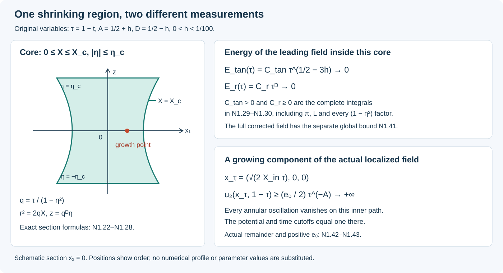
The drawing shows the ordering and formulas of N1.22–N1.31. It is a schematic, with no numerical velocity samples or substituted profile constants. The editable SVG is its reproducible source.
The full volume element follows from \(dx=r\,dr\,d\theta\,dz\). At fixed \(\eta\), \(r\,dr=q\,dX\). The determinant in \((X,\eta)\mapsto(r,z)\) has no second term because \(z_X=0\). Combining N1.23–N1.24 gives
\[ dx=\tau^{1+D}L(\eta)(1-\eta^2)^{-D-2} \,dX\,d\theta\,d\eta. \tag{N1.27} \]In particular
\[ |\mathcal C_\tau| =2\pi X_c\,\tau^{1+D} \int_{-\eta_c}^{\eta_c} L(\eta)(1-\eta^2)^{-D-2}\,d\eta. \tag{N1.28} \]The integral is a finite strictly positive constant: its integrand is continuous and positive on a fixed compact interval. No part of that constant has been discarded. The volume power is \(1+D=3/2-h\).
Consider the kinetic energy of the leading field on this specific region. Its angular and axial contributions are exactly
\[ \begin{aligned} \mathcal E_{\rm tan}^{(0)}(\tau) &=\frac12\int_{\mathcal C_\tau} \bigl\{(u_\theta^{(0)})^2+(u_z^{(0)})^2\bigr\}\,dx\\ &=\pi\tau^{1+D-2A} \int_{-\eta_c}^{\eta_c}\int_0^{X_c} (E^2+U^2)L(\eta)(1-\eta^2)^{2A-D-2}\,dX\,d\eta . \end{aligned} \tag{N1.29} \]Its radial contribution is
\[ \begin{aligned} \mathcal E_r^{(0)}(\tau) &=\frac12\int_{\mathcal C_\tau}(u_r^{(0)})^2\,dx\\ &=\frac{\pi}{2}\tau^D \int_{-\eta_c}^{\eta_c}\int_0^{X_c} \frac{V_0(X,\eta)^2}{X} L(\eta)(1-\eta^2)^{-D-1}\,dX\,d\eta . \end{aligned} \tag{N1.30} \]For N1.30, use \((u_r^{(0)})^2=V_0^2/(2qX)\); the energy factor \(1/2\), angular integral \(2\pi\), and denominator \(2X\) give the coefficient \(\pi/2\). The integrand at \(X=0\) extends continuously as \(Xv_0^2\). Both integrals are finite. The first is strictly positive because \(E>0\) on \(X>0\).
The two time powers are
\[ 1+D-2A=\frac12-3h>0,\qquad D=\frac12-h>0. \tag{N1.31} \]Thus this core’s leading kinetic energy tends to zero, even though its leading angular velocity grows. This exact calculation concerns \(u^{(0)}\) on \(\mathcal C_\tau\). The full corrected velocity also contains oscillations, higher coefficients and localization terms. N1.6 proves its uniform global energy bound from the exact equation, without assuming that the leading energy calculation controls every correction.
The region \(\mathcal C_\tau\) is defined by fixed profile coordinates. It need not be a material region transported by \(u\). For a smooth incompressible velocity, a material flow map \(Y(a,t)\) satisfies \(\partial_tY=u(Y,t)\). Differentiating in \(a\) gives \(\partial_tD_aY=(D_xu)(Y,t)D_aY\); hence the determinant obeys \(\partial_t\det D_aY=(\nabla\cdot u)(Y,t)\det D_aY=0\). With initial determinant one, it remains one. This volume preservation for material sets is consistent with N1.28: the sets \(\mathcal C_\tau\) are selected by N1.22, not by a fixed collection of moving fluid particles.
N1.5. Why oscillations can carry the missing stress
At fixed \(z,t\), write the two tangential residuals as \(R_\theta(r)\) and \(R_z(r)\). The original radial stress equations are
\[ R_\theta=-\left(\partial_r+\frac2r\right)T_{r\theta}, \qquad R_z=-\left(\partial_r+\frac1r\right)T_{rz}. \tag{N1.32} \]Multiplication by \(r^2\) or \(r\), respectively, and integration from the axis give the axis-regular choices
\[ T_{r\theta}(r)=-r^{-2}\int_0^r s^2R_\theta(s)\,ds, \qquad T_{rz}(r)=-r^{-1}\int_0^r sR_z(s)\,ds. \tag{N1.33} \]Indeed differentiating \(r^2T_{r\theta}\) and \(rT_{rz}\) recovers N1.32, including its minus signs. The homogeneous integration constants would give \(r^{-2}\) and \(r^{-1}\) terms and are excluded by axis regularity.
Suppose a residual is zero for \(r\le r_a\) and \(r\ge r_b\), with \(0<r_a<r_b\). The corresponding stress is zero for \(r\le r_a\). For \(r\ge r_b\), it is zero if and only if the appropriate full moment vanishes:
\[ \int_0^\infty s^2R_\theta(s)\,ds=0,\qquad \int_0^\infty sR_z(s)\,ds=0. \tag{N1.34} \]Necessity and sufficiency both follow from the constant numerators of N1.33 outside the support. These exact moments explain why radial matching is part of the construction.
An oscillation can have zero mean velocity and nonzero mean momentum flux. To see every coefficient, let \(a,b\in\mathbb R^3\), let \(\varphi\) range over a circle, and define
\[ w(\varphi)=a\cos\varphi+b\sin\varphi,\qquad \langle H\rangle=\frac1{2\pi}\int_0^{2\pi}H(\varphi)\,d\varphi. \tag{N1.35} \]Direct integration gives
\[ \langle w\rangle=0,\qquad \langle w\otimes w\rangle=\frac12(a\otimes a+b\otimes b). \tag{N1.36} \]The mixed integrals vanish and each square integrates to \(\pi\). Thus \(\langle w_rw_\theta\rangle=(a_ra_\theta+b_rb_\theta)/2\) and \(\langle w_rw_z\rangle=(a_ra_z+b_rb_z)/2\). Changing \(w\) to \(-w\) leaves both products unchanged.
The actual construction supplies two flux directions \(v_1,v_2\in\mathbb R^2\) and positive coefficients \(c_1,c_2\) with
\[ T=c_1v_1+c_2v_2. \tag{N1.37} \]At any point where \(\det(v_1,v_2)\ne0\), the coefficients have the exact formulas
\[ c_1=\frac{\det(T,v_2)}{\det(v_1,v_2)},\qquad c_2=\frac{\det(v_1,T)}{\det(v_1,v_2)}. \tag{N1.38} \]Multiplying these expressions out in coordinates proves N1.37; uniqueness follows from the nonzero determinant. Positivity is the additional restriction defining the interior of the cone spanned by these ordered vectors. The profile construction proves that its actual stress satisfies this restriction, and the covariance proof, C1–C8 constructs the amplitudes, including their edge behavior.
N1.36 is an averaging identity, not by itself a solution of the momentum equation. Actual waves have moving phases, varying envelopes, viscosity, pressure and compact cutoffs. Their exact divergence-free velocities come from curls, and their derivatives contain additional terms. The pulse proof, P0–P8 and the four-operation cycle, K0–K8 retain those terms. The later mean corrections restore the exact compatibility conditions. The single actual sum then has a residual whose every fixed derivative decays to arbitrary order near the singular point.
N1.6. Smooth forcing, energy, and the surviving growth path
For any smooth divergence-free \(v\), assigning \(f=\mathscr R_\nu(v,p)\) makes the equation true at times where \(v,p\) are smooth. That identity alone gives no smooth extension of \(f\) through a singular time. The construction proves that extension for the full residual, after all corrections.
Localization also has to preserve incompressibility. If \(v=\operatorname{curl}\mathcal A\) and \(c\) is a smooth cutoff, then
\[ u=\operatorname{curl}(c\mathcal A) =c\,v+\nabla c\times\mathcal A,\qquad \nabla\cdot u=0. \tag{N1.39} \]The first equality is the curl product rule. The second follows by cancellation of mixed partial derivatives in divergence of a curl. The term \(\nabla c\times\mathcal A\) is part of the localized velocity and its residual. If one instead used \(cv\), its divergence would be \(\nabla c\cdot v\), which generally does not vanish. The actual local field has the potentials and smooth extensions needed for N1.39; F0–F3 proves every cutoff term, every terminal force derivative and the compact extension after time one.
Now use that actual compactly supported solution, for the original prescribed viscosity \(\nu\). At every \(T<1\), integration of the exact equation against \(u_\nu\) is legitimate on its fixed compact support. The time term is the derivative of N1.4. Since \(\nabla\cdot u_\nu=0\),
\[ u_\nu\cdot((u_\nu\cdot\nabla)u_\nu) =\nabla\cdot\left(\frac{|u_\nu|^2}{2}u_\nu\right), \quad u_\nu\cdot\nabla p_\nu=\nabla\cdot(p_\nu u_\nu). \]Both integrals vanish. Integrating the Laplacian by parts gives
\[ \frac12\frac d{dt}\|u_\nu(t)\|_2^2 +\nu\|\nabla u_\nu(t)\|_2^2 =\langle f_\nu(t),u_\nu(t)\rangle. \tag{N1.40} \]Define \(F_\nu(t)=\int_0^t\|f_\nu(s)\|_2\,ds\). It is finite up to time one because the force is smooth with fixed compact support. For \(\delta>0\), divide N1.40 by \((\|u_\nu(t)\|_2^2+\delta^2)^{1/2}\), discard only the nonnegative dissipation in this inequality, and apply Cauchy–Schwarz. This yields
\[ \frac d{dt}(\|u_\nu(t)\|_2^2+\delta^2)^{1/2} \le\|f_\nu(t)\|_2. \]Using \(u_\nu(0)=0\), integrate and let \(\delta\downarrow0\) to obtain \(\|u_\nu(t)\|_2\le F_\nu(t)\). Return to the full identity N1.40 and retain dissipation:
\[ \begin{aligned} \|u_\nu(t)\|_2^2+2\nu\int_0^t\|\nabla u_\nu(s)\|_2^2\,ds &\le2\int_0^tF_\nu'(s)F_\nu(s)\,ds\\ &=F_\nu(t)^2\le F_\nu(1)^2. \end{aligned} \tag{N1.41} \]Monotone convergence of the nonnegative dissipation integrals gives \(\int_0^1\|\nabla u_\nu(s)\|_2^2ds\le F_\nu(1)^2/(2\nu)\). This is a global bound for the full corrected field.
The unbounded velocity is witnessed at a particular Cartesian point. At viscosity one, the actual construction supplies \(X_{\rm in}>0\), \(e_0=E(X_{\rm in},0)>0\), and one finite constant \(C\) such that
\[ x_\tau=(\sqrt{2X_{\rm in}\tau},0,0),\qquad u_\theta(x_\tau,1-\tau) =\tau^{-A}(e_0+\varepsilon_\tau),\qquad |\varepsilon_\tau|\le C\tau^{2h}. \tag{N1.42} \]The unchanged inner profile and the full summation remainder give this estimate in I6 and F6. All annular oscillations vanish on that path, and both localization cutoffs are one there for sufficiently small \(\tau\). At \(x_\tau\), \(\theta=0\) and \(e_\theta=(0,1,0)\), so the displayed component is \(u_2\). Choose \(\tau\) small enough that \(C\tau^{2h}\le e_0/2\). Then
\[ \|u(1-\tau)\|_\infty\ge u_2(x_\tau,1-\tau) \ge\frac{e_0}{2}\tau^{-A}. \tag{N1.43} \]Continuity implies that the essential supremum is at least this pointwise value: every smaller value is exceeded in a neighborhood of the point. Since N1.43 holds at every sufficiently small positive \(\tau\), the norm has full limit \(+\infty\), which implies the source’s stated limsup conclusion.
To exclude a different global smooth solution, one also needs a comparison theorem. For any \(T<1\), the constructed compact field is in \(L^\infty([0,T];L^2\cap L^6)\) and has \(\nabla u\in L^1([0,T];L^\infty)\). A smooth competitor with bounded kinetic energy supplies the other \(L^\infty_tL^2_x\) input. The complete whole-space comparison proof, equations (1)–(64) proves equality on \([0,T]\), without assuming decay of the competitor’s pressure. It retains the expanding spatial cutoff flux and proves its Sobolev and pressure estimates. Thus a global smooth competitor would equal \(u\) on every such interval. It would be bounded on a compact neighborhood of \((0,1)\), contradicting N1.43 along \(x_\tau\to0\). N1.7 transfers this conclusion to every viscosity.
N1.7. Every viscosity and the original periodic domain
Let \((u,p,f)\) be the constructed viscosity-one fields. For any \(\nu>0\), use the exact map
\[ u_\nu(x,t)=\sqrt\nu\,u(x/\sqrt\nu,t),\quad p_\nu(x,t)=\nu p(x/\sqrt\nu,t),\quad f_\nu(x,t)=\sqrt\nu\,f(x/\sqrt\nu,t). \tag{N1.44} \]Writing \(y=x/\sqrt\nu\), the four momentum terms become
\[ \begin{aligned} \partial_tu_\nu&=\sqrt\nu\,\partial_tu,& (u_\nu\cdot\nabla_x)u_\nu&=\sqrt\nu\,(u\cdot\nabla_y)u,\\ \nu\Delta_xu_\nu&=\sqrt\nu\,\Delta_yu,& \nabla_xp_\nu&=\sqrt\nu\,\nabla_yp. \end{aligned} \tag{N1.45} \]They therefore satisfy \(\mathscr R_\nu(u_\nu,p_\nu)=f_\nu\). Velocity and spatial derivative factors cancel in divergence. Time and the zero initial datum are unchanged. A compact spatial set \(\mathcal K\) maps to \(\sqrt\nu\,\mathcal K\). Each force derivative retains
\[ \partial_x^\alpha\partial_t^m f_\nu =\nu^{(1-|\alpha|)/2} (\partial_y^\alpha\partial_t^m f)(x/\sqrt\nu,t). \tag{N1.46} \]For each fixed positive \(\nu\) these are finite constant multiples of the original derivatives, so smooth compact support is preserved.
The volume change is \(dx=\nu^{3/2}dy\). Hence
\[ \begin{gathered} \|u_\nu(t)\|_2^2=\nu^{5/2}\|u(t)\|_2^2,\qquad \|f_\nu(t)\|_2=\nu^{5/4}\|f(t)\|_2,\\ \nu\int_0^t\|\nabla_xu_\nu(s)\|_2^2\,ds =\nu^{5/2}\int_0^t\|\nabla_yu(s)\|_2^2\,ds. \end{gathered} \tag{N1.47} \]The full energy inequality N1.41 has the same factor \(\nu^{5/2}\) on both sides. At the point \(\sqrt\nu\,x_\tau\), the lower bound in N1.43 is multiplied by \(\sqrt\nu\). If a global competitor at viscosity \(\nu\) existed, the inverse map
\[ v(y,t)=\nu^{-1/2}v_\nu(\sqrt\nu y,t),\qquad P(y,t)=\nu^{-1}P_\nu(\sqrt\nu y,t) \tag{N1.48} \]would produce a viscosity-one competitor with energy \(\nu^{-5/2}\|v_\nu(t)\|_2^2\), contradicting N1.6.
For the periodic statement, fix this viscosity and choose \(\lambda>1\) so large that the common support of velocity, pressure and force, after division by \(\lambda\), lies strictly inside \(Q_0=(-1/2,1/2)^3\). Such a choice exists by compactness. Put \(t_0=1-\lambda^{-2}\), and define
\[ \begin{aligned} \widetilde u(x,t)&=\lambda u_\nu(\lambda x,\lambda^2(t-t_0)),\\ \widetilde p(x,t)&=\lambda^2p_\nu(\lambda x,\lambda^2(t-t_0)),\\ \widetilde f(x,t)&=\lambda^3f_\nu(\lambda x,\lambda^2(t-t_0)). \end{aligned} \tag{N1.49} \]The first two are used for \(t_0\le t<1\); the force continues beyond one. Extend all three by zero for \(t<t_0\). The original construction vanishes on an initial interval, so the extensions are smooth there. Every momentum term has factor \(\lambda^3\); divergence has factor \(\lambda^2\). The viscosity remains \(\nu\), and original time one is reached precisely at \(t=1\).
Set
\[ U(x,t)=\sum_{k\in\mathbb Z^3}\widetilde u(x+k,t),\quad P_{\rm per}(x,t)=\sum_{k\in\mathbb Z^3}\widetilde p(x+k,t),\quad F_{\rm per}(x,t)=\sum_{k\in\mathbb Z^3}\widetilde f(x+k,t). \tag{N1.50} \]The translates have disjoint closed supports with a positive gap. The sums are locally finite, all derivatives can be taken term by term, and all nonlinear products between distinct translates vanish. Thus
\[ (U\cdot\nabla)U =\sum_{k\in\mathbb Z^3} (\widetilde u\cdot\nabla)\widetilde u(x+k,t). \tag{N1.51} \]This proves the exact periodic equation, including a periodic pressure. Compact time support of the force survives N1.49. The velocity and pressure are supported in the same fixed compact subset of \(Q_0\) before time one.
At
\[ \widetilde x_\tau=\lambda^{-1}\sqrt\nu\,x_\tau,\qquad \widetilde t_\tau=1-\lambda^{-2}\tau, \]only the zeroth translate contributes, and
\[ U_2(\widetilde x_\tau,\widetilde t_\tau) \ge\frac{\lambda\sqrt\nu\,e_0}{2}\tau^{-A}. \tag{N1.52} \]The periodic comparison needs no spatial cutoff. If \(V\) is a smooth periodic competitor, put \(w=V-U\) on a shorter interval. Subtract the equations in the form
\[ \partial_tw+(V\cdot\nabla)w+(w\cdot\nabla)U -\nu\Delta w+\nabla(P_V-P_{\rm per})=0. \]Integration against \(w\), periodic integration by parts, and divergence zero give
\[ \frac12\frac d{dt}\|w\|_2^2+\nu\|\nabla w\|_2^2 \le\|\nabla U\|_\infty\|w\|_2^2. \tag{N1.53} \]Multiply by \(\exp(-2\int_0^t\|\nabla U(s)\|_\infty ds)\). Its product with \(\|w(t)\|_2^2\) is nonincreasing, nonnegative, and initially zero, so \(w=0\). A global smooth competitor would therefore contradict N1.52. This proves the periodic implication from the supplied compact whole-space construction.
N1.8. How the construction supplies the theorem
The mechanism is a succession of exact constructions, not an inference from a picture or a sample of a flow. The table identifies the complete proofs available for each part; N2–N7 develop them in the corresponding lesson sequence.
| Mathematical part | What it supplies | Complete proof |
|---|---|---|
| Leading profile | Smooth Cartesian axis, positive angular profile, both exterior endpoints, all five moments and the admissible stress cone | G/O/H/J/Q/V; V7 collects all six properties |
| Every-order background | The actual coefficient sequence, one radial interval, compact moment corrections, and one divergence-preserving base with both stresses | D/Y/Z; Z0–Z8 |
| Oscillations and mean corrections | Closed-support separation, the pulse equation, positive covariance, exact curls, radial and temporal inverses, and the five-moment solve | K0–K6 with its complete W/P/C/R/M/T/S suppliers |
| All stages and one actual field | One common domain, increasing residual decay, stage-independent derivative losses, and convergence of the actual potentials and pressure | K7–K8, L0–L7 and I0–I7; summation lesson S1–S7 |
| Compact force and breakdown | Every localized residual term, all terminal force derivatives, compact smooth extension, energy, comparison and the original growth point | F0–F8 and comparison (1)–(64) |
The same pressure and velocity pass through these maps. In particular, the mean correction uses the reserved interval supplied by the actual profiles, the pulse inverse uses their actual shear margins, and the final localization uses the actual potential sum. The complete proof connections, Sections 2–3, check the order of choices and these receivers.
The human smooth-forcing programme provides essential context for the question. Alpöge, Buckmaster and Coiculescu’s IPM paper, arXiv:2609.16470v1, explicitly develops the Córdoba–Martínez-Zoroa approach and focuses on smoothness jointly in space and time. Its introduction and overview describe retained nonlinear residuals and oscillatory corrections. The source’s IPM theorem is a separate theorem about a transported density; it is not an input to the Navier–Stokes proof in the table. The Courant account of Alpöge and Buckmaster’s Euler and Boussinesq work identifies the companion smooth-forcing programme. Their complete mathematical treatments belong to the corresponding foundation lessons. Here the proved Navier–Stokes calculation N1.1, N1.32–N1.41 makes the relevant issue explicit: an exact residual must meet the required force class through the terminal time.
The workbench contribution used in this course is the independent derivation and comparison of these maps, including the full pressure comparison and the retained terms in the summation. Original author formulas remain identifiable. Transcription corrections restore what OpenAI wrote; editorial mathematical arguments stay in separate exposition.
N1.9. Five worked exercises
Exercise 1. Find the core’s exact horizontal section. Fix \(z\) and \(\tau>0\). Determine when this height meets \(\mathcal C_\tau\), and give the disk radius there.
Solution. The function \(\eta\mapsto\tau^D\eta(1-\eta^2)^{-D}\) is strictly increasing by N1.24. It maps \([-\eta_c,\eta_c]\) onto \([-z_{\max},z_{\max}]\). Thus the height meets the core exactly when \(|z|\le z_{\max}\). Solve that strictly monotone scalar equation for its unique \(\eta\), set \(q=\tau/(1-\eta^2)\), and use N1.22:
\[ x_1^2+x_2^2\le 2X_cq =\frac{2X_c\tau}{1-\eta^2}. \]This is a disk, with the full factor \(2X_c\) and the same \(\eta\) determined by the height. At \(z=0\) it has radius \(\sqrt{2X_c\tau}\); at either endpoint height it has radius \(r_{\max}\). The boundary need not have the shape of a cylinder.
Exercise 2. Compare the two exact core-energy contributions. Denote the constant integrals, including their coefficients, in N1.29 and N1.30 by \(C_{\rm tan}\) and \(C_r\). Prove a formula for their ratio and show when it is zero.
Solution. The earlier proof gives \(0<C_{\rm tan}<\infty\) and \(0\le C_r<\infty\). Therefore
\[ \frac{\mathcal E_r^{(0)}(\tau)}{\mathcal E_{\rm tan}^{(0)}(\tau)} =\frac{C_r}{C_{\rm tan}}\, \tau^{D-(1+D-2A)} =\frac{C_r}{C_{\rm tan}}\tau^{2h}. \]It tends to zero because \(h>0\). Since every factor in the radial integral is positive except \(V_0^2/X\), its value is zero precisely when \(V_0=0\) on the whole core profile rectangle. For necessity, a nonzero value at any \(X>0\) would, by continuity, give a neighborhood with positive integral. Axis continuity then includes \(X=0\). For sufficiency the integrand is identically zero. This statement concerns the leading field and does not omit corrections from the full-field energy estimate.
Exercise 3. Show why zero-mean waves can carry either sign of a cross flux. Construct two vector waves with zero mean, the same mean kinetic energy, and opposite radial–angular flux.
Solution. In the ordered components \((r,\theta,z)\), take
\[ w_+(\varphi)=(1,1,0)\cos\varphi,\qquad w_-(\varphi)=(1,-1,0)\cos\varphi. \]Both means vanish. Their mean squared lengths are \(2\langle\cos^2\varphi\rangle=1\), and their mean kinetic energies are \(1/2\). Their radial–angular fluxes are respectively \(1/2\) and \(-1/2\); both radial–axial fluxes are zero. Negating all components of either wave preserves its flux, while changing just the angular sign reverses that cross flux. These are exact circle identities. Constructing waves with the required equation, support and pressure remains the pulse construction cited in N1.5.
Exercise 4. Prove that the theorem’s force cannot be zero. Use the exact energy identity and the initial datum.
Solution. If \(f_\nu=0\), N1.41 has right side zero. Each term on its left is nonnegative, so \(\|u_\nu(t)\|_2=0\) at every \(t<1\). Smoothness makes the field identically zero: any nonzero point would have a neighborhood with positive square integral. This contradicts N1.43 and its viscosity scaling. The same argument applies on the torus, using periodic integration by parts. Thus the force in this construction is nonzero, even though it extends smoothly through the singular time.
Exercise 5. Retain every constant in periodic energy and growth. Compute the periodic \(L^2\) energy from N1.49–N1.50, and express the lower bound N1.52 in terms of \(1-\widetilde t_\tau\).
Solution. At any \(t_0\le t<1\), disjoint translates and a fundamental cube give
\[ \begin{aligned} \|U(t)\|_{L^2(\mathbb T^3)}^2 &=\int_{\mathbb R^3}|\widetilde u(x,t)|^2\,dx\\ &=\lambda^{-1} \|u_\nu(\lambda^2(t-t_0))\|_{L^2(\mathbb R^3)}^2\\ &=\lambda^{-1}\nu^{5/2} \|u(\lambda^2(t-t_0))\|_{L^2(\mathbb R^3)}^2 . \end{aligned} \]The kinetic energy is half this expression. The coefficient is \(\lambda^2\lambda^{-3}\), not one. Also \(\tau=\lambda^2(1-\widetilde t_\tau)\), so
\[ U_2(\widetilde x_\tau,\widetilde t_\tau) \ge \frac{\sqrt\nu\,e_0}{2} \lambda^{1-2A}(1-\widetilde t_\tau)^{-A} =\frac{\sqrt\nu\,e_0}{2} \lambda^{-2h}(1-\widetilde t_\tau)^{-A}. \]The growth point is \(\widetilde x_\tau=(\sqrt{2\nu X_{\rm in}(1-\widetilde t_\tau)},0,0)\); this follows by substituting the same \(\tau\) into N1.42 and retaining both spatial scale factors. The factor \(\lambda^{-2h}\) is positive and fixed, so the lower bound diverges while the energy stays bounded.
Sources and reading scope
OpenAI’s original 166-page paper supplies Theorem 1.1, the original geometry in Sections 2–3, and Corollary 10.6. The original pages used for this lesson are 1–4, 6–10 and 125, with the full local and final constructions supplied by the pinned audit links above. N1.27–N1.30 give the full coordinate Jacobian and energy integrals behind the source’s core-size calculation. They are editorial derivations in the original variables.
For the human smooth-forcing programme, see Alpöge–Buckmaster–Coiculescu, arXiv:2609.16470v1, introduction and construction overview. This citation supplies historical and mathematical context; the present lesson concerns the forced Navier–Stokes theorem. Bibliographical details are in SOURCES.json.
The local-field construction, compact force extension and energy and comparison argument complete the proof of the theorem stated here.
From velocity profiles to stress and five exact moments
NS-BLOWUP N2.1. A leading velocity field is useful only if its full residual has the form needed by the later corrections. This lesson derives that form and proves how to alter the profiles without disturbing their exterior.
We answer three concrete questions:
- How does the velocity profile determine the radial stress, with pressure and both viscous contributions retained?
- Which five moments must be restored after changing a profile, and how can their nonlinear correction equations actually be solved?
- Which stress directions can be supplied by positive wave covariances?
The opening lesson supplies the exact target theorem and its geometry. We recall the needed coordinates here, and give the complete calculations for the stress and finite correction mechanisms. These are tools for the actual outer, axis, joining and shear constructions; the complete leading-profile existence proof is supplied by the linked construction papers and is developed further in N2. This lesson does not replace those constructions with an assumption.
The original formulas come from OpenAI's Finite Time Blowup for Navier–Stokes, Sections 4.1–4.3, Lemma 4.7 and Appendix A.1. All arguments here are editorial exposition, separate from the diplomatic transcription. Original mathematical irregularities, if found, belong in separate editorial discussion.
P0. Coordinates, regularity and incompressibility
The starting data are velocity profiles \(E,U\) and one prescribed pressure value \(\Pi_{\rm ax}(\eta)\). They determine the radial velocity and pressure by exact integration. The angular profile contains a square root at the axis, so we work with its actual smooth coefficient \(F=\phi/\mathsf C\) when testing Cartesian regularity. The factor \(\mathsf C\) remains fixed and visible.
Keep the original parameters and variables
\[ \begin{gathered} 0<h<\tfrac12,\quad A=\tfrac12+h,\quad D=\tfrac12-h,\quad \tau=1-t,\\ z=q^D\eta,\quad \tau=q(1-\eta^2),\quad d=1-\eta^2,\quad L=1-2h\eta^2,\\ s=r^2/2,\qquad X=s/q. \end{gathered} \tag{P0.1} \]For each \(\tau>0,z\in\mathbb R\), the equation \(q-z^2q^{2h}=\tau\) has exactly one solution \(q>|z|^{1/D}\). Indeed its left side vanishes at the lower endpoint, tends to infinity, and has derivative \(L\ge1-2h>0\) on that half-line. When \(z=0\), the endpoint is zero and the same argument applies. Thus \(|\eta|<1\). The implicit function theorem gives smooth \(q,\eta\) at every \(t<1\). Differentiation gives
\[ q_t=-L^{-1},\quad \eta_t=\frac{D\eta}{qL},\quad X_t=\frac X{qL}, \qquad q_z=\frac{2\eta q^{1-D}}L,\quad \eta_z=\frac d{q^DL},\quad X_z=-\frac{2\eta X}{q^DL}. \tag{P0.2} \]The identity \(L-2D\eta^2=d\) proves the middle axial formula. For \(\mathcal D_X=X\partial_X\), any real \(b\), and a smooth profile \(f\), the chain rule therefore gives
\[ \begin{split} \partial_t(q^bf)&=q^{b-1}T_bf,&T_bf&=L^{-1}(-bf+D\eta f_\eta+\mathcal D_Xf),\\ \partial_z(q^bf)&=q^{b-D}Z_bf,&Z_bf&=L^{-1}(2b\eta f+df_\eta-2\eta\mathcal D_Xf). \end{split} \tag{P0.3} \]All endpoint statements in \(\eta\) mean continuous one-sided derivatives.
Retain the fixed amplitude factor \(\mathsf C>1\) and set
\[ \begin{gathered} E=\mathsf C^{-1}\sqrt{2X}\phi=\sqrt{2X}F,\quad H=\sqrt{2X}E=2XF,\quad V_0=Xv_0,\\ (u_\theta^{(0)},u_z^{(0)},ru_r^{(0)},p^{(0)}) =(q^{-A}E,q^{-A}U,V_0,q^{-2A}\Pi). \end{gathered} \tag{P0.4} \]The axis data are the smooth functions \(F=\phi/\mathsf C,U,v_0,\Pi\), with \(\phi>0\), on each finite closed \((X,\eta)\) rectangle. This does not require \(E\) to be smooth as a function of \(X\) at zero. In Cartesian coordinates the exact field is
\[ u_1^{(0)}=\frac{v_0x_1}{2q}-q^{-A-1/2}Fx_2,\qquad u_2^{(0)}=\frac{v_0x_2}{2q}+q^{-A-1/2}Fx_1,\qquad u_3^{(0)}=q^{-A}U,\qquad p^{(0)}=q^{-2A}\Pi. \tag{P0.5} \]These expressions prove smoothness across the axis for \(t<1\).
The radial average is \(\mathcal A_Xf=\int_0^1f(aX,\eta)\,da\). Differentiation under this fixed finite integral proves its smooth extension with value \(f(0,\eta)\). Since \(A+D=1\), incompressibility is exactly
\[ 0=\partial_sV_0+\partial_z(q^{-A}U) =q^{-1}\left[(V_0)_X+L^{-1}(-2A\eta U+dU_\eta-2\eta XU_X)\right]. \tag{P0.6} \]Integrate from zero, use \(V_0(0,\eta)=0\) and \(\int_0^XxU_X\,dx=XU-\int_0^XU\,dx\). This gives the original formula, including its sign,
\[ V_0=\frac X L\left(2\eta U-2D\eta\mathcal A_XU-d\partial_\eta\mathcal A_XU\right). \qquad \Pi_X=\frac{E^2}{2X}=F^2. \tag{P0.7} \]The second identity equates the coefficients \(\sqrt{2X}\Pi_X\) and \(E^2/\sqrt{2X}\) of \(\partial_rp^{(0)}\) and \((u_\theta^{(0)})^2/r\), both with factor \(q^{-2A-1/2}\). It cancels precisely those radial terms. The remaining radial terms are retained in P1.6 below.
P1. Exact stress, including both kinds of viscosity
The momentum residual is \(\mathcal R_\nu(u,p)=\partial_tu+(u\cdot\nabla)u-\nu\Delta u+\nabla p\). Its cylindrical components contain curvature terms. Angular momentum \(ru_\theta\) absorbs the angular transport curvature, while the radial viscous operators still retain their \(1/r\) terms. We first calculate the source's \(\nu=1\) field and then prove the full map for every original \(\nu>0\).
Define the original quantities
\[ \begin{gathered} l=\mathcal D_X\log H=1+XF_X/F,\qquad W=1-2D\eta\mathcal A_XU-d\partial_\eta\mathcal A_XU,\qquad H_c=D\eta+dU,\\ S_q=-Wl-h(1-2\eta U)-H_cF_\eta/F,\\ S_n=-W\mathcal D_XU-A(1-2\eta U)U-H_cU_\eta-d\Pi_\eta+4A\eta\Pi+2\eta\mathcal D_X\Pi. \end{gathered} \tag{P1.1} \]Using P0.3 and \(V_0L=X(2\eta U+W-1)\), direct collection of the three derivatives proves the complete material-derivative formula
\[ (\partial_t+u_r^{(0)}\partial_r+u_z^{(0)}\partial_z)(q^bf) =\frac{q^{b-1}}L\left[b(-1+2\eta U)f+W\mathcal D_Xf+H_cf_\eta\right]. \tag{P1.2} \]Here is the collection of terms in detail. At fixed \(z,t\), \(\partial_rX=r/q\), so
\[ u_r^{(0)}\partial_r(q^bf)=q^{b-1}\frac{V_0}{X}\mathcal D_Xf. \]Also \(A+D=1\), and hence
\[ u_z^{(0)}\partial_z(q^bf) =\frac{q^{b-1}}L U(2b\eta f+df_\eta-2\eta\mathcal D_Xf). \]The time derivative contributes \(q^{b-1}(-bf+D\eta f_\eta+\mathcal D_Xf)/L\). Thus the three coefficients are
\[ -b+2b\eta U,\qquad D\eta+dU,\qquad 1+LV_0/X-2\eta U=W. \]This proves P1.2 term by term, including the radial transport.
For \(b=-h,f=H\), this is \(-q^{-h-1}HS_q/L\). For \(b=-A,f=U\), adding \(\partial_zp^{(0)}=q^{-A-1}Z_{-2A}\Pi\) gives \(-q^{-A-1}S_n/L\). The equality of pressure powers uses \(2A+D=A+1\).
The two radial equations have the unique axis-regular solutions
\[ \begin{gathered} \mathcal D_XQ_s+(1+l)Q_s=S_q,\qquad \mathcal D_XN_s+N_s=S_n,\\ Q_s=\frac{\int_0^XHS_q\,dx}{XH} =\frac1{F(X,\eta)}\int_0^1aF(aX,\eta)S_q(aX,\eta)\,da,\\ N_s=\frac1X\int_0^XS_n\,dx=\int_0^1S_n(aX,\eta)\,da. \end{gathered} \tag{P1.3} \]Indeed the integrating factors are \(XH\) and \(X\). Their homogeneous constants would give \(X^{-2}\) and \(X^{-1}\) singularities, since \(H=2X\phi/\mathsf C\) and \(\phi(0,\eta)>0\). The displayed integrals are smooth and have values \(S_q(0,\eta)/2\) and \(S_n(0,\eta)\) at zero.
For \(r>0\), write \(D_\theta=\partial_r+2/r\), \(D_z=\partial_r+1/r\). The inviscid angular residual is \(-q^{-A-1}ES_q/L\), because angular momentum must first be divided by \(r\). Its negative radial primitive is
\[ \frac1{r^2}\int_0^r\rho^2q^{-A-1}\frac{E S_q}L\,d\rho =q^{-A-1/2}F\frac{XQ_s}L. \tag{P1.4} \]Here \(\rho\,d\rho=q\,dx\), \(\rho=\sqrt{2qx}\), and \(\int_0^X\sqrt{2x}ES_q\,dx=XHQ_s\); thus all powers and factors of two are retained. The axial calculation similarly gives \(r^{-1}\int_0^r\rho q^{-A-1}S_n/L\,d\rho=q^{-A-1/2}XN_s/(L\sqrt{2X})\).
Put
\[ \begin{gathered} p_s=\left(\frac{XQ_s}L,\frac{XN_s}{LE}\right),\quad a=1-2\mathcal D_X\log E=2-2l,\quad b_s=\frac{2\mathcal D_XU}E,\quad \mathfrak s=(a,-b_s),\quad \mathcal T_0=F(p_s-\mathfrak s),\quad T=q^{-A-1/2}\mathcal T_0,\\ (\partial_ru_\theta^{(0)}-u_\theta^{(0)}/r,\partial_ru_z^{(0)})=-q^{-A-1/2}F\mathfrak s,\\ \mathcal R_1(u^{(0)},p^{(0)})\cdot e_j=-D_jT_j-\partial_z^2u_j^{(0)},\qquad j\in\{\theta,z\}. \end{gathered} \tag{P1.5} \]The radial viscous operators are exactly \(D_\theta(\partial_ru_\theta-u_\theta/r)\) and \(D_z\partial_ru_z\). Subtracting them from the inviscid residual proves the last line and the stress sign. In particular, \(p_s\) is the integrated inviscid contribution, not the pressure. Axial viscosity has not vanished: its exact profile is \(\partial_z^2(q^{-A}f)=q^{-A-2D}Z_{-A-D}Z_{-A}f\), for \(f=E,U\).
For completeness set \(B_r=V_0/\sqrt{2X}\), so \(u_r^{(0)}=q^{-1/2}B_r\). After the centrifugal-pressure cancellation, the full radial residual is
\[ \begin{split} \mathcal R_1(u^{(0)},p^{(0)})\cdot e_r ={}&q^{-3/2}\left\{\frac{\frac12(1-2\eta U)B_r+W\mathcal D_XB_r+H_c(B_r)_\eta}{L} -2X(B_r)_{XX}-2(B_r)_X+\frac{B_r}{2X}\right\}\\ &-q^{-3/2+2h}Z_{-1/2-D}Z_{-1/2}B_r. \end{split} \tag{P1.6} \]This follows from P1.2 and \((\partial_{rr}+r^{-1}\partial_r-r^{-2})(q^{-1/2}B_r)=q^{-3/2}(2X(B_r)_{XX}+2(B_r)_X-B_r/(2X))\). It retains every radial term. Its first power is larger than the cancelled leading power \(q^{-3/2-2h}\) by \(q^{2h}\); its axial-viscosity power differs by \(q^{4h}\). In P1.5 the axial viscosity differs from the leading tangential power \(q^{-A-1}\) by \(q^{2h}\). These are exact fixed-profile comparisons, not physical derivative estimates.
The stress vanishes exactly when \(Q_s=-2LF_X/F\) and \(N_s=-2LU_X\). Substitution in P1.3 gives
\[ -2L\frac{X\phi_{XX}+2\phi_X}{\phi}=S_q,\qquad -2L(XU_{XX}+U_X)=S_n. \tag{P1.7} \]Conversely these equations make the displayed expressions for \(Q_s,N_s\) solve their radial equations and be smooth at the axis. Uniqueness in P1.3 then proves zero stress. Thus the equivalence uses the actual axis constants.
For any original viscosity \(\nu>0\), retain \(y=x_\nu/\sqrt\nu\), \(u_\nu(x_\nu,t)=\sqrt\nu u(y,t)\), \(p_\nu=\nu p(y,t)\), and \(T_\nu=\nu T(y,t)\). Direct differentiation gives \(\mathcal R_\nu(u_\nu,p_\nu)=\sqrt\nu\mathcal R_1(u,p)(y,t)\), \(D_{j,\nu}T_{j,\nu}=\sqrt\nu D_jT_j\), and \(\nu\partial_{z_\nu}^2u_{j,\nu}=\sqrt\nu\partial_z^2u_j\). P1.5 therefore retains exactly the same physical stress identity at every \(\nu\). The original coordinates are \(X_\nu=r_\nu^2/(2\nu q_\nu)\), \(\eta_\nu=z_\nu/(\sqrt\nu q_\nu^D)\), with \(q_\nu-z_\nu^2q_\nu^{2h}/\nu=\tau\). No viscosity factor is discarded.
P2. All five cumulative moments and the pressure datum
Changing a profile inside an annulus can change the stress beyond that annulus: the formulas in P1 integrate from the axis. We now identify exactly which accumulated data determine the exterior. The five entries below have different weights, and the pressure has an additional axis datum. Their distinct roles will matter when we restore them.
Use the original moments and prescribed axis pressure:
\[ \begin{gathered} M=\int_0^XU\,dx,\quad I=\int_0^XH\,dx,\quad J=\int_0^XUH\,dx,\\ S=\int_0^X(U^2-E^2/2)\,dx,\quad C_p=\int_0^X\frac{E^2}{2x}\,dx, \qquad \Pi=\Pi_{\rm ax}(\eta)+C_p. \end{gathered} \tag{P2.1} \]The factor \(1/2\) in \(S\) and the weight \(1/(2x)\) in \(C_p\) remain distinct. Since \(XW=X-2D\eta M-dM_\eta\), \(\partial_X(XW)=1-2D\eta U-dU_\eta\). Integration by parts in \(-WXH_X\) yields
\[ \begin{split} \int_0^XHS_q\,dx ={}&-XWH+I-2D\eta J-d\int_0^XU_\eta H\,dx-hI+2h\eta J\\ &-D\eta I_\eta-d\int_0^XUH_\eta\,dx\\ ={}&-XWH+(1-h)I-D\eta I_\eta-dJ_\eta+2(h-D)\eta J. \end{split} \tag{P2.2} \]The lower boundary vanishes because \(XWH=O(X^2)\). For the axial terms other than pressure, the identical integration by parts gives
\[ -XWU+D(M-\eta M_\eta)+4h\eta\int_0^XU^2\,dx-d\partial_\eta\int_0^XU^2\,dx. \tag{P2.3} \]Indeed the coefficient of \(M\) is \(1-A=D\), that of \(\int U^2\) is \(2(A-D)\eta=4h\eta\), and the two copies of \(-d\int UU_\eta\) combine to the derivative shown. No axial boundary value has been omitted: \(XWU=O(X)\) at zero.
Writing \(K_E=\int_0^XE^2/2\,dx\), integration of \(x\Pi_x=E^2/2\) gives \(\int_0^X\Pi\,dx=X\Pi-K_E\). Hence the entire pressure contribution is
\[ \begin{split} \int_0^X(-d\Pi_\eta+4A\eta\Pi+2\eta x\Pi_x)\,dx &=X(4A\eta\Pi-d\Pi_\eta)+d(K_E)_\eta+(2-4A)\eta K_E\\ &=X(4A\eta\Pi-d\Pi_\eta)+d(K_E)_\eta-4h\eta K_E. \end{split} \tag{P2.4} \]The axis pressure is included in \(X\Pi\). Combining P2.2–P2.4 and dividing by the exact integrating factors proves
\[ \begin{split} Q_s&=-W+\frac{(1-h)I-D\eta I_\eta-dJ_\eta+2(h-D)\eta J}{XH},\\ N_s&=-WU+\frac{D(M-\eta M_\eta)+4h\eta S-dS_\eta}{X} +4A\eta\Pi-d\Pi_\eta. \end{split} \tag{P2.5} \]These are original (4.16), derived without discarding pressure or an integration constant.
P3. Exact exterior preservation and stability without radial derivative loss
There are two useful conclusions. Exact agreement of five moments preserves the exterior fields. Small differences of moments control the integrated inviscid vector without requiring small radial derivatives. The second fact allows a later construction to change the shear substantially while controlling the remaining part of the stress. Both conclusions are proved below with their domains.
For two profiles write \(\Delta f=f_2-f_1\) and \(\mathbf m_i=(M_i,I_i,J_i,S_i,C_{p,i})\). Their exact moment differences are
\[ \Delta\mathbf m= \begin{pmatrix} \displaystyle\int_0^X\Delta U\,dx\\ \displaystyle\int_0^X\Delta H\,dx\\ \displaystyle\int_0^X(U_2H_2-U_1H_1)\,dx\\ \displaystyle\int_0^X[U_2^2-U_1^2-(E_2^2-E_1^2)/2]\,dx\\ \displaystyle\int_0^X\frac{E_2^2-E_1^2}{2x}\,dx \end{pmatrix}, \tag{P3.1} \]where every integral has measure \(dx\) and parameter \(\eta\) fixed. If the profiles agree for \(X\ge X_h>0\), all these integrands vanish there. Thus \(\Delta\mathbf m(X,\eta)=\Delta\mathbf m(X_h,\eta)\). When this latter function is zero for every \(\eta\), all its parameter derivatives vanish too. With the same \(\Pi_{\rm ax}\), P0.7 and P2.5 give equality of \(\Pi,V_0,Q_s,N_s\) on the entire exterior. Equality of the profiles on that interval also gives equality of their radial derivatives, including their common one-sided value at \(X_h\). P1.5 then proves equality of \(p_s,a,b_s,\mathcal T_0\) there. This proves the full preservation statement of Lemma 4.4(i).
The pressure datum is essential in this calculation. If instead its difference is \(g(\eta)\) while the five moments and exterior profiles agree, then
\[ \Delta\Pi=g,\qquad \Delta Q_s=0,\qquad \Delta N_s=4A\eta g-dg',\qquad \Delta\mathcal T_0=\left(0,\frac{X}{L\sqrt{2X}}(4A\eta g-dg')\right). \tag{P3.2} \]These exact terms identify what preservation requires; there is no inference that the source neglects them.
On \(\mathcal R=[X_0,X_1]\times[-1,1]\), with \(0<X_0<X_1\), set \(\|f\|_j=\max_{0\le r\le j}\sup_{\mathcal R}|\partial_\eta^rf|\), using the componentwise maximum for tuples. Assume the source bounds \(E_i\ge e_{\min}>0\) and finite common \(k+1\) norms. The exact difference expressions are
\[ \begin{gathered} \Delta H=\sqrt{2X}\Delta E,\qquad \Delta W=-\frac{2D\eta\Delta M+d\partial_\eta\Delta M}{X},\\ \Delta\Pi=\Delta C_p,\qquad \Delta(H^{-1})=-\frac{\Delta H}{H_1H_2},\qquad \Delta(E^{-1})=-\frac{\Delta E}{E_1E_2}. \end{gathered} \tag{P3.3} \]For clarity, let \(A_I=(1-h)I-D\eta I_\eta-dJ_\eta+2(h-D)\eta J\) and \(A_M=D(M-\eta M_\eta)+4h\eta S-dS_\eta\), retaining every summand. Then
\[ \begin{split} \Delta Q_s&=-\Delta W+\frac{\Delta A_I}{XH_2}-\frac{A_{I,1}\Delta H}{XH_1H_2},\\ \Delta N_s&=-U_2\Delta W-W_1\Delta U+\frac{\Delta A_M}{X} +4A\eta\Delta C_p-d\partial_\eta\Delta C_p,\\ \Delta p_{s,1}&=X\Delta Q_s/L,\qquad \Delta p_{s,2}=\frac X L\left(\frac{\Delta N_s}{E_2}-\frac{N_{s,1}\Delta E}{E_1E_2}\right). \end{split} \tag{P3.4} \]This exposes the one differentiated moment in each term. To bound the other factors explicitly, use \(\partial_\eta^r(fg)=\sum_{a=0}^r\binom ra f^{(a)}g^{(r-a)}\), giving \(\|fg\|_r\le2^r\|f\|_r\|g\|_r\). If \(|f|\ge c>0\), its reciprocal derivatives are recursively
\[ (f^{-1})^{(r)}=-f^{-1}\sum_{a=1}^r\binom ra f^{(a)}(f^{-1})^{(r-a)},\qquad r\ge1. \tag{P3.5} \]Start with \(\|f^{-1}\|_0\le c^{-1}\); this recursion gives a finite polynomial bound in \(c^{-1}\) and \(\|f\|_r\) for every \(r\). Apply it to \(E_i,H_i,L\), whose lower bounds are \(e_{\min},\sqrt{2X_0}e_{\min},1-2h\). Product differentiation of P3.4 therefore proves, with exactly the source dependence,
\[ \|\Delta(Q_s,N_s,p_s)\|_k \le C_k\left(\|\Delta(U,E)\|_{k+1}+\|\Delta\mathbf m\|_{k+1}\right). \tag{P3.6} \]Here \(C_k\) depends only on \(k,h,X_0,X_1,e_{\min}\), the common input bounds, and \(\|\Pi_{\rm ax}\|_{k+1}\). No radial derivative of a difference occurs. This estimate does not control the changes of \(a,b_s\) without the corresponding radial derivatives; P1.5 retains that dependence in the full stress.
For the original joining radius \(\rho>0\), the exact comparison, not a replacement of the original objects, is
\[ \begin{gathered} X=\rho x,\quad \widehat U(x,\eta)=U(\rho x,\eta),\quad \widehat E(x,\eta)=E(\rho x,\eta),\quad H(\rho x,\eta)=\sqrt\rho\widehat H(x,\eta),\\ (M,I,J,S,C_p)(\rho x,\eta) =(\rho\widehat M,\rho^{3/2}\widehat I,\rho^{3/2}\widehat J,\rho\widehat S,\widehat C_p),\\ (\widehat Q_s,\widehat N_s)(x,\eta)=(Q_s,N_s)(\rho x,\eta),\quad \widehat p_s(x,\eta)=\rho^{-1}p_s(\rho x,\eta). \end{gathered} \tag{P3.7} \]Changing the integration variable in each of P2.1 proves the five factors. Substitution in P2.5 and P1.5 cancels the same factors, so P3.6 holds in a fixed \(x\) rectangle with a constant independent of \(\rho\) whenever the listed hatted bounds are uniform. The shears obey \(a(\rho x)=\widehat a(x)\), \(b_s(\rho x)=\widehat b_s(x)\), whereas the full stress obeys
\[ \mathcal T_0(\rho x,\eta)=\rho^{1/2}\widehat F\widehat p_s-\rho^{-1/2}\widehat F\widehat{\mathfrak s}. \tag{P3.8} \]Both different powers are necessary and are retained.
P4. Invertibility and the approaching-exponent bound
To change several moments independently, place smooth corrections on several disjoint radial intervals. The resulting matrix consists of weighted bump integrals. Its invertibility follows from the zero count of a sum of distinct powers. The proof also shows why a bound can deteriorate when two exponents approach each other.
Let distinct real \(\alpha_1,\ldots,\alpha_m\) and nonnegative nonzero smooth \(\beta_j\) have supports in ordered disjoint compact subintervals \(I_1<\cdots<I_m\) of \((0,\infty)\). Define the actual matrix
\[ B_{ij}=\int_0^\infty x^{\alpha_i}\beta_j(x)\,dx. \tag{P4.1} \]A nonzero combination of \(n\) distinct powers has at most \(n-1\) distinct positive zeros. Here is the induction: divide by its least power, which does not change positive zeros. If \(n\) zeros exist, Rolle's theorem gives \(n-1\) zeros of the derivative. Unless that derivative is zero identically, it is a combination of at most \(n-1\) distinct powers and so has at most \(n-2\) zeros by induction. If it is zero identically, the divided function is a nonzero constant and has no zeros. The induction starts with one nonzero monomial. Consequently the evaluation determinant \(\det[x_j^{\alpha_i}]\) is nonzero when \(0<x_1<\cdots<x_m\). It has a constant sign on this connected domain. Expanding the determinant by permutations and applying finite Fubini gives
\[ \det B=\int_{I_1\times\cdots\times I_m}\det[x_j^{\alpha_i}]\prod_{j=1}^m\beta_j(x_j)\,dx_1\cdots dx_m\ne0. \tag{P4.2} \]There is no cancellation: the product is positive on a product of open sets of positive measure. This proves the matrix assertion of Lemmas 4.7 and A.1.
For a smooth compact family preserving these hypotheses, the determinant has a positive absolute minimum. The cofactor formula bounds \(B^{-1}\); all fixed parameter derivatives follow recursively from
\[ \partial_\eta^r B^{-1} =-\sum_{a=0}^{r-1}\binom ra(\partial_\eta^aB^{-1})(\partial_\eta^{r-a}B)B^{-1}. \tag{P4.3} \]The assertion requires smooth dependence of the integrals, as in the source's smooth compact family. It supplies no uniform inverse at colliding exponents. For logarithmic coordinates the exact substitution is \(\int e^{\alpha_i y}\gamma_j(y)\,dy=\int x^{\alpha_i}\gamma_j(\log x)x^{-1}\,dx\). The Jacobian is part of the bump and does not change the ordering or sign.
The loss needed later is explicit. For fixed translated logarithmic bumps \(\beta(y-c_1),\beta(y-c_2)\), let \(\Delta=c_2-c_1>0\) and \(b(s)=\int e^{st}\beta(t)\,dt>0\). The original matrix and its determinant are
\[ B_{ij}^{\rm orig}=e^{s_ic_j}b(s_i),\qquad \det B^{\rm orig}=e^{(s_1+s_2)c_1}b(s_1)b(s_2)(e^{s_2\Delta}-e^{s_1\Delta}). \tag{P4.4} \]The matrix displayed in original (A.1) is obtained by multiplying row \(i\) by \(e^{-s_ic_1}\); recovering the original inverse multiplies by this same diagonal factor on the right. For slopes in a fixed compact interval, those factors and the positive \(b(s_i)\) have two-sided bounds. The mean value theorem gives \(|e^{s_2\Delta}-e^{s_1\Delta}|=\Delta e^{\xi\Delta}|s_2-s_1|\). Cofactors are bounded, hence the original inverse is \(O(|s_2-s_1|^{-1})\).
For weights \(1,x^{-\lambda}\) and fixed ordered bumps \(\beta_1,\beta_2\), set \(m_j=\int\beta_j>0\) and \(\mu_j=m_j^{-1}\int\log x\,\beta_j(x)\,dx\). Separation gives \(\mu_1<\mu_2\). Taylor's formula on their compact positive supports, with its bounded second derivative \((\log x)^2x^{-\lambda}\), gives
\[ \det\begin{pmatrix}\int\beta_1&\int\beta_2\\\int x^{-\lambda}\beta_1&\int x^{-\lambda}\beta_2\end{pmatrix} =-m_1m_2(\mu_2-\mu_1)\lambda+O(\lambda^2). \tag{P4.5} \]The remainder constant is finite on a fixed bounded \(\lambda\) interval. For sufficiently small positive \(\lambda\) it is at most half the magnitude of the displayed linear term, proving the required inverse bound \(O(\lambda^{-1})\). This is an analytic bound, with no numerical matrix sampling.
P5. Exact five-moment correction and the nonlinear solve
The matrix from P4 is the derivative of the moment map. The actual map also contains quadratic terms, which must be solved rather than dropped. We retain the complete original increments, give an invertible comparison map on their five rows, and solve the resulting finite equation. The parameter \(\rho\) remains in every original moment and in the support derivative estimates.
On a correction patch in \(X=\rho x\), keep the source base \(U_0=u_c(\eta)\), \(E_0=e_*f_*(\eta)x^\alpha\), where \(e_*>0\), \(f_*>0\). Use two fixed ordered axial bumps and three fixed ordered angular bumps, with additive perturbations \(u=\sum_{i=1}^2c_i\beta_i\), \(e=\sum_{j=1}^3c_{j+2}\gamma_j\). Each block has ordered disjoint supports inside the patch. The original five moment increments, integrated over the entire patch, are exactly
\[ \begin{split} \delta M&=\rho\int u\,dx,&\delta I&=\sqrt2\rho^{3/2}\int\sqrt x\,e\,dx,\\ \delta J&=\sqrt2\rho^{3/2}\int\sqrt x\,(u_ce+E_0u+ue)\,dx,\\ \delta S&=\rho\int(2u_cu+u^2-E_0e-e^2/2)\,dx,\\ \delta C_p&=\int(E_0e/x+e^2/(2x))\,dx. \end{split} \tag{P5.1} \]In particular \(ue,u^2,e^2\) remain in the actual moment map. Introduce the explicitly invertible row map \(\mathscr L_\eta\) by
\[ \mathscr L_\eta(\delta\mathbf m)= \begin{pmatrix} \delta M/\rho\\ (\delta J-u_c\delta I)/(\sqrt2\rho^{3/2}e_*f_*)\\ \delta I/(\sqrt2\rho^{3/2})\\ -(\delta S-2u_c\delta M)/(\rho e_*f_*)\\ \delta C_p/(e_*f_*) \end{pmatrix}. \tag{P5.2} \]Every factor is retained. Its inverse sends \(d=(d_1,\ldots,d_5)\) to
\[ \begin{gathered} \delta M=\rho d_1,\quad \delta I=\sqrt2\rho^{3/2}d_3,\quad \delta J=\sqrt2\rho^{3/2}(e_*f_*d_2+u_cd_3),\\ \delta S=2u_c\rho d_1-\rho e_*f_*d_4,\qquad \delta C_p=e_*f_*d_5. \end{gathered} \tag{P5.3} \]Thus solving the transformed equation is proved equivalent to restoring the original moments; it does not replace them. The linear map is block diagonal with the actual entries
\[ B_U=\begin{pmatrix}\int\beta_1&\int\beta_2\\ \int x^{\alpha+1/2}\beta_1&\int x^{\alpha+1/2}\beta_2\end{pmatrix},\qquad (B_E)_{ij}=\int x^{a_i}\gamma_j\,dx,\quad (a_1,a_2,a_3)=(1/2,\alpha,\alpha-1). \tag{P5.4} \]The exact remainder in the same row order is
\[ \mathscr Q_\eta(c,c)=\left(0,\frac{\int\sqrt x\,ue\,dx}{e_*f_*},0, \frac{-\int u^2\,dx+\frac12\int e^2\,dx}{e_*f_*}, \frac{\int e^2/(2x)\,dx}{e_*f_*}\right). \tag{P5.5} \]Polarization supplies a smooth bilinear map with this diagonal. P4 proves invertibility precisely when \(\alpha\notin\{-1/2,1/2,3/2\}\): the two axial exponents and the three angular exponents are then distinct. At an excluded value the indicated block actually has equal rows, so this particular additive Jacobian is singular. No conclusion about other constructions is inferred. If \(u_c=0\) and \(u=0\), then P5.1 gives exactly \(\delta M=\delta J=0\), while the three angular coefficients control \((I,S,C_p)\).
Here is the full quantitative solve of Lemmas 4.7 and A.2. In \(C^j([-1,1];\mathbb R^m)\), use the source maximum norm, let \(\nu_j\) be the multiplication norm of \(B^{-1}\), and let \(q_j\) be the bilinear norm of \(\mathscr Q\), including all product-rule constants. For a prescribed smooth discrepancy \(d\), set \(r_j=2\nu_j\|d\|_{C^j}\). The iteration
\[ c_0=0,\qquad c_{n+1}=B^{-1}(d-\mathscr Q(c_n,c_n)) \tag{P5.6} \]maps the closed ball of radius \(r_j\) into itself and has Lipschitz constant at most \(1/2\) whenever \(8\nu_j^2q_j\|d\|_{C^j}\le1\). In fact
\[ \begin{aligned} \|B^{-1}(d-\mathscr Q(c,c))\|_{C^j} &\le r_j/2+\nu_jq_jr_j^2\le3r_j/4,\\ \|\Phi(c)-\Phi(\widetilde c)\|_{C^j} &\le2\nu_jq_jr_j\|c-\widetilde c\|_{C^j}\\ &\le\tfrac12\|c-\widetilde c\|_{C^j}. \end{aligned} \tag{P5.7} \]The case \(r_j=0\) gives the exact zero solution. Completeness and the geometric bound on successive differences give convergence and uniqueness in the specified ball. Applying this for \(j=0\) and one preselected finite \(j=k\) gives the same limit: the iterates are literally identical and convergence in \(C^k\) implies convergence in \(C^0\). Therefore \(\|c\|_{C^k}\le2\nu_k\|d\|_{C^k}\).
Smoothness requires no simultaneous smallness of every derivative norm. At the obtained solution the exact differential is \(D_cF=B+\mathscr Q(c,\cdot)+\mathscr Q(\cdot,c)\). Its product with \(B^{-1}\) differs from the identity by an operator of norm at most \(2\nu_0q_0r_0\le1/2\); the Neumann series converges, so it is invertible. The pointwise implicit function theorem gives a smooth branch, equal to the continuous fixed-point branch by local uniqueness. One-sided endpoint derivatives follow either by smooth local extension of the finite-dimensional data or from successive differentiation and continuity up to the endpoints. The first derivative is exactly
\[ c'=(D_cF)^{-1}\left[d'-B'c-(\partial_\eta\mathscr Q)(c,c)\right]. \tag{P5.8} \]For order \(r\), differentiate \(Bc+\mathscr Q(c,c)=d\) using the finite binomial and multinomial product rules. The terms with \(c^{(r)}\) are exactly \(D_cF\,c^{(r)}\). Every other term uses derivatives of \(c\) of order at most \(r-1\) and derivatives of the given smooth data through order \(r\). The inverse bound and induction give finite continuous derivatives of every order on the compact parameter interval. This proves the claimed smoothness without a hidden all-orders smallness assumption. When \(\mathscr Q=0\), the exact solution is \(B^{-1}d\) with no smallness requirement.
The actual support-scale derivative bound is also retained. For a fixed family \(\delta V=v_*\sum c_j(\eta)\beta_j(X/\rho)\),
\[ \partial_X^r\partial_\eta^k\delta V =v_*\rho^{-r}\sum c_j^{(k)}(\eta)\beta_j^{(r)}(X/\rho),\qquad \|\partial_X^r\partial_\eta^k\delta V\|_\infty \le |v_*|\rho^{-r}\sum_j\|\beta_j^{(r)}\|_\infty\|c\|_{C^k}. \tag{P5.9} \]For fixed-width logarithmic bumps, \(X\partial_X=\partial_{\log X}\) gives the analogous formula with the logarithmic bump derivatives. Each later preservation of a strict inequality must compare this bound with its actual positive margin. This general solve does not certify any unexamined application margin.
In the source's two applications the exponents are explicit. At \(\alpha=1/10\), the blocks have powers \((0,3/5)\) and \((1/2,1/10,-9/10)\). At \(\alpha=-1/2-\lambda\), they have powers \((0,-\lambda)\) and \((1/2,-1/2-\lambda,-3/2-\lambda)\). P4.5 gives the possible \(\lambda^{-1}\) loss in the first block; the second stays separated near zero. The source fixes positive \(\lambda\) before selecting the later radial frequency. The actual comparisons are derived in O, H and Q for the outer and joining constructions, and in V4 for the final shear correction, with positive lambda fixed before the radial frequency.
P6. The exact stress-cone test
The waves used later must have real amplitudes; their squared amplitudes are positive. This restricts the allowable stress direction. Here we prove the exact algebraic test in the original shear and stress coordinates and its connection to the covariance construction. The positive profile \(F\) and the lengths of the coordinate vectors are retained.
For \(a>0\), set \(t_s=-b_s/a\), \(v_s=a(1+t_s^2)\), \(P_c=p_{s,1}+t_sp_{s,2}\), \(J_c=p_{s,2}-t_sp_{s,1}\). These are the original coordinates, with no unit-vector factors suppressed. Define
\[ \mathcal U(P,J)=P+J^2/4-|J|\sqrt{(P-2)/2+J^2/16}. \tag{P6.1} \]For \(P>2\), the roots in \(v\) of \(2(P-v)^2-(v-2)J^2\) are \(v_\pm=P+J^2/4\pm|J|\sqrt{(P-2)/2+J^2/16}\). To check their location, put \(x=P-2>0\). The inequality \(\sqrt{x/2+J^2/16}\ge|J|/4\) gives \(v_-\le P\); and \((x+J^2/4)^2-J^2(x/2+J^2/16)=x^2>0\) gives \(v_->2\). The quadratic is positive below the smaller root and above the larger root. Since \(v_+\ge P\), on \(2<v<P\) positivity is exactly \(v<v_-\). This also covers \(J=0\), where both roots equal \(P\). Therefore, for \(v_s>2\), the source's admissible condition is exactly
\[ P_c>v_s,\qquad (v_s-2)J_c^2<2(P_c-v_s)^2. \tag{P6.2} \]Its map to the physical stress is exact:
\[ \mathcal T_{0,\theta}+t_s\mathcal T_{0,z}=F(P_c-v_s),\qquad \mathcal T_{0,z}-t_s\mathcal T_{0,\theta}=FJ_c. \tag{P6.3} \]Thus, where \(F>0\), P6.2 is precisely the positive stress-cone inequality used in the covariance derivation C1–C9. This proves the coordinate connection to that receiving argument, without asserting that the complete profile meets the inequality.
Finally retain the source's compact-set sufficient condition. For a nonempty compact \(K\subset\{(a,b_s,w):a>0\}\), suppose its listed pointwise quantities satisfy \(a-b_sw>0\) and \(2b_sw+b_s^2/a+(a-2)w^2<2\). Set \(c=1-b_sw/a\), \(j=w+b_s/a\), \(v=a+b_s^2/a\). Expansion gives the exact identity
\[ (v-2)j^2-2c^2=(1+b_s^2/a^2)\left[(a-2)w^2+2b_sw+b_s^2/a-2\right]. \tag{P6.4} \]Hence choose \(c_K,\gamma_K>0\), \(B_K\ge1\) with \(c\ge c_K\), \(G:=2c^2-(v-2)j^2\ge\gamma_K\), \(v\le B_K\) and \(cv\le B_K\) on \(K\). Let
\[ P_K=\max\{(B_K+2)/c_K,\ 8B_K/\gamma_K\}. \tag{P6.5} \]For \(p_{s,1}=p\ge P_K\), \(p_{s,2}=wp\), one has \(P_c=pc\ge B_K+2>\max(2,v)\), \(J_c=pj\), and
\[ \frac{2(P_c-v)^2-(v-2)J_c^2}{p^2} =G-4cv/p+2v^2/p^2\ge\gamma_K/2>0. \tag{P6.6} \]For \(v>2\) the equivalence already proved gives admissibility. For \(v\le2\), the inequality \(\mathcal U(P_c,J_c)>2\) proves the relaxed condition directly. This completes Lemma 4.5, including its original threshold.
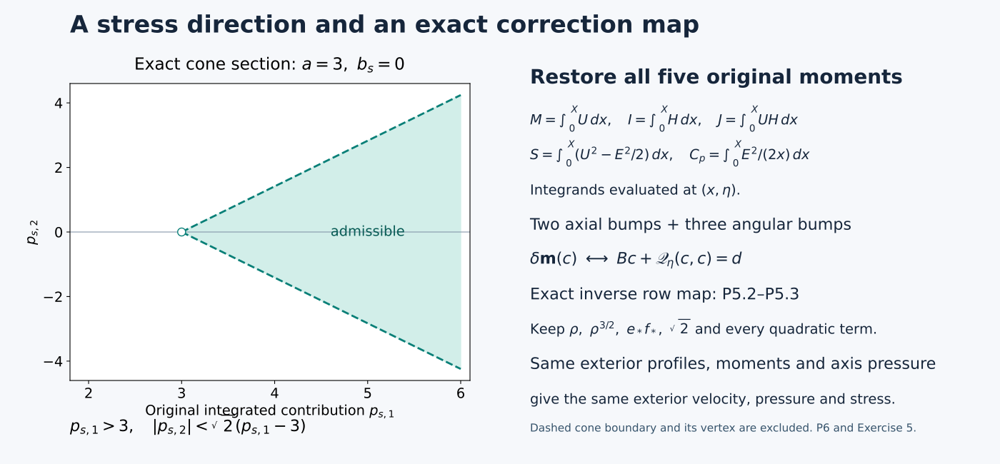
The figure uses the exact section \(a=3,b_s=0\) of P6.2. It is a diagram of the proved inequalities, not a numerical sample of the constructed velocity. The second panel records the five-moment correction map; its full bump integrals and support factors are given in P5.1–P5.9.
P7. Five worked exercises
Exercise 1. Identify the exact exterior stress tails. Fix the axial variable and time. Let smooth angular and axial residuals \(R_\theta(r),R_z(r)\) vanish outside \(0<r<R_*\), and suppose they vanish near the axis. Solve
\[ (\partial_r+2/r)T_\theta=-R_\theta,\qquad (\partial_r+1/r)T_z=-R_z \]with regular axis behavior. Determine exactly when the stresses vanish for \(r\ge R_*\).
Solution. Multiplication by \(r^2\) and \(r\), respectively, gives
\[ \partial_r(r^2T_\theta)=-r^2R_\theta,\qquad \partial_r(rT_z)=-rR_z. \]Regularity at zero makes both integration constants zero. Therefore
\[ T_\theta(r)=-r^{-2}\int_0^r \rho^2R_\theta(\rho)\,d\rho,\qquad T_z(r)=-r^{-1}\int_0^r \rho R_z(\rho)\,d\rho. \tag{P7.1} \]They vanish near zero because the residuals do. On the exterior the integrals are the constants
\[ M_\theta^R=\int_0^{R_*}\rho^2R_\theta(\rho)\,d\rho,\qquad M_z^R=\int_0^{R_*}\rho R_z(\rho)\,d\rho. \]Thus the exterior stresses are exactly \(-M_\theta^Rr^{-2}\) and \(-M_z^Rr^{-1}\). They both vanish there if and only if both weighted moments vanish. A nonnegative, nonzero smooth bump supported in \((R_*/3,2R_*/3)\), used as either residual, has a strictly positive corresponding moment and a nonzero tail. This proves why vanishing exterior residual alone is insufficient. The full construction arranges its total moments to eliminate these actual constants.
Exercise 2. Can a different smooth axis pressure preserve the same exterior stress? Suppose the two exterior profiles and all five moments agree as in P3, but the two axis pressure data differ by \(g\in C^\infty([-1,1])\). If their full stresses agree on a nonempty radial exterior interval for every \(\eta\), prove that \(g=0\).
Solution. P3.2, with \(X>0\) and \(L>0\), gives
\[ (1-\eta^2)g'(\eta)=4A\eta g(\eta),\qquad -1<\eta<1. \]Direct product differentiation, without division by \(g\), gives
\[ \frac{d}{d\eta}\bigl[(1-\eta^2)^{2A}g(\eta)\bigr] =(1-\eta^2)^{2A-1} \bigl[(1-\eta^2)g'-4A\eta g\bigr]=0. \]Thus \(g(\eta)=c(1-\eta^2)^{-2A}\) on the connected open interval. Since \(A>0\) and \(g\) is bounded up to \(\eta=1\), the constant \(c\) is zero. Conversely \(g=0\) preserves the stress by P3.
The endpoint hypothesis matters. On the open interval, a nonzero \(c\) would give the physical pressure difference
\[ q^{-2A}g(\eta)=c[q(1-\eta^2)]^{-2A} =c(1-t)^{-2A}, \tag{P7.2} \]which is spatially constant for each \(t<1\) and therefore changes no pressure gradient. Its profile fails the stipulated bounded endpoint condition. This identifies the exact pressure-gauge freedom and why it is absent from the smooth closed profile class used here.
Exercise 3. Compute the first radial coefficients at a zero-stress axis. Write
\[ \phi(X,\eta)=\phi_0(\eta)+X\phi_1(\eta)+O(X^2),\quad U(X,\eta)=U_0(\eta)+XU_1(\eta)+O(X^2), \]with \(\phi_0>0\) and \(\Pi(0,\eta)=\Pi_{\rm ax}(\eta)\). Derive the coefficients forced by P1.7. All remainders here are the ordinary local Taylor remainders of smooth functions on a fixed compact parameter interval.
Solution. At the axis,
\[ W_0=1-2D\eta U_0-dU_0',\qquad H_{c,0}=D\eta+dU_0,\qquad l(0,\eta)=1. \]Both \(XU_X\) and \(X\Pi_X\) vanish there. Hence
\[ \begin{aligned} \phi_1 &=\frac{\phi_0}{4L} \left[ W_0+h(1-2\eta U_0)+(D\eta+dU_0)\frac{\phi_0'}{\phi_0} \right],\\ U_1 &=\frac1{2L}\left[ A(1-2\eta U_0)U_0 +(D\eta+dU_0)U_0' +d\Pi_{\rm ax}'-4A\eta\Pi_{\rm ax} \right]. \end{aligned} \tag{P7.3} \]The factors \(4L\) and \(2L\) arise from \(X\phi_{XX}+2\phi_X\) and \(XU_{XX}+U_X\), respectively, at zero. The pressure coefficient is also fixed:
\[ \Pi_X(0,\eta)=\phi_0(\eta)^2/\mathsf C^2. \]These are necessary first-coefficient identities and follow from an actual zero-stress solution. Constructing the convergent axis solution requires the full analytic argument in J0–J6; these two coefficients alone do not establish that existence.
Exercise 4. Retain the support scale in an actual moment correction. For the five coefficients in P5, suppose \(\|c\|_{C^k}\le2\nu_k\|d\|_{C^k}\). Give explicit bounds for the original increments \(u(X/\rho,\eta)\) and \(e(X/\rho,\eta)\), and determine the original change in \(J\) from transformed data \(d_2,d_3\).
Solution. The coefficients may depend on \(\eta\), but \(\rho>0\) is fixed. Repeated differentiation gives
\[ \begin{aligned} \|\partial_X^r\partial_\eta^k u(X/\rho,\eta)\|_\infty &\le 2\nu_k\rho^{-r}\|d\|_{C^k} \sum_{i=1}^2\|\beta_i^{(r)}\|_\infty,\\ \|\partial_X^r\partial_\eta^k e(X/\rho,\eta)\|_\infty &\le 2\nu_k\rho^{-r}\|d\|_{C^k} \sum_{j=1}^3\|\gamma_j^{(r)}\|_\infty. \end{aligned} \tag{P7.4} \]The correction coefficients are the actual nonlinear solution, so its moment change is the target, including every quadratic contribution. Applying the inverse row map P5.3 yields
\[ \delta J(\eta)=\sqrt2\,\rho^{3/2} \bigl[e_*f_*(\eta)d_2(\eta)+u_c(\eta)d_3(\eta)\bigr]. \tag{P7.5} \]The second term cannot be discarded when \(u_c\ne0\). A finite positive margin involving \(r\) radial and \(k\) parameter derivatives is preserved by choosing the discrepancy small compared with the right sides of P7.4 and the actual margin. There is no bound uniform in \(\rho\downarrow0\) for fixed nonzero coefficients and \(r>0\); the displayed \(\rho^{-r}\) remains.
Exercise 5. Invert the stress-cone coordinates exactly. For \(a>0,F>0\), recover \(p_s\) and \(\mathcal T_0\) from \(P_c,J_c\). Then describe the section \(a=3,b_s=0\) and its boundary.
Solution. The matrix taking \(p_s\) to \((P_c,J_c)\) is
\[ \begin{pmatrix}1&t_s\\-t_s&1\end{pmatrix}, \qquad \det=1+t_s^2>0. \]Its exact inverse gives
\[ p_{s,1}=\frac{P_c-t_sJ_c}{1+t_s^2},\qquad p_{s,2}=\frac{t_sP_c+J_c}{1+t_s^2}. \]Since \(a=v_s/(1+t_s^2)\) and \(-b_s=at_s\), the stress is
\[ \begin{aligned} \mathcal T_{0,\theta} &=\frac F{1+t_s^2}(P_c-v_s-t_sJ_c),\\ \mathcal T_{0,z} &=\frac F{1+t_s^2}\bigl[t_s(P_c-v_s)+J_c\bigr]. \end{aligned} \tag{P7.6} \]For the stated section \(t_s=0,v_s=3,P_c=p_{s,1},J_c=p_{s,2}\). The admissible set is exactly
\[ p_{s,1}>3,\qquad |p_{s,2}|<\sqrt2(p_{s,1}-3). \tag{P7.7} \]Its two boundary rays have \(p_{s,2}=\pm\sqrt2(p_{s,1}-3)\) for \(p_{s,1}\ge3\), with vertex \((3,0)\). The stress components there are \(F(p_{s,1}-3),Fp_{s,2}\). The boundary and vertex are excluded by the strict inequalities. Every compact subset of the open cone has positive minimum values of its two continuous defining gaps. This is the exact margin used when choosing sufficiently small later corrections.
Sources and the next construction
The original OpenAI paper, pages 24–32, 34–35 and 126–128, supplies the source formulas and arguments: the cone comparison on page 32, Lemma 4.7 and the moment identities in Appendix A. The source identity and hash are in SOURCES.json.
The complete editorial calculations are G0–G6 of the profile and moment audit. This lesson retains those proofs and develops their transport, pressure-gauge, support and cone consequences. It makes no novelty claim.
The actual next construction begins with O0–O8, which fixes the outer profile and pressure datum, and H0–H7, which inserts the exact heat exterior and restores the moments. J0–J6, Q0–Q9 and V0–V7 then provide the axis solution, join and actual admissible shear. These proofs supply the existence inputs for the full theorem; N2 continues by developing them as lessons with all their choices and estimates.
Constructing the outer profile and its heat exterior
The five moments from N2.1 give us a way to change a velocity profile while controlling its stress. We now use that method to construct a profile. We choose every radial interval, solve the moment equations, determine the pressure needed at the axis, and prove the strict stress inequalities. We then replace the distant power law by a heat flow and prove that the stress goes smoothly to zero at the outer edge.
This lesson supplies the outer part of the leading-profile construction: a complete reference family and its heat modification. Its temporary inner reference is explicitly given and has integrable boundary traces, but is not a smooth Cartesian axis field. The analytic axis, its exact join, and the shear realization have separate complete proofs linked at the end. They are the subsequent teaching components of N2. The final assembly appears in the energy and comparison lesson.
Read N1 for the original coordinates and N2.1 P0–P6 for the full stress, moments, bump-matrix inverse, nonlinear solve and cone criterion. Those proofs are included in this cumulative reader. Here \(q-z^2q^{2h}=1-t\), \(X=r^2/(2q)\), \(\eta=z/q^D\), \(A=1/2+h\), \(D=1/2-h\). We keep every original physical factor. Scalar changes of variable in integrals are always accompanied by their Jacobians and the factors needed to recover the original quantity.
The source is OpenAI, Finite Time Blowup for Navier–Stokes, original paper, pages 129–144, Proposition A.4 through Proposition A.10, equations (A.5)–(A.56). The source version and mathematical locators are in SOURCES.json. The exposition below is a separate derivation and teaching text; it does not rewrite the diplomatic transcription.
Figure. The schedule is a diagram of ordered intervals, not a plot of a sampled velocity or a scale drawing. The four reserved patches lie in the long interval before the pulse. The heat change begins at \(X_K=e^{1/5}X_{\rm tail}\); its three changed moments are restored in the second reserved patch. At \(X_b=e^3X_{\rm tail}\), both stress components vanish, while their quotient has the exact sixth-order factor proved in H6. All interval lengths and full formulas appear below.
How the construction fits together
The construction has three jobs. First, the inner reference and the gradual axial transition produce a positive angular stress. The long interval then makes the accumulated axial moments small relative to the local moment scales. A pulse and two tiny end corrections set both axial moments and the quadratic stress moment to zero. These are exact equations, not numerical approximations.
Second, after the pulse, the angular profile is made independent of \(\eta\). Two more bumps restore its angular integral without changing the total pressure increment. A steep interval reduces its amplitude enough to offset the small parameter \(h\) in the later estimates. A final holding time is chosen by an explicit formula; it makes the subtracted angular moment exactly zero.
Third, the heat integral supplies an actual exterior solution. Replacing the power law changes three moments. The three-bump nonlinear system restores them, preserves the pressure datum and keeps the stress cone strict. Backward integration then proves compact support of the stress and its direction at the outer edge. The sections follow these dependencies, so each use of a small or large parameter comes after the estimates that justify choosing it.
O0. The complete reference schedule and the order of choices
Retain \(A=1/2+h,D=1/2-h,d=1-\eta^2,L=1-2h\eta^2\), \(f=(1+\eta^2)^{-1}\), \(J_0=\log(1+\eta^2)\), \(H=\sqrt{2X}E\), \(l=X\partial_X\log H\). All profiles have \(-1\le\eta\le1\). For each interval the coordinate \(y\) starts at its left endpoint and satisfies \(dX=X\,dy\). Hence prescribing l means solving \((\log E)'=l-1/2\), with the preceding endpoint value of E. Every prime on a radial profile below is a y derivative unless otherwise indicated.
Use the source's smooth step
\[ \sigma(y)=\frac{e^{-1/y^2}}{e^{-1/y^2}+e^{-1/(1-y)^2}}\ (0<y<1),\quad \sigma(y)=0\ (y\le0),\quad \sigma(y)=1\ (y\ge1). \tag{O0.1} \]It is increasing and smooth, flat at its endpoints. Indeed the logarithmic derivative of the ratio of the second exponential to the first is \(-2(1-y)^{-3}-2y^{-3}<0\); endpoint smoothness follows from \(y^{-n}e^{-1/y^2}\to0\) for every n. Positive correcting bumps are fixed translates or rescalings of \(\sigma'\), with the supports stated below. Their fixed derivative norms are finite.
The parameter order is
\[ M_d,\qquad T_d=e^{M_d}+10,\qquad P_*>e^{T_d},\qquad 0<\lambda\ll1,\qquad 0<h\ll\min\{\lambda,e^{-T_d}\},\qquad X_R. \tag{O0.2} \]We always take \(h<1/100\). Fixed shape constants, including the interpolation length \(T_f\) and terminal constant \(c_o\), are chosen independently of the later small parameters. Below, \(C_{\rm pre}\) denotes finite constants depending only on those shapes, \(M_d,T_d,P_*\) and a specified finite derivative order, uniformly for sufficiently small \(\lambda\) and then sufficiently small h. No such constant depends on \(X_R\) or the amplitude factor \(\mathsf C\). Constants denoted C before the choice of \(M_d\) depend only on the fixed shapes. Estimates below justify this order rather than assuming its compatibility.
The entire schedule is as follows.
- For \(X=X_Re^y\), \(y\le0\), set \(U=4\eta\), \(E=P_*fe^{y/10}\), so \(l=3/5\). This is the temporary inner reference, not a regular physical axis.
- For one unit of logarithmic length keep \(U=4\eta\), and set \(l=(3/5)(1-\sigma(y))\).
- On \(0\le y\le T_d\), set \(l=0\), \(E=P_1fe^{-y/2}\), and
Here \(e^{-1/2}P_*\le P_1\le e^{1/10}P_*\). The function k is zero on the last eleven units, since it is zero for \(y\ge e^{M_d}-1=T_d-11\). 4. With \(U=0\), move l from zero to \(-\lambda\) by \(l=-\lambda\sigma(y)\) on a unit interval. Keep \(l=-\lambda\) for \(T_w=60\log(1/\lambda)\). Reserve, in this latter local coordinate, the four intervals
\[ (T_w-25,T_w-20),\quad(T_w-20,T_w-15),\quad (T_w-14,T_w-9),\quad(T_w-8,T_w-3). \tag{O0.4} \]For sufficiently small \(\lambda\), all are nonempty, ordered and inside this interval. None of the reference-profile corrections below touches them. On them \(U=0\), \(E\) is the same positive multiple of \(fX^{-1/2-\lambda}\). 5. Let \(X_p\) be the end radius and \(E(X_p,\eta)=e_bf\). For \(0\le y\le13/\lambda\), retain \(l=-\lambda\), so \(E=e_bfe^{-(1/2+\lambda)y}\), and put
\[ \begin{gathered} \zeta_b=\lambda y,\quad \varphi_b(\zeta)=\int_0^\zeta\sigma(v/.02)\,dv,\quad R_0(\zeta)=\varphi_b(\zeta)[1-\sigma(\zeta-10)],\\ R_b=\operatorname{Amp}(\eta)R_0(\lambda y)+c_1(\eta)\beta_1(y)+c_2(\eta)\beta_2(y),\qquad U=ER_b. \end{gathered} \tag{O0.5} \]Extend \(\varphi_b\) by zero on negative arguments. The \(\beta_j\) are identical width-.3 bumps centered at \(13/\lambda-3\) and \(13/\lambda-1\). Their coefficients restore M and J; Amp restores S. These choices are made in O1–O3. 6. After the pulse put \(U=0\) permanently. Writing \(E(X_{\rm end},\eta)=e_{\rm end}f\), prescribe
\[ \log E=\log e_{\rm end}-(1/2+\lambda)y-\vartheta_f(y)J_0-(1-\vartheta_f(y))\log2, \quad \vartheta_f(y)=1-\sigma(y/T_f). \tag{O0.6} \]Choose the fixed \(T_f\ge10\|\sigma'\|_\infty\log2\), so \(-\lambda-.1\le l\le-\lambda\). This also satisfies the source's weaker lower bound \(-\lambda-1\). Continue the resulting \(\eta\)-independent exponential for \(30\log(1/\lambda)\). Two relative E bumps of width .3, centered three and one units before that interval ends, impose
\[ I=\frac{XH}{1-\lambda}\quad\hbox{at the endpoint},\qquad \int_{\text{two bumps}}(E^2-E_{\rm unedited}^2)\,dy=0. \tag{O0.7} \]These bumps have zero endpoint values and leave all later E values unchanged. 7. At radius \(X_{\rm rel}\), with common value \(e_{\rm rel}\), move l from \(-\lambda\) to \(-1\) on a unit interval, hold \(-1\) for \(4\log(1/h)\), and move from \(-1\) to \(-h\) on a unit interval. Every transition uses \(\sigma\). Then hold \(-h\) for the finite length selected in O2. 8. On the final interval \(0\le y\le3\), use
\[ \psi_o=1-\sigma((y-1)/2),\quad f_o=1-\rho_o\psi_o,\quad \rho_o=c_oh,\quad l=-h+f_o'/f_o. \tag{O0.8} \]Choose \(c_o>0\) so small that \(0\le f_o'/f_o\le h/4\). For example \(c_o\le[16(1+\|\psi_o'\|_\infty)]^{-1}\) suffices for \(h<1/100\). Extend \(f_o\) constantly on the left and by one on the right. Thereafter \(E=E_{\rm pow}=c_\infty X^{-A}\), with \(c_\infty>0\) independent of \(\eta\).
Smooth flat endpoint matching of the step functions and bumps makes this schedule smooth for \(X>0\); solving the logarithmic equation gives E positive before its small relative corrections. Positivity after those corrections is proved below. All stage lengths are finite after the parameter choices. Their endpoint radii divided by \(X_R\) are fixed.
O1. The actual axial correction and the initial moment bounds
The first correction acts on U, with E already prescribed on the pulse. Its two moment rows are linear, so we can solve them exactly before choosing the pulse amplitude. The nearby exponents cost an inverse factor \(1/\lambda\); we retain that loss and show why the long separation of supports pays for it.
Use the five original integrals \((M,I,J,S,C_p)\) from P2.1. Before the long intermediate interval all dimensionless profiles and their fixed \(\eta\) derivatives have finite bounds depending only on the preceding choices. Radial integration over this finite logarithmic interval, and over the inner reference where the powers are integrable, gives finite bounds on \(M/X_R\), \(J/X_R^{3/2}\), \(S/X_R\), and the corresponding parameter derivatives. On the intermediate interval \(U=0\), so M and J remain constant. The exact multiplicative changes in its denominators are
\[ \begin{gathered} E/E(0)=e^{-(1/2+\lambda)y},\qquad XE/[XE](0)=e^{(1/2-\lambda)y},\\ XHE/[XHE](0)=e^{(1/2-2\lambda)y},\qquad XE^2/[XE^2](0)=e^{-2\lambda y}. \end{gathered} \tag{O1.1} \]The entering unit transition has uniformly bounded factors. At \(T_w=60\log(1/\lambda)\), take \(\lambda<1/120\). Then \(e^{-(1/2-2\lambda)T_w}=\lambda^{30-120\lambda}\le\lambda^{29}\); the analogous M bound is no larger. The factor \(e^{2\lambda T_w}=e^{120\lambda\log(1/\lambda)}\) stays bounded as \(\lambda\downarrow0\). Integrating \(dS/dy=-XE^2/2\) over this interval and retaining the incoming S yields
\[ \begin{gathered} e_b\le C_{\rm pre}\lambda^{30},\\ \left\|\frac{M(X_p)}{X_pe_bf}\right\|_{C^k_\eta} +\left\|\frac{J(X_p)}{X_pH(X_p)e_bf}\right\|_{C^k_\eta} \le C_{{\rm pre},k}\lambda^{29},\\ \left\|\frac{S(X_p)}{X_pe_b^2f^2}\right\|_{C^k_\eta} \le C_{{\rm pre},k}(1+\log(1/\lambda)). \end{gathered} \tag{O1.2} \]Every fixed k is allowed here. The factors f and its reciprocal have bounded derivatives on [-1,1]. The preceding estimates follow from exact integrals of the stated powers; they introduce no dependence on h through a divergent exterior integral.
On the pulse, the two original axial moment rows for a relative bump \(c\beta\) are exactly
\[ \delta M=X_pe_bf\,c\int e^{s_1y}\beta(y)\,dy,\qquad \delta J=X_pH(X_p)e_bf\,c\int e^{s_2y}\beta(y)\,dy, \quad s_1=1/2-\lambda,\quad s_2=1/2-2\lambda. \tag{O1.3} \]This includes the Jacobian \(dX=X_pe^y\,dy\). Let \(y_1=13/\lambda-3\), \(y_2=y_1+2\). After dividing each row by its displayed physical factor and then by \(e^{s_iy_1}\), its two entries are \(b(s_i),e^{2s_i}b(s_i)\), with \(b(s)=\int e^{st}\beta(t)\,dt>0\). The determinant is \(b(s_1)b(s_2)(e^{2s_2}-e^{2s_1})\). P4.4 proves an inverse bound \(C/\lambda\), retaining the exact row factors to recover the original moments.
The main pulse ends by \(11/\lambda\), and \(R_0\le11\) on its support. For small \(\lambda\), \(s_i\ge2/5\). Its first-center-weighted moment has magnitude at most
\[ 11|\operatorname{Amp}|e^{-s_iy_1}\int_0^{11/\lambda}e^{s_iy}\,dy \le(55/2)|\operatorname{Amp}|e^{-2s_i/\lambda+3s_i}. \tag{O1.4} \]The incoming moments in O1.2 gain the factor \(e^{-s_iy_1}\). Multiplication by the inverse loss \(1/\lambda\) is absorbed by a smaller positive exponential rate: for every \(a>0,n\), \(\lambda^{-n}e^{-a/\lambda}\le C_{a,n}e^{-a/(2\lambda)}\), since \(v^ne^{-av/2}\) is bounded for \(v\ge1\). Therefore the exact linear solve gives affine functions of Amp with
\[ c_i=c_{i,0}(\eta)+\operatorname{Amp}\,c_{i,1}(\eta),\qquad \|c_{i,0}\|_{C^k_\eta}+\|c_{i,1}\|_{C^k_\eta}\le C_{{\rm pre},k}e^{-c/\lambda},\qquad M=J=0\quad\hbox{after the pulse}. \tag{O1.5} \]The same statement holds for fixed radial bump derivatives; a \(\zeta_b\) derivative adds a power of \(\lambda^{-1}\), which remains exponentially small. No quadratic term was dropped: M and J are exactly linear in U for the fixed E used here.
O2. Angular moment restoration and the complete terminal schedule
The next correction acts on E after U has become zero. One equation is linear in E; the pressure equation is quadratic. We solve both, then choose the terminal holding time from the angular equation itself. This is what will make a backward stress integral possible later.
The identity \(I'=XH\) gives, for \(r_I=I/(XH)\),
\[ r_I'+(1+l)r_I=1. \tag{O2.1} \]Before interpolation, \(1+l\) has a fixed positive lower bound. The inner reference has \(r_I=5/8\); variation of constants bounds it and every fixed parameter derivative through the subsequent intervals. During interpolation, our choice in O0.6 keeps \(1+l\ge1-\lambda-.1>1/2\). Thus at its end \(r_I\) and its fixed parameter derivatives are bounded by \(C_{{\rm pre},k}\). On the following constant-slope interval the exact discrepancy is
\[ r_I(y)-(1-\lambda)^{-1} =e^{-(1-\lambda)y}\,[r_I(0)-(1-\lambda)^{-1}]. \tag{O2.2} \]At the first angular bump center \(30\log(1/\lambda)-3\), its \(C^k_\eta\) norm is at most \(C_{{\rm pre},k}\lambda^{28}\) for sufficiently small \(\lambda\).
Write the relative change as \(E\mapsto E(1+v)\), \(v=d_1\beta_1+d_2\beta_2\). The two exact rows are
\[ \delta I=\int XHv\,dy,\qquad \delta C_p=\int E^2(v+v^2/2)\,dy. \tag{O2.3} \]Divide by \(XH\) and \(E^2\) at the first center, respectively. Their linear weights have exponents \(1-\lambda\) and \(-1-2\lambda\), separated by \(2+\lambda\). P4.4 gives a uniformly bounded inverse. The quadratic pressure term in O2.3 has uniformly bounded bilinear norms on these two fixed supports. The desired first-row discrepancy is O2.2 transported to the endpoint; equivalently, undoing that transport gives an \(O_{C^k}(C_{{\rm pre},k}\lambda^{28})\) discrepancy at the first center. The pressure discrepancy is zero. The actual finite solve P5.6–P5.8 therefore applies for sufficiently small \(\lambda\), giving
\[ \|(d_1,d_2)\|_{C^k_\eta}\le C_{{\rm pre},k}\lambda^{28},\qquad I=XH/(1-\lambda)\text{ at the endpoint},\qquad \delta C_p=0. \tag{O2.4} \]Only a specified finite k must have a small bound; smoothness of all orders follows from the same fixed branch. Taking k at least one gives \(|v|+|v'|\le C_{\rm pre}\lambda^{28}\). Thus \(1+v>0\) and the slope change \(v'/(1+v)\) is smaller than \(\lambda/2\). On the bumps, \(l\le-\lambda/2\). All earlier and later E values are unchanged. These choices involve E only and are independent of Amp.
At the exterior-transition start, \(U=M=J=0\), E and I are independent of \(\eta\), and P2.5 gives exactly
\[ Q_s=-1+(1-h)I/(XH)=\frac{\lambda-h}{1-\lambda},\qquad Q_s'+(1+l)Q_s=-l-h. \tag{O2.5} \]The first transition keeps a positive lower bound \(c\lambda\) when \(h\ll\lambda\). On the hold with \(l=-1\), \(Q_s'=1-h\); its length \(4\log(1/h)\) gives a value comparable to \(\log(1/h)\). The next unit transition changes that value by bounded positive factors and bounded terms, since its coefficients are bounded and its source is nonnegative. Call its final value \(Q_{\rm in}\).
For the terminal profile O0.8 define the source's exact value
\[ Q_p=\int_0^3\exp\!\left(\int_0^v(1+l(s))\,ds\right)\frac{f_o'(v)}{f_o(v)}\,dv. \tag{O2.6} \]On this interval \(1+l\) is bounded above and below by positive constants. Also \(\int_0^3f_o'/f_o=-\log(1-c_oh)\), between \(c_oh\) and \(2c_oh\) for the stated small h. Thus \(c h\le Q_p\le C h\), with fixed positive constants. Consequently \(Q_{\rm in}>Q_p>0\) for sufficiently small h. The additional hold at \(l=-h\) has the explicitly positive finite length
\[ T_{\rm hold}=(1-h)^{-1}\log(Q_{\rm in}/Q_p). \tag{O2.7} \]It decreases Q exactly to \(Q_p\). On the terminal interval, variation of constants with final value zero gives
\[ Q_s(y)=\int_y^3\exp\!\left(\int_y^v(1+l(s))\,ds\right)\frac{f_o'(v)}{f_o(v)}\,dv. \tag{O2.8} \]Indeed differentiation gives \(Q_s'+(1+l)Q_s=-f_o'/f_o=-l-h\), and its initial value is O2.6. It is positive for every \(y<3\), vanishes at 3, and is zero thereafter. Its lower bound on \(0\le y\le1/2\) is \(ch\), because the integral over the fixed portion where \(f_o'>0\) remains present.
Beyond the terminal interval, \(H=H_{\rm pow}=\sqrt2c_\infty X^{-h}\) and \(I=XH/(1-h)\). But \(\int_0^XH_{\rm pow}\,dx=XH_{\rm pow}/(1-h)\), since \(h<1\). Therefore
\[ \int_0^\infty(H-H_{\rm pow})\,dX=0. \tag{O2.9} \]This integral converges at zero and has identically zero integrand sufficiently far out. All exterior lengths and \(c_\infty\) are independent of Amp and \(\eta\).
O3. Closing S with the actual amplitude
We still have one scalar equation: the total stress moment S must vanish. The pulse amplitude is its remaining free variable. The following analytic bracket proves that an actual smooth amplitude exists, with the parameter derivatives required by the cone estimate.
The integral after the pulse must be bounded uniformly as h becomes small. On the steep hold \(l=-1\), the exact changes are
\[ \frac{(XE^2)_{\rm end}}{(XE^2)_{\rm start}}=h^8,\qquad \frac{E_{\rm end}}{E_{\rm start}}=h^6. \tag{O3.1} \]The first follows from \((\log XE^2)'=2l=-2\); the second from \((\log E)'=-3/2\), each over \(4\log(1/h)\). The first unit transition and steep hold contribute at most \(CX_{\rm rel}e_{\rm rel}^2\) to \(\int XE^2dy\). After the steep hold, \(l\le-3h/4\) at every point. Thus the rest is bounded by \(CX_{\rm rel}e_{\rm rel}^2h^8\int_0^\infty e^{-3hy/2}dy\le CX_{\rm rel}e_{\rm rel}^2h^7\). In particular the complete exterior release, regardless of its hold length, satisfies
\[ \int_{\rm release}XE^2\,dy\le CX_{\rm rel}e_{\rm rel}^2. \tag{O3.2} \]Interpolation and the subsequent uniform interval have length \(T_f+30\log(1/\lambda)\), nonincreasing \(XE^2\) before the small bumps, and bounded relative bump factors. Their contribution, together with O3.2, is at most \(C(1+\log(1/\lambda))X_{\rm end}e_{\rm end}^2\). Fixed parameter derivatives obey the same estimate: f, its powers with exponents in [0,1], and the small angular coefficients have bounded derivatives; the release itself is independent of \(\eta\).
On the pulse the exact identity is \(XE^2=X_pe_b^2f^2e^{-2\lambda y}\). The pulse contribution to S, including its two end bumps, is therefore
\[ \frac{\lambda S(\infty)}{X_pe_b^2f^2} =\operatorname{Amp}^2K_b-\frac{1-e^{-26}}4+\mathcal E(\operatorname{Amp},\eta),\qquad K_b=\int_0^{13}e^{-2\zeta}R_0(\zeta)^2\,d\zeta. \tag{O3.3} \]To justify every part of the error bound, the incoming S gives \(O_{C^k_\eta}(C_{{\rm pre},k}\lambda(1+\log(1/\lambda)))\) by O1.2. The post-pulse E integral has the same bound by O3.2 and \(X_{\rm end}e_{\rm end}^2=X_pe_b^2e^{-26}\), with \(f^{-2}\) retained in the displayed denominator. The extra U terms are exactly \(2\operatorname{Amp}R_0(c_1\beta_1+c_2\beta_2)+(c_1\beta_1+c_2\beta_2)^2\). In fact the first term is zero because the end bumps lie after the main pulse; even its absolute bound from O1.5 is exponentially small. On the bounded amplitude bracket \([.9,1.2]\), the second term and all its fixed parameter derivatives are exponentially small too. The original coefficients are affine in Amp; differentiating them with respect to Amp uses their equally small linear coefficients. Thus
\[ \|\mathcal E\|_{C^1(\operatorname{Amp},\eta)}\le C_{\rm pre}\lambda(1+\log(1/\lambda)). \tag{O3.4} \]All constants are uniform for the subsequently small h. This supplies the amplitude derivative estimate as well as the parameter estimate needed to infer a unique root.
Here are exact bounds on \(K_b\). Since \(0\le R_0\le\zeta\), \(K_b\le1/4\). On \(1/50\le\zeta\le9\), \(R_0\ge\zeta-1/50\). Direct integration gives
\[ K_b\ge\frac{e^{-1/25}}4-\frac{225301}{5000}e^{-18}>\frac15. \tag{O3.5} \]For the strict last inequality, \(e^{-1/25}\ge24/25\) gives a first term at least \(6/25\), and \(e^{18}>18^4/24=4374\) gives a second term smaller than \(1/25\). These are exact analytic inequalities, not quadrature.
For \(F_0(a)=a^2K_b-(1-e^{-26})/4\), it follows that
\[ F_0(.9)<-.047,\qquad F_0(1.2)>.038,\qquad F_0'(a)>.36\quad(.9\le a\le1.2). \tag{O3.6} \]The first follows from \(-19/400+e^{-26}/4<-47/1000\), using \(e^{26}>500\). The second is \((36/25)(1/5)-1/4=19/500\), and the derivative is larger than \(2(9/10)(1/5)=9/25\). Choose \(\lambda\) so that O3.4 is smaller than \(.01\), for example. Then the complete expression is negative and positive at the respective endpoints and has derivative greater than \(.35\). The intermediate value theorem and this derivative bound give exactly one root Amp in the bracket at each \(\eta\). The implicit function theorem gives a smooth root, including endpoint derivatives, with
\[ |\partial_\eta\operatorname{Amp}|\le C_{\rm pre}\lambda(1+\log(1/\lambda)). \tag{O3.7} \]Implicit differentiation gives finite higher derivatives, and any finite set of small derivative bounds can be secured before choosing the parameters. Consequently the actual constructed profile has \(S(\infty)=0\), as well as O2.9 and \(M=J=0\) after the pulse. The integrals converge because U is compactly supported and \(E^2\) has the exterior power \(X^{-1-2h}\).
O4. The analytic pressure supplied to the inner construction
The inner analytic construction needs its pressure before that construction starts. We therefore derive the datum from the complete outer schedule. The important identity is zero total pressure change: it lets smooth moment corrections preserve an analytic datum exactly.
Before the two pressure-preserving angular bumps, the complete schedule has the form \(E_{\rm id,sched}(y,\eta)=c(y)f(\eta)^{\vartheta(y)}\), with \(0\le\vartheta\le1\). Here use the global coordinate \(y=\log(X/X_R)\). The coefficient c and all interval lengths are independent of \(\eta\); O2 shows that the later lengths are independent of Amp as well. In the interpolation, c includes \(2^{-(1-\vartheta)}\), exactly as in O0.6. The exponent is one through the pulse, decreases to zero during interpolation, and is zero afterwards.
Choose a bounded simply connected complex neighborhood of [-1,1] whose closure avoids \(\pm i\). The function \(f(\eta)=(1+\eta^2)^{-1}\) is holomorphic and nonvanishing there, so choose an analytic logarithm. The functions \(\exp(2\vartheta\log f)\) are uniformly bounded on the closure for \(0\le\vartheta\le1\). At the two infinite ends c squared is a fixed multiple of \(e^{y/5}\) and \(e^{-(1+2h)y}\); the intervening interval is finite. Dominated integration and Morera's theorem therefore prove holomorphy on one common neighborhood of
\[ \Pi_0(\eta)=-\frac12\int_{-\infty}^\infty c(y)^2f(\eta)^{2\vartheta(y)}\,dy. \tag{O4.1} \]For completeness, Morera applies because the uniform integrable majorant permits interchanging each triangular contour integral with the y integral, and each interior contour integral is zero. Continuity follows from the same majorant.
The function is even, and for real \(\eta\)
\[ \Pi_0'=J_0'\int c(y)^2\vartheta(y)f^{2\vartheta(y)}\,dy,\qquad J_0'=\frac{2\eta}{1+\eta^2},\qquad \Pi_0\le-\frac52P_*^2f^2. \tag{O4.2} \]The integral in the derivative is strictly positive, since the inner reference has \(\vartheta=1,c>0\). This proves the required strict sign of \(\Pi_0'\) for \(\eta\ne0\). Its inner contribution is exactly \(-\frac12P_*^2f^2\int_{-\infty}^0e^{y/5}dy=-(5/2)P_*^2f^2\); all others are nonpositive. Independence of \(X_R\) follows from \(dX/X=dy\). Restoring the angular bumps leaves the total pressure integral exactly unchanged by O2.4. Thus for the actual reference profile
\[ \Pi(X,\eta)=\Pi_0+\int_0^X\frac{E(x,\eta)^2}{2x}\,dx =-\frac12\int_{\log(X/X_R)}^\infty E(v,\eta)^2\,dv. \tag{O4.3} \]Later smooth edits need not be analytic to preserve this already fixed analytic datum: exact zero total pressure increment is the sufficient identity, proved by splitting the last integral. This proves Lemma A.5 for the actual constructed reference family.
O5. The cone through the reference and axial transitions
Having solved the moments is not enough. The stress must lie in the required cone at every radius, including inside each correction. We first prove bounds independent of the final radius. Only after those bounds hold do we enlarge \(X_R\).
Keep the source test, with \(w=N_s/(EQ_s)\),
\[ a-b_sw>0,\qquad 2b_sw+b_s^2/a+(a-2)w^2<2, \quad a=2-2l,\quad b_s=2U'/E. \tag{O5.1} \]P6 proves how these inequalities imply the relaxed cone once \(p_{s,1}=XQ_s/L\) is large enough, and the admissible cone when also \(v_s=a+b_s^2/a>2\). We first prove the two strict inequalities and \(Q_s>0\), before choosing \(X_R\).
On the reference inner interval \(\mathcal A_XU=4\eta\), \(W=1-4L\), \(l=3/5\), \((\log E)_\eta=-J_0'\). The regular radial primitive for its constant angular source gives exactly
\[ Q_s=\frac{(3/5)(4L-1)-h(1-8\eta^2)+(D+4d)\eta J_0'}{8/5}. \tag{O5.2} \]For \(h<1/100\), \(L\ge.98\), and \(\eta J_0'=2\eta^2/(1+\eta^2)\ge0\), the numerator is at least \((3/5)(4\cdot.98-1)-.01>8/5\). Hence \(Q_s>1\). Here \(a=4/5\), \(b_s=0\), so O5.1 holds for every finite w. On any fixed \(x=X/X_R\ge x_*>0\), E is positive and all quantities are bounded.
During the first unit transition U and W retain these values, \(0\le l\le3/5\), and the angular source \(-Wl-h(1-8\eta^2)+(D+4d)\eta J_0'\) is at least \(-h\). Variation of constants in \(Q_s'+(1+l)Q_s=S_q\) gives at its end \(Q_s\ge e^{-8/5}-h>1/10\). One may use \(e^2<9\) to verify the last inequality. The same formula gives a positive bound throughout this unit. Since \(b_s=0\) and \(4/5\le a\le2\), O5.1 continues to hold.
On the axial transition, \(l=0\) and the original source is
\[ S_q=-h(1-2k\eta^2)+(D+dk)\eta J_0',\qquad Q_s(y)\ge\tfrac1{10}e^{-y}+D\eta^2(1-e^{-y})-h(1-e^{-y}). \tag{O5.3} \]The inequality uses \(k\ge0\) and \(\eta J_0'\ge\eta^2\). Take \(h\le e^{-T_d}/20\). The negative h term is then at most \(e^{-y}/20\). Splitting at \(y=\log2\), using \(D\ge.49\), proves for example
\[ Q_s(y)\ge\tfrac1{100}(\eta^2+e^{-y}),\qquad 0\le y\le T_d. \tag{O5.4} \]For \(y\le\log2\), \(\eta^2+e^{-y}\le3e^{-y}\), while the retained exponential term is \(e^{-y}/20\). For \(y\ge\log2\), the two positive terms dominate \(e^{-y}/20+.245\eta^2\). Thus the constant here is independent of \(M_d\).
We need a uniform axial-source bound to justify choosing \(M_d\) first. Write \(\mathcal A_XU=\bar k\eta\); then \(0\le k,\bar k\le4\) and \(W=1-L\bar k\) is bounded by fixed constants. Choose \(M_d\) large enough that \(e_d\le1\). The geometric portion \(-Wk'\eta-A(1-2k\eta^2)k\eta-(D+dk)\eta k\) is bounded by \(C|\eta|\), with C independent of \(M_d,T_d,P_*\). For the pressure portion use O4.3. Every unedited later E is bounded by \(E(y)e^{-(v-y)/2}\) for \(v\ge y\), and its logarithmic parameter derivative has magnitude at most \(|J_0'|\). The full future angular correction may be omitted in this backward pressure integral because its total pressure increment is zero. Thus
\[ |\Pi|\le E^2/2,\quad |\Pi_\eta|\le |J_0'|E^2, \qquad |-d\Pi_\eta+4A\eta\Pi+2\eta\mathcal D_X\Pi|\le C|\eta|E^2. \tag{O5.5} \]The last term is exactly \(\eta E^2\). At the start of the first unit transition the radial formula \(N_s=X^{-1}\int_0^XS_n\,dx\) gives \(|N_s|\le C|\eta|(1+P_*^2)\): its geometric terms are bounded odd functions of \(\eta\), and its pressure terms are bounded by \(CP_*^2|\eta|\). Integrability of the inner powers and the fixed first transition preserve this bound to the axial start. The pressure bound is independent of the later transition length, by the exponential estimate just used. Solving \(N_s'+N_s=S_n\) on the axial interval, with \(E^2=P_1^2f^2e^{-y}\), gives
\[ |N_s|\le C|\eta|\{1+P_1^2(1+y)e^{-y}\},\qquad \frac{|N_s|}{E^2}\le C|\eta|\left(\frac{e^{T_d}}{P_*^2}+1+y\right) \le C|\eta|(1+y). \tag{O5.6} \]We used \(f\ge1/2\), \(P_1\asymp P_*\) with fixed comparison constants, and \(P_*>e^{T_d}\). This proves the stated C can be chosen independently of \(M_d\).
Since \(b_s=2k'\eta/E\), O5.4–O5.6 yield
\[ |b_sw|\le C e_d\frac{\eta^2}{\eta^2+e^{-y}}\le C e_d, \qquad b_s^2\le C e_d^2e^{T_d}/P_*^2. \tag{O5.7} \]Here \(a=2\). Choose \(M_d\) first so \(Ce_d<1/8\), and \(P_*\) later sufficiently large that the second bound is less than \(1/4\). Then \(a-b_sw>15/8\) and \(2b_sw+b_s^2/a<3/8<2\). This proves both strict cone tests throughout the axial interval without a circular parameter choice.
O6. The intermediate interval and the pulse cone
The long waiting interval and the pulse have different roles. Waiting gives decay of the old axial stress. On the pulse, both shear components vary, so we retain the next term in the convolution formula and prove the quantitative cone margins.
The equation \(\bar k'=k-\bar k\) and the last eleven units with k zero give \(\bar k(T_d)\le4e^{-11}\), so \(L\bar k<1/2\). On the next unit transition U is zero and \(W=1-L\bar k\ge1/2\). Set
\[ c_\eta=D\eta J_0'=\frac{2D\eta^2}{1+\eta^2}. \tag{O6.1} \]On that transition \(S_q=(-l)W-h+c_\eta\). The positive incoming value in O5.4 and variation of constants retain a positive lower bound depending only on the preceding choices, uniformly for small \(\lambda\) and h. On this finite interval w is bounded by \(C_{\rm pre}\); hence \(\sqrt\lambda|w|\) is small after choosing \(\lambda\). With \(b_s=0\) and \(2\le a\le2+2\lambda\), O5.1 follows. The admissible cone applies wherever \(l<0\), and the relaxed cone at its initial endpoint.
On the constant-slope interval let \(\alpha=1-\lambda\) and \(\bar k=\bar k_0e^{-y}\). The angular equation is exactly
\[ Q_s'+\alpha Q_s=\lambda-h+c_\eta-\lambda L\bar k_0e^{-y}. \tag{O6.2} \]The incoming value has a lower bound \(c_{\rm pre}(1+\eta^2)\). Since \(L\bar k_0<1/2\) and \(h<\lambda/4\), the right side is at least \(\lambda/4+c_\eta\). Its positive convolution proves the first of the following bounds; direct integration proves the second:
\[ \begin{split} Q_s&\ge c_{\rm pre}(\eta^2+\lambda+e^{-\alpha y}),\\ Q_s-\frac{\lambda-h+c_\eta}{\alpha} &=e^{-\alpha y}\left[Q_s(0)-\frac{\lambda-h+c_\eta}{\alpha}-L\bar k_0(1-e^{-\lambda y})\right] =O_{C^1_\eta}(C_{\rm pre}(1+y)e^{-\alpha y}),\\ |N_s/E|&\le C_{\rm pre}|\eta|(1+y)e^{-(1/2-\lambda)y}. \end{split} \tag{O6.3} \]For the last line, U zero removes every geometric axial-source term. O5.5 bounds the pressure source by \(C|\eta|E^2\). Its convolution with \(e^{-y}\), and \(E^2=E(0)^2e^{-(1+2\lambda)y}\), gives \(C_{\rm pre}|\eta|(1+y)e^{-y}\) for N. Divide by the exact E. One parameter derivative gives the same bound with the \(|\eta|\) factor removed. Since \(|\eta|/(\eta^2+e^{-\alpha y})\le\frac12e^{\alpha y/2}\),
\[ \sqrt\lambda|w|\le C_{\rm pre}\sqrt\lambda(1+y)e^{\lambda y/2}=o(1), \qquad 0\le y\le60\log(1/\lambda). \tag{O6.4} \]The last limit is uniform on that interval: its right side is at most \(C_{\rm pre}\sqrt\lambda(1+60\log(1/\lambda))e^{30\lambda\log(1/\lambda)}\), which tends to zero. Thus \(a=2+2\lambda,b_s=0\) satisfy both cone tests there.
For the pulse retain \(m=\mathcal A_XU/E\), \(\beta=1/2-\lambda\), and the actual R in O0.5, including both end bumps. Differentiating the radial average gives the exact equation
\[ m'+\beta m=R_b. \tag{O6.5} \]Extend R by zero to negative y. The main pulse is flat at its start; the later bumps have exponentially small fixed \(\zeta_b\) derivatives. Its convolution solution and Taylor's formula give
\[ \begin{split} m(y)&=m(0)e^{-\beta y}+\int_0^\infty e^{-\beta v}R_b(y-v)\,dv\\ &=\frac{R_b}{\beta}-\frac{\lambda\partial_{\zeta_b}R_b}{\beta^2} +O(C_{\rm pre}\lambda^2)+m(0)e^{-\beta y}. \end{split} \tag{O6.6} \]The remainder is bounded by \(\frac12\lambda^2\|\partial_{\zeta_b}^2R_b\|_\infty\int_0^\infty e^{-\beta v}v^2dv\). The same argument works after one \(\eta\) derivative. The initial m and its derivative are \(O(C_{\rm pre}\lambda^{29})\) by O1.2. The fixed point amplitude estimate O3.7 and O1.5 give \(\|m_\eta\|_\infty\le C_{\rm pre}\lambda(1+\log(1/\lambda))\).
On the pulse, \(W=1-2D\eta Em-d(Em)_\eta\). Since \((\log E)_\eta=-J_0'\), the angular source is \(\lambda-h+c_\eta+O(C_{\rm pre}E)\). The initial angular discrepancy is bounded by O6.3 at \(T_w\); \(E\le C_{\rm pre}\lambda^{30}\) throughout the pulse. Convolution with \(e^{-(1-\lambda)y}\) therefore proves
\[ Q_s=\frac{\lambda-h+c_\eta}{1-\lambda}+O(C_{\rm pre}\lambda^{28}). \tag{O6.7} \]The weakened power 28 retains the source's estimate. To bound all terms of N, integrate the original S: \(dS/dy=XE^2(R_b^2-1/2)\). The ratio \(XE^2/(X_pe_b^2f^2)\) is between \(e^{-26}\) and one on the pulse. Its length is \(13/\lambda\), R and its first parameter derivative are bounded, and O1.2 controls the incoming moment. Thus
\[ \left\|S/(XE^2)\right\|_{C^1_\eta}\le C_{\rm pre}e^{26}/\lambda. \tag{O6.8} \]The canonical pressure and its parameter derivative are \(O(E^2)\) by O4.3, omitting the complete later pressure-preserving correction. Substitute \(M/X=Em\), \(U=ER_b\) into the complete formula P2.5. In particular \((M-\eta M_\eta)/(XE)=m-\eta m_\eta+\eta J_0'm\). The S and pressure terms are \(O(C_{\rm pre}E/\lambda)\), and \((1-W)R_b=O(C_{\rm pre}E)\). This proves the full source formula
\[ N_s/E=-R_b+(D+c_\eta)m-D\eta m_\eta+O(C_{\rm pre}\lambda^{27}). \tag{O6.9} \]All pressure and moment contributions have thus been bounded rather than omitted.
Divide O6.9 by O6.7. The factor \(|\eta|/(\lambda+c_\eta)\le C/\sqrt\lambda\) and the m derivative bound make its parameter term \(o(1)\). The Taylor remainder divided by Q is \(O(\lambda)\); the incoming exponential term and angular error give smaller powers. Since \(D+c_\eta-\beta=\lambda-h+c_\eta\), the coefficient of R is \((1-\lambda)/\beta=2+O(\lambda)\). Therefore, uniformly on the whole pulse,
\[ w=2R_b-C_d\partial_{\zeta_b}R_b+o(1),\qquad C_d=\frac{\lambda(D+c_\eta)(1-\lambda)}{\beta^2(\lambda-h+c_\eta)},\qquad 0\le C_d\le2+o(1). \tag{O6.10} \]The quotient \((D+c)/(\lambda-h+c)\) decreases for \(c\ge0\), because its derivative has numerator \(\lambda-h-D=\lambda-1/2<0\). Its maximum occurs at zero; taking \(\lambda\downarrow0\) and then \(h/\lambda\downarrow0\) gives the stated upper limit. This is compatible with O0.2.
The exact other shear is
\[ a=2+2\lambda,\qquad b_s=-(1+2\lambda)R_b+2\lambda\partial_{\zeta_b}R_b=-R_b+O(\lambda). \tag{O6.11} \]Apart from exponentially small end bumps, R is nonnegative and \(\partial_{\zeta_b}R_b\le1.2\): the derivative of \(\varphi_b\) is at most one, and differentiating its terminal cutoff gives a nonpositive term. Both R and every fixed shape derivative have finite uniform bounds. Choose \(\lambda,h\) small enough that \(1.2C_d\le2.41\). The exact quadratic maxima then give
\[ \begin{split} b_sw&\le\sup_{R\ge0}(-2R^2+2.41R)+o(1) =\frac{58081}{80000}+o(1)<.74,\\ 2b_sw+b_s^2/a+(a-2)w^2 &\le\sup_{R\ge0}(-3.5R^2+4.82R)+o(1) =\frac{58081}{35000}+o(1)<1.68. \end{split} \tag{O6.12} \]The rational gaps to the stated upper bounds are \(1119/80000\) and \(719/35000\). Choose the finitely many uniform o(1) terms smaller than half these gaps. This is possible by the explicit preceding bounds, involving \(\lambda\), \(\sqrt\lambda\log(1/\lambda)\), exponentially small terms and \(h/\lambda\). Negative shape derivatives only decrease the cross terms, so no lower bound on that derivative is needed. Consequently \(a-b_sw>1\), the second expression is less than 2, and \(v_s\ge a>2\). This proves the admissible cone test throughout the actual pulse, including its correcting bumps.
O7. Interpolation, the steep hold and the terminal half-interval
After the pulse, the vanishing total moments turn the remaining stress into tail integrals. The steep hold is essential: its \(h^6\) amplitude reduction compensates for the angular-stress lower bound of order h near the terminal interval.
After the pulse \(U=M=J=0\) exactly, hence \(W=1\). Before the angular bumps the interpolation source is \(-l-h+\vartheta_fc_\eta\), at least \(\lambda-h\). Its integrating coefficient \(1+l\) has fixed bounds, and the pulse endpoint Q is bounded below by \(c\lambda\). Thus \(Q_s\ge c\lambda\) through interpolation and the uniform interval. On the two bumps the perturbations of l and \((\log E)_\eta\) are \(O(C_{\rm pre}\lambda^{28})\), by O2.4, and their total logarithmic length is fixed. Variation of constants changes Q by that same order. It therefore remains at least \(c\lambda\) there, with a smaller fixed c.
The already established \(S(\infty)=0\), together with U zero, gives the exact backward identity
\[ S(X)/X=\frac1{2X}\int_X^\infty E(X',\eta)^2\,dX'. \tag{O7.1} \]Before the exterior release, \(l\le-\lambda/2\), including the angular bumps, so the remaining pre-release integral is bounded by \(CXE^2/\lambda\). The release contribution is bounded by O3.2 and is no larger than another \(CXE^2\), since \(XE^2\) decreases before release up to bounded bump factors. The same proof after a parameter derivative uses the bounded logarithmic parameter derivatives and small angular-coefficient derivatives. Also O4.3 gives \(|\Pi|+|\Pi_\eta|\le CE^2\). Thus
\[ \frac{|S|+|S_\eta|}{X}\le CE^2/\lambda,\quad |N_s|\le CE^2/\lambda,\quad |w|\le CE/\lambda^2=o(1). \tag{O7.2} \]The last statement uses \(E\le C_{\rm pre}\lambda^{30}e^{-13/(2\lambda)-13}\) at pulse end, with a nonincreasing unedited profile and small relative bumps thereafter. Here \(b_s=0\), and \(2<a\le2+2\lambda+.2+O(C_{\rm pre}\lambda^{28})\). The two cone margins are positive; \(v_s=a>2\).
From the release start onward E is independent of \(\eta\), as are its remaining moment integrals. Equations O4.3, O7.1 and P2.5 therefore give the exact formula
\[ N_s=2\eta\int_y^\infty(he^{v-y}-A)E(v)^2\,dv. \tag{O7.3} \]Every subsequent slope satisfies \(l\le-3h/4\). Hence
\[ E(v)^2\le E(y)^2e^{-(1+3h/2)(v-y)},\quad h\int_y^\infty e^{v-y}E(v)^2dv\le\tfrac23E(y)^2,\quad \int_y^\infty E(v)^2dv\le\frac{E(y)^2}{1+3h/2}. \tag{O7.4} \]Thus \(|N_s|\le CE^2\) with a constant independent of h. Before and during the steep hold Q is at least \(c\lambda\); during that hold it increases by O2.5. Hence \(|w|\le Ce_{\rm rel}/\lambda=o(1)\) there. After the steep hold, its next transition retains a large positive Q, the \(-h\) hold decreases it only to \(Q_p\asymp h\), and O2.8 gives \(Q_s\ge ch\) on the first half-unit of the terminal interval. The exact \(h^6\) amplitude drop in O3.1 yields
\[ E\le Ce_{\rm rel}h^6,\qquad |w|\le Ce_{\rm rel}h^5=o(1) \tag{O7.5} \]on that latter range. This remains small even if h is much smaller than \(e_{\rm rel}\); no reversed parameter order is used. Throughout the release range in question \(b_s=0\), \(2<a\le4\), so O5.1 holds and \(v_s=a>2\). The endpoint collar after terminal coordinate \(1/2\) is intentionally not included in this conclusion: it is the source's separate heat and endpoint-stress construction.
O8. One finite parameter choice and the resulting reference profile
We now collect the inequalities in their logical order. This step proves that all choices can be satisfied by one finite profile; it does not assume that independently stated smallness conditions are automatically compatible.
Choose the fixed shapes, \(T_f\), and \(c_o\) as in O0. Select \(M_d\) to meet O5.7, define \(T_d\), then choose \(P_*\) as there. All constants denoted \(C_{\rm pre}\) are now fixed. Select \(\lambda>0\) sufficiently small to meet the finite list of moment-solve conditions O2.4, the root bracket O3.4–O3.7, the bounds O6.4, and the parts of O6.12 and O7.2 depending on \(\lambda\). All their controlling quantities tend to zero. Finally select h sufficiently small relative to this \(\lambda\) and \(e^{-T_d}\) to meet O5.4, O6.2, O6.10–O6.12 and the positive holding-length condition O2.7. Include also the finite outer heat-stress requirement of H5.5, with its constant uniform for small h and the already fixed amplitude \(e_{\rm rel}\). The h-uniform bounds in O3.2 and O7.4 ensure that making h smaller does not undo any preceding smallness condition. This proves existence of a single finite parameter choice for the entire schedule.
For any fixed \(x_*\in(0,1]\), the remaining radial range from \(X=x_*X_R\) through terminal coordinate \(1/2\) is a compact interval in \(x=X/X_R\), after these choices. The proof gives positive Q and strict O5.1 throughout it. All a, \(b_s\), w are continuous and bounded there. Their image is therefore a compact subset of the strict set in P6.4–P6.5, with positive minimum gaps. The exact comparison P3.7 proves that these quantities are independent of \(X_R\), while
\[ p_{s,1}=X_R\frac{xQ_s(x,\eta)}{L},\qquad \min_{x,\eta}\frac{xQ_s(x,\eta)}L>0. \tag{O8.1} \]Choose \(X_R\) large enough that the left side exceeds the finite threshold \(P_K\) of P6.5 everywhere. The relaxed cone follows on the entire specified compact interval. The admissible cone follows wherever \(v_s>2\), in particular throughout the intermediate power-law interval, pulse, interpolation and exterior release, and at every point with \(l<0\) in the transition into the intermediate interval. This is precisely the range in Proposition A.4. All stage boundaries divided by \(X_R\) are independent of \(X_R\) and \(\eta\).
The reference profile has positive E, smooth U and E for \(X>0\), \(M=J=U=0\) after the pulse, \(S(\infty)=0\), \(\int_0^\infty(H-H_{\rm pow})\,dX=0\), and the four unchanged reserved patches. Beyond the terminal interval it equals the stated \(\eta\)-independent power law. Its canonical pressure has the analyticity, sign, size and scale-independence properties of Lemma A.5. These conclusions establish those two source components. The heat replacement and endpoint stress are constructed next. The regular axis and its exact join remain separate components of the leading-profile theorem.
K0. The original heat integral solves the exterior equation
We now construct the exact exterior heat field from its original integral. The power law alone has a viscous residual. This calculation supplies the replacement, including the pressure and every viscosity factor. Original (A.32) defines
\[ a_K=1+h,\qquad \mathcal H(Z)=\frac1{\Gamma(1+h)}\int_0^\infty e^{-v}v^h(1+Zv)^{-h}\,dv, \qquad Z\ge0. \tag{K0.1} \]Here \(\Gamma(1+h)=\int_0^\infty e^{-v}v^h\,dv\); neither its argument nor the exponent of \(1+Zv\) is altered. For the full rising factorial \((b)_m=b(b+1)\cdots(b+m-1)\), with \((b)_0=1\), differentiating under this integral yields exactly
\[ \mathcal H^{(m)}(Z)=\frac{(-1)^m(h)_m}{\Gamma(1+h)} \int_0^\infty e^{-v}v^{h+m}(1+Zv)^{-h-m}\,dv, \quad \sup_{Z\ge0}|\mathcal H^{(m)}(Z)|\le(h)_m(1+h)_m. \tag{K0.2} \]The dominating function is the displayed integrand with its last factor replaced by one; it is integrable at zero since \(h+m>-1\) and at infinity by exponential decay. Gamma integration by parts gives \(\Gamma(1+h+m)/\Gamma(1+h)=(1+h)_m\). Dominated convergence proves smooth right derivatives at zero of all orders, where equality is \(\mathcal H^{(m)}(0)=(-1)^m(h)_m(1+h)_m\). No convergent Taylor series is asserted.
Multiplying the derivative of \(e^{-v}v^{1+h}(1+Zv)^{-1-h}\) by \(h\), and expressing the result with the common factor \(e^{-v}v^h(1+Zv)^{-h-2}\), gives the polynomial \(h(1+h-v-Zv^2)\). Substituting (K0.1)–(K0.2) into the following left side gives that same integrand. Both endpoint terms vanish, so
\[ Z^2\mathcal H''+(1+2a_KZ)\mathcal H'+a_K(a_K-1)\mathcal H=0. \tag{K0.3} \]This verifies the integral identity in original (A.37) with its boundary terms.
Retain \(s=r^2/2\) and the original positive coefficient \(c_\infty\). The physical exterior field is
\[ K(r,\tau)=c_\infty s^{-A}\mathcal H(2\tau/s) =r^{-1-2h}\mathcal H_{\rm ext}(\tau/r^2),\qquad \mathcal H_{\rm ext}(\omega)=2^Ac_\infty\mathcal H(4\omega). \tag{K0.4} \]All constants in this comparison remain explicit. Direct differentiation with \(Z=2\tau/s\) gives
\[ \begin{split} \partial_tK&=-2c_\infty s^{-A-1}\mathcal H',\\ (\partial_r^2+r^{-1}\partial_r-r^{-2})K &=2c_\infty s^{-A-1} \{Z^2\mathcal H''+(2A+1)Z\mathcal H'+(A^2-1/4)\mathcal H\}. \end{split} \tag{K0.5} \]Since \(2A+1=2a_K\) and \(A^2-1/4=a_K(a_K-1)\), (K0.3) makes these two quantities equal. Thus the exact swirl heat equation, including \(-r^{-2}K\), holds. Equation (K0.2) also gives the original uniform bound
\[ \sup_{\omega\ge0}|\mathcal H_{\rm ext}^{(m)}(\omega)| \le2^Ac_\infty4^m(h)_m(1+h)_m. \tag{K0.6} \]It applies on the full nonnegative half-line.
The exterior pressure is exactly
\[ p_{\rm ext}(r,\tau)=-\int_r^\infty\frac{K(\rho,\tau)^2}{\rho}\,d\rho. \tag{K0.7} \]The integral converges because \(0<\mathcal H\le1\) and its integrand is bounded by \((2^Ac_\infty)^2\rho^{-3-4h}\). Its radial derivative is \(+K(r,\tau)^2/r\), cancelling the centrifugal component \(-K^2/r\) of \((Ke_\theta\cdot\nabla)(Ke_\theta)\). The other pressure components vanish. Together with (K0.5), this proves the full momentum residual is identically zero in the exterior.
For completeness, every derivative of the pressure is controlled without discarding its endpoint. Put \(\omega=\tau/r^2\), retaining the radial exponent \(1+2h\). Differentiation gives the exact finite formula
\[ \partial_r^a\partial_\tau^bK =r^{-1-2h-a-2b}\sum_{k=0}^a c_{a,b,k}\omega^k\mathcal H_{\rm ext}^{(b+k)}(\omega), \tag{K0.8} \]where \(c_{0,b,0}=1\), coefficients outside \(0\le k\le a\) are zero, and \(c_{a+1,b,k}=(-1-2h-a-2b-2k)c_{a,b,k}-2c_{a,b,k-1}\). In the exterior \(X\ge X_{\rm ext}\), \(\omega=(1-\eta^2)/(2X)\le1/(2X_{\rm ext})\). Equations (K0.6)–(K0.8) bound every term. Time differentiation of (K0.7) retains the full sum \(\sum_{i=0}^b\binom bi(\partial_\tau^iK)(\partial_\tau^{b-i}K)/\rho\), bounded by \(C_b\rho^{-3-4h-2b}\); it is integrable. Each subsequent radial derivative differentiates its lower-endpoint value. This proves all fixed exterior derivative bounds and right limits for \(r\) bounded away from zero, including the pressure.
For the original viscosity, the exact exterior formulas are
\[ \begin{split} K_\nu(r_\nu,\tau)&=\sqrt\nu\,K(r_\nu/\sqrt\nu,\tau) =\nu^{1+h}r_\nu^{-1-2h}\mathcal H_{\rm ext}(\nu\tau/r_\nu^2),\\ p_{{\rm ext},\nu}(r_\nu,\tau)&=\nu p_{\rm ext}(r_\nu/\sqrt\nu,\tau) =-\int_{r_\nu}^\infty K_\nu(\rho,\tau)^2\,\frac{d\rho}{\rho}. \end{split} \tag{K0.9} \]The exact derivative factors are \(\partial_{r_\nu}^a\partial_\tau^bK_\nu=\nu^{(1-a)/2}(\partial_r^a\partial_\tau^bK)(r_\nu/\sqrt\nu,\tau)\) and \(\partial_{r_\nu}^a\partial_\tau^bp_{{\rm ext},\nu}=\nu^{1-a/2}(\partial_r^a\partial_\tau^bp_{\rm ext})(r_\nu/\sqrt\nu,\tau)\), and the heat equation is \(-\partial_\tau K_\nu=\nu(\partial_{r_\nu}^2+r_\nu^{-1}\partial_{r_\nu}-r_\nu^{-2})K_\nu\). The same exact centrifugal cancellation gives \(\mathscr R_\nu=0\).
H0. The original heat factor and its exact comparison with the power
Retain \(0<h<1/100\), \(A=1/2+h\), \(D=1/2-h\), \(d=1-\eta^2\), \(L=1-2h\eta^2\), and all fixed reference-profile choices. The heat factor is
\[ \mathcal H(Z)=\frac1{\Gamma(1+h)}\int_0^\infty e^{-v}v^h(1+Zv)^{-h}\,dv,\qquad Z\ge0. \tag{H0.1} \]The complete derivative and heat-equation proof is in K0 above. In particular
\[ \mathcal H^{(m)}(Z)=\frac{(-1)^m(h)_m}{\Gamma(1+h)}\int_0^\infty e^{-v}v^{h+m}(1+Zv)^{-h-m}dv, \quad |\mathcal H^{(m)}(Z)|\le(h)_m(1+h)_m. \tag{H0.2} \]Here every factor in the rising factorial is retained and \((h)_0=(1+h)_0=1\). The same integrable majorant works at zero, so all right derivatives extend continuously there. The mean value theorem and the bound for \(m=2\) give
\[ \begin{gathered} \mathcal H(0)=1,\qquad \mathcal H'(0)=-h(1+h),\\ \mathcal H(Z)=1-h(1+h)Z+O_h(Z^2),\\ |\mathcal H(Z)-1|+|Z\mathcal H'(Z)|\le C hZ. \end{gathered} \tag{H0.3} \]on a fixed bounded nonnegative interval, uniformly for \(0<h\le h_0<1/2\). For each fixed positive m, the derivative bound in H0.2 is at most \(C_mh\). This uses a finite Taylor formula, not a convergent series.
Let \(E_{\rm pow}(X)=c_\infty X^{-A}\), \(H_{\rm pow}=\sqrt{2X}E_{\rm pow}\), \(s=r^2/2\), \(\tau=1-t\). The physical heat swirl is exactly
\[ K(r,t)=c_\infty s^{-A}\mathcal H(2\tau/s),\quad \partial_tK=(\partial_{rr}+r^{-1}\partial_r-r^{-2})K,\quad q^AK=E_{\rm pow}(X)\mathcal H(2d/X). \tag{H0.4} \]It is independent of z. To check the sign used below, \(-Z\mathcal H'/\mathcal H\) is the average of \(hZv/(1+Zv)\) against the positive probability measure obtained by dividing the integrand of H0.1 by its integral. Consequently
\[ 0\le-\frac{Z\mathcal H'}{\mathcal H}<h,\qquad \frac{rK_r}{2K}=-A-\frac{Z\mathcal H'}{\mathcal H}<-1/2. \tag{H0.5} \]In particular K is positive and strictly decreasing in r. Composition with \(Z=2(1-\eta^2)/X\) uses only \(Z\ge0\). Every parameter derivative is a finite chain-rule sum involving powers of \(2/X\), \(-2\eta\), \(-2\), and derivatives in H0.2. No division by d occurs, including at \(\eta=\pm1\).
H1. The actual heat change and its three full moment changes
The heat change is small at large X, but its integral effects have different sizes. We compute all three full discrepancies, including both quadratic terms and the angular row’s \(1/h\) factor, before solving for compensating bumps.
Use the source terminal coordinate \(y=\log(X/X_{\rm tail})\), \(X_b=e^3X_{\rm tail}\), and
\[ X_K=e^{.2}X_{\rm tail},\qquad 0\le\chi_K\le1,\qquad \chi_K=0\ (y\le.2),\quad\chi_K=1\ (y\ge.5). \tag{H1.1} \]The actual terminal replacement is
\[ E_H=E_{\rm cl}\{1+\chi_K(y)[\mathcal H(2d/X)-1]\},\qquad \Delta E=E_H-E_{\rm cl}, \tag{H1.2} \]where \(E_{\rm cl}\) is the full reference profile, including its moment corrections. The factor in braces is a convex combination of 1 and the strictly positive heat factor; hence \(E_H>0\) everywhere. On this tail \(E_{\rm cl}=E_{\rm pow}f_o(y)\), and U is zero.
Set \(x=X/X_K\), and let \(e_K=E_{\rm cl}(X_K)\). All logarithmic derivatives of \(f_o\) and \(\chi_K\) are bounded after the preceding choices. H0.2–H0.3 and the chain rule therefore give, for every fixed \(j,m\),
\[ |(X\partial_X)^j\partial_\eta^m\Delta E| \le C_{j,m,h}e_KX_K^{-1}x^{-A-1},\qquad x\ge1. \tag{H1.3} \]For \(m=0\), the factor \(X^{-1}\) follows from \(\mathcal H-1\); every differentiated heat term also contains at least one factor \(X^{-1}\). Derivatives of the switch are supported in a fixed bounded x interval and obey the same bound. Thus H1.3 holds uniformly at both parameter endpoints.
Keep the original pressure moment \(C_p=\int E^2/(2X)\,dX\), stress moment \(S=\int(U^2-E^2/2)\,dX\), and subtracted angular moment \(\mathcal I=\int(H-H_{\rm pow})\,dX\). The exact discrepancies caused by H1.2 alone are
\[ \begin{split} \Delta C_p(\infty)&=\int_{X_K}^\infty\frac{E_{\rm cl}\Delta E+(\Delta E)^2/2}{X}\,dX,\\ \Delta S(\infty)&=-\int_{X_K}^\infty[E_{\rm cl}\Delta E+(\Delta E)^2/2]\,dX,\\ \Delta\mathcal I&=\int_{X_K}^\infty\sqrt{2X}\,\Delta E\,dX. \end{split} \tag{H1.4} \]The subtracted power is unchanged. All quadratic terms and the factor \(1/2\) are present. Since \(\mathcal H\le1\), \(\Delta E\le0\) and \(0<E_H\le E_{\rm cl}\). Accordingly the three displayed discrepancies have signs nonpositive, nonnegative and nonpositive, respectively. The functions M and J are unchanged pointwise in X, because both their affected integrands contain U, which is zero on the edited tail.
For every fixed m, differentiating H1.4 under its absolutely convergent integrals is justified by H1.3 and its product-rule bounds. Keeping the radial factors explicitly gives
\[ \begin{split} |\partial_\eta^m\Delta C_p(\infty)|&\le C_{m,h}\frac{e_K^2}{X_K}\int_1^\infty x^{-2A-2}dx =C_{m,h}\frac{e_K^2}{X_K(2A+1)},\\ |\partial_\eta^m\Delta S(\infty)|&\le C_{m,h}e_K^2\int_1^\infty x^{-2A-1}dx =C_{m,h}\frac{e_K^2}{2A},\\ |\partial_\eta^m\Delta\mathcal I|&\le C_{m,h}e_KX_K^{1/2}\int_1^\infty x^{-A-1/2}dx =C_{m,h}\frac{e_KX_K^{1/2}}h. \end{split} \tag{H1.5} \]The \(1/h\) in the last row remains explicit. It is finite because h was fixed before the large-radius choice; no uniform limit as h tends to zero is used here.
H2. Three additive bumps, their exact nonlinear system and preservation
Use the second reserved patch so the heat correction has its own unchanged reference interval. The exact map below sends three bump coefficients to the three original moment changes. The nonlinear solve is the one already proved in N2.1, with its hypotheses checked here.
Use only the second reserved interval \(\mathcal I_2\). At its start \(X_*\), set \(x_*=X/X_*\). There the unmodified field is \(U=0\), \(E_0=e_*f(\eta)x_*^{-1/2-\lambda}\), \(f=(1+\eta^2)^{-1}\ge1/2\). Choose three fixed nonnegative smooth bumps \(\beta_i\) with ordered disjoint compact supports inside this patch and put
\[ v(x_*,\eta)=\sum_{i=1}^3c_i(\eta)\beta_i(x_*),\qquad \delta E=e_*v. \tag{H2.1} \]The tail and this patch are disjoint, so their moment changes add exactly. Divide the three original patch rows by \(e_*^2,X_*e_*^2,X_*^{3/2}e_*\), respectively. The resulting complete map is
\[ \begin{pmatrix}\delta C_p/e_*^2\\\delta S/(X_*e_*^2)\\\delta\mathcal I/(X_*^{3/2}e_*)\end{pmatrix} =\begin{pmatrix} \int[fx_*^{-3/2-\lambda}v+v^2/(2x_*)]dx_*\\ \int[-fx_*^{-1/2-\lambda}v-v^2/2]dx_*\\ \sqrt2\int x_*^{1/2}v\,dx_* \end{pmatrix}=B(\eta)c+\mathscr Q_\eta(c,c). \tag{H2.2} \]Every sign, Jacobian and row factor is fixed by H1.4 applied to the patch. Recovering the original rows means multiplying by precisely those three factors; none is discarded. The linear weights are \(fx_*^{-3/2-\lambda},-fx_*^{-1/2-\lambda},\sqrt2x_*^{1/2}\). Their three exponents are distinct. P4 proves invertibility of the power-moment matrix. The row factors f, -f and \(\sqrt2\) give a uniformly invertible B on [-1,1], with bounded derivatives of each fixed order. The first two quadratic integrals remain in \(\mathscr Q\); the last row is exactly linear.
The desired vector is minus the three full discrepancies H1.4 divided by the corresponding original row factors. The ratios \(X_*/X_K\) and \(e_*/e_K\) are positive fixed numbers after the reference schedule is chosen. Thus H1.5 proves
\[ \|d_{\rm mom}\|_{C^m_\eta}\le C_{m,h}X_K^{-1} \tag{H2.3} \]for each fixed m. In the angular row the constant includes the retained \(1/h\) and the fixed factor \((X_K/X_*)^{3/2}(e_K/e_*)\). The pressure and S rows retain their respective fixed amplitude ratios as well.
Apply the actual iteration P5.6 with this d, this B and both quadratic rows in H2.2. Since B and \(\mathscr Q\) are independent of \(X_R\), their \(C^0\) operator norms are fixed. For sufficiently large \(X_K\), the contraction condition holds and gives the unique small solution \(c=O(X_K^{-1})\). Its differential \(B+\mathscr Q(c,\cdot)+\mathscr Q(\cdot,c)\) has a uniformly bounded inverse, by the same Neumann-series estimate. Differentiate H2.2 m times: the terms containing \(c^{(m)}\) are exactly this differential times \(c^{(m)}\). All remaining terms contain either \(d_{\rm mom}^{(m)}=O(X_K^{-1})\), one lower derivative of c times a fixed derivative of B, or a product of two lower c derivatives and fixed derivatives of \(\mathscr Q\). Induction therefore proves
\[ \|\partial_\eta^mc\|_\infty\le C_{m,h}X_K^{-1}\qquad\text{for every fixed }m. \tag{H2.4} \]A single sufficiently large radius for the \(C^0\) solve suffices for these all-fixed-order estimates, with order-dependent constants. Only the finite small bounds needed below require prescribed thresholds. No smallness of infinitely many derivative norms is assumed.
The corrected E is positive on the patch: its reference lower bound on this fixed compact \(x_*\) interval is \(e_*c_*>0\), while \(|\delta E|\le e_*C_h/X_K\). Choose the radius so the latter is smaller than \(e_*c_*/2\). It is positive elsewhere by H1.2. The solve proves exactly
\[ \Delta M(X)=\Delta J(X)=0\text{ for every }X,\qquad \Delta S(\infty)=\Delta C_p(\infty)=\Delta\mathcal I=0. \tag{H2.5} \]In particular the actual profile still has \(M(\infty)=J(\infty)=S(\infty)=\mathcal I=0\). The pressure is integrated forward from the unchanged analytic datum \(\Pi_0\). Its total increment is unchanged, so it still vanishes at infinity. Before the compensation patch all profiles and the forward pressure are unchanged. Because U is unchanged everywhere, P0.7 also proves that \(V_0\) is unchanged everywhere.
There is an additional exact endpoint fact. At \(\eta=\pm1\), d is zero and \(\mathcal H(0)=1\), so all three tail discrepancies vanish. The zero coefficient vector solves H2.2 there, and uniqueness in the same small ball gives \(c(\pm1)=0\). Thus the entire modified E agrees with the reference E at both parameter endpoints. Moreover \(c=(1-\eta^2)\widetilde c\) with \(\widetilde c\) smooth on the closed interval: near an endpoint, the fundamental theorem of calculus writes c as its distance from that endpoint times the integral of its first derivative; the other linear factor is nonzero. The tail change has the same factor directly from
\[ \mathcal H(2d/X)-1=\frac{2d}{X}\int_0^1\mathcal H'(2sd/X)\,ds. \tag{H2.6} \]This endpoint equality does not set parameter derivatives of the changes to zero; those derivatives enter the stress and are controlled by H2.4.
H3. Preservation of the actual stress cone before the terminal collar
The three total moments now match. Inside the region where the field changed, their partial integrals need not match. We bound those partial changes and both shear variables to prove the actual cone survives everywhere in that region.
The compact interval from \(\mathcal I_2\) to terminal coordinate \(y=.5\) is fixed in \(x=X/X_R\). On it the reference E, Q and \(v_s-2\), and both sufficient cone gaps in O5.1, have positive minima. Every fixed radial and parameter derivative of the heat change and the compensating bumps is \(O_h(X_K^{-1})\) in these x coordinates. This follows from H1.3 on the tail, H2.1–H2.4 on the compact patch, and the fixed ratios of radii. In particular the needed radial shear derivatives are included.
For the cumulative moments retain exactly
\[ M=X_R\widehat M,\quad I=X_R^{3/2}\widehat I,\quad J=X_R^{3/2}\widehat J, \quad S=X_R\widehat S,\quad C_p=\widehat C_p, \quad H=\sqrt{X_R}\widehat H. \tag{H3.1} \]Partial integrals of the absolute moment changes satisfy the same \(O_h(X_K^{-1})\) bounds after these divisions: on the patch use H2.2 with absolute values and the fixed supports, and on the tail use the majorants H1.5. Thus every required parameter derivative of \(\Delta\widehat{\mathbf m}\) is \(O_h(X_K^{-1})\). P3.4–P3.6, with the unchanged axis pressure, gives \(\Delta Q_s,\Delta N_s=O_h(X_K^{-1})\), using one additional parameter derivative. Directly differentiating \(a=1-2X\partial_X\log E\) and \(b_s=2XU_X/E\), with the positive reference E bound, gives the same bound for their differences. Division by the positive reference \(EQ_s\) gives it for \(w=N_s/(EQ_s)\) too.
These estimates preserve the positive lower bounds and strict O5.1 gaps for sufficiently large \(X_R\). The image of the perturbed \((a,b_s,w)\) lies in one fixed compact subset of those strict inequalities. P6.5 supplies a common finite threshold \(P_K\), while \(p_{s,1}=X_RxQ_s/L\) grows at least linearly with \(X_R\). Choose the radius also to exceed that threshold. Then the actual stress is admissible throughout the stated interval. This argument retains the full scaling: \(\widehat p_s=X_R^{-1}p_s\) is close, whereas an absolute small bound on \(\Delta p_s\) is not asserted. This completes the construction and cone assertion of Proposition A.7.
H4. Backward stress from the constructed profile and the boundary traces
The sign of the backward integral comes from a zero total weighted residual. We prove that identity, with every axis and infinity boundary term. The temporary axis has weaker powers than the eventual regular field, so its traces are checked directly rather than assigned regularity it does not have.
The profile now constructed has a temporary inner reference rather than a regular axis. We can nevertheless compute its backward stress directly; this avoids assuming the still-unconstructed inner field. For fixed \((z,t)\) with \(t<1\), its exact inner powers are
\[ u_\theta=C_\theta(z,t)r^{1/5},\qquad u_z=C_z(z,t),\qquad u_r=C_r(z,t)r,\qquad p=p_{\rm ax}(z,t)+C_p^{\rm loc}(z,t)r^{2/5}. \tag{H4.1} \]They follow from \(U=4\eta\), \(E=P_*f(X/X_R)^{1/10}\), P0.7 and the pressure integral. The coefficients are smooth on compact sets with \(t<1\). In particular all time and axial derivatives preserve these radial powers. They are not a claim of Cartesian smoothness at the axis.
For the physical leading tangential residuals, retaining radial viscosity and omitting axial viscosity exactly as in original (4.12), incompressibility gives the conservative identities
\[ \begin{split} r^2\mathscr R_\theta^{(0)}&=\partial_t(r^2u_\theta) +\partial_r(r^2u_ru_\theta)+\partial_z(r^2u_zu_\theta) -\partial_r(r^2\partial_ru_\theta-ru_\theta),\\ r\mathscr R_z^{(0)}&=\partial_t(ru_z)+\partial_r(ru_ru_z) +\partial_z[r(u_z^2+p)]-\partial_r(r\partial_ru_z). \end{split} \tag{H4.2} \]For example, the first transport divergence has an extra coefficient \((2ru_r+r^2\partial_ru_r+r^2\partial_zu_z)u_\theta=ru_ru_\theta\), exactly the cylindrical angular transport term. No angular term has been lost.
At zero, H4.1 gives
\[ r^2u_ru_\theta=O(r^{16/5}),\quad r^2\partial_ru_\theta-ru_\theta=-\tfrac45C_\theta r^{6/5},\quad ru_ru_z=O(r^2),\quad r\partial_ru_z=0. \tag{H4.3} \]All four boundary traces vanish. The leading angular viscous term is a constant times \(r^{-9/5}\), whose weighted integral against \(r^2dr\) converges at zero. The other terms of H4.2 are also integrable there. Thus the forthcoming integrations are valid for the actual temporary reference. For a smooth axis field, the standard axis powers \(u_\theta,u_r=O(r)\), \(u_z=O(1)\), \(\partial_ru_z=O(r)\) give the same vanishing traces; the argument also verifies the receiving identity in Lemma A.8 once the inner field is supplied.
In the exterior \(u_\theta=K\), \(u_r=u_z=0\). Write \(K_{\rm pow}=c_\infty s^{-A}\), which is independent of t and z. H0.2–H0.3 give, locally uniformly in nonnegative bounded \(\tau\),
\[ K-K_{\rm pow}=O_h(\tau r^{-3-2h}),\quad \partial_tK=O_h(r^{-3-2h}),\quad r^2K_r-rK=O_h(r^{-2h}). \tag{H4.4} \]For \(R_*\ge1\), both the subtracted angular moment and its time derivative have the common weighted majorant
\[ \int_{R_*}^\infty r^2\bigl(|K-K_{\rm pow}|+|\partial_tK|\bigr)dr \le C_h(1+\tau)\int_{R_*}^\infty r^{-1-2h}dr =\frac{C_h(1+\tau)}{2h}R_*^{-2h}. \tag{H4.5} \]The \(r^2\) weight multiplies both terms, as in the original page. Near zero the subtracted power has weighted size \(r^{1-2h}\), integrable since \(h<1\), and its time derivative is zero. These bounds justify differentiation of the convergent subtracted moment and its change of variable:
\[ \int_0^\infty r^2(u_\theta-K_{\rm pow})dr =q^{3/2-A}\int_0^\infty(H-H_{\rm pow})dX=0, \quad \int_0^\infty r^2u_zu_\theta dr=q^{3/2-2A}J(\infty)=0. \tag{H4.6} \]The second integral is supported in a bounded radial region; its z derivative is justified by H4.1 at zero and local boundedness elsewhere. Exterior radial transport vanishes because \(U=M=0\) gives \(V_0=0\) exactly. H4.3–H4.6 in the first conservative identity prove \(\int_0^\infty r^2\mathscr R_\theta^{(0)}dr=0\).
For the axial identity, \(\int_0^\infty ru_zdr=q^{1-A}M(\infty)=0\). The exact pressure calculation, justified by absolute convergence or Tonelli applied to its negative, is
\[ \begin{split} \int_0^\infty rp(r)dr &=-\int_0^\infty\frac{u_\theta(r')^2}{r'}\left(\int_0^{r'}r\,dr\right)dr' =-\tfrac12\int_0^\infty r'u_\theta(r')^2dr',\\ \int_0^\infty r(u_z^2+p)dr&=q^{1-2A}S(\infty)=0. \end{split} \tag{H4.7} \]At infinity \(p=O(r^{-2-4h})\) and \(r^2p\to0\); near zero H4.1 suffices. The axial flux derivative is justified locally in z by the same bounds, and its exterior pressure is z independent. Radial transport and viscosity traces vanish at both ends. Thus \(\int_0^\infty r\mathscr R_z^{(0)}dr=0\).
The original forward primitives can therefore be written with the positive backward sign:
\[ T_\theta(r)=\frac1{r^2}\int_r^\infty r'^2\mathscr R_\theta^{(0)}(r')dr',\qquad T_z(r)=\frac1r\int_r^\infty r'\mathscr R_z^{(0)}(r')dr',\qquad T=q^{-A-1/2}\mathcal T_0. \tag{H4.8} \]The forward primitives here equal P1.5: their lower boundary constants vanish by H4.3, and their radial integrating factors are the same \(r^2,r\). Both residuals vanish beyond \(X_b\), by the exact swirl heat equation and its z-independent canonical pressure. Hence \(\mathcal T_0=0\) for \(X\ge X_b\).
This calculation proves the outer stress for the actual reference, with its weaker axis powers. It also gives the exact transfer to the future regular inner construction: P3.1 shows that matching the five cumulative moments and common axis pressure at a radius where the profiles rejoin makes all outer \(Q_s,N_s,p_s,a,b_s,\mathcal T_0\) identical. The actual regular matching is constructed in Q0–Q9; this reference calculation uses its stated temporary axis powers.
H5. Positive angular stress and the strict cone on the terminal interval
The terminal stress is positive in its angular component. Its axial component is smaller by a controlled factor. The exact physical formulas prove both assertions and produce a strict cone margin before the stress vanishes.
On \(1/2\le y<3\), the switch is identically one. Write \(f=f_o(y)\), \(f'=\partial_y f\). Then \(u_\theta=Kf\), \(u_r=u_z=0\), and K is independent of z. The original coordinate derivatives are
\[ y_t=\frac1{qL},\qquad y_z=-\frac{2\eta}{q^DL},\qquad y_r=\frac2r. \tag{H5.1} \]Apply the product rule to the original radial swirl operator, and use its exact heat equation H0.4. Differentiating the canonical pressure at fixed r gives
\[ \begin{split} \mathscr R_\theta^{(0)}&=\frac{Kf'}{qL}-K(f_{rr}+r^{-1}f_r)-2K_rf_r,\\ \mathscr R_z^{(0)}=p_z(r)&=\frac{2\eta}{q^DL}\int_y^3K(v)^2f(v)f'(v)\,dv. \end{split} \tag{H5.2} \]For the second identity start with \(p=-\int_r^\infty K(r')^2f(y(r'))^2dr'/r'\). Its z derivative is \(4\eta(q^DL)^{-1}\int K^2ff'\,dr'/r'\), and \(dr'/r'=dv/2\) gives exactly H5.2. The integrand vanishes beyond the terminal endpoint. This also proves the differentiation directly on its bounded support.
Integrating the viscous terms of H5.2 by parts in H4.8 yields
\[ T_\theta=Kf_r+\frac1{r^2}\int_r^\infty(r'K-r'^2K_{r'})f_{r'}\,dr' +\frac1{qLr^2}\int_r^\infty r'^2Kf'\,dr'. \tag{H5.3} \]Indeed the integral of \(-r'^2Kf_{r'r'}\) has lower boundary \(+r^2Kf_r\); its remaining coefficient is \(2r'K+r'^2K_{r'}\). Combining it with \(-r'Kf_{r'}-2r'^2K_{r'}f_{r'}\) leaves \((r'K-r'^2K_{r'})f_{r'}\). The upper boundary is zero because f is constant there. Thus the boundary sign and all three terms in H5.3 are fixed.
Each term is nonnegative by H0.5 and \(f'\ge0\). The remaining y interval has length at most \(5/2\); hence \(1\le r'/r\le e^{5/4}\). H0.5 bounds the logarithmic derivative of K between \(-1-2h\) and \(-1\), so \(K(r')/K(r)\) is bounded above and below by positive constants independent of small h and large \(X_R\) on this interval. Since \(\int_y^3f'(v)dv=\rho_o\psi_o(y)\), the last term of H5.3, with \(dr'=r'dv/2\), gives
\[ T_\theta\ge c\frac{rK}{qL}\rho_o\psi_o(y)>0\qquad (y<3). \tag{H5.4} \]Use \(|\eta|\le1\), \(L\ge1-2h\), \(0<f\le1\), and monotonic decrease of K and \(\psi_o\) in H5.2 and then H4.8. The finite length and radius ratio just bounded give
\[ |p_z|\le Cq^{-D}K^2\rho_o\psi_o, \quad |T_z|\le Crq^{-D}K^2\rho_o\psi_o, \quad \left|\frac{T_z}{T_\theta}\right|\le Cq^{1-D}K =CE_{\rm pow}(X)\mathcal H(2d/X). \tag{H5.5} \]The last equality retains \(1-D=A\). The constants can be chosen uniformly for \(0<h\le1/100\) and sufficiently large radius. By the exact amplitude reduction O3.1 and the bounded factor \(f_o^{-1}\), the last expression is at most \(C e_{\rm rel}h^6\). Here \(e_{\rm rel}\) was fixed before h. Include the finite requirement \(Ce_{\rm rel}h^6\le1\) among the small-h choices of O8, before choosing \(X_R\). This is compatible with the earlier choices: it is one further upper bound on h, not a lower bound or a change of h after the profile is chosen. We henceforth use that common choice.
The original shear variables now obey
\[ b_s=0,\qquad a=2+2h+2Z\frac{\mathcal H'(Z)}{\mathcal H(Z)}-2\frac{f'}f, \qquad Z=\frac{2d}{X}. \tag{H5.6} \]The reference step has \(f'/f<h/4\). H0.3 and positivity of \(\mathcal H\) give \(-Z\mathcal H'/\mathcal H<h/4\) after increasing \(X_R\). Thus \(2+h<a\le2+2h\). In P6, \(t_s=0\), \(v_s=a>2\), \(P_c-v_s=\mathcal T_{0,\theta}/F>0\), and \(J_c=\mathcal T_{0,z}/F\). Its exact cone criterion becomes
\[ (a-2)\left(\frac{T_z}{T_\theta}\right)^2<2, \qquad 2-(a-2)\left(\frac{T_z}{T_\theta}\right)^2\ge2-2h>1. \tag{H5.7} \]This proves admissibility at every point of the terminal interval before its outer endpoint, with fixed directional slack. It uses the actual stress calculated in H4, not an independent replacement for it.
H6. Full flat factors and the smooth limiting direction
A nonzero direction can have a smooth limit even when the vector itself becomes zero. To prove it here, we factor both components from their integral formulas. The two different powers of the distance to the edge, not a numerical plot, determine the limiting direction.
First prove the integral identity used at the edge. For \(c>0\), a fixed integer \(j\ge0\), and b smooth on \([0,\delta_0]\) times a compact parameter interval,
\[ \int_0^\delta e^{-c/u^2}u^{-j}b(u,\eta)du =\tfrac12e^{-c/\delta^2}\delta^{3-j}B(\delta,\eta), \tag{H6.1} \]where the substitution \(u=\delta(1+\delta^2v)^{-1/2}\) gives exactly
\[ B(\delta,\eta)=\int_0^\infty e^{-cv}(1+\delta^2v)^{(j-3)/2} b\!\left(\frac{\delta}{\sqrt{1+\delta^2v}},\eta\right)dv, \qquad B(0,\eta)=\frac{b(0,\eta)}c. \tag{H6.2} \]The Jacobian is \(-\tfrac12\delta^3(1+\delta^2v)^{-3/2}\), and \(c/u^2=c/\delta^2+cv\). These give both the factor \(1/2\) and every power in H6.1. Each fixed mixed derivative of the last integrand is bounded by \(e^{-cv}\) times a polynomial in v, uniformly on the closed parameter rectangle: the denominator \(1+\delta^2v\) is at least one, its numerator factors are polynomially bounded in v, and all derivatives of b on its compact domain are bounded. The same holds for derivatives of its composed argument. Dominated differentiation proves smoothness through \(\delta=0\) and all fixed derivative bounds; dominated convergence gives the displayed endpoint value. The proof also permits any finite collection of extra compact smooth parameters.
Put \(\delta=3-y=\log(X_b/X)\). The specific step in O0 has, for sufficiently small nonnegative \(\delta\),
\[ \psi_o=e^{-4/\delta^2}g(\delta),\qquad g(\delta)=\frac1{e^{-(1-\delta/2)^{-2}}+e^{-4/\delta^2}},\qquad g(0)=e. \tag{H6.3} \]Extend \(e^{-4/\delta^2}\) by zero at zero; its derivatives of every order are a polynomial in \(1/\delta\) times the same exponential and tend to zero. The denominator defining g has a positive value at zero, so g is smooth on a closed small collar. With \(f=1-\rho_o\psi_o\) and \(\partial_y=-\partial_\delta\),
\[ f'=\rho_oe^{-4/\delta^2}\delta^{-3}[8g(\delta)+\delta^3g'(\delta)]. \tag{H6.4} \]To retain every scale and integration weight, set \(R(v)=\sqrt{2X_{\rm tail}e^v}\) and \(\mathcal E(v,\eta)=E_{\rm pow}(X_{\rm tail}e^v)\mathcal H(2d/(X_{\rm tail}e^v))\). Thus \(r'=\sqrt qR(v)\) and \(K(r',t)=q^{-A}\mathcal E(v,\eta)\). Multiplying H5.3 and H4.8 by the original \(q^{A+1/2}\) gives the exact profile formulas
\[ \begin{split} \mathcal T_{0,\theta}(y,\eta) ={}&\frac{2\mathcal E(y,\eta)}{R(y)}f'(y)\\ &+\frac1{R(y)^2}\int_y^3R(v)\,[\mathcal E(v,\eta)-2\partial_v\mathcal E(v,\eta)]f'(v)\,dv\\ &+\frac1{2LR(y)^2}\int_y^3R(v)^3\mathcal E(v,\eta)f'(v)\,dv,\\ \mathcal T_{0,z}(y,\eta) ={}&\frac{\eta}{LR(y)}\int_y^3R(v)^2\left[\int_v^3\mathcal E(w,\eta)^2 f(w)f'(w)\,dw\right]dv. \end{split} \tag{H6.5} \]For the second angular term use \(K_{r'}=q^{-A-1/2}\partial_{R}\mathcal E\), \(R\partial_R\mathcal E=2\partial_v\mathcal E\), and \(f_{r'}dr'=f'dv\). For the last angular term, \(r'^2Kdr'=q^{3/2-A}R(v)^3\mathcal E\,dv/2\), while its denominator is \(qLr^2=q^2LR(y)^2\). Both have physical factor \(q^{-A-1/2}\). For the axial term, \(r'dr'=qR(v)^2dv/2\) cancels the 2 in H5.2, leaving physical factor \(q^{1/2-D-2A}\). The additional profile factor cancels it exactly because \(q^{A+1/2}q^{1/2-D-2A}=q^{1-D-A}=1\). Hence H6.5 retains the original physical factors and contains no hidden dependence on q.
All remaining coefficients of these integrals are smooth on the closed \((\delta,\eta)\) collar: \(X=X_be^{-\delta}\) is positive there, \(L\ge1-2h>0\), and the heat derivatives are smooth for the full closed interval \(-1\le\eta\le1\). The first angular term, using H6.4, is already \(e^{-4/\delta^2}\delta^{-3}\) times a smooth coefficient. Apply H6.1 with \(j=3,c=4\) to each remaining angular integral. Each becomes \(e^{-4/\delta^2}\) times a smooth function, and hence contributes \(\delta^3\) times a smooth function to that coefficient. This proves
\[ \mathcal T_{0,\theta}=e^{-4/\delta^2}\delta^{-3}b_\theta(\delta,\eta), \quad b_\theta(0,\eta)=\frac{16\rho_oE_{\rm pow}(X_b)\mathcal H(2d/X_b)g(0)}{\sqrt{2X_b}}>0. \tag{H6.6} \]Positivity is uniform in \(\eta\), since the heat factor has a positive minimum on \([0,2/X_b]\). Continuity and compactness give a common closed collar where \(b_\theta\) has a positive lower bound.
The inner axial integral in H6.5 has one factor f'; H6.1 with \(j=3,c=4\) writes it as \(e^{-4/u^2}\) times a smooth coefficient. The outer integral then uses H6.1 with \(j=0,c=4\). Consequently
\[ \mathcal T_{0,z}=e^{-4/\delta^2}\delta^3b_z(\delta,\eta),\qquad \frac{\mathcal T_{0,z}}{\mathcal T_{0,\theta}}=\delta^6\frac{b_z}{b_\theta}. \tag{H6.7} \]Both coefficients are smooth on the closed collar. One can retain also the exact first axial coefficient. Set \(\mathcal E_b=E_{\rm pow}(X_b)\mathcal H(2d/X_b)\), \(R_b=\sqrt{2X_b}\). The inner integral coefficient at zero is \(\rho_og(0)\mathcal E_b^2\): its input coefficient is \(8\rho_og(0)\mathcal E_b^2\), and H6.1–H6.2 divide it by \(2c=8\). The outer integration divides by 8 once more. Thus
\[ b_z(0,\eta)=\frac{\eta\rho_og(0)R_b\mathcal E_b^2}{8L},\qquad \left.\frac{b_z}{b_\theta}\right|_{\delta=0}=\frac{\eta X_b\mathcal E_b}{64L}. \tag{H6.8} \]This is an explicit consequence of the same source integrals, not an assumption about their leading term. H6.5 also shows that the axial stress has the sign of \(\eta\) on the open collar and is zero at \(\eta=0\).
Write \(\mathcal R=\delta^6b_z/b_\theta\). Since \(\mathcal T_{0,\theta}>0\) before the edge, the unit direction is exactly
\[ \frac{\mathcal T_0}{|\mathcal T_0|}=\frac{(1,\mathcal R)}{\sqrt{1+\mathcal R^2}} \longrightarrow(1,0). \tag{H6.9} \]The expression extends smoothly to the closed collar. It is a direction extension; the stress itself is zero at the endpoint. H5.7 and continuity show that \(2-(a-2)\mathcal R^2\) remains uniformly positive, with endpoint value 2.
Finally, differentiating H6.6–H6.7 any fixed number of times in X and \(\eta\) introduces only finitely many inverse powers of \(\delta\). Indeed \(\delta_X=-1/X\) is smooth on the collar and the coefficient derivatives are bounded there. Therefore for every fixed mixed derivative I there are finite profile-dependent constants with
\[ |\partial^I\mathcal T_0|\le C_Ie^{-4/\delta^2}\delta^{-N_I},\qquad |\mathcal T_0|\ge c e^{-4/\delta^2}\delta^{-3}. \tag{H6.10} \]The upper bounds tend to zero to every order, proving that the stress extends smoothly by zero to \(X\ge X_b\), as H4 already requires. Neither constant depends on physical q. These calculations complete the outer-edge assertions of Proposition A.10 and the flat integral lemma A.9.
H7. The original viscosity and physical stress
For any original viscosity \(\nu>0\), use the exact spatial map, with t unchanged:
\[ x=x_\nu/\sqrt\nu,\quad u_\nu(x_\nu,t)=\sqrt\nu\,u(x,t),\quad p_\nu(x_\nu,t)=\nu p(x,t),\quad T_\nu(x_\nu,t)=\nu T(x,t). \tag{H7.1} \]The full coordinates, with the original physical r and z now denoted \(r_\nu,z_\nu\), are
\[ q_\nu-\frac{z_\nu^2}{\nu}q_\nu^{2h}=1-t,\quad X_\nu=\frac{r_\nu^2}{2\nu q_\nu},\quad \eta_\nu=\frac{z_\nu}{\sqrt\nu q_\nu^D},\quad T_\nu=\nu q_\nu^{-A-1/2}\mathcal T_0(X_\nu,\eta_\nu). \tag{H7.2} \]Each physical leading residual scales by \(\sqrt\nu\): time, transport, pressure gradient and \(\nu\) times the radial viscous operator all do so. The stress divergence scales by the same factor, since one radial derivative of \(\nu T(x_\nu/\sqrt\nu,t)\) contributes \(1/\sqrt\nu\). Equivalently, substitution \(r'_\nu=\sqrt\nu r'\) into the two backward integrals gives \(T_{\nu,\theta}=\nu T_\theta\) and \(T_{\nu,z}=\nu T_z\), with their respective weights \(r'^2\) and \(r'\) retained. The stress ratio and its direction therefore agree exactly with H6.7–H6.9 at the mapped point. No viscosity factor is removed from the physical fields or their bounds.
X0. Five worked exercises
These exercises make explicit the finite-derivative argument, the parameter order, the endpoint correction, the boundary traces and the edge coefficient. Each uses the constructed fields above.
Exercise 1. What exactly does Taylor's formula give for the heat factor?
For \(n\ge0\), derive a remainder valid for every \(Z\ge0\), retaining its full coefficient. Show that differentiability at zero does not justify using an infinite power series here.
Solution. K0.2 gives derivatives on the closed nonnegative half-line. Repeated use of the fundamental theorem of calculus on \([0,Z]\) therefore gives
\[ \begin{split} \mathcal H(Z) &=\sum_{m=0}^n\frac{(-1)^m(h)_m(1+h)_m}{m!}Z^m+R_n(Z),\\ R_n(Z)&=\frac1{n!}\int_0^Z(Z-s)^n\mathcal H^{(n+1)}(s)\,ds,\\ |R_n(Z)|&\le \frac{(h)_{n+1}(1+h)_{n+1}}{(n+1)!}Z^{n+1}. \end{split}\tag{X0.1} \]The integral formula K0.2 shows that \(R_n\) has sign \((-1)^{n+1}\) for \(Z>0\). Thus finite even and odd truncations also give one-sided bounds with the displayed error. Every step used finitely many integrations of continuous derivatives.
For \(h>0\), let \(a_m=(h)_m(1+h)_m/m!\). All these coefficients are positive, and
\[ \frac{a_{m+1}|Z|^{m+1}}{a_m|Z|^m} =|Z|\frac{(h+m)(1+h+m)}{m+1}\longrightarrow\infty \qquad (Z\ne0).\tag{X0.2} \]The terms of the formal Taylor series therefore fail even to tend to zero at every nonzero argument. Its radius of convergence is zero. The heat factor is smooth from the right at zero and has no analytic extension through zero. This conclusion concerns this heat factor; the axis datum in O4 is a different integral and has its own proved holomorphic extension. Neither result replaces the other.
Exercise 2. Why must h be chosen before the large radius?
Calculate the angular discrepancy bound in its original units and after the correction-row division. Then show explicitly how the steep interval prevents a divergent exterior stress-moment estimate as h becomes small.
Solution. With \(A=1/2+h\), the tail integral is
\[ \int_1^\infty x^{-A-1/2}\,dx =\int_1^\infty x^{-1-h}\,dx=\frac1h. \]Write \(r_*=X_*/X_K>0\) and \(e_*/e_K=\gamma_*>0\). These are fixed once the reference schedule is fixed. Dividing the last row of H1.5 by the original angular row factor gives
\[ \frac{C_{m,h}e_KX_K^{1/2}/h}{X_*^{3/2}e_*} =\frac{C_{m,h}}{h\,\gamma_*r_*^{3/2}X_K}. \tag{X0.3} \]For each fixed h this tends to zero as \(X_R\), and hence \(X_K\), grows. The argument does not assert uniform smallness when h tends to zero with \(X_K\) fixed. It also retains both fixed ratios rather than treating the two patch amplitudes or radii as equal.
On the steep interval \(l=-1\), its length is \(4\log(1/h)\). Because \(d\log(XE^2)/dy=2l\) and \(d\log E/dy=l-1/2\), integration gives exactly the factors \(h^8\) and \(h^6\). After that interval \(l\le-3h/4\), so the remaining original stress-moment integral is bounded by
\[ C X_{\rm rel}e_{\rm rel}^2 h^8 \int_0^\infty e^{-3hy/2}\,dy =\frac23 C X_{\rm rel}e_{\rm rel}^2h^7. \tag{X0.4} \]The earlier transition and steep interval have bound \(C X_{\rm rel}e_{\rm rel}^2\), as in O3.2. The complete bound is consequently uniform for small h. At the terminal half-interval, division of \(E\le C e_{\rm rel}h^6\) by \(Q_s\ge ch\) leaves \(C'e_{\rm rel}h^5\). Both estimates justify decreasing h after \(\lambda\), and neither requires increasing h to offset a later choice.
Exercise 3. What is preserved at the two parameter endpoints?
Prove that every heat-correction coefficient is divisible by \(1-\eta^2\) as a smooth function on the closed interval. Determine the endpoint values of the quotient and explain why the stress still needs derivative estimates.
Solution. At \(\eta=\pm1\), the heat factor is one. All three tail moment discrepancies are zero. The exact nonlinear map H2.2 has zero as a solution, and the contraction branch is unique in its fixed small ball. Hence every coefficient \(c_i\) is zero at both endpoints.
Near \(\eta=1\), the fundamental theorem of calculus gives
\[ c_i(\eta)=(\eta-1)\int_0^1c_i'(1+s(\eta-1))\,ds. \]Dividing by \((1-\eta)(1+\eta)\) proves a smooth quotient there. The same argument at \(-1\), and ordinary division on the open interval, yields a single smooth function \(\widetilde c_i\) with
\[ c_i=(1-\eta^2)\widetilde c_i,\qquad \widetilde c_i(1)=-\tfrac12c_i'(1),\qquad \widetilde c_i(-1)=\tfrac12c_i'(-1). \tag{X0.5} \]The expressions agree on the overlapping open intervals because they all equal the same quotient. The tail itself has the factor in H2.6. Its first parameter derivative can be nonzero at an endpoint: the derivative of \(1-\eta^2\) is \(-2\eta\). Thus equality of endpoint values alone gives no equality of the stress, whose moment formulas contain parameter derivatives. The complete estimates H2.4 and H3 are needed.
Exercise 4. Why may the temporary axis be used in the backward formula?
Check the four boundary terms and weighted integrability directly from H4.1. Decide whether those facts make this axis a smooth Cartesian velocity field.
Solution. Put \(\alpha=1/5\) in \(u_\theta=C_\theta r^\alpha\). Direct differentiation gives
\[ (\partial_{rr}+r^{-1}\partial_r-r^{-2})u_\theta =(\alpha^2-1)C_\theta r^{\alpha-2} =-\frac{24}{25}C_\theta r^{-9/5}. \tag{X0.6} \]Multiplication by the angular weight \(r^2\) leaves \(r^{1/5}\), integrable at zero. The angular transport boundary is \(C_rC_\theta r^{16/5}\). The viscous boundary is \(r^2\partial_ru_\theta-ru_\theta=-\frac45C_\theta r^{6/5}\). Both vanish. The axial boundaries are \(ru_ru_z=C_rC_zr^2\) and \(r\partial_ru_z=0\), and vanish as well. Time and axial derivatives of the smooth coefficients preserve the powers. For the subtracted exterior power, \(r^2K_{\rm pow}=2^Ac_\infty r^{1-2h}\) is integrable at zero because \(h<1\). At infinity, H4.5 supplies the integrable majorant and its time derivative. These are precisely the facts needed to integrate both conservative residual equations and obtain the positive backward sign.
They do not establish a regular axis. Along the positive Cartesian x-axis, the azimuthal velocity contributes \(u_y=C_\theta x^{1/5}\). Since \(C_\theta>0\), its derivative is \(C_\theta x^{-4/5}/5\), which is unbounded as \(x\downarrow0\). A smooth Cartesian field cannot have this restriction. The subsequent analytic inner construction replaces this temporary field and matches all five moments and the common pressure datum; P3 then preserves the outer stress exactly.
Exercise 5. Recover the exact leading direction and its viscosity dependence
Derive the first coefficient of the stress ratio at the edge directly from the double integral H6.5. Keep the original \(X_b\), L and heat amplitude, and transfer the result to viscosity \(\nu>0\).
Solution. Let \(\mathcal E_b=E_{\rm pow}(X_b)\mathcal H(2d/X_b)\), \(R_b=\sqrt{2X_b}\), and \(g(0)=e\). The first angular boundary term has coefficient
\[ b_\theta(0,\eta)=\frac{16\rho_og(0)\mathcal E_b}{R_b}. \]The inner axial integral has input coefficient \(8\rho_og(0)\mathcal E_b^2\). Applying H6.1 with \(c=4,j=3\) divides that coefficient by \(2c=8\) and removes its inverse cubic power. The outer integral has weight \(R_b^2\); applying H6.1 with \(c=4,j=0\) divides by 8 again and adds the factor \(\delta^3\). Multiplication by \(\eta/(LR_b)\) yields
\[ \begin{gathered} b_z(0,\eta)=\frac{\eta\rho_og(0)R_b\mathcal E_b^2}{8L},\\ \lim_{\delta\downarrow0}\delta^{-6}\frac{T_z}{T_\theta} =\frac{\eta X_b\mathcal E_b}{64L}. \end{gathered} \tag{X0.7} \]The limit is uniform in \(\eta\), because the smooth coefficient quotient in H6.7 is continuous on a compact collar with a positive denominator. For \(\eta=0\), the axial integral is identically zero. For either nonzero sign of \(\eta\), its sign is that sign, while \(T_\theta>0\). Thus the unit direction tends smoothly to \((1,0)\) from the corresponding side.
For the original viscosity, set \(\delta_\nu=\log(X_b/X_\nu)\), with \(X_\nu,\eta_\nu\) as in H7.2. Both stresses are multiplied by the same positive factor \(\nu q_\nu^{-A-1/2}\). Their ratio and direction are therefore the same profile functions evaluated at \((X_\nu,\eta_\nu)\). In particular the coefficient in X0.7 is evaluated at \(\eta_\nu\), retaining \(X_b\), \(L(\eta_\nu)\), and \(\mathcal H(2(1-\eta_\nu^2)/X_b)\). There is no extra multiplicative viscosity factor in the ratio. The physical stresses themselves retain the full displayed factor.
What this construction supplies to the leading profile
We have constructed the full reference schedule and solved its actual moment equations. Its pressure datum is holomorphic on a common neighborhood of the closed parameter interval. The heat replacement and three-bump correction preserve that datum and every required total moment. The complete leading residual has zero weighted totals, its outer stress has compact support, and the original strict cone and smooth endpoint direction hold on the stated outer range. The stress estimates retain all physical and viscosity factors.
The remaining leading-profile components have complete separate proofs: the analytic axis J0–J7, the continuation and exact joining Q0–Q9, and the admissible shear and full leading profile V0–V7. The positive-order base Z0–Z8 receives that actual leading profile. The corresponding lessons are analytic axis, joining, admissible shear and base field.
Authored lesson text and the accompanying diagram are CC0. Mathematical source: OpenAI, Finite Time Blowup for Navier–Stokes, Appendix A and the exact coordinate and stress formulas cited above. Exposition: GPT-6 Astra (OpenAI). The original source retains its attribution and rights.
Constructing the analytic axis profile
NS-BLOWUP N2.3. The outer construction fixes an analytic pressure value at the axis. We now use that actual datum to solve the nonlinear inner equations. The solution is analytic in its scalar profile variables, gives a smooth Cartesian velocity field, has exactly zero leading tangential stress, and satisfies the strict endpoint inequality needed for its continuation.
The difficulty is concrete. The equations contain parameter derivatives as well as radial derivatives, and the radial inverse degenerates at the axis. A derivative in the parameter cannot simply be treated as a bounded operation in the coefficient norm. We prove the full mixed estimate after radial integration, construct the inverse of the leading angular operator, and then prove convergence of the actual nonlinear iteration.
The complete outer-profile lesson, O0–H7, supplies the prescribed pressure and exterior. The stress and moment lesson, P0–P6, supplies the original-coordinate equations, physical residual and exact comparison maps. Both are included in this reader. Here all original factors, including \(\Lambda\), \(\mathsf C\), the weights \(20^{-\alpha}\rho^{-\beta}\), viscosity and the pressure datum, remain explicit.
The source is OpenAI, Finite Time Blowup for Navier–Stokes, original paper, pages 26–27 and 144–150: equations (4.7)–(4.13), (B.1)–(B.21), Lemma B.1 and Propositions B.2–B.3. The source version and mathematical locators are recorded in SOURCES.json. This is a separate derivation and teaching text, not a diplomatic transcription.
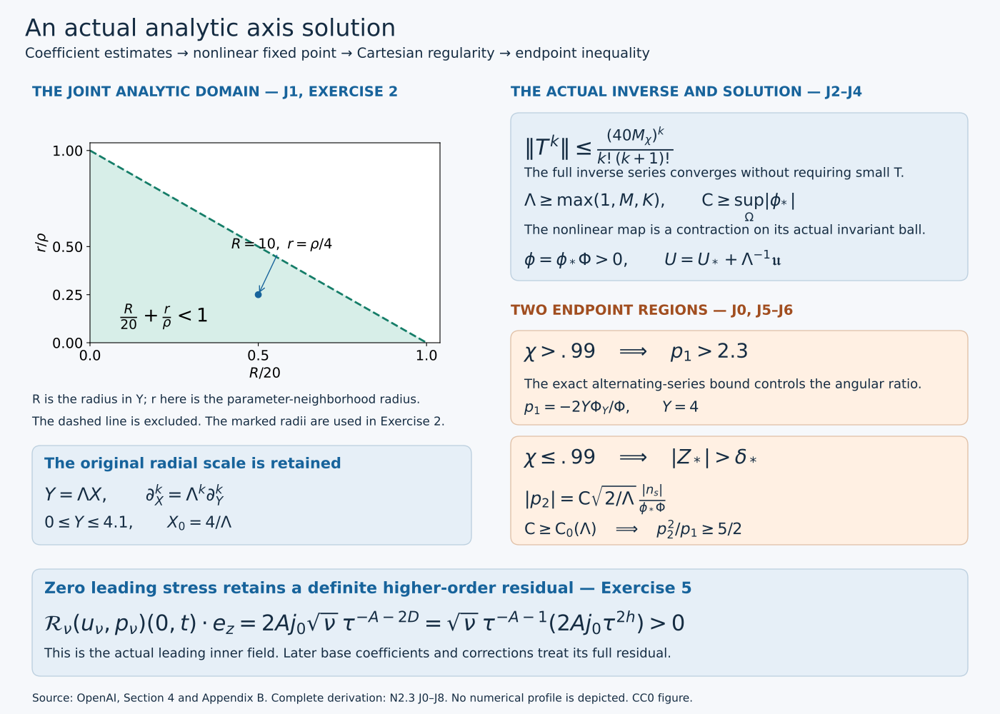
Figure. The domain \(R/20+r/\rho<1\) is the exact convergence domain used for the joint coefficient bound. Its coordinates are ratios of the original radii; neither original radius is removed from the proof. The two endpoint alternatives use the original \(\chi\), \(Z_*\), \(p_1\) and \(p_2\). The last panel records the actual positive axial residual of the leading field, with its full viscosity factor, proved in Exercise 5. It is not a residual of the final corrected field.
Why the proof has this order
First choose the axis data using the pressure already supplied by the outer field. Their two complementary parameter regions will later give the endpoint inequality. Then construct a coefficient space that represents actual analytic functions and prove its multiplication and integrated derivative estimates. These estimates control every term of the original nonlinear equations.
The leading angular operator need not be small. Its repeated inverse integrations increase the radial degree, producing factorial denominators. That supplies a bounded inverse without an unsupported smallness assumption. Only the remaining nonlinear map carries \(1/\Lambda\). We choose \(\Lambda\) large enough to make that map contractive, and then choose \(\mathsf C\) large enough to control the original amplitude on a complex neighborhood. The resulting bounds hold for every subsequent admissible amplitude.
Finally, positivity permits division by the actual angular profile. We recover the smooth Cartesian field, prove the source lower bound, and check both endpoint regions. Zero leading stress retains the axial-viscosity and radial parts of the full residual; Exercise 5 computes one such term exactly.
J0. Actual axis data and their parameter domains
The pressure datum is already fixed. We choose the remaining axis data so that either the angular contribution or the axial contribution can give a strict endpoint margin. The location where \(H_*\) vanishes is central to that division of the parameter interval.
Keep the original fixed choices \(0<h<1/100\), \(A=1/2+h\), \(D=1/2-h\), \(d=1-\eta^2\), \(L=1-2h\eta^2\). The analytic pressure \(\Pi_0\) constructed in O4 is even, obeys \(\Pi_0\le-(5/2)P_*^2(1+\eta^2)^{-2}\), and has \(\eta\Pi_{0\eta}>0\) for nonzero real \(\eta\in[-1,1]\). Choose \(0<j_0\le1/20\) and set exactly
\[ \begin{aligned} U_*&=4\eta+j_0,& H_*&=D\eta+dU_*,\\ W_*&=1-dU_{*\eta}-2D\eta U_*,\\ Z_*&=-A(1-2\eta U_*)U_*-H_*U_{*\eta}-d\Pi_{0\eta}+4A\eta\Pi_0. \end{aligned} \tag{J0.1} \]On \((-1,1)\), \(H_*/d=D\eta/d+4\eta+j_0\) has derivative \(D(1+\eta^2)/d^2+4>0\) and ranges from minus infinity to plus infinity. Its unique zero \(\eta_0\) lies in \((-1,0)\). Writing \(x=-\eta_0\), its equation is
\[ j_0=x\left(4+\frac D{1-x^2}\right),\qquad \frac{j_0}{5}<x<\frac{j_0}{4},\qquad -W_*=3-8h\eta^2+(1-2h)j_0\eta\ge2.87>2.8. \tag{J0.2} \]For the bounds on x, the equation first gives \(x<j_0/4\le1/80\); its parenthesis is then less than 5 and greater than 4. At \(\eta_0\), \(H_*=0\), \(-d\Pi_{0\eta}\ge0\), and \(U_*=Dx/d\). The first term of \(Z_*\) has absolute value at most \(j_0\): use \(x<1/80\), \(D\le1/2\), \(A\le.51\), and the displayed formula for \(U_*\). The last term satisfies
\[ 4A\eta_0\Pi_0(\eta_0) \ge10A xP_*^2(1+x^2)^{-2} >\tfrac9{10}j_0P_*^2. \tag{J0.3} \]The original choice \(P_*>e^{T_d}>10\) therefore gives \(Z_*(\eta_0)>\tfrac12j_0P_*^2>0\). This proves the required positivity from the actual datum.
Choose a neighborhood of \(\eta_0\) on which \(Z_*\) has a positive lower bound. A positive \(\delta_*\) smaller than that bound makes the compact set \(\{|Z_*|\le\delta_*\}\) avoid that neighborhood. On this set \(|H_*|\) has a positive minimum. Choose \(\sigma_*>0\) small enough that
\[ \chi=\frac{H_*^2}{H_*^2+\sigma_*^2}>.99 \quad\hbox{where }|Z_*|\le\delta_*. \tag{J0.4} \]If the set is empty any sufficiently small positive \(\sigma_*\) works. The strict inequalities persist on a slightly larger real compact interval \(I\supset[-1,1]\), chosen so \(H_*\) has no additional zero there. Choose a bounded simply connected complex neighborhood \(\Omega\) of I, symmetric about the real axis, with closure in a domain where \(\Pi_0\) is holomorphic and L and \(H_*^2+\sigma_*^2\) do not vanish. Compactness supplies such a neighborhood.
For \(\Lambda\ge1\) retain the original functions and amplitude order:
\[ \zeta_*=-\frac{LH_*}{H_*^2+\sigma_*^2},\qquad \widetilde\zeta_0=\Lambda\zeta_*,\qquad \phi_*(\eta)=\exp\!\left(\Lambda\int_0^\eta\zeta_*(w)dw\right). \tag{J0.5} \]The holomorphic primitive exists on \(\Omega\); it is real on I, so \(\phi_*>0\) there. The amplitude \(\mathsf C\) will be chosen after \(\Lambda\). None of these choices alters the outer pressure datum.
J1. The original coefficient space and exact radial maps
The norm controls every coefficient and every parameter derivative at once. We must prove both completeness and convergence to actual functions. The variable \(Y=\Lambda X\) records a change of radial coordinate; the original \(X\) and its derivative factors are recovered explicitly.
Use the scalar radial variable \(Y=\Lambda X\). For a small fixed \(\rho>0\), retain the weights and norm
\[ \begin{gathered} \mathfrak a_{\alpha\beta} =\frac{20^{-\alpha}\rho^{-\beta}\beta!\binom{\alpha+\beta}{\beta}} {(\alpha+1)^2(\beta+1)^2},\\ \|F\|_\rho=\sup_{\alpha,\beta\ge0}\sup_{\eta\in I} \frac{|\partial_\eta^\beta F_\alpha(\eta)|}{\mathfrak a_{\alpha\beta}}, \qquad F=\sum_{\alpha\ge0}F_\alpha(\eta)Y^\alpha. \end{gathered} \tag{J1.1} \]The space \(\mathcal B_\rho\) consists of smooth coefficient sequences with finite norm. It is complete. Indeed a norm-Cauchy sequence converges uniformly at each coefficient and each derivative order; the fundamental theorem of calculus identifies the successive derivative limits. Passing to the limit in every weighted inequality gives a limit in the space and norm convergence.
This coefficient space represents actual analytic functions, not just formal series. At a real center \(\eta_0\), divide the derivative estimate by \(\beta!\) and sum the joint Taylor series. For \(|Y|\le R<20\) and \(|\eta-\eta_0|\le r\) with \(R/20+r/\rho<1\), its absolute sum is bounded by
\[ \|F\|_\rho\sum_{\alpha,\beta\ge0} \binom{\alpha+\beta}{\beta}(R/20)^\alpha(r/\rho)^\beta =\frac{\|F\|_\rho}{1-R/20-r/\rho}. \tag{J1.2} \]The identity follows by expanding \(\sum_{n\ge0}(R/20+r/\rho)^n\). Taylor's remainder estimate proves equality with the original smooth coefficients on the real interval. Local extensions agree on overlaps and supply a common holomorphic neighborhood, including the endpoints of I. The denominator factors in J1.1 have been retained in the norm; discarding them only in this upper bound does not change the represented function.
Write \(\mathcal I F=\int_0^YF(Y',\eta)dY'\), \(\mathcal A F=Y^{-1}\mathcal I F\), and \(\mathcal D_X=Y\partial_Y=X\partial_X\). The identity \(\mathcal A_X(F)=\int_0^1F(\Lambda aX,\eta)da=\mathcal A(F)(Y,\eta)\) proves the exact radial-average comparison. In the next radial inverse, \(\nu\in\{1,2\}\) is an integration index; the physical viscosity is restored separately in J7. For \(\nu=1,2\), the unique smooth solution of \(YG_{YY}+\nu G_Y=F\), \(G(0)=0\), is \(G=\mathcal J_\nu F\), with
\[ (\mathcal J_\nu F)_{\alpha+1}=\frac{F_\alpha}{(\alpha+1)(\alpha+\nu)},\qquad (\mathcal J_\nu F)_0=0. \tag{J1.3} \]One can integrate \((Y^\nu G_Y)'=Y^{\nu-1}F\); smoothness removes the singular homogeneous derivative and the zero value removes the constant. Expanding that integral gives every divisor in J1.3.
J2. Multiplication and the mixed derivative estimate
The squared denominators in the coefficient weights make the two convolutions summable. The binomial factor connects radial degree to parameter derivatives. We calculate the weight ratios before using any nonlinear estimate, including the case where a parameter derivative and a radial derivative act on different factors.
Keep the exact finite constant \(C_{\rm sq}=8\sum_{i=1}^\infty i^{-2}\). Splitting a sum at \(N/2\) gives
\[ \sum_{i=0}^N\frac{(N+1)^2}{(i+1)^2(N-i+1)^2}\le C_{\rm sq}. \tag{J2.1} \]On the first half the ratio \((N+1)^2/(N-i+1)^2\) is at most 4; reverse the indices on the other half. The product Leibniz factor \(\binom\beta k\) cancels the two derivative factorials against \(\beta!\). The remaining binomial ratio is at most one because
\[ \binom{i+k}{k}\binom{\alpha-i+\beta-k}{\beta-k} \le\binom{\alpha+\beta}{\beta}. \tag{J2.2} \]The left side counts the subsets with exactly k elements in the first of two disjoint blocks of sizes \(i+k\) and \(\alpha-i+\beta-k\). Summing the resulting weight ratio in the radial and derivative indices and applying J2.1 proves
\[ \|FG\|_\rho\le C_{\rm sq}^2\|F\|_\rho\|G\|_\rho. \tag{J2.3} \]The exact ratios for increasing a radial degree are
\[ \frac{\mathfrak a_{\alpha\beta}}{\mathfrak a_{\alpha+1,\beta}} =20\frac{(\alpha+2)^2}{(\alpha+1)^2}\frac{\alpha+1}{\alpha+\beta+1}\le80, \quad \frac{\mathfrak a_{i,k+1}}{\mathfrak a_{i+1,k}} =\frac{20}{\rho}(i+1)\frac{(i+2)^2(k+1)^2}{(i+1)^2(k+2)^2} \le\frac{80}{\rho}(i+1). \tag{J2.4} \]Together with J1.3, these bound multiplication by Y, \(\mathcal I\) and \(\mathcal J_\nu\). The average divides the radial degree \(\alpha\) coefficient by \(\alpha+1\), so its norm is at most one. The second ratio, with the integration divisor \(i+1\), proves \(\|\partial_\eta\mathcal I F\|_\rho\le(80/\rho)\|F\|_\rho\).
For the differentiated product inside \(\mathcal J_\nu\), let the output radial degree be \(N=\alpha+1\), and let the differentiated F have degree i and G degree \(\alpha-i\). Allocate the added radial degree to F, writing \(I_1=i+1\), \(J_1=\alpha-i\). J2.4, the full Leibniz rule, and J2.2 bound its \(\beta\)-derivative divided by \(\mathfrak a_{N\beta}\) by
\[ \frac{80}{\rho}\|F\|_\rho\|G\|_\rho \sum_{i=0}^{\alpha}\sum_{k=0}^{\beta} \frac{I_1J_1}{N(\alpha+\nu)} \frac{(N+1)^2}{(I_1+1)^2(J_1+1)^2} \frac{(\beta+1)^2}{(k+1)^2(\beta-k+1)^2}. \tag{J2.5} \]Here the numerator \(J_1\) is the logarithmic radial derivative and \(I_1\) is the parameter-derivative weight from J2.4. Since \(I_1+J_1=N\) and \(\nu\ge1\), the first fraction is at most one. Extending the first sum to all splittings of N and applying J2.1 twice proves
\[ \|\mathcal J_\nu[(\partial_\eta F)(\mathcal D_XG)]\|_\rho \le\frac{80}{\rho}C_{\rm sq}^2\|F\|_\rho\|G\|_\rho. \tag{J2.6} \]With an average on F its divisor \(i+1\) cancels \(I_1\). Omitting the radial derivative replaces \(J_1\) by 1, again leaving a fraction at most one. Without the parameter derivative use the first ratio of J2.4 and the radial coefficient at most \(\alpha\), divided by \((\alpha+1)(\alpha+\nu)\); J2.1 again applies. Omitting both derivatives follows directly from J2.3 and boundedness of \(\mathcal J_\nu\). Additional undifferentiated factors leave their radial indices unaltered. The same allocation of one degree to the parameter-differentiated factor and the same inverse divisor bound apply, while each additional convolution contributes \(C_{\rm sq}^2\). These arguments include zero indices and every \(\beta\). They prove the full Lemma B.1 needed below.
J3. Original nonlinear equations and every remainder
We substitute into the actual equations and display every remainder. The pressure is recovered by its original integral, so it contributes a known nonlinear function of the two unknown profiles. Complex control of the amplitude is what keeps all parameter derivatives bounded as the large parameters vary.
The original angular and axial equations for zero leading stress, and radial pressure balance, are
\[ -2L\frac{X\phi_{XX}+2\phi_X}{\phi}=S_q,\qquad -2L(XU_{XX}+U_X)=S_n,\qquad \Pi_X=\phi^2/\mathsf C^2. \tag{J3.1} \]Their complete source formulas are P1.1. Make the exact substitutions, retaining the amplitude and radial factors,
\[ \phi=\phi_*\Phi(Y,\eta),\quad U=U_*+\Lambda^{-1}\mathfrak u(Y,\eta),\quad \Pi=\Pi_0+\Lambda^{-1}\mathfrak p,\quad g=\phi_*/\mathsf C,\quad\mathfrak p=\mathcal I(g^2\Phi^2). \tag{J3.2} \]The intended axis values are \(\Phi(0,\eta)=1\), \(\mathfrak u(0,\eta)=0\). In particular \(\Pi_X=\partial_Y\mathfrak p=g^2\Phi^2=\phi^2/\mathsf C^2\). Define
\[ B=-2D\eta\mathcal A(\mathfrak u)-d\partial_\eta\mathcal A(\mathfrak u),\quad W=W_*+\Lambda^{-1}B,\quad H_c=H_*+d\Lambda^{-1}\mathfrak u. \tag{J3.3} \]Direct substitution into J3.1 gives
\[ \begin{aligned} 2(Y\Phi_{YY}+2\Phi_Y)&=-\chi\Phi+\Lambda^{-1}R_1,\\ 2(Y\mathfrak u_{YY}+\mathfrak u_Y)&=-Z_*/L+\Lambda^{-1}R_2. \end{aligned} \tag{J3.4} \]with all terms
\[ \begin{split} LR_1={}&[W+h(1-2\eta U)+d\mathfrak u\zeta_*]\Phi +W\mathcal D_X\Phi+H_c\Phi_\eta,\\ LR_2={}&[A(1-4\eta U_*)+dU_{*\eta}]\mathfrak u -2A\eta\Lambda^{-1}\mathfrak u^2+W\mathcal D_X\mathfrak u +H_*\mathfrak u_\eta+d\Lambda^{-1}\mathfrak u\mathfrak u_\eta\\ &-4A\eta\mathfrak p+d\partial_\eta\mathfrak p-2\eta\mathcal D_X\mathfrak p. \end{split} \tag{J3.5} \]The terms contain the products \(A\eta\), not a derivative \(A_\eta\); the original page 147 has those products. To check the angular leading sign, \(H_*\zeta_*/L=-\chi\), while \(H_c\Lambda\zeta_*=-\Lambda L\chi+d\mathfrak u\zeta_*\). For the axial equation, expand its negative source before dividing by L:
\[ A(1-2\eta U)U+W\mathcal D_XU+H_cU_\eta-4A\eta\Pi+d\Pi_\eta-2\eta\mathcal D_X\Pi. \tag{J3.6} \]Its constant part is \(-Z_*\). Expanding the first term about \(U_*\) gives exactly \(\Lambda^{-1}A(1-4\eta U_*)\mathfrak u-2A\eta\Lambda^{-2}\mathfrak u^2\); expanding \(H_cU_\eta\) gives the two linear terms and the mixed quadratic term in J3.5. Pressure contributes the last three displayed terms after multiplication by \(\Lambda\). This verifies the full substitution, rather than replacing the original equations by a different model.
Choose \(\rho\) strictly below a common complex-neighborhood distance from I to the boundary of \(\Omega\). For each \(\Lambda\), impose
\[ \mathsf C\ge\sup_{\eta\in\Omega}|\phi_*(\eta)|. \tag{J3.7} \]The supremum is finite by the choice of closure. Then \(|g|\le1\) on \(\Omega\). Cauchy's estimate gives \(|\partial_\eta^\beta g|\le\beta!r_0^{-\beta}\) on a smaller neighborhood for some fixed \(r_0>\rho\). At radial degree zero its norm ratio is bounded by \((\beta+1)^2(\rho/r_0)^\beta\), uniformly in \(\beta,\Lambda,\mathsf C\). All fixed coefficients in J3.5 have finite norms by the same estimate. This complex bound is essential: real bounds on \(\phi_*\) alone would not control its large-parameter derivatives.
The maps \((\Phi,\mathfrak u)\mapsto\mathcal J_\nu R_i\) are consequently bounded and locally Lipschitz on any fixed ball in \(\mathcal B_\rho^2\), uniformly for \(\Lambda\ge1\) and amplitudes satisfying J3.7. Here is the full derivative check. In \(W\mathcal D_X\Phi\) and \(W\mathcal D_X\mathfrak u\), the only double differentiated products are \((\partial_\eta\mathcal A\mathfrak u)\mathcal D_X\Phi\) and \((\partial_\eta\mathcal A\mathfrak u)\mathcal D_X\mathfrak u\); J2.6 handles them. The factors B without a radial derivative use its omitted-derivative case. The terms \(H_c\Phi_\eta\), \(H_*\mathfrak u_\eta\) and \(\mathfrak u\mathfrak u_\eta\) use the same case, with extra undifferentiated factors. Finally \(\partial_\eta\mathfrak p=\partial_\eta\mathcal I(g^2\Phi^2)\) is bounded by J2.4, and \(\mathcal D_X\mathfrak p=Yg^2\Phi^2\) is bounded by multiplication and the Y operator. All other factors use J2.3. For Lipschitz bounds, subtract each monomial as a sum with one differing factor; the same estimates apply to each term. No unbounded parameter derivative is treated as a bounded operator by itself.
J4. Actual inverse, contraction and analytic solution
The operator inverse is built first, using its full sequence of powers. We then iterate one explicit nonlinear map in the complete coefficient space. Its fixed point is an actual analytic solution, and positivity is proved before dividing by the angular profile.
Let \(M_\chi\) bound multiplication by \(\chi\) in \(\mathcal B_\rho\), and let \(T=\mathcal J_2\chi/2\), with multiplication first. If the input has no radial coefficient below degree b, J2.4 gives
\[ \|\mathcal J_2F\|_\rho\le\frac{80}{(b+1)(b+2)}\|F\|_\rho, \qquad \|T^k\|\le\frac{(40M_\chi)^k}{k!(k+1)!}. \tag{J4.1} \]Multiplication by \(\chi(\eta)\) preserves the minimum degree and \(\mathcal J_2\) increases it by one, proving the second inequality by iteration. It includes all parameter derivatives through the norm. The series \(\sum_{k\ge0}(-T)^k\) converges in operator norm by its factorial bound. Multiplication of its finite partial sums by \(1+T\) leaves a remainder of norm tending to zero, on either side. Thus it is a two-sided inverse without any assumption that \(\chi\) or \(\|T\|\) is small.
The exact unperturbed solution is
\[ \Phi^0=(1+T)^{-1}1=f_0(Y\chi),\qquad \mathfrak u^0=-\frac{YZ_*}{2L},\qquad f_0(z)=\sum_{\alpha\ge0}\frac{(-z/2)^\alpha}{\alpha!(\alpha+1)!}. \tag{J4.2} \]Indeed the series converges everywhere and its coefficients solve \(2(zf_0''+2f_0')=-f_0\), \(f_0(0)=1\); J1.3 then gives the first identity. The axial identity follows since \(\mathcal J_1\) applied to a constant equals that constant times Y.
Use the actual map
\[ (\Phi,\mathfrak u)\longmapsto \left(\Phi^0+\frac{(1+T)^{-1}\mathcal J_2R_1}{2\Lambda},\quad \mathfrak u^0+\frac{\mathcal J_1R_2}{2\Lambda}\right). \tag{J4.3} \]On the closed ball of radius 1 about the center, in the maximum of the two coefficient norms, J3 supplies finite uniform bounds M and K for the numerator map and its Lipschitz constant, including \((1+T)^{-1}\). Choose \(\Lambda\ge\max(1,M,K)\), increasing it if needed. The map stays within radius \(1/2\) of the center and has Lipschitz constant at most \(1/2\). Iteration from the center is Cauchy, its limit lies in the ball by completeness, and continuity proves that it is a fixed point. The same bound proves uniqueness in the ball. It has distance at most \(M/(2\Lambda)\) from the center. All output corrections vanish at Y zero, so the intended axis values hold exactly. Choose \(\mathsf C_0(\Lambda)\) after \(\Lambda\) to include J3.7. The estimates hold for every subsequent \(\mathsf C\ge\mathsf C_0(\Lambda)\).
Choose any fixed \(4.1<R<20\) in J1.2 and then a smaller common complex neighborhood. Cauchy estimates for the actual difference from the center give, for every fixed r and s,
\[ \sup_{[0,4.1]\times I} \left|\partial_Y^r\partial_\eta^s \left(\Phi-f_0(Y\chi),\ \mathfrak u+\frac{YZ_*}{2L}\right)\right| \le\frac{K_{r,s}}\Lambda. \tag{J4.4} \]The constants and neighborhood are independent of sufficiently large \(\Lambda\) and of subsequent \(\mathsf C\). The original derivatives satisfy \(\partial_X^r=\Lambda^r\partial_Y^r\), so their bound is \(K_{r,s}\Lambda^{r-1}\), with the original scale retained. Reality follows either from the real iteration or from conjugation and uniqueness.
For positivity on the actual real rectangle, put \(t=z/2\) with \(0\le z\le41/10\). The alternating series after its cubic term has decreasing magnitudes and positive first remaining term. Thus
\[ f_0(z)\ge1-\frac t2+\frac{t^2}{12}-\frac{t^3}{144} \ge\frac{305719}{1152000}>.265, \qquad f_0(z)\le1. \tag{J4.5} \]The cubic derivative is \(-[(t-4)^2+8]/48<0\), so its minimum for \(0\le t\le41/20\) is the displayed exact endpoint value. For the upper bound group the alternating series after its constant term into negative-positive pairs; magnitudes decrease from the linear term onward because their successive ratio is \(t/[(\alpha+1)(\alpha+2)]\le(41/20)/6<1\) for \(\alpha\ge1\). Since \(0\le\chi\le1\) on I, J4.4 and J4.5 give \(\Phi\ge c_0>0\) on the full real rectangle after increasing \(\Lambda\). Consequently \(\phi=\phi_*\Phi>0\), and division by \(\phi\) in the original J3.1 is valid. This proves the nonlinear equations themselves, not just their multiplied version.
The analytic scalar profiles give a smooth Cartesian axis field by P0.4–P0.7. Explicitly retain \(F=\phi/\mathsf C\), \(E=\sqrt{2X}F\), and the actual radial average in \(V_0=Xv_0\). Then
\[ \begin{gathered} u_1=\frac{v_0x_1}{2q}-q^{-A-1/2}Fx_2,\qquad u_2=\frac{v_0x_2}{2q}+q^{-A-1/2}Fx_1,\\ u_3=q^{-A}U,\qquad p=q^{-2A}\Pi. \end{gathered} \tag{J4.6} \]Here X is \((x_1^2+x_2^2)/(2q)\) and q is positive and smooth for \(t<1\). Every scalar coefficient is smooth in X, so these products extend smoothly across the axis. P1.3 and P1.7 identify their zero leading stress, including the zero axis integration constants. This completes Proposition B.2 on its stated interval.
J5. Positive angular source and the actual stress coefficients
The construction must control the source even where \(\chi=0\). We use a bound involving \(\sqrt\chi\) and Young’s inequality without dividing by \(\chi\). The original radial primitive then transfers that source bound to the actual stress coefficients.
The source inequalities in this section and J6 use the original real parameter interval \([-1,1]\); the larger I remains available for analytic neighborhoods and derivative bounds.
The identity
\[ |H_*\chi'|=\left|\frac{2H_*^2H_*'\sigma_*^2}{(H_*^2+\sigma_*^2)^2}\right| \le2\|H_*'\|_\infty\chi \tag{J5.1} \]and the positivity of \(f_0\) show that \(\mathcal D_X\log f_0(Y\chi)=O(\chi)\) and \(H_*\partial_\eta\log f_0(Y\chi)=O(\chi)\). J4.4, with the positive lower bounds, therefore gives
\[ |\mathcal D_X\log\Phi|+|H_*\partial_\eta\log\Phi| \le K\chi+K/\Lambda. \tag{J5.2} \]The original logarithmic derivative contains \(\Lambda\zeta_*\), so
\[ -H_c\Lambda\zeta_* =\Lambda L\chi-d\mathfrak u\zeta_*,\qquad |\zeta_*|\le\frac{L}{\sigma_*}\sqrt\chi. \tag{J5.3} \]Also \(H_c-H_*=O(\Lambda^{-1})\), and the unweighted derivative \(\Phi_\eta/\Phi\) is uniformly bounded. The complete source \(S_q=-W(1+\mathcal D_X\log\Phi)-h(1-2\eta U)-H_c(\log\phi)_\eta\), J5.2–J5.3 and \(W-W_*=O(\Lambda^{-1})\) imply
\[ S_q\ge\Lambda L\chi-W_*-10h-K\chi-K_{\sigma_*}\sqrt\chi-K/\Lambda. \tag{J5.4} \]Here \(|U|\le4.1\) follows from J4.4 for large \(\Lambda\), and hence \(|h(1-2\eta U)|\le10h\). First increase \(\Lambda\) so \(K\chi\le.025\Lambda L\chi\); then Young's inequality gives \(K_{\sigma_*}\sqrt\chi\le.025\Lambda L\chi+K'_{\sigma_*}/\Lambda\). Since \(-W_*>2.8\), \(10h\le.1\), increase \(\Lambda\) once more so the remaining constant error is at most .2. This proves the original full bound
\[ S_q\ge2.5+.95\Lambda L\chi. \tag{J5.5} \]No division by \(\chi\) has occurred, so the proof includes its zero at \(\eta_0\).
The actual axis-regular integral P1.3 reads
\[ Q_s(X,\eta)=\frac{\int_0^X X'\Phi(\Lambda X',\eta)S_q(X',\eta)dX'}{X^2\Phi(\Lambda X,\eta)}. \tag{J5.6} \]Its smooth extension is obtained by setting \(X'=aX\). A uniform lower bound \(c_0\) and upper bound \(C_\Phi\) for \(\Phi\), and J5.5, give \(Q_s\ge(5/4)c_0/C_\Phi\). Retain the original coefficients
\[ p_1=\frac{XQ_s}L=a=-\frac{2Y\Phi_Y}{\Phi},\quad n_s=\frac{N_s}L=-2U_X=-2\mathfrak u_Y=\frac{Z_*}L+O(\Lambda^{-1}),\quad p_2=\frac{Xn_s}E. \tag{J5.7} \]The equalities with a and \(-2U_X\) follow from the actual zero-stress solution and its axis constants, as proved in P1.7. Thus, for \(0<X\le4.1/\Lambda\),
\[ p_1/X\ge c_1>0,\qquad 0<p_1\le C_1. \tag{J5.8} \]The upper bound follows from J4.4 and the positive \(\Phi\) lower bound. Each fixed parameter derivative of \(\Phi,\log\Phi,\mathfrak u,p_1,n_s\) is bounded uniformly in subsequent \(\mathsf C\). For \(\log\Phi\), the uniform derivative bound and positivity give a smaller common complex neighborhood without zeros, on which its logarithm is chosen from the positive real values. The explicit formulas and Cauchy estimates then give all these bounds. Original radial derivatives retain their powers of \(\Lambda\).
J6. The strict endpoint inequality, in both parameter regions
The endpoint proof covers every parameter value. On \(\chi>.99\), the angular ratio gives the margin. On \(\chi\le.99\), the chosen axis data force \(Z_*\) away from zero and the original amplitude makes the axial ratio large. We prove the two bounds with compatible parameter choices.
At \(X_0=4/\Lambda\), \(Y=4\). First suppose \(\chi>.99\). Put \(z=4\chi\), \(t=z/2\), so \(1.98<t\le2\). The exact series is \(f_0(z)+zf_0'(z)=\sum_{\alpha\ge0}(-t)^\alpha/(\alpha!)^2\). The alternating remainder after its fourth term is negative, with decreasing magnitudes, hence
\[ f_0(z)+zf_0'(z) \le1-t+t^2/4-t^3/36+t^4/576<-.18. \tag{J6.1} \]The polynomial derivative is \(-1+t/2-t^2/12+t^3/144\). On \([1.98,2]\) its first pair is nonpositive and the other terms equal \(-t^2(1/12-t/144)<0\). Thus its maximum is at \(t=99/50\), where its exact value is \(-75535511/400000000<-.188\). Using \(0<f_0\le1\),
\[ -\frac{2zf_0'(z)}{f_0(z)} =2-2\frac{f_0(z)+zf_0'(z)}{f_0(z)}>2.36. \tag{J6.2} \]The actual ratio in J5.7 differs by \(O(\Lambda^{-1})\), uniformly on this region. Choose the error below .06. Then \(p_1>2.3\) at \(X_0\).
On the complementary region \(\chi\le.99\), the actual choice J0.4 gives \(|Z_*|>\delta_*\). Since \(L\le1\), J5.7 gives \(|n_s|\ge\delta_*/2\) after increasing \(\Lambda\). At the same original radius,
\[ |p_2|=\mathsf C\sqrt{2/\Lambda}\,\frac{|n_s|}{\phi_*\Phi}. \tag{J6.3} \]This retains \(E=\sqrt{2X}\phi_*\Phi/\mathsf C\) and every factor of two. For the now-fixed \(\Lambda\), let \(M_\Lambda=(\max_I\phi_*)C_\Phi\), a finite bound independent of subsequent \(\mathsf C\). Enlarge its threshold to include \(\mathsf C_0(\Lambda)\ge\sqrt{5\Lambda C_1}\,M_\Lambda/\delta_*\). J5.8 and J6.3 then give
\[ \frac{p_2^2}{p_1}\ge \frac{\mathsf C^2\delta_*^2}{2\Lambda M_\Lambda^2 C_1}\ge\frac52>2.3. \tag{J6.4} \]There is no circular amplitude bound: \(C_\Phi,C_1\) came from estimates uniform for every amplitude already meeting J3.7. Taking the maximum of that threshold and the displayed one preserves all prior bounds. On the first parameter region \(p_1>2.3\); on the second \(p_2^2/p_1>2.3\), with \(p_1>0\). Both prove, for the actual analytic inner profile,
\[ p_1+\frac{p_2^2}{p_1}>2+c_{\rm ex}\quad\hbox{at }X_0=4/\Lambda, \qquad c_{\rm ex}=.2. \tag{J6.5} \]Together with J5, this proves Proposition B.3, including its parameter order and all fixed parameter-derivative assertions.
J7. What the actual axis solution supplies
The constructed profile has the original prescribed pressure at the axis, positive \(\phi\), all analytic scalar profiles, a smooth Cartesian field, exactly zero leading stress, positive \(S_q\), and the strict endpoint inequality. The maps J3.2 and J4.6 retain the original X and physical fields; \(\partial_X=\Lambda\partial_Y\) retains their derivative scales. For original viscosity \(\nu>0\), use the exact map in P1 and H7.1–H7.2: \(u_\nu=\sqrt\nu u(x_\nu/\sqrt\nu,t)\), \(p_\nu=\nu p(x_\nu/\sqrt\nu,t)\), \(T_\nu=\nu T(x_\nu/\sqrt\nu,t)=0\), with \(X_\nu=r_\nu^2/(2\nu q_\nu)\). The full momentum residual retains the axial-viscosity and radial remainder terms in P1.5–P1.6; zero leading stress does not set those terms to zero.
J8. Five worked exercises
Exercise 1. Recover the actual radial inverse kernels
Derive integral formulas for both operators \(\mathcal J_1,\mathcal J_2\), including their axis values and original radial scale.
Solution. For \(YG_{YY}+\nu G_Y=F\), multiply by \(Y^{\nu-1}\). The left side is \((Y^\nu G_Y)'\). Smoothness at zero sets the lower integration constant to zero, and \(G(0)=0\) sets the remaining constant. Hence
\[ G(Y)=\int_0^Ys^{-\nu}\left(\int_0^st^{\nu-1}F(t)\,dt\right)ds. \tag{J8.1} \]For \(Y>0\), the inner integral is \(O(s^\nu)\), so the integrand is bounded at zero. Set \(s=Yb\), \(t=Ya\) and change the order on \(0\le a\le b\le1\). This gives
\[ \begin{split} \mathcal J_1F(Y)&=Y\int_0^1(-\log a)F(aY)\,da,\\ \mathcal J_2F(Y)&=Y\int_0^1(1-a)F(aY)\,da. \end{split}\tag{J8.2} \]The weights are integrable and nonnegative. Differentiation under these fixed integrals proves smoothness and \((\mathcal J_\nu F)(0)=0\), \((\mathcal J_\nu F)'(0)=F(0)/\nu\). Integrating \(a^\alpha\) against the two weights gives exactly \(1/(\alpha+1)^2\) and \(1/[(\alpha+1)(\alpha+2)]\), recovering J1.3 without discarding either divisor.
For the original \(X\)-equation with right side \(F(\Lambda X,\eta)\), put
\[ G_X(X,\eta)=\Lambda^{-1}(\mathcal J_\nu F)(\Lambda X,\eta). \]Then \(X\partial_X^2G_X+\nu\partial_XG_X=F(\Lambda X,\eta)\), and \(G_X(0,\eta)=0\). The derivative is \(\partial_XG_X=(\mathcal J_\nu F)_Y\), while the second derivative is \(\Lambda(\mathcal J_\nu F)_{YY}\). These identities prove the complete radial scaling of the inverse.
Exercise 2. Give explicit derivative bounds on a common complex domain
Starting from the coefficient-norm bound in J4, give a concrete family of bounds for all fixed derivatives of the actual difference from the comparison pair. Then retain the original radial factors in the axial profile U.
Solution. Write the two-component difference as \(\Delta=(\Phi-\Phi^0,\mathfrak u-\mathfrak u^0)\). J4.3 gives \(\|\Delta\|_\rho\le M/(2\Lambda)\), using the maximum norm on the pair. J1.2 implies that \(|\Delta|\le4\|\Delta\|_\rho\) on every joint disk with \(|Y|\le10\) and \(|\eta-\eta_c|\le\rho/4\), where \(\eta_c\in I\). The original radius condition is \(10/20+(\rho/4)/\rho=3/4<1\).
For every real \(Y_c\in[0,4.1]\), the disk \(|Y-Y_c|\le5\) lies in \(|Y|<10\). Cauchy’s formula on the two circles therefore yields
\[ |\partial_Y^r\partial_\eta^s\Delta(Y_c,\eta_c)| \le\frac{2M\,r!\,s!}{\Lambda\,5^r} \left(\frac4\rho\right)^s. \tag{J8.3} \]The same domains and constants work for the whole real rectangle and every subsequent \(\mathsf C\) admitted by J3.7. This proves a concrete version of the fixed-order estimates; it does not require a single bound independent of r and s.
The original axial comparison is \(U_* -XZ_*/(2L)\), because \(\Lambda^{-1}\mathfrak u^0=-XZ_*/(2L)\). Thus the actual original-coordinate estimates are
\[ \begin{split} \left|\partial_X^r\partial_\eta^s [\Phi(\Lambda X,\eta)-f_0(\Lambda X\chi)]\right| &\le\frac{2M\,r!\,s!}{5^r}\left(\frac4\rho\right)^s\Lambda^{r-1},\\ \left|\partial_X^r\partial_\eta^s \left[U-U_*+\frac{XZ_*}{2L}\right]\right| &\le\frac{2M\,r!\,s!}{5^r}\left(\frac4\rho\right)^s\Lambda^{r-2}. \end{split}\tag{J8.4} \]Every bound applies on \(0\le X\le4.1/\Lambda\). The extra inverse power in the second line comes from the actual prefactor in U; it is not a change of the original profile.
Exercise 3. Compute the exact first axis derivatives
Evaluate the angular source, \(\phi_X\), \(U_X\), \(\Pi_X\) and the first stress-coefficient limits at \(X=0\). Determine which expressions depend on \(\Lambda\) and \(\mathsf C\).
Solution. At the axis, \(U=U_*\), \(\phi=\phi_*\), \(l=1\), \(W=W_*\), \(H_c=H_*\), and \((\log\phi)_\eta=\Lambda\zeta_*\). Write
\[ \mathcal S_*(\eta) =-W_*-h(1-2\eta U_*)+\Lambda L\chi. \tag{J8.5} \]This is exactly \(S_q(0,\eta)\), since \(-H_*\Lambda\zeta_*=\Lambda L\chi\). Evaluation of J3.1 at \(X=0\), with no limiting approximation, gives
\[ \begin{gathered} \phi_X(0,\eta)=-\frac{\phi_*\mathcal S_*}{4L},\qquad U_X(0,\eta)=-\frac{Z_*}{2L},\\ \Pi_X(0,\eta)=\frac{\phi_*^2}{\mathsf C^2},\qquad \Phi_Y(0,\eta)=-\frac{\chi}{4} +\frac{W_*+h(1-2\eta U_*)}{4\Lambda L}. \end{gathered}\tag{J8.6} \]For the axial identity, \(S_n(0,\eta)=Z_*\): the terms containing \(\mathcal D_XU\) or \(\mathcal D_X\Pi\) vanish, and the remaining source is precisely J0.1. Thus \(\mathfrak u_Y(0,\eta)=-Z_*/(2L)\) exactly, strengthening the approximation at this one radius.
J5.6 gives \(Q_s(0,\eta)=\mathcal S_*/2\), while \(n_s(0,\eta)=Z_*/L\). Consequently
\[ \begin{gathered} \lim_{X\downarrow0}\frac{p_1}{X}=\frac{\mathcal S_*}{2L},\qquad \lim_{X\downarrow0}\frac{p_2}{\sqrt X} =\frac{\mathsf C Z_*}{\sqrt2 L\phi_*}. \end{gathered}\tag{J8.7} \]The second equality retains \(E=\sqrt{2X}\phi/\mathsf C\). The data \(U_*,Z_*,L,\chi\) precede \(\Lambda\). The derivative \(U_X(0,\eta)\) is therefore independent of both subsequent large parameters. In contrast \(\mathcal S_*\) and \(\phi_*\) retain their \(\Lambda\)-dependence, and \(\Pi_X\) and the second coefficient limit retain their original amplitude factors.
Exercise 4. Quantify the actual inverse and fixed-point iteration
Give a tail bound for the inverse series even when \(\|T\|\) exceeds one. Also bound the error of the actual nonlinear iterates starting from the comparison pair.
Solution. Set \(a=40M_\chi\) and let \(S_N=\sum_{k=0}^N(-T)^k\). From J4.1,
\[ \|(1+T)^{-1}-S_N\| \le\sum_{k=N+1}^\infty\frac{a^k}{k!(k+1)!}. \]If \(a/[(N+2)(N+3)]\le1/2\), each ratio of successive terms in this tail is at most \(1/2\). Hence
\[ \|(1+T)^{-1}-S_N\| \le\frac{2a^{N+1}}{(N+1)!(N+2)!}. \tag{J8.8} \]For every fixed finite \(a\), such an N exists. This proves the inverse approximation directly from the degree gain, without an assumption \(\|T\|<1\).
Let \(\mathcal F\) denote the full nonlinear map J4.3, \(z_0=(\Phi^0,\mathfrak u^0)\), and \(z_{n+1}=\mathcal F(z_n)\). Its invariant ball has Lipschitz constant at most \(1/2\), and \(\|z_1-z_0\|\le M/(2\Lambda)\). Induction gives \(\|z_{n+1}-z_n\|\le2^{-n}M/(2\Lambda)\). Summing all remaining increments proves
\[ \|z-z_n\|\le 2^{-n}\frac M\Lambda. \tag{J8.9} \]The limit z is the actual fixed point because the map is continuous on the complete ball. Both estimates hold in the full coefficient norm, including all weighted parameter derivatives. They are analytic bounds on a construction, not numerical evidence for existence.
Exercise 5. Does zero leading stress solve the full momentum equation?
Compute the axial component of the full residual at the spatial origin for the actual leading inner field. Retain the original viscosity \(\nu>0\) and identify its exact order relative to the leading equations.
Solution. First use viscosity one. On the axis \(r=0\), the actual axial velocity is
\[ u_z(0,z,t)=q(z,t)^{-A}[4\eta(z,t)+j_0], \qquad q-z^2q^{2h}=\tau=1-t,\quad \eta=z/q^D. \tag{J8.10} \]At \(z=0\), implicit differentiation or P0.2 gives
\[ q=\tau,\quad q_z=0,\quad q_{zz}=2\tau^{1-2D}, \qquad\eta_z=\tau^{-D},\quad\eta_{zz}=0. \]The last equality also follows from the fact that q is even in z and \(\eta\) is odd. The source data \(4\eta+j_0\) have zero second derivative in \(\eta\). Applying the product and chain rules, every term but the one containing \(q_{zz}j_0\) vanishes. Thus
\[ \partial_z^2u_z(0,0,t)=-2Aj_0\tau^{-A-2D}. \tag{J8.11} \]The exact physical residual identity P1.5 is \(\mathcal R_1(u,p)\cdot e_z=-(\partial_r+1/r)T_z-\partial_z^2u_z\). The constructed stress is identically zero on this inner region. All fields are smooth in Cartesian coordinates, so the identity on \(r>0\) extends to the axis. Therefore
\[ \mathcal R_1(u,p)(0,t)\cdot e_z=2Aj_0\tau^{-A-2D}>0. \tag{J8.12} \]The viscosity map is \(u_\nu(x_\nu,t)=\sqrt\nu\,u(x_\nu/\sqrt\nu,t)\), \(p_\nu=\nu p(x_\nu/\sqrt\nu,t)\). Each term in the full momentum residual then has the factor \(\sqrt\nu\). At the spatial origin the exact original-viscosity identity is
\[ \mathcal R_\nu(u_\nu,p_\nu)(0,t)\cdot e_z =2Aj_0\sqrt\nu\,\tau^{-A-2D} =\sqrt\nu\,\tau^{-A-1}(2Aj_0\tau^{2h}). \tag{J8.13} \]Here \(2D=1-2h\). The final equality proves the precise \(q^{2h}\) relative factor at this point; the absolute residual is still nonzero. This is the leading inner field. The subsequent base coefficients and corrections address its full residual before the theorem’s final smooth forcing is obtained.
The continuation receives an actual solution
The inner profile now exists with the prescribed outer pressure datum. The complete proof gives its analytic domain, Cartesian regularity, positive angular source, zero leading stress and strict endpoint inequality, with all parameter choices in their stated order. The exercises compute exact axis derivatives, quantify the analytic estimates and identify the remaining physical residual.
The next teaching component is the continuation and exact joining Q0–Q9, including stress activation, the analytic collar, the amplitude-independent transition and all five restored moments. The shear realization V0–V7 then completes the leading profile, and the base construction Z0–Z8 treats the higher-order residual. Their lesson treatments are joining, shear and the actual base field.
The final theorem lesson, EC0–EC5, uses these constructions to prove Theorem 1.1 and Corollary 10.6.
Authored lesson text and diagram are CC0. Mathematical source: OpenAI, Finite Time Blowup for Navier–Stokes, Section 4 and Appendix B. Exposition: GPT-6 Astra (OpenAI). Original sources retain their attribution and rights.
Joining the analytic axis to the outer field
NS-BLOWUP N2.4. The inner and outer solutions now exist separately. This lesson constructs their actual smooth connection. It activates the stress at the inner edge, preserves its required direction on a first collar, continues through a region of small shear, and restores all five original radial moments before entering the outer field.
The analytic-axis lesson, J0–J8, supplies the actual inner solution with its prescribed pressure and strict endpoint inequality. The outer-profile lesson, O0–H7, supplies the complete outer field and heat exterior. The stress and moment lesson, P0–P7, proves the exact physical operators, exterior-preservation map, bump-matrix inverse and nonlinear correction estimates. All three lessons are included in this cumulative reader.
The matching problem concerns the original fields and their entire radial history. Agreeing on velocity values at one radius is insufficient: the pressure and integrated stress also depend on the five cumulative moments. We compute their exact differences, retain the original scale factors, and solve the five nonlinear equations.
The source is OpenAI, Finite Time Blowup for Navier–Stokes, original paper, pages 150–157, equations (B.22)–(B.40), Lemma B.4 through Corollary B.10. This lesson is an independent derivation and teaching text; it does not replace or amend the diplomatic transcription. Source identity and mathematical locators are recorded in SOURCES.json.
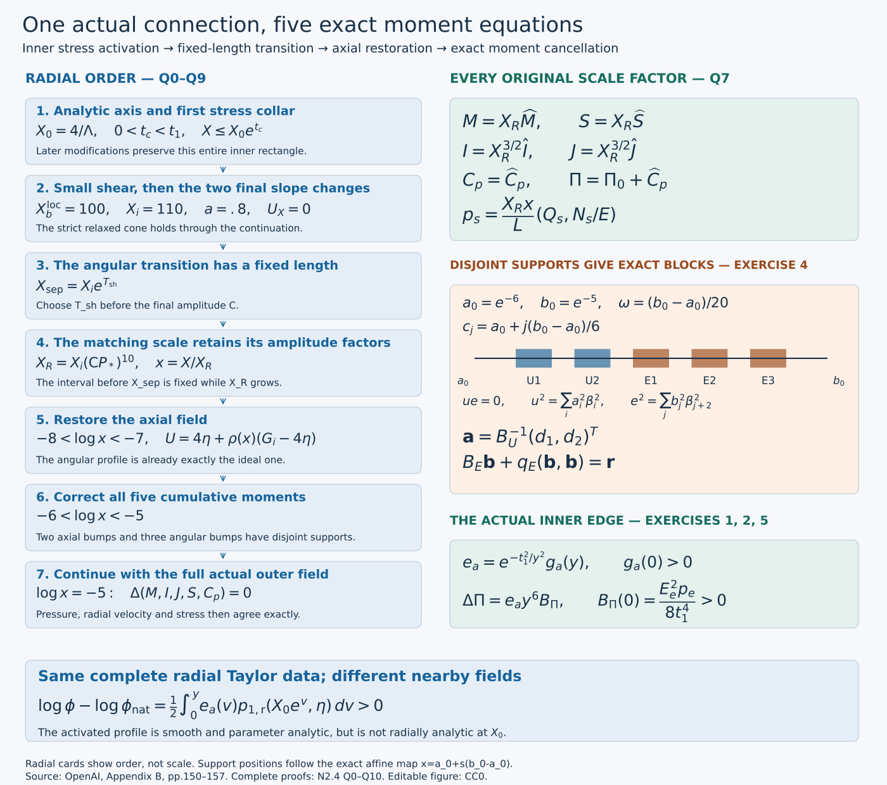
Figure. The radial positions show order rather than proportional distance. Every displayed radius, factor and endpoint is the one used below. The two bump families have disjoint supports; Exercise 4 proves the resulting exact separation of the axial equations. The lower panel gives the actual inner pressure difference from Exercise 2. The stress is zero to infinite order at its inner edge while having a nonzero limiting direction.
Why the transition length comes first
The proof has three linked tasks. First, a reference continuation gives uniform parameter bounds for an entire family of narrow transitions. These bounds let us reduce the shear without introducing an inverse power of the small shear factor into the cone estimate. The stress starts with the exact flat factor proved in Q3.
Second, the endpoint bound for \(\log(\mathsf C E)\) fixes a finite transition length before the final amplitude \(\mathsf C\). Increasing that amplitude then moves the matching scale \(X_R\) outward while keeping the earlier transition endpoint fixed. Q7 proves exactly how the five original moments transform; it does not assume their unscaled discrepancies all tend to zero.
Third, the fixed outer data determine the correction tolerance before \(X_R\) is selected. Five fixed bumps solve the actual moment equations inside that tolerance. The common pressure datum and exact moment identities then preserve the entire outer field, including its heat exterior.
Q0. Objects, norms and the reference continuation
The reference field is constructed by integrating prescribed slopes. Its cutoff is radial only, so parameter differentiation does not create inverse cutoff widths. We keep the natural axis solution and its pressure integral identifiable throughout.
Retain \(A=1/2+h\), \(D=1/2-h\), \(d=1-\eta^2\), \(L=1-2h\eta^2\), \(0<h<1/100\), and the parameter interval \(-1\le\eta\le1\). Thus \(1-2h\le L\le1\). The prescribed datum is the actual analytic \(\Pi_0\) of O4. Write the J solution as
\[ U_{\rm nat}=U_*+\Lambda^{-1}\mathfrak u(\Lambda X,\eta), \quad \phi_{\rm nat}=\phi_*\Phi(\Lambda X,\eta), \quad E_{\rm nat}=\frac{\sqrt{2X}}{\mathsf C}\phi_{\rm nat}, \quad \widetilde\zeta_0=\Lambda\zeta_*, \quad \zeta_*=-\frac{LH_*}{H_*^2+\sigma_*^2}. \tag{Q0.1} \]Here \(U_*=4\eta+j_0\), \(H_*=D\eta+dU_*\), and \(W_*,Z_*,\chi\) are exactly J0.1–J0.4. The original unaccented \(\zeta_*\) and accented \(\widetilde\zeta_0\) follow (B.3). For each fixed integer \(k\), \(\|\cdot\|_k\) is the maximum of parameter derivatives through order \(k\), uniformly on the indicated radial interval. A bound uniform in \(\mathsf C\) is asserted only for \(\mathsf C\ge\mathsf C_0(\Lambda)\). Constants allowed to depend on the already fixed \(\Lambda\) will be indicated by \(K_k(\Lambda)\); they do not depend on subsequent cutoff widths.
Use exactly
\[ X_0=4/\Lambda,\qquad X_b^{\rm loc}=100,\qquad X_i=110, \qquad y=\log(X/X_0),\qquad 4e^{2\bar t}<4.1. \tag{Q0.2} \]The superscript distinguishes this local radius 100, called \(X_b\) in Appendix B, from the exterior stress endpoint of Appendix A. No radius has been changed. Increase \(\Lambda\) if necessary so \(X_0<100\). Fix a positive \(\bar t\) satisfying Q0.2. With the original smooth step
\[ \sigma(s)=\frac{e^{-1/s^2}}{e^{-1/s^2}+e^{-1/(1-s)^2}}\quad(0<s<1), \qquad \sigma(s)=0\ (s\le0),\quad \sigma(s)=1\ (s\ge1), \tag{Q0.3} \]choose \(0<t_1\le\bar t\). Let \((U_{\rm r},\phi_{\rm r})\) equal the analytic solution for \(y\le t_1\); on \(t_1<y<2t_1\) define
\[ \partial_yU_{\rm r}=[1-\sigma((y-t_1)/t_1)]\mathcal D_XU_{\rm nat}, \qquad \partial_y\log\phi_{\rm r}=[1-\sigma((y-t_1)/t_1)]\mathcal D_X\log\phi_{\rm nat}. \tag{Q0.4} \]Integrate from \(y=t_1\), then keep both functions constant for \(y\ge2t_1\). Positivity of \(\phi_{\rm r}\) follows by exponentiation. Flatness of the step at its endpoints makes the fields smooth at both joins. Set \(E_{\rm r}=\sqrt{2X}\phi_{\rm r}/\mathsf C\). Define \(\Pi_{\rm r},Q_{s,\rm r},N_{s,\rm r}\) by the original forward pressure and stress integrals P1.3 and P2.1, with the same \(\Pi_0\).
The J estimates give, for every fixed \(k\),
\[ \|U_{\rm r}-U_*\|_k\le K_k/\Lambda,\quad \|\log\phi_{\rm r}-\log\phi_*\|_k\le K_k,\quad \|\Pi_{\rm r}-\Pi_0\|_k\le K_k(\Lambda)\mathsf C^{-2} \quad(0\le X\le X_i). \tag{Q0.5} \]For the first two bounds integrate Q0.4 over length at most \(\bar t\): the integrands and all parameter derivatives are bounded respectively by \(K_k/\Lambda\) and \(K_k\), since \(4\le\Lambda X\le4.1\) there. Before that interval J4.4 applies, and after it the fields are constant. The radial average is exactly \(\mathcal A_Xf=\int_0^1f(aX,\eta)\,da\), a contraction in every such norm, so the first bound holds also for \(\mathcal A_XU_{\rm r}-U_*\). Finally,
\[ \Pi_{\rm r}(X,\eta)-\Pi_0(\eta) =\mathsf C^{-2}\int_0^X\phi_{\rm r}(v,\eta)^2\,dv. \tag{Q0.6} \]The factor \(\sqrt{2X}\) in E is essential to this identity. Product differentiation and Q0.5 bound this integral through every fixed parameter order, including at zero. Exponentiation and reciprocal differentiation show that \(\mathsf C E_{\rm r}\) and \((\mathsf C E_{\rm r})^{-1}\) have bounded \(k\)-norms on \([X_0,X_i]\), with positive lower bounds there, uniformly in \(\mathsf C,t_1\). All these statements use parameter derivatives; high radial cutoff derivatives need not be bounded as \(t_1\) decreases.
Q1. The reference source and strict shear comparison
The reference continuation must retain a strict margin over the threshold two. The angular estimate covers one parameter region; the nonvanishing axial source covers the other. Both comparisons apply to the whole family before a final transition width is selected.
The weighted gradient bounds used in J5 remain valid through the cutoff. To check this directly, put \(q(Y,\eta)=\log\Phi(Y,\eta)\). Differentiating the center \(\log f_0(Y\chi)\) and using \(|H_*\chi'|\le2\|H_*'\|_\infty\chi\), together with J4.4 and positivity, gives
\[ |Yq_Y|+|H_*q_\eta|+|H_*\partial_\eta(Yq_Y)| \le K\chi+K/\Lambda,\qquad 0\le Y\le4.1. \tag{Q1.1} \]All denominators are bounded below by J4.5. In Q0.4 the cutoff has no parameter dependence. Integrating its parameter derivative, and using the last term of Q1.1 on the interval of length at most \(\bar t\), proves
\[ |\mathcal D_X\log\phi_{\rm r}| +|H_*\partial_\eta(\log\phi_{\rm r}-\log\phi_*)| \le K\chi+K/\Lambda. \tag{Q1.2} \]The unweighted derivative of \(\log\phi_{\rm r}-\log\phi_*\) is also bounded by Q0.5. Since \(H_{c,\rm r}-H_*=d(U_{\rm r}-U_*)\), Q0.5 and \(|\zeta_*|\le L\sigma_*^{-1}\sqrt\chi\) give
\[ -H_{c,\rm r}(\log\phi_{\rm r})_\eta \ge \Lambda L\chi-K\chi-K_{\sigma_*}\sqrt\chi-K/\Lambda. \tag{Q1.3} \]Furthermore \(W_{\rm r}-W_*=O(\Lambda^{-1})\), by the actual radial-average formula, and \(|U_{\rm r}|\le4.1\) for large \(\Lambda\). In the exact source
\[ S_{q,\rm r}=-W_{\rm r}l_{\rm r}-h(1-2\eta U_{\rm r}) -H_{c,\rm r}(\log\phi_{\rm r})_\eta,\qquad l_{\rm r}=1+\mathcal D_X\log\phi_{\rm r}, \]Q1.2 therefore bounds the change caused by \(l_{\rm r}-1\) by \(K\chi+K/\Lambda\). Hence
\[ S_{q,\rm r}\ge\Lambda L\chi-W_*-10h-K\chi-K_{\sigma_*}\sqrt\chi-K/\Lambda \ge .94\Lambda L\chi+2.4. \tag{Q1.4} \]For the last inequality choose \(\Lambda\) so \(K\chi\le.03\Lambda L\chi\), and use \(K_{\sigma_*}\sqrt\chi\le.03\Lambda L\chi+ K_{\sigma_*}^2/(.12\Lambda(1-2h))\). Then enlarge \(\Lambda\) so the remaining \(1/\Lambda\) terms are smaller than .3. The original bounds \(-W_*>2.8\) and \(10h\le.1\) supply the constant 2.4, with strict spare room by making the last error smaller. No division by \(\chi\) occurs. This estimate is uniform over a fixed small reference-width family.
On the natural interval, J5.7–J5.8 give \(\mathcal D_X\log\phi_{\rm nat}=-p_1/2<0\). Multiplication by the nonnegative cutoff and then setting the slope to zero proves \(l_{\rm r}\le1\).
For the axial source, retain every term of P1.1. Q0.5, \(\mathcal D_XU_{\rm r}=O(\Lambda^{-1})\), and Q0.6 yield
\[ \|S_{n,\rm r}-Z_*\|_k\le K_k/\Lambda+K_k(\Lambda)\mathsf C^{-2}. \tag{Q1.5} \]The two pressure derivatives are included: \(\Pi_{\rm r}-\Pi_0\) is Q0.6 and \(\mathcal D_X\Pi_{\rm r}=E_{\rm r}^2/2\). Choose \(\Lambda\), then \(\mathsf C\), so the right side for \(k=0\), after division by L, is below \(\delta_*/4\). On \(\chi\le.99\), \(|Z_*|>\delta_*\) by J0.4. The equation and its exact solution are
\[ \partial_y n_{s,\rm r}+n_{s,\rm r}=S_{n,\rm r}/L,\qquad n_{s,\rm r}(y)=e^{-y}n_{s,\rm r}(0)+ \int_0^y e^{-(y-v)}\,\frac{S_{n,\rm r}(v)}L\,dv. \tag{Q1.6} \]The analytic initial value differs from \(Z_*/L\) by \(O(\Lambda^{-1})\). Both terms in this convex average have the sign of \(Z_*\) and absolute value at least \(\delta_*/2\), after the same choice. Therefore \(|n_{s,\rm r}|\ge\delta_*/2\) on that parameter region throughout the continuation.
The positive stress integral gives \(p_{1,\rm r}>0\), and its equation is
\[ \partial_y p_{1,\rm r}=\frac{XS_{q,\rm r}}L-l_{\rm r}p_{1,\rm r}. \tag{Q1.7} \]Using \(l_{\rm r}\le1\), Q1.4 and \(X=X_0e^y\) in the integrating-factor inequality gives both exact lower comparisons
\[ \begin{split} p_{1,\rm r}(y)&\ge p_{1,\rm r}(0)e^{-y} +1.88\chi(e^y-e^{-y}),\\ p_{1,\rm r}(X)&\ge p_{1,\rm r}(X_0)\frac{X_0}X +1.2\left(X-\frac{X_0^2}X\right). \end{split} \tag{Q1.8} \]The coefficient 1.88 is \(.94\Lambda X_0/2\); the coefficient 1.2 uses \(L\le1\) and \(2.4/2\). On \(\chi>.99\), J6 gives \(p_{1,\rm r}(0)>2.3\). Replacing it by 2.3 in the first comparison gives \(1.88\chi e^y+(2.3-1.88\chi)e^{-y}\), whose derivative is positive for \(y\ge0\), because \(1.88\chi>2.3/2\). Thus \(p_{1,\rm r}>2.3\) there. The second comparison is greater than 3 for \(100\le X\le110\), since \(X_0\le4\) and \(1.2(100-16/100)>3\).
The reference pressure and field bounds, or their exact moment formulas, also give a finite upper bound \(M_0(\Lambda)\) for \(p_{1,\rm r}\), independently of subsequent \(\mathsf C,t_1\). Let \(E_{\max}(\Lambda)\) bound \(\mathsf C E_{\rm r}\). On \(\chi\le.99\),
\[ \frac{p_{2,\rm r}^2}{p_{1,\rm r}} =\frac{X^2 n_{s,\rm r}^2}{E_{\rm r}^2p_{1,\rm r}} \ge \frac{\mathsf C^2X_0^2\delta_*^2} {4E_{\max}(\Lambda)^2M_0(\Lambda)}. \tag{Q1.9} \]Increase \(\mathsf C\) so this is at least \(5/2\). On the other region \(p_{1,\rm r}>2.3\). Consequently
\[ v_{\rm r}:=p_{1,\rm r}+\frac{p_{2,\rm r}^2}{p_{1,\rm r}}>2+.2 \quad\hbox{on }[X_0,X_i]\times[-1,1]. \tag{Q1.10} \]Each fixed parameter derivative of \(p_{1,\rm r},n_{s,\rm r}\) is uniformly bounded: the moment formulas P2.5 use Q0.5–Q0.6, one additional parameter derivative, positive denominators and integrals on a fixed interval. For \(Q_{s,\rm r}\), its common amplitude factor cancels exactly between numerator and denominator. For \(N_{s,\rm r}\), Q1.5–Q1.6 apply. The lower comparison in Q1.8 is uniform and positive. Once a finite \(\mathsf C\) is fixed these bounds therefore give a finite \(V_{\max}\) bounding \(v_{\rm r}\) for every sufficiently small \(t_1\), before any one width is selected. This proves the full reference statement of Lemma B.4.
Q2. Activation and the stress cone without an inverse cutoff loss
The same positive factor multiplies both shear components. Cancel it in their ratio before estimating. This exact cancellation is why making the shear small does not make the cone errors large.
Fix a sufficiently large finite \(\mathsf C\) as above. All constants in this section may depend on it and on \(\Lambda\), but are uniform as \(t_1\) and \(0<\kappa_0<1/2\) decrease. On \(0<y<t_1\), prescribe
\[ e_a=(1-\kappa_0)\sigma(y/t_1),\quad \kappa=1-e_a,\quad a=\kappa p_{1,\rm r},\quad \mathcal D_XU=-\frac{\kappa Xn_{s,\rm r}}2,\quad \partial_y\log\phi=-\frac{\kappa p_{1,\rm r}}2. \tag{Q2.1} \]Integrate from the actual axis values at \(y=0\); leave the analytic solution unchanged for \(X\le X_0\). Define \(E=\sqrt{2X}\phi/\mathsf C\), and compute pressure and stresses by forward integration with the same \(\Pi_0\).
On this entire first interval the reference is the natural solution. Its zero leading stress gives the exact differences
\[ \partial_y(\log\phi-\log\phi_{\rm r})=\frac{e_ap_{1,\rm r}}2,\qquad \partial_y(U-U_{\rm r})=\frac{e_aXn_{s,\rm r}}2. \tag{Q2.2} \]The step is increasing, so \(\int_0^ye_a(v)\,dv\le ye_a(y)\). Parameter differentiation commutes with these integrals and never differentiates the cutoff. Thus the field differences and \(\log\phi-\log\phi_{\rm r}\) are \(O_k(ye_a)\). Exponentiating gives \(E_{\rm r}/E=1+O_k(ye_a)\). On this compact annulus the moment integrands are smooth functions of the fields; their differences vanish before \(X_0\). Their integrals obey the same bound, also with one additional parameter derivative. P3.3–P3.6 consequently prove
\[ p_s-p_{s,\rm r}=O_k(ye_a),\qquad E_{\rm r}/E=1+O_k(ye_a). \tag{Q2.3} \]These are estimates on values and parameter derivatives, not bounds on radial cutoff derivatives.
Since \(p_{2,\rm r}=Xn_{s,\rm r}/E_{\rm r}\), the actual shear is exactly \(\mathfrak s=\kappa(p_{1,\rm r},p_{2,\rm r}E_{\rm r}/E)\). Divide its two components before estimating: because \(\kappa>0\),
\[ t_s=-b_s/a=\frac{p_{2,\rm r}}{p_{1,\rm r}}\frac{E_{\rm r}}E,\quad v_s=\kappa v_{\rm r}+O(ye_a),\quad P_c=v_{\rm r}+O(ye_a),\quad J_c=O(ye_a). \tag{Q2.4} \]The bounded reciprocal of \(p_{1,\rm r}\) follows from Q1.8. Every error constant is independent of \(\kappa_0^{-1}\): the common \(\kappa\) cancels exactly in \(t_s\), while \(0<\kappa\le1\) multiplies the remaining error in \(v_s\).
Choose one constant \(K\) bounding the four errors, and use \(v_{\rm r}>2+.2\), \(v_{\rm r}\le V_{\max}\). Taking \(t_1\) small enough yields positive constants \(c_1,c_2\), independent of its final smaller value, with
\[ P_c-v_s\ge c_1e_a,\quad P_c>2+c_2,\quad \frac{(v_s-2)_+J_c^2}{(P_c-v_s)^2} \le\frac{(V_{\max}+1)K^2}{c_1^2}y^2<2. \tag{Q2.5} \]For example require the error in the first difference to be at most \(e_a\), the error in \(P_c\) to be at most .1, and the final displayed upper bound to be less than 2. These are finitely many width bounds on already fixed constants. P6.1–P6.2 prove the admissible cone where \(v_s>2\); where \(v_s\le2\), the fact that \(\mathcal U(P_c,J_c)>2\) proves the strict relaxed condition. Continuity from \(v_s(0,\eta)=v_{\rm r}(0,\eta)>2+.2\), uniformly on the compact parameter interval, supplies a positive first collar with \(v_s>2+.1\).
Q3. Flat stress factor and limiting direction at the inner edge
A stress that vanishes at an endpoint can still have a definite smooth direction there. We prove this by dividing by its actual flat scalar factor, computing the resulting smooth vector, and proving that vector is nonzero.
For \(y\ge0\) near zero write, exactly,
\[ e_a(y)=e^{-t_1^2/y^2}g_a(y),\qquad g_a(y)=\frac{1-\kappa_0} {e^{-t_1^2/y^2}+e^{-1/(1-y/t_1)^2}},\qquad g_a(0)=(1-\kappa_0)e>0. \tag{Q3.1} \]The exponential extends smoothly by zero at zero, so \(g_a\) is smooth and positive on a closed small collar. For a nonnegative integer \(m\) and a smooth \(b\), the substitution in H6.1–H6.2, now with \(c=t_1^2\), gives the full formula
\[ \begin{split} \frac1{e_a(y)}\int_0^y e_a(v)v^m b(v,\eta)\,dv ={}&\frac{y^{m+3}}{2g_a(y)} \int_0^\infty e^{-t_1^2w}(1+y^2w)^{-(m+3)/2}\\ &\qquad\cdot g_a\!\left(\frac{y}{\sqrt{1+y^2w}}\right) b\!\left(\frac{y}{\sqrt{1+y^2w}},\eta\right)\,dw . \end{split} \tag{Q3.2} \]Every fixed mixed derivative of the integral is dominated by \(e^{-t_1^2w}\) times a polynomial in \(w\); the chosen \(t_1>0\) is fixed here. Hence the right side is \(y^{m+3}\) times a smooth function through zero. This retains the integration factor \(1/2\), rather than only recording a vanishing order.
Apply \(m=0\) to Q2.2. Field and logarithmic differences belong to \(e_ay^3C^\infty\). Products and smooth compositions preserve this class: write, for instance, \(\exp(e_ay^3b)-1=e_ay^3b\int_0^1\exp(se_ay^3b)\,ds\). Reciprocals are handled by \((f+g)^{-1}-f^{-1}=-g/[f(f+g)]\), where the fields have nonzero denominators. Each moment and pressure difference is one further forward integral of such a difference, with smooth radial weights \(dX=X_0e^y\,dy\) and \(1/X\) on this collar. Applying Q3.2 with \(m=3\) gives \(e_ay^6C^\infty\).
Substituting these exact classes in P3.4 gives \(p_s-p_{s,\rm r}\in e_ay^3C^\infty\). The shear formula in Q2.4 then proves
\[ \mathcal T_0=F(p_s-\mathfrak s)=e_a B_0(y,\eta),\qquad B_0\in C^\infty,\qquad B_0(0,\eta)=F(X_0,\eta)p_{s,\rm r}(X_0,\eta)\ne0. \tag{Q3.3} \]Here \(F=\phi/\mathsf C\) is positive, \(p_{1,\rm r}>0\), and no division by a vanishing field was used. At the endpoint \(t_s=p_{2,\rm r}/p_{1,\rm r}\), so exactly
\[ B_0\cdot(-t_s,1)=0,\qquad B_0\cdot(1,t_s)=F(X_0,\eta)v_{\rm r}(X_0,\eta)>0. \tag{Q3.4} \]It follows that \(2[B_0\cdot(1,t_s)]^2-(v_s-2)[B_0\cdot(-t_s,1)]^2\) has a positive minimum at the endpoint. Smoothness and compactness preserve that minimum, and \(|B_0|>0\), on a smaller collar. Thus \(B_0/|B_0|\) is the smooth limiting unit stress direction.
Differentiating Q3.1 any fixed number of times introduces only finitely many inverse powers of \(y\). Since \(X_0>0\), \(\partial_X=X^{-1}\partial_y\) has smooth bounded coefficients here. For every fixed radial/parameter multi-index \(I\),
\[ |\mathcal T_0|\ge c e^{-t_1^2/y^2},\qquad |\partial^I\mathcal T_0|\le C_Ie^{-t_1^2/y^2}y^{-N_I}. \tag{Q3.5} \]The upper bounds tend to zero to every order. The stress therefore extends smoothly by zero to \(X\le X_0\), while its direction extends by Q3.4. This proves the full inner endpoint assertions (B.30)–(B.31).
Q4. Continuation with small shear to the radius 110
The explicit integrated prescriptions continue the field. The small parameters are chosen in order from bounds already available for the reference family. A first-crossing argument then preserves the angular margin on the final constant-slope interval.
After \(y=t_1\), keep Q2.1 with \(\kappa=\kappa_0\) up to \(X=100\). These are explicit integrals of the already constructed reference coefficients, so they define smooth \(U,\log\phi\) and positive E. On the reference cutoff, the reference logarithmic slopes are bounded independently of its width; their integrals over length \(t_1\) are \(O_k(t_1)\). After that cutoff both reference fields are constant. Integrating the actual slopes over the fixed remaining interval gives \(O_k(\kappa_0)\). Together with Q2.2 this proves
\[ \|U-U_{\rm r}\|_k+\|\log\phi-\log\phi_{\rm r}\|_k +\|p_s-p_{s,\rm r}\|_k \le K_k(\mathsf C,\Lambda)(t_1+\kappa_0) \quad(X_0\le X\le100). \tag{Q4.1} \]For the last term use the exact five moment differences and P3.4 with one extra parameter derivative. Positivity and a lower bound for E follow first from the bound on the logarithm. No radial derivative of a narrow cutoff is used in this comparison.
The same common-\(\kappa\) cancellation as in Q2.4 gives
\[ P_c=v_{\rm r}+O(t_1+\kappa_0),\qquad v_s=\kappa_0v_{\rm r}+O(t_1+\kappa_0) \quad(t_1\le y\le\log(100/X_0)). \tag{Q4.2} \]Choose \(\kappa_0\) so \(\kappa_0V_{\max}<1/4\), \(\kappa_0\sup p_{1,\rm r}<.8\), and all the errors contributed by \(\kappa_0\) in Q4.2 are below \(\min(.05,1/8)\). Then choose \(t_1>0\) so its errors satisfy the same bounds as well as Q2.5. This gives \(P_c>2+.1\) and \(v_s<1\) after the first activation interval. Since \(\mathcal U(P_c,J_c)>2\), the strict relaxed condition holds irrespective of the size of \(J_c\). The entire reference family, rather than a previously selected member, supplied the constants, so there is no circular dependence on the choice of \(t_1\).
At \(X=100\) multiply the axial prescription by a smooth \(\beta\) decreasing from 1 to 0 on a short logarithmic interval; keep \(a=\kappa_0p_{1,\rm r}\) there. The reference coefficients have been defined up to 110. For final transition lengths with sum \(\omega_{\rm fin}\), integration gives the same comparisons as Q4.1, with an additional \(K_k\omega_{\rm fin}\). On the axial cutoff,
\[ t_s=\beta\frac{p_{2,\rm r}}{p_{1,\rm r}}\frac{E_{\rm r}}E,\qquad P_c=p_{1,\rm r}+\beta\frac{p_{2,\rm r}^2}{p_{1,\rm r}} +O(t_1+\kappa_0+\omega_{\rm fin}). \tag{Q4.3} \]Since \(p_{1,\rm r}>3\), \(0\le\beta\le1\), and \(\kappa_0V_{\max}<1/4\), decreasing the chosen parameters makes \(P_c>2\) and \(v_s<1\) on this cutoff. At its end \(\mathcal D_XU=0\). On the next short interval interpolate \(a\) from \(\kappa_0p_{1,\rm r}\) to .8 by \(a=(1-\theta)\kappa_0p_{1,\rm r}+.8\theta\), where \(\theta\) is a flat-ended smooth step. Keep \(\mathcal D_XU=0\). Then \(0<a\le.8\), \(b_s=0\), \(v_s=a<1\). P3.4 and the short-interval comparison with the value at 100 give \(P_c=p_1>2\) throughout. Both transitions fit strictly before 110 by requiring \(\omega_{\rm fin}<\log(110/100)\).
After the second transition keep \(a=.8\), \(l=.6\), and \(U\) constant in X. The parameter derivative of \(\log\phi\) is then constant in X. At its start it equals
\[ (\log\phi)_\eta=\Lambda\zeta_*+ (\log\Phi(4,\eta))_\eta+r_\eta(\eta),\qquad \|r_\eta\|_k\le K_k(\Lambda)(t_1+\kappa_0+\omega_{\rm fin}). \tag{Q4.4} \]To prove the stated independence from \(\mathsf C\), differentiate the integrated slopes in Q2.1 and the two final cutoffs. The only varying parameter coefficients are derivatives of \(p_{1,\rm r}\), whose bounds in Q1 are uniform in \(\mathsf C\). The constant .8 has zero parameter derivative. For U the corresponding coefficients are \(n_{s,\rm r}\), also uniformly bounded. Thus \(U-U_*=O_k(\Lambda^{-1})+O_k(\Lambda)(t_1+\kappa_0+\omega_{\rm fin})\) throughout the construction, including its radial average.
As in Q1.3, after increasing \(\Lambda\) as an axis parameter and then decreasing the final widths, the gradient term is bounded below by
\[ -H_c(\log\phi)_\eta \ge\Lambda L\chi-K\chi-K_{\sigma_*}\sqrt\chi-K/\Lambda -K(\Lambda)(t_1+\kappa_0+\omega_{\rm fin})\ge-.1. \tag{Q4.5} \]The fixed-\(\Lambda\) coefficient of the last error includes multiplication by \(\Lambda\zeta_*\); it is finite and is made small by the later choices. One can simultaneously ensure \(-W\ge2.75\) and \(|U|\le4.1\). The original source then satisfies
\[ S_q=-.6W-h(1-2\eta U)-H_c(\log\phi)_\eta \ge .6(2.75)-.1-.1>1. \tag{Q4.6} \]Starting from \(p_1>2\), a first downward crossing of 2 on this interval would have \(\partial_y p_1=XS_q/L-.6p_1>X-1.2>0\). At a first crossing from above its left derivative must be nonpositive, a contradiction. Consequently \(p_1>2\) through \(X_i=110\). This completes the actual continuation of Proposition B.5, including positivity, the inner admissible collar, the later strict relaxed cone and the specified final slopes.
Q5. One analytic collar and amplitude-independent endpoint bounds
The inner parameter-analytic rectangle is protected by the direction of the radial integrals. Separately, bounds for the endpoint values use integrated cutoff values, so the transition length can be selected before the amplitude.
Choose \(0<t_c<t_1\) inside the admissible collar of Q2–Q3, with \(4e^{t_c}<4.1\). The J solution has a joint complex neighborhood of its compact radial/parameter rectangle; shrink the parameter neighborhood once so that \(\Phi\) has no zeros and L has no zeros. In the first collar the reference is the natural solution. Its \(p_{1,\rm r},n_{s,\rm r}\) and all their radial derivatives are holomorphic in that same smaller parameter neighborhood, using either J5.7 or the original forward integrals. Q2.1 then integrates holomorphic coefficients multiplied by radial-only cutoffs. Its exponential for \(\phi\) is nonzero. Differentiating these formulas radially changes cutoff derivatives but neither introduces a new parameter singularity nor changes the parameter domain.
The exact expressions
\[ \frac E{\sqrt{2X}}=\frac{\phi}{\mathsf C},\qquad \frac{V_0}X=\frac{2\eta U-2D\eta\mathcal A_XU-d\partial_\eta\mathcal A_XU}{L}, \qquad \Pi=\Pi_0+\mathsf C^{-2}\int_0^X\phi(v,\eta)^2\,dv \tag{Q5.1} \]are therefore smooth in \((X,\eta)\) through \(X=0\) and holomorphic in \(\eta\) on a common neighborhood for \(0\le X\le X_0e^{t_c}\). Each fixed radial derivative has finite bounds on a smaller common neighborhood. Subsequent modifications will lie strictly to its right. Since all the integrals in Q5.1 are forward integrals, later modifications leave this rectangle unchanged. The size of \(t_c\) and the radial derivative bounds need not be uniform as the final amplitude grows or the transition widths decrease. This proves precisely Corollary B.6.
For the endpoint quantities
\[ \ell_i(\eta)=\log(\mathsf C E(X_i,\eta)),\qquad G_i(\eta)=U(X_i,\eta),\qquad L_0=\log(X_i/X_0), \tag{Q5.2} \]let \(M_k,N_k\) be the uniform bounds for \(p_{1,\rm r},n_{s,\rm r}\) from Q1. Before the final interpolation, \(a=\kappa p_{1,\rm r}\); during it a is a convex combination of \(\kappa_0p_{1,\rm r}\) and .8; afterwards it is .8. Thus \(\|a\|_k\le M_k+.8\). Integrating \(\partial_y\log\phi=-a/2\) gives the explicit finite bound
\[ \|\ell_i\|_k\le \tfrac12|\log(2X_i)|+ \sup_{\mathsf C\ge\mathsf C_0(\Lambda)} \|\log\phi_*+\log\Phi(4,\cdot)\|_k +\tfrac12(M_k+.8)L_0=:\mathcal B_k. \tag{Q5.3} \]The supremum is finite by J4.4 and positivity. It depends on \(\Lambda\) and the prior axis data, but not on subsequent \(\mathsf C\) or smaller widths.
For U, the first activation contributes at most \(X_0e^{\bar t}N_kt_1/2\) to its endpoint \(k\)-norm. On the remainder, including its final cutoff, the integrand has magnitude at most \(\kappa_0X|n_{s,\rm r}|/2\); using \(dX=X\,dy\) bounds its integral by \(\kappa_0X_iN_k/2\). It is zero after the axial cutoff. Therefore
\[ \|G_i-U_*\|_k \le\frac{C_k^{\rm nat}}{\Lambda} +\frac{N_k}{2}(X_0e^{\bar t}t_1+X_i\kappa_0) \le\frac{C_k^{\rm nat}}{\Lambda} +C_k^{\rm join}(\Lambda)(t_1+\kappa_0+\omega_{\rm fin}). \tag{Q5.4} \]The natural constant is independent of large \(\Lambda,\mathsf C\) by J4.4, after the axis shape data have been fixed. The joining constant is independent of subsequent \(\mathsf C\) and widths. No inverse cutoff width occurs because only integrated cutoff values, not radial derivatives, were used. This proves Lemma B.7 with its full stated uniformity.
Q6. Transition length chosen before the amplitude
The interpolation changes the logarithm of the angular field. Its two endpoint parameter gradients have a common lower bound, and its radial slope remains in a fixed interval. The original source equation therefore keeps the required sign throughout the transition.
Keep \(f(\eta)=(1+\eta^2)^{-1}\). Choose a positive finite \(T_{\rm sh}\) satisfying
\[ T_{\rm sh}\ge20\|\sigma'\|_\infty (\mathcal B_0+\|\log f\|_\infty). \tag{Q6.1} \]The right side is already fixed before the final amplitude. For \(y_i=\log(X/X_i)\ge0\), prescribe
\[ \log E=-\log\mathsf C+\frac{y_i}{10} +[1-\sigma(y_i/T_{\rm sh})]\ell_i +\sigma(y_i/T_{\rm sh})\log f,\qquad U=G_i. \tag{Q6.2} \]At \(X_i\) this matches the existing constant slopes to every radial order; the step is flat at zero. E is positive by construction. Its exact slope is
\[ l=\frac35+\frac{\sigma'(y_i/T_{\rm sh})}{T_{\rm sh}} (\log f-\ell_i)\in[.55,.65], \quad a=2-2l\in[.7,.9],\quad b_s=0. \tag{Q6.3} \]Q5.3 supplies the stated interval without any growth of \(T_{\rm sh}\) with \(\mathsf C\).
The angular source remains positive on this potentially long interval. Q4.4 and J5.2 imply
\[ -H_c\ell_i'\ge\Lambda L\chi-K\chi-K_{\sigma_*}\sqrt\chi -K/\Lambda-o(1), \tag{Q6.4} \]where \(o(1)\) is bounded by a fixed-\(\Lambda\) constant times \(t_1+\kappa_0+\omega_{\rm fin}\). The full radial history of U stays close to \(U_*\), so this also bounds \(W-W_*\) through its actual radial average. The other endpoint gradient has the exact expression
\[ -H_c(\log f)'=\frac{2\eta H_c}{1+\eta^2} \ge-\frac{j_0^2}{2D}-\|G_i-U_*\|_0. \tag{Q6.5} \]Indeed \(\eta H_*=(D+4d)\eta^2+dj_0\eta \ge D\eta^2-j_0|\eta|\ge-j_0^2/(4D)\), and \(2|\eta|d/(1+\eta^2)\le1\). This verifies the bound at both parameter endpoints as well as near the zero of \(H_*\).
Young's inequality as in Q1 makes the right side of Q6.4 at least \(-.1\) for large \(\Lambda\) and the later small widths. Q6.5 is at least \(-.1\) for \(j_0\le.05\), large \(\Lambda\) and the same sufficiently small widths. Since the cutoff in Q6.2 is independent of \(\eta\), its parameter gradient is the convex combination of these two gradients. Also \(-W\ge2.75\) and \(|U|\le4.1\) persist. Hence the exact source satisfies
\[ S_q=-Wl-h(1-2\eta U)-H_c(\log E)_\eta \ge2.75(.55)-.1-.1>1. \tag{Q6.6} \]At a putative first downward crossing \(p_1=2\), the original equation gives \(\partial_{y_i}p_1=XS_q/L-lp_1>X-1.3>0\), impossible for \(X\ge110\). Thus \(p_1>2\), \(v_s=a\le.9<2\), and \(P_c=p_1>2\): the strict relaxed cone persists.
At \(X_{\rm sep}=X_ie^{T_{\rm sh}}\) the field becomes exactly
\[ E=\mathsf C^{-1}f(X/X_i)^{1/10} =P_*f(X/X_R)^{1/10},\qquad X_R=X_i(\mathsf C P_*)^{10},\qquad U=G_i. \tag{Q6.7} \]The equality retains the amplitude and every power. The step is flat at its upper endpoint, so the match is smooth. Before axial restoration the same source bound and crossing argument continue to apply to this constant-slope interval. The endpoint \(X_{\rm sep}\) is fixed before \(\mathsf C\), whereas \(X_R\) grows with it; this is the scale separation required for the moment estimates below.
Q7. All five moment errors with their original scale factors
The original moments have different powers of the radial scale. We display the invertible comparison map and carry each factor through the stress formulas. The short inner segment then has explicit small contributions in the units needed for the correction solve.
Introduce \(x=X/X_R\) only with the exact comparison
\[ \begin{gathered} M=X_R\widehat M,\quad I=X_R^{3/2}\widehat I,\quad J=X_R^{3/2}\widehat J,\quad S=X_R\widehat S,\quad C_p=\widehat C_p,\\ \widehat H(x,\eta)=\sqrt{2x}\,E(X_Rx,\eta),\qquad H(X_Rx,\eta)=\sqrt{X_R}\widehat H(x,\eta),\\ \widehat C_p(x,\eta)=\int_0^x\frac{E(X_Rv,\eta)^2}{2v}\,dv,\qquad \Pi(X_Rx,\eta)=\Pi_0(\eta)+\widehat C_p(x,\eta). \end{gathered} \tag{Q7.1} \]The other hatted moments are the integrals in \(dv\) of \(U,\widehat H,U\widehat H,U^2-E^2/2\), evaluated at \(X_Rv\). Changing variables in the original moments proves every factor in Q7.1. Substitution in P2.5 gives the exact original functions at \(X_Rx\):
\[ \begin{split} W&=1-\frac{2D\eta\widehat M+d\widehat M_\eta}{x},\\ Q_s&=-W+ \frac{(1-h)\widehat I-D\eta\widehat I_\eta-d\widehat J_\eta +2(h-D)\eta\widehat J}{x\widehat H},\\ N_s&=-WU+ \frac{D(\widehat M-\eta\widehat M_\eta)+4h\eta\widehat S-d\widehat S_\eta}{x} +4A\eta\Pi-d\Pi_\eta. \end{split} \tag{Q7.2} \]These formulas remove \(X_R\) from the coefficient map, but not from the physical moments or from \(p_s=(X_Rx/L)(Q_s,N_s/E)\). Those factors remain in use.
The short inner portion ends at
\[ x_{\rm sep}=\frac{X_{\rm sep}}{X_R} =\frac{e^{T_{\rm sh}}}{(\mathsf C P_*)^{10}}. \tag{Q7.3} \]Q0, Q5 and Q6 bound U and \(\mathsf C E\) on \(0\le X\le X_{\rm sep}\) in each fixed parameter norm, independently of later large \(\mathsf C\) and the allowed smaller widths. Near zero \(\mathsf C E=\sqrt{2X}\phi_{\rm nat}\). Therefore at \(x=x_{\rm sep}\),
\[ \|\widehat M\|_k+\|\widehat S\|_k\le K_k(\Lambda)x_{\rm sep},\qquad \|\widehat I\|_k+\|\widehat J\|_k \le K_k(\Lambda)\mathsf C^{-1}x_{\rm sep}^{3/2},\qquad \|\widehat C_p\|_k\le K_k(\Lambda)\mathsf C^{-2}. \tag{Q7.4} \]For the first bounds use the bounded U and \(E=O(\mathsf C^{-1})\) in the exact integrands. For I and J integrate the retained factor \(\sqrt{2x}\) against this E bound. For pressure, change back to X: on \([0,X_0]\) its integrand is \(\mathsf C^{-2}\phi_{\rm nat}^2\); on \([X_0,X_{\rm sep}]\) it is bounded by \(K_k(\Lambda)\mathsf C^{-2}/X\), whose integral is finite because \(X_0>0\) and \(X_{\rm sep}\) is fixed. Product differentiation supplies the same estimates through every chosen finite order. No singular \(1/x\) majorant was integrated to zero.
The ideal inner part of the actual outer family has \(U_0=4\eta\), \(E_0=P_*fx^{1/10}\). Its exact moments are
\[ \begin{split} \widehat M_0&=4\eta x,& \widehat I_0&=\frac{5\sqrt2}{8}P_*fx^{8/5},& \widehat J_0&=4\eta\widehat I_0,\\ \widehat S_0&=16\eta^2x-\frac5{12}P_*^2f^2x^{6/5},& \widehat C_{p,0}&=\frac52P_*^2f^2x^{1/5}. \end{split} \tag{Q7.5} \]In particular, at the endpoint, \(\widehat C_{p,0}(x_{\rm sep})=(5/2)f^2e^{T_{\rm sh}/5}\mathsf C^{-2}\). Every term of Q7.5, with every fixed parameter derivative, tends to zero there as \(\mathsf C\) grows. Q7.4–Q7.5 consequently make the actual differences of all five hatted moments as small as any preassigned positive tolerance, uniformly over the later width choices. Through Q7.1 this is a proved statement about the original moments, not their replacement by different objects.
After \(x_{\rm sep}\), E is exactly \(E_0\). Put \(g(\eta)=G_i-4\eta\). Choose \(\mathsf C\) so \(x_{\rm sep}<e^{-8}\), and on \(-8<\log x<-7\) restore the axial field by
\[ U=4\eta+\rho(x)g,\qquad \rho(x)=1-\sigma(\log x+8). \tag{Q7.6} \]Take \(\rho=1\) before that interval and \(\rho=0\) after it. The error integrands after \(x_{\rm sep}\), before any angular bumps, are exactly
\[ \Delta U=\rho g,\quad \Delta\widehat H=0,\quad \Delta(U\widehat H)=\sqrt2P_*fx^{3/5}\rho g,\quad \Delta(U^2-E^2/2)=8\eta\rho g+\rho^2g^2,\quad \Delta(E^2/(2x))=0. \tag{Q7.7} \]Their weights \(1,x^{3/5}\) are integrable at zero. Integrating to \(e^{-5}\), and differentiating in \(\eta\), bounds the five moment discrepancies by
\[ K_k^{\rm out}\|g\|_{k+1}+o_{\mathsf C}(1) \tag{Q7.8} \]provided \(\|g\|_{k+1}\le1\); the extra derivative is retained for Q7.2. Here \(K_k^{\rm out}\) depends only on the fixed outer data and the fixed restoration cutoff. The error \(o_{\mathsf C}(1)\) is the sum of the explicit bounds in Q7.4–Q7.5, with fixed axis data. On \([e^{-8},e^{-5}]\), the same bound controls the fields, their logarithmic radial derivatives and the input moment histories. This follows by differentiating the fixed \(\rho\) in Q7.6; its derivative norms do not involve the small activation widths.
Q8. A fixed cone tolerance and the exact five-bump solution
The correction is a finite nonlinear construction on a fixed radial patch. Its tolerance is selected using the outer field. The cone calculation retains the factor \(X_R\), while the exact row map proves that the solved equations cancel the original moments.
Let \(\mathcal R=[e^{-8},e^{-5}]\times[-1,1]\). The ideal functions \(E_0>0\) and \(Q_{s,0}>1\) have positive minima there by O5.2; \(N_{s,0}\) is bounded by Q7.2 with Q7.5 and the fixed \(\Pi_0\). Define the actual finite constants
\[ Q_{\min}=\min_{\mathcal R}Q_{s,0}>0,\qquad e_*=\min_{\mathcal R}E_0>0,\qquad w_*=1+\max_{\mathcal R}\left|\frac{N_{s,0}}{E_0Q_{s,0}}\right|. \tag{Q8.1} \]The reference shear is \(a=.8,b_s=0\). Apply the explicit difference and reciprocal formulas P3.3–P3.5 to Q7.2 on the fixed rectangle. They give finite Lipschitz constants for \(Q_s,N_s\) in a prescribed \(C_\eta^k\) norm, using one additional parameter derivative of the field and moment inputs. The same product and reciprocal formulas applied to \(a=1-2xE_x/E\), \(b_s=2xU_x/E\) control the shears from the fields and their first logarithmic radial derivatives. A sufficiently small positive input tolerance, depending only on these fixed outer data, therefore ensures
\[ Q_s\ge Q_{\min}/2,\quad E\ge e_*/2,\quad |a-.8|\le.1,\quad \left|\frac{N_s}{EQ_s}\right|\le w_*, \qquad |b_s|\le\frac{.1}{1+w_*}. \tag{Q8.2} \]The last bound retains the original decimal .1 in (B.36), page 156; this factor gives the quantitative cone margin in the next calculation.
The original cone coordinates then obey
\[ \begin{split} v_s=a+\frac{b_s^2}{a}&\le.9+\frac{.01}{.7}<1,\\ G:=Q_s-\frac{b_sN_s}{aE} &\ge\left(1-\frac{.1w_*}{.7(1+w_*)}\right)Q_s \ge\frac67Q_s\ge\frac{3Q_{\min}}7,\\ P_c&=\frac{X_Rx}{L}G. \end{split} \tag{Q8.3} \]Thus \(X_R>14e^8/(3Q_{\min})\) makes \(P_c>2\) throughout \(\mathcal R\), since \(L\le1\). This proves the strict relaxed cone without making the tolerance shrink with \(X_R\).
For an actual moment correction, set \(a_0=e^{-6}\), \(b_0=e^{-5}\), \(c_j=a_0+j(b_0-a_0)/6\) for \(j=1,\ldots,5\), and \(\omega=(b_0-a_0)/20\). Use the explicit fixed positive bumps
\[ \beta_j(x)= \begin{cases} \exp[-1/(1-((x-c_j)/\omega)^2)],&|x-c_j|<\omega,\\ 0,&|x-c_j|\ge\omega. \end{cases} \tag{Q8.4} \]Their supports are ordered, disjoint and strictly inside \((e^{-6},e^{-5})\). Put \(u=c_1^{\,\rm amp}(\eta)\beta_1+c_2^{\,\rm amp}(\eta)\beta_2\) and \(e=\sum_{j=3}^5c_j^{\,\rm amp}(\eta)\beta_j\). Here the superscript distinguishes the five coefficient functions from the fixed centers. The unperturbed fields on this patch already equal \(U_0=4\eta,E_0=P_*fx^{1/10}\). Replace them by \(U_0+u,E_0+e\).
The increments of the original five moments, over this whole patch, are exactly
\[ \begin{split} \delta M&=X_R\int u\,dx,& \delta I&=\sqrt2X_R^{3/2}\int\sqrt x\,e\,dx,\\ \delta J&=\sqrt2X_R^{3/2}\int\sqrt x\,(4\eta e+E_0u+ue)\,dx,\\ \delta S&=X_R\int(8\eta u+u^2-E_0e-e^2/2)\,dx,& \delta C_p&=\int(E_0e/x+e^2/(2x))\,dx. \end{split} \tag{Q8.5} \]Let \(\Delta\mathbf m\) denote the original moment discrepancy accumulated before these bumps. Apply the exact invertible row map
\[ \mathscr L_\eta(\delta\mathbf m)= \left( \frac{\delta M}{X_R}, \frac{\delta J-4\eta\delta I}{\sqrt2X_R^{3/2}P_*f}, \frac{\delta I}{\sqrt2X_R^{3/2}}, -\frac{\delta S-8\eta\delta M}{X_RP_*f}, \frac{\delta C_p}{P_*f} \right). \tag{Q8.6} \]Its inverse is P5.3 with \(\rho=X_R,u_c=4\eta,e_*=P_*,f_*=f\). Thus solving for target \(d_{\rm tar}=-\mathscr L_\eta(\Delta\mathbf m)\) is exactly equivalent to cancelling all original moments.
The transformed linear coefficient matrix has the two actual blocks
\[ B_U= \begin{pmatrix}\int\beta_1&\int\beta_2\\ \int x^{3/5}\beta_1&\int x^{3/5}\beta_2\end{pmatrix}, \qquad (B_E)_{ij}=\int x^{\alpha_i}\beta_{j+2}(x)\,dx, \quad(\alpha_1,\alpha_2,\alpha_3)=(1/2,1/10,-9/10). \tag{Q8.7} \]P4 proves invertibility for these ordered nonnegative bumps and distinct powers. The factors \(P_*f\) in Q8.6 are positive and their parameter derivatives and inverses are bounded by the outer data. The exact nonlinear part, with no dropped term, is
\[ \mathscr Q_\eta(c,c)= \left(0,\frac{\int\sqrt x\,ue\,dx}{P_*f},0, \frac{-\int u^2\,dx+\frac12\int e^2\,dx}{P_*f}, \frac{\int e^2/(2x)\,dx}{P_*f}\right). \tag{Q8.8} \]For \(m=k+1\), let \(\nu_m\) be the operator norm of \(B^{-1}\) and \(q_m\) the bilinear norm of this quadratic map in \(C_\eta^m\), including the finite product-rule factors. Both are finite and independent of \(X_R,\mathsf C\). For
\[ 8\nu_m^2q_m\|d_{\rm tar}\|_m\le1, \qquad c_{n+1}=B^{-1}\bigl(d_{\rm tar}-\mathscr Q_\eta(c_n,c_n)\bigr),\quad c_0=0, \tag{Q8.9} \]the estimates P5.6–P5.7 show that the iteration stays in the radius \(2\nu_m\|d_{\rm tar}\|_m\) ball and contracts by at most \(1/2\). It therefore converges to an actual solution of all five equations, with that norm bound. P5.8 supplies an invertible derivative in c and proves that this solution is smooth in \(\eta\), with finite derivatives of every fixed higher order. Only the selected finite norm must be small.
The same coefficient bound controls u, e, their first logarithmic radial derivatives and their partial moment integrals throughout the patch: each is a fixed finite sum or integral of the fixed bumps, with finite coefficient norms. Let \(K_{\rm patch}\) be the maximum of these finitely many operator bounds and their product-rule constants on the chosen small coefficient ball. Shrink the fixed discrepancy tolerance so that \(2K_{\rm patch}\nu_m\|d_{\rm tar}\|_m\) is below half the input tolerance of Q8.2, and so that Q8.9 holds. Require the preexisting error in Q7.8 to be below the other half. Both requirements involve only fixed outer-data constants. They guarantee Q8.2 throughout the restoration and every partial moment correction, not merely at its final endpoint.
At the right endpoint the five moment differences vanish identically as functions of \(\eta\). The bumps have compact interior supports, so the fields already agree with the ideal fields on a neighborhood of that endpoint. Continue with the actual outer family of O and H. The same \(\Pi_0\), the vanishing five moments, and P3.1–P3.4 prove exact equality thereafter of
\[ \Pi,\ V_0,\ Q_s,\ N_s,\ p_s,\ a,\ b_s,\ \mathcal T_0 \tag{Q8.10} \]with their actual outer-profile values, including all their derivatives. In particular the heat exterior, exact zero outer stress, smooth terminal direction and all total-moment conditions survive. This completes Proposition B.8 by an actual nonlinear moment solve.
Q9. Compatible choices and the precise completed component
The earlier estimates now give one compatible sequence of finite choices. Smallness is required in finitely many parameter norms needed by the construction. Smoothness supplies every other fixed derivative after those choices have been made.
Fix in advance the finite parameter derivative orders needed for the inequalities and finite moment solve, including the additional derivative in Q7.2. Keep the outer shape choices \(M_d,T_d,P_*,\lambda,h\) of O and H. Their constructed family has the same analytic \(\Pi_0\) for every sufficiently large \(X_R\); the heat compensation has zero pressure increment and preserves that datum.
First fix the restoration and bump functions Q7.6 and Q8.4. The compact ideal rectangle in Q8.1 then fixes the positive cone and moment-solve tolerances independently of \(X_R\). Choose \(j_0>0\), at most .05, so the contribution of the constant \(U_*-4\eta=j_0\) to Q7.8 is smaller than a chosen fraction of that tolerance. Then choose \(\delta_*,\sigma_*\) as in J0, and \(\Lambda\) large enough for J, Q1, the gradient absorptions, and \(C_k^{\rm nat}/\Lambda\) in Q5.4 to satisfy their finite inequalities. These constants are determined after \(j_0\), so small \(\sigma_*\) causes no circular choice.
The uniform reference bounds and Q5.3 now fix all required \(\mathcal B_k\), hence a positive \(T_{\rm sh}\) and \(X_{\rm sep}\), before the amplitude. Choose a finite \(\mathsf C\) large enough for the analytic construction, Q1.5 and Q1.9, and for all the following:
\[ \begin{gathered} X_R=X_i(\mathsf C P_*)^{10}> \max\left(X_R^{\rm outer},\,\frac{14e^8}{3Q_{\min}}\right),\qquad x_{\rm sep}<e^{-8},\\ \text{the finite Q7.4–Q7.5 moment errors are below the fixed tolerance.} \end{gathered} \tag{Q9.1} \]Here \(X_R^{\rm outer}\) is the finite threshold already obtained for the actual O–H family. The quantities required to decay in Q9.1 are explicit positive powers of \(\mathsf C^{-1}\), with constants fixed before \(\mathsf C\), so such a finite choice exists. The initial-segment bounds hold uniformly over the allowed subsequent width family by Q5.3–Q5.4; selecting smaller widths does not undo Q9.1.
With this fixed \(\mathsf C,\Lambda\), choose \(\kappa_0\), then \(t_1\), then the finite final transition widths as in Q2 and Q4. Make their additional contribution in Q5.4, Q4.4 and Q7.8 as small as the remaining fractions of the fixed tolerances require. Positivity and the reference comparisons hold for the entire smaller-width family, so decreasing a width preserves the earlier estimates. The strict inequalities before the matching patch use finite constants that may depend on \(\mathsf C,\Lambda\); their widths are chosen after those constants. The matching tolerance uses only the fixed outer data and therefore does not conflict with this order. Finally solve Q8.9. Higher derivatives exist by smoothness and the finite-dimensional inverse argument, without infinitely many simultaneous smallness requirements.
This realizes the original order (B.40):
\[ \begin{aligned} M_d,T_d,P_*,\lambda,h &\ \longrightarrow\ \text{fixed matching tolerance},j_0\\ &\ \longrightarrow\ \delta_*,\sigma_*,\Lambda\\ &\ \longrightarrow\ (\mathcal B_k),T_{\rm sh}\\ &\ \longrightarrow\ \mathsf C,X_R\\ &\ \longrightarrow\ \kappa_0,t_1,\text{final widths}. \end{aligned} \tag{Q9.2} \]The radial frequency for the later shear modification has not yet been chosen.
The constructed profile is smooth through the Cartesian axis by J4 and unchanged on its reserved analytic rectangle. E is positive for \(X>0\). The leading stress is zero through \(X_0\), has the exact inner flat factor and smooth nonzero limiting direction of Q3, and satisfies the admissible cone on a positive inner collar. It satisfies the strict relaxed cone thereafter through the matching point \(\log(X/X_R)=-5\). All five original radial moments, the pressure and all exterior fields match exactly there, so the already established outer-profile and heat-exterior properties remain true. The stress is nonzero between its two endpoints: throughout a strict relaxed region \(v_s<\mathcal U(P_c,J_c)\le P_c\), so its parallel component is \(F(P_c-v_s)>0\); the inner and outer collars have their proved positive direction bounds. These statements establish Lemma B.4, Proposition B.5, Corollary B.6, Lemma B.7, Proposition B.8 and Corollary B.10, with the parameter ordering of Remark B.9.
Q10. Five worked exercises
Exercise 1. Compute the coefficient after division by the flat factor
Give the exact endpoint value of the smooth coefficient in Q3.2. Apply it to both field differences in Q2.2, retaining the transition width.
Solution. Put \(c=t_1^2>0\). For every fixed nonnegative integer \(m\) and smooth \(b\), Q3.2 writes
\[ \frac{\int_0^y e_a(v)v^m b(v,\eta)\,dv}{e_a(y)y^{m+3}} =\frac1{2g_a(y)}\int_0^\infty e^{-cw}(1+y^2w)^{-(m+3)/2} g_a\!\left(\frac y{\sqrt{1+y^2w}}\right) b\!\left(\frac y{\sqrt{1+y^2w}},\eta\right)\,dw. \tag{Q10.1} \]For each fixed mixed derivative, the integrand is bounded by \(e^{-cw}\) times a polynomial in \(w\), on a sufficiently small closed collar. This is integrable because the chosen \(c\) is positive. Differentiation under the integral proves a smooth extension to zero. Since \(g_a(0)>0\) and \(\int_0^\infty e^{-cw}\,dw=1/c\), its endpoint value is exactly
\[ \left.\frac{\int_0^y e_a(v)v^m b(v,\eta)\,dv} {e_a(y)y^{m+3}}\right|_{y=0} =\frac{b(0,\eta)}{2t_1^2}. \tag{Q10.2} \]The quotient notation at zero denotes this proved smooth extension.
Write \(p_e=p_{1,\rm r}(X_0,\eta)\) and \(n_e=n_{s,\rm r}(X_0,\eta)\). In the first activation interval the reference is the natural axis solution. Applying Q10.2 with \(m=0\) to the two exact integrals Q2.2 gives
\[ \begin{split} \log\phi-\log\phi_{\rm r}&=e_a y^3 A_\phi(y,\eta), &A_\phi(0,\eta)&=\frac{p_e}{4t_1^2},\\ U-U_{\rm r}&=e_a y^3 A_U(y,\eta), &A_U(0,\eta)&=\frac{X_0n_e}{4t_1^2}. \end{split}\tag{Q10.3} \]Both coefficients are smooth through zero, including all fixed mixed derivatives. The original \(X_0\) comes from \(X=X_0e^y\) in the axial integrand. The angular coefficient is strictly positive because \(p_e>0\). These formulas retain the width dependence rather than claiming uniform radial bounds as \(t_1\) shrinks.
Exercise 2. Find the leading differences of all five original moments
Compare the activated field with the reference on its first collar. Compute the exact coefficients of the differences of \(M,I,J,S,C_p\) after division by \(e_a y^6\).
Solution. All moment differences vanish before \(X_0\). At the endpoint set
\[ U_e=U_{\rm r}(X_0,\eta),\quad E_e=E_{\rm r}(X_0,\eta),\quad H_e=\sqrt{2X_0}\,E_e=\frac{2X_0\phi_{\rm r}(X_0,\eta)}{\mathsf C}. \tag{Q10.4} \]Each quantity is the actual endpoint value, not its leading approximation at the axis. For fixed \(X\), \(E/E_{\rm r}=H/H_{\rm r}=\exp(\log\phi-\log\phi_{\rm r})\). Q10.3 and the exact integral formula for the exponential give
\[ \left.\frac{\Delta E}{e_a y^3}\right|_0 =\frac{E_ep_e}{4c},\qquad \left.\frac{\Delta H}{e_a y^3}\right|_0 =\frac{H_ep_e}{4c},\qquad c=t_1^2. \tag{Q10.5} \]Products of two field differences have zero coefficient at this order. Thus the endpoint coefficients of the original moment integrands are
\[ \begin{array}{c|c} \text{integrand difference}& \left.\text{integrand difference}/(e_a y^3)\right|_0\\ \hline \Delta U&X_0n_e/(4c)\\ \Delta H&H_ep_e/(4c)\\ \Delta(UH)&H_e(U_ep_e+X_0n_e)/(4c)\\ \Delta(U^2-E^2/2)&(2U_eX_0n_e-E_e^2p_e)/(4c) \end{array} \tag{Q10.6} \]The first four moments use \(dX=X_0e^y\,dy\), so their coefficients acquire another factor \(X_0/(2c)\) under the integration rule Q10.2 with \(m=3\). For the fifth moment,
\[ \Delta C_p =\int_0^y\frac{E(v,\eta)^2-E_{\rm r}(v,\eta)^2}{2}\,dv. \]Here \(dX/X=dy\); there is no additional \(X_0\) factor. The coefficient of its integrand divided by \(e_a y^3\) is \(E_e^2p_e/(4c)\). We therefore obtain the full vector
\[ \left. \frac{(\Delta M,\Delta I,\Delta J,\Delta S,\Delta C_p)}{e_a y^6} \right|_0 =\frac1{8t_1^4} \begin{pmatrix} X_0^2n_e\\ X_0H_ep_e\\ X_0H_e(U_ep_e+X_0n_e)\\ X_0(2U_eX_0n_e-E_e^2p_e)\\ E_e^2p_e \end{pmatrix}^{\!T}. \tag{Q10.7} \]The displayed row and column notation specifies the same five ordered components. Every quotient has a smooth extension: its integrand lies in \(e_a y^3C^\infty\), and Q10.1 proves the next integration step in all fixed derivatives. The common datum \(\Pi_0\) gives \(\Delta\Pi=\Delta C_p\). In particular,
\[ \Delta\Pi=e_a y^6 B_\Pi(y,\eta),\qquad B_\Pi(0,\eta)=\frac{E_e^2p_e}{8t_1^4}>0. \tag{Q10.8} \]This positive difference is local to the first activation collar. The later five-bump correction cancels the complete accumulated pressure moment at the matching point; no intermediate equality of pressure was assumed.
Exercise 3. Restore the original scale in the moment-error estimates
Determine the amplitude powers in Q7.4–Q7.5 and in the corresponding original moment discrepancies. Show how a finite amplitude achieves the fixed tolerance.
Solution. With all preceding shape data fixed, put
\[ \alpha=X_iP_*^{10},\qquad d_{\rm sep}=e^{T_{\rm sh}}P_*^{-10}. \]These are the exact constants in
\[ X_R=\alpha\mathsf C^{10},\qquad x_{\rm sep}=d_{\rm sep}\mathsf C^{-10},\qquad X_Rx_{\rm sep}=X_ie^{T_{\rm sh}}. \tag{Q10.9} \]Let \(\Delta\widehat{\mathbf m}\) compare the actual and ideal moments at this endpoint. Q7.4 gives orders \(\mathsf C^{-10}\) for \(\widehat M,\widehat S\), \(\mathsf C^{-16}\) for \(\widehat I,\widehat J\), and \(\mathsf C^{-2}\) for \(\widehat C_p\). For the ideal moments Q7.5 gives the same orders, with the angular term of \(\widehat S_0\) carrying the still smaller factor \(\mathsf C^{-12}\). In particular its pressure term is exactly
\[ \widehat C_{p,0}(x_{\rm sep}) =\frac52 f^2 e^{T_{\rm sh}/5}\mathsf C^{-2}. \tag{Q10.10} \]Triangle inequalities and the finite product-rule sums prove, in every selected parameter norm, finite bounds
\[ \begin{split} \|\Delta\widehat M\|_k+\|\Delta\widehat S\|_k&\le K_{MS,k}\mathsf C^{-10},\\ \|\Delta\widehat I\|_k+\|\Delta\widehat J\|_k&\le K_{IJ,k}\mathsf C^{-16},\\ \|\Delta\widehat C_p\|_k&\le K_{p,k}\mathsf C^{-2}. \end{split}\tag{Q10.11} \]The constants retain the fixed \(d_{\rm sep},P_*,f,X_i\), the original inner-profile bounds and all their required derivatives. They are independent of subsequent amplitude and smaller transition widths. For a desired total error \(\varepsilon>0\), the finite choice
\[ \mathsf C\ge \max\left\{ 1,\left(\frac{3K_{MS,k}}\varepsilon\right)^{1/10}, \left(\frac{3K_{IJ,k}}\varepsilon\right)^{1/16}, \left(\frac{3K_{p,k}}\varepsilon\right)^{1/2} \right\} \tag{Q10.12} \]makes the sum of the five displayed norms at most \(\varepsilon\). Take the maximum with the other finite thresholds in Q9.1.
Restoring the original quantities by Q7.1 gives
\[ \begin{split} \|\Delta M\|_k+\|\Delta S\|_k&\le\alpha K_{MS,k},\\ \|\Delta I\|_k+\|\Delta J\|_k&\le\alpha^{3/2}K_{IJ,k}\mathsf C^{-1},\\ \|\Delta C_p\|_k&\le K_{p,k}\mathsf C^{-2}. \end{split}\tag{Q10.13} \]The argument therefore does not claim that the unscaled \(M,S\) discrepancies tend to zero. The exact invertible row map Q8.6 uses their retained \(X_R\) factors and converts the proved small quantities into the actual five-equation target. Its inverse then cancels the original discrepancies exactly. The remaining axial restoration error is controlled separately by \(G_i-4\eta\), with the order of choices in Q9.
Exercise 4. Use the disjoint supports in the exact nonlinear correction
Show that the two axial bump coefficients can be solved exactly before the three angular coefficients. Retain the full nonlinear terms and prove an actual reduced solve.
Solution. Use the fixed bumps Q8.4 and write their coefficient vectors as
\[ \mathbf a=(a_1,a_2),\qquad \mathbf b=(b_1,b_2,b_3),\qquad u=a_1\beta_1+a_2\beta_2,\quad e=\sum_{j=1}^3b_j\beta_{j+2}. \]All five supports are disjoint. Consequently \(ue=0\) pointwise, and there are no cross terms in either square. Set
\[ A_i=\int\beta_i^2\,dx,\qquad B_j=\int\beta_{j+2}^2\,dx,\qquad D_j=\int x^{-1}\beta_{j+2}^2\,dx. \tag{Q10.14} \]These constants are finite and positive, since the fixed supports lie inside \((e^{-6},e^{-5})\). The full quadratic remainder Q8.8 becomes exactly
\[ \left(0,0,0, \frac{-\sum_{i=1}^2A_i a_i^2+\frac12\sum_{j=1}^3B_j b_j^2}{P_*f}, \frac{\sum_{j=1}^3D_j b_j^2}{2P_*f}\right). \tag{Q10.15} \]For the original transformed target \(d=(d_1,\ldots,d_5)=-\mathscr L_\eta(\Delta\mathbf m)\), the first two equations therefore give
\[ \mathbf a=B_U^{-1}(d_1,d_2)^T \tag{Q10.16} \]exactly. Define
\[ \mathbf r=\left(d_3,\ d_4+\frac{\sum_iA_i a_i^2}{P_*f},\ d_5\right)^T,\qquad q_E(\mathbf b,\mathbf b)= \left(0,\frac{\sum_jB_jb_j^2}{2P_*f}, \frac{\sum_jD_jb_j^2}{2P_*f}\right)^T. \tag{Q10.17} \]The remaining three equations are precisely \(B_E\mathbf b+q_E(\mathbf b,\mathbf b)=\mathbf r\). No original moment or quadratic term has been discarded.
For a selected \(C_\eta^m\) norm, let \(\nu_U,\nu_E\) be the norms of the two actual inverse matrices, let \(q_E^*\) bound the displayed bilinear map, and let \(\gamma_m\) bound \(\mathbf a\mapsto\sum_iA_i a_i^2/(P_*f)\) by \(\gamma_m\|\mathbf a\|_m^2\). The product rule and the fixed positive \(P_*f\) make these constants finite and independent of \(X_R,\mathsf C\). Fix the target tolerance \(\varepsilon\) small enough that
\[ \gamma_m\nu_U^2\varepsilon\le1,\qquad 16\nu_E^2q_E^*\varepsilon\le1. \tag{Q10.18} \]Q7–Q9 achieve this fixed tolerance, together with the earlier cone tolerance, by their already proved finite choices. Then \(\|\mathbf a\|_m\le\nu_U\varepsilon\) and \(\|\mathbf r\|_m\le2\varepsilon\). On the radius \(2\nu_E\|\mathbf r\|_m\) ball, the iteration
\[ \mathbf b_{n+1}=B_E^{-1}\bigl(\mathbf r-q_E(\mathbf b_n,\mathbf b_n)\bigr), \qquad\mathbf b_0=0 \tag{Q10.19} \]stays in that ball and has Lipschitz constant at most \(4\nu_E^2q_E^*\|\mathbf r\|_m\le1/2\). Indeed its quadratic contribution to the radius is at most half the linear radius, by the same inequality. The complete-space contraction argument supplies the actual angular coefficients. They obey \(\|\mathbf b\|_m\le4\nu_E\varepsilon\); decreasing the fixed tolerance also meets the partial-patch bounds used in Q8.
The derivative in \(\mathbf b\) is \(B_E+2q_E(\mathbf b,\cdot)\), whose inverse follows from a norm-convergent geometric series after multiplication by \(B_E^{-1}\). Smooth dependence on \(\eta\) follows by differentiating these three finite equations and using that inverse at each fixed order. Substitution in Q8.5–Q8.6 proves exact cancellation of all five original moments. The axial coefficients are independent of the angular targets \(d_3,d_4,d_5\); their exact dependence is Q10.16. This is a property of the specified disjoint supports, not an approximation that neglects a mixed term.
Exercise 5. Determine which analyticity survives stress activation
Prove that the angular profile has the same full radial Taylor data as the natural solution at \(X_0\), yet is not real analytic in \(X\) there. Reconcile this with the common parameter-analytic collar and its exact physical coordinates.
Solution. On \(X\le X_0\), the actual and natural profiles agree. On the first activation interval, Q10.3 gives
\[ \log\phi-\log\phi_{\rm nat}=e_a y^3A_\phi,\qquad A_\phi(0,\eta)=p_e/(4t_1^2)>0. \tag{Q10.20} \]Since \(e_a\) vanishes to infinite order and \(X=X_0e^y\) is an analytic invertible coordinate near \(y=0\), the difference and every fixed mixed derivative vanish at \(X_0\). Exponentiation proves the same equality of all derivatives for \(\phi\) and \(E\).
For every fixed real \(\eta\), Q2.2 also gives
\[ \log\phi-\log\phi_{\rm nat} =\frac12\int_0^y e_a(v)p_{1,\rm r}(X_0e^v,\eta)\,dv>0 \quad(0<y<t_1). \tag{Q10.21} \]Every integrand is positive there. The natural profile is analytic in \(X\) on a neighborhood of \(X_0\), supplied by J. If the activated \(\phi\) were analytic there as well, the equality of all Taylor coefficients would force equality on a neighborhood, contradicting Q10.21. Thus \(\phi\), and also \(E=\sqrt{2X}\phi/\mathsf C\), are smooth but not real analytic in \(X\) at \(X_0\). This statement concerns the constructed leading profile.
For parameter analyticity, Q2.1 integrates holomorphic parameter coefficients against radial-only cutoffs. Exponentiation, the nonvanishing denominators and the forward integrals Q5.1 preserve one common parameter neighborhood. Every fixed radial derivative remains holomorphic there: differentiating the cutoff changes a finite radial coefficient without changing that parameter domain. These are the exact maps that produce the regularity stated in Corollary B.6.
For the original viscosity \(\nu>0\), the physical comparison is
\[ X_\nu=\frac{r_\nu^2}{2\nu q_\nu},\qquad \eta_\nu=\frac{z_\nu}{\sqrt\nu\,q_\nu^D},\qquad q_\nu-\frac{z_\nu^2}{\nu}q_\nu^{2h}=1-t. \tag{Q10.22} \]It follows from \(x_\nu=\sqrt\nu\,x\), with the original time and parameter data retained. For fixed \(z_\nu,t<1\), the activation edge and protected collar have the exact radii
\[ r_{\nu,0}=\sqrt{2\nu q_\nu X_0},\qquad 0\le r_\nu\le\sqrt{2\nu q_\nu X_0e^{t_c}}. \tag{Q10.23} \]The radial coordinate map is analytically invertible near the positive edge radius, so the failure of radial analyticity persists under this map. The collar remains smooth and parameter analytic as proved. Every subsequent modification is supported strictly outside it. The forward integrals for pressure and radial velocity use only smaller radii, so those later modifications leave all collar fields and derivatives exactly unchanged. The final matching equations separately preserve the exterior by Q8.10.
What the connected field supplies next
The actual connection now preserves the analytic inner rectangle, activates a smooth nonzero stress with its exact limiting direction, continues in the strict relaxed cone, and joins the entire outer field with exactly the same pressure and all five original moments. The finite choices and all original radial factors are part of the proof.
The next construction is the admissible-shear realization V0–V7. It preserves the protected collars and exact moments while enforcing the stronger shear condition throughout the intervening annulus. The admissible-shear lesson, V0–V8, gives the construction and its exercises. The base construction Z0–Z8 then treats the higher-order physical residual.
The final theorem lesson, EC0–EC5, uses these constructions to prove Theorem 1.1 and Corollary 10.6.
Authored lesson text and diagram are CC0. Mathematical source: OpenAI, Finite Time Blowup for Navier–Stokes, Appendix B. Exposition: GPT-6 Astra (OpenAI). Original sources retain their attribution and rights.
Realizing the admissible shear and completing the leading profile
NS-BLOWUP N2.5. The joined field now has the required axis, pressure and exterior. A part of its connecting interval still has shear below the threshold required by the later viscous waves. We construct one smooth field that satisfies the stronger cone everywhere, then prove all six conclusions of the leading-profile theorem.
The construction changes radial derivatives by an amount of order one while changing field values by an amount of order \(N^{-1}\). Here \(N\) is one sufficiently large, finite integer. A periodic family of admissible shears has exactly the original mean. Its periodic primitives produce the actual field. Five subsequent corrections restore the original cumulative moments exactly, so the axis and exterior retain their entire previous constructions.
The stress and moment lesson, P0–P7, supplies the full operators and nonlinear moment inverse. The outer lesson, O0–H7, supplies the four reserved patches, heat field and outer stress factor. The axis lesson, J0–J8, and joining lesson, Q0–Q10, supply the regular axis, exact connection and inner stress factor. All four are included in the cumulative reader.
The source is OpenAI, Finite Time Blowup for Navier–Stokes, Theorem 4.6, pages 32–34, the cone formulas on pages 31 and 38, and Appendix C, pages 157–165, (C.1)–(C.19). This is independent teaching and editorial mathematics; the diplomatic transcription continues to reproduce what OpenAI wrote. SOURCES.json records the source identity and mathematical locators.
Figure. The upper panels show the exact averaging map and actual field formulas. The radial diagram records order, with both endpoint collars protected. The lower panel displays the leading endpoint pressure-moment change proved in Exercise 2 and cancelled by the exact correction in Exercise 3. It shows no sampled fluid flow.
Why a small field change can supply the required shear
The shear uses a radial derivative; the five moments use field values. Evaluating a periodic primitive at \(N\log X\) and dividing its amplitude by \(N\) makes the field difference small while leaving the derivative of its fast phase at order one. The two shear components must be integrated with their exact different factors. In particular, changing the angular field exponentially produces an exponential denominator in the axial shear.
The periodic family must have the exact prescribed mean and depend smoothly on both profile coordinates, even where the axial stress coefficient vanishes. V1–V2 prove those properties. V3 constructs the finite-frequency field and controls every quantity needed by the cone. V4 cancels the five nonlinear moment differences. V5–V7 then carry the two endpoint factorizations through all six conclusions of Theorem 4.6.
The exercises give exact formulas at zero axial stress, sharper moment and correction estimates, explicit endpoint derivative powers and the original physical phase at every viscosity. These are proved consequences of the same construction. They do not allege an error in the source's sufficient bounds.
V0. The actual input and the interval of modification
Keep the actual joined input fixed. The radial interval below contains every place that still needs the stronger cone, and the following moment patch is already reserved by the outer construction.
Fix the entire profile constructed in Q, including its finite parameters, common axis pressure and exact exterior matching. Keep
\[ A=1/2+h,\quad D=1/2-h,\quad d=1-\eta^2,\quad L=1-2h\eta^2, \quad 0<h<1/100,\quad -1\le\eta\le1. \tag{V0.1} \]Its inner stress endpoint is \(X_a=X_0=4/\Lambda\); its outer stress endpoint \(X_b\) is the endpoint of the actual H exterior. These are not the local continuation radius 100. The original functions are
\[ \begin{gathered} F=E/\sqrt{2X},\quad H=\sqrt{2X}E,\quad a=1-2X\partial_X\log E,\quad b_s=2XU_X/E,\\ p_s=\frac X L(Q_s,N_s/E),\quad \mathcal T_0=F[p_s-(a,-b_s)]. \end{gathered} \tag{V0.2} \]All five cumulative integrals \(\mathbf m=(M,I,J,S,C_p)\), their integration constants and \(\Pi=\Pi_0+C_p\) remain those of P2. The input has \(a>0\), the strict relaxed cone on \((X_a,X_b)\), an admissible inner collar and the admissible outer portion beginning in the intermediate power-law interval. These properties were derived in Q9, O8 and H5, rather than assumed for a nonexistent profile.
Choose \(X_{\rm an}\) strictly inside the analytic admissible inner collar of Q5. Then choose \(X_-\) beyond \(X_{\rm an}\), still inside that collar, and \(X_+\) inside the admissible intermediate power-law interval, before the first reserved patch. This is possible by the positive lengths established in Q5 and O0.4. Set \(\mathcal I=[X_-,X_+]\). The compact interval contains every point where the input need not be admissible; the input is admissible near both endpoints. Retain shorter endpoint collars outside its support. The first reserved patch will restore moments; the third and fourth remain available for later positive-order and mean corrections. The second was already used for the heat compensation, which will be preserved exactly.
For any \(a>0,b\in\mathbb R,p\in\mathbb R^2\), keep the original gap map
\[ \begin{gathered} v=a+b^2/a,\quad c=p_1-(b/a)p_2,\quad j=p_2+(b/a)p_1,\\ \Psi(a,b,p)=(a,v-2,c-v,2(c-v)^2-(v-2)j^2). \end{gathered} \tag{V0.3} \]It is smooth on its stated domain. P6 proves that positivity of all four components is exactly the admissible cone. With \(t_s=-b_s/a\), its c and j are \(P_c(t_s)\) and \(J_c(t_s)\), where
\[ P_c(t)=p_{s,1}+p_{s,2}t,\qquad J_c(t)=p_{s,2}-p_{s,1}t. \tag{V0.4} \]V1. A smooth variance family, including zero axial stress
Vary the ratio of the two shear components while keeping its average fixed. The exponential distribution makes the stress projection remain above two. Its variance can reach every finite positive target, including when the axial stress coefficient is zero.
On the compact rectangle \(\mathcal I\times[-1,1]\), choose \(0<d_0<\tfrac12\min(P_c(t_s)-2)\). This minimum is positive by the already constructed strict relaxed cone. With the separate auxiliary angle \(\theta'\), define
\[ M_e(z)=\frac1{2\pi}\int_0^{2\pi}e^{z\sin\theta'}\,d\theta',\qquad t(\theta';\mu)=t_s+d_0\frac{e^{\mu p\sin\theta'}/M_e(\mu p)-1}{p}, \quad p=p_{s,2},\quad \mu\ge0. \tag{V1.1} \]This auxiliary average is not the physical angular or wave-torus average. Differentiation under the integral on compact z intervals proves smoothness, and \(M_e>0\). The change \(\theta'\mapsto\theta'+\pi\) proves evenness. The numerator in the quotient vanishes at p=0. Writing it as \(p\int_0^1\partial_pG(up)du\) proves a joint smooth extension in \((\theta',\mu,p)\), with value \(t=t_s+d_0\mu\sin\theta'\) at zero. Direct integration gives
\[ \langle t\rangle=t_s,\qquad P_c(t)=P_c(t_s)+d_0[e^{\mu p\sin\theta'}/M_e(\mu p)-1]>P_c(t_s)-d_0>2, \tag{V1.2} \]and the exact variance
\[ V(\mu,p)=\langle(t-t_s)^2\rangle =\frac{d_0^2}{p^2}\left[\frac{M_e(2\mu p)}{M_e(\mu p)^2}-1\right], \qquad V(\mu,0)=d_0^2\mu^2/2. \tag{V1.3} \]The integral of the squared smoothly extended quotient is also a direct proof of smoothness at p=0.
For \(g=\log M_e\), differentiating the quotient for \(g'\) gives exactly the variance of \(\sin\theta'\) under density \(e^{z\sin\theta'}/(2\pi M_e(z))\). It is strictly positive: the density is positive everywhere and \(\sin\theta'\) is not constant on any full-measure set. Thus \(g''>0\). For p nonzero and \(\mu>0\),
\[ \partial_\mu[g(2\mu p)-2g(\mu p)] =2p[g'(2\mu p)-g'(\mu p)]>0. \tag{V1.4} \]For negative p both factors in brackets and outside are negative; for positive p both are positive. This proves strict increase of V for \(\mu>0\); the p=0 formula does so there as well.
The unbounded range can be proved with explicit analytic estimates. For \(|u|\le\pi\), \(1-u^2/2\le\cos u\le1-2u^2/\pi^2\). The lower bound follows by integrating \(1-\cos u\le u^2/2\); the upper follows from \(\sin(|u|/2)\ge |u|/\pi\), the chord inequality for the concave sine on \([0,\pi/2]\), in \(1-\cos u=2\sin^2(u/2)\). Centering the angle at its maximum and integrating over \(|u|\le z^{-1/2}\) for the lower bound, and over the whole real Gaussian for the upper, yields for \(z\ge1\)
\[ \frac{e^{-1/2}}\pi\frac{e^z}{\sqrt z} \le M_e(z)\le\frac{\sqrt\pi}{2\sqrt2}\frac{e^z}{\sqrt z}. \tag{V1.5} \]Evenness supplies the same bounds for negative z with \(|z|\). Consequently the ratio in V1.3 is bounded below by a positive constant times \(\sqrt{|\mu p|}\) when \(|\mu p|\ge1\). For each fixed nonzero p this tends to infinity as \(\mu\to\infty\); for p=0 use V1.3. Given any finite target, continuity gives for each p an open neighborhood and one finite \(\mu_p\) exceeding the target there. A finite subcover of the compact p range and monotonicity give one finite \(\mu_{\max}\) such that
\[ V(\mu_{\max},p)>3/a_{\min},\qquad a_{\min}=\min_{\mathcal I\times[-1,1]}a>0. \tag{V1.6} \]No uniform large-z estimate near p=0 was assumed in this compactness step.
The original upper cone bound is
\[ \mathcal U(P,J)=P+J^2/4-|J|\sqrt{(P-2)/2+J^2/16}. \tag{V1.7} \]P6 proves \(2<\mathcal U(P,J)\le P\) for P>2, including J=0. Continuity suffices here; no derivative of \(|J|\) is taken. The entire compact family in V1.1 with \(0\le\mu\le\mu_{\max}\) has P>2 by V1.2. Choose \(0<\delta_L<1\) below the minimum of \(\mathcal U-2\) on that family and below the positive minimum of \(v_s-2\) on fixed smaller radial boundary neighborhoods. The order is \(d_0,\mu_{\max},\delta_L\).
V2. The variance choice and the exact prescribed mean
Choose the variance only where the original shear is too small. Then change the speed with which the loop is traversed. The exact Jacobian gives both required component averages.
Using the smooth step of O0.1, take \(\zeta_L(w)=1-\sigma((w-2-\delta_L/8)/(\delta_L/8))\). It lies in [0,1], is one below \(2+\delta_L/8\) and zero above \(2+\delta_L/4\). Set exactly
\[ v_*=2+\delta_L/2,\qquad \rho=\zeta_L(v_s)^2(v_*-v_s),\qquad v=v_s+\rho. \tag{V2.1} \]Define \(\rho=0\) where the cutoff vanishes. On its possible nonzero support, \(v_*-v_s\ge\delta_L/4\); hence \(\sqrt\rho=\zeta_L(v_s)\sqrt{v_*-v_s}\), extended by zero, is smooth. Since \(v_s=a+b_s^2/a>0\) and \(v_*<5/2\), one has \(0\le\rho<3\). There is a unique \(0\le\mu<\mu_{\max}\) solving
\[ V(\mu,p)=\rho/a. \tag{V2.2} \]Existence follows from V1.6 and the intermediate value theorem; strict monotonicity proves uniqueness.
Here is the smooth dependence at zero, which the ordinary derivative of V alone would not justify. Taylor expansion under the defining integral gives \(M_e(z)=1+z^2/4+O(z^4)\). Thus
\[ \frac{M_e(2z)}{M_e(z)^2}-1=z^2F_e(z),\quad F_e(0)=1/2, \qquad V(\mu,p)=d_0^2\mu^2F_e(\mu p), \tag{V2.3} \]where \(F_e\) is smooth and even near zero. This is an exact factorization, obtained by the twice-integrated Taylor remainder; the displayed value follows from the second derivative. In a fixed neighborhood it is positive. Therefore the signed square root \(d_0\mu\sqrt{F_e(\mu p)}\) is smooth, odd in \(\mu\), and has derivative \(d_0/\sqrt2\) at zero. Its implicit equation with smooth right side \(\sqrt\rho/\sqrt a\) gives a unique smooth \(\mu\) through zero. Away from zero use the strictly positive derivative V1.4. Local solutions agree by uniqueness, including at \(\eta=\pm1\), by smooth local extension or one-sided implicit differentiation. No cusp in \(\sqrt\rho\) is introduced.
If \(v_s\le2+\delta_L/8\), then v=v_*>2. In the transition zone, \(2<v_s\le v\le v_*\). Off the cutoff, v=v_s>2 and \(\mu=0\). Thus where the loop changes, \(2<v\le2+\delta_L/2<\mathcal U(P_c(t),J_c(t))\). Where it does not change, the original relaxed inequality and v_s>2 give the same conclusion. Every vector \(v(1,t)/(1+t^2)\) is therefore admissible.
To obtain the original average, define the lift
\[ \varphi(\theta')=\int_0^{\theta'}\frac{a(1+t(s)^2)}{2\pi v}\,ds, \qquad (a_L,-b_L)(\varphi)=\frac{v(1,t(\theta'))}{1+t(\theta')^2}. \tag{V2.4} \]V1.2–V1.3 and V2.2 give \(a\langle1+t^2\rangle=a(1+t_s^2)+aV=v_s+\rho=v\). Consequently the lift increases by exactly one as \(\theta'\) increases by \(2\pi\). Its derivative is bounded below by a positive constant on the compact family, so it has a smooth parameter-dependent inverse. For completeness, the derivative of the inverse is \((\partial_{\theta'}\varphi)^{-1}\), while any parameter derivative is \(-\varphi_{\rm parameter}/\varphi_{\theta'}\); iterating these identities proves all mixed derivative bounds. The exact two averages are
\[ \int_0^1a_L\,d\varphi=a,\qquad \int_0^1(-b_L)\,d\varphi=a\langle t\rangle=at_s=-b_s. \tag{V2.5} \]They follow by substituting the full Jacobian in V2.4. On the radial boundary neighborhoods \(\zeta_L=0\), so \(\mu=0,t=t_s,v=v_s\), the lift is \(\theta'/(2\pi)\), and the loop equals the original shear. Positivity of all four components of \(\Psi(a_L,b_L,p_s)\) and compactness yield a common minimum \(\kappa_L>0\). The fixed neighborhoods yield \(\delta_\partial>0\). This establishes every assertion of Lemma C.1, with the exact period-one mean and boundary equalities.
V3. The actual radial modulation and its moment estimates
Integrate the two mean-zero shear differences in the periodic variable, then insert their primitives into the original fields. Differentiate the actual formulas before estimating; this retains the factors needed by the cone.
For any smooth period-one zero-mean f, the unique zero-mean primitive is
\[ (\mathcal P f)(\varphi)=\int_0^\varphi f(s)ds- \int_0^1\int_0^u f(s)ds\,du. \tag{V3.1} \]Its periodicity follows from \(\int_0^1f=0\), its derivative is f, and its mean is zero by construction. A constant is the only difference between primitives, proving uniqueness. Every fixed parameter derivative commutes with these bounded integrals. Define
\[ \partial_\varphi\mathcal A=-\tfrac12(a_L-a),\qquad \partial_\varphi\mathcal B=\tfrac12E(b_L-b_s),\qquad \langle\mathcal A\rangle_\varphi=\langle\mathcal B\rangle_\varphi=0. \tag{V3.2} \]V2.5 proves compatibility. Both primitives vanish identically on the radial boundary neighborhoods, so extension by zero is smooth. For an integer N≥1 prescribe the actual fields
\[ E_N=E\exp[\mathcal A(X,\eta,N\log X)/N],\qquad U_N=U+\mathcal B(X,\eta,N\log X)/N. \tag{V3.3} \]Positivity of E_N and exact agreement outside \(\mathcal I\) follow immediately. Let \(\mathcal D_X=X\partial_X\) hold the independent \(\varphi\) fixed. Differentiation after substitution is \(\mathcal D_X+N\partial_\varphi\). Thus the original shears, with every amplitude factor, are exactly
\[ a_N=a_L-\frac{2\mathcal D_X\mathcal A}N,\qquad b_N=e^{-\mathcal A/N}\left(b_L+\frac{2\mathcal D_X\mathcal B}{NE}\right), \qquad \varphi=N\log X. \tag{V3.4} \]In the second formula the numerator is \(2\mathcal D_XU+2\partial_\varphi\mathcal B+2\mathcal D_X\mathcal B/N=Eb_L+2\mathcal D_X\mathcal B/N\), and the denominator is \(Ee^{\mathcal A/N}\). This proves the exponential factor as well as both signs.
All coefficients and derivatives are bounded on the fixed compact radial range from \(X_-\) through the first reserved patch, with E and X bounded below. The phase is independent of \(\eta\). The identity \(e^z-1=z\int_0^1e^{sz}ds\), followed by parameter differentiation, proves for each fixed m
\[ \|E_N-E\|_{C^m_\eta}+\|U_N-U\|_{C^m_\eta} +\|a_N-a_L\|_{C^m_\eta}+\|b_N-b_L\|_{C^m_\eta} \le C_m/N. \tag{V3.5} \]The norms include a radial supremum, and loop values are evaluated at the actual phase. Constants depend on the fixed loop and profile, never on N. Each radial differentiation of the composed primitives contributes at most one N, while the original perturbation has factor N^{-1}. Repeated product and chain differentiation therefore gives
\[ \|\partial_X^r\partial_\eta^m(E_N-E,U_N-U)\|_\infty \le C_{r,m}N^{r-1}\quad(r\ge1). \tag{V3.6} \]Terms differentiating the exponential k times carry N^{-k} and at most N^r, with k≥1; hence they obey the same bound for N≥1. This is not smallness of radial derivatives.
Compute the actual moments from E_N,U_N, keeping the same \(\Pi_0\). For any field increments e,u, their integrand changes are exactly
\[ u,\quad \sqrt{2X}e,\quad \sqrt{2X}(Ue+Eu+ue),\quad 2Uu+u^2-Ee-e^2/2,\quad Ee/X+e^2/(2X), \tag{V3.7} \]in the original order (M,I,J,S,C_p). All changes vanish before \(X_-\), so their denominators are bounded away from zero wherever integrated. V3.5 and product differentiation give \(O_m(N^{-1})\) bounds for all five partial integrals, uniformly through the correction interval. The same holds for \(\Pi_N-\Pi=C_{p,N}-C_p\). P2.5 and P3.4 then give
\[ \|\mathbf m_N-\mathbf m\|_{C^m_\eta} +\|\Pi_N-\Pi\|_{C^m_\eta}\le C_m/N,\qquad \|p_{s,N}-p_s\|_{C^m_\eta}\le C'_m/N. \tag{V3.8} \]For the last estimate use the first bound through order m+1, positive E_N, and the full multiplier X/L. The multiplier is fixed, although possibly large. None of these formulas differentiates the oscillating fields radially.
There is a compact neighborhood of the loop values with a positive lower bound for a; the smooth gap map has a finite Lipschitz constant there. V3.4–V3.8 therefore preserve every gap by at least \(\kappa_L/2\) on \(\mathcal I\) for sufficiently large N. Between \(X_+\) and the reserved patch, fields and shears equal the input, while p_s differs by \(O(N^{-1})\). The input gap has a positive minimum on this compact interval, so the same choice, enlarged if necessary, preserves it. All frequency lower bounds are finite and are chosen after the entire input profile.
V4. Restoring the five original moments on the first reserved patch
The moment mismatch reaches a patch on which the fields still have their exact original power law. The full nonlinear five-moment map is invertible there, and its small solution preserves the cone throughout the patch.
Let the first patch be \((R_-,R_+)\), with its actual radii from O0.4. There the unchanged input is
\[ U=0,\qquad E=K(\eta)X^{-1/2-\lambda},\qquad K(\eta)=c_{\rm patch}(1+\eta^2)^{-1}>0. \tag{V4.1} \]Fix five centers \(r_j=R_-+j(R_+-R_-)/6\) and width \(\omega=(R_+-R_-)/20\). Let \(\beta_j(X)=\exp[-1/(1-((X-r_j)/\omega)^2)]\) on \(|X-r_j|<\omega\), and zero otherwise. They are smooth, positive on their interiors, and have ordered disjoint compact supports inside the original patch. Put \(u=c_1\beta_1+c_2\beta_2\), \(e=\sum_{j=3}^5c_j\beta_j\), and add them to the fields after modulation.
At the patch entrance the fields themselves are exactly V4.1; the accumulated moment discrepancy is \(O_m(N^{-1})\). The correction map, in row order (M,J,I,S,C_p), has the full increments
\[ \left( \int u,\ \int\sqrt{2X}(Eu+ue),\ \int\sqrt{2X}e, \ \int(u^2-Ee-e^2/2),\ \int(Ee/X+e^2/(2X)) \right). \tag{V4.2} \]Every integral here is in dX over the patch. At zero coefficients its matrix B is block diagonal. Its U rows have weights \(1,\sqrt2KX^{-\lambda}\); its E rows have weights \(\sqrt2X^{1/2},-KX^{-1/2-\lambda},KX^{-3/2-\lambda}\). Removing these nonzero row factors for the purpose of the determinant, while retaining them in B and its inverse, gives the exact power lists
\[ (0,-\lambda),\qquad(1/2,-1/2-\lambda,-3/2-\lambda). \tag{V4.3} \]The fixed positive \(\lambda\) makes both lists distinct. P4's determinant-integral proof applies to the specified bumps, so B is invertible on the closed parameter interval. Its inverse and every fixed parameter derivative are bounded. Its constants may depend on \(\lambda\), K and the original patch radii; no uniformity as \(\lambda\downarrow0\) is asserted or needed.
The exact quadratic remainder is
\[ \mathscr Q(c,c)=\left(0,\int\sqrt{2X}ue,0, \int(u^2-e^2/2),\int e^2/(2X)\right). \tag{V4.4} \]Take target d to be minus the preexisting moment discrepancy in that same row order. With \(\nu_m\) the multiplication norm of B^{-1} and q_m the quadratic bilinear norm, including product-rule constants, the iteration
\[ c_{n+1}=B^{-1}(d-\mathscr Q(c_n,c_n)),\quad c_0=0, \qquad 8\nu_m^2q_m\|d\|_{C^m_\eta}\le1 \tag{V4.5} \]is a contraction by P5.6–P5.8, provided also the same condition in C^0. Choose N so those finitely many inequalities hold. It yields smooth coefficients with the selected finite norm \(O_m(N^{-1})\), solving the original five equations exactly. All further fixed parameter derivatives exist by the invertible finite-dimensional derivative. They are also \(O_m(N^{-1})\) as N grows: differentiation of the equation gives B times the highest derivative plus terms containing c or a lower derivative of c, while every derivative of d is \(O_m(N^{-1})\) by V3.8. The inverse derivative is uniformly bounded for the small C^0 branch; induction proves the assertion. This requires no simultaneous smallness threshold for every m.
The fixed bumps bound the corrections and their first radial derivatives by a finite multiple of the selected coefficient norm. Partial moment increments obey the same bound, using V4.2 with the upper integration endpoint inside the patch. P3 therefore retains the \(O(N^{-1})\) p_s bound throughout that patch. Comparing these three finite bounds with the positive input E and the four positive input gap minima on its closed rectangle gives a further finite lower bound for N that preserves positivity and the cone everywhere, including within each bump. This comparison uses actual partial integrals, not only their endpoint values.
Let \(X_{\rm rep}=R_+\). The bumps vanish on neighborhoods of both boundaries. At its right endpoint,
\[ \widetilde{\mathbf m}(X_{\rm rep},\eta)=\mathbf m(X_{\rm rep},\eta),\qquad (\widetilde E,\widetilde U)=(E,U)\quad(X\ge X_{\rm rep}). \tag{V4.6} \]The forward integrals propagate equality of all five moments, and the common \(\Pi_0\) gives equality of the complete pressure. P3 proves equality of \(V_0,Q_s,N_s,p_s\) and every parameter derivative there; field equality gives all radial derivatives and shears. This preserves the previously performed terminal compensation, heat exterior and outer endpoint. At the inner endpoint both modifications are supported later, and the same forward integration preserves the analytic rectangle and inner collar exactly. The two unused reserved patches are also unchanged. Fix one integer N satisfying the finite requirements before any physical q or later iteration stage is chosen. This proves Proposition C.2.
V5. Nonzero stress and the direction on the closed annulus
The stress vanishes at both radial edges. Divide by each proved scalar flat factor to extend its direction smoothly, then use the interior cone to obtain a uniform margin on the closed annulus.
Use E,U,Π now for the corrected fields. The leading stress vanishes on \([0,X_a]\) by J and Q3, and on \([X_b,\infty)\) by H4. These intervals are exactly preserved by V4.6 and the unchanged inner construction. In the open annulus admissibility gives \(P_c>v_s\), so \(\mathcal T_{0,\theta}+t_s\mathcal T_{0,z}=F(P_c-v_s)>0\). Thus the stress cannot vanish anywhere there.
Define \(n=\mathcal T_0/|\mathcal T_0|\) in the interior. At the inner edge Q3 supplies the exact factor
\[ \mathcal T_0=e^{-t_1^2/y_a^2}g_a(y_a)B_0(y_a,\eta),\quad y_a=\log(X/X_a),\quad g_a(0)>0,\quad B_0(0,\eta)=F(X_a,\eta)p_s(X_a,\eta)\ne0. \tag{V5.1} \]Hence n extends smoothly there as \(B_0/|B_0|\). At \(X_a\), zero leading stress gives \(p_s=(a,-b_s)=a(1,t_s)\). The limiting direction is a positive multiple of this vector. Consequently \(n_z-t_sn_\theta=0\) and \(n_\theta+t_sn_z=\sqrt{1+t_s^2}>0\) there.
At the outer edge the exact H6 factors give
\[ \mathcal T_0=e^{-4/y_b^2}y_b^{-3}(b_\theta(y_b,\eta),y_b^6b_z(y_b,\eta)), \quad y_b=\log(X_b/X),\quad b_\theta(0,\eta)>0, \tag{V5.2} \]and therefore
\[ n=\frac{(b_\theta,y_b^6b_z)}{\sqrt{b_\theta^2+y_b^{12}b_z^2}} \longrightarrow(1,0). \tag{V5.3} \]This is smooth up to the closed edge, including \(\eta=\pm1\), and b_s=0 there because U=0 in the whole outer collar. F remains positive at both edges. At the inner edge a>0 and \(v_s-2>.2\) by J6; at the outer edge H5 gives \(a=v_s\ge2+h\). Interior admissibility and compactness now give positive lower bounds for F,a,v_s−2 on the full closed annulus.
In the interior, division by the actual nonzero stress gives
\[ u_n:=n_\theta+t_sn_z=\frac{P_c-v_s}{|p_s-(a,-b_s)|}>0, \qquad n_z-t_sn_\theta=\frac{J_c}{|p_s-(a,-b_s)|}. \tag{V5.4} \]The quantity \(r_n=2-(v_s-2)(n_z-t_sn_\theta)^2/u_n^2\) is positive by the cone test. Both u_n and r_n extend continuously to the edges by V5.1–V5.3, with positive u_n and r_n=2 there. Let their minima on the closed rectangle be u_>0 and r_>0. Choose
\[ 0<\kappa=\tfrac12\min\{1,u_*,r_*\}<2. \tag{V5.5} \]Then everywhere on that rectangle
\[ n_\theta+t_sn_z\ge\kappa,\qquad (v_s-2)(n_z-t_sn_\theta)^2 \le(2-\kappa)(n_\theta+t_sn_z)^2. \tag{V5.6} \]This proves the precise directional margin of Theorem 4.6(iii), including both specified endpoint directions. A uniform raw stress-gap minimum at the zero-stress endpoints was not assumed.
V6. The common flat weight and all fixed derivatives
The common weight contains both endpoint exponentials. Near either edge the other factor is bounded above and below; on the remaining interior interval the fixed smooth field has ordinary compact bounds.
Use exactly the original weight and endpoint distances
\[ \delta=\min\{1,y_a,y_b\},\qquad \zeta(X)=\exp[-t_1^2/y_a^2-4/y_b^2]\quad(X_a<X<X_b), \tag{V6.1} \]extended by zero outside the annulus. The two positive logarithmic distances have sum \(\log(X_b/X_a)>0\). Near either endpoint the other distance is bounded below; its exponential is a smooth positive factor bounded above and below. Derivatives of the vanishing factor are its exponential times finite sums of inverse powers of the vanishing distance, because \(y_{a,X}=1/X\) and \(y_{b,X}=-1/X\) have bounded derivatives on the fixed annulus. The exponential dominates each inverse power as its distance tends to zero. This proves smoothness and flatness of ζ at both edges.
V5.1 with Q3 gives a positive constant times \(e^{-t_1^2/y_a^2}\) as a stress lower bound near the inner edge and the same exponential times finite inverse powers as each derivative upper bound. V5.2 and H6 give \(ce^{-4/y_b^2}y_b^{-3}\) as the outer lower bound and its exponential times finite inverse powers for every derivative. On a collar with y_b≤1 the lower polynomial factor is at least one. Dividing each estimate by the bounded positive factor from the opposite endpoint proves the required comparison with ζ. On the remaining closed interior interval both ζ and |T_0| have positive minima; every fixed derivative is bounded because the frequency N has already been fixed. Taking the minimum of the three positive lower constants and, for each derivative, the maximum of the three upper constants yields
\[ |\mathcal T_0|\ge c\zeta,\qquad |\partial_X^{\alpha_1}\partial_\eta^{\alpha_2}\mathcal T_0| \le C_\alpha\zeta\delta^{-m_\alpha} \quad(X_a<X<X_b,\ -1\le\eta\le1). \tag{V6.2} \]The lower c is independent of α. Each m_α is a finite nonnegative integer; enlarge it if necessary to cover both endpoint powers. These estimates also prove smooth extension of the stress by zero. All constants depend on fixed profile choices and derivative orders, and none on physical q or later bands and correction stages.
V7. Every conclusion of the leading-profile theorem
The exact moment identities preserve pressure and the heat exterior. Together with the protected axis, stress direction and flat weight, they give every assertion of the leading-profile theorem.
The common analytic axis rectangle and smooth Cartesian axis follow from J4 and Q5; V3–V4 leave them unchanged. On every finite closed radial interval, the constructed fields and all fixed mixed derivatives are finite: the only rapid radial frequency is the one fixed finite N, the later corrections have fixed smooth compact supports, and the heat factor is smooth for its full nonnegative argument range by K0/H0. No analyticity of that heat factor at zero is assumed. Positivity of E on X>0 implies positivity of \(\phi=\mathsf C E/\sqrt{2X}\); at zero it follows from J. The quantities F,U,V_0/X and Π extend smoothly through the axis by Q5.1.
The original pressure identity is preserved exactly. The input pressure was canonical, and both the joining and the shear correction restored C_p with the same axis datum. Therefore
\[ \Pi_0=-\int_0^\infty\frac{E(x,\eta)^2}{2x}\,dx,\qquad \Pi(X,\eta)=\Pi_0+\int_0^X\frac{E(x,\eta)^2}{2x}\,dx =-\int_X^\infty\frac{E(x,\eta)^2}{2x}\,dx. \tag{V7.1} \]These integrals converge: near zero E=\(\sqrt{2X}F\) with smooth F, and at infinity the unchanged heat exterior decays like \(X^{-A}\), with A>0 and bounded heat factor. Differentiating gives \(\Pi_X=E^2/(2X)=F^2\), including its smooth limit at zero. P1's exact tangential residual identities apply to these actual fields; the physical leading stress is \(q^{-A-1/2}\mathcal T_0\). The full momentum residual still includes the axial-viscosity and radial remainder terms of P1.5–P1.6: completing the leading profile does not solve the entire equation. On \(0<X\le X_a\) the original equations (4.13) hold because that analytic solution is unchanged. This proves parts (i)–(ii); V5 proves (iii) and V6 proves (iv).
For part (v), all original convergent total moments remain exactly
\[ M(\infty,\eta)=J(\infty,\eta)=S(\infty,\eta)=0,\qquad \int_0^\infty(H-H_{\rm pow})\,dX=0, \quad H_{\rm pow}=\sqrt{2X}\,c_\infty X^{-A}. \tag{V7.2} \]They were established in O/H, transferred through the exact Q join, and preserved by V4.6. In particular the convergence of the subtracted angular moment and its exact value are retained, not replaced by an un-subtracted divergent integral. The original heat exterior is
\[ U=V_0=0,\qquad E=c_\infty X^{-A}\mathcal H(2d/X),\qquad \mathcal H(Z)=\frac1{\Gamma(1+h)}\int_0^\infty e^{-v}v^h(1+Zv)^{-h}dv \quad(X\ge X_b). \tag{V7.3} \]K0/H0 supply its positive smooth heat solution, including Z=0. In original physical coordinates s=r²/2, its swirl is exactly \(c_\infty s^{-A}\mathcal H(2\tau/s)\); the argument equals \(4\tau/r^2\). For the earlier radius \(X_v=X_{\rm end}\) at the end of the pulse, the input has U=M=0 by O1 and O0.6. The correction patch lies before that radius and restores M exactly, so these equalities hold for all X≥X_v. P0's radial-average formula gives V_0=0 there, proving the whole outer-collar assertion.
For part (vi), retain exactly the third and fourth intervals of O0.4, in their original radii, as \(\mathcal I_{\rm pos},\mathcal I_{\rm mean}\). They are ordered, disjoint, lie in \((X_a,X_v)\), and were untouched by the Q join, the heat compensation on the second patch, and the V4 correction on the first. They therefore retain
\[ U=0,\qquad E=c_{\rm patch}(1+\eta^2)^{-1}X^{-1/2-\lambda},\qquad \sup\mathcal I_{\rm pos}<\inf\mathcal I_{\rm mean}. \tag{V7.4} \]The positive c_patch is independent of X and η, as required. These are the actual intervals receiving the later corrections, not newly chosen substitutes.
Finally, for each original viscosity \(\nu>0\), the exact H7 map retains \(u_\nu(x_\nu,t)=\sqrt\nu u(x_\nu/\sqrt\nu,t)\), \(p_\nu=\nu p\) and \(T_\nu=\nu T\) at that same mapped point. Its coordinates satisfy
\[ q_\nu-(z_\nu^2/\nu)q_\nu^{2h}=1-t,\qquad X_\nu=r_\nu^2/(2\nu q_\nu),\qquad \eta_\nu=z_\nu/(\sqrt\nu q_\nu^D). \tag{V7.5} \]All original viscosity factors remain in the physical equations; the spatial derivative contributes \(\nu^{-1/2}\), so divergence of the physical stress has the same \(\sqrt\nu\) factor as the other momentum terms. The positive scalar stress factor preserves its direction. This is the proved comparison with the source's displayed coefficient-one construction, not a change of the target viscosity.
V8. Five worked exercises
Exercise 1. Write the complete loop map at zero axial stress
At a fixed profile point with \(p_{s,2}=0\), compute the variance parameter, the loop and its lifted circle coordinate. Check its period, inverse and both component means without dividing by \(p_{s,2}\).
Solution. Retain \(a>0,t_s,v_s=a(1+t_s^2)\), the actual cutoff value \(\rho\), and \(v=v_s+\rho\) from V2. The removable value in V1 gives
\[ \mu=\frac{\sqrt{2\rho/a}}{d_0},\qquad w=d_0\mu=\sqrt{2\rho/a},\qquad t(\theta')=t_s+w\sin\theta'. \tag{V8.1} \]The square root is smooth as a function of the profile coordinates by the specific squared cutoff in V2.1. Thus these formulas include \(\rho=0\). Integrating \(1+t^2\) exactly gives
\[ \varphi(\theta')=\frac{\theta'}{2\pi} +\frac{a}{2\pi v} \left[2t_sw(1-\cos\theta')-\frac{w^2}{4}\sin(2\theta')\right]. \tag{V8.2} \]The coefficient of \(\theta'\) is exactly \(1/(2\pi)\), since \(a(1+t_s^2+w^2/2)=v_s+\rho=v\). In particular, \(\varphi(0)=0\) and \(\varphi(\theta'+2\pi)=\varphi(\theta')+1\). Differentiating retains the positive Jacobian
\[ \frac{d\varphi}{d\theta'}=\frac{a[1+(t_s+w\sin\theta')^2]}{2\pi v}>0,\qquad \frac{d\theta'}{d\varphi}= \frac{2\pi v}{a[1+(t_s+w\sin\theta')^2]}. \tag{V8.3} \]On the fixed compact family both derivatives have finite positive bounds. The lift is strictly increasing and has the stated degree one, so it is a bijection of the circles. The local inverse derivative in V8.3 and its parameter derivatives give its smooth inverse globally by uniqueness.
With \(\theta'=\theta'(\varphi)\), the loop is exactly
\[ (a_L,-b_L)= \frac{v}{1+(t_s+w\sin\theta')^2}(1,t_s+w\sin\theta'). \tag{V8.4} \]Multiplying by the full Jacobian gives the first component average \(a\), and the second \(a t_s=-b_s\), since the integral of \(\sin\theta'\) is zero. If \(\rho=0\), the lift is \(\theta'/(2\pi)\) and the loop is the original shear. All factors \(a,v,d_0\) remain identified. The parameter \(d_0\) cancels from the zero-axial-stress loop itself, while it still determines \(\mu\) and the common compact family used in V1.
Exercise 2. Compute the leading changes of all five endpoint moments
Improve the moment estimates using the zero means of \(\mathcal A,\mathcal B\). Give the actual leading coefficient at \(X_+\) in the original order \((M,I,J,S,C_p)\), including every radial weight. State what can and cannot be improved in the integrated stress estimate.
Solution. All profiles and the loop are now fixed; only the positive integer \(N\) varies. Constants below may depend on these fixed objects and on the specified derivative orders. For a smooth period-one function \(f(X,\eta,\varphi)\) with zero periodic mean and compact radial support inside \((X_-,X_+)\), write \(f_N(X,\eta)=f(X,\eta,N\log X)\). Let \(\mathcal P\) be V3.1, and let \(\mathcal D_X=X\partial_X\) hold the independent phase fixed. Direct differentiation gives the exact formula
\[ \begin{split} \int_{X_-}^{x} f_N(X,\eta)\,dX &=\frac{x}{N}(\mathcal P f)(x,\eta,N\log x)\\ &\quad-\frac1N\int_{X_-}^{x} \big[(1+\mathcal D_X)\mathcal P f\big](X,\eta,N\log X)\,dX . \end{split} \tag{V8.5} \]The lower boundary term is zero because \(f\), and therefore its periodic primitive, vanishes on a radial neighborhood of \(X_-\). The formula is also valid at either endpoint by continuity. It proves a uniform \(O_m(N^{-1})\) bound for partial integrals in every fixed \(C^m_\eta\) norm.
At \(x=X_+\) the upper boundary term vanishes too. The operator \(\mathcal K=(1+\mathcal D_X)\mathcal P\) preserves zero periodic mean and compact radial support: differentiation and the bounded phase integrals commute. Repeated use of V8.5 therefore gives, for every integer \(k\ge1\),
\[ \int_{X_-}^{X_+} f_N\,dX =\frac{(-1)^k}{N^k} \int_{X_-}^{X_+}(\mathcal K^k f)(X,\eta,N\log X)\,dX,\qquad \left\|\int_{X_-}^{X_+}f_N\,dX\right\|_{C^m_\eta} \le \frac{C_{k,m}}{N^k}. \tag{V8.6} \]Every integrand on the right is a fixed smooth function on a compact set, so its integral and each of its finitely many parameter derivatives are bounded. This proves the estimate directly, with no cancellation assumption at a sampled phase.
Put \(A_N=\mathcal A(X,\eta,N\log X)\), \(B_N=\mathcal B(X,\eta,N\log X)\). The original increments are \(u=B_N/N\) and \(e=E(e^{A_N/N}-1)\). Taylor's integral identity
\[ e^z=1+z+\frac{z^2}{2} +\frac{z^3}{2}\int_0^1(1-s)^2e^{sz}\,ds \tag{V8.7} \]holds for every real \(z\). Boundedness of \(\mathcal A,\mathcal B\) and their fixed parameter derivatives makes the remainders below \(O_m(N^{-3})\), uniformly in \(X\). Substituting into all five original moment integrands yields
\[ \begin{array}{c|c|c} \text{moment}&N^{-1}\text{ coefficient}&N^{-2}\text{ coefficient}\\ \hline M&B_N&0\\ I&H A_N& H A_N^2/2\\ J&H(UA_N+B_N)&H(UA_N^2/2+A_NB_N)\\ S&2UB_N-E^2 A_N&B_N^2-E^2 A_N^2\\ C_p&E^2 A_N/X&E^2 A_N^2/X \end{array} \tag{V8.8} \]Here \(H=\sqrt{2X}E\), and every coefficient is integrated with the original \(dX\). For the last two rows one can check the factors directly from
\[ \Delta S'=2Uu+u^2-\frac{E^2}{2}(e^{2A_N/N}-1),\qquad \Delta C_p'=\frac{E^2}{2X}(e^{2A_N/N}-1). \tag{V8.9} \]Primes in this display mean derivatives in \(X\). Both first-order rows in V8.8 have zero periodic mean, as do all the other first-order rows. Formula V8.5 bounds their partial integrals by \(O_m(N^{-1})\), and the extra prefactor gives \(O_m(N^{-2})\). The quadratic terms and their partial integrals are already \(O_m(N^{-2})\). Thus the actual stronger partial-moment and pressure estimates are
\[ \sup_{x\in[X_-,X_+]} \|\mathbf m_N(x,\cdot)-\mathbf m(x,\cdot)\|_{C^m_\eta} +\sup_{x\in[X_-,X_+]} \|\Pi_N(x,\cdot)-\Pi(x,\cdot)\|_{C^m_\eta} \le C_mN^{-2}. \tag{V8.10} \]At the upper endpoint use V8.6 with \(k=2\) on the first-order coefficients. On each second-order coefficient subtract its periodic mean; V8.6 with \(k=1\) bounds the remaining integral. Consequently
\[ \mathbf m_N(X_+,\eta)-\mathbf m(X_+,\eta) =N^{-2}\mathbf D(\eta)+O_{C^m_\eta}(N^{-3}), \tag{V8.11} \]where the entire original coefficient vector is
\[ \mathbf D=\int_{X_-}^{X_+} \begin{pmatrix} 0\\ H\langle\mathcal A^2\rangle_\varphi/2\\ H\big(U\langle\mathcal A^2\rangle_\varphi/2+ \langle\mathcal A\mathcal B\rangle_\varphi\big)\\ \langle\mathcal B^2\rangle_\varphi-E^2\langle\mathcal A^2\rangle_\varphi\\ (E^2/X)\langle\mathcal A^2\rangle_\varphi \end{pmatrix}\,dX . \tag{V8.12} \]The original \(M\) discrepancy is even smaller: it is \(N^{-1}\int B_N\,dX\), so V8.6 bounds it by every prescribed inverse power of \(N\). This statement concerns its endpoint value; the partial integral can have a nonzero \(N^{-2}\) boundary term in V8.5.
For each fixed \(\eta\), \(D_{C_p}\ge0\), with equality exactly when \(\mathcal A(X,\eta,\varphi)=0\) for every \(X,\varphi\). Indeed \(E^2/X>0\); a continuous square with zero weighted integral must vanish everywhere. If \(\rho>0\) at some radial point for that \(\eta\), the variance gives a nonconstant continuous \(t\) there. The function \(v/(1+t^2)\) cannot then be constant, since a nonconstant continuous real function cannot have constant square. Thus \(a_L-a\) is not identically zero in phase, \(\mathcal A\) is not identically zero, and by continuity \(D_{C_p}>0\). For that fixed parameter the uncorrected endpoint pressure difference is positive for all sufficiently large \(N\), by V8.11. V4 cancels it exactly afterward.
The bound for \(p_{s,N}-p_s\) on the modulation interval remains \(O_m(N^{-1})\): its original formulas also contain the field values \(E_N,U_N\), whose changes have that order. Between \(X_+\) and the correction patch those fields agree exactly with the input, so the improved moment estimate through order \(m+1\) gives \(O_m(N^{-2})\) for \(p_{s,N}-p_s\) there. No small radial-derivative bound has been asserted.
Exercise 3. Propagate the sharper moment estimate through the exact correction
Find the leading coefficient of the actual five bump amplitudes and prove their stronger size estimate. Preserve the row order of the correction map and every quadratic term.
Solution. Let \(\mathscr R\) denote the exact permutation
\[ \mathscr R(x_M,x_I,x_J,x_S,x_{C_p})^T =(x_M,x_J,x_I,x_S,x_{C_p})^T. \tag{V8.13} \]No moment changes between the end of modulation and the first patch, so V8.11 makes the actual correction target
\[ d_N=-N^{-2}\mathscr R\mathbf D+O_{C^m_\eta}(N^{-3}). \tag{V8.14} \]The fixed original matrix \(B\) in V4.2–V4.3 includes its factors \(\sqrt2,K(\eta)\) and both patch radii. The actual equation is
\[ Bc_N+\mathscr Q(c_N,c_N)=d_N. \tag{V8.15} \]Choose \(N\) above the finite smallness thresholds for \(C^0\) and the required \(C^m\) norm in V4.5. The same contraction then gives \(\|c_N\|_{C^m_\eta}\le2\nu_m\|d_N\|_{C^m_\eta}=O_m(N^{-2})\). For any further fixed derivative order, differentiating V8.15 gives the invertible linear operator \(B+2\mathscr Q(c_N,\cdot)\) on its highest derivative. Its inverse stays bounded on the small \(C^0\) branch; all lower derivative terms contain a derivative of \(c_N\) or of \(d_N\). Induction gives \(O_m(N^{-2})\) for every fixed \(m\), with constants and sufficiently large \(N\) allowed to depend on \(m\).
Substitute the established bound into the exact quadratic term: \(\mathscr Q(c_N,c_N)=O_{C^m_\eta}(N^{-4})\). Multiplication by the original \(B^{-1}\) in V8.15 gives
\[ c_N=-N^{-2}B^{-1}\mathscr R\mathbf D+ O_{C^m_\eta}(N^{-3}). \tag{V8.16} \]All five bump coefficients occur here in their original units. The distinct powers in V4.3 and their actual factors remain in the matrix; no bound uniform as \(\lambda\) tends to zero is used.
For the specified disjoint supports, define
\[ A_i=\int\beta_i^2\,dX\quad(i=1,2),\qquad B_j=\int\beta_{j+2}^2\,dX,\qquad D_j=\int\frac{\beta_{j+2}^2}{X}\,dX\quad(j=1,2,3). \tag{V8.17} \]All these integrals are finite and positive. With \(c_N=(a_1,a_2,b_1,b_2,b_3)^T\), the retained quadratic vector is exactly
\[ \mathscr Q(c_N,c_N)= \begin{pmatrix} 0\\ 0\\ 0\\ \sum_{i=1}^2 A_i a_i^2-\frac12\sum_{j=1}^3 B_j b_j^2\\ \frac12\sum_{j=1}^3 D_j b_j^2 \end{pmatrix}. \tag{V8.18} \]The second component vanishes because \(ue=0\) pointwise; the square terms have the displayed signs from V4.2. This is the exact nonlinear map used in V8.15, not a linearized replacement.
Since the bumps are fixed, the field correction and every fixed radial and parameter derivative are \(O_m(N^{-2})\), with the derivative order included in the constant. Its partial moment increments have the same order by V4.2. Thus the cone estimates on the correction patch can use \(N^{-2}\) in place of the sufficient \(N^{-1}\) bound. The modulation interval still requires the \(N^{-1}\) field and shear comparisons. After the patch all five moments, the pressure and the entire exterior agree exactly, for the fixed selected \(N\), as proved in V4.6.
Exercise 4. Give explicit endpoint powers and a smooth stress amplitude
In V6.2, give a single explicit exponent for a fixed number of radial derivatives. Then prove that the scalar amplitude \(|\mathcal T_0|^{1/2}\), extended by zero, is smooth at both edges.
Solution. Put \(r=\alpha_1,m=\alpha_2\). On the inner collar the stress is \(e^{-t_1^2/y_a^2}g_aB_0\), with \(g_aB_0\) smooth and nonzero at the edge. On the outer collar it is \(e^{-4/y_b^2}y_b^{-3}(b_\theta,y_b^6b_z)\), with the vector in parentheses smooth and nonzero at the edge. Shrink the fixed collars so these nonvanishing properties hold throughout them.
Each \(y\)-derivative of \(e^{-c/y^2}\) contributes a polynomial in \(y^{-1}\) whose greatest power increases by at most three: the exponential derivative is \(2cy^{-3}e^{-c/y^2}\), while differentiating a previous inverse power increases its degree by one. Induction therefore bounds its \(j\)-th derivative by \(C_j e^{-c/y^2}y^{-3j}\) for \(0<y\le1\). The derivatives of \(y_a,y_b\) with respect to \(X\) are bounded on the fixed positive annulus. The full product and chain rules, retaining the outer factor \(y_b^{-3}\), give
\[ \left|\partial_X^r\partial_\eta^m\mathcal T_0\right| \le C_{r,m}\zeta\,\delta^{-(3r+3)}. \tag{V8.19} \]Parameter derivatives fall only on smooth coefficient functions; the endpoint distances and their exponentials are independent of \(\eta\). The opposite endpoint exponential is bounded above and below on each chosen collar. On the remaining compact interval the same estimate follows by increasing \(C_{r,m}\), since \(\zeta,\delta>0\). Thus \(m_\alpha=3\alpha_1+3\) is an explicit admissible integer, independent of \(\alpha_2\).
For completeness the original weight has the exact logarithmic derivative
\[ \frac{\zeta_X}{\zeta} =\frac1X\left(\frac{2t_1^2}{y_a^3}-\frac8{y_b^3}\right). \tag{V8.20} \]The second sign comes from \(y_{b,X}=-1/X\). This identity also directly verifies the power three at each differentiated endpoint.
Define \(\gamma=|\mathcal T_0|^{1/2}\) inside the annulus. Its exact collar formulas are
\[ \begin{split} \gamma&=e^{-t_1^2/(2y_a^2)}\,g_a^{1/2}|B_0|^{1/2} &&\text{on the inner collar},\\ \gamma&=e^{-2/y_b^2}y_b^{-3/2} (b_\theta^2+y_b^{12}b_z^2)^{1/4} &&\text{on the outer collar}. \end{split} \tag{V8.21} \]Every coefficient after the displayed scalar powers is smooth and positive, with bounded fixed mixed derivatives on its collar. The fractional factor \(y_b^{-3/2}\) is kept explicitly. Its \(j\)-th derivative is a constant times \(y_b^{-3/2-j}\); the exponential supplies decay exceeding every such power. The product rule gives
\[ \gamma\ge\sqrt c\,\zeta^{1/2},\qquad |\partial_X^r\partial_\eta^m\gamma| \le C_{r,m}\zeta^{1/2}\delta^{-(3r+2)}. \tag{V8.22} \]The lower bound is the square root of V6.2. For the upper bound the outer exponent \(3r+3/2\) is bounded by the displayed integer \(3r+2\) when \(\delta\le1\); the inner exponent is \(3r\). The interior is compact and \(\gamma>0\) there. Every derivative tends to zero at either edge, so extension by zero is smooth with all radial and mixed derivatives zero. This gives a precise smooth scalar magnitude for later amplitude constructions; it does not supply their separate wave equations or covariance identities.
Exercise 5. Recover the exact radial phase and supports at viscosity \(\nu\)
Express the actual fast phase in the original physical variables. Compute its radial, axial and time derivatives, and give its exact radial period ratio. Locate the modulation and moment correction supports.
Solution. Keep \(\nu>0\), the original physical coordinates \((r_\nu,z_\nu,t)\) with \(t<1\), and V7.5:
\[ q_\nu-\frac{z_\nu^2}{\nu}q_\nu^{2h}=1-t,\qquad X_\nu=\frac{r_\nu^2}{2\nu q_\nu},\qquad \eta_\nu=\frac{z_\nu}{\sqrt\nu\,q_\nu^D},\qquad L_\nu=1-2h\eta_\nu^2. \tag{V8.23} \]The coefficient of the \(q_\nu\) derivative in the implicit equation is \(L_\nu\), because \(2D=1-2h\). It is positive on the parameter domain. Differentiating the original equation at fixed other physical coordinates gives
\[ \partial_tq_\nu=-L_\nu^{-1},\qquad \partial_{z_\nu}q_\nu=\frac{2z_\nu q_\nu^{2h}}{\nu L_\nu},\qquad \partial_{r_\nu}q_\nu=0. \tag{V8.24} \]The actual phase is \(\Phi_\nu=N\log X_\nu\), considered modulo one when evaluating the period-one primitives. Its three derivatives are therefore
\[ \partial_{r_\nu}\Phi_\nu=\frac{2N}{r_\nu},\qquad \partial_{z_\nu}\Phi_\nu=-\frac{2N\eta_\nu}{\sqrt\nu\,L_\nu q_\nu^D},\qquad \partial_t\Phi_\nu=\frac{N}{L_\nu q_\nu}. \tag{V8.25} \]In the axial identity, the exact comparison \(z_\nu q_\nu^{2h-1}/\nu=\eta_\nu/(\sqrt\nu q_\nu^D)\) uses \(D+2h-1=-D\), retaining the viscosity factor. At fixed \(z_\nu,t\), one complete increase of the phase by one changes \(X_\nu\) by the ratio \(e^{1/N}\) and \(r_\nu\) by the ratio \(e^{1/(2N)}\). Starting at radius \(r_\nu\), the exact radial distance for one phase period is
\[ \Delta r_\nu=r_\nu(e^{1/(2N)}-1). \tag{V8.26} \]This is the period of the fast phase; the full field also has slowly varying coefficients, so it need not itself repeat after that radial shift.
The primitives vanish outside the original interval \((X_-,X_+)\) and on neighborhoods of both boundaries. Their physical support is accordingly contained in
\[ \sqrt{2\nu q_\nu X_-}<r_\nu<\sqrt{2\nu q_\nu X_+}. \tag{V8.27} \]The five moment bumps are supported in the distinct later interval
\[ \sqrt{2\nu q_\nu R_-}<r_\nu<\sqrt{2\nu q_\nu R_+}. \tag{V8.28} \]These formulas retain the fixed original endpoints, every \(\nu,q_\nu\) factor and the protected collars. The selected finite \(N\) is independent of physical \(q_\nu\), viscosity transport and later iteration stages. No infinite-frequency limiting field is used.
What the completed leading profile supplies
The five parts of N2 now construct the actual leading profile from its original moment operators through its axis, outer field, exact connection and admissible shear. V7 verifies every conclusion of Theorem 4.6, with the full source parameters and both preserved endpoint collars. The actual perturbation has one fixed finite radial frequency.
The field still has the axial-viscosity and radial residual terms retained in P1 and J8. The axis-coefficient lesson, global extension and base-field construction treat these terms. The following wave, mean-correction, iteration and terminal-force lessons complete the construction. The summation lesson proves the common summation mechanism.
Authored exposition and figure source: CC0.
Correcting the coefficients on one fixed axis interval
NS-BLOWUP N3.1. The completed leading profile leaves axial-viscosity and radial momentum terms in the full residual. This lesson derives every coefficient equation that treats those terms, constructs the actual first correction, and proves the linear solution step for each later order on the same radial interval.
The leading-profile lessons, ending in V7, supply the actual input, including one common parameter-analytic axis rectangle. The stress and moment lesson, P0–P7, gives the exact physical operators. The axis lesson, J8, computes a nonzero axial residual of the leading field. Exercise 5 below proves exactly how the first correction cancels that residual at the axis, without changing its growing axial velocity trace.
At each positive order the current unknowns satisfy a linear system with six components. One coefficient differentiates in the parameter. That derivative is unbounded on a fixed holomorphic supremum norm, so an ordinary bounded-operator argument would miss the difficulty. We prove a special matrix identity: two adjacent parameter-derivative factors vanish, even when a derivative strikes a variable coefficient. The number of surviving parameter derivatives is therefore at most half the number of integrations. The factorial from the ordered radial integrals then proves convergence for the entire fixed radial interval.
The original source is OpenAI, Finite Time Blowup for Navier–Stokes, pages 45–49, (5.1)–(5.8) and Lemma 5.1, together with the physical coordinate formulas on pages 24–26. SOURCES.json gives the bibliography and mathematical locators. This is separate teaching and editorial mathematics; the diplomatic transcription retains OpenAI's text.
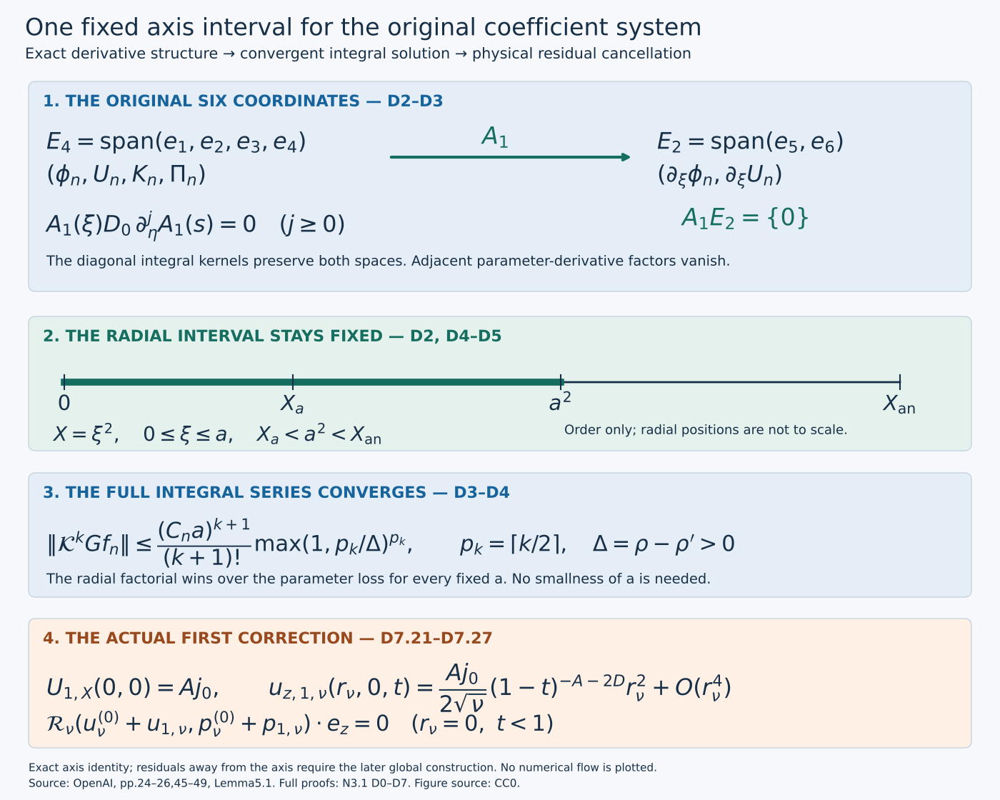
Figure. The two coordinate spaces retain the original six unknowns. Their derivative map gives the exact vanishing composition used in D3. The lower panels show the convergence bound and the physical residual cancellation in Exercise 5. Radial positions indicate order, not scale; no numerical solution is plotted.
From the original residual to an actual correction
First retain the physical powers of \(q\), the pressure and both viscosity contributions. The spacing \(2h\) arises from their exact relative powers. Radial incompressibility determines the radial velocity coefficient, including its axis integration constant.
Next write the original equations as a six-component system, listing every nonzero matrix entry. Its diagonal radial singularity has an exact integral inverse. The sparse derivative structure and a shared parameter-domain loss give a convergent series and uniqueness in the stated holomorphic class.
Finally recover smoothness in \(X\), the original radial average, pressure and physical fields. The first correction uses only the already constructed leading profile. Later orders use the same solution operator after the preceding coefficients have been globally extended and their moments corrected; that global step is the next lesson. This local construction alone does not yet supply the full base field.
D0. Original physical coefficients and differential operators
The subscript now records expansion order. Keep the full leading pressure distinct from its axis trace, and include the change of physical power after each axial derivative.
Keep \(A=1/2+h,D=1/2-h,d=1-\eta^2,L=1-2h\eta^2\), with the already fixed \(0<h<1/100\). Use \(z=q^D\eta\), \(1-t=q(1-\eta^2)\), \(X=r^2/(2q)\), and the original amplitude \(\mathsf C\). For \(\lambda_n=2nh\), the physical coefficients are exactly
\[ \begin{gathered} u_{\theta,n}=q^{-A+\lambda_n}E_n =r q^{-A-1/2+\lambda_n}\phi_n/\mathsf C, \qquad E_n=\sqrt{2X}\phi_n/\mathsf C,\\ u_{z,n}=q^{-A+\lambda_n}U_n,\qquad ru_{r,n}=q^{\lambda_n}V_n,\qquad p_n=q^{-2A+\lambda_n}\Pi_n. \end{gathered} \tag{D0.1} \]Here \(\Pi_0(X,\eta)\) is the full leading pressure; its axis trace is the pressure datum previously denoted \(\Pi_0(\eta)\). The subscript in this section is expansion order. No pressure constant is discarded by this notation.
For a real exponent \(\beta\), retain the original operators
\[ T_\beta f=\frac{-\beta f+D\eta f_\eta+Xf_X}{L},\qquad Z_\beta f=\frac{2\beta\eta f+df_\eta-2\eta Xf_X}{L}, \tag{D0.2} \]so \(\partial_t(q^\beta f)=q^{\beta-1}T_\beta f\) and \(\partial_z(q^\beta f)=q^{\beta-D}Z_\beta f\). P0.2–P0.3 prove these by differentiation of the actual coordinate map. Write
\[ T_{\beta,n}=T_{\beta+\lambda_n},\qquad Z_{\beta,n}=Z_{\beta+\lambda_n},\qquad Z_{\beta,n}^{[2]}=Z_{\beta+\lambda_n-D}Z_{\beta+\lambda_n}. \tag{D0.3} \]The composition order in the last expression retains the change in physical power after the first derivative. Negative-index fields are zero.
Incompressibility at order n gives \(q^{\lambda_n-1}[\partial_XV_n+Z_{-A,n}U_n]=0\), because A+D=1. The regular-axis condition fixes V_n(0)=0. Integrating the displayed equation, with \(\int_0^XxU_{n,X}dx=XU_n-\int_0^XU_n dx\), proves
\[ \partial_XV_n=-Z_{-A,n}U_n,\qquad \frac{V_n}{X} =\frac{2\eta U_n-2\eta(D+\lambda_n)\mathcal A_XU_n-d\partial_\eta\mathcal A_XU_n}{L}, \quad \mathcal A_XU_n=\int_0^1U_n(sX,\eta)ds. \tag{D0.4} \]The integral formula retains its smooth value at X=0 and fixes the integration constant uniquely.
D1. Every term of the coefficient equations
Collect terms only after computing the full cylindrical momentum equation. The angular connection term, radial pressure equation and two different viscous order shifts all remain in the equations below.
Set \(b=-A-1/2\), \(c=-A\). For angular transport, the cylindrical connection term is part of \(u_r(\partial_r+r^{-1})u_\theta\). Substitution of D0.1 yields exactly
\[ u_{r,i}(\partial_r+r^{-1})u_{\theta,j} =\frac r{\mathsf C}q^{b-1+\lambda_i+\lambda_j} V_i(\phi_{j,X}+\phi_j/X). \tag{D1.1} \]Indeed \((\partial_r+r^{-1})(r\phi_j)=2\phi_j+2X\phi_{j,X}\), and \(r^2=2qX\) gives the stated factor. The angular axial transport is \((r/\mathsf C)q^{b-1+\lambda_i+\lambda_j}U_iZ_{b,j}\phi_j\), because \(-A-D=-1\). The vector radial Laplacian satisfies
\[ (\partial_{rr}+r^{-1}\partial_r-r^{-2})(r\phi(X)) =\frac r q\,2(X\phi_{XX}+2\phi_X). \tag{D1.2} \]This follows from \(X_r=r/q\) by two ordinary derivatives, including the two cylindrical terms. Two axial derivatives introduce \(q^{-2D}=q^{-1}q^{2h}\), so they move order n−1 to order n. Equating the complete order-n angular residual to zero gives
\[ 2(X\phi_n''+2\phi_n')=T_{b,n}\phi_n +\sum_{i+j=n}\{V_i(\phi_j'+\phi_j/X)+U_iZ_{b,j}\phi_j\} -Z_{b,n-1}^{[2]}\phi_{n-1}. \tag{D1.3} \]Primes here and in D1.4–D1.6 mean \(\partial_X\) at fixed η.
For the axial component the scalar radial Laplacian is \(2q^{-1}(XU''+U')\). Radial transport contributes \(V_iU_j'\), and axial transport contributes \(U_iZ_{c,j}U_j\), each with factor \(q^{c-1+\lambda_i+\lambda_j}\). The pressure derivative has the same power because \(-2A-D=c-1\). Thus its full equation is
\[ 2(XU_n''+U_n')=T_{c,n}U_n +\sum_{i+j=n}\{V_iU_j'+U_iZ_{c,j}U_j\} +Z_{-2A,n}\Pi_n-Z_{c,n-1}^{[2]}U_{n-1}. \tag{D1.4} \]For the radial equation multiply the physical momentum equation by r first. The pressure and centrifugal terms at order n are \(q^{-2A+\lambda_n}[2X\Pi_n'-2X\mathsf C^{-2}\sum_{i+j=n}\phi_i\phi_j]\). The time and transport terms have power \(q^{-1+\lambda_k}\), with exact coefficients \(T_{0,k}V_k\), \(V_i(V_j'-V_j/(2X))\) and \(U_iZ_{0,j}V_j\). The vector radial Laplacian of V(X)/r is \(2XV''/(qr)\), so after multiplying by r its contribution is \(-2XV_k''\). The axial-viscosity term at that power is \(-Z_{0,k-1}^{[2]}V_{k-1}\). Since \(-1+\lambda_k=-2A+\lambda_{k+1}\), the result is exactly
\[ \Pi_n'=\mathsf C^{-2}\sum_{i+j=n}\phi_i\phi_j-\frac{\Omega_{n-1}}{2X}, \tag{D1.5} \]where
\[ \Omega_k=T_{0,k}V_k +\sum_{i+j=k}\{V_i(V_j'-V_j/(2X))+U_iZ_{0,j}V_j\} -2XV_k''-Z_{0,k-1}^{[2]}V_{k-1}. \tag{D1.6} \]These computations retain all physical powers and all radial and axial viscous terms in original (5.2)–(5.6).
The quotient in D1.5 is regular, with an explicit full formula. Write V_j=Xv_j using D0.4. Direct substitution in D0.2 gives \(T_\beta(Xf)=XT_{\beta-1}f\), \(Z_\beta(Xf)=XZ_{\beta-1}f\). Consequently
\[ \frac{\Omega_k}{X}=T_{-1,k}v_k +\sum_{i+j=k}\{v_i(v_j/2+Xv_j')+U_iZ_{-1,j}v_j\} -4v_k'-2Xv_k''-Z_{-1,k-1}^{[2]}v_{k-1}. \tag{D1.7} \]Every coefficient is smooth at the axis and holomorphic on a suitable parameter neighborhood whenever the preceding profiles and their needed derivatives are. The factor 1/2 in the quadratic radial term and both radial derivatives remain visible.
D2. The full six-component system
The current order is linear because every middle-index product uses previously constructed coefficients. A radial-average variable makes the system local in the radial coordinate; its defining relation will be recovered exactly.
Fix \(a>0\) with \(X_a<a^2<X_{\rm an}\), inside the common analytic rectangle proved in V7. The radius a is fixed independently of the correction order. In this paragraph use the concise symbols \(\phi=\phi_0,U=U_0,V=V_0\) for the actual leading functions and put
\[ \begin{gathered} \ell=\lambda_n,\quad \beta_n=b+\ell,\quad \gamma_n=c+\ell,\quad \pi_n^{\rm exp}=-2A+\ell,\\ v_0=V_0/X,\quad W=1+Lv_0-2\eta U_0,\quad H_c=D\eta+dU_0,\quad S_\phi=\phi_0+X\phi_{0,X}. \end{gathered} \tag{D2.1} \]The W here equals the original transport coefficient in P1.1 by D0.4. The superscript on \(\pi_n^{\rm exp}\) distinguishes a scalar exponent from the pressure profile.
At positive order all middle-index terms are already of lower order. Write them, without omission, as
\[ \begin{split} R_{\phi,n}&=\sum_{i=1}^{n-1}\{V_i(\phi_{n-i}'+\phi_{n-i}/X)+U_iZ_{b,n-i}\phi_{n-i}\} -Z_{b,n-1}^{[2]}\phi_{n-1},\\ R_{U,n}&=\sum_{i=1}^{n-1}\{V_iU_{n-i}'+U_iZ_{c,n-i}U_{n-i}\} -Z_{c,n-1}^{[2]}U_{n-1},\\ P_n&=\mathsf C^{-2}\sum_{i=1}^{n-1}\phi_i\phi_{n-i}-\Omega_{n-1}/(2X). \end{split} \tag{D2.2} \]For n=1 these sums are empty. The factors V_i=Xv_i cancel the apparent 1/X in R_φ,n. D1.7 handles the remaining quotient. These are actual finite source expressions, not new free data.
Let \(\xi=\sqrt X\), \(K_n=\mathcal A_XU_n-U_n\), and
\[ \mathbf W_n=(\phi_n,U_n,K_n,\Pi_n,\partial_\xi\phi_n,\partial_\xi U_n)^T, \qquad C_d=\operatorname{diag}(0,0,2,0,3,1). \tag{D2.3} \]The use of ξ retains X=ξ² and all resulting derivative factors. D0.4 is equivalently
\[ \frac{V_n}{X}=\frac{2\eta(A-\ell)U_n-2\eta(D+\ell)K_n-d\partial_\eta U_n-d\partial_\eta K_n}{L}. \tag{D2.4} \]The second-order operators are exactly \(2(X\partial_{XX}+2\partial_X)=\tfrac12(\partial_{\xi\xi}+3\xi^{-1}\partial_\xi)\) and \(2(X\partial_{XX}+\partial_X)=\tfrac12(\partial_{\xi\xi}+\xi^{-1}\partial_\xi)\). Also \(\partial_\xi K_n+2K_n/\xi=-\partial_\xi U_n\). Thus the exact system is
\[ \partial_\xi\mathbf W_n+\xi^{-1}C_d\mathbf W_n =A_0\mathbf W_n+A_1\partial_\eta\mathbf W_n+f_n,\qquad \mathbf W_n(0)=0. \tag{D2.5} \]Here are every nonzero entry of the matrices; all unlisted entries vanish:
\[ \begin{gathered} (A_0)_{15}=1,\quad (A_0)_{26}=1,\quad (A_0)_{36}=-1,\quad (A_0)_{41}=4\xi\phi_0/\mathsf C^2,\\ (A_0)_{51}=2[\beta_n(-1+2\eta U_0)/L+v_0],\\ (A_0)_{52}=2Z_b\phi_0+4\eta(A-\ell)S_\phi/L,\qquad (A_0)_{53}=-4\eta(D+\ell)S_\phi/L,\qquad (A_0)_{55}=\xi W/L,\\ (A_0)_{61}=-8\eta X\phi_0/(L\mathsf C^2),\\ (A_0)_{62}=2[\gamma_n(-1+2\eta U_0)/L+Z_cU_0]+4\eta(A-\ell)XU_{0,X}/L,\\ (A_0)_{63}=-4\eta(D+\ell)XU_{0,X}/L,\qquad (A_0)_{64}=4\pi_n^{\rm exp}\eta/L,\qquad (A_0)_{66}=\xi W/L. \end{gathered} \tag{D2.6} \]The parameter-derivative matrix is
\[ \begin{gathered} (A_1)_{51}=2H_c/L,\qquad (A_1)_{52}=(A_1)_{53}=-2dS_\phi/L,\\ (A_1)_{62}=2(H_c-dXU_{0,X})/L,\qquad (A_1)_{63}=-2dXU_{0,X}/L,\qquad (A_1)_{64}=2d/L. \end{gathered} \tag{D2.7} \]The complete source vector is
\[ f_n=(0,0,0,2\xi P_n,2R_{\phi,n},2R_{U,n}-4\eta XP_n/L)^T. \tag{D2.8} \]To verify these rows, the linear angular equation before the ξ conversion is
\[ \begin{split} 2(X\phi_n''+2\phi_n')={}&[\beta_n(-1+2\eta U_0)/L+v_0]\phi_n +(XW/L)\phi_n'+(H_c/L)\phi_{n,\eta}\\ &+S_\phi(V_n/X)+U_nZ_b\phi_0+R_{\phi,n}. \end{split} \tag{D2.9} \]Insert D2.4 and multiply by two; \(X\phi_n'=\xi\partial_\xi\phi_n/2\) gives (A_0)55. The axial row has the same derivative coefficients with U_n, together with \(XU_{0,X}(V_n/X)+U_nZ_cU_0+Z_{-2A,n}\Pi_n+R_{U,n}\). Use the already derived pressure row \(\Pi_n'=2\phi_0\phi_n/\mathsf C^2+P_n\) inside \(Z_{-2A,n}\Pi_n=(2\pi_n^{\rm exp}\eta\Pi_n+d\Pi_{n,\eta}-2\eta X\Pi_n')/L\). This supplies (A_0)61, (A_0)64, (A_1)64 and the last term in D2.8. The first four equations then follow from the definitions and the pressure row. This proves the full matrix system, including the terms not printed explicitly in the source.
D3. Exact integral inverse and the sparse derivative structure
Invert the diagonal singular part with its actual zero-axis conditions. Then follow the two coordinate spaces through every factor to prove the vanishing composition before estimating derivatives.
For \(c_i=(C_d)_{ii}\), define
\[ (Gg)_i(\xi,\eta)=\int_0^\xi(s/\xi)^{c_i}g_i(s,\eta)ds =\xi\int_0^1t^{c_i}g_i(t\xi,\eta)dt. \tag{D3.1} \]For positive ξ, differentiating the first expression gives \((Gg)_i'+c_i(Gg)_i/\xi=g_i\). The second expression extends continuously by zero at ξ=0. Conversely multiplication of a regular solution of that scalar equation by ξ^{c_i}, integration from zero, and its zero axis value recover D3.1. For c_i>0 a nonzero homogeneous integration constant is singular; for c_i=0 it violates the prescribed zero value. Thus G is the exact inverse with these boundary conditions.
Let \(E_4=\operatorname{span}(e_1,e_2,e_3,e_4)\), \(E_2=\operatorname{span}(e_5,e_6)\). D2.7 proves that A_1 maps E_4 into E_2 and annihilates E_2. Every η derivative of A_1 has the identical support pattern. All G kernels are diagonal and independent of η, so they preserve both spaces. For any such diagonal kernel D_0 and any radii ξ,s,
\[ A_1(\xi)D_0A_1(s)=0,\qquad A_1(\xi)D_0\partial_\eta^jA_1(s)=0\quad(j\ge0). \tag{D3.2} \]In particular, composing two adjacent factors of the type \(A_1\partial_\eta\) vanishes, including the term where the left derivative strikes the right coefficient. These are exact matrix identities on the original six coordinates.
Put \(\mathcal K=G(A_0+A_1\partial_\eta)\). In the expansion of \(\mathcal K^kG\), there are at most 2^k choices of the two operator types. A nonzero choice cannot contain adjacent parameter-derivative types by D3.2. Hence it has at most
\[ p_k=\lceil k/2\rceil \tag{D3.3} \]parameter derivatives. This count concerns differential-operator compositions, so it already includes the product-rule terms on variable coefficients. No coefficient is treated as constant in η.
D4. Convergence on the whole fixed radial interval
Allocate the available parameter-domain loss only to the derivatives that survive. Ordered radial integration supplies a full factorial. This proves convergence without a smallness requirement on the chosen radial interval.
For the current order choose a bounded complex neighborhood \(S_\rho=\{\eta:\operatorname{dist}(\eta,[-1,1])<\rho\}\) with no zero of L, on which all current coefficients and sources are bounded and holomorphic, uniformly for \(0\le\xi\le a\). Its radius may depend on n. Such a neighborhood exists for n=1 by V7 and for the induction receiver from the finitely many lower profiles and derivatives that enter D2.2. Take a smaller radius than those available for those finitely many data, so the suprema are finite on its closure. No bound uniform in n is assumed.
For \(0<\rho'<\rho\), set \(\Delta=\rho-\rho'\). Cauchy's integral formula on a disk of radius ε inside the larger domain gives \(\|\partial_\eta f\|_{S_{r-\varepsilon}}\le\varepsilon^{-1}\|f\|_{S_r}\). In a word with p derivatives allocate loss Δ/p to each derivative; coefficient multiplications need no radius loss. For p=0 the derivative factor is one. This bounds the full operator word by a coefficient factor times \((p/\Delta)^p\), without expanding all product-rule terms separately.
Each diagonal integration kernel has norm at most one since c_i≥0 and the nested radii are ordered. Its k+1 integrations range over a simplex of volume \(\xi^{k+1}/(k+1)!\). Choose C_n≥1 bounding the matrices, source and the factor from at most 2^k words. D3.3 then gives the complete estimate
\[ \|\mathcal K^kGf_n\|_{[0,a]\times S_{\rho'}} \le\frac{C_n^{k+1}a^{k+1}}{(k+1)!} \left(\max\{1,p_k/\Delta\}\right)^{p_k}. \tag{D4.1} \]The convention at p_k=0 is one. The simplex and radius-loss estimates can be applied simultaneously: before taking suprema, each integrand has exactly the same ordered radial variables and parameter-domain losses, and all coefficient bounds are uniform in those radial variables.
The root of the right side tends to zero. For example \((k+1)!\ge((k+1)/e)^{k+1}\), from summing \(\log j\ge\int_{j-1}^j\log x\,dx\) for j≥2, while p_k≤(k+1)/2. The kth root is bounded by a fixed multiple of \((k+1)^{-1/2}\), with fixed a,C_n,Δ. Thus the actual series
\[ \mathbf W_n=\sum_{k=0}^{\infty}\mathcal K^kGf_n \tag{D4.2} \]converges uniformly on the whole fixed interval and every smaller parameter neighborhood. Uniform convergence preserves holomorphy in η. On a further smaller domain Cauchy's bound also gives convergence of the parameter derivative series, so bounded radial integration passes through the series. Consequently \(\mathbf W_n=G(A_0\mathbf W_n+A_1\partial_\eta\mathbf W_n+f_n)\), and D3.1 proves D2.5. No infinite-frequency or numerical approximation is used.
For uniqueness take two bounded holomorphic solutions on a common parameter neighborhood; their difference H satisfies H=\(\mathcal K^kH\) for every k. The same argument, with k integrations, bounds it by
\[ \|H\|_{[0,a]\times S_{\rho'}} \le\frac{(C_na)^k}{k!} \left(\max\{1,p_k/\Delta\}\right)^{p_k} \|H\|_{[0,a]\times S_\rho}. \tag{D4.3} \]The right side tends to zero. A common larger domain with finite suprema is obtained by first shrinking the intersection of the two solutions' domains. Hence H=0. This is exactly the stated holomorphic uniqueness class, not a uniqueness assertion for arbitrary smooth parameter dependence.
The chosen a did not enter any smallness condition. Increasing C_n or decreasing the parameter neighborhood still gives convergence by D4.1. Therefore the radial interval stays fixed at every application of this solution operator.
D5. Smoothness, parity and recovery of the original unknowns
Recover radial smoothness through a nonsingular integral identity. Reflection gives the exact parity needed to return from the square-root radial coordinate to the original \(X\).
For continuous g the inverse formula has the nonsingular derivative
\[ \partial_\xi(Gg)_i=g_i(\xi,\eta)-c_i\int_0^1t^{c_i}g_i(t\xi,\eta)dt. \tag{D5.1} \]It follows either by differentiating the first integral away from zero and passing to zero in the second expression, or by its scalar equation and continuous quotient. Thus continuous g gives one continuous radial derivative. Apply this to \(g=A_0\mathbf W_n+A_1\partial_\eta\mathbf W_n+f_n\); the parameter derivative is continuous on a smaller neighborhood by Cauchy's formula. Once \(\mathbf W_n\) is C^r in ξ, the same formula and product differentiation give C^{r+1} on a smaller parameter domain.
Here is the common-domain conclusion required by the next coefficient construction. At this fixed order n, take the parameter neighborhood \(S_\rho\) on which the input coefficients, source and all their radial derivatives are holomorphic. For n=1 it is supplied by the common analytic rectangle of V7; for the induction it is the intersection of the finitely many neighborhoods of the completed lower coefficients. The source formulas D2.2 use only finitely many derivatives of those fields. On any smaller closed neighborhood, each fixed radial derivative of these data is bounded uniformly on the compact radial interval. The bounds may depend on its derivative order.
Choose once \(0<\rho_2<\rho_1<\rho\). For any prescribed integer r, perform the r applications of D5.1 on the nested neighborhoods with radii \(\rho_1-j(\rho_1-\rho_2)/(r+1)\), \(j=0,\ldots,r\). Each application uses a positive radius difference, so Cauchy's formula controls the one additional parameter derivative. Radial differentiation of the integral in D5.1 introduces the factor \(t^k\) for a k-th radial derivative of its integrand; this is bounded by one on \(0\le t\le1\), so the same differentiated integral formula remains valid at the axis. Induction therefore supplies all radial derivatives through r, continuous and holomorphic on a neighborhood strictly larger than \(S_{\rho_2}\). Every occurrence is a derivative of the one D4.2 solution, by uniqueness, not a new solution chosen with r. Since r was arbitrary, all radial derivatives are holomorphic on this same fixed \(S_{\rho_2}\); their bounds can grow with r. Further parameter derivatives follow from Cauchy's formula on the positive remaining margin. This proves the common parameter neighborhood for all mixed derivatives at this fixed n. Its radius may decrease with n, while the radial interval \([0,a]\) stays unchanged.
For the parity argument extend the original coefficients to negative ξ by X=ξ². Set \(S=\operatorname{diag}(1,1,1,1,-1,-1)\). Inspection of every entry in D2.6–D2.8 gives
\[ A_j(-\xi)=-SA_j(\xi)S\quad(j=0,1),\qquad f_n(-\xi)=-Sf_n(\xi). \tag{D5.2} \]For example (A_0)41 is odd, (A_0)15 is even, and A_1 has only last-two-row, first-four-column entries, all even. The lower source profiles are functions of X; f_n's fourth component is odd and its last two are even. The extended G formula in D3.1 and the same absolute estimates construct a unique smooth solution on [-a,a]. Reflection \(\widetilde{\mathbf W}_n(\xi)=S\mathbf W_n(-\xi)\) obeys the same integral equation and axis data by D5.2, so uniqueness gives equality. The first four components are therefore even and the last two odd.
An even smooth function of ξ is smooth as a function of X=ξ² on the half interval. Here is the boundary check with its derivative content. For each integer M, Taylor's formula at zero has only even coefficients through degree 2M, with remainder \(\xi^{2M+2}R_M(\xi)\) whose needed derivatives are bounded. Applying \(\partial_X=(2\xi)^{-1}\partial_\xi\) k times to this remainder gives a finite sum bounded by a constant times \(\xi^{2M+2-2k}\) for M≥k. The polynomial terms give the required limits of each derivative. Taking larger M for each k proves the smooth extension; parameter derivatives and their holomorphy obey the same argument on the smaller neighborhoods already supplied above.
The first two rows recover the derivative coordinates. The third row also recovers the original radial average exactly, rather than a replacement variable. Indeed
\[ \xi^2K_n=-\int_0^\xi s^2\partial_sU_n(s^2,\eta)ds =-\xi^2U_n(\xi^2,\eta)+2\int_0^\xi sU_n(s^2,\eta)ds, \tag{D5.3} \]where \(\partial_sU_n(s^2,\eta)\) denotes the derivative of the composed function. Changing variables x=s² gives \(K_n=\mathcal A_XU_n-U_n\). Formula D2.4 then reconstructs V_n and D0.4, with V_n(0)=0. The fourth row reconstructs D1.5 with \(\Pi_n(0)=0\); the last two rows, by D2.9 and the pressure substitution, reconstruct D1.3–D1.4. Thus the integral solution solves all original equations, with \(\phi_n(0)=U_n(0)=\Pi_n(0)=0\). Conversely any solution in the source's regular holomorphic class gives this six-component solution and is unique by D4.3.
D6. The actual first correction and the induction receiver
At the first order every source is already an explicit function of the leading profile. The solution series therefore constructs an actual correction. Its complete physical factors are retained when transporting to viscosity \(\nu\).
At n=1 all inputs are already supplied by the verified leading profile. Specifically,
\[ R_{\phi,1}=-Z_{b,0}^{[2]}\phi_0,\qquad R_{U,1}=-Z_{c,0}^{[2]}U_0,\qquad P_1=-\Omega_0/(2X), \tag{D6.1} \]with the full \(\Omega_0/X\) given by D1.7 using only v_0,U_0 and their derivatives; its negative-index term is zero. Put these actual functions, \(\ell=2h\), and the actual leading coefficients into D2.6–D2.8. The convergent series D4.2 is therefore an explicit exact construction of \((\phi_1,U_1,V_1,\Pi_1)\) on \([0,a^2]\), not an existence statement depending on an unspecified source. Its zero axis values preserve all leading traces. Its original physical fields are D0.1 with \(\lambda_1=2h\), and the preceding identities cancel every order-one residual on this interval.
For higher orders D2.2 displays precisely the finite receiving map from previously completed coefficients. D1.7 proves that its axis source is regular; D4 proves that its size never forces the radial interval to shrink; D5 proves the regularity needed to form the next source. This establishes the full linear solution step of original Lemma 5.1. The actual global extension in Y0–Y7 completes original Lemma 5.2: it extends each current solution, imposes the five actual residual moments and finishes that order before using it at the next. Together these constructions supply the entire global coefficient sequence; its summation into the actual base field is derived in Z0–Z8.
For the original viscosity \(\nu>0\), retain the exact map proved in P1 and H7, with \(r_\nu=\sqrt\nu r,z_\nu=\sqrt\nu z\) and time unchanged. The physical coefficient fields become
\[ \begin{gathered} u_{\theta,n,\nu}=\sqrt\nu q^{-A+\lambda_n}E_n =r_\nu q^{-A-1/2+\lambda_n}\phi_n/\mathsf C,\qquad u_{z,n,\nu}=\sqrt\nu q^{-A+\lambda_n}U_n,\\ r_\nu u_{r,n,\nu}=\nu q^{\lambda_n}V_n,\qquad p_{n,\nu}=\nu q^{-2A+\lambda_n}\Pi_n,\\ X=\frac{r_\nu^2}{2\nu q},\quad \eta=\frac{z_\nu}{\sqrt\nu q^D},\quad q-\frac{z_\nu^2}{\nu}q^{2h}=1-t. \end{gathered} \tag{D6.2} \]Each full physical momentum term has the same additional factor \(\sqrt\nu\): one spatial derivative contributes \(\nu^{-1/2}\), the pressure has factor ν, and the two derivatives in νΔ cancel their ν^{-1} with the original viscosity. Thus the coefficient cancellations hold at the unchanged target viscosity with every field factor retained.
D7. Five worked exercises
Exercise 1. Prove the exact composition rules for the physical operators
Explain why the two axial derivatives in D0.3 have different subscripts. Prove the corresponding mixed time–axial identity and the rules involving the original radial variable \(X\).
Solution. Let \(f(X,\eta)\) be smooth on the profile rectangle, and let \(\beta\) be a real physical exponent. D0.2 gives
\[ \partial_{zz}(q^\beta f) =q^{\beta-2D}Z_{\beta-D}Z_\beta f,\qquad \partial_t\partial_z(q^\beta f) =q^{\beta-D-1}T_{\beta-D}Z_\beta f. \tag{D7.1} \]Applying the same identities in the opposite order gives \(\partial_z\partial_t(q^\beta f)=q^{\beta-1-D}Z_{\beta-1}T_\beta f\). The original smooth coordinate map has \(q>0\), \(L>0\), so physical mixed derivatives commute and their common scalar factor is nonzero. Each \((X,\eta)\) with \(X\ge0,|\eta|<1\) is reached by taking any positive \(q\) and setting \(r=\sqrt{2qX},z=q^D\eta,t=1-q(1-\eta^2)\). Thus
\[ T_{\beta-D}Z_\beta f=Z_{\beta-1}T_\beta f. \tag{D7.2} \]This proves an identity on the original profile domain, not merely on one coordinate trajectory. Continuity gives the one-sided identities at \(\eta=\pm1\) and \(X=0\).
Direct substitution into the full formulas D0.2 gives
\[ \begin{gathered} T_\beta(Xf)=XT_{\beta-1}f,\qquad Z_\beta(Xf)=XZ_{\beta-1}f,\\ \partial_XT_\beta f=T_{\beta-1}\partial_Xf,\qquad \partial_XZ_\beta f=Z_{\beta-1}\partial_Xf. \end{gathered} \tag{D7.3} \]For instance, \(X\partial_X(Xf)=Xf+X^2f_X\) changes the time coefficient from \(-\beta\) to \(1-\beta\), while \(-2\eta X\partial_X(Xf)\) changes the axial coefficient from \(2\beta\eta\) to \(2(\beta-1)\eta\). Differentiating the original operators gives the last two identities by the same product rule; \(L\) has no \(X\)-dependence.
The order spacing is also exact:
\[ q^{-2D}=q^{-1}q^{2h},\qquad q^{-1+\lambda_k}=q^{-2A+\lambda_{k+1}},\qquad \lambda_k=2kh. \tag{D7.4} \]The first identity accounts for axial viscosity relative to radial viscosity. The second accounts for the remaining radial momentum terms relative to centrifugal pressure. Neither permits replacing \(Z_{\beta-D}Z_\beta\) by \(Z_\beta^2\).
Exercise 2. Give a finite remainder bound for the convergent integral series
Turn D4.1 into an explicit tail estimate without shrinking \(a\). Retain both parity classes of the summation index.
Solution. Let \(z=C_na>0\), \(\Delta=\rho-\rho'>0\), and retain the actual majorants
\[ t_k=\frac{z^{k+1}}{(k+1)!} \big(\max\{1,p_k/\Delta\}\big)^{p_k},\qquad p_k=\lceil k/2\rceil. \tag{D7.5} \]For \(m\ge\max\{1,\lceil\Delta\rceil\}\), put \(B_m=(m/\Delta)^m\). Then
\[ t_{2m-1}=\frac{z^{2m}}{(2m)!}B_m,\qquad t_{2m}=\frac{z^{2m+1}}{(2m+1)!}B_m,\qquad \frac{B_{m+1}}{B_m} =\frac{m+1}{\Delta}(1+1/m)^m \le\frac{e(m+1)}{\Delta}. \tag{D7.6} \]The last bound follows by integrating \(1/(1+s)\le1\) on \([0,1/m]\), giving \(m\log(1+1/m)\le1\). Hence the two exact adjacent-parity comparisons are
\[ \frac{t_{2m+1}}{t_{2m-1}}\le \frac{ez^2}{2\Delta(2m+1)},\qquad \frac{t_{2m+2}}{t_{2m}}\le \frac{ez^2}{2\Delta(2m+3)}. \tag{D7.7} \]Choose any integer
\[ M\ge \max\left\{1,\lceil\Delta\rceil, \left\lceil\frac{ez^2}{2\Delta}\right\rceil\right\}. \tag{D7.8} \]Both ratios in D7.7 are then at most \(1/2\) for every \(m\ge M\). Summing each parity class as a geometric majorant proves the actual remainder bound
\[ \left\|\mathbf W_n-\sum_{k=0}^{2M-2}\mathcal K^kGf_n\right\|_{[0,a]\times S_{\rho'}} \le 2\big(t_{2M-1}+t_{2M}\big). \tag{D7.9} \]All constants in this formula are those from the already established coefficient and source bounds. Increasing \(M\) makes the right side tend to zero by D7.7. The radius \(a\), parameter margin \(\Delta\), source and physical coordinates remain unchanged. This is an analytic error estimate for the actual infinite integral series.
Exercise 3. Compute the first radial coefficients at the axis
Find the exact axis slopes of \(\phi_1,U_1,\Pi_1\), retaining the full original pressure datum. Determine the axis slopes of \(\phi_n,U_n\) at every later positive order.
Solution. For an axis trace \(f(\eta)\), define the restrictions of the original operators by
\[ \mathscr T_\beta f=\frac{-\beta f+D\eta f'}L,\qquad \mathscr Z_\beta f=\frac{2\beta\eta f+df'}L. \tag{D7.10} \]Here primes mean parameter derivatives. At \(X=0\), the term \(Xf_X\) in D0.2 vanishes for each smooth profile. This remains true after either operator is applied, so taking the axis trace of their composition gives precisely the composition in D7.10.
At each positive order all three prescribed axis traces \(\phi_n,U_n,\Pi_n\) vanish identically in \(\eta\), as do their parameter derivatives. D0.4 then gives \(V_n/X=0\) at the axis. Evaluating D1.3–D1.5 there gives
\[ 4\phi_{n,X}(0,\eta)=R_{\phi,n}(0,\eta),\qquad 2U_{n,X}(0,\eta)=R_{U,n}(0,\eta),\qquad \Pi_{n,X}(0,\eta)=P_n(0,\eta). \tag{D7.11} \]In the angular current-order terms, \(V_0(\phi_n'+\phi_n/X)\) tends to zero because \(V_0=O(X)\) and \(\phi_n=O(X)\); the term \(V_n\phi_0/X\) tends to zero because \(V_n/X=0\) at the axis. All other current-order terms vanish from their zero traces or explicit \(X\) factors. This verifies the limits rather than cancelling a singular expression formally.
For \(n=1\) use D6.1 and the actual traces \(\phi_*,U_*=4\eta+j_0\):
\[ \phi_{1,X}(0,\eta)=-\frac14\mathscr Z_{b-D}\mathscr Z_b\phi_*, \qquad U_{1,X}(0,\eta)=-\frac12\mathscr Z_{c-D}\mathscr Z_cU_*. \tag{D7.12} \]In particular the complete \(\Lambda\)-dependent function \(\phi_*\) is retained in the first expression.
To compute the pressure slope, retain \(g(\eta)=U_{0,X}(0,\eta)=-Z_*/(2L)\) from J8.6. The full source \(Z_*\), including the actual axis pressure \(\Pi_0(0,\eta)\), is J0.1. Expanding the exact radial-average formula D0.4 gives
\[ v_*=\left.\frac{V_0}X\right|_0 =\frac{2A\eta U_*-dU_*'}L,\qquad w_*=\left.\partial_X\frac{V_0}X\right|_0 =\frac{(2-D)\eta g-\frac12d g'}L. \tag{D7.13} \]Indeed \(\mathcal A_XU_0=U_*+gX/2+O(X^2)\), and \(1-D=A\). D1.7 at \(k=0\) now gives the entire finite value
\[ \Pi_{1,X}(0,\eta)= -\frac12\left[ \mathscr T_{-1}v_*+\frac12v_*^2 +U_*\mathscr Z_{-1}v_*-4w_* \right]. \tag{D7.14} \]The terms with an explicit \(X\) and the negative-index axial-viscosity term vanish at this endpoint. The remaining radial derivative \(-4w_*\), the quadratic factor \(1/2\) and the original pressure inside \(g\) have not been discarded.
For \(n\ge2\), all middle-index terms in \(R_{\phi,n}\) and \(R_{U,n}\) vanish at the axis: every positive-order field has zero trace and \(V_i/X\) has zero trace. The final axial-viscosity terms have the zero trace of the \((n-1)\)-st field and all its parameter derivatives. Therefore
\[ \phi_{n,X}(0,\eta)=U_{n,X}(0,\eta)=0\qquad(n\ge2). \tag{D7.15} \]This conclusion concerns these two slopes; it does not assert that every pressure slope or higher radial derivative vanishes.
Finally, writing \(\alpha(\eta)=U_{1,X}(0,\eta)\), the exact reconstruction gives
\[ K_1=-\frac{\alpha X}{2}+O(X^2),\qquad V_1=\frac{(2-D-\lambda_1)\eta\alpha-\frac12d\alpha'}L\,X^2+O(X^3). \tag{D7.16} \]Every fixed parameter derivative has the same remainder order on a smaller common domain, by D5 and Taylor's integral remainder. These formulas describe the actual first correction, not a separately chosen axis polynomial.
Exercise 4. Prove a quantitative source-to-solution map
For the actual fixed matrices \(A_0,A_1\), prove linearity and a finite bound for the solution map on two parameter neighborhoods. State the norms, domains and all radius dependence.
Solution. Use the maximum norm on the original six coordinates and its induced matrix norm. Let \(\mathcal H_\rho\) be the normed space of continuous functions on \([0,a]\times S_\rho\), holomorphic in \(\eta\), with finite supremum norm \(\|\cdot\|_\rho\). We use only bounded holomorphic data; taking uniform limits makes this a Banach space. The actual matrices are bounded on this domain after the prior shrinking in D4. Put
\[ \mathsf M=\max\{1,\|A_0\|_\rho,\|A_1\|_\rho\},\qquad \Delta=\rho-\rho'>0,\qquad \mathfrak S(z,\Delta)= \sum_{k=0}^{\infty}\frac{z^k}{(k+1)!} \big(\max\{1,p_k/\Delta\}\big)^{p_k}. \tag{D7.17} \]The same root estimate as D4, or the two parity estimates in Exercise 2, proves that this series is finite for every finite \(z\ge0\) and every \(\Delta>0\).
The word proof in D3–D4 applies to any \(f\in\mathcal H_\rho\). Separate the source norm from the coefficient norms. There are at most \(2^k\) words, each coefficient multiplication costs at most \(\mathsf M\), and the full simplex has volume \(a^{k+1}/(k+1)!\). Thus
\[ \|\mathcal K^kGf\|_{\rho'} \le\|f\|_\rho\, \frac{a(2\mathsf M a)^k}{(k+1)!} \big(\max\{1,p_k/\Delta\}\big)^{p_k}. \tag{D7.18} \]Consequently the actual integral solution operator is the bounded linear map
\[ \begin{split} \mathcal S_n:\mathcal H_\rho&\longrightarrow\mathcal H_{\rho'},& \mathcal S_nf&=\sum_{k=0}^{\infty}\mathcal K^kGf,\\ \|\mathcal S_nf\|_{\rho'}&\le a\,\mathfrak S(2\mathsf M a,\Delta)\|f\|_\rho . \end{split} \tag{D7.19} \]Linearity follows term by term and passes through uniform convergence. On an intermediate parameter neighborhood the series converges with its first parameter derivative on a smaller neighborhood. D3.1 then proves the integral equation, the differential equation and the zero-axis value. The uniqueness argument D4.3 applies to this same bounded holomorphic class.
For two source vectors in the stated space, subtracting the convergent series gives the exact difference map
\[ \mathcal S_nf-\mathcal S_ng=\mathcal S_n(f-g),\qquad \|\mathcal S_nf-\mathcal S_ng\|_{\rho'} \le a\,\mathfrak S(2\mathsf M a,\Delta)\|f-g\|_\rho. \tag{D7.20} \]The actual smooth source \(f_n\) belongs to the domain; D5 gives the extra smoothness and parity needed to recover its original fields. An arbitrary source in \(\mathcal H_\rho\) need not have that parity, so the map just proved is a six-component solution map, with original-field recovery asserted for the already verified source \(f_n\). The factor \(a\), coefficient norm and full parameter margin remain explicit. No source smallness or radial shrinking is required.
Exercise 5. Show exactly how the first correction removes the axial residual at the axis
Compute \(U_{1,X}(0,0)\) for the actual leading trace, then prove cancellation of the entire axial momentum residual at every point of the physical axis. Retain the original viscosity.
Solution. The actual leading axial trace is \(U_*=4\eta+j_0\), and \(c=-A\). Its first restricted axial derivative is
\[ \mathscr Z_cU_*= \frac{4+2cj_0\eta+(8c-4)\eta^2}{1-2h\eta^2}. \tag{D7.21} \]At zero the next operator \(\mathscr Z_{c-D}\) acts by parameter differentiation. The derivative of the denominator is zero there, so
\[ (\mathscr Z_{c-D}\mathscr Z_cU_*)(0)=2cj_0=-2Aj_0,\qquad U_{1,X}(0,0)=Aj_0>0. \tag{D7.22} \]This value follows from the complete coefficient equations and is independent of the later moment extensions, whose supports lie away from this axis interval.
Let \((u_\nu^{(0)},p_\nu^{(0)})\) be the actual leading physical field and \((u_{1,\nu},p_{1,\nu})\) the actual first coefficient from D6.2. Use the original physical \(q_\nu,\eta_\nu\) there. The leading tangential equations cancel time, convection, axial pressure and radial viscosity on the axis interval. Its remaining axial residual at the axis is therefore exactly
\[ \mathcal R_\nu(u_\nu^{(0)},p_\nu^{(0)})\cdot e_z =-\sqrt\nu\,q_\nu^{c-2D} (\mathscr Z_{c-D}\mathscr Z_cU_*)(\eta_\nu), \qquad r_\nu=0. \tag{D7.23} \]The factor comes from \(\nu\partial_{z_\nu z_\nu} [\sqrt\nu\,q_\nu^cU_*]\): each spatial derivative contributes \(\nu^{-1/2}\), leaving exactly \(\sqrt\nu\). This is the same full axial-viscosity term retained in the original residual.
The first correction has zero axial velocity and pressure traces for every \(\eta\), and \(V_1=O(X^2)\), \(\phi_1=O(X)\). In Cartesian coordinates its horizontal velocity is \(O(r_\nu^3)\) and its axial velocity is \(O(r_\nu^2)\) at fixed \(z_\nu,t\). Thus its time derivatives, axial derivatives and axial pressure derivative vanish on the axis. All extra axial convection terms vanish there too: both fields have zero horizontal velocity on the axis, and the correction's axial trace and axial derivative are zero.
Only its radial viscous term contributes to the axial residual at the axis. Since \(X=r_\nu^2/(2\nu q_\nu)\), direct radial differentiation gives
\[ \left.\nu(\partial_{r_\nu r_\nu} +r_\nu^{-1}\partial_{r_\nu})u_{z,1,\nu}\right|_{r_\nu=0} =2\sqrt\nu\,q_\nu^{c+\lambda_1-1}U_{1,X}(0,\eta_\nu). \tag{D7.24} \]The displayed axis value is the smooth Cartesian limit. Now \(\lambda_1-1=2h-1=-2D\), and D7.12 gives twice the slope as the negative restricted second axial derivative. Combining D7.23–D7.24 in the momentum residual therefore yields the exact identity
\[ \mathcal R_\nu(u_\nu^{(0)}+u_{1,\nu}, p_\nu^{(0)}+p_{1,\nu})\cdot e_z=0 \qquad(r_\nu=0,\ t<1). \tag{D7.25} \]This is cancellation for the actual first correction throughout the axis, not only cancellation of a formal coefficient at the origin.
At \(z_\nu=0\), put \(\tau=1-t\). The unchanged leading residual from J8 is \(2Aj_0\sqrt\nu\,\tau^{-A-2D}\). The first correction's original near-axis expansion is
\[ u_{z,1,\nu}(r_\nu,0,t) =\frac{Aj_0}{2\sqrt\nu}\tau^{-A-2D}r_\nu^2+O(r_\nu^4). \tag{D7.26} \]At each fixed \(t<1,\nu>0\), the radial Laplacian of its displayed quadratic term, multiplied by \(\nu\), is exactly \(2Aj_0\sqrt\nu\,\tau^{-A-2D}\). Its negative sign in the momentum residual cancels the positive leading residual.
The velocity trace itself stays
\[ (u_\nu^{(0)}+u_{1,\nu})\cdot e_z =\sqrt\nu\,q_\nu^{-A}(4\eta_\nu+j_0) \qquad(r_\nu=0). \tag{D7.27} \]Thus cancellation of the residual does not remove the prescribed growth of the axial trace. D7.15 also shows that later constructed positive orders have zero first radial slope and cannot change this exact axial cancellation. Residuals away from the axis, global moment conditions and the summation into a base field still require their subsequent constructions.
What this fixed-interval solution supplies
D0–D6 prove the complete coefficient equations, all matrix entries, the convergent solution operator, uniqueness, common parameter regularity, parity and recovery of the original fields. They construct the actual first positive-order correction and the full local solution step of Lemma 5.1 on the chosen interval. D7 supplies explicit remainder and stability bounds, exact axis coefficients and the physical residual cancellation.
The next lesson extends each coefficient globally and restores its five original residual moments before it is used at the next order. Those complete derivations are already supplied in the separate extension audit, followed by the actual base-field realization. The global extension lesson proves the extension and moment correction; the base-field lesson constructs their actual sum.
Authored exposition and figure source: CC0.
Extending every coefficient and cancelling its five moments
NS-BLOWUP N3.2. A local coefficient cannot simply be cut off and used at the next order. Radial integration can leave a velocity tail, a pressure constant and two stress tails. This lesson constructs the global coefficients, cancels all five original moments exactly, proves their support and retains the common parameter regularity needed for the next coefficient.
The fixed-interval lesson, D0–D7, supplies the actual inner solution. The completed leading profile, V0–V8, supplies two protected patches, the exact heat exterior and the original flat stress weight. The outer-profile lesson, O0–H7, supplies the smooth cutoff, heat integrals and convergent subtracted moment used below.
The current-order correction is an exact finite linear solve, with no small-discrepancy condition. We prove the two matrix inverses for actual smooth bumps, then prove the radial boundary terms and all integration constants vanish. The exceptional first-order outer stress receives its own endpoint calculation. The final induction constructs every positive-order coefficient; summing them into a base field is the following lesson.
The original source is OpenAI, Finite Time Blowup for Navier–Stokes, pages 49–54, (5.9)–(5.22) and the full proof of Lemma 5.2. SOURCES.json records the source identity and mathematical locators. This is separate teaching and editorial mathematics; the diplomatic transcription retains OpenAI's text.
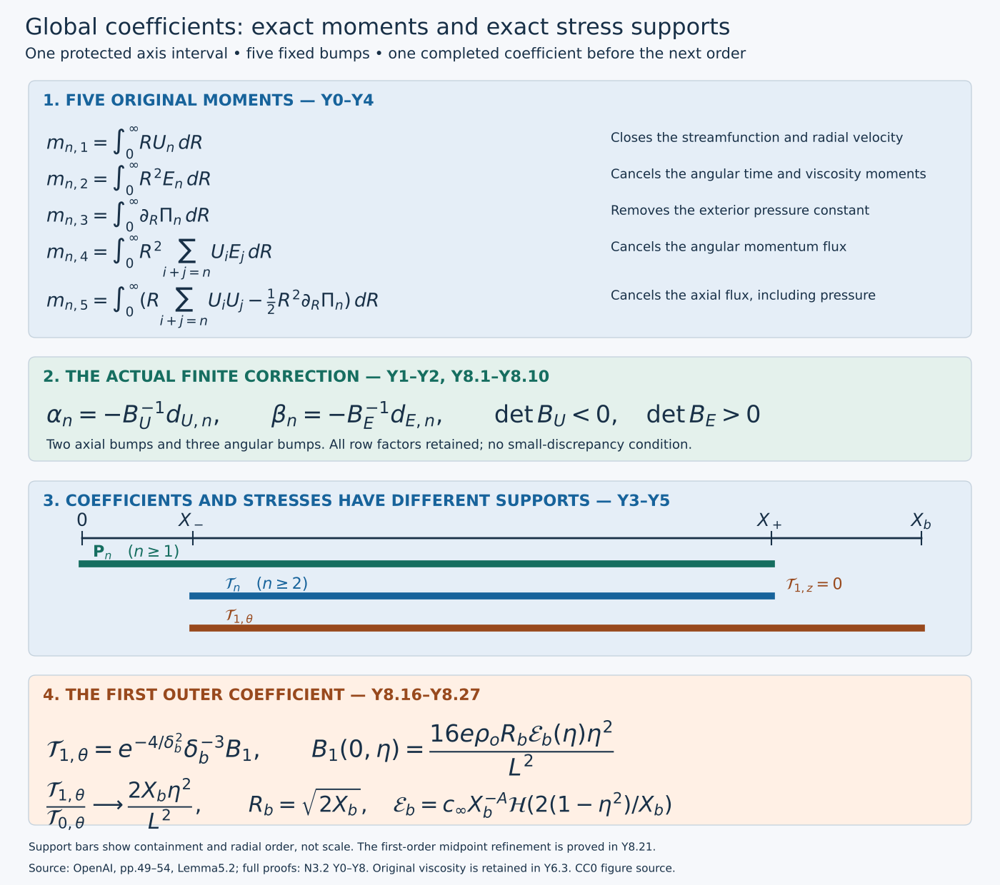
Figure. The diagram retains the original moments, patch order and stress supports. The lower formula is the exact first-order endpoint coefficient proved in Exercise 4. Positions show radial order, not scale; no numerical field is sampled.
Y0. Fixed geometry, data and original moments
Choose the radial geometry once. The five moments have different jobs: they remove radial integration constants and the total tangential residuals. Keep their original weights and pressure derivative until compact pressure has been proved.
Keep all notation and physical fields of D0–D1: \(A=1/2+h,D=1/2-h,d=1-\eta^2,L=1-2h\eta^2\), \(\lambda_n=2nh\), \(R=\sqrt{2X}\), \(r=\sqrt qR\), \(b=-A-1/2,c=-A\), and the original amplitude \(\mathsf C\). Thus \(E_n=R\phi_n/\mathsf C\). The actual leading profile has stress endpoints \(X_a,X_b\), analytic interval \([0,X_{\rm an}]\), and ordered unused patches \(\mathcal I_{\rm pos},\mathcal I_{\rm mean}\) from V7.4. Its leading \(U_0\text{ and }V_0\) vanish after \(X_v<X_b\). Choose, once for all orders,
\[ X_a<X_-<X_{\rm keep}<X_{\rm cut}<a^2<X_{\rm an}<\inf\mathcal I_{\rm pos}, \qquad \max\{X_v,\sup\mathcal I_{\rm mean}\}<X_+<X_b. \tag{Y0.1} \]The first four radii are inside the positive-length analytic inner collar retained in Q5 and V7; D2 permits this same a. The outer radius can be chosen before the terminal outer collar, because the original schedule places \(X_v\) and both patches strictly before it. The subscripts here label the positive-order construction, not the distinct shear-modification interval in V0. No support radius depends on n.
Let σ be the exact smooth step O0.1 and set
\[ \kappa(X)=1-\sigma\!\left(\frac{X-X_{\rm keep}}{X_{\rm cut}-X_{\rm keep}}\right). \tag{Y0.2} \]This gives the required values one and zero with smooth flat transitions. At order n the five original moments are
\[ \begin{split} m_{n,1}&=\int_0^\infty RU_n\,dR,\\ m_{n,2}&=\int_0^\infty R^2E_n\,dR,\\ m_{n,3}&=\int_0^\infty\partial_R\Pi_n\,dR,\\ m_{n,4}&=\int_0^\infty R^2\sum_{i+j=n}U_iE_j\,dR,\\ m_{n,5}&=\int_0^\infty\left(R\sum_{i+j=n}U_iU_j-\tfrac12R^2\partial_R\Pi_n\right)dR. \end{split} \tag{Y0.3} \]Each sum includes both endpoint terms and all middle terms. The pressure derivative, rather than an a priori compact pressure, appears in the last moment. This distinction is retained until compactness has actually been proved.
Y1. Cutoff, five explicit bumps and reconstruction
Cutting off the two freely chosen profiles creates a smooth extension, but it does not yet close the reconstructed radial velocity and pressure. Five disjoint bumps supply the missing degrees of freedom.
Start at n=1 with the actual solution D6.1; for subsequent n use D2.2 with the preceding completed global coefficients. Write its inner solution as \(\phi_n^{\rm in},U_n^{\rm in},V_n^{\rm in},\Pi_n^{\rm in}\). The initial extension is
\[ \widetilde\phi_n=\kappa\phi_n^{\rm in},\qquad \widetilde U_n=\kappa U_n^{\rm in},\qquad \widetilde E_n=R\widetilde\phi_n/\mathsf C, \tag{Y1.1} \]extended by zero beyond a². Since κ is already zero on a neighborhood of a², all radial derivatives match there.
Choose a closed interval \([R_p,R_q]\) inside \(\{R:R^2/2\in\mathcal I_{\rm pos}\}\). Set \(r_j=R_p+j(R_q-R_p)/6\), \(\omega=(R_q-R_p)/20\), and define
\[ \begin{gathered} w_j(R)=\begin{cases}\exp[-1/(1-((R-r_j)/\omega)^2)],&|R-r_j|<\omega,\\0,&|R-r_j|\ge\omega,\end{cases}\\ I_j=\int_0^\infty w_j(R)dR>0,\qquad b_j=w_j/I_j,\\ (b^U_1,b^U_2)=(b_1,b_2),\qquad(b^E_1,b^E_2,b^E_3)=(b_3,b_4,b_5). \end{gathered} \tag{Y1.2} \]The spacing is \((R_q-R_p)/6\) and the sum of two widths is \((R_q-R_p)/10\), so the five compact supports are disjoint and ordered. Each is smooth and has exactly integral one; the defining integrals \(I_j\) are retained. For coefficients \(\alpha_{n,j}(\eta)\), \(\beta_{n,j}(\eta)\), put
\[ U_n=\widetilde U_n+\sum_{j=1}^2\alpha_{n,j}b_j^U(R),\qquad E_n=\widetilde E_n+\sum_{j=1}^3\beta_{n,j}b_j^E(R),\qquad \phi_n=\mathsf C E_n/R. \tag{Y1.3} \]The last quotient is smooth at X=0: every added bump vanishes near that point and the remaining quotient equals \(\widetilde\phi_n\).
Define the other fields by the exact forward integrals
\[ \begin{split} F_n(X,\eta)&=\int_0^XU_n(x,\eta)dx,\\ V_n(X,\eta)&=-\int_0^X(Z_{-A,n}U_n)(x,\eta)dx,\\ \Pi_n(X,\eta)&=\int_0^X\left[\mathsf C^{-2}\sum_{i+j=n}\phi_i\phi_j-\frac{\Omega_{n-1}}{2x}\right](x,\eta)dx. \end{split} \tag{Y1.4} \]\(F_n\) is the indexed streamfunction coefficient, not the leading angular ratio denoted F in V. The full expression for Ω is D1.6–D1.7; in particular \(\Omega_{n-1}\) contains only already constructed lower orders. D1.7 proves regularity of \(\Omega_{n-1}/x\) at zero. Thus these equations impose original (5.2) and (5.5) globally, with exactly the source's zero axis values.
For \(X\le X_{\rm keep}\) the original inner functions and Y1.3 coincide. Their forward equations and axis values coincide as well, so Y1.4 gives equality of all four inner profiles there. On all of \([0,a^2]\), the cutoff is independent of η and the five bumps vanish. Each fixed radial derivative therefore retains the holomorphic parameter neighborhood obtained in D5; products, finite integrals and the lower source retain it after a finite intersection of neighborhoods. Global correction coefficients need only be smooth in η because they do not enter any of these inner forward integrals.
Y2. The complete affine moment map
At one positive order, the current unknown appears only once in each product. This makes the five equations affine with all earlier orders held fixed. The original patch separates them into two constant invertible matrices.
On the unchanged positive-order patch, V7.4 gives the exact expression
\[ U_0=0,\qquad E_0=e_*f(\eta)R^{-1-2\lambda},\quad e_*=2^{1/2+\lambda}c_{\rm patch}>0,\quad f(\eta)=(1+\eta^2)^{-1},\quad\lambda>0. \tag{Y2.1} \]The factor \(2^{1/2+\lambda}\) follows from \(X=R^2/2\) in V7.4; λ here is the fixed profile slope, distinct from \(\lambda_n=2nh\). All lower-order terms remain fixed when solving the current five equations.
The pressure equation in Y1.4 gives, with no dropped middle terms,
\[ \partial_R\Pi_n=\frac{2E_0E_n}{R} +\frac1R\left(\sum_{i=1}^{n-1}E_iE_{n-i}-\Omega_{n-1}\right). \tag{Y2.2} \]Using \(dX=R\,dR\) in the fifth moment gives exactly
\[ m_{n,5}=\int_0^\infty\left(\sum_{i+j=n}U_iU_j-\tfrac12\sum_{i+j=n}E_iE_j+\tfrac12\Omega_{n-1}\right)dX. \tag{Y2.3} \]For a current perturbation \((\delta U_n,\delta E_n)\) on the patch, the five changes are consequently
\[ \begin{split} \Delta m_{n,1}&=\int R\,\delta U_n\,dR,\\ \Delta m_{n,2}&=\int R^2\,\delta E_n\,dR,\\ \Delta m_{n,3}&=2e_*f\int R^{-2-2\lambda}\delta E_n\,dR,\\ \Delta m_{n,4}&=e_*f\int R^{1-2\lambda}\delta U_n\,dR,\\ \Delta m_{n,5}&=-e_*f\int R^{-2\lambda}\delta E_n\,dR. \end{split} \tag{Y2.4} \]For the fourth row \(U_0\delta E_n=0\); for the fifth \(2U_0\delta U_n=0\), whereas the two E endpoints cancel the factor 1/2. No product of two current coefficients occurs: that product has order 2n rather than n. \(\Omega_{n-1}\) is unchanged. This proves affine dependence, for arbitrary finite sizes of the current discrepancies.
Keep the exact constant matrices
\[ \begin{gathered} (B_U)_{ij}=\int_0^\infty R^{p_i}b_j^U(R)dR,\quad(p_1,p_2)=(1,1-2\lambda),\\ (B_E)_{ij}=\int_0^\infty R^{s_i}b_j^E(R)dR,\quad(s_1,s_2,s_3)=(2,-2-2\lambda,-2\lambda). \end{gathered} \tag{Y2.5} \]Let \(m_{n,j}^0\) denote Y0.3 after setting the five bump coefficients to zero and reconstructing Y1.4. The solution is the explicit pair
\[ \begin{gathered} d_{U,n}=\begin{pmatrix}m_{n,1}^0\\m_{n,4}^0/(e_*f)\end{pmatrix},\qquad d_{E,n}=\begin{pmatrix}m_{n,2}^0\\m_{n,3}^0/(2e_*f)\\-m_{n,5}^0/(e_*f)\end{pmatrix},\\ \alpha_n=-B_U^{-1}d_{U,n},\qquad\beta_n=-B_E^{-1}d_{E,n}. \end{gathered} \tag{Y2.6} \]These divisions are only the displayed representation of the full rows Y2.4; multiplying back by \(e_*f\), \(2e_*f\) and \(-e_*f\) recovers exactly every original moment, with its sign.
Here is a direct invertibility proof. A nonzero sum of k distinct real powers of R has at most k−1 distinct positive zeros. Substitute \(R=e^t\), divide by the exponential of the least exponent, and differentiate. The derivative has at most k−1 nonzero exponential terms; induction and Rolle's theorem give the assertion, starting with one term. A zero determinant of \((R_j^{s_i})\) at k ordered positive points would contradict that assertion. Hence this determinant never vanishes on the connected region \(R_1<\cdots<R_k\), and its sign is constant there. Multilinearity and Fubini give
\[ \det\left(\int R^{s_i}b_j(R)dR\right) =\int\cdots\int\det(R_j^{s_i})\prod_{j=1}^k b_j(R_j)\,dR_1\cdots dR_k\ne0. \tag{Y2.7} \]The ordered supports make the integrand have one fixed nonzero sign wherever the bump product is positive. The powers in both lists Y2.5 are distinct because λ>0. Thus both actual matrices are invertible, independently of n and η; their numerical values need not be estimated by sampling. The full moment-map inverse also contains the retained row factors. Since f≥1/2 and \(e_*>0\) is fixed, it and each fixed parameter derivative are bounded on [-1,1]. No bound uniform as λ or \(e_*\) tends to zero is claimed.
The discrepancies are smooth: the current \(U_n,E_n\) have compact support, all prior positive-order factors have the common support proved below, and \(\Omega_0\) has compact support because \(U_0,V_0\) do. The moments contain no current \(V_n\) or its derivatives; \(\Omega_{n-1}\) uses only completed lower orders. Thus each integral defining a discrepancy has a fixed bounded integration region with smooth integrand, regular at zero by D1.7. Differentiation under these integrals is legitimate for every fixed derivative. Equation Y2.6 then gives smooth coefficients and proves
\[ m_{n,j}(\eta)=0\qquad(j=1,\ldots,5,\quad -1\le\eta\le1). \tag{Y2.8} \]Y3. Exact exterior closure and the reserved mean patch
Use the solved moments to prove compact support. The pressure constant disappears only after the third moment is imposed; its support can extend farther than the velocity correction patch.
For \(X\ge X_+\), the current \(U_n\) and \(E_n\) vanish by construction and
\[ F_n(X,\eta)=\int_0^\infty U_n(x,\eta)dx=m_{n,1}(\eta)=0. \tag{Y3.1} \]D0.4, with \(\mathcal A_XU_n=F_n/X\), gives \(V_n=0\) there, including all parameter derivatives. The leading \(U_0,V_0\) vanish there by \(X_+>X_v\). Each term of \(\Omega_{n-1}\) contains a V field or its derivative; from D1.6 these are \(T V\), \(V_i(V_j'-V_j/(2X))\), \(U_i ZV_j\), \(-2XV''\) and the lower axial viscous term. All therefore vanish in this exterior. Each product \(\phi_i\phi_j\) of positive total order has at least one positive-order factor, also zero. Equation Y1.4 now yields \(\Pi_{n,X}=0\) there. Finally
\[ \Pi_n(X,\eta)=\Pi_n(0,\eta)+\int_0^\infty\partial_R\Pi_n\,dR=m_{n,3}(\eta)=0 \quad(X\ge X_+). \tag{Y3.2} \]Both constants of radial integration have been removed by their exact moments, rather than by imposing an additional exterior boundary datum.
At zero,
\[ F_n/X=\int_0^1U_n(sX,\eta)ds,\qquad V_n/X=\frac{2\eta U_n-2\eta(D+\lambda_n)F_n/X-d\partial_\eta(F_n/X)}{L}. \tag{Y3.3} \]These formulas are smooth through the axis. The resulting original tuple
\[ \mathbf P_n=(\phi_n,U_n,V_n/X,\Pi_n,F_n/X),\qquad \operatorname{supp}_X\mathbf P_n\subset[0,X_+],\qquad \max_{k+\ell\le m}\sup_{X\ge0,|\eta|\le1}|\partial_X^k\partial_\eta^\ell\mathbf P_n|=C_{n,m}<\infty \tag{Y3.4} \]has finite constants by smoothness and compactness; they may grow with n and m. The construction does not assert convergence of the unrestricted coefficient series.
The current \(E_n,U_n\) already vanish after the positive-order bump patch. Their total axial moment has vanished too, so Y3.1 and Y3.3 show that \(F_n,V_n\) vanish after that patch. In particular
\[ E_n=U_n=F_n=V_n=0\quad\hbox{on }\mathcal I_{\rm mean},\qquad n\ge1. \tag{Y3.5} \]This does not set \(\Pi_n\) to zero on that earlier patch: \(\Omega_0\) can extend to \(X_v\). Choosing \(X_+\) beyond \(X_v\) was necessary for the pressure-support proof. All original patch and support distinctions are retained.
Y4. Residuals, radial boundary terms and total integrals
Convert the full cylindrical equations to conservative form, keeping every radial boundary term. The five moments then cancel the integrated residuals. At first order the angular viscosity uses a convergent subtracted leading moment.
The actual order-n tangential residuals, retaining every source term, are
\[ \begin{split} \mathfrak r_{\theta,n}={R\over\mathsf C}\bigg[ T_{b,n}\phi_n+\sum_{i+j=n}\{V_i(\phi_j'+\phi_j/X)+U_iZ_{b,j}\phi_j\} -2(X\phi_n''+2\phi_n')-Z_{b,n-1}^{[2]}\phi_{n-1}\bigg],\\ \mathfrak r_{z,n}=T_{c,n}U_n+\sum_{i+j=n}\{V_iU_j'+U_iZ_{c,j}U_j\} +Z_{-2A,n}\Pi_n-2(XU_n''+U_n')-Z_{c,n-1}^{[2]}U_{n-1}. \end{split} \tag{Y4.1} \]Primes mean \(\partial_X\) at fixed η. These are D1.3–D1.4 with the full residual signs; their physical factors are \(q^{-A-1+\lambda_n}\). They vanish on \([0,X_-]\) by the inner equations and Y1.4. The stress is defined exactly as in original (5.9):
\[ \mathcal T_{n,\theta}=-R^{-2}\int_0^R\rho^2\mathfrak r_{\theta,n}(\rho,\eta)d\rho, \qquad \mathcal T_{n,z}=-R^{-1}\int_0^R\rho\mathfrak r_{z,n}(\rho,\eta)d\rho. \tag{Y4.2} \]Differentiation gives \((\partial_R+2/R)\mathcal T_{n,\theta}=-\mathfrak r_{\theta,n}\) and \((\partial_R+1/R)\mathcal T_{n,z}=-\mathfrak r_{z,n}\). The physical stress factor is \(q^{-A-1/2+\lambda_n}\), so the radial derivative contributes exactly \(q^{-1/2}\), yielding the required physical residual factor. These higher stresses are signed; no positivity is imposed on them.
To prove their total source integrals vanish, use the exact conservative equations for a smooth axisymmetric divergence-free field:
\[ \begin{split} r^2\mathcal R_\theta={}&\partial_t(r^2u_\theta)+\partial_r(r^2u_ru_\theta)+\partial_z(r^2u_zu_\theta) -\partial_r(r^2\partial_ru_\theta-ru_\theta)-\partial_{zz}(r^2u_\theta),\\ r\mathcal R_z={}&\partial_t(ru_z)+\partial_r(ru_ru_z)+\partial_z(r(u_z^2+p)) -\partial_r(r\partial_ru_z)-\partial_{zz}(ru_z). \end{split} \tag{Y4.3} \]Expanding the transport derivatives and inserting \(\partial_ru_r+u_r/r+\partial_zu_z=0\) recovers the original angular connection term \(u_ru_\theta/r\) and the axial transport. Expanding the two radial viscous derivatives gives exactly \(r^2(u_{\theta,rr}+u_{\theta,r}/r-u_\theta/r^2)\) and \(r(u_{z,rr}+u_{z,r}/r)\). Thus no cylindrical term is omitted.
At the axis each \(u_{\theta,n}\) is r times a smooth function of r², \(u_{z,n}\) is smooth in r², and \(u_{r,n}\) is r times such a function, by D5 and Y3.3. Hence the radial angular transport boundary is \(O(r^4)\), the axial one \(O(r^2)\), and \(r^2\partial_ru_{\theta,n}-ru_{\theta,n}=O(r^4)\), \(r\partial_ru_{z,n}=O(r^2)\). All vanish at zero. At infinity the positive-order fields and their radial derivatives are compactly supported; the order-n transport products each contain such a factor. All radial boundary terms therefore vanish there as well.
At fixed physical z,t, the substitution \(r=\sqrt q R\) gives the exact undifferentiated moments
\[ \begin{split} \int_0^\infty r^2u_{\theta,n}dr&=q^{3/2-A+\lambda_n}m_{n,2}=0,\\ \int_0^\infty r^2\sum_{i+j=n}u_{z,i}u_{\theta,j}dr&=q^{3/2-2A+\lambda_n}m_{n,4}=0,\\ \int_0^\infty ru_{z,n}dr&=q^{1-A+\lambda_n}m_{n,1}=0,\\ \int_0^\infty r\left(\sum_{i+j=n}u_{z,i}u_{z,j}+p_n\right)dr &=q^{1-2A+\lambda_n}\int_0^\infty R\left(\sum_{i+j=n}U_iU_j+\Pi_n\right)dR =q^{1-2A+\lambda_n}m_{n,5}=0. \end{split} \tag{Y4.4} \]For the last equality \(\Pi_n\) is now known to be compact and bounded at zero. Integration by parts gives \(\int R\Pi_n dR=[R^2\Pi_n/2]_0^\infty-\frac12\int R^2\partial_R\Pi_n dR\), with both boundary values zero. This use of compact pressure follows Y3, rather than preceding its proof. All product powers depend only on i+j=n. Positive-order integrals and all their fixed physical derivatives have locally bounded compact support for t<1, which justifies their differentiation.
For axial viscosity at n≥2, the analogous order-(n−1) angular and axial moments vanish by Y2.8. At n=1 the leading axial moment vanishes by V7 and P2. The leading angular moment requires its actual subtracted form, proved in H4.6 and preserved by the exact joining and shear moments:
\[ P(r)=c_\infty(r^2/2)^{-A},\qquad \int_0^\infty r^2[u_{\theta,0}(r,z,t)-P(r)]dr =q^{3/2-A}\int_0^\infty[\sqrt{2X}E_0-\sqrt{2X}c_\infty X^{-A}]dX=0. \tag{Y4.5} \]Near zero the subtracted power has integrable weight \(r^{1-2h}\); the actual field is regular. At infinity H0.2–H0.4 give \(K-P=O(r^{-3-2h})\) for fixed t<1, so its weighted difference is integrable because h>0. On any compact neighborhood of physical (z,t) with t<1, the exterior starts before one finite radius and \(u_{\theta,0}=K(r,t)\) is z-independent beyond it. The same is true of P. Thus the first and second z derivatives of the difference have compact exterior support and are locally bounded at the axis; differentiation under Y4.5 is justified. It proves the vanishing order-one axial-viscosity angular moment without differentiating a divergent un-subtracted integral.
Integrating Y4.3 at order n, the first two moments in Y4.4 cancel the angular time and axial transport terms, and the last two cancel the axial time and flux terms. The preceding paragraph cancels both lower axial-viscosity moments. Removing the nonzero physical factors gives
\[ \int_0^\infty R^2\mathfrak r_{\theta,n}dR=0,\qquad \int_0^\infty R\mathfrak r_{z,n}dR=0. \tag{Y4.6} \]Explicitly the physical weighted factors are \(q^{1/2-A+\lambda_n}\) and \(q^{-A+\lambda_n}\), respectively. These follow from the residual factor and \(r^2dr=q^{3/2}R^2dR\) or \(r\,dr=qR\,dR\). Time differentiation loses one power of q, axial differentiation loses D, and the order-(n−1) second axial derivative uses \(\lambda_n-\lambda_{n-1}=2h=1-2D\); each term in the respective integrated equation has exactly that same power.
Y5. Full stress support and the exceptional first-order term
The backward stress integral identifies the exact support. All later orders stop before the outer collar. The first order still sees the axial derivative of the leading heat multiplier, so its full flat factor must be calculated.
Equation Y4.6 converts the exact forward integrals into backward ones:
\[ \mathcal T_{n,\theta}=R^{-2}\int_R^\infty\rho^2\mathfrak r_{\theta,n}d\rho, \qquad \mathcal T_{n,z}=R^{-1}\int_R^\infty\rho\mathfrak r_{z,n}d\rho. \tag{Y5.1} \]For n≥2, every same-order exterior residual term has a positive-order factor, and the axial-viscosity term acts on order n−1≥1. All are zero beyond \(X_+\) by Y3. On the inner interval the residuals vanish and the forward integrals are zero. Consequently
\[ \operatorname{supp}_X\mathcal T_n\subset[X_-,X_+]\quad(n\ge2). \tag{Y5.2} \]At n=1 the only possible exterior term is the angular \(-\partial_{zz}u_{\theta,0}\); the leading axial field is already zero there. For \(X\ge X_b\), \(u_{\theta,0}=K(r,t)\) is independent of z. Thus
\[ \operatorname{supp}_X\mathcal T_1\subset[X_-,X_b],\qquad \mathcal T_{1,z}=0\quad(X\ge X_+). \tag{Y5.3} \]Retain the full original terminal multiplier. In \(y=\log(X/X_{\rm tail})\), with \(X_b=e^3X_{\rm tail}\) and \(\delta_b=3-y\), it is
\[ \begin{gathered} f_o(y)=1-\rho_o[1-\sigma((y-1)/2)],\qquad \rho_o=c_oh,\\ 1-f_o=\rho_o e^{-4/\delta_b^2}g(\delta_b),\qquad g(\delta)=\big[e^{-(1-\delta/2)^{-2}}+e^{-4/\delta^2}\big]^{-1},\qquad g(0)=e. \end{gathered} \tag{Y5.4} \]This is O0 and H6.3, including its denominator and amplitude. On a sufficiently small closed terminal collar, g is positive and smooth, with every fixed derivative bounded. The actual physical field there is
\[ u_{\theta,0}=K(r,t)f_o(y),\quad K=c_\infty(r^2/2)^{-A}\mathcal H(2(1-t)/(r^2/2)),\quad q^AK=c_\infty X^{-A}\mathcal H(2d/X). \tag{Y5.5} \]The heat factor and all of its needed derivatives are the convergent integrals H0.1–H0.2, including the value at d=0. The factor 2 in its argument is retained.
At fixed physical r,t the coordinate identities P0 give
\[ \begin{gathered} \partial_zy=q^{-D}a_z,\quad a_z=-2\eta/L,\quad \partial_z\eta=q^{-D}d/L,\\ b_z=\frac{-2D\eta a_z+d\partial_\eta a_z}{L},\\ \partial_{zz}(Kf_o)=Kq^{-2D}(a_z^2\partial_{yy}f_o+b_z\partial_yf_o). \end{gathered} \tag{Y5.6} \]K has no z dependence. Differentiating \(q^{-D}a_z\) gives \(q^{-2D}b_z\), which proves the last formula and retains its exponent derivative. Both \(a_z\) and \(b_z\) and their fixed derivatives are bounded because \(L\ge1-2h>0\). For \(\delta=\delta_b\) and g as in Y5.4 the exact multiplier derivatives are
\[ \begin{split} \partial_y f_o&=\rho_o e^{-4/\delta^2}(8\delta^{-3}g+g'),\\ \partial_{yy}f_o&=\rho_o e^{-4/\delta^2} \big[(24\delta^{-4}-64\delta^{-6})g-16\delta^{-3}g'-g''\big]. \end{split} \tag{Y5.7} \]Hence the first is bounded by \(C e^{-4/\delta^2}\delta^{-3}\) and the second by \(C e^{-4/\delta^2}\delta^{-6}\) on a short collar. After multiplying the physical source by \(q^{A+1-\lambda_1}\), the power cancels exactly: \(\lambda_1=2h\) and \(1-\lambda_1-2D=0\). Thus its coefficient is the bounded smooth heat factor from Y5.5 times the two full expressions in Y5.6–Y5.7; no q-dependent constant remains.
For completeness, the radial integration gains exactly the three powers needed at this edge. For any smooth bounded \(B(s,\eta)\) on a small collar and fixed j≥0, the substitution \(s=\delta(1+\delta^2v)^{-1/2}\) gives
\[ \begin{split} \int_0^\delta e^{-4/s^2}s^{-j}B(s,\eta)ds ={}&\tfrac12e^{-4/\delta^2}\delta^{3-j} \int_0^\infty e^{-4v}(1+\delta^2v)^{(j-3)/2} B\!\left(\frac{\delta}{\sqrt{1+\delta^2v}},\eta\right)dv. \end{split} \tag{Y5.8} \]Its Jacobian is \(-\delta^3(1+\delta^2v)^{-3/2}/2\). Each fixed derivative of the final integrand is bounded by \(e^{-4v}\) times a polynomial in v, uniformly on the compact parameter rectangle. Dominated differentiation proves that the last integral is smooth through δ=0, with every fixed derivative finite. This also proves its endpoint value \(B(0,\eta)/4\).
In the backward angular integral Y5.1, \(R=\sqrt{2X_b}e^{-\delta/2}\) and \(dR=-R\,d\delta/2\); all these weights, including the exterior \(R^{-2}\), are smooth and bounded on the fixed collar. Applying Y5.8 to the finite terms of Y5.7, with j≤6, yields the actual smooth representation and bounds
\[ \mathcal T_{1,\theta}=e^{-4/\delta_b^2}\delta_b^{-3}B_1(\delta_b,\eta),\qquad |\mathcal T_1|\le Ce^{-4/\delta_b^2}\delta_b^{-3},\qquad |\partial_X^k\partial_\eta^\ell\mathcal T_1|\le C_{k,\ell}e^{-4/\delta_b^2}\delta_b^{-N_{k,\ell}}. \tag{Y5.9} \]Here \(B_1\) is smooth; no nonzero endpoint value or sign for it is required. Terms with smaller j acquire the nonnegative powers \(\delta^{6-j}\) in \(B_1\). Each radial derivative of the exponential or the factor \(\delta^{-3}\) introduces only finitely many additional inverse powers; \(\partial_X\delta=-1/X\) and its derivatives are bounded on this collar. Thus every derivative tends to zero at \(X_b\) and the stress extends smoothly by zero there.
Y6. Original flat weight, all fixed derivatives and viscosity
Combine the actual support and endpoint calculation with the same weight used by the leading profile. Restore the original viscosity in both the physical stress and the residual.
Retain V6's actual common weight and the source distance:
\[ \zeta(X)=\exp\!\left[-\frac{t_1^2}{\log(X/X_a)^2}-\frac4{\log(X_b/X)^2}\right],\qquad \delta(X)=\min\{1,\log(X/X_a),\log(X_b/X)\}. \tag{Y6.1} \]For n≥2, Y5.2 puts every stress and derivative in a fixed compact subinterval of \((X_a,X_b)\), where ζ has a positive minimum. Smoothness then gives Y6.2 below with \(N_{n,k,\ell}=0\). For n=1, the stress is zero on \([0,X_-]\), while near \(X_b\) the inner factor \(\exp(-t_1^2/\log(X/X_a)^2)\) and its reciprocal are smooth and bounded. Equation Y5.9 supplies Y6.2 on that outer collar. On the remaining compact middle interval, smoothness and the positive minimum of ζ supply it as well. Therefore
\[ |\partial_X^k\partial_\eta^\ell\mathcal T_n(X,\eta)| \le C_{n,k,\ell}\zeta(X)\delta(X)^{-N_{n,k,\ell}} \quad(X_a<X<X_b,\ |\eta|\le1), \qquad N_{n,k,\ell}=0\quad(n\ge2). \tag{Y6.2} \]This proves original (5.13) for every fixed derivative; all constants may depend on n,k,ℓ and the already fixed profile parameters. No simultaneous derivative smallness or uniform bound over all orders has been used.
For the original viscosity ν>0 retain D6.2 and the stress map
\[ x_\nu=\sqrt\nu x,\quad t_\nu=t,\quad u_{n,\nu}(x_\nu,t)=\sqrt\nu u_n(x_\nu/\sqrt\nu,t),\quad p_{n,\nu}=\nu p_n(x_\nu/\sqrt\nu,t),\quad T_{n,\nu}=\nu q^{-A-1/2+\lambda_n}\mathcal T_n. \tag{Y6.3} \]The last expression is evaluated at \(X=r_\nu^2/(2\nu q),\eta=z_\nu/(\sqrt\nu q^D)\), in the original cylindrical components. Spatial differentiation contributes \(\nu^{-1/2}\); hence divergence of this stress and every term of the momentum residual have the same factor \(\sqrt\nu\). Incompressibility is preserved by the same exact derivative map. The five profile moments and all fixed profile bounds above are unchanged statements in their original variables, with these physical factors explicitly restored. This does not change the target viscosity.
Y7. Actual induction and its precise endpoint
Start with the actual first coefficient, complete its global extension, and only then form the source for the next coefficient. The construction uses the same radii, cutoff and bumps at every order.
At n=1, D6 supplies the actual inner solution using only the already constructed leading profile. Equations Y1.1–Y1.4 define its tentative global extension; Y2.6 supplies all five actual smooth correction functions without a small-discrepancy requirement. Y3–Y6 prove its complete support, moments, retained analytic interval and stress bounds, including its exceptional outer heat term.
Suppose the construction has completed the finite orders 1 through n−1. Their full sources in D2.2 are then defined and smooth; D1.7 proves axis regularity, and Y1 preserves their fixed-derivative holomorphic parameter domains on \([0,a^2]\). The D3–D5 series therefore constructs the actual next inner coefficient on that same interval. Apply the explicit Y1 and Y2 formulas to it. Their lower sources are the completed fields, and all integrals are finite by the support argument in Y2–Y3. The constant matrices are the same as before. Y3–Y6 then prove exactly the properties needed at order n. This induction constructs a single sequence at every positive integer order, with one set of radii, one cutoff and one set of bumps.
Every finite order now satisfies original (5.2) and (5.5) globally, the full equations (5.3)–(5.4) on the common inner interval, all five moment identities, the tuple support (5.12), the stress support and derivative estimate (5.13), the profile bounds (5.17), and the reserved-mean-patch equalities (5.18). The coefficient values are given by the convergent integral solution followed by finite explicit integrals and the two fixed matrix inverses. No coefficient or missing source has been assumed into existence.
Y8. Five worked exercises
Exercise 1. Prove determinant signs and explicit lower bounds for the actual bump matrices
Use the five smooth bumps in Y1.2, with their original integrals \(I_j\), to give positive lower bounds for \(|\det B_U|\) and \(\det B_E\). Retain every power of the patch endpoints and the profile slope.
Solution. Put \(H=R_q-R_p>0\) and \(g=H/15\). Consecutive support centers are separated by \(H/6\); the sum of their two widths is \(H/10\). Therefore any points in consecutive bump supports differ by at least \(g\). Every point lies between \(R_p\) and \(R_q\). Each actual density is \(b_j=w_j/I_j\) and has integral one.
For the two axial columns at \(r_1<r_2\), retain the exact determinant
\[ \det\begin{pmatrix} r_1&r_2\\ r_1^{1-2\lambda}&r_2^{1-2\lambda} \end{pmatrix} =r_1r_2(r_2^{-2\lambda}-r_1^{-2\lambda}) =-2\lambda r_1r_2\int_{r_1}^{r_2}s^{-2\lambda-1}\,ds. \tag{Y8.1} \]The integrand is positive. Since \(\lambda>0\), its value is at least \(R_q^{-2\lambda-1}\), while \(r_1r_2\ge R_p^2\). Integrate the determinant against the two actual bump densities as in Y2.7. Their product integral is one. This proves
\[ \det B_U<0,\qquad |\det B_U|\ge 2\lambda R_p^2R_q^{-2\lambda-1}g>0. \tag{Y8.2} \]For the three angular columns use points \(r_1<r_2<r_3\) in their ordered supports, and put \(x_j=r_j^2\) only for this determinant calculation. Factoring the indicated powers from each column, without discarding them, gives
\[ \begin{split} \det(r_j^{s_i})_{i,j=1}^3 &=\left(\prod_{j=1}^3r_j^{-2-2\lambda}\right) \det\begin{pmatrix} x_1^{2+\lambda}&x_2^{2+\lambda}&x_3^{2+\lambda}\\ 1&1&1\\ x_1&x_2&x_3 \end{pmatrix}\\ &=\left(\prod_{j=1}^3r_j^{-2-2\lambda}\right) \prod_{i<j}(x_j-x_i)\,F[x_1,x_2,x_3], \qquad F(x)=x^{2+\lambda}. \end{split} \tag{Y8.3} \]The cyclic row permutation has positive sign. Subtracting the first column from the other two proves the divided-difference formula displayed here. Its last factor is at least half the minimum of \(F''\) on the interval: if \(c=\min F''\), then \(F-cx^2/2\) is convex, its second divided difference is nonnegative by increasing secant slopes, and that of \(cx^2/2\) is \(c/2\). In this case
\[ F[x_1,x_2,x_3]\ge \tfrac12(2+\lambda)(1+\lambda)R_p^{2\lambda}. \tag{Y8.4} \]The two consecutive differences in \(x\) are at least \(2R_pg\), and the remaining difference is at least \(4R_pg\). The column factor is at least \(R_q^{-6-6\lambda}\). Integrating Y8.3 against all three actual densities therefore proves
\[ \det B_E\ge 8(2+\lambda)(1+\lambda) R_p^{3+2\lambda}g^3R_q^{-6-6\lambda}>0. \tag{Y8.5} \]These bounds prove invertibility for the finite-width smooth bumps themselves. They use neither point-mass replacement nor numerical determinant sampling. The factor \(\lambda\) in Y8.2 is retained; no bound uniform as \(\lambda\) tends to zero is asserted.
Exercise 2. Bound the full moment correction in every fixed parameter norm
Prove an explicit \(C^m([-1,1])\) bound for the five actual correction functions. Retain the row factors \(e_*f\), \(2e_*f\), and \(-e_*f\).
Solution. For a vector function \(v\), use \(\|v\|_{C^m}=\max_{0\le j\le m,\,|\eta|\le1}|v^{(j)}(\eta)|_\infty\), and use the induced maximum matrix norm. Since the original \(f=(1+\eta^2)^{-1}\), Y2.6 is exactly
\[ \begin{split} \alpha_n&=-B_U^{-1} \begin{pmatrix}m_{n,1}^0\\(1+\eta^2)m_{n,4}^0/e_*\end{pmatrix},\\ \beta_n&=-B_E^{-1} \begin{pmatrix} m_{n,2}^0\\ (1+\eta^2)m_{n,3}^0/(2e_*)\\ -(1+\eta^2)m_{n,5}^0/e_* \end{pmatrix}. \end{split} \tag{Y8.6} \]The exact product rule, with terms of negative derivative order omitted, is
\[ \partial_\eta^j[(1+\eta^2)v] =(1+\eta^2)v^{(j)}+2j\eta v^{(j-1)} +j(j-1)v^{(j-2)}. \tag{Y8.7} \]Thus \(P_m=m^2+m+2\) bounds the multiplier in every derivative through \(m\). Keeping the three rows visible gives
\[ \begin{split} \|\alpha_n\|_{C^m} &\le\|B_U^{-1}\| \max\{\|m_{n,1}^0\|_{C^m},(P_m/e_*)\|m_{n,4}^0\|_{C^m}\},\\ \|\beta_n\|_{C^m} &\le\|B_E^{-1}\| \max\{\|m_{n,2}^0\|_{C^m}, (P_m/(2e_*))\|m_{n,3}^0\|_{C^m}, (P_m/e_*)\|m_{n,5}^0\|_{C^m}\}. \end{split} \tag{Y8.8} \]These are finite constants for the fixed original patch. The inverse norms can also be bounded explicitly by the adjugate formula, Y8.2 and Y8.5, since every entry of Y2.5 is bounded by the supremum of its retained power on \([R_p,R_q]\).
For example, with the exact bump derivatives
\[ M_{U,k}=\sup_{X\ge0}\sum_{j=1}^2 |\partial_X^k b_j^U(\sqrt{2X})|,\qquad M_{E,k}=\sup_{X\ge0}\sum_{j=1}^3 |\partial_X^k b_j^E(\sqrt{2X})|, \tag{Y8.9} \]all of which are finite because their supports stay away from the axis, the actual added profiles satisfy
\[ \|\partial_X^k\partial_\eta^\ell(U_n-\widetilde U_n)\|_\infty \le M_{U,k}\|\alpha_n\|_{C^\ell},\qquad \|\partial_X^k\partial_\eta^\ell(E_n-\widetilde E_n)\|_\infty \le M_{E,k}\|\beta_n\|_{C^\ell}. \tag{Y8.10} \]For \(\phi_n\), replace the angular bump in \(M_{E,k}\) by its full factor \(\mathsf C b_j^E(\sqrt{2X})/\sqrt{2X}\). Its support still stays away from zero. For two discrepancy vectors with the lower profiles fixed, subtract Y8.6: the same bounds hold for their differences. This proves a bounded linear correction map on each stated norm, with the actual row factors and supports. The discrepancies can be arbitrarily large and finite; no smallness is needed at this coefficient order.
Exercise 3. Identify the exterior defects that the five moments remove
Before imposing the moments, calculate the exterior radial velocity and pressure. After the first and third moments are zero, express both total tangential residuals in terms of the remaining moments, and recover their physical stress tails.
Solution. Keep the lower global coefficients fixed, and take a tentative smooth current \(U_n,E_n\) supported to the left of \(X_+\), with \(V_n,\Pi_n\) defined by Y1.4. The lower fields already have the support proved in the induction. The moments \(m_{n,j}\) are those of this tentative extension.
For \(X\ge X_+\), the forward formulas give exactly
\[ F_n=m_{n,1},\qquad V_n=-\frac{2\eta(D+\lambda_n)m_{n,1} +d\,\partial_\eta m_{n,1}}{L},\qquad \Pi_n=m_{n,3}. \tag{Y8.11} \]Indeed \(U_n=0\), \(\mathcal A_XU_n=m_{n,1}/X\), and D0.4 gives the middle formula. The pressure derivative vanishes there because all its products have a positive-order angular factor and \(\Omega_{n-1}\) contains only the completed lower radial fields. Its axis value is zero, so its exterior constant is the third moment. Consequently the full tuple \(\mathbf P_n\) has zero exterior precisely when \(m_{n,1}=m_{n,3}=0\). Necessity uses \(F_n/X\) and \(\Pi_n\), not a claim that the equation \(V_n=0\) alone forces \(m_{n,1}=0\).
Now impose those two moments, so all current velocity and pressure fields are compactly supported. Define the original operators on functions of \(\eta\) alone,
\[ \mathscr T_\beta v=\frac{-\beta v+D\eta v'}L,\qquad \mathscr Z_\beta v=\frac{2\beta\eta v+dv'}L. \tag{Y8.12} \]Write \(I_{\theta,n}=\int_0^\infty R^2\mathfrak r_{\theta,n}\,dR\) and \(I_{z,n}=\int_0^\infty R\mathfrak r_{z,n}\,dR\). Apply the exact conservative equations Y4.3 and the undifferentiated moments Y4.4. The lower axial-viscosity moments are zero, including the subtracted first-order angular moment Y4.5. Hence
\[ \begin{split} I_{\theta,n} &=\mathscr T_{3/2-A+\lambda_n}m_{n,2} +\mathscr Z_{3/2-2A+\lambda_n}m_{n,4},\\ I_{z,n} &=\mathscr T_{1-A+\lambda_n}m_{n,1} +\mathscr Z_{1-2A+\lambda_n}m_{n,5} =\mathscr Z_{1-2A+\lambda_n}m_{n,5}. \end{split} \tag{Y8.13} \]The angular common power is \(q^{1/2-A+\lambda_n}\); the axial common power is \(q^{-A+\lambda_n}\). In the flux terms these follow from \(A+D=1\). The second axial derivative from order \(n-1\) uses \(2h=1-2D\), exactly as in Y4.6.
Let \(X_e=X_+\) for \(n\ge2\), and \(X_e=X_b\) for \(n=1\). Beyond that radius the residual sources vanish, while their forward stress integrals need not. Their full tails are
\[ \mathcal T_{n,\theta}=-\frac{I_{\theta,n}}{R^2}, \qquad \mathcal T_{n,z}=-\frac{I_{z,n}}R \qquad(X\ge X_e). \tag{Y8.14} \]This follows directly from Y4.2, including its negative sign. In the original viscosity variables \(R=r_\nu/\sqrt{\nu q}\), Y6.3 gives
\[ \begin{split} T_{n,\nu,\theta} &=-\frac{\nu^2 q^{1/2-A+\lambda_n}}{r_\nu^2}I_{\theta,n},\\ T_{n,\nu,z} &=-\frac{\nu^{3/2}q^{-A+\lambda_n}}{r_\nu}I_{z,n}. \end{split} \tag{Y8.15} \]The first and third moments remove the radial integration defects; the other three make Y8.13 zero and hence remove both stress tails. This proves the exact map from the five original moments to the exterior defects. It does not claim that five zero moments are necessary for the two differential combinations in Y8.13 alone to vanish.
Exercise 4. Compute the actual first-order outer stress coefficient
Find the endpoint value of \(B_1\) in Y5.9, retaining the full heat factor. At \(\eta=0\), determine the sharper leading term that survives when this endpoint value vanishes.
Solution. Set
\[ R_b=\sqrt{2X_b},\qquad R(s)=R_be^{-s/2},\qquad \mathcal E(s,\eta)=c_\infty(X_be^{-s})^{-A} \mathcal H\!\left(\frac{2(1-\eta^2)}{X_be^{-s}}\right),\qquad \mathcal E_b(\eta)=\mathcal E(0,\eta)>0. \tag{Y8.16} \]These are exactly the heat factors in Y5.5, with every constant and argument retained. Put \(\delta=\log(X_b/X)\). The coefficient of the physical first-order residual on the terminal collar is
\[ \mathfrak r_{\theta,1} =-\mathcal E(\delta,\eta) \big(a_z^2 f_{o,yy}+b_zf_{o,y}\big), \qquad \mathfrak r_{z,1}=0. \tag{Y8.17} \]The physical power cancels because \(1-\lambda_1-2D=0\). Substituting the exact multiplier derivatives Y5.7 gives the full expression
\[ \begin{split} \mathfrak r_{\theta,1} =\rho_o\mathcal E e^{-4/\delta^2} \big[& 64a_z^2g\,\delta^{-6}-24a_z^2g\,\delta^{-4} +16a_z^2g'\,\delta^{-3}+a_z^2g''\\ &-8b_zg\,\delta^{-3}-b_zg'\big]. \end{split} \tag{Y8.18} \]Here \(a_z,b_z\) retain their full functions of \(\eta\) from Y5.6. The backward integral is exactly
\[ \mathcal T_{1,\theta}(\delta,\eta) =\frac1{2R(\delta)^2} \int_0^\delta R(s)^3\mathfrak r_{\theta,1}(s,\eta)\,ds. \tag{Y8.19} \]Apply Y5.8 term by term. The coefficient of \(s^{-6}\) in the integrand, including its factor \(1/2\), is \(32\rho_o R(s)^3\mathcal E(s,\eta)a_z^2g(s)\). Y5.8 divides its endpoint value by \(8\); the outside \(R(\delta)^{-2}\) is retained. Every other term acquires a strictly positive power of \(\delta\) after extracting \(e^{-4/\delta^2}\delta^{-3}\). Thus the actual smooth coefficient obeys
\[ \begin{split} B_1(0,\eta) &=4\rho_o R_b\mathcal E_b(\eta)a_z(\eta)^2g(0)\\ &=\frac{16e\rho_o R_b\mathcal E_b(\eta)\eta^2}{L(\eta)^2}. \end{split} \tag{Y8.20} \]It is positive for every fixed \(\eta\ne0\), including the one-sided parameter endpoints, and zero at \(\eta=0\). No factor from the heat profile or radial measure has been absorbed.
At \(\eta=0\), the exact values are \(a_z=0\), \(b_z=-2\). Y8.18 becomes \(2\rho_o\mathcal E(\delta,0)e^{-4/\delta^2}(8\delta^{-3}g+g')\). The same integral identity, now with \(j=3\) and \(j=0\), proves
\[ \mathcal T_{1,\theta}(\delta,0) =e^{-4/\delta^2}B_{\rm eq}(\delta),\qquad B_{\rm eq}\in C^\infty([0,\delta_0]),\qquad B_{\rm eq}(0)=e\rho_oR_b\mathcal E_b(0)>0. \tag{Y8.21} \]The \(j=0\) term contributes three additional powers and has zero endpoint coefficient. This explains the exact improvement at the parameter midpoint without discarding the first-order outer term.
Exercise 5. Prove sharp derivative powers and the exact comparison with the leading stress
Give explicit powers in Y6.2 for \(n=1\), and compare the first correction with the original leading angular stress at the outer edge. Prove the resulting endpoint statement for every actual finite coefficient stress sum.
Solution. The representation in Y5.9 is an actual smooth factorization: \(\mathcal T_{1,\theta}=e^{-4/\delta^2}\delta^{-3}B_1(\delta,\eta)\). All fixed derivatives of \(B_1\) are bounded on a common closed collar. Since \(\partial_X\delta=-1/X\),
\[ \partial_X e^{-4/\delta^2} =-\frac8{X\delta^3}e^{-4/\delta^2}. \tag{Y8.22} \]Each radial derivative falling on the exponential therefore costs at most three inverse powers; derivatives of a remaining power cost one, and all derivatives of \(X^{-1}\) and the smooth factors are bounded. Parameter derivatives act only on the smooth coefficient. Induction and the product rule prove
\[ |\partial_X^k\partial_\eta^\ell\mathcal T_1| \le C_{k,\ell}\zeta(X)\delta(X)^{-(3k+3)} \qquad(X_a<X<X_b,\ |\eta|\le1). \tag{Y8.23} \]Near the outer edge, the inner exponential factor in \(\zeta\) and its reciprocal are bounded. On the remaining compact middle interval use smoothness and a positive minimum of \(\zeta\); near the inner edge the stress is zero. This proves the whole-annulus estimate with the original weight.
For fixed \(\eta\ne0\), the unique most singular derivative term is obtained by putting every radial derivative on the exponential. Every other product-rule term has a smaller inverse power. Hence
\[ \lim_{\delta\downarrow0} \delta^{3k+3}e^{4/\delta^2}\partial_X^k \mathcal T_{1,\theta} =(-8/X_b)^kB_1(0,\eta)\ne0. \tag{Y8.24} \]Thus the radial exponent \(3k+3\) cannot be reduced uniformly over parameters containing such a point. At \(\eta=0\), Y8.21 instead gives
\[ \lim_{\delta\downarrow0} \delta^{3k}e^{4/\delta^2}\partial_X^k \mathcal T_{1,\theta}(\delta,0) =(-8/X_b)^k e\rho_oR_b\mathcal E_b(0). \tag{Y8.25} \]This midpoint refinement concerns radial derivatives at that fixed parameter; it does not assert the same power for arbitrary parameter derivatives there.
The complete leading stress, unchanged by the joining and shear moments, satisfies H6.6–H6.8:
\[ \mathcal T_{0,\theta}=e^{-4/\delta^2}\delta^{-3}b_\theta,\quad b_\theta(0,\eta)=\frac{16e\rho_o\mathcal E_b(\eta)}{R_b}>0,\quad \mathcal T_{0,z}=e^{-4/\delta^2}\delta^3b_z. \tag{Y8.26} \]Both coefficients are smooth on a closed collar and \(b_\theta\) has a positive lower bound. Therefore the exact quotient of the original stresses extends smoothly, with
\[ \frac{\mathcal T_{1,\theta}}{\mathcal T_{0,\theta}} =\frac{B_1}{b_\theta} \longrightarrow\frac{2X_b\eta^2}{L^2},\qquad \lim_{\delta\downarrow0}\delta^{-3} \frac{\mathcal T_{1,\theta}(\delta,0)} {\mathcal T_{0,\theta}(\delta,0)} =\frac{X_b}{8}. \tag{Y8.27} \]These are exact comparisons; Y8.20 and Y8.26 retain the full factors before taking their quotient. In particular \(\mathcal T_{1,\theta}/\zeta\) is unbounded like \(\delta^{-3}\) at every fixed nonzero \(\eta\), even though its ratio to the leading angular stress has a finite limit. The different weights must not be substituted for each other.
For any fixed \(q>0\) and integer \(N\ge1\), use the actual finite stress
\[ \widehat T^{[N]}=\mathcal T_0+\sum_{n=1}^Nq^{2nh}\mathcal T_n. \tag{Y8.28} \]On \(X>X_+\), every \(n\ge2\) term is identically zero and \(\mathcal T_{1,z}=0\). Thus throughout the outer collar
\[ \begin{split} \widehat T^{[N]}_\theta &=e^{-4/\delta^2}\delta^{-3} (b_\theta+q^{2h}B_1),\\ \widehat T^{[N]}_z &=e^{-4/\delta^2}\delta^3b_z,\\ \left.\frac{b_\theta+q^{2h}B_1}{b_\theta}\right|_{\delta=0} &=1+q^{2h}\frac{2X_b\eta^2}{L^2}>0. \end{split} \tag{Y8.29} \]For fixed \(q\), compactness gives a common smaller collar where the angular coefficient is positive. The exact direction is
\[ \frac{\widehat T^{[N]}}{|\widehat T^{[N]}|} =\frac{(1,\ \delta^6 b_z/(b_\theta+q^{2h}B_1))} {\sqrt{1+\delta^{12}[b_z/(b_\theta+q^{2h}B_1)]^2}} \longrightarrow(1,0). \tag{Y8.30} \]It extends smoothly to the endpoint. The original physical stress is \(\nu q^{-A-1/2}\widehat T^{[N]}\), evaluated at the original viscosity coordinates of Y6.3. Its positive scalar factor preserves this direction and retains every physical scale. These finite sums use the already constructed coefficients. Their convergence without cutoffs is not asserted; the subsequent base construction supplies the actual infinite sum.
What the global coefficient construction supplies
Y0–Y7 construct the entire actual coefficient sequence, with one fixed radial geometry, the full original equations on the protected axis interval, all five exact moments, compact coefficient support and the two required stress supports. The first-order outer term is retained with the same flat weight as the leading profile. Y8 proves quantitative matrix bounds, the exact exterior-defect map, sharp first-order edge powers and its smooth comparison with the leading stress.
The next lesson constructs the actual base field from this sequence, using cutoffs of the full vector potentials and both stress components. Its complete proof is supplied in the separate base-field audit, Z0–Z8. The actual base-field lesson, Z0–Z9, gives that construction and its consequences.
Authored lesson text and figure source: CC0.
Constructing the actual base field
NS-BLOWUP N3.3. The preceding lessons construct every coefficient. This lesson turns that sequence into an actual smooth, divergence-free velocity and its pressure and stress, while keeping the entire coefficient expansion. The remaining augmented momentum residual decays faster than every power of the original scale, with every fixed physical derivative.
The local coefficient lesson, D0–D7, and the global extension lesson, Y0–Y8, supply the actual coefficients. The leading-profile lesson, V0–V8, supplies their leading field and common stress weight. The general summation lesson gives the differential-polynomial argument; here every input is constructed for the actual base, and the full residual is written out.
The source is OpenAI, Finite Time Blowup for Navier–Stokes, pages 55–62, (5.23)–(5.46), Propositions 5.3 and 5.5 and Lemma 5.4. SOURCES.json gives the bibliographical details. This is independent teaching and editorial mathematics; the diplomatic transcription keeps OpenAI's text.

Figure. Here \(\mathcal U_B=(u_B,p_B,T_{\rm phys})\). The displayed operators and factors are the ones proved below. The final panel records the exact axis residual of the actual base, including its first cutoff. This is an operator diagram, with no numerical flow sample.
Z0. Exact Cartesian fields and the derivative loss
Begin with the original physical components. Their exact derivative powers determine how long a finite sum must be before it can control a prescribed residual derivative.
Keep the original \(q,A,D,h,\eta,X,\lambda_n=2nh\), \(R=\sqrt{2X}\) and \(\mathsf C\) from D. Define only the explicit coordinate map \(\xi=(x_1,x_2)/\sqrt q\); then \(X=|\xi|^2/2\) and every original profile below is evaluated at that same X and η. The original velocity coefficients, with every radial and angular factor, are
\[ \begin{split} u_{\theta,n}e_\theta&=q^{-A+\lambda_n}\frac{\phi_n}{\mathsf C}(-\xi_2,\xi_1,0),\\ u_{z,n}e_z&=q^{-A+\lambda_n}U_ne_z,\\ u_{r,n}e_r&=\tfrac12q^{-1/2+\lambda_n}\frac{V_n}{X}(\xi_1,\xi_2,0),\\ p_n&=q^{-2A+\lambda_n}\Pi_n. \end{split} \tag{Z0.1} \]The factor 1/2 in the radial row follows from \(V_n/R^2=V_n/(2X)\). Y3.3 proves the smooth Cartesian representatives at the axis. On every compact profile range, all fixed mixed derivatives of these representatives are bounded by the already constructed coefficient bounds; their constants can depend on n.
On a function of \((q,\xi,\eta)\), the exact physical differentiation operators are
\[ \begin{gathered} \partial_{x_i}=q^{-1/2}\partial_{\xi_i}\quad(i=1,2),\\ \partial_t=q^{-1}L^{-1}\left(-q\partial_q+\tfrac12\xi\cdot\nabla_\xi+D\eta\partial_\eta\right),\\ \partial_z=q^{-D}L^{-1}\left(2\eta q\partial_q-\eta\xi\cdot\nabla_\xi+d\partial_\eta\right). \end{gathered} \tag{Z0.2} \]They follow by differentiating \(q(1-\eta^2)=1-t\) and \(q^D\eta=z\), then \(\xi=x_\perp/\sqrt q\). In particular the q and η derivatives are exactly those in P0, and the ξ terms follow from the derivative of \(q^{-1/2}\).
For a profile g(ξ,η), each time application of Z0.2 subtracts one from the q exponent, each axial application subtracts D, and each transverse application subtracts 1/2. Differentiating any coefficient involving L,η,ξ leaves bounded smooth coefficients on a compact profile range, since \(L\ge1-2h>0\). After m derivatives there are finitely many terms; each exponent differentiation contributes a factor β−c with |c|≤m. Induction on m therefore proves
\[ |\partial_{x_\perp}^{\alpha}\partial_z^k\partial_t^\ell(q^\beta g(\xi,\eta))| \le C_m(1+|\beta|)^m\|g\|_{C^m}\, q^{\beta-|\alpha|/2-Dk-\ell},\qquad m=|\alpha|+k+\ell. \tag{Z0.3} \]Every norm here is on the specified compact profile range. Constants depend on that range and h, but the exponent loss does not depend on β or the coefficient order. Powers of \(\lambda_n\) remain in the finite coefficient constants. No coordinate, factor or field is replaced by its largest-order estimate.
Z1. All terms in the finite augmented residual
A finite sum is an actual smooth field. List its residual directly, including products beyond the truncation and both shifts of radial viscosity; then bound the resulting finite expression.
Use the original finite tuple
\[ \mathcal U^{[N]}=\sum_{n=0}^N(u_n,p_n,q^{-A-1/2+\lambda_n}\mathcal T_n),\qquad \mathcal F_{\rm slow}(u,p,T)=\mathscr R(u,p) +(\partial_r+2/r)T_\theta e_\theta+(\partial_r+1/r)T_ze_z. \tag{Z1.1} \]Here \(\mathscr R=\partial_tu-\Delta u+(u\cdot\nabla)u+\nabla p\) is the source's coefficient-one operator; the exact map back to the original ν is D6.2/Y6.3. All finite velocities are divergence-free by the independently proved order-by-order identity D0.4. Y4.1–Y4.2 cancel the two complete tangential residual coefficients at every retained positive order; the leading ones cancel by P1 and V7. The radial pressure relation D1.5 cancels the retained radial coefficients as well.
The unretained terms can be listed without an appeal to a formal infinite series. Products of two retained fields have \(i,j\le N\); tangential products have total order i+j, and their omitted terms have \(i+j>N\). Tangential axial viscosity acting on a retained order j has order j+1, so only its unretained last index \(j=N\) remains. Time, transverse viscosity and pressure differentiation otherwise retain their index in the tangential equations. In particular the exact tangential components of the remaining augmented residual are
\[ \begin{split} (\mathcal F_{\rm slow}(\mathcal U^{[N]}))_\theta ={}&\frac R{\mathsf C}\sum_{\substack{0\le i,j\le N\\i+j>N}} q^{-A-1+\lambda_{i+j}}\{V_i(\phi_j'+\phi_j/X)+U_iZ_{b,j}\phi_j\} -\frac R{\mathsf C}q^{-A-1+\lambda_{N+1}}Z_{b,N}^{[2]}\phi_N,\\ (\mathcal F_{\rm slow}(\mathcal U^{[N]}))_z ={}&\sum_{\substack{0\le i,j\le N\\i+j>N}} q^{-A-1+\lambda_{i+j}}\{V_iU_j'+U_iZ_{c,j}U_j\} -q^{-A-1+\lambda_{N+1}}Z_{c,N}^{[2]}U_N. \end{split} \tag{Z1.2} \]Primes mean \(\partial_X\). All operators and profiles are the full ones in D0–D1, and \(\lambda_{i+j}=\lambda_i+\lambda_j\); the index does not denote an unconstructed product profile.
For the radial equation multiplied by r, retain the two distinct physical factors from D1.5–D1.6:
\[ q^{-2A+\lambda_n}\left[2X\Pi_n'-\mathsf C^{-2}2X\sum_{i+j=n}\phi_i\phi_j\right],\qquad q^{-1+\lambda_k}\Omega_k. \tag{Z1.3} \]The second factor has radial coefficient order k+1 because \(-1+\lambda_k=-2A+\lambda_{k+1}\). Thus radial time and transverse viscosity at retained index j enter order j+1; radial transport products at i+j=k enter order k+1. The radial axial-viscosity term acting on j enters order j+2, because \(-2D+\lambda_j=-2A+\lambda_{j+2}\). This last shift retains the full axial viscosity of \(V_N\): it is not part of the tangential j+1 rule. The pressure/centrifugal difference has order n=i+j in its products. Every coefficient of order at most N cancels by the equations already proved, including all middle terms. All remaining orders are at least N+1 and there are only finitely many of them; radial orders can reach max(2N+1,N+2).
More explicitly the exact remaining radial component, multiplied by r, is
\[ \begin{split} r(\mathcal F_{\rm slow}(\mathcal U^{[N]}))_r ={}&-\frac{2X}{\mathsf C^2}\sum_{\substack{0\le i,j\le N\\i+j>N}}q^{-2A+\lambda_{i+j}}\phi_i\phi_j +q^{-1+\lambda_N}(T_{0,N}V_N-2XV_N'')\\ &+\sum_{\substack{0\le i,j\le N\\i+j+1>N}}q^{-1+\lambda_{i+j}} \{V_i(V_j'-V_j/(2X))+U_iZ_{0,j}V_j\}\\ &-\sum_{\substack{0\le j\le N\\j+2>N}}q^{-2D+\lambda_j}Z_{0,j}^{[2]}V_j. \end{split} \tag{Z1.4} \]For N=0 the last sum has j=0; for N≥1 it has precisely \(j=N-1,N\). This includes the entire final axial-viscosity contribution. The stress pair has only tangential divergence, so it adds no radial term to this identity.
After dividing the radial equation by r, the common radial power is \(q^{-2A-1/2+\lambda_n}\); the tangential power is \(q^{-A-1+\lambda_n}\). Division by R in the radial coefficient is regular: \(\Omega_k=X\) times the smooth function D1.7, while the pressure/centrifugal bracket has factor X. Multiplication by \(e_r\) then gives \(R e_r=(\xi_1,\xi_2,0)\), with its retained numerical factors. The angular bracket in Y4.1 has its explicit R factor and hence a smooth Cartesian angular vector. The only cylindrical factors in the stress divergence occur on \([X_a,X_b]\), away from X=0, where \(R^{-1}\) and every fixed derivative are bounded. Consequently all remaining coefficient functions are smooth Cartesian functions with finite bounds on each fixed compact profile range.
Since 0<q≤1 and 2A+1/2>A+1 for h>0, the exact powers above and Z0.3 give the concrete estimate
\[ |\mathcal F_{\rm slow}(\mathcal U^{[N]})|_m \le C_{N,m}q^{2h(N+1)-(2A+1/2+m)}. \tag{Z1.5} \]Here \(|\cdot|_m\) is the original maximum of Cartesian space-time derivatives through order m. This estimate retains every term of Z1.2–Z1.4. Its exponent loss is independent of N, and its constant may depend on N,m and the compact profile range. It proves the finite-residual assertion of original (5.25), with an explicit allowable loss. There is no additional finite-stage remainder in this application.
Z2. The actual Stokes potential and its full cutoff curl
A scalar cutoff of a divergence-free velocity usually has nonzero divergence. Cutting its vector potential supplies the precise radial term that restores the equation.
For positive order use the exact \(F_n\) from Y1.4 and \(s=r^2/2=qX\). The physical Stokes function and vector potential are
\[ S_n=q^{1-A+\lambda_n}F_n,\qquad \mathcal A_n=(S_n/r)e_\theta =\frac12q^{-A+\lambda_n}\frac{F_n}{X}(-x_2,x_1,0) =\frac12q^{1/2-A+\lambda_n}\frac{F_n}{X}(-\xi_2,\xi_1,0). \tag{Z2.1} \]These equalities retain the factor 1/2 and both coordinate representations. The actual potential is smooth at the Cartesian axis because \(F_n\)/X is smooth. Direct curl in cylindrical coordinates gives
\[ \operatorname{curl}\mathcal A_n=-\frac{\partial_zS_n}{r}e_r+\frac{\partial_rS_n}{r}e_z, \quad \partial_sS_n=q^{-A+\lambda_n}U_n=u_{z,n}, \quad -\partial_zS_n=q^{\lambda_n}V_n=ru_{r,n}. \tag{Z2.2} \]The last identity follows from the full expression D0.4 and \(F_n=X\mathcal A_XU_n\); it includes the derivative of \(q^{1-A+\lambda_n}\). Thus the potential is proved to give the original radial and axial fields.
Let χ be smooth, equal to one on [0,1/2] and zero on [1,∞), and let \(c_n>0\). Cutting the potential before taking curl gives the exact fields
\[ \begin{split} ru_{r,n}^{\rm cut} &=q^{\lambda_n}\left[\chi(c_nq)V_n-\frac{2\eta}{L}(c_nq)\chi'(c_nq)F_n\right],\\ u_{z,n}^{\rm cut}&=q^{-A+\lambda_n}\chi(c_nq)U_n,\qquad u_{\theta,n}^{\rm cut}=q^{-A+\lambda_n}\chi(c_nq)E_n. \end{split} \tag{Z2.3} \]Indeed q is independent of r, while \(q_z=2\eta q^{1-D}/L\); multiplying \(c_n\chi' q_z\) by \(q^{1-A+\lambda_n}F_n\) produces \(q^{\lambda_n}(2\eta/L)(c_nq)\chi'F_n\) because A+D=1. The radial sign is negative from \(-\partial_z S_n\). Curl has zero divergence by commutation of Cartesian mixed derivatives, and the θ-independent angular field has zero divergence. This proves incompressibility through every cutoff transition, not merely where χ is constant.
The five coefficient entries \((\mathcal A_n,u_{\theta,n}e_\theta,p_n,\mathcal T_{n,\theta}^{\rm phys},\mathcal T_{n,z}^{\rm phys})\) have respectively the exact powers \(q^{-h+\lambda_n},q^{-A+\lambda_n},q^{-2A+\lambda_n},q^{-A-1/2+\lambda_n},q^{-A-1/2+\lambda_n}\) in their smooth Cartesian or annular profile representations. Since D<1/2, Z0.3 bounds every derivative through m by \(C_{n,m}q^{\lambda_n-(2A+m)}\). Thus the source's admissible common loss \(\ell_m=2A+m\) follows from the actual coefficient fields. The stress entries, pressure and potential are all included; no bound uniform in n is asserted.
Z3. One actual cutoff sequence for every required derivative
Choose one cutoff sequence from finite norms of already constructed coefficients. Each successive choice meets a finite list of derivative requirements, and their union covers every fixed derivative.
Choose the exact fixed step \(\chi(s)=1-\sigma(2s-1)\), with σ from O0.1. It equals one for s≤1/2 and zero for s≥1, is smooth and flat at the transition endpoints, and has values between zero and one. For a positive-order z,t derivative of χ(cq), repeated chain rule gives a finite sum of terms
\[ c^k\chi^{(k)}(cq)\prod_{j=1}^k\partial_z^{a_j}\partial_t^{b_j}q, \quad\sum a_j=a,\quad\sum b_j=b,\quad a_j+b_j\ge1. \tag{Z3.1} \]Z0.2, applied repeatedly to q, gives \(|\partial_z^{a_j}\partial_t^{b_j}q|\le Cq^{1-Da_j-b_j}\). On the support of the derivative, 1/2≤cq≤1, so the factors \(c^kq^k\) are bounded independently of c. Consequently
\[ |\partial_z^a\partial_t^b\chi(cq)|\le C_{a,b}q^{-Da-b},\qquad \partial_{x_1}\chi(cq)=\partial_{x_2}\chi(cq)=0. \tag{Z3.2} \]The undifferentiated cutoff is bounded by one. These bounds hold on the whole domain because the positive derivatives vanish outside the transition.
For the full cut tuple let
\[ W_n(c)=\left(\operatorname{curl}(\chi(cq)\mathcal A_n)+\chi(cq)u_{\theta,n}e_\theta, \quad\chi(cq)p_n,\quad\chi(cq)q^{-A-1/2+\lambda_n}\mathcal T_n\right). \tag{Z3.3} \]All potential, direct-field, pressure and stress terms remain. A derivative through order m of its curl uses at most m+1 derivatives in total. A term with k derivatives on χ costs at most \(q^{-k}\), and the remaining at most m+1−k derivatives on the potential cost \(q^{\lambda_n-2A-(m+1-k)}\) by Z2. The full product rule therefore gives
\[ |W_n(c)|_m\le C^{\rm phys}_{n,m}q^{2nh-\ell'_m},\qquad \ell'_m=2A+m+1, \tag{Z3.4} \]with constants independent of c. The direct field, pressure and both stress entries obey the same bound, using fewer derivatives. All positive-order profiles have a common compact radial support, so these constants can be taken on that entire support, including its smooth zero extension. In particular the first-order stress is included by Y5.9, whose exponential beats every inverse power at its endpoint.
The additional estimates use exactly the source operators \(\mathscr D=(q\partial_q,\partial_X,\partial_\eta)\). For a multi-index I, let \(\mathscr D^I\) denote their indicated composition. They commute on functions of the independent (q,X,η). The identity
\[ (q\partial_q)^j\chi(cq)=(s\partial_s)^j\chi(s)\big|_{s=cq} \tag{Z3.5} \]gives a uniform bound for every fixed j; the same holds with \(\chi(s)\) replaced by \(s\chi'(s)\). Each application to \(q^{2nh}\) contributes precisely 2nh. All \(\partial_X\) and \(\partial_\eta\) derivatives of the actual profiles on a fixed compact annulus are finite. Thus, for every fixed annulus, the quantities
\[ \begin{gathered} q^{2nh}\chi(cq)a_n,\qquad a_n\in\{E_n,U_n,\Pi_n,V_n/R,F_n/R\},\\ q^{2nh}\left[\chi(cq)V_n/R-\frac{2\eta}{L}(cq)\chi'(cq)F_n/R\right],\\ q^{2nh}\chi(cq)\mathcal T_n/\zeta\quad(n\ge2) \end{gathered} \tag{Z3.6} \]have all \(\mathscr D^I\) bounds \(C_{n,I}q^{2nh}\) independent of c. In the last row Y5.2 places the stress in the interior \([X_-,X_+]\), so its quotient by ζ is smooth with bounded derivatives on the entire active annulus, extended by zero near both edges. This quotient estimate is not applied to n=1.
Here is one explicit sequence meeting every requirement. Set \(X_*=\max\{1,X_b\}\) and \(\mathcal K_k=[X_a/(k+1),(k+1)X_*]\times[-1,1]\), k≥1. These exhaust the positive radial coordinate and contain the active annulus. For each n, take \(M_n\ge1\) to be the maximum of the finitely many constants in Z3.4 for 0≤m≤n and in Z3.6 for |I|≤n and 1≤k≤n. Include the full bracket, not just its first term, and the entire stress quotient when n≥2. Each constant is defined by the finite product-rule bounds just proved for the already constructed profiles and the fixed χ; no unknown future coefficient enters. Define \(c_0=1\) and recursively
\[ c_n=1+\left\lceil\max\left\{2c_{n-1},\ 2,\ (2^nM_n)^{1/(nh)}\right\}\right\rceil. \tag{Z3.7} \]All \(M_n\) are finite and h>0 was fixed in the actual leading construction. Hence this gives one finite positive \(c_n\) at every order and \(c_n\ge2c_{n-1}\). For \(0<q\le1/c_n\) it implies \(M_nq^{nh}\le2^{-n}\). On larger q the n-th summand and all its derivatives vanish. Consequently
\[ |W_n(c_n)|_m\le2^{-n}q^{nh-\ell'_m}\quad(m\le n), \qquad |\mathscr D^I B_n^{\rm sim}|\le2^{-n}q^{nh}\quad(|I|\le n,\ k\le n), \tag{Z3.8} \]where \(B_n^{\rm sim}\) means each of the complete expressions in Z3.6 on \(\mathcal K_k\), including the full cutoff bracket and both stress quotients. The q derivative factors and the coefficients 2η/L are included in \(M_n\). This is an exact diagonal construction from finite norms; it requires no numerical estimate of the enormous possible cutoff sizes and no hypothesis of uniform coefficient growth.
Z4. Actual fields, exact divergence and their finite comparison
The chosen sequence now defines actual fields. Local finiteness proves smoothness away from the singular scale; the quantitative tail estimate controls the approach to that scale.
Define the fields by the actual locally finite series
\[ \begin{split} u_B&=u_0+\sum_{n\ge1}\left[\operatorname{curl}(\chi(c_nq)\mathcal A_n)+\chi(c_nq)u_{\theta,n}e_\theta\right],\\ p_B&=p_0+\sum_{n\ge1}\chi(c_nq)p_n,\\ T_{\rm phys}&=q^{-A-1/2}\mathcal T_0+\sum_{n\ge1}\chi(c_nq)q^{-A-1/2+2nh}\mathcal T_n. \end{split} \tag{Z4.1} \]On any compact set with \(q\ge q_*>0\), \(c_nq\ge1\) for all sufficiently large n. Thus only finitely many terms and their derivatives occur locally. Every term is smooth in Cartesian coordinates at the axis by Z0–Z2, or supported away from it for the stress. Z2.3 proves exact incompressibility, including every cutoff term, and local finiteness preserves it in the sum. All added terms extend smoothly by zero for \(q\ge1/c_1\) because χ is flat at its outer endpoint.
Every positive-order velocity and pressure term is zero when \(X\ge X_+\): its potential contains \(F_n\), its cutoff curl contains only \(F_n\) and \(V_n\), and all of these, as well as \(U_n,E_n\),\(\Pi_n\), vanish there by Y3. The stress has support \([X_a,X_b]\) because its leading and higher components do, and multiplication by χ(\(c_n\)q) does not alter the radial profile support. No conclusion that the first-order stress vanishes at \(X_+\) is used.
Fix a derivative order m. For \(J\ge\max\{1,m\}\) and \(0<q<(2c_J)^{-1}\), all first J cutoffs equal one on a neighborhood, including all their vanishing derivatives. The original tuple \(\mathcal U^{[J]}\), with its uncut potentials differentiated, is therefore the first J part of Z4.1. By Z3.8,
\[ |(u_B,p_B,T_{\rm phys})-\mathcal U^{[J]}|_m \le\sum_{n>J}2^{-n}q^{nh-\ell'_m} \le2^{-J}q^{h(J+1)-\ell'_m}. \tag{Z4.2} \]The last inequality uses q≤1 and the exact sum \(\sum_{n>J}2^{-n}=2^{-J}\). The common derivative loss is independent of J.
Z5. The complete augmented residual is flat
The nonlinear residual cannot be interchanged with an uncontrolled infinite series. Compare the actual field with one fixed finite sum and estimate every term of their exact difference.
For one fixed finite state set \(v=u^{[J]}\), \(p_*=p^{[J]}\), \(T_*=T^{[J]}\), and \(e=u_B-v\), \(\pi=p_B-p_*\), \(\tau=T_{\rm phys}-T_*\). Subtracting the full residual gives the exact identity
\[ \begin{split} \mathcal F_{\rm slow}(u_B,p_B,T_{\rm phys})-\mathcal F_{\rm slow}(v,p_*,T_*) ={}&\partial_te-\Delta e+\nabla\pi+(v\cdot\nabla)e+(e\cdot\nabla)v+(e\cdot\nabla)e\\ &+(\partial_r+2/r)\tau_\theta e_\theta+(\partial_r+1/r)\tau_ze_z. \end{split} \tag{Z5.1} \]The last line contains both original tangential stress divergences. It is supported in the fixed active annulus. Write \(\partial_r=e_r\cdot\nabla_x\) there. A Cartesian derivative of order j of \(e_r,e_\theta\) is bounded by \(C_jr^{-j}\), and of 1/r by \(C_jr^{-1-j}\); their t,z derivatives vanish. Since \(r=\sqrt q R\) and \(\sqrt{2X_a}\le R\le\sqrt{2X_b}\), the product rule yields
\[ | (\partial_r+2/r)\tau_\theta e_\theta+(\partial_r+1/r)\tau_ze_z |_m \le C_mq^{-H_m}|\tau|_{m+1},\qquad H_m=(m+1)/2. \tag{Z5.2} \]Terms with fewer frame derivatives obey the same bound because 0<q≤1. All coefficients and supports are the original ones; no 1/r estimate is used at the axis.
For the three nonlinear terms in Z5.1, every differentiated component is a finite sum \(\partial^I(v_k\partial_ke_i)=\sum_{J'\le I}\binom I{J'}(\partial^{J'}v_k)(\partial^{I-J'}\partial_ke_i)\), and the other two products have their respective displayed factors. This proves the full estimate
\[ |\mathcal F_{\rm slow}(u_B,p_B,T_{\rm phys})-\mathcal F_{\rm slow}(v,p_*,T_*)|_m \le C_m\left(|e|_{m+2}+|\pi|_{m+1}+|v|_{m+1}|e|_{m+1}+|e|_{m+1}^2+q^{-H_m}|\tau|_{m+1}\right). \tag{Z5.3} \]In particular the quadratic new-new term and the pressure term have not been discarded.
On a fixed compact profile range, Z0.1–Z0.3 and the actual leading profile give, for every finite J,
\[ |\mathcal U^{[J]}|_r\le C_{J,r}q^{-K_r},\qquad K_r=2A+r, \tag{Z5.4} \]because all coefficient increments have factor \(q^{2nh}\)≤1 and the pressure is the most singular of the undifferentiated entries. The constants may grow with J; \(K_r\) does not. The leading stress has its already proved smooth zero extension, and its support is away from the axis.
Given physical derivative order m and desired decay order M≥0, put r=m+2 and choose one finite integer J≥max{1,r} such that
\[ \alpha=h(J+1)-\ell'_r\ge M+\max\{K_r,H_m\},\qquad 2h(J+1)-(2A+1/2+m)\ge M. \tag{Z5.5} \]Both inequalities hold for a sufficiently large finite J because h>0 and every displayed loss is independent of J. For example the ceiling of the maximum of r, \((M+\max\{K_r,H_m\}+\ell'_r)/h-1\), and \((M+2A+1/2+m)/(2h)-1\), enlarged to at least one, suffices. Keep this J fixed and restrict \(q<(2c_J)^{-1}\). Equation Z4.2 bounds e,π,τ through order r by \(2^{-J}q^\alpha\); Z5.4 bounds v by \(C_{J,r}q^{-K_r}\). The five terms in Z5.3 have powers at least α, α, \(\alpha-K_r\), 2α and \(\alpha-H_m\), all at least M by Z5.5. The finite residual Z1.5 also has power at least M. Therefore the actual field satisfies
\[ \mathscr R(u_B,p_B)=-(\partial_r+2/r)T_{{\rm phys},\theta}e_\theta -(\partial_r+1/r)T_{{\rm phys},z}e_z+\mathcal E_B, \qquad |\mathcal E_B|_m\le C_{m,M}q^M \tag{Z5.6} \]on the chosen compact profile range as q↓0, for every m and M. The constants and neighborhood may depend on that range and on m,M. The order of choices is (m,M), then one finite J, then its q neighborhood. This uses no infinite sum of residual remainders. It proves the actual application of Lemma 5.4 to the base, including its stress variable, rather than importing unverified finite-state data.
Z6. Every original velocity and weighted stress comparison
Keep the original factors multiplying each velocity, pressure and stress component. The first stress coefficient reaches the outer endpoint and must retain its full weight.
Fix any \(0<X_{\rm lo}<X_a<X_b<X_{\rm hi}<\infty\). Choose k so its closed profile rectangle lies in \(\mathcal K_k\). For a fixed |I|=m split the positive series into a finite initial block and a tail starting at \(n_0\ge\max\{2,k,m\}\). The finite terms in Z3.6 and their \(\mathscr D^I\) derivatives are \(O(q^{2h})\), since each has its original \(q^{2nh}\) factor and the fixed cutoff derivatives are bounded. The tail is at most
\[ \sum_{n\ge n_0}2^{-n}q^{nh}\le2^{1-n_0}q^{n_0h}\le2^{1-n_0}q^{2h}. \tag{Z6.1} \]Use this for each complete expression in Z3.6 and then use the exact fields Z2.3. It proves all of the following, with their original factors:
\[ \begin{gathered} \mathscr D^I(q^Au_{\theta,B}-E_0)=O_I(q^{2h}),\qquad \mathscr D^I(q^Au_{z,B}-U_0)=O_I(q^{2h}),\\ \mathscr D^I(q^{1/2}u_{r,B}-V_0/\sqrt{2X})=O_I(q^{2h}),\qquad \mathscr D^I(q^Au_{r,B})=O_I(q^h),\\ \mathscr D^I(q^{2A}p_B-\Pi_0)=O_I(q^{2h}). \end{gathered} \tag{Z6.2} \]For the fourth row, the exact identity is \(q^Au_{r,B}=q^h[V_0/\sqrt{2X}+O(q^{2h})]\); the leading term is retained. The positive-order radial contribution with that same \(q^A\) factor is \(O(q^{3h})\). All derivatives of the extra cutoff term in Z2.3 are included in the third and fourth rows. The pressure statement follows from the same included coefficient row; \(\Pi_0\) here is the full leading pressure, as in D0.
For the original stress set \(\widehat T=q^{A+1/2}T_{\rm phys}\). The exact difference is
\[ \widehat T-\mathcal T_0=\chi(c_1q)q^{2h}\mathcal T_1 +\zeta\sum_{n\ge2}\chi(c_nq)q^{2nh}(\mathcal T_n/\zeta). \tag{Z6.3} \]For n≥2 the quotients and all derivatives are bounded on the full active annulus by Y6, and are included in Z3.6–Z3.8. Their series and every \(\mathscr D^I\) derivative are \(O(q^{2h})\) by Z6.1 and a finite initial block. For each fixed j, the full exponential ζ of Y6.1 satisfies \(|\partial_X^j\zeta|\le C_j\zeta\delta^{-M_j}\): differentiate both exponential factors, using the bounded derivatives of \(\log(X/X_a)\), \(\log(X_b/X)\) on the fixed annulus, and retain the finite resulting inverse powers. The product rule therefore bounds the second term in Z6.3 by \(O_I(q^{2h}\zeta\delta^{-N_I})\). The first term obeys the same bound using the actual first-order stress estimate Y5.9–Y6.2 and the fixed cutoff derivatives. Taking the maximum over the finitely many product-rule exponents gives
\[ |\mathscr D^I(\widehat T-\mathcal T_0)|\le C_Iq^{2h}\zeta\delta^{-N_I} \le C_Iq^h\zeta\delta^{-N_I},\qquad 0<q\le1, \tag{Z6.4} \]uniformly for \(X_a<X<X_b\) and −1≤η≤1. This treats the whole first-order outer stress and both stress entries. It does not assume positivity of the higher stresses or replace them by their leading value.
Z6a. Exact outer stress coefficient of the actual base
On the terminal collar \(X>X_+\), Y5.2–Y5.3 give \(\mathcal T_n=0\) for \(n\ge2\) and \(\mathcal T_{1,z}=0\). Thus the actual sum Z6.3 is exactly
\[ \widehat T_\theta=e^{-4/\delta_b^2}\delta_b^{-3} [b_\theta+\chi(c_1q)q^{2h}B_1],\qquad \widehat T_z=e^{-4/\delta_b^2}\delta_b^3b_z. \tag{Z6a.1} \]These are the full original stress components; no limiting series is interchanged here because all but one correction vanish identically on this collar. H6.6 supplies the smooth positive leading coefficient \(b_\theta\), and Y8.16–Y8.27 proves
\[ \frac{B_1(0,\eta)}{b_\theta(0,\eta)} =\frac{2X_b\eta^2}{L^2},\qquad \lim_{\delta_b\downarrow0}\delta_b^{-3} \frac{B_1(\delta_b,0)}{b_\theta(\delta_b,0)}=\frac{X_b}{8}. \tag{Z6a.2} \]In particular the ratio \(B_1/b_\theta\) extends smoothly through the outer endpoint, despite the unbounded first-order quotient \(\mathcal T_{1,\theta}/\zeta\) at fixed nonzero \(\eta\).
The actual cutoff satisfies \(0\le\chi\le1\). At the endpoint the angular coefficient divided by \(b_\theta\) is
\[ 1+\chi(c_1q)q^{2h}\frac{2X_b\eta^2}{L^2}\ge1. \tag{Z6a.3} \]For every fixed bounded interval of \(q\ge0\), continuity and compactness supply a common smaller terminal collar on which the full angular coefficient stays positive. The cutoff is zero for large \(c_1q\), so the same conclusion holds on any intended preterminal range. The exact direction is
\[ \frac{\widehat T}{|\widehat T|} =\frac{(1,\mathcal R_B)}{\sqrt{1+\mathcal R_B^2}},\qquad \mathcal R_B=\frac{\delta_b^6b_z} {b_\theta+\chi(c_1q)q^{2h}B_1} \longrightarrow0. \tag{Z6a.4} \]It is smooth in \((\delta_b,\eta)\) through the endpoint for each fixed \(q>0\), with every fixed \(q\)-derivative on compact positive \(q\) intervals. The exact radial derivative bounds Y8.22–Y8.25 allow the exponent \(3k+3\) for the first-order outer stress after \(k\) radial derivatives, with arbitrary fixed parameter derivatives. This supplies an explicit exponent for that term of Z6.4; other product-rule terms retain their stated finite exponents. The actual physical stress is \(\nu q^{-A-1/2}\widehat T\) at the unchanged viscosity coordinates, so the positive scalar factor preserves the direction and all original physical factors. This proves a sharper endpoint comparison for the same base field, without altering the construction or claiming an original source error.
Z7. Formal expansion, exterior, mean patch and endpoint derivatives
The same fields recover every original coefficient order, preserve the exact heat exterior and mean-patch velocity, and have the required endpoint derivatives.
Fix a formal order N and a physical derivative order m. Take \(J\ge\max\{2N+2,m+1\}\). For sufficiently small q, the finitely many cutoffs with n≤J equal one and all their derivatives vanish. The intermediate block N<n<J then consists exactly of original coefficient terms and has powers at least 2h(N+1), with the fixed derivative losses already proved in Z0.3. The remaining tail satisfies
\[ \sum_{n\ge J}2^{-n}q^{nh-\ell'_m} \le2^{1-J}q^{Jh-\ell'_m} \le2^{1-J}q^{2h(N+1)-\ell'_m}. \tag{Z7.1} \]The constants of the finite intermediate block may depend on N,m. This proves every fixed formal order of the original tuple, including physical derivatives with an index-independent exponent loss. For the similarity derivatives the same argument applies to Z3.6, with J also exceeding the chosen annulus index k; its tail has no physical loss. The cutoff curl vanishes in the finite initial block and remains fully present in the tail bounds. Thus the asymptotic coefficients are the original \(\mathcal U^{[N]}\), with their Stokes potentials differentiated before summation as specified in the source.
One can also retain the exact component power in this comparison. For angular or axial velocity, radial velocity, pressure, and stress respectively, let \(\beta=-A,-1/2,-2A,-A-1/2\), as in Z0.1 and Z1.1. A prescribed derivative with a transverse, k axial and ℓ time derivatives has exact loss \(w=a/2+Dk+\ell\). Enlarge the finite split index J, if necessary, until \(hJ-\ell'_m\ge\beta+2h(N+1)-w\). The intermediate terms obey Z0.3 with this original β, and the tail obeys this strengthened choice of J in Z7.1. Therefore the component remainder after the original N-th truncation is \(O(q^{\beta+2h(N+1)-w})\) for that derivative. All five types of field have been retained; a larger finite J proves their finite list of requirements simultaneously. This proves the coefficient expansion with the actual physical powers as well as the common-loss estimate.
By Y3.5, \(E_n,U_n\),\(F_n,V_n\) vanish on the untouched mean patch for every positive n. Both terms in the radial bracket Z2.3 vanish there as well. Hence the exact base velocity on that patch is
\[ u_B=u^{(0)},\qquad u_{z,B}=0,\qquad q^Au_{\theta,B}=E_0=c_{\rm patch}(1+\eta^2)^{-1}X^{-1/2-\lambda} \quad(X\in\mathcal I_{\rm mean}). \tag{Z7.2} \]There is no pressure-equality assertion on this earlier patch. In the exterior \(X\ge X_+\), Y3 gives all positive-order fields and potentials, including pressure, identically zero. Thus \(u_B=u^{(0)}\) and \(p_B=p^{(0)}\) there. For \(X\ge X_b\) this is precisely the actual heat swirl and its pressure from H0/H4 and V7, including \(U_0=V_0=0\), not just a field with the same asymptotic power.
For endpoint regularity fix a compact set with \(q\ge q_*>0\). Local finiteness leaves only finitely many positive-order terms. Each has every fixed profile derivative continuous up to η=±1 by D/Y; the leading term has that same one-sided smoothness by G/O/H/J/Q/V, including the heat factor at d=0. The cutoff and its derivatives are smooth functions of q. Formula Z0.2 transfers these limits to every fixed physical space-time derivative because \(L\ge1-2h>0\) and q is bounded below. The same applies to the pressure and stress, and then to \(\mathcal E_B\), which is their finite differential expression Z5.6. This proves the claimed continuous derivative extensions. It requires no claim of two-sided analytic extension of the terminal heat factor at d=0.
Z8. Original viscosity and the receiving construction
Restore the originally specified viscosity in the potentials, streamfunctions, velocities, pressure, stresses and residual. Their derivative factors must agree in the physical equation.
For the originally specified ν>0 use the exact map
\[ \begin{gathered} x_\nu=\sqrt\nu x,\quad t_\nu=t,\quad q_\nu-(z_\nu^2/\nu)q_\nu^{2h}=1-t,\quad X_\nu=r_\nu^2/(2\nu q_\nu),\quad \eta_\nu=z_\nu/(\sqrt\nu q_\nu^D),\\ u_{B,\nu}=\sqrt\nu\,u_B(x_\nu/\sqrt\nu,t),\quad p_{B,\nu}=\nu p_B(x_\nu/\sqrt\nu,t),\quad T_{{\rm phys},\nu}=\nu T_{\rm phys}(x_\nu/\sqrt\nu,t),\\ \mathcal A_{n,\nu}=\nu\mathcal A_n(x_\nu/\sqrt\nu,t),\qquad S_{n,\nu}=\nu^{3/2}S_n(x_\nu/\sqrt\nu,t),\qquad \mathcal E_{B,\nu}=\sqrt\nu\mathcal E_B(x_\nu/\sqrt\nu,t). \end{gathered} \tag{Z8.1} \]The potential and streamfunction factors follow from \(r_\nu=\sqrt\nu r\) and \(\operatorname{curl}_\nu=\nu^{-1/2}\operatorname{curl}\); they give exactly the mapped velocity including every cutoff curl. Each momentum term has the factor \(\sqrt\nu\): one spatial derivative costs \(\nu^{-1/2}\), pressure and stress have factor ν, and \(\nu\Delta_\nu u_\nu\) has \(\nu\cdot\nu^{-1}\cdot\sqrt\nu\). Thus
\[ \partial_tu_{B,\nu}-\nu\Delta_\nu u_{B,\nu}+(u_{B,\nu}\cdot\nabla_\nu)u_{B,\nu}+\nabla_\nu p_{B,\nu} =-\operatorname{div}_{\nu,\rm tan}T_{{\rm phys},\nu}+\mathcal E_{B,\nu}. \tag{Z8.2} \]Here the tangential divergence is exactly the two operators \((\partial_{r_\nu}+2/r_\nu)T_{\nu,\theta}e_\theta+(\partial_{r_\nu}+1/r_\nu)T_{\nu,z}e_z\). All residual derivative bounds gain only the fixed factors \(\nu^{(1-|\alpha|)/2}\) for |α| spatial derivatives; time is unchanged. They are therefore flat to every order in the same original \(q_\nu\). Stress support, endpoint extensions and exterior and mean-patch equalities pass through this exact coordinate map. No different viscosity or spatial scale has replaced the original problem.
Z9. Five worked exercises
Exercise 1. Find the exact divergence defect and the unique regular radial repair
Compare cutting the physical positive-order velocity directly with taking the curl of its cut potential. Prove the correction is uniquely determined among regular radial fields, and retain the original viscosity.
Solution. Write \(s=c_nq\), only as the argument of the already fixed cutoff. Since \(\operatorname{div}u_n=0\), \(q\) is independent of \(r\), and \(q_z=2\eta q^{1-D}/L\),
\[ \operatorname{div}[\chi(c_nq)u_n] =c_n\chi'(c_nq)q_z u_{z,n} =\frac{2\eta}{L}s\chi'(s)q^{\lambda_n-1}U_n. \tag{Z9.1} \]Here \(A+D=1\) gives the final exponent. The angular component contributes no divergence. The extra radial component in Z2.3 is
\[ w_{r,n}=-\frac{2\eta}{L}s\chi'(s)\frac{q^{\lambda_n}F_n}{r}. \tag{Z9.2} \]At fixed \(z,t\), every factor outside \(F_n/r\) is independent of \(r\), while \(\partial_rF_n=(r/q)U_n\). Hence
\[ \frac1r\partial_r(rw_{r,n}) =-\frac{2\eta}{L}s\chi'(s)q^{\lambda_n-1}U_n. \tag{Z9.3} \]This proves the cancellation with its exact sign. Moreover \(F_n/X\) is smooth and \(X=r^2/(2q)\); thus \(w_{r,n}e_r\) is smooth in the Cartesian variables. In fact the positive-order zero axis trace gives \(F_n=O(X^2)\), so this correction is \(O(r^3)\) at fixed \(z,t\).
Any other radial solution of the same divergence equation differs by \(a(z,t)/r\). Smoothness at the axis forces \(a=0\). Equivalently, integrating \(\partial_r(rw)=-r\,\operatorname{div}[\chi u_n]\) from zero gives precisely Z9.2, because \(F_n(0)=0\). This proves uniqueness in the specified class. The common compact support and the zero mean-patch value follow from those of \(F_n\).
For the original viscosity, \(r_\nu=\sqrt\nu r\), \(w_{r,n,\nu}=\sqrt\nu w_{r,n}\), and
\[ r_\nu w_{r,n,\nu} =-\nu\frac{2\eta_\nu}{L_\nu}(c_nq_\nu)\chi'(c_nq_\nu) q_\nu^{\lambda_n}F_n(X_\nu,\eta_\nu). \tag{Z9.4} \]In the divergence, the spatial factor \(\nu^{-1/2}\) cancels the velocity factor \(\sqrt\nu\); Z9.1 and Z9.3 retain exactly their coefficient-one values at \((X_\nu,\eta_\nu,q_\nu)\). In the curl, the potential has factor \(\nu\), so its mapped curl has factor \(\sqrt\nu\), as Z8.1 requires.
Exercise 2. Compute the entire residual of the first finite sum
Set \(N=1\) in the actual tuple Z1.1. List every remaining radial and tangential term, with its physical power. In particular identify both surviving radial axial-viscosity terms.
Solution. The tangential product condition \(i+j>1\), with \(0\le i,j\le1\), leaves only \((1,1)\). The last retained axial-viscosity term has index one. Consequently
\[ \begin{split} (\mathcal F_{\rm slow}(\mathcal U^{[1]}))_\theta &=q^{-A-1+4h}\frac R{\mathsf C} \left[V_1(\phi_1'+\phi_1/X)+U_1Z_{b,1}\phi_1 -Z_{b,1}^{[2]}\phi_1\right],\\ (\mathcal F_{\rm slow}(\mathcal U^{[1]}))_z &=q^{-A-1+4h} \left[V_1U_1'+U_1Z_{c,1}U_1-Z_{c,1}^{[2]}U_1\right]. \end{split} \tag{Z9.5} \]All functions retain their actual \(X,\eta\) dependence. The operators have the original shifts: \(Z_{\beta,1}^{[2]}=Z_{\beta+2h-D}Z_{\beta+2h}\).
For radial transport the condition is \(i+j+1>1\). It leaves \((0,1),(1,0),(1,1)\). The radial axial-viscosity condition \(j+2>1\) leaves both \(j=0\) and \(j=1\). Group only terms with identical original powers:
\[ \begin{split} G_2={}&-\frac{2X}{\mathsf C^2}\phi_1^2 +T_{0,1}V_1-2XV_1''\\ &+V_0(V_1'-V_1/(2X))+V_1(V_0'-V_0/(2X))\\ &+U_0Z_{0,1}V_1+U_1Z_{0,0}V_0-Z_{0,0}^{[2]}V_0,\\ G_3={}&V_1(V_1'-V_1/(2X))+U_1Z_{0,1}V_1 -Z_{0,1}^{[2]}V_1. \end{split} \tag{Z9.6} \]The full radial expression is
\[ r(\mathcal F_{\rm slow}(\mathcal U^{[1]}))_r =q^{-2A+4h}G_2+q^{-2A+6h}G_3. \tag{Z9.7} \]Indeed \(-1+2h=-2A+4h=-2D\), whereas \(-1+4h=-2A+6h=-2D+2h\). These identities place the two radial axial derivatives in orders two and three respectively. They also place the radial time and transverse-viscosity terms in order two. Every coefficient and both middle transport products remain in Z9.6.
Each \(G_j/X\) is smooth at \(X=0\): substitute \(V_i=Xv_i\) into every term and use the operator identities \(T_\beta(Xf)=XT_{\beta-1}f\), \(Z_\beta(Xf)=XZ_{\beta-1}f\). Thus division by \(r=\sqrt qR\) gives the smooth Cartesian radial vector with its exact factor \(X/R=R/2\). On a fixed compact profile range, the derivative estimate Z0.3 gives
\[ |\mathcal F_{\rm slow}(\mathcal U^{[1]})|_m \le C_m q^{4h-(2A+1/2+m)}. \tag{Z9.8} \]This is a bound for the displayed finite residual. It does not discard the order-three term or equate a finite truncation with the actual infinite base. For viscosity \(\nu\), the entire vector in Z9.5–Z9.7 is multiplied by \(\sqrt\nu\) and evaluated at \(x=x_\nu/\sqrt\nu\); an additional spatial derivative contributes \(\nu^{-1/2}\).
Exercise 3. Compare two admissible cutoff sequences exactly
Suppose \(c_n\) and \(\widetilde c_n\) are two sequences constructed by Z3 from the same actual coefficients, each satisfying all displayed estimates. Determine their exact field difference and prove that it is flat in \(q\), including a weighted stress statement on the full active annulus.
Solution. Put \(\Delta\chi_n(q)=\chi(c_nq)-\chi(\widetilde c_nq)\). The exact difference is
\[ \begin{split} \Delta u_B&=\sum_{n\ge1} \left[\operatorname{curl}(\Delta\chi_n\mathcal A_n) +\Delta\chi_n u_{\theta,n}e_\theta\right],\\ \Delta p_B&=\sum_{n\ge1}\Delta\chi_n p_n,\\ \Delta T_{\rm phys}&=\sum_{n\ge1} \Delta\chi_n q^{-A-1/2+2nh}\mathcal T_n. \end{split} \tag{Z9.9} \]Both sums are locally finite. Their difference is divergence-free by the full curl identity, and its velocity and pressure vanish outside \(X_+\). Its velocity vanishes on the unchanged mean patch. The stress difference has support in \([X_a,X_b]\).
Fix a derivative order \(m\) and decay order \(M\). Choose \(J\ge\max\{1,m\}\) with \(h(J+1)-\ell'_m\ge M\). For
\[ 0<q<\min\{(2c_J)^{-1},(2\widetilde c_J)^{-1}\}, \tag{Z9.10} \]both sets of first \(J\) cutoffs are identically one. Apply Z4.2 to each base relative to the same finite tuple. The exact triangle inequality gives
\[ |(\Delta u_B,\Delta p_B,\Delta T_{\rm phys})|_m \le2^{1-J}q^{h(J+1)-\ell'_m} \le2^{1-J}q^M. \tag{Z9.11} \]The constants and the neighborhood are permitted to depend on \(m,M\). This proves equality of every formal coefficient with a flat difference, rather than equality of the actual fields.
There is a stronger stress comparison after retaining its original multiplier. Define \(\Delta\widehat T=q^{A+1/2}\Delta T_{\rm phys}\). For \(q\) as in Z9.10 with \(J\ge\max\{2,|I|\}\), the first-order term vanishes exactly. Every remaining stress coefficient is supported in the fixed interior \([X_-,X_+]\); its quotient by \(\zeta\) is smooth. The two bounds Z3.8 therefore give
\[ \left|\mathscr D^I\left(\frac{\Delta\widehat T}{\zeta}\right)\right| \le2\sum_{n>J}2^{-n}q^{nh} \le2^{1-J}q^{h(J+1)} \quad(X_a<X<X_b). \tag{Z9.12} \]Choose \(J\) also so that \(h(J+1)\ge M\). This is flat uniformly through the whole active annulus and every fixed similarity derivative, with no inverse distance factor. The quotient extends by zero near both endpoints because the remaining supports lie in that fixed interior. The exact original physical relation is \(\Delta T_{{\rm phys},\nu}=\nu q_\nu^{-A-1/2}\Delta\widehat T\); no stress multiplier has been removed from the physical conclusion.
Exercise 4. Compute the exact axis residual of the actual base
Track the first cutoff through the axis cancellation in D7. Prove an exact identity for \(\mathcal E_{B,\nu}\) on the axis and retain the growing axial velocity there.
Solution. Use the actual traces and slopes already derived from the full coefficient equations:
\[ \begin{gathered} U_*=4\eta+j_0,\qquad c=-A,\qquad \mathscr Z_\beta f=\frac{2\beta\eta f+(1-\eta^2)f'}{1-2h\eta^2},\\ U_n(0,\eta)=\Pi_n(0,\eta)=0\quad(n\ge1),\\ \alpha(\eta):=U_{1,X}(0,\eta) =-\tfrac12\mathscr Z_{c-D}\mathscr Z_cU_*, \qquad U_{n,X}(0,\eta)=0\quad(n\ge2). \end{gathered} \tag{Z9.13} \]These are D7.10–D7.15; the global moment corrections preserve the protected axis interval. At any fixed \(q_\nu>0\) only finitely many base terms occur. The axial components in Z2.3 have the factor \(\chi(c_nq_\nu)\), which is independent of \(r_\nu\). Their zero axis traces remain zero under every time and axial derivative. Their pressure derivatives in \(z_\nu\) also have zero trace.
Every positive-order horizontal velocity, including the additional radial cutoff term, is \(O(r_\nu^3)\), and the positive-order axial velocity is \(O(r_\nu^2)\). Hence all extra axial convection terms vanish at the axis. Only the transverse Laplacian of the first positive-order axial component contributes there. Its exact value is
\[ \left.\nu(\partial_{r_\nu r_\nu}+r_\nu^{-1}\partial_{r_\nu}) (u_{z,B,\nu}-u_{z,\nu}^{(0)})\right|_{r_\nu=0} =2\sqrt\nu\,\chi(c_1q_\nu)q_\nu^{-A+2h-1}\alpha(\eta_\nu). \tag{Z9.14} \]The higher orders have zero first radial slope by Z9.13, so they contribute zero even in their cutoff transitions. The leading residual from D7.23 is \(-\sqrt\nu q_\nu^{-A-2D}\mathscr Z_{c-D}\mathscr Z_cU_*\). Since \(2h-1=-2D\), inserting Z9.13 into the negative viscous term gives
\[ \mathcal E_{B,\nu}(0,0,z_\nu,t) =-\sqrt\nu\,[1-\chi(c_1q_\nu)]q_\nu^{-A-2D} (\mathscr Z_{c-D}\mathscr Z_cU_*)(\eta_\nu)e_z. \tag{Z9.15} \]The stress and its derivatives vanish on a neighborhood of the axis because \(X_a>0\), so the augmented residual there is the ordinary momentum residual. Its horizontal components are zero: a smooth axisymmetric vector at the axis is fixed by every horizontal rotation and hence is parallel to \(e_z\). This proves the full vector identity.
In particular the residual is identically zero on the axis whenever \(0<q_\nu\le(2c_1)^{-1}\), although no open radial neighborhood with identically zero residual is claimed. At \(z_\nu=0\), write \(\tau=1-t=q_\nu\); D7.22 gives
\[ \mathcal E_{B,\nu}(0,0,0,t) =2Aj_0\sqrt\nu\,[1-\chi(c_1\tau)]\tau^{-A-2D}e_z. \tag{Z9.16} \]The velocity trace is exactly
\[ u_{B,\nu}(0,0,z_\nu,t) =\sqrt\nu q_\nu^{-A}(4\eta_\nu+j_0)e_z, \qquad u_{B,\nu}(0,0,0,t)=\sqrt\nu j_0(1-t)^{-A}e_z. \tag{Z9.17} \]Thus exact axis cancellation preserves the prescribed growth. It supplies an identity for the constructed base, not a replacement for the later annular correction and localization arguments.
Exercise 5. Recover the full first correction and a uniform weighted remainder
Refine Z6.2–Z6.4 by retaining the first actual coefficient. State the estimates for every fixed similarity derivative on the original enlarged annulus, and treat both endpoint weights.
Solution. Keep \(X_{\rm lo},X_{\rm hi}\) and \(\mathscr D\) from Z6. For \(q<(2c_1)^{-1}\), the first cutoff is one and its derivatives vanish. Fix \(I\) and choose a tail index \(J\ge\max\{4,|I|,k\}\), where \(\mathcal K_k\) contains the chosen annulus. Every term \(2\le n<J\) has its full factor \(q^{2nh}\), hence is \(O_I(q^{4h})\); the finitely many cutoff derivatives are bounded by Z3.5. The remaining tail is bounded by \(2^{1-J}q^{Jh}\), which is also \(O(q^{4h})\). Applying this argument to every complete entry of Z3.6 yields
\[ \begin{split} \mathscr D^I(q^Au_{\theta,B}-E_0-q^{2h}E_1)&=O_I(q^{4h}),\\ \mathscr D^I(q^Au_{z,B}-U_0-q^{2h}U_1)&=O_I(q^{4h}),\\ \mathscr D^I(q^{1/2}u_{r,B}-V_0/R-q^{2h}V_1/R)&=O_I(q^{4h}),\\ \mathscr D^I(q^{2A}p_B-\Pi_0-q^{2h}\Pi_1)&=O_I(q^{4h}). \end{split} \tag{Z9.18} \]The entire radial cutoff bracket remains in the tail estimate; it is not set to zero there. The common \(q^A\) factor in the radial component gives the more precise expansion
\[ \mathscr D^I\left(q^Au_{r,B} -q^h V_0/R-q^{3h}V_1/R\right)=O_I(q^{5h}). \tag{Z9.19} \]Each derivative of the extra factor \(q^h\) contributes a fixed power of \(h\), so the product rule preserves this stated exponent.
For stress, subtract the full first coefficient before dividing by the original weight:
\[ \frac{\widehat T-\mathcal T_0-q^{2h}\mathcal T_1}{\zeta} =\sum_{n\ge2}\chi(c_nq)q^{2nh}\frac{\mathcal T_n}{\zeta}. \tag{Z9.20} \]All terms on the right have support in \([X_-,X_+]\). The same finite-block and tail argument, now using the exact quotient estimates in Z3.6, proves
\[ \left|\mathscr D^I \left(\frac{\widehat T-\mathcal T_0-q^{2h}\mathcal T_1}{\zeta}\right)\right| \le C_Iq^{4h} \quad(X_a<X<X_b). \tag{Z9.21} \]This quotient extends smoothly by zero near both endpoints. The exceptional first-order stress has been retained explicitly; its quotient by \(\zeta\) is not bounded at a fixed nonzero outer parameter, as Y8 proves. Differentiating Z9.20 after multiplying back by \(\zeta\) also gives the physical weighted estimate \(C_Iq^{4h}\zeta\delta^{-N_I}\) for the displayed stress remainder, with the finite product-rule exponents of the original weight.
To restore viscosity in Z9.18–Z9.21, evaluate at \((q_\nu,X_\nu,\eta_\nu)\), use \(u_{B,\nu}=\sqrt\nu u_B\), \(p_{B,\nu}=\nu p_B\), and \(T_{{\rm phys},\nu}=\nu q_\nu^{-A-1/2}\widehat T\). For example the angular comparison is for \(q_\nu^Au_{\theta,B,\nu}/\sqrt\nu\), and the pressure comparison for \(q_\nu^{2A}p_{B,\nu}/\nu\). These are exact comparisons to the original physical fields, retaining their specified viscosity.
What the actual base supplies
Z0–Z9 complete the N3 construction: the actual coefficients and their global moments now give a smooth divergence-free base, the full residual bound, every coefficient order, the required weighted stresses and endpoint derivatives, and the exact exterior and mean-patch fields. All conclusions of original Proposition 5.5 have their proofs above. The residual is flat in the shrinking scale; it is not asserted to vanish away from the axis.
The next construction supplies the oscillatory fields whose stresses cancel the retained tangential stress. It uses the auxiliary torus, separated supports, evaluated derivative operators and the local background shear. Those steps remain separate lessons.
Authored lesson text and figure source: CC0.
Separating the oscillatory supports
The actual base field has a prescribed annular stress. The next construction supplies that stress through oscillating velocities. If two unrelated velocities overlap, their product adds a term that the construction did not prescribe. We first arrange the supports so that every such product is exactly zero, even after differentiation. At the same time we must allow fast temporal variation without an equally large radial derivative.
This lesson proves the complete geometric and coefficient framework of OpenAI, Finite Time Blowup for Navier–Stokes, section 6, original pages 62–72, equations (6.1)–(6.32), Lemmas 6.1–6.3 and Proposition 6.6. The original paper supplies the objects and constants. The proofs below retain their full physical coordinate maps. The pulse equation and its particular phase are the next construction. Here the phase hypotheses are exactly the definitions of section 6, whose algebra applies to the subsequent constructed phase.

The diagram records exact maps and support implications proved in OS1–OS5. The rectangle centers are constructed in OS3 and Exercise 3. In its final panel \(u_\nu=\sum_\gamma u_{\nu,\gamma}\), as defined in Exercise 5. No flow samples are used. Editable diagram source.
OS0. Keep the physical field and every chart factor
Retain
\[ 0<h<1/100,\quad A=\tfrac12+h,\quad D=\tfrac12-h,\quad z=q^D\eta,\quad 1-t=q(1-\eta^2),\quad X=\frac{r^2}{2q}. \tag{OS0.1} \]We work where \(q>0\), initially \(1-t\ge0\), and in the fixed active shell \(0<X_a\le X\le X_b\). The base field supplies a smooth extension near \(1-t=0\). For a fixed integer band \(\ell\), set
\[ Q=2^{-\ell},\quad \varepsilon=Q^h,\quad S_*=\ell^2,\qquad R=\frac r{\sqrt Q},\quad Z=\frac z{Q^D},\quad T=\frac{1-t}{Q}. \tag{OS0.2} \]These coordinates retain the original physical field. The chart radius is \(R=\sqrt{q/Q}\sqrt{2X}\), whereas the earlier profile radius was \(\sqrt{2X}\). On \(1/2\le q/Q\le2\),
\[ \sqrt{X_a}\le R\le2\sqrt{X_b},\qquad |Z|\le2^D,\qquad 0\le T\le2. \tag{OS0.3} \]Indeed \(|\eta|\le1\), and substitution of OS0.1 gives each bound. A sufficiently small fixed enlargement remains away from \(R=0\), with bounded \(Z,T\).
The positive viscosity is retained through the exact map
\[ r_\nu=\sqrt\nu\,r,\quad z_\nu=\sqrt\nu\,z,\quad u_\nu=\sqrt\nu\,u,\quad p_\nu=\nu p,\quad \mathcal T_\nu=\nu\mathcal T,\qquad \nu>0. \tag{OS0.4} \]Thus \(q=q(z_\nu/\sqrt\nu,t)\), \(X=r_\nu^2/(2\nu q)\). For physical velocity, pressure, stress and augmented residual define their chart representatives by
\[ u_*=\frac{Q^A}{\sqrt\nu}u_\nu,\quad p_*=\frac{Q^{2A}}{\nu}p_\nu,\quad \mathcal T_*=\frac{Q^{2A}}{\nu}\mathcal T_\nu,\quad E_*=\frac{Q^{2A+1/2}}{\sqrt\nu}E_\nu. \tag{OS0.5} \]The full receiving differential equation is derived in OS6; none of these factors is discarded.
OS1. The auxiliary variable and its evaluated derivatives
The extended field has an independent variable \(Y\in\mathbb T^2=\mathbb R^2/\mathbb Z^2\). Set
\[ J_g=\begin{pmatrix}3&1\\1&5\end{pmatrix},\quad \Lambda_g=4-\sqrt2,\quad T_g=4+\sqrt2,\quad b_g=\sqrt2-1, \] \[ v_r=(1,-b_g),\quad v_t=(b_g,1),\quad \rho_g=\frac{\log\Lambda_g}{\log T_g},\quad \kappa_s=10^{-5},\quad d_r=2((1+h)\rho_g-h\kappa_s). \tag{OS1.1} \]Direct multiplication gives \(J_gv_r=\Lambda_gv_r\), \(J_gv_t=T_gv_t\), \(v_r\cdot v_t=0\), and \(|v_r|^2=|v_t|^2=1+b_g^2\). Both eigenvalues exceed one and \(\det J_g=14\). Also \(\Lambda_g>2,T_g<6\) imply \(\rho_g>\log2/\log6>1/3\), so \(d_r>2(1/3-10^{-7})>0\).
Evaluate the extended field at
\[ Y=v_r r^{d_r}+v_t t\pmod{\mathbb Z^2}. \tag{OS1.2} \]This is smooth on the active shell. No assertion of smoothness of \(r^{d_r}\) at the axis is needed: every auxiliary-dependent correction is supported away from the axis. Define
\[ N_{\rm abs}=v_t\cdot\partial_Y,\quad \mathcal L_{\rm abs}=v_r\cdot\partial_Y,\quad \mathfrak t=\partial_t+N_{\rm abs},\quad \mathfrak r=\partial_r+d_rr^{d_r-1}\mathcal L_{\rm abs}. \tag{OS1.3} \]The chain rule proves that \(\mathfrak t f\) and \(\mathfrak r f\), evaluated at OS1.2, equal the physical derivatives of the evaluated \(f\). The derivatives \(\partial_t,\partial_r\) in OS1.3 hold \(Y\) fixed. Auxiliary periodicity does not impose periodicity on the physical coordinates.
For sufficiently large \(\ell\), choose the nonnegative integer
\[ i=i(\ell)=\left\lfloor \frac{(1+h)\ell\log2-2\log\ell}{\log T_g}\right\rfloor,\qquad Y_i=J_g^iY\pmod{\mathbb Z^2}. \tag{OS1.4} \]This is an integer covering, not a globally invertible torus coordinate change. On a band pullback, \(N_{\rm abs}=T_g^iN_i\) and \(\mathcal L_{\rm abs}=\Lambda_g^i\mathcal L_i\), where \(N_i=v_t\cdot\partial_{Y_i}\), \(\mathcal L_i=v_r\cdot\partial_{Y_i}\). Consequently
\[ \begin{aligned} \mathfrak t_*&=Q^{1+h}\mathfrak t=-\varepsilon\partial_T+c_iN_i, &c_i&=T_g^iQ^{1+h},\\ D_r&=\sqrt Q\,\mathfrak r =\partial_R+M_id_rR^{d_r-1}\mathcal L_i, &M_i&=\Lambda_g^iQ^{d_r/2},\\ D_z&=\sqrt Q\,\partial_z=\varepsilon\partial_Z, &D_\theta&=R^{-1}\partial_\theta. \end{aligned} \tag{OS1.5} \]The time sign follows from \(T=(1-t)/Q\); the axial factor is \(Q^{1/2-D}=Q^h\). The floor in OS1.4 gives the two-sided bounds
\[ T_g^{-1}S_*^{-1}<c_i\le S_*^{-1},\qquad \Lambda_g^{-1}\varepsilon^{-\kappa_s}S_*^{-\rho_g} <M_i\le\varepsilon^{-\kappa_s}S_*^{-\rho_g}. \tag{OS1.6} \]For the second, raise the first covering-index bound to \(\rho_g\) and use \(d_r/2-(1+h)\rho_g=-h\kappa_s\). These are exact inequalities, including the floor losses.
The operators \(D_r,D_z,\partial_\theta,\mathfrak t_*\) commute pairwise on component functions: the only variable auxiliary coefficient depends on \(R\), and the other three operators annihilate it. However \(D_r(R^{-1})=-R^{-2}\), which must be retained when differentiating a cylindrical vector.
Both auxiliary directions have a quantitative inverse on zero-Haar-mean smooth functions. For \(n=(n_1,n_2)\in\mathbb Z^2\setminus\{0\}\), the products
\[ \begin{aligned} (v_r\cdot n)\big(n_1+(1+\sqrt2)n_2\big) &=(n_1+n_2)^2-2n_2^2,\\ (v_t\cdot n)\big(n_2-(1+\sqrt2)n_1\big) &=(n_2-n_1)^2-2n_1^2 \end{aligned} \tag{OS1.7} \]are nonzero integers. If either vanished, irrationality of \(\sqrt2\) would force both coordinates to vanish. Cauchy–Schwarz bounds each conjugate by \(C_g|n|\), where \(C_g=\sqrt{1+(1+\sqrt2)^2}\). Hence
\[ |v_r\cdot n|,\ |v_t\cdot n|\ge\frac1{C_g|n|}. \tag{OS1.8} \]Exercise 1 constructs the inverse with this full constant and proves its derivative estimate.
OS2. Slow partitions, labels and pulse coordinates
Here is an explicit construction of the partitions used in the paper. Choose a nonnegative smooth function \(\beta\), supported in \([-1,1]\), positive on \((-1,1)\), with all derivatives zero at the endpoints; for example \(\beta(s)=e^{-1/(1-s^2)}\) on that interval and zero outside. Define
\[ b_a(s)=\frac{\beta(s-a)} {\left(\sum_{j\in\mathbb Z}\beta(s-j)^2\right)^{1/2}}, \qquad \sum_a b_a(s)^2=1. \tag{OS2.1} \]The denominator is smooth, periodic and strictly positive: some integer lies within distance \(1/2\) of every \(s\). Only three indices can meet a point in the closed supports. Every fixed derivative is bounded.
Put \(\chi_\ell(q)=b_\ell(-\log_2q)\). Its support has \(q/Q\in[1/2,2]\). In each band use the product of three such partitions at mesh \(S_*^{-3}\) in \(R,Z,T\), denoted \(\chi_{\ell,a}\). Its closed box \(B_{\ell,a}\) extends at most one mesh length from the grid center in each coordinate. These choices give
\[ \sum_\ell\chi_\ell(q)^2=1,\qquad \sum_a\chi_{\ell,a}(R,Z,T)^2=1. \tag{OS2.2} \]Take \(\ell_0\) sufficiently large and \(q_{\rm big}\le2^{-\ell_0}\). A band below \(\ell_0\) cannot have a nonzero cutoff at \(0<q<q_{\rm big}\). Let \(\mathcal A_\ell\) be the portion \(q<q_{\rm big}\), \(q/Q\in[1/2,2]\), \(1-t\ge0\), \(X_a\le X\le X_b\), expressed in the chart. Select
\[ \mathcal I_\ell=\{a:B_{\ell,a}\cap\mathcal A_\ell\ne\varnothing\},\quad x^0_{\ell,a}\in B_{\ell,a}\cap\mathcal A_\ell,\quad \gamma=(\ell,a,\sigma),\quad \sigma\in\{+,-\}. \tag{OS2.3} \]The representatives and all discrete choices stay fixed under differentiation. Write \(C_\ell(r,z,t)=(R,Z,T)\) and
\[ \eta_\gamma=\chi_\ell(q)\chi_{\ell,a},\quad K_\gamma=\operatorname{supp}_{(r,z,t)}(\eta_\gamma\circ C_\ell),\quad \sum_{\ell,a\in\mathcal I_\ell}(\eta_{\ell,a,+}\circ C_\ell)^2=1. \tag{OS2.4} \]The signs duplicate the cutoff: including both signs in the last sum would give two. Supports include their closure in the coordinate domain and the smooth extension near \(1-t=0\).
Every fixed derivative of these cutoffs in chart coordinates costs only a power of \(S_*\). To check the \(q\)-factor explicitly, set \(s=q/Q\). The implicit equation becomes \(s-Z^2s^{2h}=T\), whose derivative in \(s\) is \(1-2hZ^2s^{2h-1}=1-2h\eta^2\ge1-2h>0\). On the band all its derivatives and implicit derivatives are bounded. A small extension preserves a positive lower bound. Differentiating the grid factors costs at most \(S_*^{3|I|}\); the band cutoff has fixed bounds.
Assign to each label a center \(c_\gamma\in\mathbb T^2\) and a common radius \(r_0>0\), constructed in OS3. Set
\[ \mathcal R_\gamma=\{c_\gamma+\xi v_r+\eta_gv_t:|\xi|,|\eta_g|<r_0\},\quad \mathcal R_\gamma^+=\{c_\gamma+\xi v_r+\eta_gv_t:|\xi|,|\eta_g|<2r_0\}, \tag{OS2.5} \]with both sets taken modulo \(\mathbb Z^2\). Their absolute preimages are \(\mathcal R_\gamma^{\rm abs}=(J_g^{i(\ell)})^{-1}(\mathcal R_\gamma)\), and similarly for the enlargement. The superscript \({}^{-1}\) here denotes set preimage.
On a local lift choose \(k_{\rm copy}\in\mathbb Z^2\) and write
\[ Y_i-c_\gamma-k_{\rm copy}=\xi_gv_r+\eta_gv_t,\qquad v=\frac{\eta_g+r_0}{c_i},\qquad L_s=\frac{2r_0}{c_i}. \tag{OS2.6} \]The dual linear functionals are \(\lambda_r(w)=v_r\cdot w/(1+b_g^2)\) and \(\lambda_t(w)=v_t\cdot w/(1+b_g^2)\). Thus \(\mathcal L_i\xi_g=N_i\eta_g=1\) and \(\mathcal L_i\eta_g=N_i\xi_g=0\). In particular
\[ D_rv=D_zv=0,\quad \mathfrak t_*v=1,\qquad 2r_0S_*\le L_s<2r_0T_gS_*. \tag{OS2.7} \]Choose nonzero \(0\le\chi_g\le1\) smoothly supported in \((-r_0,r_0)\), and a rescaled smooth time cutoff with
\[ \psi(v)=1\ \text{if }|v-L_s/2|\le L_s/5,\qquad \operatorname{supp}\psi\subset\{|v-L_s/2|<L_s/3\}. \tag{OS2.8} \]Such cutoffs follow from the same bump construction. Their temporal support stays strictly inside \(0<v<L_s\). They will be applied inside the velocity potentials after solving the pulse equation.
OS3. One separation construction for all labels
Enlarge slow boxes to a fixed half-width \(L\ge1\) in mesh units. Join two distinct labels when their enlarged physical boxes meet and \(|\ell-\ell'|\le4\); join the opposite signs at one box too. Meeting original slow supports implies \(|\ell-\ell'|\le2\), since both \(q/Q\) and \(q/Q'\) lie in \([1/2,2]\).
The physical mesh lengths are
\[ d_{\ell,r}=2^{-\ell/2}\ell^{-6},\quad d_{\ell,z}=2^{-D\ell}\ell^{-6},\quad d_{\ell,t}=2^{-\ell}\ell^{-6}. \tag{OS3.1} \]For \(\ell,\ell'\ge\ell_0\), \(|\ell-\ell'|\le4\), ratios in either direction are at most
\[ M_{\rm mesh}=2^{4\max\{1/2,|D|,1\}}(1+4/\ell_0)^6,\quad N_{\rm mesh}=2\lceil L(1+M_{\rm mesh})\rceil+1. \tag{OS3.2} \]A meeting box center in each coordinate lies in an interval of length \(2L(d_{\ell,j}+d_{\ell',j})\), which contains at most \(N_{\rm mesh}\) centers at mesh \(d_{\ell',j}\). Nine possible bands and two signs give graph degree at most \(18N_{\rm mesh}^3-1\). Enumerate the countable labels and greedily assign one of \(K=18N_{\rm mesh}^3\) colors unused by already colored neighbors. A later endpoint of every edge therefore receives a different color.
The mean value theorem for \(\log\ell\) and the floor inequality give
\[ |i(\ell)-i(\ell')| \le1+\frac{4(1+h)\log2+8/\ell_0}{\log T_g} \le\Delta_{\max}, \tag{OS3.3} \]where \(\Delta_{\max}\) is a fixed integer ceiling. Choose a center \(c_\nu\) for each color satisfying all ordered constraints
\[ c_\mu\ne J_g^\Delta c_\nu\pmod{\mathbb Z^2}, \quad 0\le\Delta\le\Delta_{\max},\quad (\Delta,\nu,\mu)\ne(0,\nu,\nu). \tag{OS3.4} \]For distinct colors the excluded equality is closed with empty interior, since one center can be varied independently. For equal colors and \(\Delta>0\), \(J_g^\Delta-I\) is nonsingular: its eigenvalues are \(\Lambda_g^\Delta-1,T_g^\Delta-1>0\). Its torus kernel is finite, because on a bounded fundamental square its integer image has finitely many possibilities, each with at most one preimage. A finite union of these closed sets has empty interior: remove them successively from a nonempty open subset. The remaining open dense set contains a rational tuple. Exercise 3 provides an explicit finite selection rule.
Let \(s_0>0\) be the smallest distance of the finitely many forbidden differences to \(\mathbb Z^2\), and put \(C_e=2\sqrt{2(1+b_g^2)}\). Choose
\[ 0<r_0<\min\left\{\frac1{4C_e}, \frac{s_0}{2C_e(T_g^{\Delta_{\max}}+1)}\right\}. \tag{OS3.5} \]An enlarged displacement \(e=\xi v_r+\eta_gv_t\), \(|\xi|,|\eta_g|\le2r_0\), has \(|e|\le C_er_0\). Its diameter is less than one, proving injectivity modulo the integer lattice. If absolute enlarged preimages for joined labels at levels \(i\) and \(i+\Delta\) met, their centers would satisfy
\[ c_\mu-J_g^\Delta c_\nu =J_g^\Delta e_\nu-e_\mu\pmod{\mathbb Z^2}. \tag{OS3.6} \]The right side has norm at most \(C_er_0(T_g^\Delta+1)<s_0/2\), since \(J_g\) is symmetric positive definite with norm \(T_g\). This contradicts the definition of \(s_0\). At \(\Delta=0\), joined labels have different colors, so that constraint was included. We have proved
\[ \gamma\ne\gamma',\ K_\gamma\cap K_{\gamma'}\ne\varnothing \ \Longrightarrow\ \overline{\mathcal R_\gamma^{\rm abs,+}} \cap\overline{\mathcal R_{\gamma'}^{\rm abs,+}}=\varnothing. \tag{OS3.7} \]Thus products of distinct-label fields supported in these slow and auxiliary sets vanish exactly. A derivative of a smooth field has support in the original closed support: on its open complement the field is identically zero. The same product identity holds for every pair of derivatives, including frame derivatives, and after physical evaluation OS1.2.
OS4. A shared torus, its sheets and its operations
Fix \((z,t)\) with \(q>0\). Choose a small neighborhood \(U\) whose band cutoffs have indices differing by at most four. This is possible because \(\log_2 q\) is continuous and the band support interval has length two in that variable. Let
\[ \mathcal L(U)=\{\ell:\operatorname{supp}_{(z,t)}\chi_\ell(q)\cap U\ne\varnothing\}, \quad i_0=\min_{\ell\in\mathcal L(U)}i(\ell),\quad H=J_g^{i_0}Y,\quad \Delta_\ell=i(\ell)-i_0. \tag{OS4.1} \]Then \(0\le\Delta_\ell\le\Delta_{\max}\), and
\[ Y_i=J_g^{\Delta_\ell}H,\qquad \mathcal R_\gamma^H=(J_g^{\Delta_\ell})^{-1}(\mathcal R_\gamma),\qquad \mathcal R_\gamma^{\rm abs}=(J_g^{i_0})^{-1}(\mathcal R_\gamma^H). \tag{OS4.2} \]The last map is onto: an invertible real matrix \(J_g^{i_0}\) has a real preimage of every representative of a torus point. Therefore separation of absolute preimages implies separation on this shared torus.
Writing \(\Delta=\Delta_\ell\), its sheets are
\[ \bigcup_{[k]\in\mathbb Z^2/J_g^\Delta\mathbb Z^2} \left\{J_g^{-\Delta}(c_\gamma+k+\xi v_r+\eta_gv_t): |\xi|,|\eta_g|<r_0\right\}\pmod{\mathbb Z^2}. \tag{OS4.3} \]Here the real matrix inverse is used on individual lifts. Two parameter points with the same torus image have identical band coordinates by rectangle injectivity; the remaining equality identifies exactly the same coset of \(k\). Thus these sheets are disjoint. Their number is
\[ [\mathbb Z^2:J_g^\Delta\mathbb Z^2]=|\det J_g^\Delta|=14^\Delta. \tag{OS4.4} \]For completeness, the lattice-index formula follows by tiling \(\mathbb R^2\) with translates of the parallelogram \(J_g^\Delta[0,1)^2\). A fundamental domain of this sublattice is also tiled, up to measure-zero boundaries, by one unit-square fundamental domain for each integer-lattice coset. Its area is both the number of cosets and \(|\det J_g^\Delta|\); finiteness follows because a bounded fundamental parallelogram contains a representative of each coset.
For a smooth band function \(f\), Fourier expansion and invertibility of \((J_g^\Delta)^T\) give
\[ \int_{\mathbb T^2}f(J_g^\Delta H)\,dH =\int_{\mathbb T^2}f(Y_i)\,dY_i. \tag{OS4.5} \]Indeed a frequency \(n\) becomes \((J_g^\Delta)^Tn\), which is zero exactly for \(n=0\). Smooth Fourier series converge absolutely, so termwise integration is justified. The same proof applies to the absolute covering. Each sheet has area \((4r_0^2(1+b_g^2))/14^\Delta\); summing its \(14^\Delta\) copies also proves preservation of the rectangle's total Haar area.
On overlaps the representatives must satisfy
\[ f_U(R,Z,T,J_g^{i_0(U)}Y) =f_V(R,Z,T,J_g^{i_0(V)}Y), \tag{OS4.6} \]in the same fixed physical band chart. Both sides equal the original extended field. At support closures the equality follows by continuity. Throughout the following operator identities \(Q\) stays fixed, even when a common-torus index changes:
\[ c_{i_0}=T_g^{-\Delta}c_i,\quad M_{i_0}=\Lambda_g^{-\Delta}M_i,\quad M_{i_0}\mathcal L_{i_0}(f\circ J_g^\Delta) =M_i(\mathcal L_if)\circ J_g^\Delta. \tag{OS4.7} \]The corresponding identity for \(cN\) uses \(T_g^\Delta\). Thus these operators give exactly the same evaluated derivative; no inverse torus covering is invoked.
A smooth absolute function descends to the torus of level \(i_0\) precisely when it is invariant under every deck translation \(Y\mapsto Y+a\), \(J_g^{i_0}a\in\mathbb Z^2\). Equivalently, its Fourier frequencies lie in \((J_g^{i_0})^T\mathbb Z^2\). To verify the converse direction of this frequency criterion, invariance of a character of frequency \(n\) under \(a=J_g^{-i_0}k\) for all \(k\in\mathbb Z^2\) says \((J_g^{-i_0})^Tn\in\mathbb Z^2\); this is precisely the stated lattice.
Torus translation multiplies each Fourier coefficient by a phase. Haar averaging retains the zero frequency. A directional inverse on the zero-mean subspace multiplies each nonzero frequency by a scalar. Each operation therefore preserves descent. Radial integration at fixed \((z,t)\) leaves \(q(z,t)\), every band cutoff and its covering index fixed, and preserves the same deck invariance under the integral. It can meet more grid boxes but introduces no new dyadic band.
At a point at most three band indices, three grid centers in each coordinate and two signs occur, giving at most \(3\cdot3^3\cdot2=162\) closed slow supports. On a fixed compact chart box the count is at most \(C_BS_*^9\); on a bounded radial interval at fixed \(Z,T\) it is at most \(C_IS_*^3\). These follow by counting grid points in intervals of mesh \(S_*^{-3}\); fixed enlargements change only the constants. Common-torus lifts add at most \(14^{\Delta_{\max}}\). These explicit counts prove the polynomial label losses required for radial integration.
On an individual lifted rectangle define \(\eta_g(H)=\lambda_t(J_g^\Delta H-c_\gamma-k_{\rm copy})\). The path reaching pulse coordinate \(w\in[0,L_s]\) is
\[ H_w=H+T_g^{-\Delta}c_i(w-v(H))v_t =H_0+T_g^{-\Delta}c_iwv_t,\quad H_0=H-T_g^{-\Delta}(\eta_g(H)+r_0)v_t. \tag{OS4.8} \]Its slow and transverse coordinates are fixed, and its pulse coordinate is \(w\), by applying \(J_g^\Delta\) and then \(\lambda_r,\lambda_t\). A general source on the shared torus is evaluated at this \(H_w\) on this sheet; one does not average other sheets. Since \(\lambda_tJ_g^\Delta=T_g^\Delta\lambda_t\),
\[ D_HH_w=I-v_t\lambda_t,\qquad D_Hv=\frac{T_g^\Delta}{c_i}\lambda_t, \tag{OS4.9} \]and every derivative of order at least two of these affine maps is zero. The first is bounded independently of the band; the second is bounded by a constant times \(S_*\), using OS1.6. Exercise 4 proves the exact path composition and descent.
OS5. The coefficient classes and their complete algebra
Keep the full radial weight
\[ \zeta(X)=\exp\left(-\frac{a_a}{\log^2(X/X_a)} -\frac{a_b}{\log^2(X_b/X)}\right),\quad \delta(X)=\min\{1,\log(X/X_a),\log(X_b/X)\},\quad a_a,a_b>0. \tag{OS5.1} \]Extend \(\zeta\) by zero outside the active interval. Every fixed inverse power of the distance to either edge, multiplied by \(\zeta^b\) for \(b>0\), tends to zero there: after setting \(y=1/s\), the required limit is \(y^Me^{-aby^2}=0\). Differentiation produces only more finite inverse powers. Thus the same assertion holds for every fixed derivative. The quantity \(\delta\) is an estimate weight; no differentiability of its minimum is assumed. Both weights are constant along OS4.8 because \(R,Z,T\) remain fixed.
Fix a finite construction stage \(j\). A coefficient derivative is
\[ \partial^I=\partial_R^{I_1}\partial_Z^{I_2}\partial_T^{I_3} \partial_{H_1}^{I_4}\partial_{H_2}^{I_5},\qquad I\in\mathbb N_0^5. \tag{OS5.2} \]It holds the band, label, representative and harmonic integer fixed. A mean coefficient \(f\in\mathsf M_\alpha\) is independent of \(\theta\), has the descent compatibility OS4.6, extends smoothly by zero outside the active radial shell, and satisfies for every \(I\)
\[ |\partial^If|\le C_{j,I}\varepsilon^\alpha S_*^{b_{j,I}} \zeta\delta^{-d_{j,I}},\qquad b_{j,I},d_{j,I}\ge0. \tag{OS5.3} \]Constants are uniform in the band, label, sheet and point; they may depend on fixed profile data, \(j,I\). Such a coefficient may depend on \(H\). It has neither a rectangle restriction nor a temporal envelope requirement.
A moment coefficient \(F(Z,T)\in\mathsf S_\alpha\) satisfies, for each two-variable multi-index,
\[ |\partial_{Z,T}^IF|\le C_{j,I}\varepsilon^\alpha S_*^{b_{j,I}}. \tag{OS5.4} \]For a component with \(f_* = Q^{a_f}f_{\rm phys}\), the complete radial moment map is
\[ \int R^e\langle f_*\rangle_Y\,dR =Q^{a_f-(e+1)/2}\int r^e\langle f_{\rm phys}\rangle_Y\,dr. \tag{OS5.5} \]This follows from \(r=\sqrt Q R\), including both \(r^e\) and \(dr\). It holds before averaging too. For arbitrary viscosity and a quantity \(f_{\nu}=\nu^{b_f}f_{\rm phys}\), its full version is
\[ \int R^e\langle Q^{a_f}\nu^{-b_f}f_\nu\rangle_Y\,dR =Q^{a_f-(e+1)/2}\nu^{-b_f-(e+1)/2} \int r_\nu^e\langle f_\nu\rangle_Y\,dr_\nu. \tag{OS5.6} \]For each label prescribe a phase, envelope and finite set of nonzero harmonics as in the original definition:
\[ \begin{gathered} \Phi_\gamma=p_\gamma\theta+\varphi_\gamma(R,Z,T,H),\qquad k_\gamma=\lceil\varepsilon^{-1/2}\rceil,\\ k_\gamma p_\gamma\in\mathbb Z\setminus\{0\},\qquad 0<P_v\le1,\qquad \mathscr H_j\subset\mathbb Z\setminus\{0\},\quad |\mathscr H_j|<\infty. \end{gathered} \tag{OS5.7} \]The actual phase and envelope are constructed with the pulse in section 7. For the algebra here, \(\varphi_\gamma\) is smooth on the enlarged lifted rectangles and the amplitude is independent of \(\theta\). The finite harmonic set is independent of the band.
Put \(x_*=(R,Z,T)\), \(K_\gamma^*=C_\ell(K_\gamma)\). The permitted domains and supports are
\[ \begin{aligned} \mathcal E_\gamma&=\{(x_*,H):H\in\overline{\mathcal R_\gamma^H}\},\\ \Omega_\gamma&=\{(x_*,H)\in\mathcal E_\gamma: x_*\in K_\gamma^*,\ \xi_g(H)\in\operatorname{supp}\chi_g,\ X_a\le X\le X_b\},\\ \Omega_\gamma^{\rm cut}&=\Omega_\gamma\cap\{v(H)\in\operatorname{supp}\psi\}. \end{aligned} \tag{OS5.8} \]The enlarged open domain \(\mathcal E_\gamma^+\) replaces the closed rectangle by its open enlargement. A smooth labelled amplitude \(a_{\gamma,m}\in\mathsf W_\alpha\) on that domain has mutually compatible lift formulas and OS4.6, is independent of \(\theta\), and its support on \(\mathcal E_\gamma\) lies in \(\Omega_\gamma\). It extends smoothly by zero across slow and transverse support boundaries and both shell edges. For all fixed \(I\), on \(0\le v\le L_s\),
\[ |\partial^Ia_{\gamma,m}| \le C_{j,I}\varepsilon^\alpha S_*^{b_{j,I}} \sqrt\zeta\,\delta^{-d_{j,I}}P_v. \tag{OS5.9} \]This is an estimate for every differentiated amplitude. We do not differentiate an inequality for \(P_v\). Before cutoff, continuation beyond \(v=0,L_s\) has no temporal envelope or zero-extension requirement. An actual cut coefficient has support in \(\Omega_\gamma^{\rm cut}\) and smooth zero extension in \(v\). No divisibility by any chosen cutoff is assumed.
For a finite or locally finite sum of real waves, collect equal label-harmonic pairs first:
\[ w=\sum_{\gamma,m}A_{\gamma,m}e^{ik_\gamma m\Phi_\gamma}, \qquad A_{\gamma,m}=\sum_{\nu:(\gamma_\nu,m_\nu)=(\gamma,m)}a_\nu. \tag{OS5.10} \]Membership requires uniform OS5.9 for these collected coefficients. Mere local finiteness is not a substitute for those uniform estimates.
Leibniz' formula proves
\[ \mathsf M_\alpha\mathsf M_\beta\subset\mathsf M_{\alpha+\beta}, \qquad \mathsf M_\alpha\mathsf W_\beta\subset\mathsf W_{\alpha+\beta}. \tag{OS5.11} \]For equal-label amplitudes the product lies in \(\mathsf W_{\alpha+\beta}\) at harmonic \(m+m'\ne0\), and in \(\mathsf M_{\alpha+\beta}\) when \(m+m'=0\), after temporal cutoff. Before cutoff the zero harmonic satisfies the mean estimates on that rectangle only. In detail, powers of \(\varepsilon,S_*,\delta^{-1}\) add in each finite Leibniz term, and
\[ \zeta^2\le\zeta,\quad \zeta^{3/2}P_v\le\sqrt\zeta P_v,\quad \zeta P_v^2\le\zeta,\quad \zeta P_v^2\le\sqrt\zeta P_v. \tag{OS5.12} \]Product support is contained in the intersection. Smooth zero extensions follow from the stated support conditions and flat weight at the shell. To check an edge derivative directly, its interior limit is zero; its difference quotient across the edge is zero because the preceding derivative vanishes faster than the edge distance. Induction proves all orders. For a zero harmonic from actual cut coefficients, temporal zero extension supplies a global mean coefficient; without that extension one has only the local assertion.
For distinct labels, OS3.7 proves zero for every pair of differentiated actual fields. For one label, integer periodicity proves
\[ \left\langle a_{\gamma,m}a_{\gamma,m'} e^{ik_\gamma(m+m')\Phi_\gamma}\right\rangle_\theta = \begin{cases} a_{\gamma,m}a_{\gamma,m'},&m+m'=0,\\ 0,&m+m'\ne0. \end{cases} \tag{OS5.13} \]This average integrates cylindrical component columns over \(0\le\theta\le2\pi\). The integral of \(e^{in\theta}\) is zero for every nonzero integer \(n\). It is a different operation from Haar averaging in \(Y\), which removes auxiliary dependence. In particular an angular mean \(f\) can have a nonzero auxiliary zero-mean part \(f^\circ=f-\langle f\rangle_Y\).
For \(\mathsf C=\mathsf M\) or \(\mathsf W\), coefficient derivatives preserve the exponent, and the evaluated operators act by
\[ \begin{array}{c|c} \text{operator}&\text{map}\\ \hline \partial_{R,Z,T,H}&\mathsf C_\alpha\longrightarrow\mathsf C_\alpha\\ D_r&\mathsf C_\alpha\longrightarrow\mathsf C_{\alpha-\kappa_s}\\ D_z=\varepsilon\partial_Z&\mathsf C_\alpha\longrightarrow\mathsf C_{\alpha+1}\\ c_{i_0}N_{i_0}&\mathsf C_\alpha\longrightarrow\mathsf C_\alpha\\ -\varepsilon\partial_T&\mathsf C_\alpha\longrightarrow\mathsf C_{\alpha+1}. \end{array} \tag{OS5.14} \]Indeed all derivatives of \(R^{d_r-1}\) are bounded on OS0.3; OS1.6 supplies the one factor \(\varepsilon^{-\kappa_s}\). Differentiating that coefficient any fixed number of times introduces no further such factor. The slow derivative term embeds in the weaker radial class because \(0<\varepsilon\le1\). The factors \(c_{i_0}\) and matrices in OS4.7 have bounded polynomial losses only. The compatibility identity OS4.6 is preserved because these are the same absolute operators at fixed \(Q\). Finite sums preserve every class. Finite products add harmonic indices, and differentiation preserves each index; at each fixed stage the resulting harmonic set is still finite.
These are amplitude maps. A full wave has the extra exact phase factors
\[ \begin{aligned} D_r(ae^{ikm\Phi})&=(D_ra+ikm(D_r\Phi)a)e^{ikm\Phi},\\ D_z(ae^{ikm\Phi})&=(D_za+ikm(D_z\Phi)a)e^{ikm\Phi},\\ R^{-1}\partial_\theta(ae^{ikm\Phi})&=ikm(p/R)ae^{ikm\Phi},\\ \mathfrak t_*(ae^{ikm\Phi})&=(\mathfrak t_*a+ikm(\mathfrak t_*\Phi)a)e^{ikm\Phi}. \end{aligned} \tag{OS5.15} \]No pulse bound has been assumed to remove these terms.
OS6. Cylindrical frames and the physical receiving equation
Use the orthonormal physical frame \((e_r,e_\theta,e_z)\). Its derivatives are \(\partial_\theta e_r=e_\theta\), \(\partial_\theta e_\theta=-e_r\), \(\partial_\theta e_z=0\). Therefore the full component transport is
\[ \mathcal B(u,v)=u_rD_rv+u_\theta R^{-1}\partial_\theta v+u_zD_zv +R^{-1}(-u_\theta v_\theta,u_\theta v_r,0). \tag{OS6.1} \]The last column is obtained by differentiating the frame. It is retained for both mean and oscillatory coefficients.
Define \(\nabla_*p=(D_rp,R^{-1}\partial_\theta p,D_zp)\) and \(\Delta_s=D_r^2+R^{-1}D_r+R^{-2}\partial_\theta^2+D_z^2\). Differentiating the frame twice gives
\[ \Delta_*u=\left( \Delta_su_r-R^{-2}u_r-2R^{-2}\partial_\theta u_\theta,\ \Delta_su_\theta-R^{-2}u_\theta+2R^{-2}\partial_\theta u_r,\ \Delta_su_z\right). \tag{OS6.2} \]For example \(\partial_\theta^2(u_re_r+u_\theta e_\theta)\) has radial coefficient \(\partial_\theta^2u_r-u_r-2\partial_\theta u_\theta\) and angular coefficient \(\partial_\theta^2u_\theta-u_\theta+2\partial_\theta u_r\), proving the displayed terms.
For a symmetric stress matrix \(T\) in this frame, differentiation of both frame factors gives
\[ \operatorname{div}_*T= \begin{pmatrix} D_rT_{rr}+R^{-1}\partial_\theta T_{r\theta}+D_zT_{rz} +R^{-1}(T_{rr}-T_{\theta\theta})\\ D_rT_{r\theta}+R^{-1}\partial_\theta T_{\theta\theta}+D_zT_{\theta z} +2R^{-1}T_{r\theta}\\ D_rT_{rz}+R^{-1}\partial_\theta T_{\theta z}+D_zT_{zz} +R^{-1}T_{rz} \end{pmatrix}. \tag{OS6.3} \]One can verify this directly from \(\operatorname{div}T=\sum_j(\nabla_{e_j}T)e_j\): only \(\nabla_{e_\theta}e_r=R^{-1}e_\theta\) and \(\nabla_{e_\theta}e_\theta=-R^{-1}e_r\) are nonzero frame derivatives. The derivative of the contracted frame contributes \(R^{-1}(T_{rr},T_{\theta r},T_{zr})\); the derivative of the first tensor factor contributes \(R^{-1}(-T_{\theta\theta},T_{r\theta},0)\), yielding OS6.3.
Substitute OS0.5 in \(E_\nu=\partial_tu_\nu+(u_\nu\cdot\nabla)u_\nu+\nabla p_\nu-\nu\Delta u_\nu-\operatorname{div}\mathcal T_\nu\). Since physical spatial differentiation is \((\nu Q)^{-1/2}\) times its evaluated chart counterpart, every factor gives
\[ E_*=\mathfrak t_*u_*+\mathcal B(u_*,u_*)+\nabla_*p_* -\varepsilon\Delta_*u_*-\operatorname{div}_*\mathcal T_*. \tag{OS6.4} \]The time factor is \(Q^{2A+1/2-A}=Q^{1+h}\); the viscous factor is \(Q^{2A+1/2-A-1}=Q^h=\varepsilon\). The factors \(\sqrt\nu,\nu\) in OS0.5 cancel exactly as displayed, retaining the original equation for every \(\nu>0\).
The exact curl and divergence are
\[ \operatorname{curl}_*C= (R^{-1}\partial_\theta C_z-D_zC_\theta,\ D_zC_r-D_rC_z,\ (D_r+R^{-1})C_\theta-R^{-1}\partial_\theta C_r), \tag{OS6.5} \] \[ \operatorname{div}_*u=(D_r+R^{-1})u_r+R^{-1}\partial_\theta u_\theta+D_zu_z. \]Inserting OS6.5 gives the six terms
\[ \begin{aligned} \operatorname{div}_*\operatorname{curl}_*C={}& R^{-1}D_r\partial_\theta C_z-(D_r+R^{-1})D_zC_\theta\\ &+R^{-1}D_z\partial_\theta C_r-R^{-1}\partial_\theta D_rC_z\\ &+D_z(D_r+R^{-1})C_\theta-R^{-1}D_z\partial_\theta C_r=0. \end{aligned} \tag{OS6.6} \]The first term uses \(D_r(R^{-1})=-R^{-2}\), which cancels the additional \(R^{-1}\) in the divergence. The remaining cancellations use the commutators proved in OS1.
For a \(\theta\)-independent potential coefficient \(C_m\), retain \(n=(D_r\Phi,p/R,D_z\Phi)\). Its actual amplitude is
\[ \operatorname{curl}_*(C_me^{ikm\Phi}) =\left[ikm\,n\times C_m+ (-D_z(C_m)_\theta,\ D_z(C_m)_r-D_r(C_m)_z,\ (D_r+R^{-1})(C_m)_\theta)\right]e^{ikm\Phi}. \tag{OS6.7} \]All cutoff derivatives inside \(C_m\) remain. In particular \(D_r\psi(v)=D_z\psi(v)=0\) by OS2.7, whereas spatial derivatives of the slow and transverse cutoffs generally remain. If the physical vector potential is \(A_\nu=\nu Q^{1/2-A}C\), then \(\nabla_{\rm phys}\times A_\nu=\sqrt\nu Q^{-A}\operatorname{curl}_*C\). This is the exact potential map corresponding to OS0.5.
OS7. Five solved exercises
Exercise 1. Invert the original torus directions
Construct the inverse of \(d\cdot\partial_H\), for \(d=v_r\) or \(v_t\), on zero-Haar-mean smooth functions. Keep the constant and prove its behavior under the covering maps.
Solution. Write \(f(H)=\sum_{n\ne0}\widehat f(n)e^{2\pi i n\cdot H}\) and set
\[ (d\cdot\partial_H)^{-1}f =\sum_{n\ne0}\frac{\widehat f(n)}{2\pi i\,d\cdot n}e^{2\pi i n\cdot H}. \tag{OS7.1} \]OS1.8 bounds the multiplier by \(C_g|n|/(2\pi)\). Smooth Fourier decay then gives convergence with every derivative. With \(\|f\|_{H^s}^2=\sum_n(1+|n|^2)^s|\widehat f(n)|^2\), termwise comparison proves
\[ \|(d\cdot\partial_H)^{-1}f\|_{H^s} \le\frac{C_g}{2\pi}\|f\|_{H^{s+1}}. \tag{OS7.2} \]The mean is zero, differentiation returns \(f\), and uniqueness follows because no nonzero frequency lies in the directional kernel. A direct \(C^k\) estimate also follows: integrate by parts \(k+4\) times in a coordinate with \(|n_j|\ge|n|/\sqrt2\); the differentiated inverse series is bounded by a constant times \(\|f\|_{C^{k+4}}\sum_{n\ne0}|n|^{-3}\), and the sum converges in two dimensions.
Let \(d=v_r\) with eigenvalue \(\lambda=\Lambda_g\), or \(d=v_t\) with \(\lambda=T_g\). A pullback frequency is \((J_g^\Delta)^Tn\), and \(d\cdot(J_g^\Delta)^Tn=\lambda^\Delta d\cdot n\). Hence
\[ (d\cdot\partial_H)^{-1}(f\circ J_g^\Delta) =\lambda^{-\Delta}\big((d\cdot\partial_{Y_i})^{-1}f\big)\circ J_g^\Delta. \tag{OS7.3} \]This proves the precise inverse comparison and preserves the pullback frequency lattice.
Exercise 2. Bound radial sums without losing their moments
For a fixed band suppose actual mean coefficients \(f_\gamma\) satisfy OS5.3 uniformly and are supported in the selected slow boxes. Bound a finite or locally finite sum integrated along a bounded radial interval with weight \(R^e\), retaining the number of sheets and the physical measure.
Solution. Let the interval have length \(L_R\), and let the enlarged slow-box half-width be \(L\). There are at most \(\lceil L_RS_*^3+2L\rceil+1\) radial centers, and at most \(2\lceil L\rceil+1\) centers in each of \(Z,T\). Including signs, a valid bound is
\[ N_{\rm line}\le 2(2\lceil L\rceil+1)^2(\lceil L_RS_*^3+2L\rceil+1). \tag{OS7.4} \]On a common torus multiply this by at most \(14^{\Delta_{\max}}\) when counting sheets separately. Haar integration already accounts for their smaller measures; counting every sheet by the whole-torus bound is a valid upper bound. At fixed derivative order, the source estimate gives a finite exponent \(d_I\), and
\[ \int_{I_R}|R^e|\zeta(X)\delta(X)^{-d_I}\,dR\le C_{e,I}. \tag{OS7.5} \]The interval stays away from zero and has bounded length; the edge weight bounds the entire integrand uniformly. Its differentiated version follows from the same weight estimate, with an increased finite exponent. Integrate over a fixed enclosing interval, using the smooth zero extension, so no moving support endpoint term is lost. Differentiation under the integral is justified by these uniform bounds. Therefore the Haar-averaged moment of the sum lies in \(\mathsf S_\alpha\) with at most the added factor \(14^{\Delta_{\max}}C_IS_*^3\). A finite set of overlapping bands changes only this constant and the polynomial degree. The exact physical moment is OS5.6, including \(Q^{a_f-(e+1)/2}\nu^{-b_f-(e+1)/2}\); the estimate does not remove that map.
Exercise 3. Choose all rectangle centers by a finite rational rule
Give a finite construction satisfying every constraint OS3.4 and an explicit admissible radius.
Solution. Put \(D_0=\Delta_{\max}\), \(K=18N_{\rm mesh}^3\), and form the positive integer
\[ B=14\prod_{\Delta=1}^{D_0}\det(J_g^\Delta-I). \tag{OS7.6} \]Each determinant is positive and nonzero by the eigenvalue calculation. Choose an integer \(N\ge\max\{7,2K(D_0+1)\}\), and choose a prime divisor \(p\) of \(BN!+1\). Such a divisor exists because this integer exceeds one. It satisfies \(p>N\) and \(p\nmid B\): a prime at most \(N\), or dividing \(B\), cannot divide a number congruent to one modulo that prime. Thus \(J_g\) and every \(J_g^\Delta-I\), \(1\le\Delta\le D_0\), are invertible over \(\mathbb F_p\).
Choose \(a_\nu\in\mathbb F_p^2\) successively. Exclude zero and, for every previously chosen \(a_\mu\), all \(J_g^\Delta a_\mu\) and \(J_g^{-\Delta}a_\mu\), \(0\le\Delta\le D_0\). At step \(\nu\) at most \(1+2(D_0+1)(\nu-1)\) points are excluded, which is less than \(p^2\). Choose the first remaining pair in lexicographic order. The exclusions impose both ordered constraints for distinct colors. For one color, \((J_g^\Delta-I)a_\nu\ne0\) because the matrix is invertible and \(a_\nu\ne0\). Therefore \(c_\nu=a_\nu/p\pmod{\mathbb Z^2}\) satisfies OS3.4.
Every forbidden difference has coordinates in \(p^{-1}\mathbb Z\) and is nonzero modulo \(\mathbb Z^2\); its distance to that lattice is at least \(1/p\). Thus the explicit choice
\[ r_0=\min\left\{\frac1{8C_e}, \frac1{4pC_e(T_g^{D_0}+1)}\right\} \tag{OS7.7} \]satisfies OS3.5 strictly. This constructs the required centers and radius by finite integer arithmetic. It establishes no need to compute a large numerical table and makes no novelty claim.
Exercise 4. Follow the same pulse sheet exactly
Prove the composition rule for OS4.8, identify its derivative, and show why descent does not require averaging sheets.
Solution. Put \(P=I-v_t\lambda_t\). Since \(\lambda_t(v_t)=1\),
\[ P^2=P,\qquad Pv_t=0,\qquad Pv_r=v_r. \tag{OS7.8} \]Thus \(P\) is the orthogonal projection onto the original radial eigendirection, because the eigendirections are orthogonal. Write \(A_w(H)=H_w\) on one lifted rectangle. Applying \(\lambda_tJ_g^\Delta\) to OS4.8 proves \(v(A_w(H))=w\); applying \(\lambda_rJ_g^\Delta\) proves that the transverse coordinate is unchanged. Substituting in the same formula gives, for \(s,w\in[0,L_s]\),
\[ A_s(A_w(H))=A_s(H),\qquad A_{v(H)}(H)=H,\qquad D_HA_w=P. \tag{OS7.9} \]These are identities on the chosen sheet, with its unchanged copy index. Different preimages of a band point may carry different values of a common-torus source, so the source must remain \(f(R,Z,T,A_w(H))\).
In the absolute variable the corresponding path is
\[ Y_w=Y+T_g^{-i}c_i(w-v(Y))v_t. \tag{OS7.10} \]Multiplying by \(J_g^{i_0}\) gives OS4.8. A deck translation preserving \(H=J_g^{i_0}Y\) translates this entire path by that deck vector and reindexes its lifted rectangle; it leaves the common source value unchanged. Consequently a uniquely specified zero-initial-data linear solution on these paths descends to the common torus: the translated solution satisfies the identical equation and initial data, and uniqueness identifies it. This is a descent statement; the quantitative pulse inverse is still to be constructed. No average over the \(14^\Delta\) sheets was taken.
Exercise 5. Compute the exact angular covariance and its physical factor
Let \(a_\gamma\) be an actual cut coefficient column and \(w_\gamma=a_\gamma e^{ik_\gamma\Phi_\gamma}+\overline{a_\gamma}e^{-ik_\gamma\Phi_\gamma}\). Compute the angular covariance of their real sum and distinguish it from auxiliary averaging.
Solution. The column tensor product is bilinear. Expanding the two factors and using OS5.13 yields
\[ \langle w_\gamma\otimes w_\gamma\rangle_\theta =a_\gamma\otimes\overline{a_\gamma} +\overline{a_\gamma}\otimes a_\gamma =2\operatorname{Re}(a_\gamma\otimes\overline{a_\gamma}). \tag{OS7.11} \]The terms at harmonics \(2,-2\) have zero angular mean. Distinct-label cross-products vanish pointwise by OS3.7, before averaging. The sum is locally finite, so
\[ \left\langle\left(\sum_\gamma w_\gamma\right)\otimes \left(\sum_\gamma w_\gamma\right)\right\rangle_\theta =\sum_\gamma2\operatorname{Re}(a_\gamma\otimes\overline{a_\gamma}). \tag{OS7.12} \]All products and averages are of cylindrical component tensors; frame derivatives in later divergence remain those of OS6.3.
For physical velocities \(u_{\nu,\gamma}=\sqrt\nu\,Q_\gamma^{-A}w_\gamma\), retain each band's factor:
\[ \left\langle\left(\sum_\gamma u_{\nu,\gamma}\right)\otimes \left(\sum_\gamma u_{\nu,\gamma}\right)\right\rangle_\theta =\sum_\gamma2\nu Q_\gamma^{-2A} \operatorname{Re}(a_\gamma\otimes\overline{a_\gamma}). \tag{OS7.13} \]Each term is evaluated using its original band chart and the same physical point. One cannot put a single band factor in front without applying the exact chart comparisons.
For \(n\in\mathbb Z^2\setminus\{0\}\), \(f(Y)=\cos(2\pi n\cdot Y)\) has angular mean \(f\) and Haar mean zero. After physical evaluation it becomes \(\cos(2\pi n\cdot(v_r r^{d_r}+v_tt))\), which is not identically zero. This proves by an explicit function why angular mean, auxiliary mean and physical evaluation must retain their separate exact maps. The covariance to be prescribed is the one in OS7.13; its actual pulse coefficients are constructed next.
What this construction supplies
We have constructed the slow partitions, all labels, one uniformly separating family of auxiliary rectangles and its pulse coordinates. We proved the common-torus maps, sheet counts, Haar identities, path derivatives, radial integration counts, complete coefficient algebra and exact physical differential operators. The next lesson constructs the particular phase, solves the pulse equation and proves the bounds needed for its amplitudes and curl potentials. This lesson does not claim that arbitrary coefficients already realize the target stress.
The exposition is based on OpenAI, section 6, and the preceding constructions cited above.
Constructing the pulses and their actual velocities
The base field supplies the shear, and the support construction supplies the slow boxes, auxiliary rectangles and physical differential operators. We now construct the oscillation inside each rectangle. Its phase and amplitude solve exact equations. Taking a curl then produces an exactly divergence-free velocity. We keep its pressure, curl correction and cutoff residual when checking the Navier–Stokes equation.
This lesson gives the local pulse construction in OpenAI, Finite Time Blowup for Navier–Stokes, Lemma 7.1, Proposition 7.2, Corollary 7.3, Lemmas 7.4 and 7.7, and Proposition 9.1. The original paper, pages 73–81, 85–87 and 101–102, supplies the original objects and formulas. Exercise 3 derives the covariance column estimate on pages 82–83. The subsequent positive stress representation and its signed inverse are separate constructions.
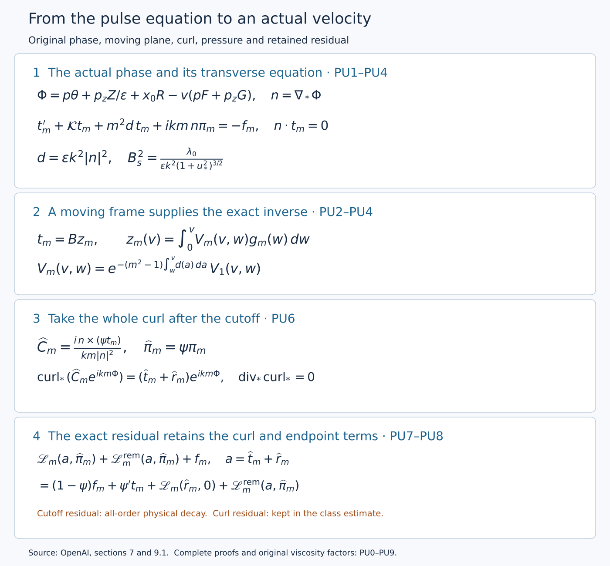
The diagram records the equations proved in PU1–PU8. The remainder in its last panel is retained in the actual equation. Editable diagram source.
PU0. The pulse inputs come from the constructed base
Keep \(0<h<1/100\), \(A=1/2+h\), \(D=1/2-h\), \(Q=2^{-\ell}\), \(\varepsilon=Q^h\), and \(S_*=\ell^2\). The original coordinates satisfy
\[ 1-t=q(1-\eta^2),\quad z=q^D\eta,\quad X=\frac{r^2}{2q},\quad L=1-2h\eta^2,\quad R=\frac r{\sqrt Q},\quad Z=\frac z{Q^D},\quad T=\frac{1-t}{Q}. \tag{PU0.1} \]The positive solution of \(q-z^2q^{2h}=1-t\) is unique for \(t<1\): the derivative of \(q^{1-2h}-(1-t)q^{-2h}\) is positive, and its endpoint limits are minus and plus infinity. At \(z=0\) the solution is \(q=1-t\). On the one-sided boundary \(t=1,z\ne0\), it is \(q=|z|^{1/D}\). Hence \(|\eta|\le1\) and \(L\ge1-2h>0\). These are the actual domains of the base field.
Put \(\xi=q/Q\in[1/2,2]\). Then
\[ \xi-Z^2\xi^{2h}=T,\quad X=\frac{R^2}{2\xi},\quad \eta=Z\xi^{-D}, \] \[ \begin{aligned} \partial_R&=(R/\xi)\partial_X,\\ \partial_Z&=\xi^{-D}L^{-1} (2\eta q\partial_q-2\eta X\partial_X+(1-\eta^2)\partial_\eta),\\ \partial_T&=\xi^{-1}L^{-1} (q\partial_q-X\partial_X-D\eta\partial_\eta). \end{aligned} \tag{PU0.2} \]Indeed implicit differentiation gives \(\xi_Z=2\eta\xi^{1-D}/L\) and \(\xi_T=1/L\); differentiating \(X,\eta\) proves the three operators. Each fixed derivative of their coefficients is bounded on the fixed enlarged annulus, since \(\xi,L,X\) remain bounded away from zero. Repeated product rules therefore carry every fixed similarity derivative estimate of the constructed base to these coefficient variables.
Let \(R_p=\sqrt{2X}\) denote the profile radius. The exact base construction and its estimates Z4–Z6 give
\[ \begin{aligned} b=Q^Au_{r,B}&=\varepsilon\xi^{-1/2} [V_0/R_p+O(q^{2h})],\\ V=Q^Au_{\theta,B}&=\xi^{-A}[E_0+O(q^{2h})],\\ G=Q^Au_{z,B}&=\xi^{-A}[U_0+O(q^{2h})],\\ Q^{2A}p_B&=\xi^{-2A}[\Pi_0+O(q^{2h})]. \end{aligned} \tag{PU0.3} \]These estimates hold after every fixed slow derivative. In particular \(b=O(\varepsilon)\), and the tangential differences from the leading fields are \(O(\varepsilon^2)\), because \(q^{2h}=\varepsilon^2\xi^{2h}\). The radial field here includes the derivative of every base cutoff in Z4. We have not substituted the formal profile series for the actual base.
Write
\[ F_{\rm prof}=\frac{E_0}{\sqrt{2X}},\quad a=1-2X\partial_X\log E_0,\quad b_s=\frac{2X(U_0)_X}{E_0},\quad v_s=a+\frac{b_s^2}{a},\quad F^{(0)}=\xi^{-A-1/2}F_{\rm prof}. \tag{PU0.4} \]The shear construction, V5–V7, proves \(F_{\rm prof}>0\), \(a>0\), \(v_s>2\), including strict endpoint margins on the closed active annulus. Thus there are constants \(F_-,a_-,d_v>0\) and finite upper bounds \(F_+,a_+\) with \(F_-\le F^{(0)}\le F_+\), \(a_-\le a\le a_+\), and \(v_s\ge2+d_v\). The same margins hold on a fixed sufficiently small radial enlargement.
Direct differentiation using PU0.2 gives the full leading shear
\[ g^{(0)}=(R\partial_RF^{(0)},\partial_RG^{(0)}) =F^{(0)}(-a,b_s),\quad N=\frac{g^{(0)}}{|g^{(0)}|},\quad K=(-N_z,N_\theta). \tag{PU0.5} \]Since \(a^2+b_s^2=av_s\), substitution gives
\[ \begin{aligned} \lambda_0^2 &=-2F^{(0)}N_\theta(2F^{(0)}N_\theta+|g^{(0)}|)\\ &=2a(F^{(0)})^2(1-2/v_s),\\ \lambda_-^2&=\frac{2a_-F_-^2d_v}{2+d_v} \le\lambda_0^2\le2a_+F_+^2=\lambda_+^2. \end{aligned} \tag{PU0.6} \]For example \(2F^{(0)}N_\theta=-2F^{(0)}a/\sqrt{av_s}\), while \(2F^{(0)}N_\theta+|g^{(0)}|=F^{(0)}a(v_s-2)/\sqrt{av_s}\); their product proves the displayed equality. In particular the positive growth rate and all frame denominators below have actual lower bounds.
The parameter \(u_*\) also comes from the constructed stress. Set \(t_s=-b_s/a\), and let \(n^T\) be the smooth unit stress direction supplied by V5, including its values at the shell edges. For the fixed \(0<\kappa_c<2\) there,
\[ n^T_\theta+t_sn^T_z\ge\kappa_c,\qquad (v_s-2)(n^T_z-t_sn^T_\theta)^2 \le(2-\kappa_c)(n^T_\theta+t_sn^T_z)^2. \tag{PU0.7} \]Put \(c_0=\lambda_0/(2F^{(0)}N_\theta)<0\), so \(c_0^2=(v_s-2)/2\). For \(T_0^*=\xi^{-A-1/2}\mathcal T_0\), the coordinate formulas
\[ N=\frac{(-1,-t_s)}{\sqrt{1+t_s^2}},\qquad K=\frac{(t_s,-1)}{\sqrt{1+t_s^2}} \]and PU0.7 give, in the shell interior,
\[ (T_0^*)_N<0,\qquad \left|c_0\frac{(T_0^*)_K}{(T_0^*)_N}\right| \le\sqrt{1-\kappa_c/2}<1. \tag{PU0.8} \]At the edges use the ratio of the unit direction components. Its denominator stays away from zero by PU0.7, so the ratio extends smoothly there. If \(m_c\) is its maximum on the closed parameter rectangle, choose
\[ r_u=\frac{1+m_c}{2},\qquad u_*=\frac{r_u}{\sqrt{1-r_u^2}},\qquad \frac{u_*}{\sqrt{1+u_*^2}}=r_u>m_c. \tag{PU0.9} \]This is one finite positive choice. Representative points, band labels, supports and this parameter are fixed before taking coefficient derivatives. The construction below selects one lower band threshold using finitely many value inequalities. Higher derivative orders change constants and polynomial degrees; they do not require a new domain.
PU1. Original input data and a fixed band threshold
Keep the original \(0<h<1/100\), \(A=1/2+h\), \(D=1/2-h\), \(Q=2^{-\ell}\), \(\varepsilon=Q^h\), \(S_*=\ell^2\), \(R=r/\sqrt Q\), \(Z=z/Q^D\), \(T=(1-t)/Q\), \(X=r^2/(2q)\), and the original auxiliary map \(Y=v_rr^{d_r}+v_tt\). The matrices, vectors, \(d_r\), \(\kappa_s=10^{-5}\), covering indices, chain-rule operators and weighted classes are defined with full factors in the wave-interaction audit, W1–W3. In particular,
\[ D_r=\partial_R+M_id_rR^{d_r-1}\mathcal L_i,\quad D_z=\varepsilon\partial_Z,\quad \mathfrak t_*=-\varepsilon\partial_T+c_iN_i, \quad T_g^{-1}S_*^{-1}<c_i\le S_*^{-1}. \tag{PU1.1} \]The pulse coordinates on each lifted rectangle satisfy
\[ v=(\eta_g+r_0)/c_i,\quad L_s=2r_0/c_i,\quad 2r_0S_*\le L_s<2r_0T_gS_*,\quad D_rv=D_zv=0,\quad c_iN_iv=1. \tag{PU1.2} \]Band and label choices, including the representative, are fixed before any coefficient derivative.
The source uses the smooth slow base column \((b,V,G)\), independent of the auxiliary variable, with \(b=O(\varepsilon)\) in every fixed slow derivative. The tangential base differs from its fixed order-zero profiles by \(O(\varepsilon^2)\), with all fixed slow derivatives. The boxes and their fixed enlargements have diameter at most \(C S_*^{-3}\). At the fixed representative put
\[ F=V/R,\quad g=(RF_R,G_R),\quad N=g_0/|g_0|,\quad K=(-N_z,N_\theta), \] \[ \lambda_0^2=-2F_0N_\theta(2F_0N_\theta+|g_0|)>0, \qquad c_0=\frac{\lambda_0}{2F_0N_\theta}<0. \tag{PU1.3} \]Here subscript zero means the order-zero quantity at the representative; \(\lambda_0>0\). These are precisely the base properties supplied to Section 7 by Theorem 4.6 and Proposition 5.5. Their actual global construction is supplied by V and Z, and the exact base-to-chart derivative map and positive shear bounds are proved in I1–I2. The calculation below proves the pulse operation with those same input fields.
Write \(0<\lambda_-\le\lambda_0\le\lambda_+\) and \(|g_0|\le g_+\) for the fixed uniform input bounds. They already imply the relevant nonzero shear and frame factors. Indeed, with \(a=2F_0N_\theta\), the relation \(-a(a+|g_0|)>0\) gives \(-|g_0|<a<0\). Moreover
\[ \lambda_0^2=|a|(|g_0|-|a|)\le |a|g_+, \quad |a|\ge\lambda_-^2/g_+, \quad |g_0|\ge2\lambda_-, \] \[ \frac{\lambda_-}{g_+}\le |c_0| \le\frac{\lambda_+g_+}{\lambda_-^2}. \tag{PU1.4} \]The inequality \(|g_0|\ge2\lambda_-\) follows from \(x(g-x)\le g^2/4\), whose difference from \(g^2/4\) is \((x-g/2)^2\). Thus the denominators used below have stated lower bounds, rather than implicit nonvanishing assumptions.
Keep \(u_*>0\) chosen by the original strict stress-cone condition, and retain
\[ \begin{gathered} k=\lceil\varepsilon^{-1/2}\rceil,\quad B_s^2=\frac{\lambda_0}{\varepsilon k^2(1+u_*^2)^{3/2}},\quad s(v)=\sigma\left(\frac{u_*}{2}+\frac{u_*v}{L_s}\right), \\(\widetilde p/R_0,p_z)=B_s\left(K-\frac{\sigma u_*g_0}{L_s|g_0|^2}\right), \quad x_0=\sigma B_su_*/2, \\ kp\text{ is a nearest nonzero integer to }k\widetilde p,\qquad \Phi=p\theta+p_zZ/\varepsilon+x_0R-v(pF+p_zG). \end{gathered} \tag{PU1.5} \]The fixed tie rule is not differentiated. For \(\varepsilon\le1\),
\[ 1\le\varepsilon k^2\le4,\quad |p-\widetilde p|\le k^{-1},\quad B_-\le B_s\le B_+, \] \[ B_-^2=\frac{\lambda_-}{4(1+u_*^2)^{3/2}},\qquad B_+^2=\frac{\lambda_+}{(1+u_*^2)^{3/2}}. \tag{PU1.6} \]For rounding, any real number has a nonzero integer within distance one: ordinary nearest-integer rounding has error at most one half except when it selects zero, in which case one of \(1,-1\) is within distance one. This proves the displayed error without using the incorrect one-half bound near zero.
Put \(H_\Phi=pF+p_zG\). The entire phase gradient is
\[ n=\nabla_*\Phi=(x_0-v(H_\Phi)_R,\ p/R,\ p_z-\varepsilon v(H_\Phi)_Z). \tag{PU1.7} \]This follows by differentiating (PU1.5) with (PU1.1) and \(D_rv=D_zv=0\). Before rounding, at the representative,
\[ (\widetilde p/R_0,p_z)\cdot g_0=-\sigma B_su_*/L_s, \]since \(K\cdot g_0=0\). Uniform first slow derivative bounds, the box diameter, the \(O(\varepsilon^2)\) base comparison, and rounding therefore give
\[ (H_\Phi)_R=-\sigma B_su_*/L_s+\mathcal E_R, \qquad |\mathcal E_R|\le C(S_*^{-3}+\varepsilon^2+k^{-1}). \tag{PU1.8} \]Consequently \(n_r=B_ss(v)-v\mathcal E_R\). The exact tangential wave-number formula gives
\[ |(p/R,p_z)-B_sK|\le C(S_*^{-1}+S_*^{-3}+k^{-1}); \]here \(R_0/R-1=O(S_*^{-3})\), using the positive lower bound on \(R\). The remaining axial term in (PU1.7) is bounded by \(C\varepsilon S_*\). Since \(n'=(-(H_\Phi)_R,0,-\varepsilon(H_\Phi)_Z)\), these estimates prove
\[ |n-B_s(s,K)|+|n'|\le C/S_* \tag{PU1.9} \]once \(S_*^2(\varepsilon+\varepsilon^2+k^{-1})\le1\). This one condition holds for all sufficiently large \(\ell\): \(S_*^2=\ell^4\), \(k^{-1}\le2^{-h\ell/2}\), and every fixed power of \(\ell\) times a decreasing exponential tends to zero, as follows by taking its logarithm \(4\log\ell-(h\log2)\ell/2\).
Increase this lower band threshold finitely so that the error in (PU1.9) is at most \(B_-/2\). Then
\[ |n_{\rm tan}|\ge B_-/2,\qquad |n|\ge B_-/2, \tag{PU1.10} \]uniformly. All fixed mixed derivatives in the slow, transverse and pulse coordinates have polynomial bounds in \(S_*\), directly from (PU1.5)–(PU1.7) and the fixed-derivative bounds of the base. Discrete data are fixed; higher derivatives do not differentiate rounding or the representative choice. Product and quotient rules, together with (PU1.10), give polynomial bounds for every smooth rational expression in these coefficients whose denominators have the displayed lower bounds. This requires no new smallness condition for a higher derivative order.
The same denominator argument applies on the enlarged lifted rectangle: its pulse coordinate ranges over \(-L_s/2<v<3L_s/2\), so \(|v|\le3L_s/2\) and \(|s(v)|\le2u_*\). The error estimates above change only their fixed constants. Include this finite enlargement in the choice of the lower band threshold. Then \(|n_{\rm tan}|\ge B_-/2\) there as well, while the base is evaluated on its prescribed smooth enlarged slow box. This supplies the smooth coefficients needed for local continuation past the pulse endpoints. The envelope and propagator bounds below are asserted on \(0\le v\le L_s\).
The full transport defect is also explicit:
\[ \begin{aligned} \mathfrak t_*\Phi&=-H_\Phi+\varepsilon v(H_\Phi)_T,\\ F\partial_\theta\Phi+GD_z\Phi&=H_\Phi-\varepsilon vG(H_\Phi)_Z,\\ E_{ik}:=(\mathfrak t_*+bD_r+F\partial_\theta+GD_z)\Phi &=\varepsilon v((H_\Phi)_T-G(H_\Phi)_Z)+bn_r. \end{aligned} \tag{PU1.11} \]Every fixed coefficient derivative of the last line has a factor \(\varepsilon\) and a polynomial in \(S_*\), because every such derivative of \(b\) is \(O(\varepsilon)\). Finally \(kp\ne0\) is an integer, so all \(e^{ikm\Phi}\), \(m\ne0\), have nonzero integer angular frequency.
Include \(2r_0S_*\ge25\) for the concentration calculation in Exercise 3. Choose a lower band index \(\ell_*\) satisfying these finitely many value conditions and set \(q_*\le\min(q_{\rm big},2^{-\ell_*-1})\). For \(q<q_*\) and \(q/Q\in[1/2,2]\), \(Q\le2q<2^{-\ell_*}\), so all relevant bands satisfy the chosen threshold. The choice has no dependence on the harmonic bound, derivative order or correction stage.
PU2. Exact moving-plane equation, frame and pressure
Retain the original matrix and projection:
\[ \mathcal K=\begin{pmatrix}0&-2F&0\\2F+RF_R&0&0\\G_R&0&0\end{pmatrix}, \quad \Pi_n f=f-\frac{n(n\cdot f)}{|n|^2},\quad \mathcal A=-\mathcal K+\frac{n(n^T\mathcal K-(n')^T)}{|n|^2}, \] \[ d=\varepsilon k^2|n|^2>0. \tag{PU2.1} \]Dot products here are bilinear extensions of the real Euclidean dot product; \(n\) and all these coefficients are real. In particular \(n^T\mathcal A=-(n')^T\) and \(n\cdot\Pi_nf=0\).
The three-dimensional initial-value equation
\[ t_m'=\mathcal A t_m-m^2dt_m-\Pi_nf_m,\qquad t_m(0)=0 \tag{PU2.2} \]preserves the constraint exactly:
\[ (n\cdot t_m)'=-m^2d(n\cdot t_m),\qquad n(0)\cdot t_m(0)=0. \tag{PU2.3} \]Multiplication by \(\exp(m^2\int_0^v d)\) proves that the scalar in (PU2.3) is zero. Rearranging (PU2.2) gives
\[ t_m'+\mathcal Kt_m+m^2dt_m+f_m =\frac n{|n|^2}(n\cdot\mathcal Kt_m-n'\cdot t_m+n\cdot f_m). \]Therefore the original pressure, including its complex sign, is
\[ \pi_m=\frac{i}{km}\frac{n\cdot\mathcal Kt_m-n'\cdot t_m+n\cdot f_m}{|n|^2}, \tag{PU2.4} \]and multiplication by \(ikmn\) cancels the preceding normal vector because \(i^2=-1\). Thus
\[ t_m'+\mathcal Kt_m+m^2dt_m+ikmn\pi_m=-f_m,\qquad n\cdot t_m=0. \tag{PU2.5} \]This includes the normal component of the source. Conversely any solution of (PU2.5) with the constraint has (PU2.4), by taking its dot product with \(n\), and then satisfies (PU2.2). Thus uniqueness for (PU2.2) proves uniqueness for the constrained amplitude and its pressure.
Define the actual frame without replacing the phase normal:
\[ K_a=n_{\rm tan}/|n_{\rm tan}|,\quad N_a=((K_a)_z,-(K_a)_\theta),\quad s_a=n_r/|n_{\rm tan}|,\quad U=[e_r-s_aK_a,N_a], \] \[ c(v)=c_0\sqrt{1+s(v)^2},\quad M=\begin{pmatrix}1&1\\c&-c\end{pmatrix},\quad B=UM,\quad M^{-1}=\frac12\begin{pmatrix}1&c^{-1}\\1&-c^{-1}\end{pmatrix}, \] \[ B^\ell=M^{-1}\begin{pmatrix}e_r^T\\N_a^T\end{pmatrix}. \tag{PU2.6} \]The columns of \(U\) lie in \(n^\perp\), are independent, and \((e_r^T;N_a^T)U=I_2\). Since \(c\ne0\) by (PU1.4), \(B^\ell B=I_2\), and \(BB^\ell t=t\) for \(t\in n^\perp\). We only assert this last identity on that plane: \(BB^\ell\) need not be the orthogonal projection on all of \(\mathbb C^3\). Equations (PU1.9)–(PU1.10) and (PU1.4) bound \(B,B^\ell\) uniformly and bound every fixed derivative polynomially.
At the reference normal \(n_0=B_s(s,K)\), let \(e=e_r-sK\) and write \(t=xe+yN\). The frozen \(\mathcal K_0\) uses \(F_0\) and \(g_0=|g_0|N\). Direct multiplication gives
\[ -\mathcal K_0e=(-2F_0sK_\theta,-2F_0e_\theta-g_0),\qquad -\mathcal K_0N=(2F_0N_\theta,0), \]where each pair lists its radial and tangential parts. Consequently
\[ e\cdot(-\mathcal K_0e)=sK\cdot g_0=0,\quad e\cdot(-\mathcal K_0N)=2F_0N_\theta,\quad N\cdot(-\mathcal K_0e)=-(2F_0N_\theta+|g_0|), \]and \(N\cdot(-\mathcal K_0N)=0\). The normal projection contributes zero to these dot products. Since \(|e|^2=1+s^2\), \(|N|^2=1\), and \(e\cdot N=0\), the exact two-dimensional reference matrix is
\[ L_0=\begin{pmatrix}0&2F_0N_\theta/(1+s^2)\\-(2F_0N_\theta+|g_0|)&0\end{pmatrix}. \tag{PU2.7} \]Its eigenvectors are \((1,c)^T,(1,-c)^T\). Indeed, writing \(a=2F_0N_\theta\), the first component of \(L_0(1,c)^T\) is \(ac/(1+s^2)=\lambda_0/\sqrt{1+s^2}\), and its second is \(-(a+|g_0|)=\lambda_0^2/a=\lambda c\). Thus
\[ M^{-1}L_0M=\operatorname{diag}(\lambda,-\lambda),\qquad \lambda(v)=\lambda_0/\sqrt{1+s^2}>0. \tag{PU2.8} \]For the actual coefficients, the algebraic projection \(-\mathcal K+nn^T\mathcal K/|n|^2\) differs from its frozen counterpart by \(O(S_*^{-1})\), by (PU1.8)–(PU1.10), the base comparison and the box diameter. The actual \(K_a,N_a,s_a\) differ from \(K,N,s\) by that order. The moving-normal term \(-n(n')^T/|n|^2\) is also \(O(S_*^{-1})\). Finally \(K_a',N_a',s_a'=O(S_*^{-1})\) by differentiating their exact quotients and using (PU1.9), while \(s'=\sigma u_*/L_s=O(S_*^{-1})\). Hence \(B'=O(S_*^{-1})\). Substituting all these differences, using the uniform matrix bounds, proves
\[ B^\ell(\mathcal AB-B')=\operatorname{diag}(\lambda,-\lambda)+E, \qquad \|E\|\le C_E/S_*. \tag{PU2.9} \]All fixed derivatives of \(E\) are polynomially bounded; they are not asserted to be \(O(S_*^{-1})\). Similarly, with the original reference damping,
\[ d_{\rm ref}=\varepsilon k^2B_s^2(1+s^2) =\frac{\lambda_0(1+s^2)}{(1+u_*^2)^{3/2}},\qquad |d-d_{\rm ref}|\le C_d/S_*. \tag{PU2.10} \]For the last inequality use \(\big||n|^2-|n_0|^2\big|\le|n-n_0|(|n|+|n_0|)\), (PU1.6), and the uniform bounds already proved.
Because \(n^T(\mathcal AB-B')=-(n')^TB-n^TB'=0\), this matrix maps into the moving plane. Consequently the exact correspondence \(t_m=Bz_m\) turns (PU2.2) into
\[ z_m'=A_mz_m+g_m,\quad A_m=\operatorname{diag}(\lambda,-\lambda)+E-m^2dI_2, \quad g_m=-B^\ell\Pi_nf_m,\quad z_m(0)=0. \tag{PU2.11} \]The verified identities for \(BB^\ell\) prove both directions of this correspondence; no normal component has been removed without recovering its pressure.
PU3. Exact envelope and forward propagator
Use the original envelope
\[ P(v)=\exp\left(\int_{L_s/2}^{v}(\lambda(w)-d_{\rm ref}(w))\,dw\right). \tag{PU3.1} \]Write \(y=|s(v)|=u_*/2+u_*v/L_s\), retaining the original \(v\) and \(L_s\). Direct integration gives the exact identity
\[ \begin{aligned} \log P(v)=\frac{\lambda_0L_s}{u_*}\bigg[&\operatorname{arsinh}y-\operatorname{arsinh}u_* \\&-\frac{y+y^3/3-u_*-u_*^3/3}{(1+u_*^2)^{3/2}}\bigg]. \end{aligned} \tag{PU3.2} \]To verify it, differentiate \(\operatorname{arsinh}y\) to obtain \((1+y^2)^{-1/2}\), differentiate \(y+y^3/3\) to obtain \(1+y^2\), and use \(y'=u_*/L_s\). Both sides vanish at \(v=L_s/2\).
Let
\[ a(v)=\lambda(v)-d_{\rm ref}(v) =\frac{\lambda_0}{\sqrt{1+y^2}}-\frac{\lambda_0(1+y^2)}{(1+u_*^2)^{3/2}}. \]Then \(a(L_s/2)=0\) and exactly
\[ a'(v)=-\frac{u_*\lambda_0 y}{L_s} \left((1+y^2)^{-3/2}+2(1+u_*^2)^{-3/2}\right). \tag{PU3.3} \]Since \(u_*/2\le y\le3u_*/2\), define the fixed positive constants
\[ c_- =\frac{\lambda_-u_*^2}{2} \left((1+9u_*^2/4)^{-3/2}+2(1+u_*^2)^{-3/2}\right), \] \[ c_+ =\frac{3\lambda_+u_*^2}{2} \left((1+u_*^2/4)^{-3/2}+2(1+u_*^2)^{-3/2}\right). \tag{PU3.4} \]Each positive factor in (PU3.3) is bounded by its respective endpoint bounds, proving \(-c_+/L_s\le a'(v)\le-c_-/L_s\). Taylor's integral formula about the midpoint, applied to \(\log P\) whose value and first derivative vanish there, now gives on both sides
\[ \exp\left(-\frac{c_+(v-L_s/2)^2}{2L_s}\right) \le P(v)\le \exp\left(-\frac{c_-(v-L_s/2)^2}{2L_s}\right)\le1. \tag{PU3.5} \]For the left side of the midpoint, substitute \(v=L_s/2-x\) in Taylor's integral formula; the same nonnegative triangular kernel integrates \((\log P)''\). Thus no sign is changed by integrating backward. These are analytic bounds, not numerical enclosures.
For completeness, the fundamental matrix of a continuous matrix coefficient \(A_m\) on a fixed finite interval is obtained by the series
\[ V_m(v,w)=I_2+\sum_{n\ge1} \int_{w\le a_n\le\cdots\le a_1\le v} A_m(a_1)\cdots A_m(a_n)\,da_n\cdots da_1. \tag{PU3.6} \]If \(\|A_m\|\le K\) there, the \(n\)-th term is bounded by \(K^n(v-w)^n/n!\). Uniform absolute convergence, and the same estimate for the differentiated integral series, prove \(\partial_vV_m=A_mV_m\), \(V_m(w,w)=I_2\). A difference of two solutions with zero initial value satisfies \(u(v)=\int_w^v A_m(a)u(a)\,da\); iterating this identity and letting \(n\to\infty\) with the same factorial bound proves uniqueness. Thus this construction supplies the finite-interval existence and uniqueness used in PU2, rather than assuming a solution with the desired bound.
For a complex solution of \(z'=A_1z\), using the Hermitian norm only in this norm estimate,
\[ \frac12(|z|^2)'=\operatorname{Re}(z^*A_1z) \le\left(\lambda-d_{\rm ref}+\frac{C_E+C_d}{S_*}\right)|z|^2. \tag{PU3.7} \]Multiply by the exponential of minus twice the integral of the scalar coefficient to obtain a nonincreasing quantity. Taking square roots and the supremum over initial vectors proves
\[ \|V_1(v,w)\|\le e^{(C_E+C_d)(v-w)/S_*}\frac{P(v)}{P(w)} \le C_V\frac{P(v)}{P(w)},\quad C_V=e^{2r_0T_g(C_E+C_d)}. \tag{PU3.8} \]The scalar damping commutes with every matrix, so direct differentiation and uniqueness in (PU3.6) prove the exact identity
\[ V_m(v,w)=\exp\left(-(m^2-1)\int_w^v d(a)\,da\right)V_1(v,w). \tag{PU3.9} \]Since \(d>0\) and \(m\in\mathbb Z\setminus\{0\}\), its scalar factor is at most one. Therefore (PU3.8) holds for every nonzero integer \(m\), with the same constant and the same domain. This is why higher harmonics do not require another smallness threshold.
PU4. Source inverse, derivatives and the exact common-torus path
Let \(f_m\) have exactly the support, smooth-extension and fixed-derivative bounds of original Proposition 7.2: for each fixed multi-index \(I\) in \((R,Z,T,H)\),
\[ |\partial^I f_m|\le C_I\varepsilon^\alpha S_*^{b_I} \sqrt\zeta\,\delta^{-a_I}P(v),\qquad 0\le v\le L_s, \tag{PU4.1} \]with fixed closed slow support inside the label support, compact transverse support inside \(\operatorname{supp}\chi_g\), and zero extension at the shell edges. The full weights are
\[ \zeta(X)=\exp\left(-\frac{a_a}{\log^2(X/X_a)}-\frac{a_b}{\log^2(X_b/X)}\right),\quad \delta(X)=\min\{1,\log(X/X_a),\log(X_b/X)\},\quad a_a,a_b>0. \tag{PU4.2} \]The source may depend on the common torus without descending to the finer band torus; its values on different preimages are not averaged or identified. It need not be transverse to \(n\). No divisibility by a cutoff is assumed.
The actual solution is
\[ z_m(v)=\int_0^v V_m(v,w)g_m(w)\,dw,\qquad t_m(v)=B(v)z_m(v), \tag{PU4.3} \]with pressure (PU2.4). Inserting (PU3.8) and the source bound cancels \(P(w)\) exactly. The path fixes \((R,Z,T)\), hence \(\zeta,\delta\), and its length is at most \(2r_0T_gS_*\). This gives
\[ |z_m(v)|\le C\varepsilon^\alpha S_*^{b_0+1}\sqrt\zeta\delta^{-a_0}P(v), \tag{PU4.4} \]enlarging the constant or polynomial degree for the bounded frame factors if needed.
First differentiate in slow variables and the initial transverse coordinate, holding \(v\) fixed. The labels and \(L_s\) are constants in these derivatives. They commute with \(\partial_v\). The differentiated equation is exactly
\[ (\partial^I z_m)'=A_m\partial^I z_m+\partial^Ig_m +\sum_{0<J\le I}\binom IJ(\partial^JA_m)\partial^{I-J}z_m, \quad \partial^Iz_m(0)=0. \tag{PU4.5} \]The coefficient derivatives \(\partial^JA_m\) are bounded by \(C_{J,M}S_*^{c_J}\) for a fixed finite harmonic set \(0<|m|\le M\); the factor \(m^2\) is retained in the constant. At derivative order \(I\), Leibniz' formula bounds \(\partial^Ig_m\) by a polynomial in \(S_*\) times the same \(\varepsilon^\alpha\sqrt\zeta\delta^{-a}P\) weight. Inductively every other source in (PU4.5) has this weight too. Applying (PU3.8) again increases its polynomial degree by one from the interval length. More explicitly, if the source term for \(\partial^Ig_m\) has degree \(b_I^g\) and the previously proved solution degrees are \(b'_{I-J}\), choose
\[ b'_I=1+\max\left\{b_I^g,\max_{0<J\le I}(c_J+b'_{I-J})\right\}, \quad a'_I=\max\left\{a_I^g,\max_{0<J\le I}a'_{I-J}\right\}. \tag{PU4.6} \]These choices prove the induction for every fixed multi-index. No additional power of \(\varepsilon\) is lost. Pulse derivatives follow by repeatedly differentiating \(z'_m=A_mz_m+g_m\); each derivative is a finite sum of products already bounded, so it has the same envelope with enlarged polynomial degree. Applying product rules to \(t_m=Bz_m\) proves its corresponding estimates. The pressure formula (PU2.4), (PU1.10), and \(|km|^{-1}\le\varepsilon^{1/2}\) give the full bounds
\[ t_m\in\mathsf W_\alpha\text{ on the labelled interval},\qquad \pi_m\in\mathsf W_{\alpha+1/2}\text{ there}. \tag{PU4.7} \]All source and solution derivatives have their own estimates (PU4.1); this argument does not infer derivative bounds by differentiating a pointwise inequality for the envelope.
Here is the precise map on the common torus. For \(H=J_g^{i_0}Y\), \(\Delta=i-i_0\in\{0,\ldots,\Delta_{\max}\}\), define
\[ \lambda_t(w)=\frac{v_t\cdot w}{1+b_g^2},\quad \lambda_r(w)=\frac{v_r\cdot w}{1+b_g^2}. \]On a chosen lift, \(\eta_g(H)=\lambda_t(J_g^\Delta H-c_\gamma-k_{\rm copy})\), and the source in (PU4.3) is evaluated at
\[ H_w=H+T_g^{-\Delta}c_i(w-v(H))v_t. \tag{PU4.8} \]Because \(\lambda_tJ_g^\Delta=T_g^\Delta\lambda_t\),
\[ D_HH_w=I_2-v_t\lambda_t,\quad D_H^aH_w=0\ (a\ge2),\quad D_Hv=T_g^\Delta\lambda_t/c_i, \quad D_H\xi_g=\Lambda_g^\Delta\lambda_r. \tag{PU4.9} \]The derivative of the first path map is bounded independently of the band; the derivative of \(v\) costs only a factor \(C S_*\). Differentiating a coefficient expressed in \((\xi_g,v)\) thus introduces fixed powers of these constant linear maps. Conversely the initial transverse and pulse directions in \(H\) are \(J_g^{-\Delta}v_r\) and \(T_g^{-\Delta}c_iv_t\) on this local lift; these are legitimate linear maps in the covering chart, not an asserted global inverse to a torus covering. They have bounded coefficients. These identities prove (PU4.7) in exactly the original \((R,Z,T,H)\) coefficient variables.
The path fixes the slow and transverse point. If that point is outside the prescribed support, its source is zero for the entire interval, and (PU4.3) makes the solution zero there. Its derivatives extend by zero across those boundaries by (PU4.5), or directly by solving the equation for the given smooth source extension. At shell edges, \(\sqrt\zeta\delta^{-a}\) tends to zero with every fixed derivative; the estimates in PU4 and the zero-extension argument of W3 therefore prove smooth extension for the solution and pressure. There is no claimed temporal zero extension before the pulse cutoff. Smooth coefficients on the enlarged rectangle provide a local extension of the initial-value solution past each endpoint; the bounds above concern the closed interval itself.
Deck translations preserving \(H\) translate (PU4.8) and reindex its lift by the same integer vector. The source values agree under those translations, and uniqueness proves the same for the solution. Distinct preimages of a finer band-torus point remain distinct points of \(H\), with their actual source data. On overlapping common-torus neighborhoods, pull everything to the absolute torus. The path is \(Y_w=Y+T_g^{-i}c_i(w-v(Y))v_t\) in both descriptions. Compatible source data and uniqueness then prove compatibility of the output. On compact sets with \(q>0\), uniform one-sided slow derivatives at \(\tau=0\) pass through the same differentiated equations and their integrals, proving the stated one-sided derivative property. The number of derivatives and the finite harmonic set change constants and degrees only, not the previously chosen \(q_*\).
PU5. The homogeneous pulse and its momentum flux direction
The primary stress construction needs a nonzero homogeneous solution, not the zero-data sourced solution. Use the original initial data in the growing coordinate:
\[ z_+(0)=P(0)>0,\qquad z_-(0)=0,\qquad t^h=B(z_+,z_-)^T,\qquad (t^h)'=\mathcal A t^h-dt^h. \tag{PU5.1} \]All coefficients and data are real. On any interval with \(z_+>0\), put \(r=z_-/z_+\). Subtracting the two quotient terms from (PU2.11) gives exactly
\[ r'=E_{21}+(-2\lambda+E_{22}-E_{11})r-E_{12}r^2,\qquad r(0)=0. \tag{PU5.2} \]Let \(c_\lambda=\lambda_-/\sqrt{1+9u_*^2/4}>0\), and retain \(|E_{ab}|\le C_E/S_*\). Choose \(K_b=2C_E/c_\lambda+1\), and include \(S_*\ge4K_b\) among the finite value conditions defining the common threshold in PU1. At either boundary \(r=\pm K_b/S_*\),
\[ \pm r'\le\frac{C_E-2c_\lambda K_b+2C_EK_b/S_*+C_EK_b^2/S_*^2}{S_*} \le\frac{25C_E/16-2c_\lambda K_b}{S_*}<0. \tag{PU5.3} \]A differentiable function starting inside this interval cannot first cross its upper boundary with strictly negative derivative, or its lower boundary with strictly positive derivative. Hence \(|r|\le K_b/S_*\le1/4\) while the ratio exists. Also
\[ \left(\log\frac{z_+}{P}\right)'=-(d-d_{\rm ref})+E_{11}+E_{12}r, \]so, with \(C_h=C_d+5C_E/4\),
\[ \left|\log\frac{z_+(v)}{P(v)}\right| \le C_hv/S_*\le2r_0T_gC_h=:C_{h,0}. \tag{PU5.4} \]For any fixed band, the positive continuous \(P\) has positive minimum on \([0,L_s]\). The lower bound in (PU5.4) therefore prevents \(z_+\) from reaching zero. The ratio and its bound extend to the entire interval.
In the actual \(U\) coordinates, write \(t^h=x(e_r-s_aK_a)+yN_a\). The full matrix \(M\) gives
\[ x=z_+(1+r),\qquad y=c_0\sqrt{1+s^2}\,z_+(1-r), \] \[ \frac34e^{-C_{h,0}}P(v)\le x(v)\le\frac54e^{C_{h,0}}P(v), \quad \frac yx-c_0\sqrt{1+s^2} =-\frac{2c_0\sqrt{1+s^2}\,r}{1+r}. \tag{PU5.5} \]The last expression is bounded by \((8/3)\sup|c_0\sqrt{1+s^2}|K_b/S_*\). This proves the full source direction estimate (7.21), including its sign and radial lower bound.
The value estimate also follows from \(V_1(v,0)(P(0),0)^T\), using (PU3.8). Initial data \(P(0)\) are fixed with the label, so their slow and transverse derivatives vanish. Repeating (PU4.5) for this homogeneous solution proves \(|\partial^I t^h|\le C_IS_*^{b_I}P(v)\) at every fixed derivative order; pulse derivatives again follow from the equation. Its pressure is (PU2.4) with \(f_m=0,m=1\), and has the factor \(\varepsilon^{1/2}\). These are estimates for the pulse before multiplying by the radial, transverse and slow amplitude factors used in stress realization. No shell weight or compact shell support is asserted for this unweighted homogeneous pulse itself.
Its energy identity retains the original shear and viscosity contributions. Because \(n\cdot t^h=0\), the normal term in \(\mathcal A t^h\) has zero dot product with \(t^h\). For any real \(t=(t_r,t_\theta,t_z)\), direct multiplication gives
\[ t\cdot\mathcal Kt=-2Ft_rt_\theta+(2F+RF_R)t_rt_\theta+G_Rt_rt_z =g\cdot(t_r(t_\theta,t_z)). \]Thus the exact homogeneous identity is
\[ \frac12\frac d{dv}|t^h|^2 =-g\cdot(t_r^h(t_\theta^h,t_z^h)) -\varepsilon k^2|n|^2|t^h|^2. \tag{PU5.6} \]The stress map to be checked next must match both components of this radial momentum flux. Establishing (PU5.6) alone does not construct that stress map.
PU6. Actual compact velocity, pressure, and every endpoint term
Let \(0\le\psi(v)\le1\) be the original smooth pulse cutoff, equal to one on \(|v-L_s/2|\le L_s/5\), supported in \(|v-L_s/2|<L_s/3\), rescaled from a fixed function. For the sourced solution set
\[ \widehat t_m=\psi t_m,\qquad \widehat\pi_m=\psi\pi_m,\qquad C_m=\frac{i\,n\times t_m}{km|n|^2},\qquad \widehat C_m=\psi C_m. \tag{PU6.1} \]The exact actual velocity amplitude, rather than just its transverse part, is
\[ \operatorname{curl}_*(\widehat C_me^{ikm\Phi}) =(\widehat t_m+\widehat r_m)e^{ikm\Phi}, \] \[ \widehat r_m= \big(-D_z(\widehat C_m)_\theta, \ D_z(\widehat C_m)_r-D_r(\widehat C_m)_z, \ (D_r+R^{-1})(\widehat C_m)_\theta\big). \tag{PU6.2} \]Here are all component terms of the curl and its divergence. For any smooth vector column \(C\),
\[ \operatorname{curl}_* C= \big(R^{-1}\partial_\theta C_z-D_zC_\theta,\quad D_zC_r-D_rC_z,\quad (D_r+R^{-1})C_\theta-R^{-1}\partial_\theta C_r\big). \tag{PU6a.1} \]The original operators satisfy \([D_r,D_z]=[D_r,\partial_\theta]=[D_z,\partial_\theta]=0\), \(D_rR=1\), and \(D_zR=\partial_\theta R=0\): these follow directly from PU1.1, since its auxiliary vector field is constant and its coefficient depends only on \(R\). Therefore
\[ \begin{aligned} \operatorname{div}_*\operatorname{curl}_* C={}& R^{-1}D_r\partial_\theta C_z-(D_r+R^{-1})D_zC_\theta\\ &+R^{-1}D_z\partial_\theta C_r-R^{-1}\partial_\theta D_rC_z\\ &+D_z(D_r+R^{-1})C_\theta-R^{-1}D_z\partial_\theta C_r=0. \end{aligned} \tag{PU6a.2} \]For its first term use \((D_r+R^{-1})(R^{-1}f)=R^{-1}D_rf\); the three pairs then cancel. In the curl of the harmonic potential, differentiating the exponential gives
\[ ikm\,n\times\widehat C_m =-\frac{n\times(n\times\widehat t_m)}{|n|^2} =\widehat t_m-\frac{n(n\cdot\widehat t_m)}{|n|^2} =\widehat t_m. \tag{PU6a.3} \]The remaining terms are exactly PU6.2. If \(a_m=\widehat t_m+\widehat r_m\), the divergence identity gives the full longitudinal relation
\[ ikm\,n\cdot a_m=-\big((D_r+R^{-1})(a_m)_r+D_z(a_m)_z\big), \qquad n\cdot a_m\in\mathsf W_{\alpha+1/2-\kappa_s}. \tag{PU6a.4} \]The class conclusion follows from one \(D_r\) loss and \(1/|km|\le\varepsilon^{1/2}\), after PU6.3 below supplies \(a_m\in\mathsf W_\alpha\). Each fixed derivative follows by the same identity and Leibniz' rule. The chain rule for the physical evaluation map preserves this exact zero divergence. Now (PU1.10) supplies the uniform denominator bound needed for this particular potential. The factor \((km)^{-1}\) increases the exponent by one half; one \(D_r\) can cost at most \(\kappa_s\). Hence, with all fixed coefficient derivatives and the original supports,
\[ \widehat C_m\in\mathsf W_{\alpha+1/2},\quad \widehat r_m\in\mathsf W_{\alpha+1/2-\kappa_s},\quad \widehat t_m+\widehat r_m\in\mathsf W_\alpha, \quad\widehat\pi_m\in\mathsf W_{\alpha+1/2}. \tag{PU6.3} \]These class bounds follow by Leibniz' rule with (PU4.7); derivatives of the quotient \(n/|n|^2\) are polynomially bounded by PU1. All spatial derivatives of the temporal cutoff actually vanish here: \(D_r\psi=D_z\psi=\partial_\theta\psi=0\). Thus \(\widehat r_m=\psi r_m\) for the uncut remainder defined by (PU6.2) with \(C_m\). Time derivatives of this product still contain \(\psi' r_m\); none are deleted. Both the potential and pressure vanish on open neighborhoods of the pulse endpoints, which supplies their smooth zero extensions there. The other support boundaries were already checked in PU4.
The complete principal cutoff identity is
\[ \widehat t_m'+\mathcal K\widehat t_m+m^2d\widehat t_m +ikmn\widehat\pi_m+f_m =(1-\psi)f_m+\psi't_m. \tag{PU6.4} \]It follows by multiplying (PU2.5) by \(\psi\), retaining the derivative \((\psi t_m)'\), and adding \(f_m\). Where either right-hand term is nonzero, \(|v-L_s/2|\ge L_s/5\), so (PU3.5) and (PU1.2) give
\[ P(v)\le e^{-c_-L_s/50}\le e^{-(c_-r_0/25)S_*}. \tag{PU6.5} \]Every fixed derivative of these terms has this same exponential smallness, times a permitted polynomial in \(S_*\) and shell factors, because the solution and source have their differentiated envelope bounds. The cutoff derivatives themselves obey \(|\psi^{(j)}|\le C_jL_s^{-j}\), and conversion to \(H\) multiplies only by powers of \(S_*\).
For the global assertion in original Proposition 9.1, the incoming source harmonic has its stated smooth zero extension across the entire fixed rectangle, including the temporal endpoints. This additional source property makes (PU6.4) a global residual identity after the supported fields are extended by zero. Proposition 7.2 by itself did not impose that property on an arbitrary uncut source, and the present calculation does not add it silently. The actual source containment is now proved in S1–S5, and the four updates preserving it are checked in K0–K8.
Real fields use conjugate harmonic pairs. Since \(A_m\) depends on \(m^2\) and is real, uniqueness gives \(t_{-m}=\overline{t_m}\) for \(f_{-m}=\overline{f_m}\). The factors \(i/(km)\) in the pressure and potential give \(\pi_{-m}=\overline{\pi_m}\), \(C_{-m}=\overline{C_m}\). The real cosine velocity \(t\cos(k\Phi)\) therefore has amplitudes \(t/2\) at both \(m=1,-1\), with their actual conjugate pressures and potentials. No factor two is suppressed in assembling the real velocity.
PU7. Physical factors and infinite-order cutoff decay
At viscosity one the physical potential, velocity, pressure and residual corresponding to chart fields have the factors
\[ Q^{1/2-A},\qquad Q^{-A},\qquad Q^{-2A},\qquad Q^{-2A-1/2}, \tag{PU7.1} \]respectively. Their physical derivatives use the original evaluation map and chain-rule operators (PU1.1). At any fixed derivative order and finite stage, each conversion contributes only a fixed power of \(Q^{-1}\) and a polynomial in \(S_*\): the radial factor is \(Q^{-1/2}\), the axial factor \(Q^{-D}\), the slow time factor \(Q^{-1}\), and the auxiliary factors come from \(T_g^i\) and \(\Lambda_g^i\), bounded by fixed powers of \(Q^{-1}\) using their explicit covering-index formula. Derivatives of the oscillatory exponential retain their finite factors \(km\) and the displayed phase derivatives; \(k\le2Q^{-h/2}\), \(\varepsilon^{-1}=Q^{-h}\). Derivatives of the cylindrical frame introduce only finite powers of \(r^{-1}\), with \(r=\sqrt Q R\) and \(R\) bounded away from zero. All remaining fixed coefficient derivatives have already been bounded.
The edge factors \(\sqrt\zeta\delta^{-a}\) are bounded uniformly on the shell, since they vanish at both edges and are continuous on its interior. Taking any fixed physical space-time derivative of a cutoff term from (PU6.4) thus gives a bound
\[ CQ^{-M}S_*^B e^{-cS_*},\qquad c=c_-r_0/25>0, \tag{PU7.2} \]for fixed finite \(M,B\), allowing them to include the fixed factor \(\varepsilon^\alpha\). Since \(q\ge Q/2\), for every fixed \(N\ge0\),
\[ q^{-N}Q^{-M}S_*^B e^{-cS_*} \le2^N\exp\big(-c\ell^2+(M+N)\ell\log2+2B\log\ell\big)\longrightarrow0. \tag{PU7.3} \]The limit follows because the negative quadratic term dominates the linear and logarithmic terms; for large \(\ell\) their sum is at most \(-c\ell^2/2\). The finitely many remaining bands enlarge the bound's constant. This proves the all-order \(O(q^N)\) assertion for each fixed physical derivative, uniformly over the bands and labels. Fixed-stage label sums add at most a polynomial mesh factor, absorbed into \(S_*^B\). These residuals remain actual additive terms; flatness does not mean they are zero.
For the original arbitrary \(\nu>0\), keep the exact map of the moment audit M2.4–M2.7:
\[ y=x/\sqrt\nu,\qquad u_\nu=\sqrt\nu\,u_1(y,t),\quad p_\nu=\nu p_1(y,t),\quad f_\nu=\sqrt\nu f_1(y,t). \]Thus the four factors in (PU7.1) become, in the same order,
\[ \nu Q^{1/2-A},\qquad\sqrt\nu Q^{-A},\qquad \nu Q^{-2A},\qquad\sqrt\nu Q^{-2A-1/2}. \tag{PU7.4} \]The original coordinates are \(R=r_\nu/\sqrt{\nu Q}\), \(Z=z_\nu/(\sqrt\nu Q^D)\), \(T=(1-t)/Q\), with \(q_\nu-(z_\nu^2/\nu)q_\nu^{2h}=1-t\), \(X=r_\nu^2/(2\nu q_\nu)\), and \(Y=v_r(r_\nu/\sqrt\nu)^{d_r}+v_tt\). A fixed number of spatial derivatives adds a fixed power of \(\nu^{-1/2}\), absorbed only into the constant for that fixed original viscosity. In particular \(\nu\Delta_xu_\nu=\sqrt\nu\Delta_yu_1\); the factor \(\varepsilon k^2|n|^2\) in the pulse damping is unchanged by this exact map. All factors are retained, and the same all-order cutoff conclusion follows for each \(\nu>0\).
PU8. Full linearized residual after the curl
The principal amplitude-pressure operator is
\[ \mathscr L_m(a,\pi)=c_{i_0}N_{i_0}a+\mathcal Ka +\varepsilon k^2m^2|n|^2a+ikmn\pi. \tag{PU8.1} \]On each lifted rectangle \(c_{i_0}N_{i_0}=\partial_v\) with the slow and transverse coordinates held fixed, including for sources that only descend to the common torus. The full linearization of the Navier–Stokes residual about \((b,V,G)\), on the harmonic \(ae^{ikm\Phi}\) with pressure \(\pi e^{ikm\Phi}\), has coefficient \(\mathscr L_m(a,\pi)+\mathscr L_m^{\rm rem}(a,\pi)\), where
\[ \begin{aligned} \mathscr L_m^{\rm rem}(a,\pi)={}& (-\varepsilon\partial_T+bD_r+GD_z)a+ikmE_{ik}a \\&+a_r(\partial_Rb)e_r+a_zD_z(b,V,G)+(b/R)a_\theta e_\theta +(D_r\pi,0,D_z\pi) \\&-\varepsilon\big\{(D_r^2+R^{-1}D_r+D_z^2)a -R^{-2}(a_r,a_\theta,0) \\&\hspace{27mm}+2ikm(n_rD_r+n_zD_z)a \\&\hspace{27mm}+ikm(D_rn_r+n_r/R+D_zn_z)a \\&\hspace{27mm}+2ikm(n_\theta/R)(-a_\theta,a_r,0)\big\}. \end{aligned} \tag{PU8.2} \]Here is a component derivation. The two transports use the exact cylindrical formula W1.6. Their frame terms sum to \((-2Va_\theta/R,Va_r/R+ba_\theta/R,0)\). The radial derivatives of the tangential base add \((0,\partial_RV\,a_r,\partial_RG\,a_r)\); because \(\partial_RV=F+RF_R\), their sum gives the full \(\mathcal K a\) and the remaining \((b/R)a_\theta e_\theta\). The other base derivatives are exactly \(a_r(\partial_Rb)e_r+a_zD_z(b,V,G)\). Phase transport gives \(ikmE_{ik}a\) after the cancellation in (PU1.11). The pressure gradient is \(ikmn\pi+(D_r\pi,0,D_z\pi)\).
For the scalar Laplacian applied componentwise, the product rule gives its amplitude part \((D_r^2+R^{-1}D_r+D_z^2)a\), phase-quadratic part \(-k^2m^2|n|^2a\), mixed part \(2ikm(n_rD_r+n_zD_z)a\), and phase divergence \(ikm(D_rn_r+n_r/R+D_zn_z)a\). The angular derivative of \(n_\theta=p/R\) is zero. The cylindrical vector Laplacian adds \(-R^{-2}(a_r,a_\theta,0)\) and \(2R^{-2}\partial_\theta(-a_\theta,a_r,0)e^{ikm\Phi}\), which gives the last line in (PU8.2). Multiplication by the residual sign \(-\varepsilon\) places the phase-quadratic part in (PU8.1) with its positive sign. This accounts for every term in original (9.2).
For \(a\in\mathsf W_\alpha\), \(\pi\in\mathsf W_{\alpha+1/2}\), the gains over \(\alpha\), with all coefficient derivatives, are as follows:
| Full group in (PU8.2) | Lower gain |
|---|---|
| \(-\varepsilon\partial_Ta+bD_ra+GD_za\) | \(1-\kappa_s\) |
| \(ikmE_{ik}a\) | \(1/2\) |
| \(a_r(\partial_Rb)e_r+a_zD_z(b,V,G)+(b/R)a_\theta e_\theta\) | \(1\) |
| \((D_r\pi,0,D_z\pi)\) | \(1/2-\kappa_s\) |
| \(-\varepsilon(D_r^2+R^{-1}D_r+D_z^2)a+\varepsilon R^{-2}(a_r,a_\theta,0)\) | \(1-2\kappa_s\) |
| \(-2\varepsilon ikm(n_rD_r+n_zD_z)a\) | \(1/2-\kappa_s\) |
| \(-\varepsilon ikm(D_rn_r+n_r/R+D_zn_z)a\) | \(1/2-\kappa_s\) |
| \(-2\varepsilon ikm(n_\theta/R)(-a_\theta,a_r,0)\) | \(1/2\) |
The rules behind the table are the exact class maps of W3: one explicit \(D_r\) costs at most \(\kappa_s\), \(D_z\) adds one, \(k\) costs one half, and the displayed \(b\) or its fixed slow derivatives add one. The multiplier \(n\) has polynomial coefficient bounds, as do its derivatives before the possible one \(D_r\) loss; (PU1.11) retains the full \(\varepsilon\) in the transport defect. Every remaining factor \(R^{-1}\) is bounded on the original annulus, with bounded derivatives. Thus Leibniz' formula proves the table for every fixed coefficient derivative, retaining the shell weight and envelope from the amplitude or pressure factor.
The actual amplitude in (PU6.2) is \(a=\widehat t_m+\widehat r_m\). The exact residual after adding the prescribed source is
\[ \begin{aligned} \mathscr L_m(a,\widehat\pi_m)+\mathscr L_m^{\rm rem}(a,\widehat\pi_m)+f_m ={}&(1-\psi)f_m+\psi't_m \\&+\mathscr L_m(\widehat r_m,0) +\mathscr L_m^{\rm rem}(\widehat t_m+\widehat r_m,\widehat\pi_m). \end{aligned} \tag{PU8.3} \]No curl term is absent here. The first line is the actual additive flat source from PU6–PU7. In the second line, \(c_{i_0}N_{i_0}\) preserves the coefficient exponent, \(\mathcal K\) has bounded coefficients, and \(\varepsilon k^2m^2|n|^2\) has polynomial coefficient bounds for each fixed harmonic set. Hence \(\mathscr L_m(\widehat r_m,0)\in\mathsf W_{\alpha+1/2-\kappa_s}\). The table and (PU6.3) give the same bound for the last term, because \(1-2\kappa_s\ge1/2-\kappa_s\). Consequently
\[ \text{supported linear remainder}\in\mathsf W_{\alpha+1/2-\kappa_s} \subset\mathsf W_{\alpha+1/2-3\kappa_s}. \tag{PU8.4} \]The inclusion uses \(0<\varepsilon\le1\). This proves the source Proposition 9.1, and the full term table yields the stated local strengthening by \(2\kappa_s\). No improvement of the complete correction cycle is inferred; other steps still determine its gain. Supports and torus compatibility follow from the exact products and derivatives in (PU8.3), with smooth temporal extension supplied by the cutoff. The flat source is retained separately and is not fed back as a source requiring a new pulse solve. For a homogeneous supported amplitude in the stated wave class, the identical calculation applies with \(f_m=0\), leaving its actual cutoff term \(\psi't_m\).
PU9. Five worked exercises
Exercise 1. The exact frame projection and a normal source
Determine \(BB^\ell\) on all of \(\mathbb C^3\), compare it with the orthogonal projection \(\Pi_n\), and solve the zero-data inverse for a source \(f_m=\beta n\).
Solution. Put \(n_t=|n_{\rm tan}|>0\). The orthonormal real basis \(e_r,K_a,N_a\) gives \(n=n_r e_r+n_tK_a\) and \(s_a=n_r/n_t\). For \(w=w_re_r+w_KK_a+w_NN_a\), PU2.6 yields
\[ \begin{aligned} BB^\ell w &=w_r(e_r-s_aK_a)+w_NN_a\\ &=w-\frac{n\cdot w}{n_t}K_a,\\ (BB^\ell-\Pi_n)w &=(n\cdot w)\left(\frac n{|n|^2}-\frac{K_a}{n_t}\right). \end{aligned} \tag{PU9.1} \]The first map has image \(n^\perp\) and kernel \(\operatorname{span}K_a\). Its square is itself, since \(n\cdot BB^\ell w=0\). Its Euclidean operator norm is exactly \(\sqrt{1+s_a^2}\): the squared output norm is \((1+s_a^2)|w_r|^2+|w_N|^2\), bounded by \((1+s_a^2)|w|^2\), with equality at \(w=e_r\). Thus it is uniformly bounded by PU1, although it is generally oblique. When \(s_a=0\), it agrees with \(\Pi_n\).
For \(f_m=\beta n\), the projected source is zero. Uniqueness with zero initial data gives \(t_m=0\), while PU2.4 gives
\[ \pi_m=\frac{i\beta}{km},\qquad ikmn\pi_m=-\beta n=-f_m. \tag{PU9.2} \]This holds for any smooth coefficient \(\beta\) for which the source has the stated supports and weights. A normal source is cancelled by pressure; it has not been discarded in the projection.
Exercise 2. A quantitative gain for higher harmonics
Use the exact scalar factor in PU3.9 to bound the zero-data inverse more sharply for \(|m|\ge2\). Keep the pulse envelope and every damping factor.
Solution. By PU1.6 and PU1.10,
\[ d=\varepsilon k^2|n|^2\ge d_{\min}:=B_-^2/4>0. \]For \(a_m=(m^2-1)d_{\min}>0\), PU3.8–PU3.9 give
\[ \frac{|z_m(v)|}{P(v)} \le C_V\int_0^v e^{-a_m(v-w)} \frac{|g_m(w)|}{P(w)}\,dw. \tag{PU9.3} \]If \(G_\infty=\sup_{[0,L_s]}|g_m(w)|/P(w)\), direct integration yields
\[ \frac{|z_m(v)|}{P(v)} \le C_VG_\infty\,\frac{1-e^{-a_mv}}{a_m} \le C_VG_\infty\min\{v,a_m^{-1}\}. \tag{PU9.4} \]Integrating PU9.3 over \(v\) and using the nonnegative Fubini identity gives the additional bound
\[ \int_0^{L_s}\frac{|z_m(v)|}{P(v)}\,dv \le\frac{C_V}{a_m} \int_0^{L_s}\frac{|g_m(w)|}{P(w)} (1-e^{-a_m(L_s-w)})\,dw. \tag{PU9.5} \]The frame map \(t_m=Bz_m\) multiplies these bounds by \(\sup\|B\|\). For the source weight in PU4.1, the slow factors \(\varepsilon^\alpha\sqrt\zeta\,\delta^{-a}\) are constant along the path and remain in \(G_\infty\).
The factor \((m^2-1)^{-1}\) is a value estimate for \(|m|\ge2\). It does not assert uniform bounds for every harmonic derivative: differentiating \(A_m\) retains its \(m^2\) factors, as PU4.5 shows. The fundamental harmonics \(m=\pm1\) retain the interval-length bound in PU4.4. Every estimate uses the same previously selected domain.
Exercise 3. Exact concentration bounds and the covariance columns
Derive the size and direction of the covariance of a homogeneous pulse, with both the angular factor and the auxiliary measure retained.
Solution. Write \(c_x=\tfrac34e^{-C_{h,0}}\), \(C_x=\tfrac54e^{C_{h,0}}\). Then PU5.5 gives \(c_xP\le x\le C_xP\). For one sign set
\[ J_0=\int_0^{L_s}\psi^2x^2\,dv,\qquad J_1=\int_0^{L_s}\frac{|v-L_s/2|}{L_s}\psi^2x^2\,dv. \]For \(L_s\ge25\), the interval \(|v-L_s/2|\le\sqrt{L_s}\) lies inside \(\psi=1\). The lower Gaussian bound in PU3.5 is at least \(e^{-c_+/2}\) there. The upper bound can be integrated over the whole real line. Consequently
\[ 2c_x^2e^{-c_+}\sqrt{L_s}\le J_0 \le C_x^2\sqrt{\pi/c_-}\sqrt{L_s},\qquad J_1\le C_x^2/c_-. \tag{PU9.6} \]For the first upper integral substitute \(w=(v-L_s/2)/\sqrt{L_s}\). The identity \(\int_{\mathbb R}e^{-c_-w^2}dw=\sqrt{\pi/c_-}\) follows by squaring the integral and using polar coordinates: \(2\pi\int_0^\infty r e^{-c_-r^2}dr=\pi/c_-\). For the second integral, the same substitution gives \(\int_{\mathbb R}|w|e^{-c_-w^2}dw=1/c_-\). The integrands are nonnegative, so these changes and products are justified by monotone integration. In particular
\[ \frac{J_1}{J_0} \le \frac{C_x^2e^{c_+}}{2c_-c_x^2}L_s^{-1/2}. \tag{PU9.7} \]The finite threshold \(L_s\ge25\) is included in the initial band choice because \(L_s\ge2r_0S_*\).
The source field used for its covariance column, before the slow cutoff and scalar stress amplitude, is
\[ b_\sigma=\chi_g(\xi_g)\psi(v)t_\sigma^h(v)\cos(k\Phi_\sigma). \]Here \(\xi_g\) is the transverse coordinate of the support rectangle, distinct from \(q/Q\). The transverse cutoff has compact support, and \(t_\sigma^h\) is independent of \(\xi_g\). Define
\[ C(b_\sigma)= \left\langle\left\langle(b_\sigma)_r(b_\sigma)_{\rm tan} \right\rangle_\theta\right\rangle_Y=:H_\sigma . \]Because \(kp\) is a nonzero integer, \((2\pi)^{-1}\int_0^{2\pi}\cos^2(kp\theta+\varphi)d\theta=1/2\). The original rectangle map has measure \(|\det(v_r,v_t)|\,d\xi_g\,d\eta_g\), with \(d\eta_g=c_i\,dv\). The support and covering proof OS2–OS4 permits computing the Haar integral on this rectangle. Thus
\[ \begin{aligned} H_\sigma&=\frac{|\det(v_r,v_t)|}{2} \left(\int\chi_g^2\,d\xi_g\right)c_i \int_0^{L_s}\psi^2x(t_\sigma^h)_{\rm tan}\,dv,\\ h_\sigma&=\frac{|\det(v_r,v_t)|}{2} \left(\int\chi_g^2\,d\xi_g\right)c_i J_0>0. \end{aligned} \tag{PU9.8} \]The integral of \(\chi_g^2\) is positive, since the prescribed transverse cutoff is not identically zero. Retain \(c_i=2r_0/L_s\). With \(D_\chi=|\det(v_r,v_t)|\int\chi_g^2\,d\xi_g\), PU9.6 gives the explicit size bounds
\[ 2r_0D_\chi c_x^2e^{-c_+}L_s^{-1/2} \le h_\sigma \le r_0D_\chi C_x^2\sqrt{\pi/c_-}L_s^{-1/2}. \tag{PU9.9} \]All constants here are the original fixed rectangle and pulse constants.
By the actual frame in PU2 and the quotient bound PU5.5,
\[ \frac{(t_\sigma^h)_{\rm tan}}x =-s_aK_a+\frac yxN_a =-s(v)K+c_0\sqrt{1+s(v)^2}N+\mathcal E(v), \quad |\mathcal E(v)|\le C_{\rm dir}/S_*. \tag{PU9.10} \]To obtain the last bound, expand the differences of the three products, use PU1.9–PU1.10 for \(s_a-s,K_a-K,N_a-N\), and PU5.5 for \(y/x-c_0\sqrt{1+s^2}\). Every other factor is uniformly bounded. Since
\[ s(v)-\sigma u_*=\sigma u_*\frac{v-L_s/2}{L_s}, \quad \left|\sqrt{1+s(v)^2}-\sqrt{1+u_*^2}\right| \le |s(v)-\sigma u_*|, \]the probability weight \(\psi^2x^2/J_0\) in PU9.8 gives
\[ \begin{aligned} H_\sigma&=h_\sigma(-A_cN-\sigma u_*K+e_\sigma),\\ A_c&=-c_0\sqrt{1+u_*^2}>0,\\ |e_\sigma|&\le (1+|c_0|)u_* \frac{C_x^2e^{c_+}}{2c_-c_x^2}L_s^{-1/2} +\frac{C_{\rm dir}}{S_*}. \end{aligned} \tag{PU9.11} \]The square-root inequality follows from the derivative \(s/\sqrt{1+s^2}\), whose absolute value is at most one. This proves the source's covariance column estimate with its full constants and measure factors. It does not yet invert the two-column matrix or construct the stress amplitudes.
Exercise 4. The real cosine, its potential and its pressure
For a real source coefficient \(f\) and its real transverse solution \(t\) at \(m=1\), write the actual real velocity and pressure explicitly. Keep the cosine factor \(1/2\) in the harmonic coefficients.
Solution. Define the real vector and scalar
\[ J=\frac{n\times t}{|n|^2},\qquad H=\frac{n\cdot\mathcal Kt-n'\cdot t+n\cdot f}{|n|^2}, \quad \mathcal C(J)=(-D_zJ_\theta,D_zJ_r-D_rJ_z,(D_r+R^{-1})J_\theta). \]The coefficients at \(m=\pm1\) are \(t/2\), the potential coefficients are \(\pm iJ/(2k)\), and the pressure coefficients are \(\pm iH/(2k)\). After the pulse cutoff their sums are
\[ A_{\rm real}=-\frac{\psi J}{k}\sin(k\Phi),\qquad p_{\rm real}=-\frac{\psi H}{k}\sin(k\Phi), \] \[ u_{\rm real}=\operatorname{curl}_*A_{\rm real} =\psi t\cos(k\Phi) -\frac{\psi}{k}\mathcal C(J)\sin(k\Phi). \tag{PU9.12} \]Here \(D_r\psi=D_z\psi=\partial_\theta\psi=0\). Differentiating the sine gives \(-\psi(n\times J)\cos(k\Phi)=\psi t\cos(k\Phi)\), by \(n\cdot t=0\). Differentiating \(J\) gives the second term and all its cylindrical connection terms. The divergence of this whole velocity is exactly zero by PU6; the first cosine term alone need not be divergence-free.
At the original viscosity \(\nu>0\), evaluate these fields at
\[ R=\frac{r_\nu}{\sqrt{\nu Q}},\quad Z=\frac{z_\nu}{\sqrt\nu Q^D},\quad T=\frac{1-t}{Q}, \quad Y=v_r(r_\nu/\sqrt\nu)^{d_r}+v_tt. \]The physical potential, velocity and pressure are, respectively,
\[ A_\nu=\nu Q^{1/2-A}A_{\rm real},\qquad u_\nu=\sqrt\nu Q^{-A}u_{\rm real},\qquad p_\nu=\nu Q^{-2A}p_{\rm real}. \tag{PU9.13} \]The physical curl contributes the factor \(1/\sqrt{\nu Q}\), so the first expression has exactly the curl asserted in the second. Reality has not removed the imaginary factor from each complex harmonic; it has combined the conjugate harmonics into a real sine.
Exercise 5. The exact energy supplied to the transverse pulse
Derive the integrated energy balance for \(t^h\) and for its cutoff \(\widehat t=\psi t^h\). Determine what becomes of the endpoint term.
Solution. The original shear \(g=(RF_R,G_R)\) is fixed along the pulse at fixed slow coordinates, while \(d(v)=\varepsilon k^2|n(v)|^2\) retains its full \(v\) dependence. Integration of PU5.6 gives
\[ -\int_0^{L_s}g\cdot(t_r^h t_{\rm tan}^h)\,dv =\frac{|t^h(L_s)|^2-|t^h(0)|^2}{2} +\int_0^{L_s}d(v)|t^h(v)|^2\,dv. \tag{PU9.14} \]For the cutoff, differentiate its squared norm before integrating:
\[ \frac12\frac d{dv}|\widehat t|^2 =-g\cdot(\widehat t_r\widehat t_{\rm tan}) -d|\widehat t|^2+\psi\psi'|t^h|^2. \]Both endpoint values of \(\widehat t\) vanish, and hence
\[ -\int_0^{L_s}g\cdot(\widehat t_r\widehat t_{\rm tan})\,dv =\int_0^{L_s}d|\widehat t|^2\,dv -\int_0^{L_s}\psi\psi'|t^h|^2\,dv. \tag{PU9.15} \]If \(|t^h|\le C_tP\), \(0\le\psi\le1\), and \(|\psi'|\le C_\psi/L_s\), then the last term has the explicit bound
\[ \left|\int_0^{L_s}\psi\psi'|t^h|^2\,dv\right| \le C_\psi C_t^2e^{-c_-L_s/25}. \tag{PU9.16} \]Indeed \(\psi'\) is supported where \(|v-L_s/2|\ge L_s/5\); there PU3.5 gives \(P^2\le e^{-c_-L_s/25}\), and the interval length cancels \(L_s^{-1}\).
These identities concern the transverse pulse and its stated cutoff. The actual velocity also contains the sine term in PU9.12; its equation includes the full curl residual PU8.3. Neither that term nor the cutoff term is set to zero by the energy calculation. PU7 proves the all-order physical decay of the cutoff residual while retaining it in the equation.
Sources and proof scope
OpenAI, Finite Time Blowup for Navier–Stokes, original pages 73–87, equations (7.1)–(7.40), and pages 101–102, Proposition 9.1 and equations (9.1)–(9.2). The source PDF has SHA-256 0e779481c4da40bd28d1e642e1d8ca57447d129610df28dfa5a11e9af8ae228f.
PU0 supplies the actual base inputs. PU1–PU5 prove the phase, moving-plane inverse and homogeneous pulse. PU6–PU8 give the actual compact velocity, pressure and complete linear residual. PU9 supplies five exact worked calculations, including the covariance column bounds needed for the next construction. The complete positive stress representation, signed inverse and nonlinear corrections are supplied in the separate stress covariance audit, C1–C9, and wave interaction audit, W4–W7.
Authored exposition: GPT-6 Astra (OpenAI). The authored lesson and diagram source are CC0; cited original works retain their attribution and rights.
Realizing the stress and controlling nonlinear interactions
The pulse lesson constructed actual velocities, their pressures and their complete residuals. We now choose the two pulse amplitudes to produce the prescribed two-component stress. The signed map used later in the iteration inverts the derivative of this covariance. Its finite update also has a quadratic term, which we keep throughout.
The support lesson, OS0–OS7, supplies the original slow partition, disjoint closed auxiliary supports, all covering maps and weighted coefficient classes. A wave coefficient in \(\mathsf W_\alpha\) has, at every fixed derivative order, a bound of the form \(\varepsilon^\alpha S_*^{b_I}\sqrt{\zeta}\delta^{-a_I}P(v)\), with its original support, envelope and finite nonzero harmonic set. A mean in \(\mathsf M_\mu\) has the corresponding bound \(\varepsilon^\mu S_*^{b_I}\zeta\delta^{-a_I}\), may depend on the auxiliary torus and is independent of the cylindrical angle. The actual definitions and zero extensions are those proved in OS5. Products, full coefficient derivatives and chart changes use those proofs. In particular, \(D_r\) costs at most \(\kappa_s=10^{-5}\), \(D_z\) gains one power of \(\varepsilon\), and \(k\) costs one half power. No support or weight is removed here.
The leading stress is the actual one constructed in V0–V8; the background is Z0–Z9. This lesson supplies the positive amplitude inverse, its fixed signed derivative inverse, smooth extension at both radial boundaries, full curled covariance and nonlinear transport. It also derives positive energy production using the actual shear, retaining its difference from the frozen leading shear and the viscous damping.
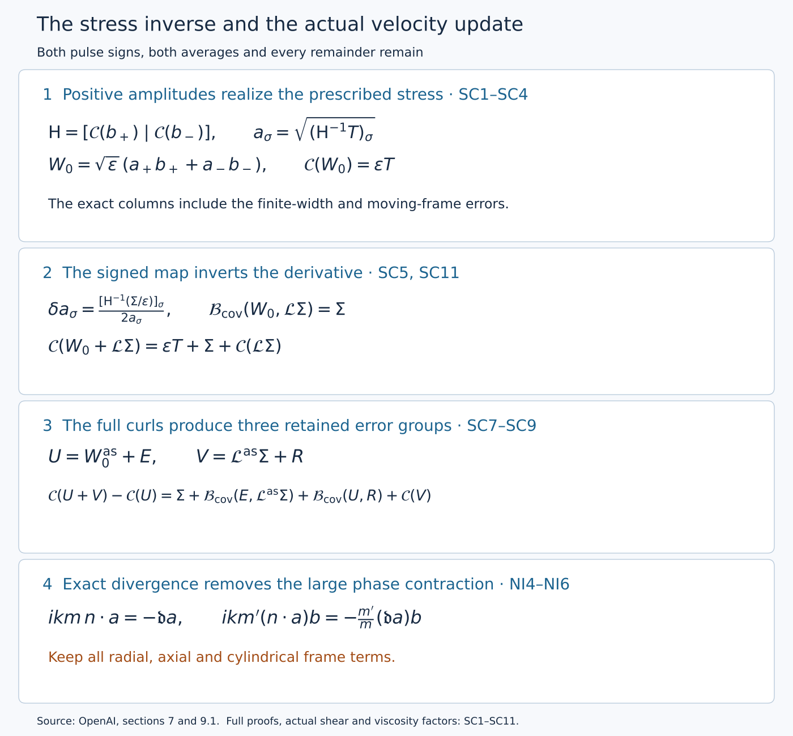
The diagram records exact maps proved below. It contains no sampled flow data. Editable diagram source.
Original source: OpenAI, Finite Time Blowup for Navier–Stokes, sections 7.3–7.4 and Lemma 9.2, pages 81–88 and 102–103. The source remains identifiable in the separate transcription. The actual-shear calculation is also developed in the workbench pulse derivation, identified in the accompanying source record.
The citations W2–W3 below refer to the full support and coefficient proof also supplied as OS0–OS7 in the preceding support lesson. Covariance uses \(\mathcal B_{\rm cov}\); differential transport uses \(\mathcal T_{\rm adv}\). Their definitions are displayed separately.
NI1. Original coordinates, operators and angular averaging
Keep the original parameters and coordinates
\[ \begin{gathered} 0<h<1/100,\quad A=1/2+h,\quad D=1/2-h,\\ Q=2^{-\ell},\quad\varepsilon=Q^h,\quad S_*=\ell^2,\\ R=r/\sqrt Q,\quad Z=z/Q^D,\quad T=(1-t)/Q. \end{gathered} \tag{NI1.1} \]The original variables satisfy \(z=q^D\eta\), \(1-t=q(1-\eta^2)\), \(X=r^2/(2q)\). On a band, \(q/Q\in[1/2,2]\); the active radial shell has \(X_a\le X\le X_b\) with \(X_a>0\). Thus \(R^2=2(q/Q)X\), and
\[ \sqrt{X_a}\le R\le2\sqrt{X_b}. \tag{NI1.2} \]The bounds may be enlarged by fixed amounts inside the coordinate domain. No term involving \(R^{-1}\) or \(R^{-2}\) is suppressed.
Retain the actual auxiliary torus and its covering maps:
\[ J_g=\begin{pmatrix}3&1\\1&5\end{pmatrix},\quad \Lambda_g=4-\sqrt2,\quad T_g=4+\sqrt2,\quad b_g=\sqrt2-1, \] \[ v_r=(1,-b_g),\quad v_t=(b_g,1),\quad \rho_g=\frac{\log\Lambda_g}{\log T_g},\quad \kappa_s=10^{-5},\quad d_r=2((1+h)\rho_g-h\kappa_s), \] \[ Y=v_r r^{d_r}+v_t t\pmod{\mathbb Z^2},\quad Y_i=J_g^iY,\quad i=i(\ell)=\left\lfloor\frac{(1+h)\ell\log2-2\log\ell}{\log T_g}\right\rfloor. \tag{NI1.3} \]Only large bands with \(i\ge0\) are used. On a band representative set
\[ \mathcal L_i=v_r\cdot\partial_{Y_i},\quad N_i=v_t\cdot\partial_{Y_i},\quad M_i=\Lambda_g^iQ^{d_r/2},\quad c_i=T_g^iQ^{1+h}. \]The full physical chain rule is
\[ D_r=\partial_R+M_id_rR^{d_r-1}\mathcal L_i,\quad D_z=\varepsilon\partial_Z,\quad D_\theta=R^{-1}\partial_\theta, \quad\mathfrak t_*=-\varepsilon\partial_T+c_iN_i. \tag{NI1.4} \]These operators have not replaced the physical ones: \(D_r=\sqrt Q\,\mathfrak r\), \(D_z=\sqrt Q\partial_z\), and \(\mathfrak t_*=Q^{1+h}(\partial_t+N_{\rm abs})\) before evaluation, where \(\mathfrak r=\partial_r+d_rr^{d_r-1}\mathcal L_{\rm abs}\). In particular
\[ [D_r,D_z]=[D_r,\partial_\theta]=[D_z,\partial_\theta]=0, \qquad D_r(R^{-1})=-R^{-2},\quad D_z(R^{-1})=0. \tag{NI1.5} \]They follow directly because the only nonconstant coefficient of the auxiliary part of \(D_r\) depends on \(R\) alone. Constant-coefficient auxiliary derivatives commute.
All vector components below are in the original orthonormal cylindrical frame \((e_r,e_\theta,e_z)\). Its derivatives are \(\partial_\theta e_r=e_\theta\), \(\partial_\theta e_\theta=-e_r\), \(\partial_\theta e_z=0\). For component columns \(u,v\), the exact transport is
\[ \mathcal T_{\rm adv}(u,v)=u_rD_rv+u_\theta R^{-1}\partial_\theta v+u_zD_zv +R^{-1}(-u_\theta v_\theta,u_\theta v_r,0). \tag{NI1.6} \]The last column comes from differentiating the frame and is part of transport. The dot products of complex harmonic coefficients used below are bilinear, not Hermitian.
Here \(\langle\cdot\rangle_\theta\) averages the cylindrical component columns over \(0\le\theta\le2\pi\), exactly as in the source mean equations. It is not the operation of averaging the Cartesian components while keeping a fixed Cartesian frame. It also differs from auxiliary Haar averaging. For a fixed label with
\[ \Phi=p\theta+\varphi(R,Z,T,H),\qquad kp\in\mathbb Z\setminus\{0\}, \]and a \(\theta\)-independent column \(a\), direct integration gives
\[ \langle ae^{ikm\Phi}\rangle_\theta=0\quad(m\ne0),\qquad \langle ab\,e^{ik(m+m')\Phi}\rangle_\theta= \begin{cases}ab,&m+m'=0,\\0,&m+m'\ne0.\end{cases} \tag{NI1.7} \]Indeed the integral of \(e^{in\theta}\) is \((e^{2\pi in}-1)/(in)=0\) for a nonzero integer \(n\). The frame terms in (NI1.6) have already been expressed in component columns, so this calculation applies to them too.
SC1. Exact average and the two columns
The tangential component order is \((\theta,z)\). For real cylindrical-component fields on the extended domain, let
\[ \mathcal C(w)=\int_{\mathbb T^2}\frac1{2\pi}\int_0^{2\pi}w_r w_{\rm tan}\,d\theta\,d\mu(Y),\qquad \mathcal B_{\rm cov}(w,v)=\int_{\mathbb T^2}\frac1{2\pi}\int_0^{2\pi} (w_rv_{\rm tan}+v_rw_{\rm tan})\,d\theta\,d\mu(Y), \tag{SC1.1} \]where Haar measure has mass one. These are a quadratic map and its symmetric bilinear cross map; \(D\mathcal C(w)[v]=\mathcal B_{\rm cov}(w,v)\). The symbol \(\mathcal B_{\rm cov}\) here denotes the covariance map (original (7.23)), not the differential transport map in NI1. The averages act on cylindrical components, with the basis vectors held in that component convention.
A common torus maps onto each band torus by the integer matrix \(J^d\), where
\[ J=\begin{pmatrix}3&1\\1&5\end{pmatrix},\quad \det J=14, \quad v_r=(1,-b_g),\quad v_t=(b_g,1),\quad b_g=\sqrt2-1. \]For \(d\ge0\), partition a fundamental domain of the covering torus into the \(14^d\) inverse-image sheets of a fundamental domain of the band torus, ignoring boundaries of measure zero. Change of variables on each sheet contributes \(14^{-d}\). Their sum proves \(\int f(J^dY)\,d\mu(Y)=\int f(Y_i)\,d\mu(Y_i)\). Thus no covering degree multiplies (SC1.1). Smooth periodic integrands allow differentiation under this integral. Common-cover compatibility follows by applying this equality twice.
Fix a slow box \(\beta=(\ell,a)\). Its two labels are \((\beta,\sigma)\), \(\sigma=\pm1\), with the same slow cutoff \(\eta_\beta\). Put
\[ Q=2^{-\ell},\quad \varepsilon=Q^h,\quad S_*=\ell^2, \quad A=\tfrac12+h,\quad D=\tfrac12-h,\quad 0<h<\tfrac1{100}. \]With \(T_g=4+\sqrt2\), the original band choice gives
\[ \frac1{T_gS_*}<c_i\le\frac1{S_*},\qquad L_s=\frac{2r_0}{c_i}, \qquad 2r_0S_*\le L_s<2r_0T_gS_*. \tag{SC1.2} \]The positive constant \(r_0\) and the transverse cutoffs are fixed before bands are chosen. The unweighted, uncurled local basis waves are exactly
\[ b_\sigma=\chi_g(\xi_g)\psi(v)t^h_\sigma\cos(k\Phi_\sigma),\qquad \mathsf H=[\mathcal C(b_+)\mid\mathcal C(b_-)]. \tag{SC1.3} \]Here \(k=\lceil\varepsilon^{-1/2}\rceil\), \(kp\in\mathbb Z\setminus\{0\}\), and the pulse cutoff satisfies \(0\le\psi\le1\), \(\psi=1\) for \(|v-L_s/2|\le L_s/5\), with support in \(|v-L_s/2|<L_s/3\). Neither \(\eta_\beta\) nor a scalar stress amplitude is in \(b_\sigma\). Their auxiliary supports are disjoint, including the closed support neighborhoods used for derivatives, as constructed in W2.
For every fixed slow and auxiliary point, write \(k\Phi_\sigma=kp\theta+\omega\). Then
\[ \frac1{2\pi}\int_0^{2\pi}\cos^2(kp\theta+\omega)\,d\theta =\frac12+\left[\frac{\sin(2kp\theta+2\omega)}{8\pi kp}\right]_0^{2\pi} =\frac12. \tag{SC1.4} \]This equality remains exact after every slow derivative; differentiating its right side creates no frequency factor. On the band rectangle the area element is \(\det(v_r,v_t)d\xi_gd\eta_g=(1+b_g^2)c_i\,d\xi_gdv\). The homogeneous amplitude is independent of \(\xi_g\); write \(x_\sigma=(t^h_\sigma)_r\). Hence
\[ \mathsf H_\sigma=\frac{1+b_g^2}{2} \left(\int\chi_g^2\,d\xi_g\right)c_i \int_0^{L_s}\psi^2x_\sigma(t^h_\sigma)_{\rm tan}\,dv, \qquad h_\sigma=\frac{1+b_g^2}{2} \left(\int\chi_g^2\,d\xi_g\right)c_i \int_0^{L_s}\psi^2x_\sigma^2\,dv. \tag{SC1.5} \]The subscript \(g\) retains the cutoff belonging to the sign's own rectangle. Its squared integral is positive and bounded above and below uniformly, since these are fixed nonzero cutoffs from finitely many shapes. The determinant, \(c_i\), the cosine factor \(1/2\), and both stress components have all been retained. For real coefficients independent of both averaging variables, disjointness gives
\[ \mathcal C(a_+b_++a_-b_-)=\mathsf H(a_+^2,a_-^2)^T. \tag{SC1.6} \]SC2. Covariance size and direction from the exact pulse
PU3.5 and PU5.5 establish fixed constants \(c_-,c_+,c_x,C_x>0\), independent of the band, with
\[ e^{-c_+(v-L_s/2)^2/(2L_s)}\le P(v)\le e^{-c_-(v-L_s/2)^2/(2L_s)},\qquad c_xP(v)\le x_\sigma(v)\le C_xP(v). \tag{SC2.1} \]These bounds use the original \(B_s^2=\lambda_0/[\varepsilon k^2(1+u_*^2)^{3/2}]\). Set \(I_{0,\sigma}=\int\psi^2x_\sigma^2\,dv\) and \(I_{1,\sigma}=\int |v-L_s/2|\psi^2x_\sigma^2/L_s\,dv\), each on \([0,L_s]\). Choose the one band threshold large enough that \(L_s\ge25\). On \(|v-L_s/2|\le\sqrt{L_s}\), the cutoff equals one. Integrating the lower bound there and enlarging the upper integrals to the real line proves
\[ 2c_x^2e^{-c_+}\sqrt{L_s}\le I_{0,\sigma} \le C_x^2\sqrt{\frac\pi{c_-}}\sqrt{L_s},\qquad I_{1,\sigma}\le \frac{C_x^2}{c_-}. \tag{SC2.2} \]For the last integral, \(2L_s^{-1}\int_0^\infty s e^{-c_-s^2/L_s}\,ds=1/c_-\). The Gaussian integral in the preceding bound follows by squaring the positive integral and using polar coordinates: \(\int_{\mathbb R^2}e^{-c_-(x^2+y^2)}dxdy=2\pi\int_0^\infty r e^{-c_-r^2}dr=\pi/c_-\). Thus these are analytic inequalities, not numerical enclosures. Equations (SC1.2), (SC1.5) and (SC2.2) yield
\[ 0<h_-^*S_*^{-1/2}\le h_\sigma\le h_+^*S_*^{-1/2},\qquad \frac{I_{1,\sigma}}{I_{0,\sigma}}\le C S_*^{-1/2}. \tag{SC2.3} \]For clarity, \(h_-^*,h_+^*\) are fixed bounds applying to both signs, not the two different numbers \(h_-\) and \(h_+\).
In the frozen orthonormal tangential frame of PU1,
\[ N=\frac{g_0}{|g_0|},\quad K=(-N_z,N_\theta),\quad c_0=\frac{\lambda_0}{2F_0N_\theta}<0,\quad s_\sigma(v)=\sigma\left(\frac{u_*}{2}+\frac{u_*v}{L_s}\right), \]PU1 and PU5 prove, uniformly throughout the enlarged slow box,
\[ \frac{(t^h_\sigma)_{\rm tan}}{x_\sigma} =-s_\sigma(v)K+c_0\sqrt{1+s_\sigma(v)^2}\,N+e^{\rm loc}_\sigma(v), \qquad |e^{\rm loc}_\sigma(v)|\le C S_*^{-1}. \tag{SC2.4} \]This uses the actual formula \((t^h)_{\rm tan}=-s_axK_a+yN_a\), including its moving-frame error. The derivative of \(s\mapsto-sK+c_0\sqrt{1+s^2}N\) has norm at most \(1+|c_0|\). Since \(|s_\sigma(v)-\sigma u_*|=u_*|v-L_s/2|/L_s\), averaging (SC2.4) with the positive probability density \(\psi^2x_\sigma^2/I_{0,\sigma}\) gives the exact representation
\[ \mathsf H_\sigma=h_\sigma(-A_cN-\sigma u_*K+e_\sigma),\qquad A_c=-c_0\sqrt{1+u_*^2}>0,\qquad |e_\sigma|\le C_eS_*^{-1/2}. \tag{SC2.5} \]The error is explicitly the average of \(e^{\rm loc}_\sigma\) plus the difference between the displayed reference direction and its midpoint value. Thus it includes both the moving-frame and finite-width contributions. PU1 supplies fixed \(0<A_-\le A_c\le A_+\). All fixed derivatives of \(\mathsf H\) have polynomial bounds in \(S_*\): apply Leibniz to the exact integral (SC1.5), use the PU5 bounds for each differentiated pulse, and integrate on an interval of length \(L_s\le2r_0T_gS_*\). The limits, cutoffs and \(c_i\) are fixed under slow differentiation. No derivative of a pointwise error estimate is being assumed.
SC3. The original cone margin and an explicit inverse estimate
Original (4.20) defines \(t_s=-b_s/a\) and \(v_s=a(1+t_s^2)\). Original (7.1) uses \(g=F(-a,b_s)\), with \(F,a,v_s-2\) bounded below positively. Before freezing the point,
\[ N=-\frac{(1,t_s)}{\sqrt{1+t_s^2}},\qquad K=\frac{(t_s,-1)}{\sqrt{1+t_s^2}},\qquad c_0^2=\frac{v_s-2}{2}. \tag{SC3.1} \]Indeed \(2FN_\theta=-2F/\sqrt{1+t_s^2}\), \(|g|=Fa\sqrt{1+t_s^2}\), so \(\lambda_0^2=-2FN_\theta(2FN_\theta+|g|)=2aF^2(1-2/v_s)\); dividing by \((2FN_\theta)^2\) proves the last identity. Here is the full profile-to-chart comparison behind this calculation. Original (4.3)–(4.4) give \(u_\theta^{(0)}=q^{-A}E\), \(u_z^{(0)}=q^{-A}U\), \(E=\sqrt{2X}F_{\rm prof}\), \(F_{\rm prof}=\phi/\mathsf C\). With \(\xi=q/Q\), their chart values are \(V^{(0)}=\xi^{-A}E\), \(G^{(0)}=\xi^{-A}U\), and
\[ \begin{aligned} F_{\rm chart}^{(0)}&=V^{(0)}/R=\xi^{-A-1/2}F_{\rm prof},\\ R\partial_RF_{\rm chart}^{(0)} &=\xi^{-A-1/2}2X(F_{\rm prof})_X=-aF_{\rm chart}^{(0)},\\ \partial_RG^{(0)}&=\xi^{-A-1/2}\sqrt{2X}U_X=b_sF_{\rm chart}^{(0)}. \end{aligned} \tag{SC3.1a} \]These identities use \(X=R^2/(2\xi)\), with \(\xi,\eta\) fixed under \(\partial_R\), and the full original (4.11) definitions \(a=1-2X\partial_X\log E\), \(b_s=2XU_X/E\). Thus \(F\), \(g\), \(\lambda_0\) and the target stress each retain their displayed positive factor \(\xi^{-A-1/2}\); that factor cancels only in the explicitly computed frame and in the ratio defining \(c_0\). No amplitude normalization \(\mathsf C\) or physical stress factor has been discarded.
Write \(\kappa_c\in(0,2)\) for the constant called \(\kappa\) in original (4.26), to distinguish it from the derivative-loss constant \(\kappa_s=10^{-5}\). For the original unit stress direction \(n=\mathcal T_0/|\mathcal T_0|\), that equation is
\[ n_\theta+t_sn_z\ge\kappa_c,\qquad (v_s-2)(n_z-t_sn_\theta)^2\le(2-\kappa_c)(n_\theta+t_sn_z)^2. \tag{SC3.2} \]For \(T=\mathcal T_{0,*}=(Q/q)^{A+1/2}\mathcal T_0\), (SC3.1) gives
\[ T_N=-\frac{T_\theta+t_sT_z}{\sqrt{1+t_s^2}}<0,\quad T_K=-\frac{T_z-t_sT_\theta}{\sqrt{1+t_s^2}},\quad \left|c_0\frac{T_K}{T_N}\right|\le\sqrt{1-\kappa_c/2}<1. \tag{SC3.3} \]At either edge use the smooth unit direction in (SC3.2), not the undefined quotient of two zero stress components. Its denominator stays uniformly away from zero, since \(t_s\) is bounded on the closed annulus. This proves continuity of the directional quotient there.
Let \(m_c\) be its supremum on the closed annulus. The original choice of the single constant \(u_*>0\) satisfies \(r_u=u_*/\sqrt{1+u_*^2}>m_c\). Such a choice exists because \(m_c<1\) and \(r_u\to1\) as \(u_*\to\infty\). All frozen frames and coefficients range over a compact set with the positive denominators in PU1. For each actual point of the closed shell, hold its unit stress direction fixed while comparing the frame at that point to the frame at the representative; only the frame and its growth coefficient are frozen. The frame is defined on the fixed enlarged annulus even when the representative lies outside the shell. The smooth profile-to-chart map and frame have bounded first derivatives; the enlarged slow box has diameter at most \(CS_*^{-3}\). The mean-value formula along a segment in its fixed enlarged neighborhood therefore bounds the change of the numerator and denominator of this quotient by \(C'S_*^{-3}\). For a positive denominator bounded below by \(d_0\), the quotient difference is at most \(2C'S_*^{-3}(d_0^{-1}+M_0d_0^{-2})\) once its change is at most \(d_0/2\), with \(M_0\) a fixed numerator bound. Choose the band threshold so this difference is at most \((r_u-m_c)/2\). The frozen frame then satisfies
\[ T_N<0,\qquad \frac{|T_K|}{u_*}\le(1-\eta_c)\frac{-T_N}{A_c},\qquad \eta_c=\frac{r_u-m_c}{2r_u}\in(0,1). \tag{SC3.4} \]The argument covers the shell edges using their unit directions. It is a value estimate, not smallness of arbitrarily high derivatives. One finite band threshold suffices for this margin and for the pulse estimates.
Put \(F_{NK}=[N\mid K]\); this orthogonal matrix has determinant \(+1\) in the original \((\theta,z)\) orientation. Set
\[ C_0=\begin{pmatrix}-A_c&-A_c\\-u_*&u_*\end{pmatrix},\quad E_c=[F_{NK}^Te_+\mid F_{NK}^Te_-],\quad D_h=\operatorname{diag}(h_+,h_-). \]Then the actual covariance matrix, including its error, factors exactly as
\[ \mathsf H=F_{NK}(C_0+E_c)D_h, \quad C_0^{-1}=\frac12\begin{pmatrix}-A_c^{-1}&-u_*^{-1}\\-A_c^{-1}&u_*^{-1}\end{pmatrix}, \quad \det C_0=-2A_cu_*. \tag{SC3.5} \]In the induced infinity norm, \(\|C_0^{-1}\|_\infty\le M_c=\tfrac12(A_-^{-1}+u_*^{-1})\) and \(\|E_c\|_\infty\le2C_eS_*^{-1/2}\). Enlarge the single threshold so
\[ \vartheta:=\|C_0^{-1}E_c\|_\infty\le2M_cC_eS_*^{-1/2}\le\frac{\eta_c}{4+\eta_c}<1. \tag{SC3.6} \]The geometric series \(\sum_{j\ge0}(-C_0^{-1}E_c)^j\) converges absolutely in this matrix norm and its product with \(I+C_0^{-1}E_c\) is \(I\), by cancellation of partial sums and a remainder tending to zero. This proves invertibility and the inverse norm bound \((1-\vartheta)^{-1}\).
For the target set \(s_T=-T_N/A_c>0\), \(t_T=T_K/u_*\). The reference vector is
\[ z^0=C_0^{-1}(T_N,T_K)^T =\tfrac12(s_T-t_T,s_T+t_T)^T, \qquad \eta_cs_T/2\le z^0_\sigma\le s_T. \]The actual vector \(z=D_h\mathsf H^{-1}T\) equals \((I+C_0^{-1}E_c)^{-1}z^0\), whence
\[ \|z-z^0\|_\infty\le\frac{\vartheta}{1-\vartheta}s_T\le\eta_cs_T/4, \qquad \eta_cs_T/4\le z_\sigma\le(1+\eta_c/4)s_T. \tag{SC3.7} \]Also \(|T|^2=A_c^2s_T^2+u_*^2t_T^2\), so
\[ \frac{|T|}{\sqrt{A_+^2+u_*^2(1-\eta_c)^2}}\le s_T\le\frac{|T|}{A_-}. \tag{SC3.8} \]Divide (SC3.7) by (SC2.3). This proves the positive, two-sided amplitude bounds, with every component retained:
\[ c\sqrt{S_*}|T|\le y_\sigma:=(\mathsf H^{-1}T)_\sigma\le C\sqrt{S_*}|T|, \qquad \|\mathsf H^{-1}\|_\infty\le C\sqrt{S_*}. \tag{SC3.9} \]For completeness, every complex eigenvalue of \(C_0^{-1}E_c\) has modulus at most \(\vartheta\): apply the eigenvector equation to a component of maximum modulus. Thus \(|\det(I+C_0^{-1}E_c)|\ge(1-\vartheta)^2\). Along the path multiplying this error matrix by \(t\in[0,1]\), this real determinant cannot vanish and starts at one. It is therefore positive. Consequently
\[ \det\mathsf H<0,\qquad |\det\mathsf H|\ge 2A_-u_*(h_-^*)^2(1-\vartheta)^2S_*^{-1}. \tag{SC3.10} \]This retains the orientation of both original covariance columns.
SC4. Every derivative and both shell boundaries
The exact chart variables are
\[ \xi=q/Q,\quad \xi-Z^2\xi^{2h}=T_{\rm time},\quad X=R^2/(2\xi),\quad \eta=Z\xi^{-D}. \]Here \(R=r/\sqrt Q\), \(Z=z/Q^D\), \(T_{\rm time}=(1-t)/Q\). On the original chart, \(\xi\) is bounded above and below and \(|\eta|\le1\). The derivative in \(\xi\) of its defining equation is \(1-2h\eta^2\ge1-2h>0\). Repeated implicit differentiation, dividing only by this denominator, bounds every fixed derivative of \(\xi,X,\eta\) and \(\xi^{-A-1/2}\). Apply this chain rule to original (4.27), visually checked on page 33:
\[ |\mathcal T_0|\ge c\zeta,\qquad |\partial_X^{j_1}\partial_\eta^{j_2}\mathcal T_0|\le C_j\zeta\delta^{-m_j},\qquad \delta=\min\{1,\log(X/X_a),\log(X_b/X)\}. \]It gives \(|T|\ge c'\zeta\) and \(|\partial^IT|\le C_I\zeta\delta^{-a_I}\). These are the precise leading-profile assertions consumed here. V5–V7 construct them, and I1–I2 proves the complete receiving maps with the actual base and its fixed margins.
For every nonzero multi-index \(I\), differentiating \(\mathsf H\mathsf H^{-1}=I_2\) gives the recursion
\[ \partial^I\mathsf H^{-1} =-\mathsf H^{-1}\sum_{0<J\le I}\binom IJ (\partial^J\mathsf H)(\partial^{I-J}\mathsf H^{-1}). \tag{SC4.1} \]Induction using SC2 and (SC3.9) bounds each derivative by a finite polynomial in \(S_*\). Multiplying by the full derivatives of \(T\) proves
\[ y_\sigma\ge c\sqrt{S_*}\zeta,\qquad |\partial^Iy_\sigma|\le C_IS_*^{b_I}\zeta\delta^{-a_I}. \tag{SC4.2} \]Set \(a_\sigma=\sqrt{y_\sigma}\) in the open shell. For \(|I|>0\), repeated chain and product rules give a finite sum
\[ \partial^Ia_\sigma= \sum_{n=1}^{|I|}\ \sum_{I_1+\cdots+I_n=I,\ |I_j|>0} c_{I_1,\ldots,I_n}y_\sigma^{1/2-n}\prod_{j=1}^n\partial^{I_j}y_\sigma. \tag{SC4.3} \]Every term has weight \(\zeta^{1/2-n}\zeta^n=\sqrt\zeta\); all powers of \(S_*\) and \(\delta^{-1}\) remain in finite order-dependent bounds. For \(I=0\), take the square root of the upper bound in (SC4.2). Therefore
\[ |\partial^Ia_\sigma|\le C_IS_*^{b'_I}\sqrt\zeta\delta^{-a'_I}. \tag{SC4.4} \]The fixed source weight is smooth and flat at each radial edge. Taylor's formula with integral remainder, using its vanishing jets, gives \(0\le\zeta\le C_Nd^N\) near either edge for every integer \(N\), where \(d\) is the distance to that edge. The logarithmic distances in \(\delta\) are comparable to \(d\) there, since \(0<X_a<X_b<\infty\). Given any fixed power in (SC4.4), choose \(N\) more than twice that power. Then \(\sqrt\zeta\delta^{-a'_I}\to0\). Extend every derivative by zero. Difference quotients in a smooth boundary coordinate, followed by induction on derivative order, show that these extended derivatives are derivatives of the zero-extended function. Thus \(a_\sigma\) extends smoothly by zero; no value of \(1/a_\sigma\) at an edge is being assigned. This argument uses the original flat weight and does not require replacing it by a special exponential formula.
Define
\[ W_0=\sqrt\varepsilon\sum_{\sigma=\pm1}a_\sigma b_\sigma. \tag{SC4.5} \]The coefficients of \(e^{\pm ik\Phi_\sigma}\) are each \(\sqrt\varepsilon a_\sigma\chi_g\psi t^h_\sigma/2\). PU5 bounds each fixed derivative of \(t^h_\sigma\) by a polynomial in \(S_*\) times the original envelope \(P(v)\). Thus the coefficients obey \(\varepsilon^{1/2}S_*^{b_I}\sqrt\zeta\delta^{-a_I}P(v)\) bounds. With the slow cutoff, \(\eta_\beta W_0\in\mathsf W_{1/2}\), including all support and common-torus requirements. Without that cutoff the same local coefficient bounds hold, and (SC1.6) gives
\[ \mathcal C(W_0)=\varepsilon\mathsf H y=\varepsilon T. \tag{SC4.6} \]SC5. Signed increments and the exact retained quadratic term
Keep the positive coefficients \(a_\sigma\) just constructed fixed at all later stages. Let \(\Sigma(R,Z,T_{\rm time})\) be the real two-component stress supplied to this operator, independent of both \(\theta\) and the auxiliary variables, with the original \(\mathsf M_\alpha\) estimates
\[ |\partial^I\Sigma|\le C_I\varepsilon^\alpha S_*^{b_I}\zeta\delta^{-a_I}. \]Auxiliary independence is a required input property of this particular map; membership in \(\mathsf M_\alpha\) alone does not assert it. Define in the open shell
\[ d_\Sigma=\mathsf H^{-1}(\Sigma/\varepsilon),\qquad \delta a_\sigma=\frac{(d_\Sigma)_\sigma}{2a_\sigma},\qquad \mathcal L_\beta\Sigma=\sqrt\varepsilon\sum_{\sigma=\pm1}\delta a_\sigma b_\sigma. \tag{SC5.1} \]The inverse bounds give \(|\partial^I(d_\Sigma)_\sigma|\le C_I\varepsilon^{\alpha-1}S_*^{b'_I}\zeta\delta^{-a'_I}\). Derivatives of \(y_\sigma^{-1/2}\) are finite sums of \(C y_\sigma^{-k-1/2}\prod_{j=1}^k\partial^{I_j}y_\sigma\), including \(k=0\) at order zero. Their weights are \(\zeta^{-k-1/2}\zeta^k=\zeta^{-1/2}\). The extra \(\zeta\) from \(d_\Sigma\) is therefore sufficient for every term in the product rule, giving
\[ |\partial^I\delta a_\sigma|\le C_I\varepsilon^{\alpha-1}S_*^{b''_I}\sqrt\zeta\delta^{-a''_I}. \tag{SC5.2} \]SC4's boundary argument proves smooth zero extension. The pulse bounds then prove \(\eta_\beta\mathcal L_\beta\Sigma\in\mathsf W_{\alpha-1/2}\). Linearity in \(\Sigma\) follows because \(\mathsf H\), \(a_\sigma\), and \(b_\sigma\) are fixed, also at the boundary after extension. No sign or relative-size condition on \(\Sigma\) has been introduced.
The coefficients can be moved outside both averages. Cross-label products are zero. Equations (SC1.5) and (SC5.1) now give
\[ \mathcal B_{\rm cov}(W_0,\mathcal L_\beta\Sigma) =\varepsilon\mathsf H(2a\odot\delta a) =\varepsilon\mathsf H d_\Sigma=\Sigma. \tag{SC5.3} \]Here \(\odot\) denotes componentwise multiplication. The cosine factor \(1/2\) is already in each column of \(\mathsf H\). The cross term has the separate factor two because differentiating \(a_\sigma^2\) gives \(2a_\sigma\delta a_\sigma\). In particular the full change is
\[ \mathcal C(W_0+\mathcal L_\beta\Sigma) =\varepsilon T+\Sigma+\mathcal C(\mathcal L_\beta\Sigma),\qquad \mathcal C(\mathcal L_\beta\Sigma) =\varepsilon\mathsf H((\delta a_+)^2,(\delta a_-)^2)^T. \tag{SC5.4} \]Thus the map in (SC5.1) is a right inverse of the derivative of the covariance map. It does not drop the last quadratic term. Its angularly averaged products have the weight \(\varepsilon^{2\alpha-1}\zeta\delta^{-a}P^2\), with \(P^2\le1\), and finite polynomial factors. Averaging over the mass-one auxiliary torus preserves this bound. Therefore \(\mathcal C(\eta_\beta\mathcal L_\beta\Sigma)\in\mathsf M_{2\alpha-1}\). These statements hold for every real \(\alpha\); later improvement of an iterative error additionally depends on its actual exponent.
SC6. Squared partition, chart transitions, and physical assembly
At each fixed \(q>0\), the slow partition has bounded local overlap and \(\sum_\beta\eta_\beta^2=1\), counting each box once, not once for each sign. Define exactly as in original (7.35), with \(Q_\beta=2^{-\ell_\beta}\),
\[ W_{0,\rm phys}^{\rm as}=\sum_\beta Q_\beta^{-A}\eta_\beta W_{0,\beta},\qquad \mathcal L_{\rm phys}^{\rm as}\sigma =\sum_\beta Q_\beta^{-A}\eta_\beta\mathcal L_\beta(Q_\beta^{2A}\sigma). \tag{SC6.1} \]Here \(\sigma(r,z,t)\) is the physical stress input, independent of the averaging variables; it is distinct from the sign label. A common torus can be chosen for all summands active at that point. Their cross-label products vanish on it by W2, even where their slow supports overlap. Then
\[ \begin{split} \mathcal C(W_{0,\rm phys}^{\rm as}) &=\sum_\beta Q_\beta^{-2A}\eta_\beta^2\varepsilon_\beta (Q_\beta/q)^{A+1/2}\mathcal T_0 =q^{-A-1/2}\mathcal T_0,\\ \mathcal B_{\rm cov}(W_{0,\rm phys}^{\rm as},\mathcal L_{\rm phys}^{\rm as}\sigma) &=\sum_\beta Q_\beta^{-2A}\eta_\beta^2Q_\beta^{2A}\sigma=\sigma. \end{split} \tag{SC6.2} \]The scale identity in the first line is \(Q^{-2A}Q^h(Q/q)^{A+1/2}=Q^{-A+h+1/2}q^{-A-1/2}=q^{-A-1/2}\), since \(A=1/2+h\). There is no missing count of two from the sign labels.
In a receiving chart of scale \(Q\), the representatives are
\[ W_0^{\rm as}=Q^AW_{0,\rm phys}^{\rm as},\qquad \Sigma=Q^{2A}\sigma,\qquad \mathcal L^{\rm as}\Sigma=Q^A\mathcal L_{\rm phys}^{\rm as}(Q^{-2A}\Sigma). \tag{SC6.3} \]An overlapping band has \(|\ell_\beta-\ell|\le4\). The ratios of its scales \(Q_\beta/Q\), \(\varepsilon_\beta/\varepsilon\) and \(S_{*,\beta}/S_*\) are bounded above and below by constants independent of the band. The exact coordinate transition is
\[ R_\beta=(Q/Q_\beta)^{1/2}R,\quad Z_\beta=(Q/Q_\beta)^DZ,\quad T_{{\rm time},\beta}=(Q/Q_\beta)T_{\rm time}, \]and the common-to-band torus maps are the fixed powers of \(J\) with bounded exponent difference from W2. Each fixed derivative of a coefficient after these linear maps has the same class estimate with a changed finite constant and polynomial power. The profile \(X\), its edge weight and the label's own pulse envelope are retained. Collect coefficients having the same label and harmonic before testing membership. Bounded local overlap then proves
\[ W_0^{\rm as}\in\mathsf W_{1/2},\qquad \mathcal L^{\rm as}\Sigma\in\mathsf W_{\alpha-1/2},\qquad \mathcal B_{\rm cov}(W_0^{\rm as},\mathcal L^{\rm as}\Sigma)=\Sigma. \tag{SC6.4} \]The equalities are compatible on chart overlaps because they arise from the same physical fields in (SC6.1). Local finiteness for \(q>0\) suffices here. No extension at the singular terminal point is asserted by this assembly.
SC7. Full curls and the stress of the actual velocity
For each harmonic \(t_me^{ikm\Phi}\) of the assembled primary or signed field, \(m\ne0\), let \(n=\nabla_*\Phi\). Its full coefficient is transverse: \(n\cdot t_m=0\). PU1 proves a uniform positive lower bound for \(|n|\). The exact potential and remainder from PU6 are
\[ C_m=\frac{i\,n\times t_m}{km|n|^2},\qquad r_m=(-D_z(C_m)_\theta,\ D_z(C_m)_r-D_r(C_m)_z,\ (D_r+R^{-1})(C_m)_\theta). \tag{SC7.1} \]The curl of \(C_me^{ikm\Phi}\) is \((t_m+r_m)e^{ikm\Phi}\), since \(ikm n\times C_m=t_m\). Its divergence is exactly zero, including the cylindrical connection terms, by NI4. For a signed amplitude in \(\mathsf W_{\alpha-1/2}\), PU6 gives \(C_m\in\mathsf W_\alpha\) and \(r_m\in\mathsf W_{\alpha-\kappa_s}\). It preserves all closed support restrictions. The \(m=+1,-1\) coefficients are conjugates, including their potentials: the sign of \(i/m\) changes on conjugation. The assembled curl field is therefore real.
In particular the initial actual wave produced by the primary amplitudes is
\[ U_0=W_0^{\rm as}+R_0,\qquad R_0\in\mathsf W_{1-\kappa_s},\qquad U_0\in\mathsf W_{1/2}. \tag{SC7.2} \]Its covariance in any chart is the exact expression
\[ \mathcal C(U_0)=Q^{2A}q^{-A-1/2}\mathcal T_0 +\mathcal B_{\rm cov}(W_0^{\rm as},R_0)+\mathcal C(R_0), \tag{SC7.3} \]where the two additional terms are in \(\mathsf M_{3/2-\kappa_s}\) and \(\mathsf M_{2-2\kappa_s}\), respectively. The target in this receiving chart is the physical one from (SC6.2), not a target frozen at a different box. Since \(\kappa_s<1/2\), their sum is in \(\mathsf M_{3/2-\kappa_s}\). This supplies the primary stress wave and its actual curl defect to the iteration, using the complete actual base in Z0–Z9.
At a later stage write the actual current wave as \(U=W_0^{\rm as}+E\), with its original recorded classes \(U\in\mathsf W_{1/2}\), \(E\in\mathsf W_\rho\). For a signed increment let \(V=\mathcal L^{\rm as}\Sigma+R\), where \(R\in\mathsf W_{\alpha-\kappa_s}\) is its full curl remainder. Direct expansion, with no discarded cross term, gives
\[ \begin{split} \mathcal C(U+V)-\mathcal C(U) &=\mathcal B_{\rm cov}(U,V)+\mathcal C(V)\\ &=\Sigma+\mathcal B_{\rm cov}(E,\mathcal L^{\rm as}\Sigma) +\mathcal B_{\rm cov}(U,R)+\mathcal C(V). \end{split} \tag{SC7.4} \]All of \(\mathcal C(\mathcal L^{\rm as}\Sigma)\), \(\mathcal B_{\rm cov}(\mathcal L^{\rm as}\Sigma,R)\) and \(\mathcal C(R)\) remain inside \(\mathcal C(V)\). The product estimates give respectively
\[ \mathcal B_{\rm cov}(E,\mathcal L^{\rm as}\Sigma)\in\mathsf M_{\rho+\alpha-1/2},\qquad \mathcal B_{\rm cov}(U,R)\in\mathsf M_{\alpha+1/2-\kappa_s},\qquad \mathcal C(V)\in\mathsf M_{2\alpha-1}. \tag{SC7.5} \]For the last bound use \(\alpha-\kappa_s>\alpha-1/2\), so \(V\in\mathsf W_{\alpha-1/2}\). To justify these product statements at every derivative order, angular averaging of a same-label pair retains only harmonics with \(m+m'=0\), because \(kp\ne0\); their exponential phases cancel exactly. Cross-label products are identically zero. Each derivative of the remaining coefficient products has weight \(\varepsilon^{\mu+\mu'}S_*^b\zeta\delta^{-a}P^2\), and \(P^2\le1\). Integrating these finite sums over a mass-one common torus proves the displayed mean estimates with all derivatives. This verifies original (7.41)–(7.42) for the actual curl velocities.
SC8. Radial divergence after both averages
There is a small stronger estimate at this exact receiver. The three expressions in (SC7.5) have already been averaged over both the angle and the auxiliary torus. For any same-label zero-harmonic product coefficient \(f\), on a fixed common torus with index \(i_0\), holding the receiving scale \(Q\) fixed,
\[ \partial_R\langle f\rangle_H=\langle\partial_R f\rangle_H,\qquad \langle\mathcal L_{i_0}f\rangle_H=0, \quad D_r=\partial_R+M_{i_0} d_rR^{d_r-1}\mathcal L_{i_0},\qquad M_{i_0}=\Lambda_g^{i_0}Q^{d_r/2}. \tag{SC8.1} \]The second equality is integration by parts on the periodic torus; boundary faces cancel. Consequently \(D_r\langle f\rangle_H=\partial_R\langle f\rangle_H=\langle D_rf\rangle_H\). Differentiating the surviving coefficient products by ordinary \(\partial_R\) uses their coefficient bounds and introduces no \(\varepsilon^{-\kappa_s}\) factor. The derivative of the cancelled exponential is zero; it must not be estimated separately before cancellation.
For a two-component auxiliary-averaged radial stress \(S=(S_\theta,S_z)\), define its cylindrical tangential divergence
\[ \mathfrak D_r S=((D_r+2/R)S_\theta,(D_r+1/R)S_z). \tag{SC8.2} \]The shell has \(R\) bounded above and bounded away from zero. The zero-order factors and all their derivatives are therefore bounded. Equations (SC8.1)–(SC8.2) prove that the divergences of the three terms in (SC7.5) retain precisely the exponents displayed there. Original Corollary 7.8 allows a further loss of at most \(\kappa_s\); it is unnecessary after this full auxiliary average. The stronger claim does not apply to an angular mean still depending on the auxiliary variable, for which the fast derivative remains. It also does not remove the \(\kappa_s\) already paid when taking a curl.
SC9. All original viscosity factors
For every fixed original viscosity \(\nu>0\), let \(y=x/\sqrt\nu\), with time unchanged. The exact change of fields from M2 is
\[ u_\nu(x,t)=\sqrt\nu\,u_1(y,t),\quad p_\nu(x,t)=\nu p_1(y,t),\quad f_\nu(x,t)=\sqrt\nu\,f_1(y,t),\quad \mathcal A_\nu(x,t)=\nu\mathcal A_1(y,t). \tag{SC9.1} \]The last formula gives \(\operatorname{curl}_x\mathcal A_\nu=\sqrt\nu\operatorname{curl}_y\mathcal A_1\), because each spatial derivative contributes \(\nu^{-1/2}\). It applies to every potential in (SC7.1), including all cutoffs and remainders.
The angles and auxiliary torus measures in (SC1.1) do not change under this dilation. There is no physical-space volume integral in that definition. Throughout this note, a covariance of a field in physical units is still the average on the extended domain before evaluating the auxiliary variable at the physical phase map. No equality with the unaveraged pointwise velocity product is inferred. Thus for any two fields \(w,v\),
\[ \mathcal C_\nu(\sqrt\nu\,w(y,t))=\nu\mathcal C_1(w)(y,t),\qquad \mathcal B_{{\rm cov},\nu}(\sqrt\nu\,w(y,t),\sqrt\nu\,v(y,t))=\nu\mathcal B_{{\rm cov},1}(w,v)(y,t). \tag{SC9.2} \]For a physical input \(\sigma_\nu(x,t)\), set \(\sigma_1(y,t)=\nu^{-1}\sigma_\nu(\sqrt\nu y,t)\), and define
\[ W_{0,\nu}^{\rm as}(x,t)=\sqrt\nu W_{0,1}^{\rm as}(y,t),\qquad \mathcal L_{\nu,\rm phys}^{\rm as}\sigma_\nu(x,t) =\sqrt\nu(\mathcal L_{1,\rm phys}^{\rm as}\sigma_1)(y,t). \tag{SC9.3} \]Apply (SC6.2) and (SC9.2) to get the exact identities
\[ \mathcal B_{{\rm cov},\nu}(W_{0,\nu}^{\rm as},\mathcal L_{\nu,\rm phys}^{\rm as}\sigma_\nu)=\sigma_\nu,\qquad \mathcal C_\nu(W_{0,\nu}^{\rm as})=\nu q_\nu^{-A-1/2}\mathcal T_0(X_\nu,\eta_\nu). \tag{SC9.4} \]Here all original coordinates are
\[ q_\nu-(z_\nu^2/\nu)q_\nu^{2h}=1-t,\quad X_\nu=\frac{r_\nu^2}{2\nu q_\nu},\quad \eta_\nu=\frac{z_\nu}{\sqrt\nu q_\nu^D},\quad R=\frac{r_\nu}{\sqrt{\nu Q}},\quad Z=\frac{z_\nu}{\sqrt\nu Q^D}. \tag{SC9.5} \]In a chart the stress input is \(\Sigma=\nu^{-1}Q^{2A}\sigma_\nu\); physical velocity, potential and covariance carry factors \(\sqrt\nu Q^{-A}\), \(\nu Q^{1/2-A}\) and \(\nu Q^{-2A}\), respectively. Applying a physical radial divergence multiplies the last factor by \(\nu^{-1/2}Q^{-1/2}\), giving \(\sqrt\nu Q^{-2A-1/2}\), with both cylindrical terms in (SC8.2) preserved. These are exactly the physical residual factors in M2 and PU7. Thus (SC7.3)–(SC8.2) transfer to every \(\nu>0\) without dropping a viscosity factor or an auxiliary average.
SC10. Production with the actual shear and all damping
Here the flux is denoted \(T\) within this section; the time coordinate remains \(T_{\rm time}\). The constants \(c_-,c_+\) in this section bound \(|c_0|\), independently of the Gaussian constants used in SC2. The symbol \(p\) in the slow-box comparison is the slow point, not the angular phase coefficient.
For the real homogeneous amplitude \(t\), \(n_\Phi\cdot t=0\) makes the normal component of \(\mathcal A_\Phi t\) perpendicular to \(t\). Direct multiplication, keeping both cylindrical \(2F\) terms, gives
\[ t\cdot\mathcal Kt =-2Ft_rt_\theta+(2F+RF_R)t_rt_\theta+G_Rt_rt_z =g\cdot(t_r(t_\theta,t_z)). \tag{SC10.1} \]Taking \(t\cdot t'\) therefore proves the exact identity
\[ \frac12\frac{d}{dv}|t|^2 =-g\cdot(t_r(t_\theta,t_z))-\varepsilon k^2|n_\Phi|^2|t|^2. \tag{SC10.2} \]For the flux \(T=t_r(t_\theta,t_z)=T_NN+T_KK\), the exact production is
\[ -g\cdot T=-|g_0|T_N-\Delta g\cdot T,\qquad \Delta g=g-g_0. \tag{SC10.3} \]Here \(g_0\) is the leading shear frozen at the representative; it is not identified with the actual shear even there. To keep both sources of its difference, let \(V^{(0)},G^{(0)}\) denote the exact leading chart fields, put \(\delta V=V-V^{(0)}\), \(\delta G=G-G^{(0)}\), and write
\[ g^{(0)}=(\partial_RV^{(0)}-V^{(0)}/R,\partial_RG^{(0)}), \quad g_0=g^{(0)}(p_0), \tag{SC10.4} \] \[ \Delta g=(\partial_R\delta V-\delta V/R,\partial_R\delta G) +g^{(0)}(p)-g^{(0)}(p_0). \tag{SC10.5} \]The leading and actual fields here are the constructed backgrounds. Their proved chart estimates give \(|\partial^I\delta V|\le C_{V,I}\varepsilon^2\) and \(|\partial^I\delta G|\le C_{G,I}\varepsilon^2\). Let \(R_->0\) be the minimum radius on the compact enlarged chart, \(L_g\) bound \(D_pg^{(0)}\), and \(|p-p_0|\le C_{\rm box}S_*^{-3}\), with the connecting segment in that chart. Set
\[ C_B=\left[(C_{V,e_R}+R_-^{-1}C_{V,0})^2+C_{G,e_R}^2\right]^{1/2}. \tag{SC10.6} \]The product rule and segment integration give the actual bound
\[ |\Delta g|\le C_B\varepsilon^2+L_gC_{\rm box}S_*^{-3} =C_B2^{-2h\ell}+L_gC_{\rm box}\ell^{-6}. \tag{SC10.7} \]At \(p_0\) only the segment term is zero. The Borel term remains. For a vector in the prescribed compact stress cone, retain its margin \(-T_N\ge c_T|T|\), \(c_T>0\), and \(|g_0|\ge g_->0\). Then Cauchy--Schwarz proves
\[ -g\cdot T\ge [g_-c_T-C_B2^{-2h\ell}-L_gC_{\rm box}\ell^{-6}]|T|. \tag{SC10.8} \]One sufficient additional integer threshold is
\[ \ell\ge\left\lceil\max\left\{ 1,\left(\frac{4L_gC_{\rm box}}{g_-c_T}\right)^{1/6}, \frac{\log\max\{1,4C_B/(g_-c_T)\}}{2h\log2} \right\}\right\rceil. \tag{SC10.9} \]Each error is then at most \(g_-c_T/4\), so the lower bound is \((g_-c_T/2)|T|\), including \(T=0\).
For the actual homogeneous pulse, positivity follows directly from its proved polarization. This requires no assertion that its instantaneous flux lies in the prescribed target cone. Retain
\[ t=x(e_r-s_aK_a)+yN_a,\quad s_{\max}=3u_*/2,\quad \gamma_0=c_0\sqrt{1+s^2}, \tag{SC10.10} \]and choose the constants in the already proved estimates as
\[ |n_\Phi-B_s(s,K)|\le E_n/S_*,\quad B_s\ge B_->0, \quad |y/x-\gamma_0|\le E_\gamma/S_*,\quad c_xP\le x\le C_xP. \tag{SC10.11} \]The quantities \(g_-,g_+,c_-,c_+\) denote positive uniform bounds \(g_-\le|g_0|\le g_+\), \(c_-\le|c_0|\le c_+\), with \(c_0<0\). Choose \(S_*\ge2E_n/B_-\). Then \(|n_{\Phi,\tan}|\ge B_-/2\). For nonzero vectors \(a,b\), addition and subtraction of \(a/|b|\), followed by \(\big||a|-|b|\big|\le|a-b|\), gives \(|a/|a|-b/|b||\le2|a-b|/|b|\). Therefore
\[ |K_a-K|=|N_a-N|\le\frac{2E_n}{B_-S_*},\qquad |s_a-s|\le\frac{2(1+s_{\max})E_n}{B_-S_*}. \tag{SC10.12} \]The last estimate follows by writing \(n_{\Phi,r}-s|n_{\Phi,\tan}| =(n_{\Phi,r}-B_ss)+s(B_s-|n_{\Phi,\tan}|)\) and dividing by the actual tangential norm. Define
\[ \Gamma_{\max}=c_+\sqrt{1+s_{\max}^2},\qquad C_T=\frac{2E_n}{B_-}(1+2s_{\max}+\Gamma_{\max})+E_\gamma. \tag{SC10.13} \]The exact flux and its exact remainder are
\[ T=x^2[-sK+\gamma_0N+e_T],\qquad e_T=-(s_aK_a-sK)+(y/x)N_a-\gamma_0N. \tag{SC10.14} \]Expand the first difference as \((s_a-s)K_a+s(K_a-K)\) and the second as \((y/x-\gamma_0)N_a+\gamma_0(N_a-N)\). The preceding bounds give \(|e_T|\le C_T/S_*\), with all four terms retained. Hence
\[ \frac{-g\cdot T}{x^2}=-|g_0|\gamma_0-g_0\cdot e_T -\Delta g\cdot(-sK+\gamma_0N+e_T). \tag{SC10.15} \]The absolute value of the last two terms is at most
\[ \mathcal E_\ell=g_+C_T\ell^{-2} +(C_B2^{-2h\ell}+L_gC_{\rm box}\ell^{-6}) (s_{\max}+\Gamma_{\max}+C_T\ell^{-2}). \tag{SC10.16} \]Set \(W=s_{\max}+\Gamma_{\max}+C_T>0\). In addition to all previous phase and invariant-band thresholds, it suffices to choose
\[ \ell\ge\left\lceil\max\left\{ 1,\left(\frac{2E_n}{B_-}\right)^{1/2}, \left(\frac{4g_+C_T}{g_-c_-}\right)^{1/2}, \left(\frac{8WL_gC_{\rm box}}{g_-c_-}\right)^{1/6}, \frac{\log\max\{1,8WC_B/(g_-c_-)\}}{2h\log2} \right\}\right\rceil. \tag{SC10.17} \]For \(\ell\ge1\), the last factor in \(\mathcal E_\ell\) is at most \(W\). The three error contributions are then at most \(g_-c_-/4,g_-c_-/8,g_-c_-/8\), respectively. Since \(-|g_0|\gamma_0\ge g_-c_-\), this proves
\[ \tfrac12g_-c_-c_x^2P(v)^2\le-g\cdot T \le(g_+\Gamma_{\max}+\tfrac12g_-c_-)C_x^2P(v)^2. \tag{SC10.18} \]All constants concern the same selected \(h\), fixed profiles and original compact label family. The displayed thresholds are finite and are added to the finite value thresholds in PU1–PU5; no uniformity as \(h\downarrow0\) is asserted. The exact actual-frame norm is
\[ |t|^2=(1+s_a^2)x^2+y^2. \tag{SC10.19} \]The damping \(\varepsilon k^2|n_\Phi|^2|t|^2\) remains in the energy equation, so positive production is not a claim of positive total energy derivative. Covariance mass uses the proved positive \(x\) and the original positive integral of \(\psi^2x^2\); its argument does not omit this damping. The carrier physical wavelength is \(\sqrt Q/k\asymp Q^{1/2+h/2}\), while the leading physical wave amplitude has power \(Q^{-A}\sqrt\varepsilon=Q^{-1/2-h/2}\), up to polynomial factors in \(S_*\). Their product has power \(Q^0\); this agrees with the retained leading damping \(\varepsilon k^2\asymp1\).
NI4. The exact curl identity used by the nonlinear terms
For a smooth potential column \(C\), the full source curl is
\[ \operatorname{curl}_* C= \big(R^{-1}\partial_\theta C_z-D_zC_\theta,\quad D_zC_r-D_rC_z,\quad (D_r+R^{-1})C_\theta-R^{-1}\partial_\theta C_r\big). \tag{NI4.1} \]The divergence is \((D_r+R^{-1})u_r+R^{-1}\partial_\theta u_\theta+D_zu_z\). Inserting (NI4.1) yields all six terms
\[ \begin{aligned} \operatorname{div}_*\operatorname{curl}_* C={}& R^{-1}D_r\partial_\theta C_z-(D_r+R^{-1})D_zC_\theta \\&+R^{-1}D_z\partial_\theta C_r-R^{-1}\partial_\theta D_rC_z \\&+D_z(D_r+R^{-1})C_\theta-R^{-1}D_z\partial_\theta C_r=0. \end{aligned} \tag{NI4.2} \]For the first term we used \((D_r+R^{-1})(R^{-1}f)=R^{-1}D_rf\). The three pairs cancel by (NI1.5), including the \(R^{-1}\) contributions.
For a \(\theta\)-independent potential amplitude \(C_m\), expand the actual full curl as
\[ \operatorname{curl}_*(C_me^{ikm\Phi})=a_me^{ikm\Phi}, \] \[ a_m=ikm\,n\times C_m+ \big(-D_z(C_m)_\theta,\ D_z(C_m)_r-D_r(C_m)_z, \ (D_r+R^{-1})(C_m)_\theta\big). \tag{NI4.3} \]All potential derivatives, including derivatives of its slow and transverse cutoffs, remain in this expression. A cutoff in \(v\) also remains inside the potential. In the original coordinates \(D_rv=D_zv=0\), so its spatial derivative terms vanish for that exact reason, not because the cutoff is omitted.
Where the source writes \(C_m=i(n\times t_m)/(km|n|^2)\), \(n\cdot t_m=0\), the first term in (NI4.3) equals
\[ -\frac{n\times(n\times t_m)}{|n|^2} =t_m-\frac{n(n\cdot t_m)}{|n|^2}=t_m. \tag{NI4.4} \]This is a pointwise identity for the original potential wherever it is defined. The uniform denominator estimate and the potential class bounds for the original phase are now derived in the pulse audit, PU1 and PU6, retaining the source base inputs. The nonlinear cancellation in this section uses (NI4.2), and therefore holds for every smooth potential coefficient, independently of that particular formula or of any pulse solution.
Expansion of the zero divergence in (NI4.2) now proves, for the full actual amplitude,
\[ ikm\,n\cdot a_m=-\mathfrak d a_m, \qquad \mathfrak d a=(D_r+R^{-1})a_r+D_za_z. \tag{NI4.5} \]If \(a_m\in\mathsf W_\alpha\), (W3.3) gives \(\mathfrak d a_m\in\mathsf W_{\alpha-\kappa_s}\). Since \(|m|\ge1\) and \(k^{-1}\le\varepsilon^{1/2}\), division in the exact identity proves
\[ n\cdot a_m\in\mathsf W_{\alpha+1/2-\kappa_s}. \tag{NI4.6} \]This remains true for all fixed coefficient derivatives because \(k,m\) are constant within the label and the bound for \(\mathfrak d a_m\) holds at those orders. Using only the transverse leading amplitude while omitting the remainder in (NI4.3) would not justify (NI4.5) for the actual velocity.
Conversely, any exactly divergence-free harmonic \(a_me^{ikm\Phi}\) with a \(\theta\)-independent amplitude satisfies (NI4.5) simply by expanding its divergence. Thus the nonlinear estimates below need exact divergence, not a particular choice of vector potential. The actual source waves satisfy the identity through the full curl construction (NI4.2).
NI5. Complete mean–wave interaction and its output support
Write the actual mean increment as \(d=(d^{r},d^{\theta},d^{z})\), avoiding a replacement by its tangential leading part. It is independent of \(\theta\); it may depend on the full auxiliary torus. For \(w=ae^{ikm\Phi}\), (NI1.6) gives exactly
\[ \mathcal T_{\rm adv}(d,w)+\mathcal T_{\rm adv}(w,d)=e^{ikm\Phi}\,\mathcal Q_m(d,a), \] \[ \begin{aligned} \mathcal Q_m(d,a)={}&ikm(d^{r}n_r+d^{\theta} n_\theta+d^{z}n_z)a \\&+d^{r}D_ra+d^{z}D_za+a_rD_rd+a_zD_zd \\&+R^{-1}(-2d^{\theta} a_\theta,\ d^{\theta} a_r+a_\theta d^{r},\ 0). \end{aligned} \tag{NI5.1} \]To obtain it, the derivative on the wave exponential contributes \(ikm n\) in all three spatial directions. The mean amplitude has no angular component derivative, while each transport contributes its own frame term. Their sum is the last line; in particular its radial coefficient is \(-2\), not \(-1\). No divergence identity is needed for (NI5.1).
The source mean increments have \(d^{\theta},d^{z}\in\mathsf M_\mu\) and \(d^{r}\in\mathsf M_{\mu+1}\). For \(a\in\mathsf W_\alpha\), each complete group in (NI5.1) has the following lower exponent, with all powers of \(S_*\), \(\delta^{-1}\), weights and fixed derivatives handled by W3:
| Exact group | Lower exponent |
|---|---|
| \(ikm(d^{\theta} n_\theta+d^{z}n_z)a\) | \(\alpha+\mu-1/2\) |
| \(ikm d^{r}n_ra\) | \(\alpha+\mu+1/2\) |
| \(d^{r}D_ra\) | \(\alpha+\mu+1-\kappa_s\) |
| \(d^{z}D_za\) | \(\alpha+\mu+1\) |
| \(a_rD_r(d^{\theta},d^{z})\) and \(a_rD_rd^{r}\) | \(\alpha+\mu-\kappa_s\) and \(\alpha+\mu+1-\kappa_s\) |
| \(a_zD_z(d^{\theta},d^{z})\) and \(a_zD_zd^{r}\) | \(\alpha+\mu+1\) and \(\alpha+\mu+2\) |
| \(R^{-1}(-2d^{\theta} a_\theta,d^{\theta} a_r,0)\) | \(\alpha+\mu\) |
| \(R^{-1}(0,a_\theta d^{r},0)\) | \(\alpha+\mu+1\) |
Since \(\kappa_s=10^{-5}<1/2\) and \(\varepsilon\le1\), every group belongs to \(\mathsf W_{\alpha+\mu-1/2}\). Addition proves the first part of original Lemma 9.2, without discarding any cylindrical term.
Multiplication by a mean, regardless of the extent of its auxiliary support, cannot enlarge the wave support. The derivative of a smoothly extended wave still has its original closed support. The term differentiating the mean contains the undifferentiated wave. Every term in (NI5.1) therefore keeps the prescribed slow support, transverse support, enlarged rectangle, shell and actual temporal cutoff support. Its bounds retain the factor \(P_v\). There is no division by \(\chi_g\), \(\eta_\gamma\) or \(\psi\). The smooth mean multiplied into the smoothly extended wave has the same zero extensions. The result retains precisely the original label and nonzero integer \(m\), so (NI1.7) gives zero angular mean.
For a finite or locally finite wave sum, first collect equal \((\gamma,m)\) pairs as in Definition 6.5. Formula (NI5.1) is linear in each collected wave coefficient. Hence its bound uses the already uniform bound for that coefficient, without a factor counting its original representations. Fixed-stage finite harmonic sets remain unchanged under this operation. Local finiteness in \(q>0\) permits the equality to be summed locally. These observations prove the asserted map on the actual sums, not just on one exponential.
There is a limited strengthening of the source statement. The same output exponent holds when the radial mean belongs only to \(\mathsf M_\mu\). In the four groups involving \(d^{r}\) or its derivatives, lower the listed exponent by one. Their new lower exponents are respectively \(\alpha+\mu-1/2\), \(\alpha+\mu-\kappa_s\), \(\alpha+\mu-\kappa_s\) or \(\alpha+\mu+1\), and \(\alpha+\mu\); all are at least \(\alpha+\mu-1/2\). All other groups and support arguments are unchanged. Thus the extra radial smallness is unnecessary for this particular interaction estimate. It remains available and important in other mean equations; this calculation changes no hypothesis elsewhere in the iteration and claims no novelty.
NI6. Same-label wave interactions, with the phase contraction evaluated exactly
Take two actual harmonics of one label, \(w=ae^{ikm\Phi}\), \(w'=be^{ikm'\Phi}\), where \(m,m'\ne0\), and use their full exactly divergence-free amplitudes. Before invoking divergence, exact transport is
\[ \mathcal T_{\rm adv}(w,w')=e^{ik(m+m')\Phi} \left[a_rD_rb+a_zD_zb+ikm'(a\cdot n)b +R^{-1}(-a_\theta b_\theta,a_\theta b_r,0)\right]. \tag{NI6.1} \]By (NI4.5), its complete coefficient is instead the equal expression
\[ \mathcal U_{m,m'}(a,b)=a_rD_rb+a_zD_zb -\frac{m'}m(\mathfrak d a)b +R^{-1}(-a_\theta b_\theta,a_\theta b_r,0). \tag{NI6.2} \]The factor \(m'/m\), the sign and the \(a_r/R\) term inside \(\mathfrak d a\) are retained. It is an identity, not a projection or an approximate cancellation. The coefficient of the symmetrized expression is
\[ \begin{aligned} \mathcal U_{m,m'}(a,b)+\mathcal U_{m',m}(b,a)={}& a_rD_rb+a_zD_zb+b_rD_ra+b_zD_za \\&-\frac{m'}m(\mathfrak d a)b-\frac m{m'}(\mathfrak d b)a \\&+R^{-1}(-2a_\theta b_\theta,a_\theta b_r+b_\theta a_r,0). \end{aligned} \tag{NI6.3} \]If the input exponents are \(\alpha,\alpha'\), every radial derivative term in (NI6.2) has exponent at least \(\alpha+\alpha'-\kappa_s\), every axial derivative term at least \(\alpha+\alpha'+1\), and every undifferentiated connection at least \(\alpha+\alpha'\). The same bounds apply to \(\mathfrak d a\) expanded as \(D_ra_r+a_r/R+D_za_z\). The finite nonzero harmonic sets bound \(|m'/m|\) by \(\max_{n\in\mathscr H_j'}|n|\), and the reverse ratio similarly. These constants may depend on the fixed stage, as the class definitions allow. This proves the exponent \(\alpha+\alpha'-\kappa_s\), with no half-power loss.
If \(m+m'\ne0\), the output has that nonzero integer harmonic and belongs to \(\mathsf W_{\alpha+\alpha'-\kappa_s}\) by W3. If \(m+m'=0\), the exponential is exactly one and the product weight is \(\zeta P_v^2\le\zeta\). The actual temporal cutoffs give a smooth field on the full auxiliary torus, so this output belongs to \(\mathsf M_{\alpha+\alpha'-\kappa_s}\), not merely to a class on an unextended rectangle. Its auxiliary Haar average may be nonzero and is retained by the mean equations. Before cutoff the corresponding assertion is only local on the labelled rectangle.
The support of every product lies in the intersection of the two input supports. Its extension and all fixed derivative bounds follow as in NI5. Distinct-label products and all their derivative terms are exactly zero by W2. Thus there are no additional cross-label frequencies, even if angular frequencies of different labels happen to coincide. Within a label the new finite harmonic set is contained in \((\mathscr H_j+\mathscr H_j')\setminus\{0\}\), with zero outputs assigned to the mean. Collect the finitely many pairs giving the same output integer; their number is at most \(|\mathscr H_j||\mathscr H_j'|\), independent of the band. This proves the map for the actual locally finite sums.
In particular the unsymmetrized transport (NI6.2) has the same bound. For a residual update \(w\mapsto w+\delta w\) the exact quadratic change is
\[ \mathcal T_{\rm adv}(w,\delta w)+\mathcal T_{\rm adv}(\delta w,w)+\mathcal T_{\rm adv}(\delta w,\delta w). \tag{NI6.4} \]The final term has coefficient one. Treating it as the symmetrized expression with identical arguments would introduce an erroneous factor two. Equations (NI6.2) and (NI6.3) bound the three terms in (NI6.4) with their actual multiplicities.
NI7. Receiver of the two mean updates and return to physical viscosity
Let the current full field be \(U=(b+\beta,V+v,G+\gamma)+w\). The earlier moment audit, M4–M8, and temporal audit, T3–T4, supply the actual mean increments
\[ d=(\delta\beta,\delta v,\delta\gamma),\qquad \delta\beta\in\mathsf M_{H+1},\quad \delta v,\delta\gamma\in\mathsf M_H, \quad H=C_*-2\kappa_s \tag{NI7.1} \]in Steps 3 and 4 of Proposition 9.6. In the temporal update, \(\delta\gamma=\gamma_d-\mathsf A_1\gamma_d\) is the full compactly realized axial field. The term \(-\mathsf A_1\gamma_d\), although flat after the established scaling, remains in (NI7.1) and in every occurrence of \(d^{z}\) in (NI5.1). The compact radial field \(\delta\beta=-\varepsilon\partial_Z\Psi\) also remains. The moment update has its complete supported potential and exact auxiliary-independent increments. No cutoff remainder is removed in applying this note.
For the full residual \(\mathscr R(U,P)=\mathfrak t_*U+\mathcal T_{\rm adv}(U,U)+\nabla_*P-\varepsilon\Delta_*U\), with the full cylindrical vector Laplacian, a mean update \((d,\delta P)\) has exact change
\[ \mathfrak t_*d+\mathcal T_{\rm adv}(U,d)+\mathcal T_{\rm adv}(d,U)+\mathcal T_{\rm adv}(d,d) +\nabla_*\delta P-\varepsilon\Delta_*d. \tag{NI7.2} \]Every term except \(\mathcal T_{\rm adv}(w,d)+\mathcal T_{\rm adv}(d,w)\) is angularly constant in cylindrical components: the full vector Laplacian maps a mean column to
\[ \big((D_r^2+R^{-1}D_r+D_z^2-R^{-2})d^{r}, (D_r^2+R^{-1}D_r+D_z^2-R^{-2})d^{\theta}, (D_r^2+R^{-1}D_r+D_z^2)d^{z}\big), \]and the other linear terms and mean products also have no angular coefficient dependence. Thus, denoting removal of the cylindrical angular mean by \(\mathsf P_{\ne0}\),
\[ \mathsf P_{\ne0}\big(\mathscr R(U+d,P+\delta P)-\mathscr R(U,P)\big) =\mathcal T_{\rm adv}(w,d)+\mathcal T_{\rm adv}(d,w). \tag{NI7.3} \]This is the exact map between the already checked mean update and its nonzero-harmonic receiver. For the source iteration's incoming wave class \(\mathsf W_{1/2}\), NI5 gives an added nonzero source in \(\mathsf W_H\), with all the supports and envelope bounds required for the next pulse source. It has zero angular mean, so it adds no omitted term to the previously computed mean defects.
The physical conversion retains every scale. At viscosity one, \(u_*=Q^Au\) and \(\mathscr R_*=Q^{2A+1/2}\mathscr R\); hence the physical mixed transport is \(Q^{-2A-1/2}\) times the right side of (NI7.3), evaluated at the original auxiliary map. For any original \(\nu>0\), use the exact map already proved in M2.4–M2.7:
\[ y=x/\sqrt\nu,\quad u_\nu(x,t)=\sqrt\nu\,u_1(y,t),\quad p_\nu(x,t)=\nu p_1(y,t),\quad f_\nu(x,t)=\sqrt\nu f_1(y,t). \tag{NI7.4} \]Each spatial derivative contributes \(\nu^{-1/2}\); consequently
\[ (d_\nu\cdot\nabla_x)w_\nu+(w_\nu\cdot\nabla_x)d_\nu =\sqrt\nu\big((d_1\cdot\nabla_y)w_1+(w_1\cdot\nabla_y)d_1\big), \tag{NI7.5} \]while \(\nu\Delta_xu_\nu=\sqrt\nu\Delta_yu_1\). The physical receiver of (NI5.1) is therefore \(\sqrt\nu Q^{-2A-1/2}\mathcal Q_m(d_*,a_*)e^{ikm\Phi}\), with
\[ R=r_\nu/\sqrt{\nu Q},\quad Z=z_\nu/(\sqrt\nu Q^D),\quad q_\nu-(z_\nu^2/\nu)q_\nu^{2h}=1-t,\quad Y=v_r(r_\nu/\sqrt\nu)^{d_r}+v_t t. \tag{NI7.6} \]The angle and time remain unchanged. A chart potential has physical factor \(\nu Q^{1/2-A}\), since its curl contributes \((\nu Q)^{-1/2}\); a chart pressure has physical factor \(\nu Q^{-2A}\). Thus exact divergence, support separation and all the displayed nonlinear identities survive this map with their full factors. This does not remove viscosity from the original theorem.
SC11. Five worked exercises
Exercise 1. An exact finite amplitude change
For the local waves in SC4–SC5, determine exactly which signed changes admit positive real squared amplitudes. Compare the finite map with its derivative and second derivative.
Solution. Keep the slow point and both averaging operations fixed. Put \(d=\mathsf H^{-1}(\Sigma/\varepsilon)\), and let
\[ I=\{s\in\mathbb R:a_\sigma^2+s d_\sigma>0 \text{ for both }\sigma\},\qquad a_\sigma(s)=\sqrt{a_\sigma^2+s d_\sigma}. \tag{SC11.1} \]This is the intersection of two open half-lines or whole lines; it contains zero. For \(s\in I\), disjointness and the exact covariance integral give
\[ W(s)=\sqrt{\varepsilon}\sum_\sigma a_\sigma(s)b_\sigma,\qquad \mathcal C(W(s))=\varepsilon T+s\Sigma. \tag{SC11.2} \]Conversely, any field with positive real amplitudes in this fixed two-pulse basis has squared amplitudes \(\mathsf H^{-1}(T+s\Sigma/\varepsilon)=a^2+sd\), because \(\mathsf H\) is invertible. Thus \(I\) is the exact domain for positive amplitudes in this basis. Allowing a zero amplitude changes the strict inequalities to non-strict inequalities; smooth dependence at such a zero is not asserted.
At zero, direct differentiation gives
\[ a'_\sigma(0)=\frac{d_\sigma}{2a_\sigma},\qquad a''_\sigma(0)=-\frac{d_\sigma^2}{4a_\sigma^3},\qquad W'(0)=\mathcal L_\beta\Sigma. \tag{SC11.3} \]Differentiating SC11.2 twice, or substituting these expressions in the covariance integral, proves
\[ \mathcal B_{\rm cov}(W(0),W''(0)) +2\mathcal C(\mathcal L_\beta\Sigma)=0. \tag{SC11.4} \]Indeed the coefficients inside \(\varepsilon\mathsf H\) are respectively \(-d_\sigma^2/(2a_\sigma^2)\) and \(d_\sigma^2/(2a_\sigma^2)\). For a finite \(s\), rationalizing the square root gives the exact increment
\[ a_\sigma(s)-a_\sigma =\frac{s d_\sigma}{\sqrt{a_\sigma^2+s d_\sigma}+a_\sigma}. \tag{SC11.5} \]On any parameter range with \(a_\sigma^2+s d_\sigma\ge c a_\sigma^2\), \(c>0\), and bounded \(s\), every differentiated numerator has the original \(\zeta\) weight and every inverse square-root derivative has weight \(\zeta^{-1/2}\) times finite powers of \(\delta^{-1}\) and \(S_*\). The chain rule in SC4 therefore proves the same smooth zero extension for this finite increment. This is an identity for the leading pulse field. Taking its actual curl adds the terms in SC7; those terms are not cancelled by SC11.2.
Exercise 2. What the signed map does to an auxiliary-dependent input
Show exactly why auxiliary independence is required in SC5. Determine the map obtained by applying the same amplitude formula to an auxiliary-dependent stress.
Solution. At a fixed slow point in the open shell define the matrix-valued function
\[ \mathsf K(Y)= \left[ \left\langle (b_+)_r(b_+)_{\rm tan}\right\rangle_\theta \ \middle|\ \left\langle (b_-)_r(b_-)_{\rm tan}\right\rangle_\theta \right],\qquad \mathsf H=\int\mathsf K(Y)\,d\mu(Y). \tag{SC11.6} \]Suppose the same formula is used with \(\delta a_\sigma(Y)=(\mathsf H^{-1}\Sigma(Y))_\sigma/(2\varepsilon a_\sigma)\). Coefficients can leave the angular average, but they cannot leave the auxiliary integral. Direct substitution gives exactly
\[ \mathcal B_{\rm cov} \left(W_0,\sqrt{\varepsilon}\sum_\sigma\delta a_\sigma(Y)b_\sigma\right) =\mathsf P\Sigma :=\int\mathsf K(Y)\mathsf H^{-1}\Sigma(Y)\,d\mu(Y). \tag{SC11.7} \]Regarding the result as a constant function of \(Y\), \(\mathsf P\) is a projection onto the two-dimensional space of constant vectors:
\[ \mathsf P c=c,\qquad \mathsf P^2\Sigma=\mathsf P\Sigma,\qquad \ker\mathsf P= \left\{\Sigma:\int\mathsf K\mathsf H^{-1}\Sigma\,d\mu=0\right\}. \tag{SC11.8} \]The first equality follows from \(\int\mathsf K=\mathsf H\), the second applies the first to \(\mathsf P\Sigma\), and the displayed kernel is the defining equality.
This projection is not the ordinary Haar average. The two pulse supports are nonempty disjoint closed rectangles. Their union cannot be the connected torus: a union of two disjoint nonempty closed sets covering the torus would disconnect it. Its complement is a nonempty open set. Choose a nonnegative nonzero smooth bump \(\beta\) with support there and a nonzero constant vector \(c\). For \(\Sigma(Y)=\beta(Y)c\), \(\mathsf K\Sigma=0\) pointwise, so \(\mathsf P\Sigma=0\), while \(\int\Sigma\,d\mu=c\int\beta\,d\mu\ne0\). A supported slow scalar factor with the original edge weight can be included in both expressions. The actual iteration uses the auxiliary-independent stress supplied by its averaged equations; SC5 inverts precisely that domain.
Exercise 3. All terms in a finite curled covariance update
For \(U=W_0^{\rm as}+E\), put \(L=\mathcal L^{\rm as}\Sigma\) and \(V=L+R\), as in SC7. Expand the covariance of \(U+sV\) and retain the exponent of every term.
Solution. Bilinearity and symmetry give the exact polynomial
\[ \begin{aligned} \mathcal C(U+sV)-\mathcal C(U) ={}&s\Sigma+s\mathcal B_{\rm cov}(E,L) +s\mathcal B_{\rm cov}(U,R)\\ &+s^2\mathcal C(L) +s^2\mathcal B_{\rm cov}(L,R) +s^2\mathcal C(R). \end{aligned} \tag{SC11.9} \]The five remainders, in their displayed order, belong to
\[ \mathsf M_{\rho+\alpha-1/2},\quad \mathsf M_{\alpha+1/2-\kappa_s},\quad \mathsf M_{2\alpha-1},\quad \mathsf M_{2\alpha-1/2-\kappa_s},\quad \mathsf M_{2\alpha-2\kappa_s}. \tag{SC11.10} \]To verify them, multiply the exponents of \(E\in\mathsf W_\rho\), \(U\in\mathsf W_{1/2}\), \(L\in\mathsf W_{\alpha-1/2}\), and \(R\in\mathsf W_{\alpha-\kappa_s}\). The two square-root edge weights multiply to \(\zeta\); the envelopes multiply to \(P^2\le1\). Opposite harmonics cancel their phases before any coefficient derivative is taken, and distinct-label products vanish. Leibniz' rule and the mass-one auxiliary integral give every derivative estimate. On a bounded interval of \(s\), its powers change only constants.
After both averages, SC8 proves that \(\mathfrak D_r\) retains each of these exponents. In physical units the covariance factor is \(\nu Q^{-2A}\), and \(\partial_{r_\nu}=(\nu Q)^{-1/2}D_r\) on the evaluated chart; the two connection coefficients scale by the same factor. Thus the physical tangential stress divergence has factor \(\sqrt\nu Q^{-2A-1/2}\), with all five remainders retained. No complete-cycle gain is inferred from this single update.
Exercise 4. The conservative mean of a real harmonic
Let \(w=ae^{ikm\Phi}+\overline a e^{-ikm\Phi}\) be an actual real divergence-free harmonic pair. Compute its full angularly averaged nonlinear transport.
Solution. Define the symmetric real matrix
\[ W_{ij}=\langle w_iw_j\rangle_\theta =a_i\overline a_j+\overline a_i a_j =2\operatorname{Re}(a_i\overline a_j). \tag{SC11.11} \]The nonzero double harmonics integrate to zero because \(kp m\) is a nonzero integer. For each component \(j\), the product rule gives
\[ \begin{aligned} &(D_r+R^{-1})(w_rw_j) +R^{-1}\partial_\theta(w_\theta w_j)+D_z(w_zw_j)\\ &\quad=w_rD_rw_j+w_\theta R^{-1}\partial_\theta w_j+w_zD_zw_j +w_j\operatorname{div}_*w. \end{aligned} \tag{SC11.12} \]The last term is zero. Add the cylindrical frame column \(R^{-1}(-w_\theta^2,w_\theta w_r,0)\), then take the angular average. Periodicity removes the angular derivative and the slow operators commute with that average. The result, component by component, is
\[ \begin{aligned} \langle\mathcal T_{\rm adv}(w,w)\rangle_{\theta,r} &=(D_r+R^{-1})W_{rr}+D_zW_{zr}-R^{-1}W_{\theta\theta},\\ \langle\mathcal T_{\rm adv}(w,w)\rangle_{\theta,\theta} &=(D_r+2R^{-1})W_{r\theta}+D_zW_{z\theta},\\ \langle\mathcal T_{\rm adv}(w,w)\rangle_{\theta,z} &=(D_r+R^{-1})W_{rz}+D_zW_{zz}. \end{aligned} \tag{SC11.13} \]These are the original conservative mean terms. They include every part of \(a=t+r\), hence every cutoff and curl remainder. An auxiliary average may now be taken separately; it has not been included in \(W\).
Exercise 5. The exact transport defect without incompressibility
For two same-label harmonics, determine which divergence identities are needed for the unsymmetrized estimate and retain the error when a divergence is nonzero.
Solution. For the advecting coefficient \(a\), define its actual divergence coefficient by
\[ \omega_a=\mathfrak d a+ikm\,n\cdot a,\qquad \mathfrak d a=(D_r+R^{-1})a_r+D_za_z. \tag{SC11.14} \]Multiplying this identity by \(m'/m\) gives \(ikm'n\cdot a=(m'/m)(\omega_a-\mathfrak d a)\). Substitute it into the complete transport formula NI6.1:
\[ \begin{aligned} e^{-ik(m+m')\Phi}\mathcal T_{\rm adv} (ae^{ikm\Phi},be^{ikm'\Phi}) ={}&a_rD_rb+a_zD_zb-\frac{m'}m(\mathfrak d a)b\\ &+\frac{m'}m\omega_a b +R^{-1}(-a_\theta b_\theta,a_\theta b_r,0). \end{aligned} \tag{SC11.15} \]This identity is valid for arbitrary smooth coefficients with the stated angle independence. If \(a\in\mathsf W_\alpha\), \(b\in\mathsf W_{\alpha'}\) and \(\omega_a\in\mathsf W_\gamma\), the exact output has exponent at least
\[ \min\{\alpha+\alpha'-\kappa_s,\ \gamma+\alpha'\}. \tag{SC11.16} \]All radial derivative terms use the first exponent; the extra divergence product uses the second. The finite harmonic ratios, supports and zero-harmonic mean receiver are exactly those in NI6. If the advecting wave is divergence free, \(\omega_a=0\), the target coefficient \(b\) need not be divergence free for this unsymmetrized estimate. For the symmetrized estimate, retain also \((m/m')\omega_ba\), or impose both zero divergences.
For a transverse leading coefficient \(t\), \(n\cdot t=0\) gives \(\omega_t=\mathfrak d t\). Substitution in SC11.15 cancels the two ratio terms exactly. Its remaining transport terms obey the same class estimate, since \(\mathfrak d t\in\mathsf W_{\alpha-\kappa_s}\). This gives the exact relationship between transversality and the nonlinear bound. The constructed Navier–Stokes velocity still requires its full curl to have zero divergence; no leading field is substituted for it.
The five exercises are analytic identities and estimates for the specified objects. They introduce no numerical validation, new original-source defect or claim of novelty. The next lesson constructs the mean corrections that receive these stresses and conservative mean terms.
Radial primitives and the complete mean equations
The mean correction needs a compact pressure and an actual divergence-free velocity. A radial integral alone is insufficient: its source depends on a torus coordinate that changes along a physical radius, and its full radial integral can leave a nonzero tail. This lesson constructs the original radial operator, retains its tail exactly, proves all its derivative estimates, and derives the three scalar defects that the later mean operations must remove.
The complete component covers original section 8.1–8.4, through Corollary 8.5: the conservative equations, weighted primitives, pressure, axial potential, integrated identities and compact tangential stress. RM4 retains the exact map back to the original viscosity. The auxiliary-time inverse and the five-profile moment solve are subsequent components. The preceding pulse lesson, stress lesson and actual base construction supply their complete input fields.
This lesson gives separate mathematical exposition of the radial operators and mean equations. The original source passages and the preceding constructions are cited below.
The diagram displays the maps proved in RP1–RP8 and RM1–RM4. The editable diagram source uses the exact formulas, without numerical flow samples.
RP1. The physical map and every scale factor
Keep the original constants and coordinates
\[ 0<h<\frac1{100},\quad A=\frac12+h,\quad D=\frac12-h, \quad \tau=1-t=q(1-\eta^2),\quad z=q^D\eta, \quad X=\frac{r^2}{2q}. \tag{RP1.1} \]For a dyadic band and its auxiliary covering, the source uses
\[ \begin{gathered} Q=2^{-\ell},\quad \varepsilon=Q^h,\quad S_*=\ell^2, \quad R=\frac r{\sqrt Q},\quad Z=\frac z{Q^D},\quad T=\frac{1-t}{Q},\\ J_g=\begin{pmatrix}3&1\\1&5\end{pmatrix},\quad \Lambda_g=4-\sqrt2,\quad T_g=4+\sqrt2,\quad b_g=\sqrt2-1,\\ v_r=(1,-b_g),\quad v_t=(b_g,1),\quad \rho_g=\frac{\log\Lambda_g}{\log T_g},\quad \kappa_s=10^{-5},\quad d_r=2((1+h)\rho_g-h\kappa_s),\\ i(\ell)=\left\lfloor\log_{T_g}\frac{Q^{-1-h}}{S_*}\right\rfloor. \end{gathered} \tag{RP1.2} \]Only sufficiently large \(\ell\), for which \(i\geq0\), are used. The physical evaluation is
\[ Y(r,t)=v_rr^{d_r}+v_tt\pmod{\mathbb Z^2},\qquad Y_i=J_g^iY. \tag{RP1.3} \]Direct multiplication gives \(J_gv_r=\Lambda_gv_r\) and \(J_gv_t=T_gv_t\). Before evaluating a coefficient at (RP1.3), its physical derivatives are consequently
\[ \mathfrak r=\partial_r+d_rr^{d_r-1}v_r\cdot\partial_Y, \qquad \mathfrak t=\partial_t+v_t\cdot\partial_Y. \tag{RP1.4} \]Both derivatives on the right hold the independent \(Y\) fixed. Physical axial differentiation is \(\partial_z\), since \(Y\) does not depend on \(z\).
Fix a common covering index \(i_0\) on a neighborhood and write \(y=J_g^{i_0}Y\). All discrete indices and \(Q\) remain fixed during differentiation there. Put
\[ \mathcal L=v_r\cdot\partial_y,\quad N=v_t\cdot\partial_y, \quad M=\Lambda_g^{i_0}Q^{d_r/2},\quad c=T_g^{i_0}Q^{1+h}. \tag{RP1.5} \]The exact evaluated chart operators are
\[ \begin{aligned} D_r&=\sqrt Q\,\mathfrak r =\partial_R+Md_rR^{d_r-1}\mathcal L,\\ D_z&=\sqrt Q\,\partial_z=\varepsilon\partial_Z,\\ \mathfrak t_*&=Q^{1+h}\mathfrak t =-\varepsilon\partial_T+cN. \end{aligned} \tag{RP1.6} \]For example, \(\sqrt Q\,d_rr^{d_r-1}\Lambda_g^{i_0} =d_r\Lambda_g^{i_0}Q^{d_r/2}R^{d_r-1}\), proving the first line with every factor retained. The minus sign in the last line comes from \(T=(1-t)/Q\).
At the band index \(i\), the floor in (RP1.2) gives the explicit bounds
\[ \begin{aligned} \Lambda_g^{-1}\varepsilon^{-\kappa_s}S_*^{-\rho_g} &<\Lambda_g^iQ^{d_r/2} \leq\varepsilon^{-\kappa_s}S_*^{-\rho_g},\\ T_g^{-1}S_*^{-1}&<T_g^iQ^{1+h}\leq S_*^{-1}. \end{aligned} \tag{RP1.7} \]Indeed \(T_g^{-1}Q^{-1-h}/S_*<T_g^i\leq Q^{-1-h}/S_*\), and \(\Lambda_g^i=(T_g^i)^{\rho_g}\). Substituting the full definition of \(d_r\) gives (RP1.7). If \(|i_0-i|\leq C_0\), for a fixed integer \(C_0\), then
\[ M^{-1}\leq\Lambda_g^{C_0+1}\varepsilon^{\kappa_s}S_*^{\rho_g}, \quad M\leq\Lambda_g^{C_0}\varepsilon^{-\kappa_s}S_*^{-\rho_g}, \quad c\leq T_g^{C_0}S_*^{-1}. \tag{RP1.8} \]No limit of the covering index has been substituted for its integer value.
RP2. The exact path and a comparison of radial scales
For fixed \((z,t)\), the radial path from \(r\) to \(r'\) changes the absolute coordinate by
\[ Y' =Y+((r')^{d_r}-r^{d_r})v_r. \]Applying \(J_g^{i_0}\) and then substituting \(r=\sqrt Q R\), \(r'=\sqrt Q R'\), gives
\[ y'=y+\Lambda_g^{i_0}Q^{d_r/2} ((R')^{d_r}-R^{d_r})v_r. \tag{RP2.1} \]Thus the original coefficient is exactly \(M\) in (RP1.5). To examine how its full exponent controls the inverse, compare the explicitly different coefficient
\[ \widetilde M=\frac{\Lambda_g^{i_0}Q^{d_r}}2 =\frac{Q^{d_r/2}}2 M. \tag{RP2.2} \]These are different for every band \(0<Q\leq1\), since \(d_r>0\).
The change of coefficient changes the estimate used for the inverse. In fact \(\rho_g>1/2\): both eigenvalues exceed one, and
\[ \Lambda_g^2-T_g=14-9\sqrt2>0, \]where the last inequality follows by squaring the positive numbers, \(14^2>81\cdot2\). Hence
\[ \frac{d_r}{2}=(1+h)\rho_g-h\kappa_s>\frac12, \qquad \theta:=(1+h)\rho_g-2h\kappa_s>\frac12. \tag{RP2.3} \]For \(i_0=i\), (RP1.7) gives
\[ \frac1{2\Lambda_g}Q^\theta S_*^{-\rho_g} <\widetilde M\leq\frac12Q^\theta S_*^{-\rho_g}. \tag{RP2.4} \]Thus \(\widetilde M\to0\) as \(\ell\to\infty\), whereas \(M\to\infty\). The latter assertion follows from \(Q^{-h\kappa_s}S_*^{-\rho_g}=2^{\ell h\kappa_s}\ell^{-2\rho_g}\to\infty\); taking logarithms reduces it to \(\ell h\kappa_s\log2-2\rho_g\log\ell\to\infty\). More particularly,
\[ \frac{\widetilde M^{-1}}{\varepsilon^{\kappa_s}S_*^{\rho_g}} \geq 2Q^{-d_r/2}\longrightarrow\infty. \tag{RP2.5} \]The small inverse-coefficient estimate cannot hold with the literal \(\widetilde M\). Sections RP3–RP6 establish it with the uniquely determined physical coefficient \(M\), without changing the original physical path.
RP3. The compact primitive in physical variables
Choose the original active shell \(X_a<X<X_b\), with \(0<X_a<X_b\). Let \(\chi_m(X)\) be a fixed smooth function equal to zero near and below its inner boundary and to one near and above its outer boundary. Its derivative is supported in a fixed interior subinterval. Let \(g(r,z,t,Y)\) be smooth, periodic in \(Y\), and smoothly zero outside the active shell. All radial integrations below hold \((z,t)\) fixed.
Define the original physical operations
\[ \begin{aligned} \mathcal I_{\rm phys}g(r,Y) &=\int_0^r g(r',Y+((r')^{d_r}-r^{d_r})v_r)\,dr',\\ \mathcal J_{\rm phys}g(r,Y) &=\int_0^\infty g(r',Y+((r')^{d_r}-r^{d_r})v_r)\,dr',\\ \mathcal I_{c,\rm phys}g &=\mathcal I_{\rm phys}g-\chi_m(X)\mathcal J_{\rm phys}g. \end{aligned} \tag{RP3.1} \]Below the shell both the first integral and \(\chi_m\) vanish. Above it the first integral equals the full integral and \(\chi_m=1\). Their difference is therefore zero on both sides. Smooth zero extension follows by differentiating the smooth integrands with compact radial support; the support stays away from the axis at each fixed \(q>0\).
For \(e=0,1,2\), set
\[ \begin{aligned} \mathsf T_{e,\rm phys}f&=r^{-e}\mathcal I_{c,\rm phys}(r^ef),\\ \mathcal A_{e,\rm phys}f&=r^{-e}(\partial_r\chi_m) \mathcal J_{\rm phys}(r^ef). \end{aligned} \tag{RP3.2} \]Here and below \(r^ef\) inside an integral is evaluated at its integration variable. The exact identity is
\[ (\mathfrak r+e/r)\mathsf T_{e,\rm phys}f =f-\mathcal A_{e,\rm phys}f. \tag{RP3.3} \]To prove it, differentiate (RP3.1). Differentiating the shift with respect to the endpoint \(r\) gives \(-d_rr^{d_r-1}v_r\cdot\partial_Y\) of the integrand. This cancels the added torus derivative in \(\mathfrak r\). The upper endpoint contributes \(g(r,Y)\) to \(\mathfrak r\mathcal I_{\rm phys}g\), while \(\mathfrak r\mathcal J_{\rm phys}g=0\). The product rule then gives
\[ \mathfrak r\mathcal I_{c,\rm phys}g =g-(\partial_r\chi_m)\mathcal J_{\rm phys}g. \]Multiplying by \(r^{-e}\) and adding \(e/r\) cancels the derivative of that weight, proving (RP3.3). The cutoff term remains part of the answer.
For the chart operations, replace the shift in (RP3.1) by \(y+M((R')^{d_r}-R^{d_r})v_r\), replace \(r,r'\) by \(R,R'\), and use \(\chi_m(QR^2/(2q))\). Denote these operations by \(\mathcal I_M,\mathcal J_M,\mathcal I_{c,M}\), and define
\[ \mathsf T_{e,M}f_*=R^{-e}\mathcal I_{c,M}(R^ef_*),\qquad \mathcal A_{e,M}f_*=R^{-e}(\partial_R\chi_m)\mathcal J_M(R^ef_*). \tag{RP3.4} \]For any specified physical exponent \(a\), put \(f_*=Q^af_{\rm phys}\) at corresponding physical and chart points. Substitution, including the radial measure, proves
\[ \begin{aligned} Q^{a-1/2}\mathsf T_{e,\rm phys}f_{\rm phys} &=\mathsf T_{e,M}f_*,\\ Q^a\mathcal A_{e,\rm phys}f_{\rm phys} &=\mathcal A_{e,M}f_*,\\ (D_r+e/R)\mathsf T_{e,M}f_* &=f_*-\mathcal A_{e,M}f_*. \end{aligned} \tag{RP3.5} \]For the first equality, the factors are \(r^{-e}=Q^{-e/2}R^{-e}\), \((r')^e=Q^{e/2}(R')^e\), \(dr'=Q^{1/2}dR'\), and \(f_{\rm phys}=Q^{-a}f_*\). For the second, the additional derivative contributes \(\partial_r\chi_m=Q^{-1/2}\partial_R\chi_m\). These calculations prove the complete comparison with the physical operators.
The formulas are also compatible with the integer coverings. If \(y'=J_g^sy\), \(M'=\Lambda_g^sM\), and \(f(R,y)=f'(R,J_g^sy)\), then each of \(\mathcal I,\mathcal J,\mathsf T_e,\mathcal A_e\) applied to \(f\) is the pullback under \(J_g^s\) of the corresponding operation with \(M'\) applied to \(f'\). This follows directly from \(J_g^sv_r=\Lambda_g^sv_r\) inside every integrand. Thus the physical operation is preserved when a source is expressed on another applicable covering. No inverse of the many-to-one torus covering is assumed.
Using \(\widetilde M\) instead gives a precise additional term in the actual chart equation:
\[ \begin{aligned} (D_r+e/R)\mathsf T_{e,\widetilde M}f ={}&f-\mathcal A_{e,\widetilde M}f\\ &+(M-\widetilde M)d_rR^{d_r-1} \mathcal L\mathsf T_{e,\widetilde M}f. \end{aligned} \tag{RP3.6} \]Indeed the operator with \(\widetilde M\) satisfies (RP3.5) with \(D_r\) replaced by \(\partial_R+\widetilde Md_rR^{d_r-1}\mathcal L\). Subtract those two derivatives. Equation (RP3.6) identifies the exact missing contribution rather than inferring failure from different notation alone.
RP4. Support and all coefficient derivatives
We now prove the estimate required for the original mean class. On the active shell define the original weights
\[ \zeta(X)=\exp\!\left(-\frac{a_a}{\log^2(X/X_a)} -\frac{a_b}{\log^2(X_b/X)}\right), \quad \delta(X)=\min\{1,\log(X/X_a),\log(X_b/X)\}, \tag{RP4.1} \]where \(a_a,a_b>0\) are fixed. A coefficient in \(\mathsf M_\alpha\) is independent of the physical angle, has the smooth shell extensions and covering compatibility described above, and satisfies, for every fixed multi-index \(I\) in \((R,Z,T,y_1,y_2)\),
\[ |\partial^I f_*|\leq C_I\varepsilon^\alpha S_*^{B_I} \zeta(X)\delta(X)^{-D_I}. \tag{RP4.2} \]Constants and nonnegative powers may depend on the finite construction and \(I\), but not on the band or point. The displayed weights are bounds; differentiability of the minimum defining \(\delta\) is not required.
Assume \(q/Q\) lies in a fixed positive compact interval, as in a chart. Every shell radius \(R\) then lies in a fixed compact subset of \((0,\infty)\). All fixed coefficient derivatives of \(q/Q\) are bounded there: the exact equation
\[ \frac qQ-Z^2\left(\frac qQ\right)^{2h}=T \tag{RP4.3} \]comes from the original \(q-z^2q^{2h}=1-t\), and its derivative in \(q/Q\) is \(1-2h\eta^2\geq1-2h\). Repeated implicit differentiation on this compact region proves the claim. Thus the moving support and the cutoff have bounded coefficient derivatives.
Let \(g=R^ef_*\), \(U=R^{d_r}\), and define the zero-extended function
\[ F(U,Z,T,y)=\frac{g(R,Z,T,y)}{d_rR^{d_r-1}}. \tag{RP4.4} \]The change between \(R\) and \(U\) and all its fixed derivatives are bounded on the shell. The exact half-line formulas are
\[ \begin{aligned} A_-(U,y)&=\int_{-\infty}^0 F(U+u,y+Muv_r)\,du,\\ A_+(U,y)&=\int_0^\infty F(U+u,y+Muv_r)\,du,\\ \mathcal J_Mg&=A_-+A_+,\qquad \mathcal I_{c,M}g=(1-\chi_m)A_- -\chi_m A_+. \end{aligned} \tag{RP4.5} \]At fixed \(u\), the shift depends on neither \(U\) nor \((Z,T)\). Coefficient differentiation therefore acts only on \(F\) and \(\chi_m\), and introduces no power of \(M\). The full half-lines have fixed endpoints; smooth zero extension permits differentiation under the integral without a moving-boundary term. For any fixed compact set of slow parameters the integrands have support in a uniformly bounded interval in \(u\), so dominated differentiation follows from (RP4.2).
Near the inner shell boundary, \(\chi_m=0\), so only the left integral occurs. Set \(s=\log(X'/X_a)\) along that segment. For each finite \(B\geq0\),
\[ \frac{d}{ds}\log(e^{-a_a/s^2}s^{-B}) =\frac{2a_a}{s^3}-\frac Bs>0 \]for sufficiently small \(s>0\). This bounds the weight at each integration point by the weight of the same type at the endpoint. The opposite-edge factor has upper and lower positive bounds in this collar. The integration length and Jacobian are bounded. Near the outer edge use the right integral and \(s=\log(X_b/X')\) with the same argument. On the remaining interior region, \(\zeta\) and \(\delta\) have positive lower bounds. Applying these estimates after any fixed derivative in (RP4.5), and restoring \(R^{-e}\), proves
\[ \mathsf T_{e,M}:\mathsf M_\alpha\longrightarrow\mathsf M_\alpha. \tag{RP4.6} \]The operation preserves the projection of the source support to \((Z,T)\) because it holds these variables fixed. Every bound includes the original \(\varepsilon^\alpha\). The factors \(\zeta\delta^{-B}\) tend to zero with all needed powers at either edge: this follows by substituting \(s^{-1}\) into the exponential estimate in N6.1, S4. Thus the derivative bounds give smooth zero extensions as asserted.
RP5. The full radial integral and its cutoff remainder
Let \(\langle\cdot\rangle_y\) be the Haar average on \(\mathbb T^2=\mathbb R^2/\mathbb Z^2\), with total mass one. Suppose the weighted mean integral vanishes:
\[ \int_0^\infty R^e\langle f_*\rangle_y\,dR=0. \tag{RP5.1} \]Translation invariance of this average gives
\[ \langle\mathcal J_M(R^ef_*)\rangle_y=0, \qquad \langle\mathcal A_{e,M}f_*\rangle_y=0. \tag{RP5.2} \]It does not usually make either unaveraged function zero.
We need an inverse for \(\mathcal L=v_r\cdot\partial_y\) on zero-mean functions. For \(k=(k_1,k_2)\in\mathbb Z^2\setminus\{0\}\), put \(n=\max(|k_1|,|k_2|)\). The exact algebraic identity
\[ (v_r\cdot k)\bigl((k_1+k_2)+\sqrt2k_2\bigr) =(k_1+k_2)^2-2k_2^2 \tag{RP5.3} \]has a nonzero integer on the right. If it were zero and \(k_2\ne0\), \(\sqrt2\) would be rational; if \(k_2=0\), it would force \(k_1=0\). The second factor has absolute value at most \((2+\sqrt2)n\), hence
\[ |v_r\cdot k|\geq\frac1{(2+\sqrt2)n}. \tag{RP5.4} \]For a smooth zero-mean function \(H(y)\), define
\[ \widehat H(k)=\int_{[0,1]^2}H(y)e^{-2\pi i k\cdot y}\,dy, \qquad \mathcal L^{-p}H =\sum_{k\ne0}(2\pi i v_r\cdot k)^{-p}\widehat H(k)e^{2\pi i k\cdot y}. \tag{RP5.5} \]All factors of \(2\pi\) are retained. The Fourier series of a smooth periodic function represents that function: here is the needed inversion argument. The one-dimensional kernels
\[ K_n(s)=\frac1n\left|\sum_{j=0}^{n-1}e^{2\pi i js}\right|^2 \]are nonnegative, have integral one, and satisfy \(K_n(s)\leq[n\sin^2(\pi\delta)]^{-1}\) when the distance from \(s\) to an integer is at least \(\delta>0\). The bound follows from the finite geometric sum. The product kernels \(K_n(y_1)K_n(y_2)\) therefore form an approximate identity: uniform continuity controls the convolution error where both coordinates have distance below \(\delta\), and the complement has kernel mass at most \(2/[n\sin^2(\pi\delta)]\). First choosing \(\delta\) and then letting \(n\to\infty\) proves uniform convergence of the convolutions to the function. Expanding the finite sums shows their Fourier coefficients are multiplied by \((1-|k_1|/n)_+(1-|k_2|/n)_+\). For an absolutely summable Fourier series these weighted sums also converge uniformly to that series. Integration by parts, as follows, proves absolute summability for smooth functions. This proves inversion and also uniqueness from Fourier coefficients.
Integrating \(N\) times in a coordinate with \(|k_j|=n\) gives
\[ |\widehat H(k)|\leq(2\pi n)^{-N}\|H\|_{C^N}, \]where \(\|H\|_{C^N}\) is the maximum supremum norm of its derivatives through order \(N\). Periodicity cancels every boundary term. For \(N=m+p+3\), (RP5.4) bounds every derivative through order \(m\) of (RP5.5) by
\[ \|\mathcal L^{-p}H\|_{C^m} \leq\frac{16(2+\sqrt2)^p}{(2\pi)^{2p+3}} \|H\|_{C^{m+p+3}}. \tag{RP5.6} \]Indeed the shell \(\max(|k_1|,|k_2|)=n\) has \(8n\) points, and \(\sum_{n\geq1}n^{-2}\leq2\). This proves uniform convergence of every required differentiated series. Applying \(\mathcal L^p\) recovers \(H\); uniqueness among zero-mean smooth functions follows because every nonzero Fourier multiplier is nonzero. The operation commutes with parameter derivatives, by the same estimates applied to those derivatives.
Let \(F\) be (RP4.4) and \(F^\circ=F-\langle F\rangle_y\). The zero Fourier mode of its full \(U\) integral vanishes by (RP5.1). Thus
\[ \mathcal J_Mg =(-M^{-1})^p\int_{\mathbb R} \partial_U^p\mathcal L^{-p}F^\circ(U+u,y+Muv_r)\,du \quad(p\geq1). \tag{RP5.7} \]For \(p=1\), integrate the full derivative
\[ \frac d{du}\mathcal L^{-1}F^\circ(U+u,y+Muv_r) =\partial_U\mathcal L^{-1}F^\circ+MF^\circ. \]Its integral is zero because \(F\), and also \(\mathcal L^{-1}F^\circ\), have compact support in \(U\). Rearrangement proves the case \(p=1\); iteration proves (RP5.7), with the indicated sign at every step.
Further coefficient derivatives can again be taken in the fixed-shift formula. Derivatives through \(I_R+p\) in the radial variable and through \(|I_y|+p+3\) in the torus variables suffice, together with the requested slow derivatives. Combining (RP5.6)–(RP5.7) with (RP1.8) proves
\[ |\partial^I\mathcal A_{e,M}f_*| \leq C_{I,p}\varepsilon^{\alpha+p\kappa_s}S_*^{B_{I,p}} \zeta\delta^{-D_{I,p}}. \tag{RP5.8} \]The derivative of the cutoff is supported in a fixed interior part of the shell, where the weights have positive lower bounds; this is why the full-integral estimate yields the displayed weighted bound. All constants are uniform in the band and point. Only finitely many source derivatives are used for each \(I,p\). No uniformity as \(p\to\infty\) is asserted or needed.
RP6. Physical flatness and the effect of a different coefficient
Restore the physical factor in (RP3.5). For any fixed Cartesian space–time derivative order \(m\), each physical differentiation costs at most \(Q^{-(1+h)}\) times a fixed power of \(S_*\). To check this, the radial operator costs \(Q^{-1/2}\) times at most \(M\), axial differentiation costs \(Q^{-D}\), and time differentiation costs \(Q^{-1}\) or \(Q^{-1-h}c\), by (RP1.6). The Cartesian cylindrical-frame factors cost \(r^{-1}=Q^{-1/2}R^{-1}\). On the shell \(R^{-1}\) and its fixed derivatives are bounded; \(1/2+h\kappa_s<1+h\) and \(D<1+h\). Repeated product rules give the same bound for each of the finitely many resulting terms. The loss depends on \(m\), not on \(p\).
Thus, for the original physical source exponent \(a\), (RP5.8) implies
\[ |\partial_{x,t}^I\mathcal A_{e,\rm phys}f_{\rm phys}| \leq C_{I,p}Q^{h(\alpha+p\kappa_s)-a-m(1+h)}S_*^{B_{I,p}} \quad(|I|\leq m). \tag{RP6.1} \]Choose an integer \(p\) so that
\[ h(\alpha+p\kappa_s)-a-m(1+h)>N. \tag{RP6.2} \]It exists because \(h\kappa_s>0\). Then keep \(p\) fixed. The strict positive excess absorbs every fixed power of \(S_*=\ell^2\), since \(Q=2^{-\ell}\). Since \(q/Q\) is bounded above and below, (RP6.1) is bounded by \(C_{I,N}q^N\). This proves physical flatness for every prescribed derivative and decay order, with its full quantifiers. It is an analytic argument, not a computation of many increasingly accurate approximations.
The different coefficient in (RP2.2) does not have this property. Work on the slice \(z=0\), \(\tau=Q\), so \(q=Q\). Choose a nonnegative smooth \(\varphi(R)\), compactly supported in the interior shell, with \(\int\varphi\,dR=1\), and set
\[ f(R,y)=\varphi(R)\cos(2\pi y_1),\qquad e=0. \tag{RP6.3} \]Its auxiliary mean is zero at each \(R\), so (RP5.1) holds. On a slow neighborhood define the source exactly by \(\varphi(R\sqrt{Q/q})\cos(2\pi y_1)\). It agrees with (RP6.3) on the selected slice and has uniform \(\mathsf M_0\) bounds, because its support stays in a fixed interior part of the shell and the derivatives of \(q/Q\) are bounded. The auxiliary mean remains zero at every slow point.
At \(y=0\), the full integral with \(\widetilde M\) is
\[ \mathcal J_{\widetilde M}f(R,0) =\int\varphi(R')\cos\bigl(2\pi\widetilde M((R')^{d_r}-R^{d_r})\bigr)\,dR' \longrightarrow1. \tag{RP6.4} \]The convergence is uniform on the compact shell: the argument of the cosine tends uniformly to zero by (RP2.4), and \(\varphi\) is integrable. Choose \(R\) at a point where \(\partial_R\chi_m\ne0\), which exists because the cutoff changes from zero to one. Then \(\mathcal A_{0,\widetilde M}f(R,0)\) tends to this nonzero derivative. Thus the remainder for \(\widetilde M\) does not tend to zero in coefficient norm. The original physical coefficient \(M\) satisfies the estimate (RP5.8). The exact difference of these two operators is derived in Exercise 1.
RP7. Pressure and the actual axial vector potential
Choose a fixed smooth bump \(\widehat\rho\) supported in the reserved interval \(I_m=\{\sqrt{2X}:X\in I_{\rm mean}\}\) from Theorem 4.6(vi), with \(\int\widehat\rho(x)\,dx=1\), and retain its physical scaling
\[ \rho_{\rm phys}(r,z,t)=q^{-1/2}\widehat\rho(r/\sqrt q), \qquad \int\rho_{\rm phys}\,dr=1. \tag{RP7.1} \]Such a bump is obtained by dividing any nonnegative nonzero smooth interior bump by its positive integral. Let \(g_{r,\rm phys}\) be the complete radial source to be integrated, including every time, transport, covariance and viscous term that defines that source. Define
\[ \mathcal P_{\rm phys}=\int\langle g_{r,\rm phys}\rangle_Y\,dr, \qquad p_{m,\rm phys}=\mathsf T_{0,\rm phys} (g_{r,\rm phys}-\rho_{\rm phys}\mathcal P_{\rm phys}). \tag{RP7.2} \]The argument of \(\mathsf T_0\) has zero radial integral of its auxiliary mean. Equations (RP3.3) and (RP5.2) therefore give the exact identities
\[ \begin{aligned} \mathfrak r p_{m,\rm phys}-g_{r,\rm phys} &=-\rho_{\rm phys}\mathcal P_{\rm phys} -\mathcal A_{0,\rm phys}(g_{r,\rm phys}-\rho_{\rm phys}\mathcal P_{\rm phys}),\\ \partial_r\langle p_{m,\rm phys}\rangle_Y &=\langle g_{r,\rm phys}\rangle_Y-\rho_{\rm phys}\mathcal P_{\rm phys}. \end{aligned} \tag{RP7.3} \]The pressure is compactly supported in the shell, and its cutoff remainder is flat whenever the source has the bounds of RP4–RP5. No part of the nonzero defect \(\rho_{\rm phys}\mathcal P_{\rm phys}\) has been discarded.
For this pressure source, the original scaling is
\[ g_{r,*}=Q^{2A+1/2}g_{r,\rm phys},\quad \rho_*=Q^{1/2}\rho_{\rm phys},\quad \mathcal P_*=Q^{2A}\mathcal P_{\rm phys},\quad p_{m,*}=Q^{2A}p_{m,\rm phys}. \tag{RP7.4} \]Using (RP3.5) with \(a=2A+1/2\) proves \(p_{m,*}=\mathsf T_{0,M}(g_{r,*}-\rho_*\mathcal P_*)\) and the full chart version of (RP7.3). The factors in the product \(\rho_*\mathcal P_*\) multiply to \(Q^{2A+1/2}\), as required.
Now let \(\gamma_{d,\rm phys}\) be the desired axial increment, with
\[ \int r\langle\gamma_{d,\rm phys}\rangle_Y\,dr=0. \tag{RP7.5} \]With the source's stated curl convention the physical potential must be
\[ \Psi_{\rm phys}=+r^{-1}\mathcal I_{c,\rm phys}(r\gamma_{d,\rm phys}), \qquad \mathcal A=\Psi_{\rm phys}e_\theta. \tag{RP7.6} \]Indeed the Cartesian expression is \(\mathcal A=(\Psi_{\rm phys}/r)(-x_2,x_1,0)\). Direct differentiation, or differentiating these three displayed components, gives
\[ \operatorname{curl}\mathcal A =(-\partial_z\Psi_{\rm phys})e_r +((\mathfrak r+r^{-1})\Psi_{\rm phys})e_z. \tag{RP7.7} \]Here differentiation of a coefficient along the physical graph is \(\mathfrak r\); the independent torus has no axial dependence. The radial and axial operators commute, so the divergence is
\[ (\mathfrak r+r^{-1})(-\partial_z\Psi_{\rm phys}) +\partial_z((\mathfrak r+r^{-1})\Psi_{\rm phys})=0. \tag{RP7.8} \]There are no axis terms: the potential vanishes in a neighborhood of the axis for every fixed \(q>0\). The actual axial increment is exactly
\[ \Delta\gamma_{\rm phys} =\gamma_{d,\rm phys}-\mathcal A_{1,\rm phys}\gamma_{d,\rm phys}, \quad \langle\Delta\gamma_{\rm phys}\rangle_Y =\langle\gamma_{d,\rm phys}\rangle_Y. \tag{RP7.9} \]If the desired increment is independent of \(Y\), its weighted integral in (RP7.5) makes \(\mathcal J_{\rm phys}(r\gamma_{d,\rm phys})=0\) identically. Then the cutoff remainder is exactly zero and \(\Delta\gamma_{\rm phys}=\gamma_{d,\rm phys}\) pointwise, the case used by the five-equation moment correction.
The complete chart comparison uses
\[ \gamma_{d,*}=Q^A\gamma_{d,\rm phys},\quad \Psi_*=Q^{A-1/2}\Psi_{\rm phys},\quad \Delta\beta_*=Q^A\Delta\beta_{\rm phys},\quad \Delta\gamma_*=Q^A\Delta\gamma_{\rm phys}. \]Equations (RP3.5) and (RP7.7) give
\[ \Psi_*=\mathsf T_{1,M}\gamma_{d,*},\qquad \Delta\beta_*=-\varepsilon\partial_Z\Psi_*,\qquad \Delta\gamma_*=(D_r+1/R)\Psi_* =\gamma_{d,*}-\mathcal A_{1,M}\gamma_{d,*}. \tag{RP7.10} \]The extra radial factor is \(Q^{1/2-D}=Q^h=\varepsilon\), with its sign unchanged. Thus a source in \(\mathsf M_\alpha\) gives \(\Psi_*,\Delta\gamma_*\in\mathsf M_\alpha\) and \(\Delta\beta_*\in\mathsf M_{\alpha+1}\). These follow from RP4 and coefficient differentiation; all supports remain inside the shell.
RP8. Pressure moments and the receiving correction cycle
The compact pressure in (RP7.2) satisfies an exact moment identity with both boundary terms present before evaluation:
\[ \begin{aligned} \int_0^\infty r\langle p_{m,\rm phys}\rangle_Y\,dr &=[r^2\langle p_{m,\rm phys}\rangle_Y/2]_0^\infty -\frac12\int_0^\infty r^2\partial_r\langle p_{m,\rm phys}\rangle_Y\,dr\\ &=-\frac12\int_0^\infty r^2\langle g_{r,\rm phys}\rangle_Y\,dr +c_{\rho,\rm phys}\mathcal P_{\rm phys},\\ c_{\rho,\rm phys}&=\frac12\int_0^\infty r^2\rho_{\rm phys}\,dr =\frac q2\int_0^\infty x^2\widehat\rho(x)\,dx. \end{aligned} \tag{RP8.1} \]The endpoint bracket is zero by compact support and zero near the axis. Both the factor \(1/2\) and the dependence of \(c_\rho\) on the original \(q\) remain. In particular,
\[ \partial_z(c_{\rho,\rm phys}\mathcal P_{\rm phys}) =\frac12\left(\int x^2\widehat\rho(x)\,dx\right) (q_z\mathcal P_{\rm phys}+q\partial_z\mathcal P_{\rm phys}), \quad q_z=\frac{2\eta q^{1-D}}{1-2h\eta^2}. \tag{RP8.2} \]The comparison with the chart pressure moment is
\[ \int R\langle p_{m,*}\rangle_y\,dR =Q^{2A-1}\int r\langle p_{m,\rm phys}\rangle_Y\,dr, \qquad c_{\rho,*}=Q^{-1}c_{\rho,\rm phys}. \tag{RP8.3} \]This supplies the complete pressure contribution to the source's axial flux defect and its term \(\partial_Z(c_\rho\mathcal P)\).
The original radial inverse supplies pressure after each correction and the potential used in both the temporal mean update and the five-equation moment update. RP5–RP6 prove that its retained cutoff remainder is flat; RP7 proves the actual divergence-free velocity and its sign, including the exact auxiliary-independent case. The finite-stage residual must still be recomputed from these full velocities, not just their prescribed axial components.
RM1. The three conservative mean equations
Write the complete current chart velocity as
\[ u_*=(b+\beta,V+v,G+\gamma)+w,\qquad \langle w\rangle_\theta=0,\qquad W_{ab}=\langle w_aw_b\rangle_\theta, \quad \Delta_0=D_r^2+R^{-1}D_r+D_z^2. \tag{RM1.1} \]Here \((b,V,G)\) is the actual base constructed in Z0–Z9. The mean correction and every wave are divergence free. The covariance uses each complete curled wave from PU7, including its lower order components. Angular averaging and auxiliary Haar averaging are different integrals. All chart operators, their fixed covering index and their factors are those of RP1.
The full base stress is denoted by \(\Sigma^B=(\Sigma^B_\theta,\Sigma^B_z)\). At viscosity one it equals \(Q^{2A}\mathcal T_{\rm phys}\), with \(\mathcal T_{\rm phys}\) the full base stress in original (5.41). Its residual is the negative radial divergence of this stress plus the retained flat base residual. No leading-profile substitution is made here.
For a divergence-free field, product differentiation gives the conservative transport formulas
\[ \begin{aligned} (u\cdot\nabla_*u)_r &=(D_r+R^{-1})u_r^2+R^{-1}\partial_\theta(u_\theta u_r) +D_z(u_zu_r)-u_\theta^2/R,\\ (u\cdot\nabla_*u)_\theta &=(D_r+2/R)(u_ru_\theta)+R^{-1}\partial_\theta(u_\theta^2) +D_z(u_zu_\theta),\\ (u\cdot\nabla_*u)_z &=(D_r+R^{-1})(u_ru_z)+R^{-1}\partial_\theta(u_\theta u_z) +D_z(u_z^2). \end{aligned} \tag{RM1.2} \]Indeed the scalar product rule creates the additional factor \((D_ru_r+u_r/R+R^{-1}\partial_\theta u_\theta+D_zu_z)u_a\), which is zero. Differentiating the frame gives \(\partial_\theta e_r=e_\theta\) and \(\partial_\theta e_\theta=-e_r\). The resulting radial term is \(-u_\theta^2/R\); the resulting azimuthal term is \(u_ru_\theta/R\), giving the second occurrence of \(1/R\) in the middle line.
Twice differentiating that frame also gives the full vector Laplacian:
\[ \begin{aligned} (\Delta_*u)_r&=\Delta_{\rm sc}u_r-u_r/R^2-2\partial_\theta u_\theta/R^2,\\ (\Delta_*u)_\theta&=\Delta_{\rm sc}u_\theta-u_\theta/R^2+2\partial_\theta u_r/R^2,\\ (\Delta_*u)_z&=\Delta_{\rm sc}u_z,\qquad \Delta_{\rm sc}=\Delta_0+R^{-2}\partial_\theta^2. \end{aligned} \tag{RM1.3} \]The two mixed terms come from the two ways one angular derivative can hit the coefficient and the other the frame. Angular derivatives integrate to zero over a period, as do terms linear in \(w\). Quadratic terms retain all of \(W\). Subtract the base equation, retain its full stress, and write the radial source with the sign appropriate for \(D_rp_m=g_r\). The result is
\[ \begin{aligned} g_r={}&-\mathfrak t_*\beta -(D_r+R^{-1})(2b\beta+\beta^2+W_{rr})\\ &-D_z(b\gamma+G\beta+\beta\gamma+W_{zr}) +(2Vv+v^2+W_{\theta\theta})/R +\varepsilon(\Delta_0-R^{-2})\beta,\\ E_\theta={}&\mathfrak t_*v +(D_r+2/R)(bv+V\beta+\beta v+W_{r\theta})\\ &+D_z(Gv+V\gamma+\gamma v+W_{z\theta}) -\varepsilon(\Delta_0-R^{-2})v -(D_r+2/R)\Sigma^B_\theta,\\ E_z={}&\mathfrak t_*\gamma +(D_r+1/R)(b\gamma+\beta G+\beta\gamma+W_{rz})\\ &+D_z(2G\gamma+\gamma^2+W_{zz}+p_m) -\varepsilon\Delta_0\gamma-(D_r+1/R)\Sigma^B_z. \end{aligned} \tag{RM1.4} \]These are the original equations (8.3). RP7 constructs the pressure from this entire \(g_r\). Thus the complete angular mean residual, after removing the retained base residual, is
\[ (D_rp_m-g_r,E_\theta,E_z),\qquad D_rp_m-g_r=-\rho\mathcal P-\mathcal A_0(g_r-\rho\mathcal P). \tag{RM1.5} \]The second term in the radial equation is flat by RP5–RP6; its exact formula remains present. The first term is a scalar defect multiplied by a prescribed bump.
Every term after a new correction
Fix the original coordinates, cutoffs and base. Let \((d_\beta,d_v,d_\gamma)\) be a new mean increment and put \(\delta W=W'-W\), where \(W'\) is recomputed from the new full waves. This notation does not discard the cross terms in a change of waves: if \(w'=w+d_w\), then
\[ \delta W_{ab} =\langle w_a(d_w)_b+(d_w)_aw_b+(d_w)_a(d_w)_b\rangle_\theta. \tag{RM1.6} \]Expansion of the three polynomials in RM1.4 gives the exact changes
\[ \begin{aligned} \delta g_r={}&-\mathfrak t_*d_\beta -(D_r+R^{-1})\{2(b+\beta)d_\beta+d_\beta^2+\delta W_{rr}\}\\ &-D_z\{(b+\beta)d_\gamma+(G+\gamma)d_\beta +d_\beta d_\gamma+\delta W_{zr}\}\\ &+\{2(V+v)d_v+d_v^2+\delta W_{\theta\theta}\}/R +\varepsilon(\Delta_0-R^{-2})d_\beta,\\ \delta\mathcal P&=\int\langle\delta g_r\rangle_y\,dR,\qquad \delta p_m=\mathsf T_0(\delta g_r-\rho\,\delta\mathcal P),\\ \delta E_\theta={}&\mathfrak t_*d_v +(D_r+2/R)\{(b+\beta)d_v+(V+v)d_\beta +d_\beta d_v+\delta W_{r\theta}\}\\ &+D_z\{(G+\gamma)d_v+(V+v)d_\gamma +d_\gamma d_v+\delta W_{z\theta}\} -\varepsilon(\Delta_0-R^{-2})d_v,\\ \delta E_z={}&\mathfrak t_*d_\gamma +(D_r+1/R)\{(b+\beta)d_\gamma+(G+\gamma)d_\beta +d_\beta d_\gamma+\delta W_{rz}\}\\ &+D_z\{2(G+\gamma)d_\gamma+d_\gamma^2+\delta W_{zz}+\delta p_m\} -\varepsilon\Delta_0d_\gamma. \end{aligned} \tag{RM1.7} \]For example, \((b+\beta+d_\beta)(v+d_v)-(b+\beta)v\) equals \((b+\beta)d_v+vd_\beta+d_\beta d_v\); the separately present \(V\beta\) contributes \(Vd_\beta\). This proves the radial azimuthal flux line. The other products expand in the same displayed manner, and the pressure identity follows from the linearity of the fixed radial operators. The base stress does not change. All quadratic increments, mixed increments and the new pressure are explicit, so the identities also apply to a finite update.
RM2. The weighted integrated equations
All integrals in this section are from zero to infinity. Smooth zero extension in the shell, proved in RP4, justifies differentiation under the integral and all endpoint evaluations. Define
\[ \begin{aligned} \mathcal M_\theta&=\int R^2\langle v\rangle_y\,dR, &\mathcal M_z&=\int R\langle\gamma\rangle_y\,dR,\\ \mathcal J_\theta&=\int R^2 \langle Gv+V\gamma+\gamma v+W_{z\theta}\rangle_y\,dR,\\ \mathcal J_z&=\int R \langle 2G\gamma+\gamma^2+W_{zz}\rangle_y\,dR -\frac12\int R^2\langle g_r\rangle_y\,dR,\\ c_\rho&=\frac12\int R^2\rho\,dR. \end{aligned} \tag{RM2.1} \]For every smooth periodic coefficient \(f\), periodic integration gives \(\langle D_rf\rangle_y=\partial_R\langle f\rangle_y\) and \(\langle\mathfrak t_*f\rangle_y=-\varepsilon\partial_T\langle f\rangle_y\). For \(e=1,2\), direct integration gives
\[ \int R^e\langle(D_r+e/R)f\rangle_y\,dR =[R^e\langle f\rangle_y]_0^\infty=0. \tag{RM2.2} \]This cancels each corresponding radial transport and base-stress term in RM1.4. The radial parts of viscosity cancel with all their cylindrical terms retained:
\[ \begin{aligned} \int R^2(\partial_R^2+R^{-1}\partial_R-R^{-2}) \langle v\rangle_y\,dR &=[R^2\partial_R\langle v\rangle_y-R\langle v\rangle_y]_0^\infty=0,\\ \int R(\partial_R^2+R^{-1}\partial_R) \langle\gamma\rangle_y\,dR &=[R\partial_R\langle\gamma\rangle_y]_0^\infty=0. \end{aligned} \tag{RM2.3} \]Haar averaging \(D_r^2f\) equals \(\partial_R^2\langle f\rangle_y\): apply the first identity twice, retaining the derivative of the radial coefficient before its directional derivative has zero mean. Thus RM2.3 applies to the actual \(D_r^2\).
The time and axial viscosity terms remain derivatives of the two moments. The pressure identity RP8 gives
\[ \begin{aligned} \int R^2\langle E_\theta\rangle_y\,dR &=-\varepsilon\partial_T\mathcal M_\theta -\varepsilon D_z^2\mathcal M_\theta+D_z\mathcal J_\theta,\\ \int R\langle E_z\rangle_y\,dR &=-\varepsilon\partial_T\mathcal M_z -\varepsilon D_z^2\mathcal M_z+D_z(\mathcal J_z+c_\rho\mathcal P). \end{aligned} \tag{RM2.4} \]Here \(D_z=\varepsilon\partial_Z\), so each axial viscous contribution is \(-\varepsilon^3\partial_Z^2\mathcal M\). In particular, on the original zero-moment domain
\[ \mathcal M_\theta=\mathcal M_z=0 \quad\Longrightarrow\quad \begin{cases} \displaystyle\int R^2\langle E_\theta\rangle_y\,dR =\varepsilon\partial_Z\mathcal J_\theta,\\ \displaystyle\int R\langle E_z\rangle_y\,dR =\varepsilon\partial_Z(\mathcal J_z+c_\rho\mathcal P). \end{cases} \tag{RM2.5} \]These are Proposition 8.4. Equation RM2.4 proves the full identity before restricting to that domain; it does not assume the vanishing of a moment produced by an unspecified correction.
The coefficient \(c_\rho\) depends on \(Z,T\). With \(\mu_2=\int x^2\widehat\rho(x)\,dx\) and \(\xi=q/Q\), RP8 gives
\[ c_\rho=\frac{\mu_2}2\xi,\qquad \xi-Z^2\xi^{2h}=T,\qquad \partial_Z\xi=\frac{2Z\xi^{2h}}{1-2h\eta^2}. \tag{RM2.6} \]Consequently \(D_z(c_\rho\mathcal P) =\varepsilon\mu_2((\partial_Z\xi)\mathcal P+\xi\partial_Z\mathcal P)/2\). Both terms enter RM2.4 and RM2.5.
RM3. Compact tangential stress and its exact remaining bumps
Let \(I_{\rm mean}\) be the reserved interior interval from Theorem 4.6(vi), and let \(I_m=\{\sqrt{2X}:X\in I_{\rm mean}\}\). Choose nonnegative nonzero smooth bumps \(\phi_\theta,\phi_z\) supported there. Their weighted integrals are positive because the interval is separated from zero. Set
\[ \begin{aligned} \widehat\sigma_\theta(x)&=\phi_\theta(x)\big/\int s^2\phi_\theta(s)\,ds, &\widehat\sigma_z(x)&=\phi_z(x)\big/\int s\phi_z(s)\,ds,\\ \sigma_{\theta,\rm phys}&=q^{-3/2}\widehat\sigma_\theta(r/\sqrt q), &\sigma_{z,\rm phys}&=q^{-1}\widehat\sigma_z(r/\sqrt q),\\ \sigma_\theta&=Q^{3/2}\sigma_{\theta,\rm phys}, &\sigma_z&=Q\sigma_{z,\rm phys}. \end{aligned} \tag{RM3.1} \]The substitutions \(r=\sqrt q\,x\) and \(r=\sqrt Q\,R\) give \(\int r^2\sigma_{\theta,\rm phys}\,dr=\int R^2\sigma_\theta\,dR=1\) and \(\int r\sigma_{z,\rm phys}\,dr=\int R\sigma_z\,dR=1\). These are physical bumps whose representatives agree on chart overlaps.
Assume the two moments in RM2.5 vanish, as in Proposition 8.4. Define the actual linear sources and their compact primitives:
\[ \begin{aligned} F_\theta&=\langle E_\theta\rangle_y-\sigma_\theta D_z\mathcal J_\theta, &H_\theta&=-\mathsf T_{2,M}F_\theta,\\ F_z&=\langle E_z\rangle_y-\sigma_zD_z(\mathcal J_z+c_\rho\mathcal P), &H_z&=-\mathsf T_{1,M}F_z. \end{aligned} \tag{RM3.2} \]By RM2.5 and the two integrals of the bumps, \(\int R^2F_\theta\,dR=0\) and \(\int RF_z\,dR=0\). Each \(F\) is auxiliary independent, so its shifted full radial integral is precisely this zero integral. Hence both \(\mathcal A\) remainders vanish identically, not only to all orders. RP3 now proves
\[ \begin{aligned} (D_r+2/R)H_\theta &=-\langle E_\theta\rangle_y+\sigma_\theta\varepsilon\partial_Z\mathcal J_\theta,\\ (D_r+1/R)H_z &=-\langle E_z\rangle_y+\sigma_z\varepsilon\partial_Z(\mathcal J_z+c_\rho\mathcal P). \end{aligned} \tag{RM3.3} \]These are Corollary 8.5. Each \(H\) is smooth, auxiliary independent and compactly supported in the shell. At a fixed \(Z,T\), if its entire radial source vanishes, both defining integrals vanish. Therefore the operation does not enlarge its source's axial support. If \(\langle E_\theta\rangle_y\), respectively \(\langle E_z\rangle_y\), vanishes on an axial region for every radius, RM2.5 makes the corresponding defect derivative zero there, so this assertion also applies directly to the corresponding \(E\).
For coefficient estimates, integrating a source in \(\mathsf M_\alpha\) on the fixed compact chart interval bounds every slow derivative by \(C_I\varepsilon^\alpha S_*^{B_I}\): its factor \(\zeta\delta^{-D_I}\) is integrable and bounded after zero extension by RP4. The fixed interior bump restores the \(\zeta\delta^{-D}\) bounds on its support, where those weights are bounded away from zero. RM2.5 therefore puts \(F_\theta,F_z\) in \(\mathsf M_\alpha\) whenever the corresponding \(E\)'s are in that class. RP4 puts \(H_\theta,H_z\) in the same class. Exactly this argument applied to \(\mathcal P=\int\langle g_r\rangle_y\,dR\) proves all slow estimates on \(\mathcal P\), and then \(g_r-\rho\mathcal P,p_m\in\mathsf M_\alpha\) for \(g_r\in\mathsf M_\alpha\).
The source terms that remain after the stress cancellation are \(-\rho\mathcal P\), \(\sigma_\theta\varepsilon\partial_Z\mathcal J_\theta\), and \(\sigma_z\varepsilon\partial_Z(\mathcal J_z+c_\rho\mathcal P)\), together with the retained flat radial remainder and the auxiliary-mean-zero part of the tangential residual. The next two mean operations address these explicitly. A stress realization also changes the waves and their other covariances; RM1.6–RM1.7 specify how to recompute the complete equations after that realization.
RM4. The original viscosity and every moment measure
Retain the original viscosity \(\nu>0\), and use the explicit comparison
\[ x_\nu=\sqrt\nu\,x_1,\qquad u_\nu(x_\nu,t)=\sqrt\nu\,u_1(x_1,t),\quad p_\nu(x_\nu,t)=\nu p_1(x_1,t),\quad f_\nu(x_\nu,t)=\sqrt\nu\,f_1(x_1,t). \tag{RM4.1} \]The time derivative, transport, pressure gradient and \(\nu\Delta u_\nu\) each equal \(\sqrt\nu\) times their viscosity-one expressions. Divergence equals the viscosity-one divergence. This proves the exact map of equations. In the original variables,
\[ \begin{gathered} q_\nu-\frac{z_\nu^2}{\nu}q_\nu^{2h}=1-t,\quad \eta=\frac{z_\nu}{\sqrt\nu\,q_\nu^D},\quad X=\frac{r_\nu^2}{2\nu q_\nu},\\ R=\frac{r_\nu}{\sqrt{\nu Q}},\quad Z=\frac{z_\nu}{\sqrt\nu Q^D},\quad T=\frac{1-t}{Q},\\ Y_\nu=v_r(r_\nu/\sqrt\nu)^{d_r}+v_tt,\qquad \mathfrak r_\nu=\partial_{r_\nu} +d_r\nu^{-d_r/2}r_\nu^{d_r-1}v_r\cdot\partial_Y. \end{gathered} \tag{RM4.2} \]Thus \(\sqrt{\nu Q}\mathfrak r_\nu=D_r\), \(\sqrt{\nu Q}\partial_{z_\nu}=D_z\), and the time operator is still RP1.6.
Define the physical primitive in these variables with shift \(\nu^{-d_r/2}((r_\nu')^{d_r}-r_\nu^{d_r})v_r\) and cutoff \(\chi_m(X)\). For any exponent \(a\) and viscosity exponent \(b_\nu\), if \(f_*=Q^a\nu^{-b_\nu}f_\nu\), substitution of \(r_\nu=\sqrt{\nu Q}\,R\) gives, with every weight included,
\[ \begin{aligned} \mathsf T_{e,M}f_* &=Q^{a-1/2}\nu^{-b_\nu-1/2}\mathsf T_{e,\nu}f_\nu,\\ \mathcal A_{e,M}f_* &=Q^a\nu^{-b_\nu}\mathcal A_{e,\nu}f_\nu,\\ \int R^e\langle f_*\rangle_y\,dR &=Q^{a-(e+1)/2}\nu^{-b_\nu-(e+1)/2} \int r_\nu^e\langle f_\nu\rangle_Y\,dr_\nu. \end{aligned} \tag{RM4.3} \]In the first line, the exterior \(R^{-e}\), interior \((R')^e\) and radial measure leave one factor \((\nu Q)^{-1/2}\). In the second line the derivative of the cutoff supplies its reciprocal length, cancelling the integral's length. The last line is the radial change of measure. Haar means agree under each covering because a Fourier frequency \(k\) pulls back to \((J_g^s)^Tk\), which vanishes exactly for \(k=0\); the convergent series in RP5 justifies integration term by term.
For the present fields, the exact representatives are
\[ \begin{aligned} u_*&=Q^A\nu^{-1/2}u_\nu, &g_{r,*}&=Q^{2A+1/2}\nu^{-1/2}g_{r,\nu},\\ p_{m,*}&=Q^{2A}\nu^{-1}p_{m,\nu}, &\mathcal P_*&=Q^{2A}\nu^{-1}\mathcal P_\nu,\\ \rho_*&=(\nu Q)^{1/2}\rho_\nu, &\rho_\nu&=(\nu q_\nu)^{-1/2} \widehat\rho(r_\nu/\sqrt{\nu q_\nu}),\\ \Psi_*&=Q^{A-1/2}\nu^{-1}\Psi_\nu, &\Sigma^B_*&=Q^{2A}\nu^{-1}\mathcal T_\nu. \end{aligned} \tag{RM4.4} \]Every residual component has the multiplier \(\nu^{-1/2}Q^{2A+1/2}\). For example, multiplying \(\nu\partial_{z_\nu}^2(Q^{-A}\sqrt\nu\,u_*)\) by this multiplier leaves \(Q^{A-1/2}D_z^2u_*=\varepsilon D_z^2u_*\), as in RM1.4. The potential satisfies \(\operatorname{curl}_{x_\nu}(\Psi_\nu e_\theta) =(-\partial_{z_\nu}\Psi_\nu)e_r +(\mathfrak r_\nu+r_\nu^{-1})\Psi_\nu e_z\). Its divergence is exactly zero by the same commuting derivatives as RP7.
Define \(\mathcal M_{\theta,\nu},\mathcal M_{z,\nu}, \mathcal J_{\theta,\nu},\mathcal J_{z,\nu}\) by the physical versions of the integrals in RM2.1, with each field at viscosity \(\nu\) and \(r_\nu\) as the radial variable. Then
\[ \begin{aligned} \mathcal M_{\theta,*}&=Q^{A-3/2}\nu^{-2}\mathcal M_{\theta,\nu},& \mathcal M_{z,*}&=Q^{A-1}\nu^{-3/2}\mathcal M_{z,\nu},\\ \mathcal J_{\theta,*}&=Q^{2A-3/2}\nu^{-5/2}\mathcal J_{\theta,\nu},& \mathcal J_{z,*}&=Q^{2A-1}\nu^{-2}\mathcal J_{z,\nu},\\ c_{\rho,*}&=(\nu Q)^{-1}c_{\rho,\nu},& c_{\rho,\nu}&=\frac{\nu q_\nu}{2}\mu_2. \end{aligned} \tag{RM4.5} \]In the axial defect, the first quadratic integral has multiplier \(Q^{2A}\nu^{-1}(\nu Q)^{-1}\). The radial source integral has multiplier \(Q^{2A+1/2}\nu^{-1/2}(\nu Q)^{-3/2}\), the same number. This proves that both summands in \(\mathcal J_z\) and the product \(c_\rho\mathcal P\) keep their exact relative coefficients.
The bumps for the two tangential moments have the full original definitions
\[ \begin{aligned} \sigma_{\theta,\nu}&=(\nu q_\nu)^{-3/2} \widehat\sigma_\theta(r_\nu/\sqrt{\nu q_\nu}),& \sigma_{\theta,*}&=(\nu Q)^{3/2}\sigma_{\theta,\nu},\\ \sigma_{z,\nu}&=(\nu q_\nu)^{-1} \widehat\sigma_z(r_\nu/\sqrt{\nu q_\nu}),& \sigma_{z,*}&=\nu Q\,\sigma_{z,\nu}. \end{aligned} \tag{RM4.6} \]Their physical weighted integrals are one. Equations RM4.3–RM4.6 prove the correspondence for both complete primitives, all defects, the pressure and the solenoidal velocity at every \(\nu>0\).
RP9. Five solved exercises
Exercise 1. The exact difference between the two primitives
For any two positive coefficients \(M_1,M_2\), express \(\mathcal I_{c,M_1}g-\mathcal I_{c,M_2}g\) without dropping either radial integral.
Solution. Let \(\Delta=(R')^{d_r}-R^{d_r}\), and put
\[ H(R',R,y)=\Delta\int_0^1 \mathcal Lg(R',y+(M_2+s(M_1-M_2))\Delta v_r)\,ds. \]The fundamental theorem of calculus in \(s\) gives
\[ \mathcal I_{c,M_1}g-\mathcal I_{c,M_2}g =(M_1-M_2)\left[\int_0^R H\,dR' -\chi_m\int_0^\infty H\,dR'\right]. \]Multiplication by \(R^{-e}\), with \(g=(R')^ef\), gives the difference of the weighted inverses. This formula retains the change of both the interior primitive and its full-integral subtraction.
Exercise 2. A nonzero zero-flux axial increment
Construct a smooth compactly supported desired axial field with \(\int r\gamma_d\,dr=0\), and compare the two potential signs.
Solution. Take a nonconstant smooth bump \(H(r)\) supported in an annulus away from zero and put \(\gamma_d(r)=H'(r)/r\). Then \(\int r\gamma_d\,dr=H(\infty)-H(0)=0\), and \(\gamma_d\) is not identically zero. Its weighted primitive is \(H(r)\), so the positive potential is \(H(r)/r\) and its axial curl is \(H'(r)/r=\gamma_d\). The negative potential has axial curl \(-\gamma_d\). Smooth dependence on \((z,t)\) can be included by multiplying by any smooth factor; the same radial identity holds at each slow point.
Exercise 3. Why the zero mode must be removed
What fails if \(H\) in (RP5.5) has nonzero mean?
Solution. A periodic directional derivative has zero integral: integrate each coordinate derivative over its unit period. Therefore \(\mathcal L U=H\) cannot hold if \(\int H\ne0\). In Fourier terms the multiplier at \(k=0\) is zero and cannot be inverted. In (RP5.7) the zero mode is not inverted; its full radial integral vanishes by the explicit weighted condition (RP5.1). Without that condition the full integral retains its zero mode and the cutoff remainder need not be small.
Exercise 4. The pressure scaling
Recover the exponent on \(\mathcal P\) from the physical definition, rather than from the dimensions of pressure alone.
Solution. At viscosity one, with \(g_{r,*}=Q^{2A+1/2}g_{r,\rm phys}\) and \(dr=Q^{1/2}dR\),
\[ \int\langle g_{r,*}\rangle_y\,dR =Q^{2A+1/2}Q^{-1/2}\int\langle g_{r,\rm phys}\rangle_Y\,dr =Q^{2A}\mathcal P_{\rm phys}. \]The torus averages agree under a covering: a Fourier mode pulled back by \(J_g^s\) has frequency \((J_g^s)^Tk\), which is zero exactly when \(k=0\). Uniform Fourier convergence extends this observation to smooth periodic functions. The radial measure is essential to the exponent.
At the original viscosity, RM4.3 gives
\[ \mathcal P_*=Q^{2A}\nu^{-1}\mathcal P_\nu,\qquad c_{\rho,*}\mathcal P_* =Q^{2A-1}\nu^{-2}c_{\rho,\nu}\mathcal P_\nu. \tag{RP9.4a} \]The latter is exactly the multiplier on both terms in \(\mathcal J_z\). If the velocity moments are not zero, the correct integrated residuals are RM2.4. The additional terms are \(-\varepsilon\partial_T\mathcal M\) and \(-\varepsilon^3\partial_Z^2\mathcal M\); these vanish on the original zero-moment domain. Their derivation in RM2.2–RM2.4 evaluates every boundary bracket before cancelling it.
Exercise 5. How many source derivatives does a requested remainder estimate use?
Specify a finite choice for a physical derivative order \(m\), power \(N\), source exponent \(a\) and class exponent \(\alpha\).
Solution. Choose any integer
\[ p\geq1,\qquad p>\frac{N+a+m(1+h)-h\alpha}{h\kappa_s}. \]For each coefficient derivative created by the physical product rules, (RP5.7) uses at most \(p\) additional radial derivatives and \(p+3\) additional torus derivatives beyond that derivative's own indices. There are finitely many physical product-rule terms, so the largest of these finite requirements suffices. The number may be large; the proof needs their existence and the already quantified smooth coefficient bounds, not a numerical computation of all of them. Fixing this \(p\) before taking small \(q\) makes (RP6.1) an \(O(q^N)\) bound.
Sources and proof locations
OpenAI, Finite Time Blowup for Navier–Stokes, section 8.1–8.4, pages 88–95, Proposition 8.1, Lemma 8.2, Propositions 8.3–8.4 and Corollary 8.5, in the original 166-page paper. The source identifier is SHA-256 0e779481c4da40bd28d1e642e1d8ca57447d129610df28dfa5a11e9af8ae228f. Page 95 also begins the subsequent auxiliary-time construction, which is outside this component's coverage.
The coordinate and summation proof, S1, establishes the original coordinate map. The complete base construction, Z0–Z9, supplies the actual base and stress. The stress and transport proof, SC11.11–SC11.16, derives the cylindrical formulas also proved in RM1. RP1–RP8, RM1–RM4 and RP9 give all the radial and mean arguments in this component. The complete theorem audit states the full theorem and its proof dependencies.
Cancelling the nonconstant auxiliary means
NS-BLOWUP N5.2. Exposition by GPT-6 Astra (OpenAI). This independent exposition is dedicated to CC0.
The radial construction leaves a tangential residual depending on an auxiliary torus. This lesson constructs the inverse of its fast time derivative on zero-mean functions. The resulting velocity is compact and divergence free, preserves both velocity moments, and cancels the nonconstant part of that residual. We retain the compact axial remainder, the slow time derivative, the new pressure and every nonlinear product.
The source scope is OpenAI's Lemma 8.6, (8.19)–(8.23), on pages 95–96, together with its Step 3 receiver on page 110. The radial lesson supplies the complete compact operators and conservative equations. The stress and interaction lesson supplies the wave classes and complete interaction maps. This is separate editorial mathematics; diplomatic transcription is governed by the original source text.

The editable diagram source displays the formulas proved below. It depicts operators and bounds, without numerical flow samples.
TM0. Original coordinates and the input spaces
On a fixed dyadic chart retain
\[ \begin{gathered} 0<h<1/100,\quad A=1/2+h,\quad D=1/2-h,\quad Q=2^{-\ell},\quad\varepsilon=Q^h,\quad S_*=\ell^2,\\ \tau=1-t=q(1-\eta^2),\quad z=q^D\eta,\quad X=r^2/(2q),\\ R=r/\sqrt Q,\quad Z=z/Q^D,\quad T=(1-t)/Q,\\ \kappa_s=10^{-5},\quad \rho_g=\log\Lambda_g/\log T_g,\quad d_r=2((1+h)\rho_g-h\kappa_s),\\ M=\Lambda_g^{i_0}Q^{d_r/2},\quad c=T_g^{i_0}Q^{1+h},\quad \mathcal L=v_r\cdot\partial_y,\\ D_r=\partial_R+Md_rR^{d_r-1}\mathcal L,\quad D_z=\varepsilon\partial_Z,\quad \mathfrak t_*=-\varepsilon\partial_T+cN,\quad \Delta_0=D_r^2+R^{-1}D_r+D_z^2. \end{gathered} \tag{TM0.1} \]The matrix, eigenvalues and two vectors are displayed in TM1.1. The common torus coordinate is \(y=J_g^{i_0}Y\); the original physical phase is \(Y=v_rr^{d_r}+v_tt\). The index and \(Q\) are held fixed under chart differentiation. RP1 proves these exact maps and their bounded covering differences.
The mean space \(\mathsf M_\alpha\) consists of the original angle-independent smooth shell coefficients, with their prescribed smooth zero extensions, chart compatibility and estimates
\[ |\partial^I f_*|\le C_I\varepsilon^\alpha S_*^{B_I} \zeta(X)\delta(X)^{-D_I}. \tag{TM0.2} \]The weights \(\zeta,\delta\), their original edge constants and all derivative and support properties are given and proved in RP4.1–RP4.6. Derivatives in TM0.2 are coefficient derivatives in \((R,Z,T,y)\), not derivatives after physical evaluation. The slow defect space \(\mathsf S_\alpha\) has the corresponding bounds \(|\partial_{Z,T}^I f|\le C_I\varepsilon^\alpha S_*^{B_I}\), with the prescribed slow support and compatibility; its actual physical representatives keep the moment factors in RM4.5. This space has no radial variable. The wave space \(\mathsf W_\lambda\) retains the source's labels, nonzero harmonics, support and envelope bounds from OS5–OS7 and NI1–NI5; TM6 uses that exact space.
Angular averaging \(\langle\cdot\rangle_\theta\) and auxiliary Haar averaging \(\langle\cdot\rangle_y\) are distinct. Write \(E^\circ=E-\langle E\rangle_y\). The velocity and defects used below are those of RM1.1 and RM2.1, with the full current curl covariance.
TM1. The exact inverse and its domain
The original torus is \(\mathbb T^2=\mathbb R^2/\mathbb Z^2\), with Haar mass one. Retain
\[ \begin{gathered} J_g=\begin{pmatrix}3&1\\1&5\end{pmatrix},\qquad T_g=4+\sqrt2,\quad\Lambda_g=4-\sqrt2,\\ v_t=(\sqrt2-1,1),\quad v_r=(1,1-\sqrt2),\qquad N=v_t\cdot\partial_y. \end{gathered} \tag{TM1.1} \]For \(k\in\mathbb Z^2\setminus\{0\}\), let \(n=\max(|k_1|,|k_2|)\geq1\). Then
\[ (v_t\cdot k)((k_2-k_1)-\sqrt2k_1) =(k_2-k_1)^2-2k_1^2\in\mathbb Z\setminus\{0\}. \]If this integer were zero, irrationality of \(\sqrt2\) would force \(k_1=0\), then \(k_2=0\). The conjugate's magnitude is at most \((2+\sqrt2)n\), proving
\[ |v_t\cdot k|^{-1}\leq(2+\sqrt2)n. \tag{TM1.2} \]For a smooth real or complex function \(F\) with \(\int_{\mathbb T^2}F=0\), define
\[ \widehat F(k)=\int_{[0,1]^2}F(y)e^{-2\pi i k\cdot y}\,dy,\qquad \varphi(y)=\sum_{k\ne0}\frac{\widehat F(k)}{2\pi i\,v_t\cdot k}e^{2\pi i k\cdot y}. \tag{TM1.3} \]Let the \(C^m\) norm be the maximum of the suprema of all coordinate derivatives of total order at most \(m\). For a coordinate with \(|k_j|=n\), periodic integration by parts \(m+4\) times gives
\[ |\widehat F(k)|\leq\frac{\|F\|_{C^{m+4}}}{(2\pi n)^{m+4}}. \]For each derivative of order at most \(m\), its summand in (TM1.3) is consequently bounded by \((2+\sqrt2)(2\pi)^{-5}n^{-3}\|F\|_{C^{m+4}}\). Exactly \(8n\) integer vectors have maximum norm \(n\), and \(\sum_{n\geq1}n^{-2}\leq1+\int_1^\infty x^{-2}dx=2\). Hence all these differentiated series converge absolutely and uniformly and
\[ \|\varphi\|_{C^m}\leq\frac{16(2+\sqrt2)}{(2\pi)^5}\|F\|_{C^{m+4}}. \tag{TM1.4} \]Applying this at every \(m\) proves smoothness and termwise differentiation. The Fourier coefficients of \(N\varphi\) equal those of \(F\), including the zero coefficient. For completeness, equality of all Fourier coefficients determines a continuous function: its convolution with the product of the two Fejér kernels
\[ K_L(s)=\frac1{L+1}\left|\sum_{j=0}^{L}e^{2\pi ijs}\right|^2 \]is the corresponding finite Fourier sum. The kernel is nonnegative and has integral one by orthogonality of the exponentials. Outside any fixed neighborhood of the integers it is at most \(((L+1)\sin^2(\pi\delta))^{-1}\), where \(\delta\) is the distance of that neighborhood's boundary to the integers. Uniform continuity therefore proves uniform convergence of the product-kernel convolution to the function: split the integral into the small neighborhood, where the function oscillation is small, and its complement, whose kernel mass tends to zero. A function with all coefficients zero is thus zero. This proves \(N\varphi=F\). If \(N\psi=0\), its nonzero Fourier coefficients vanish by (TM1.2); requiring zero mean removes its constant coefficient. This proves uniqueness. For real \(F\), the coefficients at \(k\) and \(-k\) in (TM1.3) are complex conjugates, so \(\varphi\) is real.
Thus (TM1.3) is an actual map
\[ N^{-1}:C^\infty_0(\mathbb T^2)\longrightarrow C^\infty_0(\mathbb T^2), \tag{TM1.5} \]where the subscript denotes zero Haar mean, with the finite derivative bound (TM1.4). It is not defined on a nonzero constant: integrating \(N\varphi=F\) proves the necessary condition \(\int F=0\). All slow and radial coefficient derivatives commute with this fixed Fourier multiplier. It acts at each fixed \((R,Z,T)\), so it preserves their support and smooth zero extensions. It need not preserve a subset of the auxiliary torus, and no such support condition is imposed on mean coefficients.
TM2. Original physical scaling and covering compatibility
Put \(P_iF(Y)=F(J_g^iY)\). The identity \(J_gv_t=T_gv_t\) gives, by differentiating the composition,
\[ N_{\rm abs}P_i=T_g^iP_iN_i, \qquad N_{\rm abs}^{-1}P_i=T_g^{-i}P_iN_i^{-1}. \tag{TM2.1} \]For the inverse identity, the proposed right side is a zero-mean solution of the left side's defining equation, so uniqueness from TM1 proves it. The covering preserves Haar mean: the pullback of the \(k\)-th exponential has frequency \((J_g^i)^Tk\), which is nonzero whenever \(k\ne0\), since \(\det J_g=14\). The identity follows first for trigonometric polynomials, then for smooth functions by their uniform Fourier convergence. No inverse of the many-to-one covering is used.
At viscosity one, retain the physical velocity and residual factors. Their complete extension to every original viscosity is proved in TM5 below:
\[ u_*=Q^Au_{\rm phys},\qquad E_*=Q^{2A+1/2}E_{\rm phys},\quad A=1/2+h,\quad Q=2^{-\ell},\quad \varepsilon=Q^h. \]The physical update is \(-N_{\rm abs}^{-1}E_{\rm phys}^\circ\), where \(E^\circ=E-\langle E\rangle_Y\). On a common torus \(y=J_g^{i_0}Y\), (TM2.1) gives exactly
\[ \begin{aligned} Q^A[-N_{\rm abs}^{-1}E_{\rm phys}^\circ] &=-Q^{A-(2A+1/2)}T_g^{-i_0}N_{i_0}^{-1}E_*^\circ\\ &=-c_{i_0}^{-1}N_{i_0}^{-1}E_*^\circ,\qquad c_{i_0}=T_g^{i_0}Q^{1+h}. \end{aligned} \tag{TM2.2} \]The band integer is \(i=\lfloor\log_{T_g}(Q^{-1-h}/S_*)\rfloor\), with \(S_*=\ell^2\). Thus
\[ T_g^{-1}S_*^{-1}<T_g^iQ^{1+h}\leq S_*^{-1}. \]If the common index satisfies \(|i_0-i|\leq C_0\), the explicit bound is
\[ c_{i_0}^{-1}<T_g^{C_0+1}S_*. \tag{TM2.3} \]Indices and \(Q\) remain fixed during differentiation on a chart. The multiplier therefore costs a polynomial in \(S_*\) and four additional torus derivatives, not a power of \(\varepsilon\). Original common-torus compatibility (6.20), its bounded index difference, and (TM2.1) prove agreement on overlaps of the same physical update.
Use the full \(\mathsf M_\alpha\) definition and original weights in RP4.1–RP4.2 of the radial lesson. Haar averaging and subtraction preserve it. Applying (TM1.4) after each fixed slow derivative, at each radial point, retains the factors \(\varepsilon^\alpha\zeta\delta^{-D_I}\). The weights have no auxiliary dependence, so they are unchanged by the torus supremum. Equations (TM2.2)–(TM2.3) therefore prove
\[ \Delta v=-c^{-1}N^{-1}E_\theta^\circ\in\mathsf M_\alpha, \qquad\gamma_d=-c^{-1}N^{-1}E_z^\circ\in\mathsf M_\alpha. \tag{TM2.4} \]Both have zero auxiliary mean at every radial and slow point. The support, derivative and overlap conclusions also hold up to one-sided endpoints on any closed region \(q\geq c_0>0\). They require no target smallness and no stage-dependent reduction of the domain.
TM3. Compact realization, exact moments and the retained error
Use the original positive vector potential
\[ \Psi_*=\mathsf T_1\gamma_d,\qquad \Delta\beta=-\varepsilon\partial_Z\Psi_*,\qquad \Delta\gamma=(D_r+R^{-1})\Psi_*=\gamma_d-\mathcal A_1\gamma_d. \tag{TM3.1} \]The compact-primitive identity and estimates are proved in RP3–RP6 of the radial lesson from original (8.4)–(8.8). Since \(\langle\gamma_d\rangle_Y=0\) at every radius, its required weighted mean integral is zero. The result is
\[ \Psi_*,\Delta\gamma\in\mathsf M_\alpha,\quad \Delta\beta\in\mathsf M_{\alpha+1},\qquad a=-\mathcal A_1\gamma_d. \tag{TM3.2} \]The complete \(a\) is part of the actual axial velocity. Here it need not vanish pointwise, unlike the auxiliary-independent moment correction.
Translation invariance of Haar measure gives \(\langle\mathcal I g\rangle=\int_0^R\langle g\rangle\,dR'\) and the corresponding identity for \(\mathcal J\); the torus translations in (8.5) do not affect the averages. Applied to \(g=R\gamma_d\), both averages are zero. The torus-independent cutoff and factor \(R^{-1}\) then give \(\langle\Psi_*\rangle=0\). Consequently \(\langle\Delta\beta\rangle=\langle\Delta\gamma\rangle=0\), and \(\langle\Delta v\rangle=0\) was already known. Both moments in (8.2) remain exactly unchanged. The full physical divergence vanishes because
\[ (D_r+R^{-1})(-\varepsilon\partial_Z\Psi_*) +\varepsilon\partial_Z(D_r+R^{-1})\Psi_*=0: \]the coefficients of \(D_r\) depend only on \(R\) on a fixed chart. The azimuthal component is independent of \(\theta\). All components have the smooth shell zero extensions supplied by the compact inverse.
The operator \(N\) commutes with both translated radial integrals and their cutoff, since it is a constant derivative in the translation variable and the cutoff has no torus dependence. With \(c=c_{i_0}\), the exact fast-time equations are therefore
\[ cN\Delta v=-E_\theta^\circ,\qquad cN\Delta\gamma=-E_z^\circ+\mathcal F_{\rm ax},\qquad \mathcal F_{\rm ax}=cNa. \tag{TM3.3} \]For every fixed coefficient multi-index \(I\) and integer \(p\geq1\), the compact remainder estimate gives
\[ |\partial^I\mathcal F_{\rm ax}| \leq C_{I,p}\varepsilon^{\alpha+p\kappa_s}S_*^{B_{I,p}} \zeta\delta^{-D_{I,p}}. \tag{TM3.4} \]One additional torus derivative is enough to account for \(N\); multiplying by \(c\leq T_g^{C_0}S_*^{-1}\) changes no \(\varepsilon\) power. The physical chain rule has a finite loss for each fixed derivative, independent of \(p\). Choosing \(p\) large enough that \(hp\kappa_s\) exceeds that loss and the requested power, and only then taking \(q\) small, makes every physical derivative of \(\mathcal F_{\rm ax}\) of order \(O(q^L)\) for every prescribed \(L\). Polynomial logarithmic factors are absorbed by the strict exponent excess, as proved in RP6 of the radial lesson. This proves flatness with the actual physical factors retained. It does not identify \(a\) or \(\mathcal F_{\rm ax}\) with zero.
TM4. The pressure and exact nonlinear receiver
Keep the base and actual wave velocity fixed. The full radial source and defects are RM1.4 and RM2.1 of the radial lesson. Its exact finite difference RM1.7 applies to this auxiliary-dependent update, with \(\delta W=0\). Write
\[ \begin{aligned} \Delta g_r&=(2V/R)\Delta v+\mathcal R_g,\\ \Delta\mathcal P&=\int\langle\Delta g_r\rangle_Y\,dR,\\ \Delta p_m&=\mathsf T_0(\Delta g_r-\rho\Delta\mathcal P). \end{aligned} \tag{TM4.1} \]For clarity, every term in this exact difference is
\[ \begin{aligned} \mathcal R_g={}&-\mathfrak t_*\Delta\beta -(D_r+R^{-1})\{2b\Delta\beta+2\beta\Delta\beta+(\Delta\beta)^2\}\\ &-D_z\{b\Delta\gamma+G\Delta\beta+\beta\Delta\gamma +\gamma\Delta\beta+\Delta\beta\Delta\gamma\}\\ &+\{2v\Delta v+(\Delta v)^2\}/R +\varepsilon(\Delta_0-R^{-2})\Delta\beta. \end{aligned} \tag{TM4.1a} \]It follows by expanding the products in the full radial source RM1.4. The wave covariance cancels exactly because the full wave field is fixed; the actual \(\Delta\gamma=\gamma_d-\mathcal A_1\gamma_d\) remains in every term.
This is the full pressure recomputation. Its cutoff error is retained by the exact identity
\[ D_r\Delta p_m-\Delta g_r=-\rho\Delta\mathcal P -\mathcal A_0(\Delta g_r-\rho\Delta\mathcal P). \tag{TM4.2} \]Assume the incoming classes of the source's finite-state definition: \(v,\gamma\in\mathsf M_{0.9}\), \(\beta\in\mathsf M_{1.9}\), \(\alpha\geq0.9\). The source's fixed base has coefficient bounds \(b=O(\varepsilon S_*^B)\), \(V,G=O(S_*^B)\) on the enlarged shell. These are the actual base bounds proved in Z0–Z9; that constructed field is used throughout. Products add exponents with the full edge weights, since \(\zeta^2\leq\zeta\) and powers of \(\delta^{-1}\) add. The original radial operator loses at most \(\kappa_s\), \(D_z\) adds one, and the fast term \(cN\) has no \(\varepsilon\) loss, with a finite extra coefficient derivative.
For \(\mathcal R_g\) in (TM4.1a), the fast-time part of \(-\mathfrak t_*\Delta\beta\) has exponent \(\alpha+1\), its slow part has exponent \(\alpha+2\); the base-linear radial part has \(\alpha+2-\kappa_s\); the remaining radial products have \(\alpha+2.9-\kappa_s\) or \(2\alpha+2-\kappa_s\). The base-linear axial terms have \(\alpha+2\), the remaining axial terms \(\alpha+2.9\) or \(2\alpha+2\). The angular products have \(\alpha+0.9\) and \(2\alpha\). The viscous term has exponent at least \(\alpha+2-2\kappa_s\). All are at least \(\alpha+0.9\). Thus
\[ \mathcal R_g\in\mathsf M_{\alpha+0.9},\quad \Delta g_r\in\mathsf M_\alpha,\quad \Delta p_m\in\mathsf M_\alpha. \tag{TM4.3} \]The last conclusion uses the proved compact primitive after subtracting its actual moment, with \(\rho\Delta\mathcal P\) retained.
Unlike the moment solve, this temporal solve does not cancel the old three defects. Its base-linear changes have zero auxiliary average because \(V,G\) are slow and all increments have zero auxiliary mean. Expanding the three integrals in RM2.1 therefore gives the exact changes
\[ \begin{aligned} \Delta\mathcal P&=\int\langle\mathcal R_g\rangle_Y\,dR,\\ \Delta\mathcal J_\theta&=\int R^2\langle\gamma\Delta v+v\Delta\gamma+\Delta\gamma\Delta v\rangle_Y\,dR,\\ \Delta\mathcal J_z&=\int R\langle2\gamma\Delta\gamma+(\Delta\gamma)^2\rangle_Y\,dR -\frac12\int R^2\langle\mathcal R_g\rangle_Y\,dR. \end{aligned} \tag{TM4.4} \]Their class is \(\mathsf S_{\alpha+0.9}\) by (TM4.3), products and the full moment factors RM4.3–RM4.5. Thus incoming defects of order \(\mathsf S_\alpha\) remain of that order. They are not assumed to vanish.
The full tangential differences are exactly RM1.7. Substituting (TM3.3) into their time terms gives
\[ \begin{aligned} E_{\theta,\rm new}-\langle E_\theta\rangle_Y ={}&-\varepsilon\partial_T\Delta v-\varepsilon(\Delta_0-R^{-2})\Delta v\\ &+(D_r+2/R)(b\Delta v+V\Delta\beta+\beta\Delta v+v\Delta\beta+\Delta\beta\Delta v)\\ &+D_z(G\Delta v+V\Delta\gamma+\gamma\Delta v+v\Delta\gamma+\Delta\gamma\Delta v),\\ E_{z,\rm new}-\langle E_z\rangle_Y ={}&-\varepsilon\partial_T\Delta\gamma-\varepsilon\Delta_0\Delta\gamma+\mathcal F_{\rm ax}\\ &+(D_r+1/R)(b\Delta\gamma+G\Delta\beta+\beta\Delta\gamma+\gamma\Delta\beta+\Delta\beta\Delta\gamma)\\ &+D_z(2G\Delta\gamma+2\gamma\Delta\gamma+(\Delta\gamma)^2+\Delta p_m). \end{aligned} \tag{TM4.5} \]Every occurrence of \(\Delta\gamma\) means \(\gamma_d+a\). In particular all products with \(a\) remain. The slow time terms have exponent \(\alpha+1\); the radial base-linear fluxes \(\alpha+1-\kappa_s\); radial products with old means \(\alpha+1.9-\kappa_s\); radial new-new products \(2\alpha+1-\kappa_s\). Axial base-linear and pressure terms have \(\alpha+1\), the remaining axial products \(\alpha+1.9\) or \(2\alpha+1\). Viscosity has exponent at least \(\alpha+1-2\kappa_s\). Therefore
\[ \begin{aligned} E_{\theta,\rm new}-\langle E_\theta\rangle_Y &\in\mathsf M_{\alpha+1-2\kappa_s},\\ E_{z,\rm new}-\langle E_z\rangle_Y-\mathcal F_{\rm ax} &\in\mathsf M_{\alpha+1-2\kappa_s}. \end{aligned} \tag{TM4.6} \]TM5. The correction at every original viscosity
Keep the physical viscosity \(\nu>0\). The original coordinates and representatives are
\[ \begin{gathered} q_\nu-(z_\nu^2/\nu)q_\nu^{2h}=1-t,\qquad R=\frac{r_\nu}{\sqrt{\nu Q}},\quad Z=\frac{z_\nu}{\sqrt\nu Q^D},\quad T=\frac{1-t}{Q},\\ Y=v_r(r_\nu/\sqrt\nu)^{d_r}+v_tt,\quad y=J_g^{i_0}Y,\qquad u_*=Q^A\nu^{-1/2}u_\nu,\quad E_*=Q^{2A+1/2}\nu^{-1/2}E_\nu. \end{gathered} \tag{TM5.1} \]Here \(D=1/2-h\), and the original \(q_\nu,\eta,X\) and every radial measure are as proved in RM4 of the preceding radial lesson. Time and angle are unchanged by the viscosity comparison. Define the physical tangential prescription by
\[ (\Delta v_\nu,\gamma_{d,\nu}) =-N_{\rm abs}^{-1}(E_{\theta,\nu}^{\circ},E_{z,\nu}^{\circ}), \qquad N_{\rm abs}=v_t\cdot\partial_Y. \tag{TM5.2} \]The Haar projection is taken at fixed physical radius, axial coordinate and time. Since its factors have no auxiliary dependence, multiplication by the factors in TM5.1 commutes with this projection. Applying TM2.1 gives
\[ \begin{aligned} Q^A\nu^{-1/2}[-N_{\rm abs}^{-1}E_\nu^\circ] &=-Q^{A-(2A+1/2)}T_g^{-i_0}N^{-1}E_*^\circ\\ &=-c^{-1}N^{-1}E_*^\circ,\qquad c=T_g^{i_0}Q^{1+h}. \end{aligned} \tag{TM5.3} \]The two viscosity factors cancel exactly; both \(Q\) factors and the covering factor remain.
Use the physical compact primitive \(\mathsf T_{1,\nu}\) defined in RM4.3, with the original shifted radial path and cutoff. The actual physical potential and velocity are
\[ \begin{aligned} \Psi_\nu&=\mathsf T_{1,\nu}\gamma_{d,\nu},& \Psi_*&=Q^{A-1/2}\nu^{-1}\Psi_\nu=\mathsf T_{1,M}\gamma_d,\\ \Delta u_\nu &=\operatorname{curl}_{x_\nu}(\Psi_\nu e_\theta) +\Delta v_\nu e_\theta,\\ \Delta\beta_\nu&=-\partial_{z_\nu}\Psi_\nu,& \Delta\gamma_\nu&=(\mathfrak r_\nu+r_\nu^{-1})\Psi_\nu, \end{aligned} \tag{TM5.4} \]where \(\mathfrak r_\nu=\partial_{r_\nu} +d_r\nu^{-d_r/2}r_\nu^{d_r-1}v_r\cdot\partial_Y\). Since \(\Psi_\nu\) and \(\Delta v_\nu\) are angle independent, this field is divergence free. In Cartesian coordinates the potential is \((\Psi_\nu/r_\nu)(-x_{\nu,2},x_{\nu,1},0)\); its shell support keeps it away from the axis at every fixed \(q_\nu>0\). The compact primitive's smooth zero extension therefore proves smoothness of this Cartesian potential and curl. Direct multiplication by the velocity factor in TM5.1 recovers
\[ (\Delta\beta,\Delta v,\Delta\gamma) =(-\varepsilon\partial_Z\Psi_*,-c^{-1}N^{-1}E_\theta^\circ, \gamma_d-\mathcal A_{1,M}\gamma_d). \tag{TM5.5} \]All three Haar averages vanish. In particular both physical moments \(\int r_\nu^2\langle v_\nu\rangle_Y\,dr_\nu\) and \(\int r_\nu\langle\gamma_\nu\rangle_Y\,dr_\nu\) are unchanged. Their exact chart multipliers are \(Q^{A-3/2}\nu^{-2}\) and \(Q^{A-1}\nu^{-3/2}\); no radial measure has been suppressed.
The recomputed physical pressure has representative \(\Delta p_{m,*}=Q^{2A}\nu^{-1}\Delta p_{m,\nu}\). Its radial source, all tangential residuals and the physical axial remainder have the residual multiplier in TM5.1. In particular
\[ \mathcal F_{{\rm ax},\nu} =\sqrt\nu\,Q^{-2A-1/2}\mathcal F_{\rm ax}, \qquad \Delta p_{m,\nu}=\nu Q^{-2A}\Delta p_{m,*}. \tag{TM5.6} \]These representatives are evaluated at the actual phase map in TM5.1. For each fixed \(\nu>0\), physical differentiation of order \(m\) costs at most \(Q^{-m(1+h)}\) times a fixed polynomial in \(S_*\), with constants allowed to depend on \(\nu,m\). RP6 proves this bound by the original chain rule. Combining it with TM3.4 gives
\[ |\partial_{x_\nu,t}^{I}\mathcal F_{{\rm ax},\nu}| \le C_{\nu,I,p} Q^{h(\alpha+p\kappa_s)-(2A+1/2)-m(1+h)}S_*^{B_{\nu,I,p}}, \qquad |I|\le m. \tag{TM5.7} \]Given a desired power \(L\), choose an integer \(p\ge1\) with the displayed exponent strictly larger than \(L\), then fix that \(p\). Its excess absorbs the finite logarithmic power because \(S_*=\ell^2\), \(Q=2^{-\ell}\). Since \(q_\nu/Q\) lies between fixed positive chart constants, the result is \(O(q_\nu^L)\). This proves the physical statement for every fixed derivative order and every \(L\); neither the potential's remainder nor the residual's remainder is replaced by zero.
TM6. The nonzero angular residual of this same velocity
Write \(d=(\Delta\beta,\Delta v,\Delta\gamma)\) for the actual increment above and \(w\) for the unchanged full wave velocity. Let \(\mathcal B(a,b)\) denote \((a\cdot\nabla_*)b\) with its cylindrical frame terms. The complete residual difference is
\[ \delta\mathscr R =\mathfrak t_*d+\mathcal B(U,d)+\mathcal B(d,U)+\mathcal B(d,d) +\nabla_*\Delta p_m-\varepsilon\Delta_*d. \tag{TM6.1} \]The term \(\mathcal B(d,d)\) has coefficient one. The base, old mean, \(d\), \(\Delta p_m\), their time derivatives and the vector Laplacian all have angle-independent cylindrical components. Consequently removal of their angular mean gives exactly
\[ \mathsf P_{\ne0}\delta\mathscr R=\mathcal B(w,d)+\mathcal B(d,w). \tag{TM6.2} \]For one full wave \(w=ae^{ikm\Phi}\), let \(n=\nabla_*\Phi\), with the original phase, \(k\) and nonzero harmonic \(m\) from the pulse lesson. Product differentiation and the frame identities in RM1 give
\[ \begin{aligned} \mathcal B(w,d)+\mathcal B(d,w) &=e^{ikm\Phi}\mathcal Q_m(d,a),\\ \mathcal Q_m(d,a) &=ikm(d^rn_r+d^\theta n_\theta+d^zn_z)a\\ &\quad+d^rD_ra+d^zD_za+a_rD_rd+a_zD_zd\\ &\quad+R^{-1}(-2d^\theta a_\theta,d^\theta a_r+a_\theta d^r,0). \end{aligned} \tag{TM6.3} \]The first line of \(\mathcal Q_m\) differentiates the exponential, the next differentiates its two coefficient fields, and the last is the sum of their two frame derivatives. This proves the equality with the radial coefficient \(-2\), without assuming that the prescribed axial component equals the actual one.
For \(a\in\mathsf W_\lambda\), \(d^\theta,d^z\in\mathsf M_\alpha\), \(d^r\in\mathsf M_{\alpha+1}\), the complete groups have the following lower exponents. The original class definitions and phase estimates, including \(k|n|\) with its half-power cost, are proved in OS5–OS7 and NI1–NI5.
| Group in the exact coefficient | Lower exponent |
|---|---|
| \(ikm(d^\theta n_\theta+d^zn_z)a\) | \(\lambda+\alpha-\tfrac12\) |
| \(ikm d^rn_ra\) | \(\lambda+\alpha+\tfrac12\) |
| \(d^rD_ra\) | \(\lambda+\alpha+1-\kappa_s\) |
| \(d^zD_za\) | \(\lambda+\alpha+1\) |
| \(a_rD_r(d^\theta,d^z)\), \(a_rD_rd^r\) | \(\lambda+\alpha-\kappa_s\), \(\lambda+\alpha+1-\kappa_s\) |
| \(a_zD_z(d^\theta,d^z)\), \(a_zD_zd^r\) | \(\lambda+\alpha+1\), \(\lambda+\alpha+2\) |
| \(R^{-1}(-2d^\theta a_\theta,d^\theta a_r,0)\) | \(\lambda+\alpha\) |
| \(R^{-1}(0,a_\theta d^r,0)\) | \(\lambda+\alpha+1\) |
The coefficient product rule retains every shell weight, power of \(S_*\), edge factor and fixed derivative. Since \(\kappa_s<1/2\), all rows belong to \(\mathsf W_{\lambda+\alpha-1/2}\). Every term contains the wave or one of its derivatives, so it retains its closed slow, transverse, auxiliary and temporal supports and its envelope; no cutoff is divided out. The harmonic remains the same nonzero \(m\). A finite or locally finite sum is treated after collecting equal label-harmonic pairs, as in OS6; linearity in each collected coefficient uses its existing bound, with no count of earlier representations. Thus
\[ w\in\mathsf W_{1/2}\quad\Longrightarrow\quad \mathsf P_{\ne0}\delta\mathscr R\in\mathsf W_\alpha. \tag{TM6.4} \]Here \(d^z=\gamma_d-\mathcal A_1\gamma_d\) throughout. Its flat summand still appears in every occurrence of \(d^z\) and its derivatives in TM6.3. At the original viscosity, the complete physical mixed transport is \(\sqrt\nu Q^{-2A-1/2}e^{ikm\Phi}\mathcal Q_m(d,a)\), by TM5.1. It has zero angular mean, so it adds no missing term to the defects in TM4.
At Step 3 on original page 110, put
\[ \alpha=H=C_*-2\kappa_s. \]The incoming auxiliary-averaged mean residual has order \(C_*+0.17\), while the full mean residual and three defects have order \(H\). Equations TM4.6 and TM6.4 give the exact receiving orders
\[ \begin{gathered} E_{\theta,\rm new},\ E_{z,\rm new}-\mathcal F_{\rm ax} \in\mathsf M_{\min(C_*+0.17,H+1-2\kappa_s)},\\ (\mathcal P_{\rm new},\mathcal J_{\theta,\rm new},\mathcal J_{z,\rm new}) \in\mathsf S_H,\qquad \mathsf P_{\ne0}\delta\mathscr R\in\mathsf W_H. \end{gathered} \tag{TM6.5} \]The additive flat residual includes \(\mathcal F_{\rm ax}\), and the actual velocity includes its full compact-potential remainder. The three old defects have not been cancelled by this operation. The subsequent five-profile correction is applied to their recomputed values.
TM7. Five solved exercises
Exercise 1. A real Fourier source and its actual compact curl
Let \(k\in\mathbb Z^2\setminus\{0\}\), \(\omega=v_t\cdot k\), and let \(b_\theta(R,Z,T)\), \(b_z(R,Z,T)\) be smooth shell-supported amplitudes with the required coefficient bounds. Use \(E_\theta^\circ=b_\theta\cos(2\pi k\cdot y)\) and \(E_z^\circ=b_z\cos(2\pi k\cdot y)\). Compute the temporal prescription, potential and axial residual without discarding either radial integral.
Solution. TM1 proves \(\omega\ne0\), and direct differentiation gives
\[ \Delta v=-\frac{b_\theta\sin(2\pi k\cdot y)}{2\pi c\omega},\qquad \gamma_d=-\frac{b_z\sin(2\pi k\cdot y)}{2\pi c\omega}. \tag{TM7.1} \]Set
\[ \vartheta(R',R,y)=2\pi k\cdot \{y+M((R')^{d_r}-R^{d_r})v_r\}. \]At fixed \(Z,T\), the actual scalar potential is
\[ \Psi_*=-\frac{R^{-1}}{2\pi c\omega} \left\{\int_0^R R'b_z(R')\sin\vartheta\,dR' -\chi_m\int_0^\infty R'b_z(R')\sin\vartheta\,dR'\right\}. \tag{TM7.2} \]Arguments \(Z,T\) on \(b_z,\chi_m\) have only been suppressed typographically inside the integrals; they stay fixed during radial integration. Its axial correction and fast residual are
\[ \begin{aligned} a&=\frac{R^{-1}\partial_R\chi_m}{2\pi c\omega} \int_0^\infty R'b_z(R')\sin\vartheta\,dR',\\ \Delta\gamma&=-\frac{b_z\sin(2\pi k\cdot y)}{2\pi c\omega}+a,\\ \mathcal F_{\rm ax}&=R^{-1}\partial_R\chi_m \int_0^\infty R'b_z(R')\cos\vartheta\,dR'. \end{aligned} \tag{TM7.3} \]The last line follows by applying \(cN\) to the preceding integral: the phase derivative is exactly \(2\pi\omega\). The radial component is the full \(-\varepsilon\partial_Z\Psi_*\), including differentiation of \(\chi_m\). The two component derivatives commute, proving zero divergence. Haar averaging either sine integral gives zero, so both mean velocity moments are preserved. All constants, phases, radial measures and cutoff terms are explicit.
Exercise 2. What the covering preserves and which functions descend
For an integer \(s\ge0\), let \(J=J_g^s\), \(P_sF(y)=F(Jy)\), and let \(K_s\) be the kernel of \(J:\mathbb T^2\to\mathbb T^2\). Characterize the image of \(P_s\), and prove the temporal inverse identity on it without inverting the many-to-one map.
Solution. The integer matrix has determinant \(14^s\); the covering has exactly \(14^s\) elements in each fiber, as proved by the integer lattice quotient in OS1–OS2. Define
\[ \Pi_s f(y)=\frac1{14^s}\sum_{\eta\in K_s}f(y+\eta). \tag{TM7.4} \]Reindexing this finite sum by each kernel translation proves that \(\Pi_sf\) is \(K_s\)-invariant. If \(f\) is already invariant then \(\Pi_sf=f\); hence \(\Pi_s^2=\Pi_s\). Every \(P_sF\) is invariant because \(J\eta=0\) in the torus. Conversely, if \(f\) is invariant, define \(F(x)=f(y)\) for any \(Jy=x\). Two such \(y\)'s differ by an element of \(K_s\), so this definition is single valued. The map \(J\) is locally invertible with its actual constant derivative matrix \(J\); using any local inverse proves smoothness of \(F\), and the definitions agree on overlaps. Thus
\[ \operatorname{ran}P_s=\operatorname{ran}\Pi_s =\{f:f(y+\eta)=f(y)\ \hbox{for every }\eta\in K_s\}. \tag{TM7.5} \]The source and target are the smooth functions on their respective tori. Translations commute with \(N\) and with its zero-mean inverse by uniqueness, so \(\Pi_s\) commutes with both on that domain. From \(J_gv_t=T_gv_t\),
\[ NP_s=T_g^sP_sN,\qquad N^{-1}P_s=T_g^{-s}P_sN^{-1}. \tag{TM7.6} \]For the second equality apply \(N\) to the proposed right side, and use Haar preservation and uniqueness. This proves the exact correspondence on the covering's image and its projection, with no global inverse of \(J\).
Exercise 3. Compute the retained fast residual directly from the old source
Prove a formula for \(\mathcal F_{\rm ax}\) that contains no temporal inverse, and state precisely why it has the compact remainder estimates.
Solution. On a fixed chart, \(c\) is constant and the translations defining the radial integrals commute with the constant torus derivative \(N\). Both the cutoff and radial weights are auxiliary independent, so \([N,\mathcal A_1]=0\). Therefore
\[ \begin{aligned} a&=-\mathcal A_1\gamma_d =c^{-1}\mathcal A_1N^{-1}E_z^\circ,\\ \mathcal F_{\rm ax}=cNa &=-\mathcal A_1(cN\gamma_d)=\mathcal A_1E_z^\circ. \end{aligned} \tag{TM7.7} \]This is an equality of the full functions. The input \(E_z^\circ\) has zero Haar mean at every radius, so \(\int R\langle E_z^\circ\rangle_y\,dR=0\). Apply RP5.8 directly with \(e=1\):
\[ |\partial^I\mathcal F_{\rm ax}| \le C_{I,p}\varepsilon^{\alpha+p\kappa_s}S_*^{B_{I,p}} \zeta\delta^{-D_{I,p}}\qquad(p\ge1). \tag{TM7.8} \]For this identity the estimate uses the radial inverse's source derivatives directly, without first estimating \(N^{-1}E_z^\circ\) and then differentiating it by \(N\). Formula TM5.7 gives its full physical conversion. The remainder has zero Haar mean, but its pointwise value need not be zero, as the cosine integral in TM7.3 shows.
Exercise 4. The exact slow derivative commutator
For \(s=Z\) or \(s=T\), compute \([\partial_s,\mathsf T_{e,M}]f\) and \([\partial_s,\mathcal A_{e,M}]f\), keeping the original moving cutoff and fixed \(M,Q,i_0\).
Solution. In the fixed chart, the phase shift \(M((R')^{d_r}-R^{d_r})v_r\) has no \(s\) dependence. Smooth zero extension permits differentiation of the fixed-limit radial integrals. Only the cutoff supplies an additional derivative:
\[ \begin{aligned} \bigl[\partial_s,\mathsf T_{e,M}\bigr]f &=-R^{-e}(\partial_s\chi_m)\mathcal J_M(R^ef),\\ \bigl[\partial_s,\mathcal A_{e,M}\bigr]f &=R^{-e}(\partial_R\partial_s\chi_m)\mathcal J_M(R^ef). \end{aligned} \tag{TM7.9} \]In particular the product rule gives the complete radial velocity formula
\[ -\varepsilon\partial_Z\mathsf T_{1,M}\gamma_d =-\varepsilon\mathsf T_{1,M}\partial_Z\gamma_d +\varepsilon R^{-1}(\partial_Z\chi_m)\mathcal J_M(R\gamma_d). \tag{TM7.10} \]Here \(X=R^2/(2\xi)\), \(\xi=q/Q\). Both cutoff derivatives remain explicit:
\[ \partial_s\chi_m(X) =-\chi_m'(X)\frac{X}{\xi}\partial_s\xi,\quad \partial_T\xi=\frac1{1-2h\eta^2},\quad \partial_Z\xi=\frac{2Z\xi^{2h}}{1-2h\eta^2}. \tag{TM7.11} \]The implicit coordinate equation is \(\xi-Z^2\xi^{2h}=T\). Differentiating it proves the last two expressions, with the same positive denominator as RP4.3. Derivatives of \(\chi_m\) vanish outside a fixed interior part of the shell. If the weighted Haar integral of \(f\) vanishes, the integration-by-parts argument RP5.7 gives the factor \(\varepsilon^{\alpha+p\kappa_s}\) for the full integral in each commutator. All derivatives of these cutoff factors have polynomial chart bounds, so both commutators have the same all-order remainder estimate. Their identities remain part of the answer. For comparison, \([N,\mathsf T_{e,M}]=[N,\mathcal A_{e,M}]=0\) exactly because the cutoff has no torus dependence.
Exercise 5. The exact change of the auxiliary averages
The temporal increment has zero Haar mean in each velocity component. Derive the complete change of the auxiliary-averaged pressure and tangential equations, and retain the strongest estimate supplied by the given incoming classes.
Solution. Put \(d_\beta=\Delta\beta\), \(d_v=\Delta v\), \(d_\gamma=\Delta\gamma\), and use a bar for Haar averaging at fixed \(R,Z,T\). Define all six quadratic expressions
\[ \begin{aligned} A_{\beta\beta}&=\overline{2\beta d_\beta+d_\beta^2},\\ A_{\beta\gamma}&=\overline{\beta d_\gamma+\gamma d_\beta+d_\beta d_\gamma},\\ A_{vv}&=\overline{2v d_v+d_v^2},\\ A_{\beta v}&=\overline{\beta d_v+v d_\beta+d_\beta d_v},\\ A_{\gamma v}&=\overline{\gamma d_v+v d_\gamma+d_\gamma d_v},\\ A_{\gamma\gamma}&=\overline{2\gamma d_\gamma+d_\gamma^2}. \end{aligned} \tag{TM7.12} \]The base is auxiliary independent, \(\overline d=0\), and the wave covariance is unchanged. Thus every base-linear, time and viscous term in the averaged differences vanishes. Haar averaging \(D_r\) gives \(\partial_R\), so the exact radial difference is
\[ \begin{aligned} \overline{\delta g_r} &=-(\partial_R+R^{-1})A_{\beta\beta} -D_zA_{\beta\gamma}+A_{vv}/R,\\ \delta\mathcal P&=\int\overline{\delta g_r}\,dR,\qquad \overline{\delta p_m} =\mathsf T_{0,M}(\overline{\delta g_r}-\rho\,\delta\mathcal P). \end{aligned} \tag{TM7.13} \]The pressure equality follows because Haar averaging commutes with the translated radial integrals. Its source is auxiliary independent and has zero radial integral; hence its cutoff remainder is identically zero. The corresponding exact tangential differences are
\[ \begin{aligned} \overline{\delta E_\theta} &=(\partial_R+2/R)A_{\beta v}+D_zA_{\gamma v},\\ \overline{\delta E_z} &=(\partial_R+1/R)A_{\beta\gamma} +D_z(A_{\gamma\gamma}+\overline{\delta p_m}). \end{aligned} \tag{TM7.14} \]These formulas follow by averaging every term of RM1.7 with \(\delta W=0\). They include every old-new and new-new product and the full pressure; the axial cutoff remainder is already part of \(d_\gamma\). Also \(\overline{\mathcal F_{\rm ax}}=0\) by TM7.7.
Under \(v,\gamma\in\mathsf M_{0.9}\), \(\beta\in\mathsf M_{1.9}\), \(d_v,d_\gamma\in\mathsf M_\alpha\), \(d_\beta\in\mathsf M_{\alpha+1}\), \(\alpha\ge0.9\), the product bounds give
\[ \begin{aligned} A_{\beta\beta}&\in\mathsf M_{\alpha+2.9},& A_{\beta\gamma},A_{\beta v}&\in\mathsf M_{\alpha+1.9},\\ A_{vv},A_{\gamma v},A_{\gamma\gamma} &\in\mathsf M_{\alpha+0.9}. \end{aligned} \tag{TM7.15} \]For each new-new term use \(2\alpha\ge\alpha+0.9\), retaining its additional one or two radial-component powers where present. Haar averaging preserves all coefficient bounds and shell weights. Each expression is now auxiliary independent, so its radial derivative has no \(\kappa_s\) loss. Equation TM7.13, \(D_z=\varepsilon\partial_Z\), and the compact pressure bound prove
\[ \overline{\delta g_r},\ \overline{\delta p_m} \in\mathsf M_{\alpha+0.9},\qquad \overline{\delta E_\theta},\ \overline{\delta E_z} \in\mathsf M_{\alpha+1.9}. \tag{TM7.16} \]All three defect changes still have order \(\mathsf S_{\alpha+0.9}\), with the exact integrals in TM4.4. This sharper estimate concerns the auxiliary-averaged residual change, not the whole residual in TM4.6. At \(\alpha=H=C_*-2\kappa_s\) it propagates the previous averaged order \(C_*+0.17\), since \(H+1.9>C_*+0.17\). It therefore preserves that receiving statement and does not by itself improve the complete iteration rate. No novelty claim is made.
Sources and proof locations
OpenAI, Finite Time Blowup for Navier–Stokes, original 166-page paper, SHA-256 0e779481c4da40bd28d1e642e1d8ca57447d129610df28dfa5a11e9af8ae228f. Original pages 95–96 supply Lemma 8.6 and (8.19)–(8.23); page 110 supplies the exact Step 3 equations and receiving bounds.
TM0–TM6 prove the full temporal operation, physical viscosity map and both residual receivers. TM7 proves the explicit real mode, covering projection, direct remainder identity, slow commutators and exact quadratic change of the auxiliary averages. These extend the exposition and do not claim novelty or an improved complete iteration rate.
The radial proof, RP1–RP9 and RM1–RM4, supplies every compact operator, moment and full mean equation. The interaction proof, NI1 and NI4–NI7, supplies the exact wave spaces and transport maps. The base construction, Z0–Z9, supplies the actual background. The complete theorem audit states the whole theorem's proof connections. The five-profile correction of the three recomputed defects is the next lesson component.
Correcting the three defects with five compact profiles
NS-BLOWUP N5.3. Exposition by GPT-6 Astra (OpenAI). This independent exposition is dedicated to CC0.
The preceding corrections leave three integral defects that prevent the remaining stresses from having compact support. The source's next operation chooses three azimuthal profiles and two axial profiles. Their coefficients preserve both velocity moments and cancel the base-linear contributions to those three defects. The actual compact curl, its pressure, and every quadratic term then determine the new defects.
This lesson proves that complete operation and its receiving estimates. It uses OpenAI's Lemmas 8.7–8.8, sections 8.6–8.7 on original pages 96–100, and Step 4 on page 111. The radial lesson, RP1–RP9 and RM1–RM4, supplies the full compact operators and conservative equations. The temporal lesson, TM0–TM7, supplies the preceding update. The stress and interaction lesson, NI1–NI7, supplies the actual wave spaces and cylindrical interaction formulas.

The editable diagram source records the exact maps below. Its nodes and arrows describe algebraic operations, without numerical flow samples. Mathematical derivations are separate from the diplomatic transcription of OpenAI's text.
MM1. Original objects, maps and support
Retain
\[ 0<h<1/100,\quad A=1/2+h,\quad D=1/2-h,\quad 1-t=q(1-\eta^2),\quad z=q^D\eta,\quad X=r^2/(2q), \]with \(q>0\), \(-1\leq\eta\leq1\). On a fixed dyadic chart put
\[ Q=2^{-\ell},\quad\varepsilon=Q^h,\quad S_*=\ell^2,\quad R=r/\sqrt Q,\quad Z=z/Q^D,\quad T=(1-t)/Q,\quad \xi=q/Q. \tag{MM1.1} \]Here \(\xi\) ranges over a fixed positive compact interval. It is the original ratio, not a replacement for the physical variable. Its exact defining equation and its derivative are
\[ \xi-Z^2\xi^{2h}=T,\qquad \partial_\xi(\xi-Z^2\xi^{2h})=1-2h\eta^2\geq1-2h>0, \quad \eta=Z\xi^{-D}. \tag{MM1.2} \]Repeated implicit differentiation expresses every fixed derivative of \(\xi\) as a finite sum of products of derivatives of \(\xi-Z^2\xi^{2h}-T\), divided by powers of the displayed positive derivative. Since \(\xi\) and \(Z=\xi^D\eta\) range over compact sets, every such derivative is bounded. The same holds for \(\eta\), every fixed power of \(\xi\), and \(x=r/\sqrt q=R/\sqrt\xi\) on an annulus. This proves the coefficient bounds needed below, including one-sided bounds at \(\eta=\pm1\).
The reserved physical patch is \(x\in I_m=\{\sqrt{2X}:X\in\mathcal I_{\rm mean}\}\). On it the source prescribes, in (4.30) and (5.44),
\[ G_q=q^Au_{z,B}=0,\qquad V_q=q^Au_{\theta,B}=a(\eta)x^{-1-2\lambda},\qquad a(\eta)=2^{1/2+\lambda}c_{\rm patch}(1+\eta^2)^{-1}, \tag{MM1.3} \]where \(\lambda>0\) and \(c_{\rm patch}>0\) are fixed. In particular
\[ 2^{-1/2+\lambda}c_{\rm patch}\leq a(\eta) \leq2^{1/2+\lambda}c_{\rm patch}. \tag{MM1.4} \]The factor \(2^{1/2+\lambda}\) is required because \(X=x^2/2\). There is no limit \(\lambda\downarrow0\) in this audit.
The support mechanism behind the exact patch identity is visible in (5.18): each positive-order \(E_n,U_n\) is supported to the left of the mean patch, and its zero axial integral makes \(F_n(X)=\int_0^X U_n(s)\,ds\) zero there as well. Its streamfunction is \(\mathcal S_n=q^{1-A+\lambda_n}F_n\), and its vector potential is \((\mathcal S_n/r)e_\theta\), as in (5.27). On the open mean patch both this potential and the azimuthal increment vanish identically. Multiplying by \(\chi(c_nq)\), then differentiating, still gives zero there: every product-rule term contains the vanished potential or one of its derivatives. Thus potential cutoffs cannot change (MM1.3). This verifies preservation of the patch by the specified summation. The actual leading and higher profiles and their common mean patch are constructed in the shear lesson, V0–V8, and the base-field lesson, Z0–Z9. Their retained compact supports prove the exact patch identity used here.
The radial leading velocity is \(u_{r,B}=q^{-1/2}V_0(X,\eta)/\sqrt{2X}\). Consequently on the patch
\[ b=Q^Au_{r,B}=\varepsilon\xi^{-1/2}\frac{V_0(X,\eta)}x, \qquad V=\xi^{-A}a(\eta)x^{-1-2\lambda},\qquad G=0. \tag{MM1.5} \]Every fixed derivative of the smooth fixed profile on a compact subinterval is bounded. Formula (MM1.2) therefore gives \(|\partial^I b|\leq C_I\varepsilon\), \(|\partial^I V|+|\partial^I G|\leq C_I\) there. The larger allowed factors \(S_*^{B_I}\) in Lemma 8.8 are harmless. These bounds apply on the entire compact subinterval, not only on the bump supports.
MM2. Every radial measure and row factor
For any physical coefficient \(f_{\rm phys}\) with chart representative \(f_*=Q^{a_f}f_{\rm phys}\), substitution \(r=\sqrt Q R\), \(dr=\sqrt Q\,dR\), gives exactly
\[ \int R^e\langle f_*\rangle_Y\,dR =Q^{a_f-(e+1)/2}\int r^e\langle f_{\rm phys}\rangle_Y\,dr. \tag{MM2.1} \]The Haar measure has total mass one. Both sides integrate the same auxiliary-independent quantity when no auxiliary variable occurs. In particular the five original rows have the following multipliers:
| Physical row | Multiplier for its \(Q\)-chart row |
|---|---|
| \(\int r^2\Delta v_{\rm phys}\,dr\) | \(Q^{A-3/2}\) |
| \(\int r\gamma_{d,\rm phys}\,dr\) | \(Q^{A-1}\) |
| \(\int (2V_{\rm phys}/r)\Delta v_{\rm phys}\,dr\) | \(Q^{2A}\) |
| \(\int r^2(G_{\rm phys}\Delta v_{\rm phys}+V_{\rm phys}\gamma_{d,\rm phys})\,dr\) | \(Q^{2A-3/2}\) |
| \(\int (2rG_{\rm phys}\gamma_{d,\rm phys}-rV_{\rm phys}\Delta v_{\rm phys})\,dr\) | \(Q^{2A-1}\) |
For the third row the factor \(1/r\) cancels the radial measure's \(\sqrt Q\), leaving the two velocity factors \(Q^{-2A}\). For the fourth row \(r^2dr\) contributes \(Q^{3/2}\); for the fifth \(rdr\) contributes \(Q\). This proves each nonzero factor separately, including its sign. The corresponding target multipliers are exactly (8.17):
\[ \mathcal P_*=Q^{2A}\mathcal P_{\rm phys},\quad \mathcal J_{\theta,*}=Q^{2A-3/2}\mathcal J_{\theta,\rm phys},\quad \mathcal J_{z,*}=Q^{2A-1}\mathcal J_{z,\rm phys}. \tag{MM2.2} \]The same identities with \(q\) in place of \(Q\) define the three inputs to the finite matrices:
\[ \mathcal P_q=\xi^{2A}\mathcal P_*,\quad \mathcal J_{\theta,q}=\xi^{2A-3/2}\mathcal J_{\theta,*},\quad \mathcal J_{z,q}=\xi^{2A-1}\mathcal J_{z,*}. \tag{MM2.3} \]No row uses another row's multiplier.
The equations being audited in Section 8 are the source's physical construction with viscosity one. The original target allows every fixed viscosity \(\nu>0\). Their exact connection retains the physical coordinates: from fields \((u_1,p_1,f_1)\) at viscosity one define
\[ y=x/\sqrt\nu,\qquad u_\nu(x,t)=\sqrt\nu\,u_1(y,t),\quad p_\nu(x,t)=\nu p_1(y,t),\quad f_\nu(x,t)=\sqrt\nu f_1(y,t). \tag{MM2.4} \]Direct differentiation gives
\[ \begin{aligned} &\partial_tu_\nu+(u_\nu\cdot\nabla_x)u_\nu-\nu\Delta_xu_\nu+\nabla_xp_\nu\\ &\qquad=\sqrt\nu[\partial_tu_1+(u_1\cdot\nabla_y)u_1-\Delta_yu_1+\nabla_yp_1](y,t),\\ &\operatorname{div}_xu_\nu=\operatorname{div}_yu_1. \end{aligned} \tag{MM2.5} \]In particular this is an exact invertible map of equations with their forces, not a claim that a field solving them has already been constructed. Its inverse evaluates at \(x=\sqrt\nu y\) and divides the velocity and force by \(\sqrt\nu\), and the pressure by \(\nu\). Time, initial zero velocity, and the terminal time one are unchanged. A spatial support \(K\) becomes \(\sqrt\nu K\); a compact space–time force support is sent by the same spatial dilation. Smoothness follows from the invertible linear change. The norms satisfy \(\|u_\nu(t)\|_{L^2_x}^2=\nu^{5/2}\|u_1(t)\|_{L^2_y}^2\) and \(\|u_\nu(t)\|_\infty=\sqrt\nu\|u_1(t)\|_\infty\). The inverse sends a global smooth finite-uniform-energy competitor with the same data and force to one at viscosity one.
For the actual viscosity-\(\nu\) physical coordinates, write \(r_\nu,z_\nu\) and retain
\[ q_\nu-(z_\nu^2/\nu)q_\nu^{2h}=1-t,\quad X_\nu=r_\nu^2/(2\nu q_\nu),\quad R=r_\nu/\sqrt{\nu Q},\quad Z=z_\nu/(\sqrt\nu Q^D). \tag{MM2.6} \]These are precisely the pullbacks of the source coordinates; they are not \(q(r_\nu,z_\nu,t)\) with a suppressed factor. The corresponding chart factors are \(u_*=Q^A\nu^{-1/2}u_\nu\), \(g_*=Q^{2A+1/2}\nu^{-1/2}g_\nu\), \(p_*=Q^{2A}\nu^{-1}p_\nu\). A vector potential has \(\Psi_\nu(x,t)=\nu\Psi_1(y,t)\), giving \(\Psi_*=Q^{A-1/2}\nu^{-1}\Psi_\nu\). Each of the five multipliers in the table above acquires, in its displayed row order, the factors
\[ \nu^{-2},\quad\nu^{-3/2},\quad\nu^{-1},\quad\nu^{-5/2},\quad\nu^{-2}. \tag{MM2.7} \]To check them, use \(dr_\nu=\sqrt\nu\,dr_1\), each velocity factor \(\sqrt\nu\), and each radial factor \(r_\nu=\sqrt\nu r_1\). The third row has two velocities and one inverse radius followed by the radial measure, hence scales by \(\nu\). The fourth has two velocities and \(r_\nu^2dr_\nu\), hence \(\nu^{5/2}\); the fifth has two velocities and \(r_\nu dr_\nu\), hence \(\nu^2\). Its radial-source contribution scales by the same \(\nu^2\), since \(g_\nu=\sqrt\nu g_1\). The first two rows follow from one velocity factor. Also \(c_{\rho,*}=(\nu Q)^{-1}c_{\rho,\nu}\) for \(\rho_\nu(r_\nu)=\nu^{-1/2}\rho_1(r_\nu/\sqrt\nu)\). This accounts for the arbitrary-viscosity target without discarding any factor from the source's audited equations.
MM3. Construction and exact inverse of the five-profile map
Choose \(0<L<U\) with \([L,U]\subset I_m\). Set \(d=\log(U/L)/8\), \(x_0=Le^{2d}\), \(\sigma=d/4\), and
\[ \begin{gathered} \eta_0(x)=\begin{cases} \exp[-1/(\sigma^2-\log^2(x/x_0))],&|\log(x/x_0)|<\sigma,\\ 0,&\text{otherwise}, \end{cases}\\ a_j=e^{jd},\qquad\eta_j(x)=a_j^{-1}\eta_0(x/a_j),\qquad j=0,1,2. \end{gathered} \tag{MM3.1} \]The letter \(\eta_j\) here denotes the source's bump profiles, not the slow coordinate \(\eta\). The exponent's derivatives produce only finite powers of the positive denominator; \(e^{-1/s}s^{-N}\to0\) as \(s\downarrow0\) for every \(N\). One proof is \(e^{1/s}\geq s^{-m}/m!\) with \(m>N\). Thus these are smooth zero extensions. Their logarithmic supports are centered at \(\log L+(2+j)d\) and have half-width \(d/4\); they are disjoint and their closed hull
\[ K=[x_0e^{-\sigma},x_0e^{2d+\sigma}] \tag{MM3.2} \]lies in \((L,U)\). For every real \(p\), define the positive, finite exact constant
\[ \mu_p=\int_0^\infty x^p\eta_0(x)\,dx>0. \]Changing variables \(x=a_js\) gives
\[ \int_0^\infty x^p\eta_j(x)\,dx=\mu_p e^{jdp}. \tag{MM3.3} \]All moments remain these exact integrals; no numerical values are needed.
Using the original \(a=a(\eta)\), define the matrices exactly as on original page 98:
\[ \begin{gathered} A_\theta= \begin{pmatrix} \mu_2&\mu_2e^{2d}&\mu_2e^{4d}\\ 2a\mu_{-2-2\lambda}&2a\mu_{-2-2\lambda}e^{d(-2-2\lambda)}&2a\mu_{-2-2\lambda}e^{2d(-2-2\lambda)}\\ -a\mu_{-2\lambda}&-a\mu_{-2\lambda}e^{-2d\lambda}&-a\mu_{-2\lambda}e^{-4d\lambda} \end{pmatrix},\\ A_z=\begin{pmatrix} \mu_1&\mu_1e^d\\ a\mu_{1-2\lambda}&a\mu_{1-2\lambda}e^{d(1-2\lambda)} \end{pmatrix}. \end{gathered} \tag{MM3.4} \]For explicit determinants put \(z_0=e^{2d}\), \(z_1=e^{d(-2-2\lambda)}\), \(z_2=e^{-2d\lambda}\), \(y_0=e^d\), \(y_1=e^{d(1-2\lambda)}\). Then
\[ \det A_\theta=-2a^2\mu_2\mu_{-2-2\lambda}\mu_{-2\lambda} (z_1-z_0)(z_2-z_0)(z_2-z_1), \] \[ \det A_z=a\mu_1\mu_{1-2\lambda}(y_1-y_0). \tag{MM3.5} \]To verify the first determinant, factor the three displayed row factors from (MM3.4), subtract its first remaining row from the other two, and factor \(z_i-z_0\). The residual two-by-two determinant is \((z_2+z_0)-(z_1+z_0)=z_2-z_1\). The second determinant follows by expanding its two products. For \(\lambda>0\), \(z_1<z_2<1<z_0\) and \(y_1<y_0\). Every factor is therefore nonzero. Formula (MM1.4) gives lower bounds on the determinant magnitudes uniform in the slow point and band. Constants can depend on the fixed \(\lambda,d,\eta_0,c_{\rm patch}\).
Here is the full inverse without an unevaluated matrix inversion. Define polynomials \(U(t)=u_0+u_1t+u_2t^2\) and \(S(t)=s_0+s_1t\) by
\[ \begin{aligned} U(t)={}&-\frac{\mathcal P_q}{2a\mu_{-2-2\lambda}} \frac{(t-z_0)(t-z_2)}{(z_1-z_0)(z_1-z_2)}\\ &+\frac{\mathcal J_{z,q}}{a\mu_{-2\lambda}} \frac{(t-z_0)(t-z_1)}{(z_2-z_0)(z_2-z_1)}. \end{aligned} \tag{MM3.6} \] \[ S(t)=-\frac{\mathcal J_{\theta,q}}{a\mu_{1-2\lambda}} \frac{t-y_0}{y_1-y_0}. \tag{MM3.7} \]Evaluating these polynomials at their three or two nodes verifies every row of
\[ A_\theta u=(0,-\mathcal P_q,-\mathcal J_{z,q})^T, \qquad A_zs=(0,-\mathcal J_{\theta,q})^T. \tag{MM3.8} \]Their coefficient vectors are the unique vectors solving these systems, because the determinants are nonzero. This uniqueness is within the specified five-profile space, not among all compactly supported velocity fields.
Set, in physical variables,
\[ \Delta v_{\rm phys}=q^{-A}\sum_{j=0}^2u_j\eta_j(r/\sqrt q), \qquad \gamma_{d,\rm phys}=q^{-A}\sum_{j=0}^1s_j\eta_j(r/\sqrt q). \tag{MM3.9} \]The five integrals of these fields are exactly the five rows of (MM3.8): the angular block tests powers \(2,-2-2\lambda,-2\lambda\) with factors \(1,2a,-a\), and the axial block tests \(1,1-2\lambda\) with factors \(1,a\). Section MM2 then gives, in every fixed chart,
\[ \begin{gathered} \int R^2\Delta v\,dR=0,\qquad\int R\gamma_d\,dR=0,\\ \int(2V/R)\Delta v\,dR=-\mathcal P,\\ \int R^2(G\Delta v+V\gamma_d)\,dR=-\mathcal J_\theta,\\ \int(2RG\gamma_d-RV\Delta v)\,dR=-\mathcal J_z. \end{gathered} \tag{MM3.10} \]Here and below unsuffixed fields and targets are the \(Q\)-chart representatives. The terms containing \(G\) are retained: their vanishing in this solve follows from the exact patch value (MM1.3).
MM4. The actual compact potential and coefficient estimates
Define
\[ H_j(x)=\int_0^x s\eta_j(s)\,ds,\qquad H(x,z,t)=\sum_{j=0}^1s_j(z,t)H_j(x), \qquad \Psi_{\rm phys}=q^{1/2-A}\frac{H(r/\sqrt q,z,t)}{r/\sqrt q}. \tag{MM4.1} \]Below \(K\), both \(H_j\) vanish. Above \(K\), their sum is \(\mu_1(s_0+e^ds_1)=0\), by the first row of \(A_z\). Hence \(H\), and therefore \(\Psi\), vanish outside the whole closed hull \(K\). They can be nonzero between the two axial bump supports. This entire hull is contained in the reserved patch. Slow derivatives preserve that support: the constant expression beyond the hull is identically zero as a function of the slow variables, so all its derivatives vanish there as well.
The original positive potential gives the physical velocity
\[ \Delta\beta_{\rm phys}=-\partial_z\Psi_{\rm phys},\qquad \Delta\gamma_{\rm phys}=(\partial_r+r^{-1})\Psi_{\rm phys}=\gamma_{d,\rm phys}. \tag{MM4.2} \]The last identity follows from \(H_x=x\sum s_j\eta_j(x)\) and \(\partial_rx=q^{-1/2}\), with \(q,z,t\) held in their indicated roles. It is exact; no radial cutoff remainder survives. Indeed the full weighted integral \(\int r\gamma_{d,\rm phys}\,dr\) is zero, and the source is independent of the auxiliary variable, so the subtracted full radial integral in (8.4) vanishes identically.
For clarity the slow differentiation in the radial component retains both the changing scale and the changing coefficients. At fixed \(r,t\),
\[ \begin{aligned} \partial_z\Psi_{\rm phys}=q^{1/2-A}\Bigg[ &\sum_{j=0}^1(\partial_zs_j)\frac{H_j(x)}x\\ &+\frac{q_z}{q}\left\{(1/2-A)\frac{H(x)}x -\frac x2\partial_x\left(\frac{H(x)}x\right)\right\}\Bigg],\\ q_z&=\frac{2\eta q^{1-D}}{1-2h\eta^2}. \end{aligned} \tag{MM4.3} \]In the first sum only the coefficient is differentiated. This formula includes every term from \(x_z=-xq_z/(2q)\); dropping it would change the actual velocity.
The chart potential is
\[ \Psi_*=Q^{A-1/2}\Psi_{\rm phys} =\xi^{1/2-A}\frac{H(R/\sqrt\xi,z,t)}{R/\sqrt\xi},\quad \Delta\beta=-\varepsilon\partial_Z\Psi_*,\quad \Delta\gamma=(\partial_R+R^{-1})\Psi_*. \tag{MM4.4} \]Consequently
\[ (\partial_R+R^{-1})\Delta\beta+\varepsilon\partial_Z\Delta\gamma=0 \tag{MM4.5} \]by commuting \(\partial_Z\) with \(\partial_R+R^{-1}\). The angular field \(\Delta v e_\theta\) is divergence-free because it is independent of \(\theta\). All fields vanish near the axis for each \(q>0\), so their cylindrical expressions have smooth Cartesian zero extensions there. Both original radial moments remain exactly zero after addition to a state satisfying (8.2).
Use the original classes (6.23)–(6.25):
\[ \zeta(X)=\exp\left[-\frac{a_a}{\log^2(X/X_a)}-\frac{a_b}{\log^2(X_b/X)}\right],\quad \delta(X)=\min\{1,\log(X/X_a),\log(X_b/X)\}, \] \[ |\partial^If|\leq C_I\varepsilon^\alpha S_*^{B_I}\zeta\delta^{-D_I} \quad(f\in\mathsf M_\alpha),\qquad |\partial_{Z,T}^IF|\leq C_I\varepsilon^\alpha S_*^{B_I} \quad(F\in\mathsf S_\alpha). \tag{MM4.6} \]The \(\mathsf M\) functions have smooth shell zero extensions and common-torus compatibility. The derivative indices in \(\mathsf M\) run over all five coefficient variables. For this correction all auxiliary derivatives vanish.
By (MM2.3), the three \(q\)-targets inherit every \(\mathsf S_\alpha\) estimate from the chart targets. The explicit coefficients in (MM3.6)–(MM3.7) are fixed multiples of these targets and of \(1/a=(1+\eta^2)/(2^{1/2+\lambda}c_{\rm patch})\). Every fixed slow derivative has the same \(\varepsilon^\alpha\) factor, by (MM1.2) and the product rule. The chart velocities are \(\xi^{-A}\sum u_j\eta_j(R/\sqrt\xi)\) and \(\xi^{-A}\sum s_j\eta_j(R/\sqrt\xi)\). Their derivatives and those of (MM4.4) have that same factor. On the fixed compact \(X\)-set \(K^2/2\), both \(\zeta\) and \(\delta\) have positive lower bounds; outside it the corrections vanish smoothly. Thus the full weighted bounds are
\[ \Delta v,\Delta\gamma,\Psi_*\in\mathsf M_\alpha, \qquad \Delta\beta\in\mathsf M_{\alpha+1}. \tag{MM4.7} \]The slow support of the target functions is preserved because the operation uses their values and derivatives at the same \((z,t)\). It does not change \(q\), hence creates no new dyadic band. The physical definitions (MM3.9), (MM4.1) are independent of a chart: uniqueness of (MM3.8), together with the exact row factors, proves agreement on chart overlaps. The fields have no auxiliary dependence, so every integer covering pulls them back to themselves. All arguments preserve one-sided source derivatives on closed sets \(q\geq c>0\), including \(\eta=\pm1\). No smallness of the three target values is needed to define this linear map, and no stage-dependent domain reduction is used.
MM5. Complete nonlinear recomputation
Keep the actual base \((b,V,G)\) and full wave field \(w\) fixed. Write \(W_{ab}=\langle w_aw_b\rangle_\theta\). The old means \((\beta,v,\gamma)\) may depend on the auxiliary torus. With
\[ D_r=\partial_R+Md_rR^{d_r-1}\mathcal L,\quad D_z=\varepsilon\partial_Z,\quad \mathfrak t_*=-\varepsilon\partial_T+c\mathcal N,\quad \Delta_0=D_r^2+R^{-1}D_r+D_z^2, \tag{MM5.1} \]the original radial source, including its complete covariance, is
\[ \begin{aligned} g_r={}&-\mathfrak t_*\beta-(D_r+R^{-1})(2b\beta+\beta^2+W_{rr})\\ &-D_z(b\gamma+G\beta+\beta\gamma+W_{zr})\\ &+(2Vv+v^2+W_{\theta\theta})/R +\varepsilon(\Delta_0-R^{-2})\beta. \end{aligned} \tag{MM5.2} \]Here \(M=\Lambda_g^{i_0}Q^{d_r/2}\), \(\mathcal L=v_r\cdot\partial_y\), \(c=T_g^{i_0}Q^{1+h}\), \(\mathcal N=v_t\cdot\partial_y\), with all original phase data fixed on a chart. RP1–RP4 of the radial lesson prove \(M\leq C\varepsilon^{-\kappa_s}S_*^{-\rho_g}\), \(\kappa_s=10^{-5}\), at the fixed common index. Every fixed derivative of its \(R\)-coefficient obeys the same bound on the patch. Only this precise radial loss is used below.
The exact old defects are
\[ \mathcal P=\int\langle g_r\rangle_Y\,dR,\quad \mathcal J_\theta=\int R^2\langle Gv+V\gamma+\gamma v+W_{z\theta}\rangle_Y\,dR, \] \[ \mathcal J_z=\int R\langle2G\gamma+\gamma^2+W_{zz}\rangle_Y\,dR -\frac12\int R^2\langle g_r\rangle_Y\,dR. \tag{MM5.3} \]Apply (MM3.9)–(MM4.4) to these actual defects, and form the new fields by addition of all three actual velocity increments. Define \(\mathcal R_g=g_{r,\rm new}-g_r-(2V/R)\Delta v\). Expanding each product in (MM5.2) yields exactly
\[ \begin{aligned} \mathcal R_g={}&-\mathfrak t_*\Delta\beta -(D_r+R^{-1})(2b\Delta\beta+2\beta\Delta\beta+(\Delta\beta)^2)\\ &-D_z(b\Delta\gamma+G\Delta\beta+\beta\Delta\gamma +\gamma\Delta\beta+\Delta\beta\Delta\gamma)\\ &+(2v\Delta v+(\Delta v)^2)/R +\varepsilon(\Delta_0-R^{-2})\Delta\beta. \end{aligned} \tag{MM5.4} \]For instance, the two quadratic radial terms subtract to \(2\beta\Delta\beta+(\Delta\beta)^2\), and the mixed term subtracts to \(\beta\Delta\gamma+\gamma\Delta\beta+\Delta\beta\Delta\gamma\). The time and viscous operators are linear. Every \(W\) term cancels because the wave velocity has been held fixed, including its curl remainders; none has been approximated.
Integrating (MM5.4) and using the third row of (MM3.10) gives \(\mathcal P_{\rm new}=\mathcal P-\mathcal P+\int\langle\mathcal R_g\rangle\). Expanding \(\mathcal J_\theta\), its change linear in the base is precisely the fourth row. Expanding \(\mathcal J_z\), its base-linear part is the fifth row, since \(-\tfrac12R^2(2V/R)\Delta v=-RV\Delta v\). The remaining terms are therefore
\[ \begin{aligned} \mathcal P_{\rm new}&=\int\langle\mathcal R_g\rangle_Y\,dR,\\ \mathcal J_{\theta,\rm new}&=\int R^2\langle\gamma\Delta v+v\Delta\gamma+\Delta\gamma\Delta v\rangle_Y\,dR,\\ \mathcal J_{z,\rm new}&=\int R\langle2\gamma\Delta\gamma+(\Delta\gamma)^2\rangle_Y\,dR -\frac12\int R^2\langle\mathcal R_g\rangle_Y\,dR. \end{aligned} \tag{MM5.5} \]These are (8.26)–(8.27), with every quadratic term retained and \(\Delta\gamma=\gamma_d\) established for the actual compact potential.
MM6. Every derivative estimate and the resulting defect bound
Use the original iteration bounds \(v,\gamma\in\mathsf M_{0.9}\), \(\beta\in\mathsf M_{1.9}\), and targets in \(\mathsf S_\alpha\) with \(\alpha\geq0.9\). All products in (MM5.4) are supported in the fixed compact patch hull. There the edge factors in (MM4.6) are bounded above and below. The product rule consequently adds the two class exponents, coefficient differentiation preserves them, multiplication by \(R^{-j}\) preserves them, and \(D_z\) adds one. Applying \(D_r\) to a function that depends on \(y\) loses at most \(\kappa_s\), by the full formula (MM5.1). Applying it to a function independent of \(y\) is exactly \(\partial_R\), with no loss. These statements hold after every fixed coefficient derivative by the finite product rule and the derivative bounds on the coefficients of (MM5.1).
Every new increment and each base coefficient is independent of \(y\). In particular \(\mathfrak t_*\Delta\beta=-\varepsilon\partial_T\Delta\beta\), and \(\Delta_0\Delta\beta=(\partial_R^2+R^{-1}\partial_R+\varepsilon^2\partial_Z^2)\Delta\beta\). The following table includes every term of (MM5.4):
| Term, with its displayed derivative | Class exponent at least |
|---|---|
| \(-\mathfrak t_*\Delta\beta\) | \(\alpha+2\) |
| \((D_r+R^{-1})(2b\Delta\beta)\) | \(\alpha+2\) |
| \((D_r+R^{-1})(2\beta\Delta\beta)\) | \(\alpha+2.9-\kappa_s\) |
| \((D_r+R^{-1})(\Delta\beta)^2\) | \(2\alpha+2\) |
| \(D_z(b\Delta\gamma)\) | \(\alpha+2\) |
| \(D_z(G\Delta\beta)\) | \(\alpha+2\) |
| \(D_z(\beta\Delta\gamma)\) | \(\alpha+2.9\) |
| \(D_z(\gamma\Delta\beta)\) | \(\alpha+2.9\) |
| \(D_z(\Delta\beta\Delta\gamma)\) | \(2\alpha+2\) |
| \(2v\Delta v/R\) | \(\alpha+0.9\) |
| \((\Delta v)^2/R\) | \(2\alpha\) |
| \(\varepsilon(\partial_R^2+R^{-1}\partial_R-R^{-2})\Delta\beta\) | \(\alpha+2\) |
| \(\varepsilon^3\partial_Z^2\Delta\beta\) | \(\alpha+4\) |
All exponents are at least \(\alpha+0.9\): the possibly smaller comparisons reduce to \(2\alpha\geq\alpha+0.9\) and \(2.9-\kappa_s>0.9\). For \(0<\varepsilon\leq1\), a larger exponent gives the required bound with the smaller exponent without changing the constant. Thus this exact map satisfies the stronger local conclusion
\[ \mathcal R_g\in\mathsf M_{\alpha+0.9},\qquad (\mathcal P_{\rm new},\mathcal J_{\theta,\rm new},\mathcal J_{z,\rm new}) \in\mathsf S_{\alpha+0.9}. \tag{MM6.1} \]For the second assertion, each product in (MM5.5) has exponent at least \(\alpha+0.9\). Radial integration has bounded length and bounded \(R,R^2\) factors on the patch. Each fixed slow derivative can be passed under the integral after the smooth zero extension, on a common compact radial interval. Haar averaging has operator norm one. These facts prove the \(\mathsf S\) bounds with no hidden radial-measure factor; the physical factors are precisely MM2.
The original assertion \(\mathsf M_{\alpha+0.9-2\kappa_s}\), \(\mathsf S_{\alpha+0.9-2\kappa_s}\) therefore follows. The stronger conclusion uses the same hypotheses and the already stated auxiliary independence, not an added smallness condition. It is a local sharpening of this step, not a claim of a stronger blowup theorem or a novelty claim. The old field bounds are preserved after addition because \(\alpha\geq0.9\) and \(\alpha+1\geq1.9\); constants may depend on the fixed finite stage.
MM7. Pressure and the full tangential-mean receiver
Let the unchanged bump \(\rho\) satisfy \(\int\rho\,dR=1\), and use the original compact operator \(\mathsf T_0\). Set \(p_m=\mathsf T_0(g_r-\rho\mathcal P)\) at both states. Linearity and (MM5.5) give the full pressure change
\[ \Delta p_m= \mathsf T_0\bigl((2V/R)\Delta v+\rho\mathcal P\bigr) +\mathsf T_0\bigl(\mathcal R_g-\rho\mathcal P_{\rm new}\bigr). \tag{MM7.1} \]Both sources have zero radial auxiliary-mean integral. The first is auxiliary independent, so its cutoff remainder is identically zero. The second may depend on the torus; its cutoff remainder must remain in the actual radial residual. The exact radial identity is
\[ D_r\Delta p_m-(g_{r,\rm new}-g_r) =-\rho(\mathcal P_{\rm new}-\mathcal P) -\mathcal A_0\bigl(\mathcal R_g-\rho\mathcal P_{\rm new}\bigr). \tag{MM7.2} \]The all-order compact-primitive estimates in original Lemma 8.2, proved in RP3–RP6 of the radial lesson, apply to both sources. The first belongs to \(\mathsf M_\alpha\), and the second to \(\mathsf M_{\alpha+0.9}\); hence \(\Delta p_m\in\mathsf M_\alpha\). The retained \(\mathcal A_0\) term has all physical derivatives flat at \(q=0\) by the weighted-mean condition and that lemma. It has not been set to zero or removed from future products. The full compact-primitive estimates supply this pressure bound.
Subtracting the first two equations of original (8.3), while keeping the entire wave covariance and stress fixed, gives
\[ \begin{aligned} \Delta E_\theta={}&\mathfrak t_*\Delta v +(D_r+2/R)(b\Delta v+V\Delta\beta+\beta\Delta v+v\Delta\beta+\Delta\beta\Delta v)\\ &+D_z(G\Delta v+V\Delta\gamma+\gamma\Delta v+v\Delta\gamma+\Delta\gamma\Delta v) -\varepsilon(\Delta_0-R^{-2})\Delta v,\\ \Delta E_z={}&\mathfrak t_*\Delta\gamma +(D_r+1/R)(b\Delta\gamma+G\Delta\beta+\beta\Delta\gamma+\gamma\Delta\beta+\Delta\beta\Delta\gamma)\\ &+D_z(2G\Delta\gamma+2\gamma\Delta\gamma+(\Delta\gamma)^2+\Delta p_m) -\varepsilon\Delta_0\Delta\gamma. \end{aligned} \tag{MM7.3} \]For both lines the time and viscous terms have exponent at least \(\alpha+1\), because the increments are auxiliary independent. The base-linear radial terms have exponent \(\alpha+1\) and no fast radial loss. The radial products involving old means have exponent at least \(\alpha+1.9-\kappa_s\). The new-new radial products have exponent \(2\alpha+1\). The base-linear axial terms and the pressure term have exponent at least \(\alpha+1\); the remaining axial products have exponents \(\alpha+1.9\) or \(2\alpha+1\). Since \(\alpha\geq0.9\), every one is at least \(\alpha+1\). Therefore
\[ \Delta E_\theta,\Delta E_z\in\mathsf M_{\alpha+1}. \tag{MM7.4} \]The pressure term can extend farther within the active shell than the compact patch hull. Its bound uses the full weighted primitive estimate, and \(D_z=\varepsilon\partial_Z\) preserves that estimate with the extra factor \(\varepsilon\). All other terms are patch supported. This distinction ensures (MM7.4) does not incorrectly assume that the pressure has the same support as the velocity bumps.
Finally the axial integrated residual is \(\varepsilon\partial_Z(\mathcal J_z+c_\rho\mathcal P)\), not \(\varepsilon\partial_Z\mathcal J_z\) alone. The fixed physical bump is \(\rho_{\rm phys}=q^{-1/2}\widehat\rho(r/\sqrt q)\), so
\[ c_{\rho,*}=\frac12\int R^2\rho_*\,dR =\frac{q}{2Q}\int x^2\widehat\rho(x)\,dx. \tag{MM7.5} \]Its fixed slow derivatives are bounded by (MM1.2). Thus the new axial integrated residual is in \(\mathsf S_{\alpha+1.9}\) with its complete product derivative retained. The angular integrated residual \(\varepsilon\partial_Z\mathcal J_{\theta,\rm new}\) has the same bound. These conclusions include every physical multiplier in MM2 and the \(q/Q\) factor in (MM7.5).
MM8. The full wave residual and the fourth iteration step
The correction just constructed has actual components \(d=(d^r,d^\theta,d^z)=(\Delta\beta,\Delta v,\Delta\gamma)\). Its pressure is the complete pressure in MM7, and the old full wave velocity \(w\) is unchanged. For the cylindrical convection map \(\mathcal B(a,b)=(a\cdot\nabla_*)b\), including its frame derivatives, the complete residual difference is
\[ \delta\mathscr R=\mathfrak t_*d+ \mathcal B(U,d)+\mathcal B(d,U)+\mathcal B(d,d) +\nabla_*\Delta p_m-\varepsilon\Delta_*d. \tag{MM8.1} \]Here \(U\) is the full old velocity, including its base, old means and full curl-built waves. The quadratic term has coefficient one. All terms except the two interactions with \(w\) have angle-independent cylindrical components. Consequently
\[ \mathsf P_{\ne0}\delta\mathscr R =\mathcal B(w,d)+\mathcal B(d,w). \tag{MM8.2} \]For one actual wave \(w=a e^{ikm\Phi}\), retain its original phase, label, nonzero harmonic \(m\), frequency \(k\), and \(n=\nabla_*\Phi\). Direct differentiation gives
\[ \begin{aligned} \mathcal B(w,d)+\mathcal B(d,w)&=e^{ikm\Phi}\mathcal Q_m(d,a),\\ \mathcal Q_m(d,a)&=ikm(d^rn_r+d^\theta n_\theta+d^zn_z)a\\ &\quad+d^rD_ra+d^zD_za+a_rD_rd+a_zD_zd\\ &\quad+R^{-1}(-2d^\theta a_\theta,d^\theta a_r+a_\theta d^r,0). \end{aligned} \tag{MM8.3} \]The exponential derivative gives the first line. The next line differentiates the amplitudes, and the last line is the sum of the two cylindrical frame derivatives. Thus it includes the radial coefficient \(-2\), as well as both angular frame terms. Here \(D_rd=\partial_Rd\), since all correction components are auxiliary independent. The derivative of the old wave still contains the full original fast radial term.
In this estimate, \(\lambda_w\) is the wave-class exponent; the fixed base exponent remains \(\lambda\). The original wave spaces, phases, supports and harmonic sums are proved in OS5–OS7 and NI1–NI5. If \(a\in\mathsf W_{\lambda_w}\), \(d^\theta,d^z\in\mathsf M_\alpha\) and \(d^r\in\mathsf M_{\alpha+1}\), the groups in (MM8.3) have these exponents:
| Group in the actual coefficient | Lower exponent |
|---|---|
| \(ikm(d^\theta n_\theta+d^zn_z)a\) | \(\lambda_w+\alpha-1/2\) |
| \(ikm d^rn_ra\) | \(\lambda_w+\alpha+1/2\) |
| \(d^rD_ra\) | \(\lambda_w+\alpha+1-\kappa_s\) |
| \(d^zD_za\) | \(\lambda_w+\alpha+1\) |
| \(a_r\partial_R(d^\theta,d^z)\) | \(\lambda_w+\alpha\) |
| \(a_r\partial_Rd^r\) | \(\lambda_w+\alpha+1\) |
| \(a_zD_z(d^\theta,d^z)\), \(a_zD_zd^r\) | \(\lambda_w+\alpha+1\), \(\lambda_w+\alpha+2\) |
| Both tangential frame products; the product with \(d^r\) | \(\lambda_w+\alpha\); \(\lambda_w+\alpha+1\) |
The half-power loss is the original bound for \(|kn|\), with its harmonic factor retained. Every other exponent is at least \(\lambda_w+\alpha-1/2\). The finite product rule proves the same statement after each fixed coefficient derivative; the original harmonic decay absorbs each fixed additional power of \(|m|\). Products retain the old wave label and phase, and their supports are contained in the old wave support intersected with the correction support. Summing in the original wave class therefore gives
\[ w\in\mathsf W_{1/2} \quad\Longrightarrow\quad \mathsf P_{\ne0}\delta\mathscr R\in\mathsf W_\alpha. \tag{MM8.4} \]At viscosity \(\nu\), the actual physical expression for each term is \(\sqrt\nu Q^{-2A-1/2}e^{ikm\Phi}\mathcal Q_m(d,a)\), evaluated at the physical coordinate and phase map in MM2. No radial measure, viscosity factor or phase contribution has been suppressed. Its angular average is zero, so it creates no additional term in the defects (MM5.5).
At Step 4 on original page 111, the incoming defects have order \(\mathsf S_H\), where \(H=C_*-2\kappa_s\). The preceding step supplies the full tangential residual after its retained flat axial term with exponent \(\min(C_*+0.17,H+1-2\kappa_s)\). Applying the actual correction above yields
\[ \begin{gathered} (\mathcal P,\mathcal J_\theta,\mathcal J_z)_{\rm new} \in\mathsf S_{H+0.9},\\ \Delta E_\theta,\Delta E_z\in\mathsf M_{H+1},\qquad \mathsf P_{\ne0}\delta\mathscr R\in\mathsf W_H. \end{gathered} \tag{MM8.5} \]Adding the tangential changes preserves the preceding smaller exponent. The defect bound implies the original weaker exponent \(H+0.9-2\kappa_s=C_*+0.9-4\kappa_s\). The radial residual is exactly (MM7.2), including the defect bump and compact remainder. These are the outputs of this step; the gains of a whole cycle also depend on the preceding three operations, which are treated in the cycle lesson. The field bounds \(v,\gamma\in\mathsf M_{0.9}\), \(\beta\in\mathsf M_{1.9}\) persist because \(H=B+1/2-2\kappa_s\geq1.19998>0.9\), using the source's \(B\geq0.7\), and a finite sum preserves the corresponding estimates, with finite-stage constants.
The order of recomputation is part of the operation. First use the actual full wave velocities to form \(W_{ab}=\langle w_aw_b\rangle_\theta\) and the radial source (MM5.2). Then form \(\mathcal P\) and \(p_m=\mathsf T_0(g_r-\rho\mathcal P)\). With that pressure, evaluate the two conservative tangential equations RM1.1. Finally form both flux defects from (MM5.3), using the same radial source and velocity. After adding the full correction, apply all four definitions again. Formula (MM5.4) is their exact radial difference, (MM5.5) gives the resulting defects, (MM7.1) is their pressure difference, and (MM7.3) is their tangential difference. Thus no old pressure or prescribed axial component is substituted for its actual new value.
These definitions agree on chart overlaps. The physical profile formulas (MM3.9), the exact five physical row factors in MM2, and uniqueness in the specified five-profile space define one physical velocity. Every compact radial integral fixes \((z,t)\), hence fixes \(q\), and is the same physical integral in each chart. The pressure primitives agree by RP1–RP3. For the auxiliary-dependent old field, the bounded covering shifts and the exact Fourier covariance TM2.1 give the same function on a common torus; the new moment increments themselves have no torus dependence. Every subsequent product is taken there before evaluation at the physical phase. The integer covering indices are fixed during differentiation. All slow coordinate maps have the derivative bounds in (MM1.2). On a closed region \(q\geq c>0\), only finitely many bands occur; the original smooth zero extensions and these finite, fixed-coordinate operations preserve every one-sided derivative, including at \(\eta=\pm1\). This proves the recomputation and compatibility statement of original section 8.7 for the actual correction, on the same source domain.
MM9. Five solved exercises
Exercise 1. All five coefficients and all five rows
Expand the polynomials (MM3.6)–(MM3.7) into their coefficient vectors and verify the five constraints, retaining every factor and sign.
Solution. Use the exact nodes and moments of MM3, and put
\[ \begin{gathered} C_P=-\frac{\mathcal P_q}{2a\mu_{-2-2\lambda}},\qquad C_z=\frac{\mathcal J_{z,q}}{a\mu_{-2\lambda}},\\ C_\theta=-\frac{\mathcal J_{\theta,q}}{a\mu_{1-2\lambda}},\\ D_1=(z_1-z_0)(z_1-z_2),\qquad D_2=(z_2-z_0)(z_2-z_1). \end{gathered} \tag{MM9.1} \]Every denominator is nonzero under the original \(\lambda>0\) hypothesis. Polynomial multiplication gives the complete coefficients
\[ \begin{aligned} u_0&=C_P\frac{z_0z_2}{D_1}+C_z\frac{z_0z_1}{D_2},\\ u_1&=-C_P\frac{z_0+z_2}{D_1}-C_z\frac{z_0+z_1}{D_2},\\ u_2&=C_P/D_1+C_z/D_2,\\ s_0&=-C_\theta y_0/(y_1-y_0),\qquad s_1=C_\theta/(y_1-y_0). \end{aligned} \tag{MM9.2} \]Substitution gives \(U(z_0)=0\), \(U(z_1)=C_P\), \(U(z_2)=C_z\), \(S(y_0)=0\), \(S(y_1)=C_\theta\). Multiplying these five equalities by their actual row factors gives
\[ \begin{gathered} \mu_2U(z_0)=0,\qquad \mu_1S(y_0)=0,\\ 2a\mu_{-2-2\lambda}U(z_1)=-\mathcal P_q,\\ a\mu_{1-2\lambda}S(y_1)=-\mathcal J_{\theta,q},\qquad -a\mu_{-2\lambda}U(z_2)=-\mathcal J_{z,q}. \end{gathered} \tag{MM9.3} \]The exact integrals (MM3.3), followed by the five distinct row multipliers in MM2, turn these into (MM3.10) in each physical chart. This verifies the constraints on the fields, as well as the finite matrices.
Exercise 2. The compact potential at the original viscosity
Write the entire velocity correction at arbitrary \(\nu>0\), including its radial component and both viscosity factors in its potential and pressure.
Solution. Retain \(q_\nu-(z_\nu^2/\nu)q_\nu^{2h}=1-t\), \(x=r_\nu/\sqrt{\nu q_\nu}\) and \(\eta=z_\nu/(\sqrt\nu q_\nu^D)\). The matrices use the actual targets
\[ \begin{gathered} \mathcal P_q=q_\nu^{2A}\nu^{-1}\mathcal P_\nu,\\ \mathcal J_{\theta,q}=q_\nu^{2A-3/2}\nu^{-5/2}\mathcal J_{\theta,\nu},\qquad \mathcal J_{z,q}=q_\nu^{2A-1}\nu^{-2}\mathcal J_{z,\nu}. \end{gathered} \tag{MM9.4} \]Use their coefficients (MM9.2), now functions of \((z_\nu,t)\), and let \(H=\sum_{j=0}^1s_jH_j(x)\). The physical correction is
\[ \begin{gathered} \Delta v_\nu=\sqrt\nu q_\nu^{-A}\sum_{j=0}^2u_j\eta_j(x),\qquad \Psi_\nu=\nu q_\nu^{1/2-A}H/x,\\ \Delta\gamma_\nu=(\partial_{r_\nu}+r_\nu^{-1})\Psi_\nu =\sqrt\nu q_\nu^{-A}\sum_{j=0}^1s_j\eta_j(x),\qquad \Delta\beta_\nu=-\partial_{z_\nu}\Psi_\nu. \end{gathered} \tag{MM9.5} \]The full last derivative is
\[ \begin{aligned} \Delta\beta_\nu=-\nu q_\nu^{1/2-A}\Bigg[ &\sum_{j=0}^1(\partial_{z_\nu}s_j)\frac{H_j(x)}x\\ &+\frac{\partial_{z_\nu}q_\nu}{q_\nu} \left\{(1/2-A)\frac Hx-\frac x2\partial_x(H/x)\right\}\Bigg],\\ \partial_{z_\nu}q_\nu&=\frac{2\eta q_\nu^{1-D}}{\sqrt\nu(1-2h\eta^2)}. \end{aligned} \tag{MM9.6} \]The derivative of each \(s_j\) includes every slow target and background derivative in (MM9.2); the displayed scale derivative accounts for the independent change of \(x\). Since \(\int x\sum s_j\eta_j\,dx=0\), the full potential vanishes above and below the fixed hull \(K\). Consequently its curl is compact in the original mean patch. Commuting \(\partial_{z_\nu}\) with \(\partial_{r_\nu}+r_\nu^{-1}\) proves its divergence is zero. The azimuthal part is angle independent and also has zero divergence. The first two rows of (MM9.3), multiplied back by their nonzero factors \(q_\nu^{A-3/2}\nu^{-2}\) and \(q_\nu^{A-1}\nu^{-3/2}\), give both physical velocity moments exactly. Finally the full pressure is
\[ \Delta p_{m,\nu}=\nu Q^{-2A}\Delta p_{m,*}, \tag{MM9.7} \]where \(\Delta p_{m,*}\) is the sum of both terms in (MM7.1). This also retains its radial cutoff remainder (MM7.2).
Exercise 3. Exactly when the same five-profile matrix loses rank
As a local algebraic extension, retain the matrices (MM3.4), the same compact bumps and \(a\ne0\), but allow a real exponent \(\lambda\). Determine all singular values, their full ranges, and the restrictions on zero-moment targets. This question does not change the exponent in the constructed base field or assert a different global blowup theorem.
Solution. Every \(\mu_p\) remains strictly positive and finite for real \(p\), because the bumps have compact support away from zero. The determinant formulas (MM3.5) therefore vanish precisely when two relevant exponential nodes agree. Since \(d>0\), exponentiation is injective on the real line. The angular powers \(2,-2-2\lambda,-2\lambda\) coincide precisely at \(\lambda=-2,-1\); their last two powers always differ by \(2\). The axial powers \(1,1-2\lambda\) coincide precisely at \(\lambda=0\). Thus the full five-profile map is invertible exactly for
\[ \lambda\in\mathbb R\setminus\{-2,-1,0\},\qquad a\ne0. \tag{MM9.8} \]Let \((b_1,b_2,b_3,b_4,b_5)\) denote its full output in the original row order: angular moment, axial moment, pressure row, angular flux row, axial flux row. At the three exceptional exponents its image is exactly
\[ \begin{array}{c|c|c} \lambda&\text{image constraint}&\text{zero-moment target constraint}\\\hline 0&b_4=a b_2&\mathcal J_{\theta,q}=0\\ -1&b_5=-a b_1&\mathcal J_{z,q}=0\\ -2&b_3=2a b_1&\mathcal P_q=0. \end{array} \tag{MM9.9} \]These equalities follow directly from the identical powers in the complete matrix rows, including their displayed signs and factors. To prove they describe the entire images, remove the repeated row. Each remaining block has distinct nodes. Its two-by-two or three-by-three Vandermonde minor is nonzero by the determinant calculation in MM3. Thus the total rank is four, and the displayed codimension-one relation is the only one.
The kernels can also be given exactly. At \(\lambda=0\), the angular block is invertible and its kernel is zero; the axial kernel is spanned by \((s_0,s_1)=(-e^d,1)\). At \(\lambda=-1\), the axial block is invertible and the angular kernel is the coefficient vector of \((t-e^{2d})(t-1)\), namely \((e^{2d},-e^{2d}-1,1)\). At \(\lambda=-2\), the angular kernel is the coefficient vector of \((t-e^{2d})(t-e^{4d})\), namely \((e^{6d},-e^{2d}-e^{4d},1)\); the axial kernel is again zero. Substitution in every original row verifies each kernel vector. Hence each attainable target has exactly an affine line of coefficient solutions at an exceptional exponent. Each target outside the displayed image is impossible for this five-profile map. In the original region \(\lambda>0\), there is no exception and (MM9.2) is the unique solution.
On a compact set of parameters disjoint from these three exponents with \(|a|\) bounded below, the same explicit inverse and all its fixed parameter derivatives are bounded. Differentiating \(\mu_p\) under its compact integral gives \(\partial_p^j\mu_p=\int x^p(\log x)^j\eta_0(x)\,dx\), so these constants are smooth as well. The physical maps are still the five distinct nonzero row multipliers of MM2; a row relation is transported with those factors, not asserted unchanged between coordinates. In particular each zero target restriction in (MM9.9) is equivalent to its physical counterpart. This is a statement about the local finite map, with no novelty claim.
Exercise 4. The exact quadratic map of the three defects
Freeze the old base, means and full wave velocity. For an arbitrary smooth slow target triple \(t=(t_P,t_\theta,t_z)\), let \(d(t)\) be the full linear velocity correction (MM3)–(MM4). Express the new defect triple as an exact quadratic function of \(t\), and compute its first and second variations.
Solution. All operations defining \(d(t)\), including slow differentiation of the potential, are linear in the target functions. Retain the full linear radial remainder
\[ \begin{aligned} L_g(t)={}&-\mathfrak t_*d^r(t) -(D_r+R^{-1})(2b\,d^r(t)+2\beta d^r(t))\\ &-D_z(b\,d^z(t)+Gd^r(t)+\beta d^z(t)+\gamma d^r(t))\\ &+2v d^\theta(t)/R+\varepsilon(\Delta_0-R^{-2})d^r(t). \end{aligned} \tag{MM9.10} \]For two target triples \(t,s\), define the symmetric bilinear radial term
\[ \begin{aligned} B_g(t,s)={}&-(D_r+R^{-1})(d^r(t)d^r(s))\\ &-\tfrac12D_z(d^r(t)d^z(s)+d^r(s)d^z(t)) +d^\theta(t)d^\theta(s)/R. \end{aligned} \tag{MM9.11} \]Then the exact remainder is \(\mathcal R_g(t)=L_g(t)+B_g(t,t)\). With \(\overline{\cdot}\) denoting Haar average, set
\[ \begin{aligned} K_P(t)&=\int\overline{L_g(t)}\,dR,\\ K_\theta(t)&=\int R^2\overline{\gamma d^\theta(t)+v d^z(t)}\,dR,\\ K_z(t)&=\int2R\overline{\gamma d^z(t)}\,dR -\tfrac12\int R^2\overline{L_g(t)}\,dR, \end{aligned} \tag{MM9.12} \]and retain the complete symmetric bilinear defect term
\[ \begin{aligned} B_P(t,s)&=\int\overline{B_g(t,s)}\,dR,\\ B_\theta(t,s)&=\tfrac12\int R^2 \overline{d^z(t)d^\theta(s)+d^z(s)d^\theta(t)}\,dR,\\ B_z(t,s)&=\int R\overline{d^z(t)d^z(s)}\,dR -\tfrac12\int R^2\overline{B_g(t,s)}\,dR. \end{aligned} \tag{MM9.13} \]The map \(K\) is linear on smooth target triples, including their derivatives; \(B\) is symmetric bilinear. The three base-linear rows equal \(-t\) by (MM3.10). Expansion of every remaining product in (MM5.3) now proves
\[ \mathcal D(U+d(t))=\mathcal D(U)-t+K(t)+B(t,t), \quad \mathcal D=(\mathcal P,\mathcal J_\theta,\mathcal J_z). \tag{MM9.14} \]In particular the actual choice \(t=\mathcal D(U)\) leaves exactly \(K(t)+B(t,t)\), rather than zero. Since the formula is polynomial, its variations on smooth triples follow by subtracting it at \(t+hs\):
\[ \begin{aligned} D\mathcal D_t[s]&=-s+K(s)+2B(t,s),\\ D^2\mathcal D_t[s_1,s_2]&=2B(s_1,s_2),\qquad D^j\mathcal D_t=0\quad(j\geq3). \end{aligned} \tag{MM9.15} \]These are exact variations with the old field frozen, not the derivative of the repeated iteration in which that field changes. The estimates in MM6 give \(K:\mathsf S_\alpha^3\to\mathsf S_{\alpha+0.9}^3\) and \(B:\mathsf S_\alpha^3\times\mathsf S_\beta^3 \to\mathsf S_{\alpha+\beta}^3\). To check the latter, each tangential product in (MM9.11) has order \(\alpha+\beta\); its two other products have order at least \(\alpha+\beta+2\), because both increments are auxiliary independent. Each remaining bilinear defect product has order \(\alpha+\beta\), and compact radial integration preserves it. The same proof holds after every fixed slow derivative. The three physical outputs retain exactly the inverse row factors in MM2.
Exercise 5. Why the averaged tangential change has a different leading term
Compute the entire auxiliary average of the tangential residual changes for this moment correction. Compare its guaranteed exponent with the averaged temporal correction in TM7, retaining the full pressure.
Solution. Write \(d_\beta=\Delta\beta\), \(d_v=\Delta v\), \(d_\gamma=\Delta\gamma\), and let a bar denote Haar average. All three increments and the base are auxiliary independent, so their averages are themselves. Define the exact flux changes
\[ \begin{aligned} F_{\beta v}&=b d_v+Vd_\beta+\bar\beta d_v+\bar v d_\beta+d_\beta d_v,\\ F_{\gamma v}&=Gd_v+Vd_\gamma+\bar\gamma d_v+\bar v d_\gamma+d_\gamma d_v,\\ F_{\beta\gamma}&=b d_\gamma+Gd_\beta+\bar\beta d_\gamma +\bar\gamma d_\beta+d_\beta d_\gamma,\\ F_{\gamma\gamma}&=2Gd_\gamma+2\bar\gamma d_\gamma+d_\gamma^2. \end{aligned} \tag{MM9.16} \]Haar integration kills the constant torus derivatives in \(D_r\) and \(\mathfrak t_*\). Set \(\Delta_s=\partial_R^2+R^{-1}\partial_R+\varepsilon^2\partial_Z^2\). Averaging every term of (MM7.3) gives
\[ \begin{aligned} \overline{\Delta E_\theta}={}&-\varepsilon\partial_Td_v -\varepsilon(\Delta_s-R^{-2})d_v\\ &+(\partial_R+2/R)F_{\beta v}+\varepsilon\partial_ZF_{\gamma v},\\ \overline{\Delta E_z}={}&-\varepsilon\partial_Td_\gamma -\varepsilon\Delta_s d_\gamma\\ &+(\partial_R+1/R)F_{\beta\gamma} +\varepsilon\partial_Z(F_{\gamma\gamma}+\overline{\Delta p_m}). \end{aligned} \tag{MM9.17} \]The exact pressure average is
\[ \begin{aligned} \overline{\Delta p_m}={}& \mathsf T_{0,M}\bigl((2V/R)d_v+\rho\mathcal P\bigr)\\ &+\mathsf T_{0,M}\bigl(\overline{\mathcal R_g}-\rho\mathcal P_{\rm new}\bigr). \end{aligned} \tag{MM9.18} \]This follows from translation invariance of Haar measure in the compact radial integrals. Both averaged sources have zero radial integral, so their own compact remainders vanish exactly. This does not discard the nonaveraged remainder in (MM7.2).
The time, viscous and base-linear terms in (MM9.17) have order at least \(\alpha+1\). The products with old means have order at least \(\alpha+1.9\), the new quadratic flux terms have order at least \(2\alpha+1\), and the full averaged pressure has order \(\alpha\) before its slow derivative. All radial derivatives here have no fast loss. Thus the result is
\[ \overline{\Delta E_\theta},\overline{\Delta E_z} \in\mathsf M_{\alpha+1}. \tag{MM9.19} \]In the temporal correction, the increments have zero Haar mean, so its time, viscous and base-linear contributions vanish on averaging; its remaining products give the stronger \(\alpha+1.9\) bound in TM7.16. Here those contributions are explicitly present. The two exact formulas explain why that argument cannot simply be transferred to this operation. They establish the stated bound without a claim that no sharper bound could hold for particular targets.
Sources and proof locations
OpenAI, Finite Time Blowup for Navier–Stokes, original 166-page paper, SHA-256 0e779481c4da40bd28d1e642e1d8ca57447d129610df28dfa5a11e9af8ae228f. The source passages are on pages 96–100 and 111. Lemma 8.7 gives the five-profile map; Lemma 8.8 gives its nonlinear recomputation; section 8.7 fixes the update order and chart compatibility; Step 4 receives the resulting fields.
MM1–MM8 prove the actual moment correction with its complete compact velocity, original viscosity, pressure and mean/wave residuals. MM9 supplies five complete worked exercises. Its exact rank classification and quadratic variations concern this local finite map; they make no novelty claim or assertion of a different global blowup theorem.
The radial proof, RP1–RP9 and RM1–RM4; the temporal proof, TM0–TM7; the interaction proof, NI1–NI7; and the actual base, Z0–Z9, provide the preceding constructions. The complete theorem audit states the whole theorem's proof connections. The full correction cycle is treated in the next lesson component.
Summing the correction fields without losing the equation
NS-BLOWUP N6.1. Exposition by GPT-6 Astra (OpenAI). This independent exposition is dedicated to the public domain under CC0.
The proposed blowup construction first produces a sequence of finite corrections. Each finite state has a smaller momentum residual near the terminal point. An infinite sum still needs a proof: the uncut series need not converge, cutting off velocities can destroy incompressibility, and adding infinitely many individually negligible errors can produce a nonnegligible error.
This lesson proves the summation operation needed in that argument. It retains the actual velocity, pressure, viscosity, cylindrical geometry and every term of the nonlinear residual. It also proves the derivative bounds for the original variable \(q\). These are structural calculations; no numerical approximation is used.
The source comparison is Lemma 5.4, equations (5.28)–(5.39), in the independent transcription, pp. 57–59. This is an independent transcription of OpenAI's Finite Time Blowup for Navier–Stokes, not author LaTeX. The proof below establishes the Navier–Stokes summation lemma. The actual correction cycle and its inputs are supplied by the complete construction audit, Sections 2–3. This lesson proves the summation map; S6 identifies its exact constructed inputs.
Prerequisites are the product and chain rules, smooth functions, the Cartesian curl and divergence, and convergence of a geometric series. All arguments used below are given explicitly.
S1. The original coordinates and their derivatives
Write \(x=(x_1,x_2,z)\), \(r=(x_1^2+x_2^2)^{1/2}\), and retain
\[ 0<h<\frac1{100},\qquad A=\frac12+h,\qquad D=\frac12-h, \qquad \tau=1-t>0. \tag{S1.1} \]The original coordinates are
\[ \tau=q(1-\eta^2),\qquad z=q^D\eta,\qquad X=\frac{r^2}{2q},\qquad q>0,\quad -1<\eta<1. \tag{S1.2} \]In particular, \(q\) is independent of \(x_1,x_2\). Eliminating \(\eta\), without replacing these coordinates, gives
\[ q-z^2q^{2h}=\tau. \tag{S1.3} \]For each \(z\in\mathbb R\) and \(\tau>0\), (S1.3) has exactly one positive solution. Indeed, any solution satisfies
\[ q\geq\tau,\qquad q>|z|^{1/D}. \tag{S1.4} \]The second inequality follows from \(q-z^2q^{2h}>0\). On \(q\geq |z|^{1/D}\), the function on the left of (S1.3) has derivative
\[ 1-2hz^2q^{2h-1}\geq1-2h>0, \]starts at zero when \(z\ne0\), and tends to infinity. When \(z=0\), the solution is \(q=\tau\). Continuity and strict monotonicity prove existence and uniqueness. The derivative is nonzero at every solution, so the implicit function theorem gives smoothness for \(\tau>0\).
Let
\[ L(\eta)=1-2h\eta^2\geq1-2h>0. \tag{S1.5} \]Differentiating (S1.2)–(S1.3) gives all four identities
\[ q_z=\frac{2\eta q^{1-D}}{L},\qquad q_t=-\frac1L, \qquad \eta_z=\frac{q^{-D}(1-\eta^2)}L, \qquad \eta_t=\frac{D\eta}{qL}. \tag{S1.6} \]Consequently, for every real \(\lambda\) and every smooth function \(F\) of \(\eta\),
\[ \begin{aligned} \partial_z\{q^\lambda F(\eta)\} &=q^{\lambda-D}\frac{2\lambda\eta F+(1-\eta^2)F'}{L},\\ \partial_t\{q^\lambda F(\eta)\} &=q^{\lambda-1}\frac{-\lambda F+D\eta F'}{L}. \end{aligned} \tag{S1.7} \]Starting from \(q=q^1\cdot1\), induction using these two formulas proves
\[ \partial_z^a\partial_t^b q=q^{1-aD-b}F_{a,b}(\eta), \qquad |\partial_z^a\partial_t^bq|\leq C_{a,b}q^{1-aD-b}. \tag{S1.8} \]Here each \(F_{a,b}\) is obtained by the displayed differentiations and is smooth on the closed interval \([-1,1]\): its denominators are powers of \(L\), which never vanishes there. Its supremum on that interval is the finite constant \(C_{a,b}\). This proves every derivative bound, including the signs in the first derivatives, directly from the original coordinates. On a compact subset of \(t<1\), (S1.4) bounds \(q\) below by a positive number.
S2. The fields to be summed
Fix \(\nu>0\). In Cartesian coordinates define the full momentum residual
\[ \mathscr R_\nu(u,p)=\partial_tu-\nu\Delta u+(u\cdot\nabla)u+\nabla p. \tag{S2.1} \]Let \(\Omega\) be an open region of \(\mathbb R^3\times\{t<1\}\) on which \(0<q<q_0\leq1\). For a tuple \(V\) of scalar or vector fields, let \(|V|_m\) be the sum of the absolute values of all its Cartesian components and all their space–time derivatives of total order at most \(m\), at the point under consideration. Thus time derivatives count in \(m\). Write \(\Lambda(q)=1+|\log q|\).
The input data for the summation operation are a smooth pair \(U_0=(u_0,p_0)\), with \(\operatorname{div}u_0=0\), and smooth tuples
\[ Z_j=(A_j,B_j,p_j),\qquad B_j=b_j(r,z,t)e_\theta,\qquad U_j=(\operatorname{curl}A_j+B_j,p_j),\quad j\geq1, \tag{S2.2} \]where \(e_\theta=(-x_2/r,x_1/r,0)\) for \(r>0\). The complete vector fields, including \(B_j\), have smooth Cartesian extensions at the axis. Each representative has a smooth extension by zero across the lateral boundary of its spatial support. All representatives are defined on the same \(\Omega\).
The estimates to be preserved are as follows. The base has, for every \(m\), finite constants such that
\[ |U_0|_m\leq C_m^0q^{-K_m^0}\Lambda(q)^{P_m^0}. \tag{S2.3} \]There are nonnegative nondecreasing numbers \(\ell_m\), independent of \(j\), and positive nondecreasing orders \(g_j\to\infty\), such that
\[ |Z_j|_m\leq C_{j,m}q^{g_j-\ell_m}\Lambda(q)^{P_{j,m}}. \tag{S2.4} \]The constants and logarithmic powers may grow with \(j\). All powers of \(\Lambda\) and all \(K\)'s may be taken nonnegative by increasing them, since \(0<q\leq1\) and \(\Lambda\geq1\).
For the actual uncut finite pair
\[ U^{[J]}=(u^{[J]},p^{[J]})=U_0+\sum_{j=1}^J U_j, \tag{S2.5} \]the residual estimate is
\[ |\mathscr R_\nu(U^{[J]})|_m \leq C^R_{J,m}q^{\rho_J-K_m^R}\Lambda(q)^{P^R_{J,m}} +E_{J,m},\qquad \rho_J\longrightarrow\infty, \tag{S2.6} \]where \(K_m^R\) does not depend on \(J\), and, for each fixed \(J,m,N\),
\[ 0\leq E_{J,m}\leq C^E_{J,m,N}q^N. \tag{S2.7} \]Every estimate here is uniform on its stated domain. Equation (S2.7) means that a fixed finite-stage remainder vanishes faster than every prescribed power of \(q\). It imposes no uniform bound as \(J\to\infty\).
Summation lemma. These data admit a sequence \(a_{j+1}\geq2a_j>0\), with \(a_1^{-1}<q_0\), for which
\[ \begin{aligned} u&=u_0+\sum_{j\geq1}\{ \operatorname{curl}(\chi(a_jq)A_j)+\chi(a_jq)B_j\},\\ p&=p_0+\sum_{j\geq1}\chi(a_jq)p_j \end{aligned} \tag{S2.8} \]is smooth on \(\Omega\), is exactly divergence-free, and has residual
\[ \forall m,N\in\mathbb N_0\quad\exists\delta,C>0: \quad |\mathscr R_\nu(u,p)|_m\leq Cq^N \quad(0<q<\delta). \tag{S2.9} \]The added terms extend smoothly by zero at \(q=q_0\). The cutoff \(\chi\) is fixed, smooth, equals one on \([0,1/2]\), and equals zero on \([1,\infty)\). Sections S3–S5 prove this statement.
S3. Cut the potential before taking its curl
A suitable cutoff exists explicitly. Set \(\psi(s)=e^{-1/s}\) for \(s>0\) and zero for \(s\leq0\), and put
\[ \chi(s)=\frac{\psi(1-s)}{\psi(1-s)+\psi(s-1/2)}. \tag{S3.1} \]The denominator is positive for every real \(s\). Every right derivative of \(\psi\) at zero is zero, because differentiation gives a polynomial in \(1/s\) times \(e^{-1/s}\), which tends to zero. Thus \(\psi\) and \(\chi\) are smooth, and \(\chi\) has the stated constant values.
For a derivative of positive order of \(\chi(aq)\), the chain rule produces a finite sum of terms
\[ c\,a^k\chi^{(k)}(aq) \prod_{i=1}^k\partial_z^{\alpha_i}\partial_t^{\beta_i}q, \qquad \sum_i\alpha_i=\alpha,\quad\sum_i\beta_i=\beta, \quad\alpha_i+\beta_i\geq1. \tag{S3.2} \]The positive integer coefficients \(c\) depend on the derivative, not on \(a\). Each such term is supported where \(1/2\leq aq\leq1\). By (S1.8), its absolute value is bounded by a constant times
\[ a^kq^{k-\alpha D-\beta} =(aq)^kq^{-\alpha D-\beta} \leq q^{-\alpha D-\beta}. \tag{S3.3} \]Consequently the cutoff derivative constants are independent of its scale \(a\). Derivatives in \(x_1,x_2\) are zero. Since \(0<D<1\), a derivative of total order at most \(m\) costs at most \(q^{-m}\).
The exact velocity increment contains the term
\[ \operatorname{curl}(\chi(aq)A_j) =\chi(aq)\operatorname{curl}A_j +a\chi'(aq)\nabla q\times A_j. \tag{S3.4} \]The second term is retained. Applying the product rule through order \(m+1\) to the potential, and through order \(m\) to \(B_j,p_j\), gives
\[ |W_j(a)|_m\leq\widehat C_{j,m} q^{g_j-\ell'_m}\Lambda(q)^{\widehat P_{j,m}},\qquad \ell'_m=\ell_{m+1}+m+1, \tag{S3.5} \]where
\[ W_j(a)=\bigl(\operatorname{curl}(\chi(aq)A_j)+\chi(aq)B_j, \chi(aq)p_j\bigr). \]The constants in (S3.5) are independent of \(a\). For example, any term in a derivative of the cut potential is bounded by \(q^{-m-1}q^{g_j-\ell_{m+1}}\) times its finite coefficient and logarithmic factor. This also bounds the lower derivative orders because \(q\leq1\) and the losses are nondecreasing.
For completeness, the divergence assertion is exact. Cartesian mixed derivatives commute, hence \(\operatorname{div}\operatorname{curl}C=0\). For \(r>0\), the components of \(b(r,z,t)e_\theta\) are \((-bx_2/r,bx_1/r,0)\); differentiating their first two components makes both the \(b_r\) terms and the derivatives of \(1/r\) cancel. Also \(\nabla\chi(aq)\) is parallel to the \(z\) axis, so
\[ \operatorname{div}(\chi(aq)B_j) =\chi(aq)\operatorname{div}B_j+\nabla\chi(aq)\cdot B_j=0. \tag{S3.6} \]The identity holds at the axis by the assumed smooth Cartesian extension and continuity. It therefore holds on all of \(\Omega\), without dropping a boundary or axis term.
S4. One sequence of cutoffs works for every derivative
For \(\gamma>0\) and finite \(P\geq0\),
\[ q^\gamma(1+|\log q|)^P\longrightarrow0\quad(q\downarrow0). \tag{S4.1} \]To see this, put \(y=-\log q\). The expression is \(e^{-\gamma y}(1+y)^P\). For an integer \(n>P\), the exponential series gives \(e^{\gamma y/2}\geq(\gamma y/2)^n/n!\) for \(y>0\). This bounds the expression by a constant times \(e^{-\gamma y/2}y^{P-n}\) for \(y\geq1\), which tends to zero.
Choose \(a_j\) recursively. At step \(j\), impose \(a_j\geq2a_{j-1}\), \(a_j^{-1}<q_0\), and the finite list
\[ \widehat C_{j,m}\Lambda(q)^{\widehat P_{j,m}}q^{g_j/2} \leq2^{-j} \quad(0<q\leq a_j^{-1},\quad 0\leq m\leq j). \tag{S4.2} \]For \(j=1\) only the latter two requirements apply. Each list can be met by (S4.1), because \(g_j>0\); increasing \(a_j\) meets all its entries at once. Define \(W_j=W_j(a_j)\). On its support, (S3.5) and (S4.2) give
\[ |W_j|_m\leq2^{-j}q^{g_j/2-\ell'_m}\qquad(m\leq j). \tag{S4.3} \]Off the support the same bound holds because \(W_j=0\).
On any compact subset of \(\Omega\), there is a number \(c>0\) with \(q\geq c\). Since \(a_j\geq2^{j-1}a_1\), all sufficiently large \(j\) have \(a_jc\geq1\); their increments vanish there. Thus (S2.8) is locally a finite sum of smooth fields. It is smooth and divergence-free by S3. The complete added sum is zero when \(q\geq a_1^{-1}\), which is a neighborhood inside the outer boundary \(q=q_0\). The support and zero-extension assertions follow as well.
Fix \(m\) and \(J\geq\max(1,m)\). If \(q<(2a_J)^{-1}\), all the first \(J\) cutoffs are identically one in a neighborhood of the point. Their derivatives vanish, so their velocity increments are exactly the uncut increments. The tail is therefore
\[ U-U^{[J]}=\sum_{j>J}W_j, \]and, using \(q<1\), the monotonicity of \(g_j\), and the geometric series,
\[ |U-U^{[J]}|_m \leq\sum_{j>J}2^{-j}q^{g_j/2-\ell'_m} \leq2^{-J}q^{g_{J+1}/2-\ell'_m}. \tag{S4.4} \]Every exponent loss here depends on the derivative order, not on the length of the finite construction.
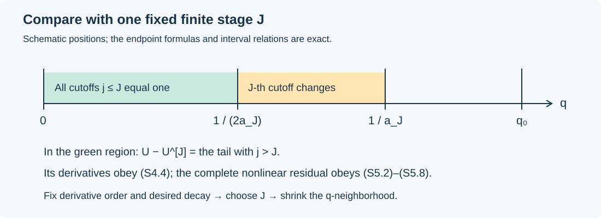
The intervals are schematic; their order and the factors \(1/2\) and \(2\) are exact. Formula (S4.4) compares the actual fields in the region \(q<(2a_J)^{-1}\). It does not compare the entire sum with a finite stage on the transition annuli.
S5. The nonlinear residual also vanishes to every order
We first bound each finite uncut state with an exponent independent of its length. From (S2.3)–(S2.5), taking one extra derivative for the curl, one obtains
\[ |U^{[J]}|_r\leq C^U_{J,r}q^{-K_r}\Lambda(q)^{P^U_{J,r}}, \qquad K_r=\max\{K_r^0,\ell_{r+1}\}. \tag{S5.1} \]Indeed \(q^{g_j}\leq1\) for every increment. The finite sum changes the coefficient and the maximum logarithmic power, but never this \(K_r\). Increasing the base exponents to nonnegative numbers in S2 ensures \(K_r\geq0\).
Put \(v=u^{[J]}\), \(p_*=p^{[J]}\), \(e=u-v\), and \(\pi=p-p_*\). Direct expansion gives
\[ \begin{aligned} \mathscr R_\nu(u,p)-\mathscr R_\nu(v,p_*) ={}&\partial_te-\nu\Delta e+\nabla\pi\\ &+(v\cdot\nabla)e+(e\cdot\nabla)v+(e\cdot\nabla)e. \end{aligned} \tag{S5.2} \]In particular, the quadratic term in the tail has not disappeared. For a space–time multi-index \(I\), each convective component is differentiated by
\[ \partial^I(v_k\partial_ke_i) =\sum_{L\leq I}\binom IL(\partial^Lv_k) (\partial^{I-L}\partial_ke_i), \tag{S5.3} \]with the same formula for \(e_k\partial_kv_i\) and \(e_k\partial_ke_i\), for every \(1\leq i,k\leq3\). Thus a finite constant \(C_m\), depending only on \(m\) and the three spatial components, satisfies
\[ \begin{aligned} |\mathscr R_\nu(u,p)-\mathscr R_\nu(v,p_*)|_m \leq C_m\bigl[&(1+\nu)|e|_{m+2}+|\pi|_{m+1}\\ &+|v|_{m+1}|e|_{m+1}+|e|_{m+1}^2\bigr]. \end{aligned} \tag{S5.4} \]All terms on the right follow from (S5.2)–(S5.3); there is no unestimated pressure, viscous or nonlinear contribution.
Now fix the desired derivative order \(m\) and power \(N\geq0\). Let \(r=m+2\) and \(K=K_r\). Choose a single integer \(J\geq\max(1,r)\), large enough that
\[ \alpha:=\frac{g_{J+1}}2-\ell'_r\geq N+K+1, \qquad \rho_J-K_m^R\geq N+1. \tag{S5.5} \]Such a \(J\) exists because both sequences of decay orders tend to infinity. Keep this \(J\) fixed from now on.
Choose \(\delta<(2a_J)^{-1}\) small enough that, on \(0<q<\delta\),
\[ C^U_{J,r}\Lambda(q)^{P^U_{J,r}}\leq q^{-1}, \qquad C^R_{J,m}\Lambda(q)^{P^R_{J,m}}\leq q^{-1}. \tag{S5.6} \]These are two applications of (S4.1). Equations (S4.4), (S5.1) and (S5.6) give
\[ |(e,\pi)|_{m+2}\leq2^{-J}q^\alpha,\qquad |v|_{m+1}\leq q^{-K-1}. \tag{S5.7} \]The linear terms in (S5.4) are bounded by constants times \(q^\alpha\); the mixed terms by \(q^{\alpha-K-1}\); and the quadratic tail term by \(q^{2\alpha}\). By (S5.5), every exponent is at least \(N\). The finite-stage residual, including its full remainder, satisfies
\[ |\mathscr R_\nu(U^{[J]})|_m \leq q^{\rho_J-K_m^R-1}+C^E_{J,m,N}q^N \leq (1+C^E_{J,m,N})q^N. \tag{S5.8} \]Combining (S5.4), (S5.7) and (S5.8) proves (S2.9). The order of choices is \((m,N)\), then one finite \(J\), then \(\delta\) and the final constant. No sum over the remainders \(E_{J,m}\) has been taken. This completes the proof of the summation lemma.
S6. Its exact place in the theorem audit
In the source's final correction sequence, the inputs proved in K0–K8 and L0–L7 of the construction audit are
\[ g_j=\frac{hj}{10},\qquad \sigma_j=\frac15+\frac j{10},\qquad \rho_j=h\sigma_j,\qquad \ell_m=2A+(m+1)\left(1+\frac{3h}{2}\right). \tag{S6.1} \]The field representatives are \(A_j=A_j^w+\Psi_je_\theta\), \(B_j=b_je_\theta\), and \(p_j=p^{[j]}-p^{[j-1]}\). These are the actual potentials and pressure increments in equations (9.15)–(9.18), not a new replacement field. The source initially uses \(\mathscr R_1\); the argument of this lesson retains any fixed \(\nu>0\).
For these exponents, the finite choice in (S5.5) is met by any integer \(J\) satisfying all three explicit inequalities
\[ \begin{aligned} J&\geq m+2,\\ J&\geq\frac{20}{h}\bigl(N+K_{m+2}+1+\ell'_{m+2}\bigr)-1,\\ J&\geq\frac{10}{h}\bigl(N+1+K_m^R\bigr)-2, \qquad \ell'_{m+2}=2A+(m+4)\left(1+\frac{3h}{2}\right)+m+3. \end{aligned} \tag{S6.2} \]This is an existence argument for every prescribed finite derivative order. It needs no numerical approximation of the fields and no estimate of a limiting decimal constant. It does require that the finite-stage construction and the derivative losses have already been proved as stated.
The summation implication is proved completely in S1–S5. The finite correction cycle, K0–K8, supplies the actual states and one common domain; the physical realization proof, L0–L7, supplies the stage-independent losses and exact potential representatives. The local-field assembly, I0–I7, applies this summation map to those actual fields, retaining the positive inner profile and exact heat exterior. The final argument, F0–F8, proves every terminal force derivative, compact extension, energy bound and comparison statement. These supplying proofs use the original profiles, supports, pressure and viscosity. The opening lesson presents the theorem and its geometry.
S7. Exercises with complete solutions
Exercise 1. Why not cut off the velocity directly? Compute the divergence of \(\chi(aq)u\) for a divergence-free field \(u\). Give a field for which the result is nonzero.
Solution. The product rule gives
\[ \operatorname{div}(\chi(aq)u)=a\chi'(aq)q_z u_3. \]For the constant divergence-free field \(u=(0,0,1)\), this is nonzero at a point with \(z\ne0\) and \(aq\) in the interior of the transition interval where \(\chi'\ne0\). Such points exist: choose \(0<|\eta|<1\), choose \(q\) in that interval divided by \(a\), and set \(z=q^D\eta\), \(t=1-q(1-\eta^2)\). Formula (S1.6) makes \(q_z\ne0\). Cutting the potential as in (S3.4) supplies exactly the additional velocity needed for zero divergence.
Exercise 2. Check the axial coordinate derivative. Derive \(\eta_z\) without suppressing either term from differentiating \(\eta=zq^{-D}\).
Solution. Both terms are
\[ \eta_z=q^{-D}-Dzq^{-D-1}q_z =q^{-D}\left(1-\frac{2D\eta^2}{L}\right) =q^{-D}\frac{1-(2h+2D)\eta^2}{L} =q^{-D}\frac{1-\eta^2}{L}, \]because \(2h+2D=1\). The original \(D=1/2-h\) and the factor \(2h\) in \(L\) both contribute.
Exercise 3. Why are logarithmic powers harmless after fixing a stage? Prove that any finite \(C,P\geq0\) admit \(\delta>0\) with \(C\Lambda(q)^P\leq q^{-1}\) for \(0<q<\delta\). Explain why this does not give a single \(\delta\) for arbitrary stage-dependent constants.
Solution. Apply (S4.1) with \(\gamma=1\): \(Cq\Lambda(q)^P\to0\), so it is at most one on some such interval. There is no uniform statement for an unrestricted family of \(C\)'s. For example, with \(P=0\) and \(C_j=2^j\), any fixed \(q>0\) violates \(C_j\leq q^{-1}\) for all sufficiently large \(j\). The proof first fixes \(J\) and only then chooses \(\delta\).
Exercise 4. Individually flat errors need not have a flat sum. Construct a smooth, locally finite sum on \(q>0\) whose individual terms vanish near zero but whose sum does not tend to zero there.
Solution. Define
\[ \phi(s)= \begin{cases} \exp\!\left(16-\dfrac1{(s-1/2)(1-s)}\right),&1/2<s<1,\\ 0,&\text{otherwise}. \end{cases} \]It is smooth with all derivatives zero at both endpoints, by the same exponential estimate used for \(\psi\). Also \(\phi(3/4)=1\). Set \(E_j(q)=\phi(2^jq)\), \(j\geq1\). Each term is identically zero for \(0<q\leq2^{-j-1}\), hence vanishes to every order at zero. The support intervals \((2^{-j-1},2^{-j})\) are disjoint. The sum is locally finite and smooth for \(q>0\), but equals one at \(q_j=3\cdot2^{-j}/4\to0\). It does not tend to zero. This is why (S5.8) uses one fixed finite-stage remainder instead of summing all of them.
Exercise 5. Smoothness away from the terminal set. Let a compact set have \(q\geq c>0\). Give a finite cutoff index after which every summand and all its derivatives vanish on that set.
Solution. Choose an integer \(J_c\geq0\) with \(2^{J_c}a_1c\geq1\). For \(j\geq J_c+1\),
\[ a_jq\geq2^{j-1}a_1c\geq1. \]Thus \(\chi(a_jq)=0\); all its derivatives at and above one are zero as well. Every term in the product and curl formulas vanishes. There are at most \(J_c\) remaining terms. This proves local smoothness without assuming that the uncut series converges.
Sources and proof locators
The exact source edition is the independent transcription frozen at workbench commit e672c8021820af39df19eb0bb1fdfa5ceb990751. The source paper is attributed to OpenAI. No original author TeX availability is asserted. This lesson uses the following parts; reading them does not certify the entire paper.
- Original coordinates, pp. 7–12: the coordinates in S1 and their exact derivative calculation.
- Lemma 5.4 and equations (5.28)–(5.39), lines 176–442: the summation operation independently proved in S2–S5.
- Proposition 9.6, statement and first step, and its remaining steps, Lemmas 9.7–9.8, equations (9.15)–(9.18), and the start of Proposition 9.9: the original finite construction whose full proofs and receiving maps are linked in S6.
- Proposition 9.9 and the final localization argument: where summation is used to obtain the local field before constructing the final force.
This is a complete proof of the stated summation lemma and coordinate calculation, with five solved exercises. Its actual inputs are supplied by the complete constructions linked in S6. No novelty claim is made.
Initializing and repeating the complete correction cycle
NS-BLOWUP N6.2. Exposition by GPT-6 Astra (OpenAI). This independent exposition is dedicated to CC0.
The individual operators now have to work together. A wave correction changes the means; a mean correction changes the wave residual; every pressure and every moment must be recomputed from the actual new velocity. This lesson proves that the original four operations preserve a complete finite state and improve all three residual orders. The same fixed inverses remain available on one positive domain at every finite stage.
CS1–CS5 prove the support, harmonic, edge and exact-residual closure needed by the next pulse solve. FC0–FC8 construct the initial state, apply all four updates, retain their nonlinear terms, prove the simultaneous bounds and establish the common domain. FC9 gives five worked exercises, including all physical viscosity factors, a bound on harmonic growth and the exact mixed term omitted by using a stale field.
The supplying lessons are the actual base, Z0–Z9; support construction, OS0–OS7; pulse construction, PU0–PU9; stress and interactions, SC1–SC11 and NI1–NI7; radial mean equations, RP1–RP9 and RM1–RM4; temporal means, TM0–TM7; and five compact profiles, MM1–MM9. References P,W,C,R,T,M in the proof retain their precise locations in the linked supplying audits; these are the same operators developed in those lessons.
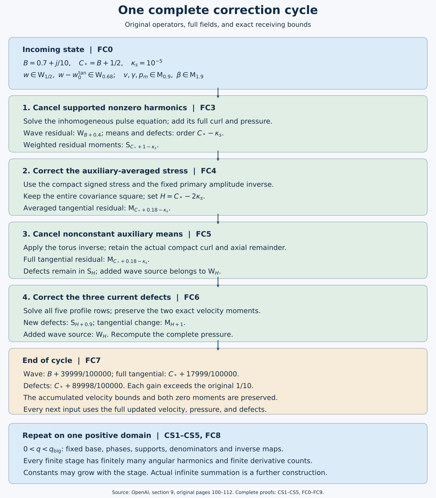
The editable drawing source depicts the actual maps and estimates. It is an algebraic construction diagram. The original OpenAI transcription remains separate from this exposition and its proved refinements.
CS1. The actual support invariant and harmonic sets
Keep the original band, phase and class definitions in W1–W3 and C1. In particular the band \(Q=2^{-\ell}\), \(\varepsilon=Q^h\), \(S_*=\ell^2\) and the integer \(kp_\gamma\ne0\) are fixed before coefficient differentiation. Original (6.28), checked on page 70, prescribes
\[ \begin{split} \mathcal E_\gamma&=\{(x_*,H):H\in\overline{\mathcal R_\gamma^H}\},\\ \Omega_\gamma&=\{(x_*,H)\in\mathcal E_\gamma: x_*\in K_\gamma^*,\ \xi_g(H)\in\operatorname{supp}\chi_g,\ X_a\le X\le X_b\},\\ \Omega_\gamma^{\rm cut}&=\Omega_\gamma\cap\{v(H)\in\operatorname{supp}\psi\}. \end{split} \tag{CS1.1} \]Here \(x_*=(R,Z,T)\), \(K_\gamma^*\) is the prescribed slow support, and \(\mathcal E_\gamma^+\) replaces the closed rectangle by its fixed open enlargement. The coefficient is independent of \(\theta\), smooth on that open domain, and extends by zero across the slow, transverse and radial shell boundaries. On \(0\le v\le L_s\), its bound is
\[ |\partial^Ia_{\gamma,m}|\le C_{j,I}\varepsilon^\alpha S_*^{b_{j,I}} \sqrt\zeta\delta^{-d_{j,I}}P(v),\qquad 0<P(v)\le1. \tag{CS1.2} \]Actual cut velocities have support in \(\Omega_\gamma^{\rm cut}\) and a smooth zero extension in \(v\). The uncut local initial-value solution has no temporal zero-extension requirement. The source entering that solve is an actual supported coefficient; it need not be divisible by \(\eta_\beta\chi_g\psi\).
The primary amplitudes have these properties by C4 and C7. Differentiating an identically zero smooth function outside a closed support leaves it zero there. Applying a smooth local differential operator therefore preserves the support in (CS1.1). Explicit \(D_r\) occurrences cost at most \(\kappa_s=10^{-5}\) each, as proved in W3; further coefficient derivatives of the resulting estimate only change its fixed constants and polynomial degrees. The full linearized residual, including phase derivatives and all cylindrical terms, is expanded in P8, so its class estimate does not omit derivatives falling on an exponential.
For products, the full unsymmetrized formulas in W5–W6 give the following exhaustive possibilities. A mean coefficient times a nonzero harmonic retains that harmonic and its support. Two waves with the same label have integer multiplier \(m+m'\); if this is nonzero they retain the wave weight since \(P^2\le P\) and \(\zeta\le\sqrt\zeta\). If it is zero, the phases cancel and the result has the mean weight \(\zeta\). Angular averaging removes every other integer multiplier because \(kp_\gamma\ne0\). Products of different labels, including derivatives and curls, vanish on their closed supports by W2. Thus no mixed phase has to be inverted. Products involving exactly one wave and any mean generated earlier inherit the wave's support even if that mean now occupies the entire auxiliary torus.
Starting with multipliers \(\{-1,1\}\), the set after one update is contained in
\[ \mathscr H_{j+1}\subset \bigl(\mathscr H_j\cup\{-1,1\}\cup \{m+m':m,m'\in\mathscr H_j\cup\{-1,1\}\}\bigr)\setminus\{0\}. \tag{CS1.3} \]A pulse solve, curl, pressure coefficient or coefficient derivative preserves its multiplier; the signed stress map introduces only \(\pm1\); means introduce zero only. Formula (CS1.3) is a finite set at every finite stage and does not depend on a band. For example, if all old multipliers have modulus at most \(M_j\ge1\), all newly formed ones have modulus at most \(2M_j\). This supplies a finite stage-dependent harmonic bound rather than presupposing one.
Finally P4 gives the particular pulse by an integral along the original auxiliary path, holding all slow and transverse coordinates fixed. If that fixed pair is outside its prescribed support, the source vanishes along the entire path, so the integral and all its derivatives vanish. Inside it the P3 forward propagator cancels the source envelope exactly and yields (CS1.2) with a polynomial factor from the length \(L_s=O(S_*)\). P4's differentiated integral equation proves every fixed derivative estimate. Multiplying by the original \(\psi\) restores \(\Omega_\gamma^{\rm cut}\); taking the full curl preserves it. This proves the inverse's incoming support property at every finite update, without a cutoff-division assumption.
CS2. Mean operations, edge integration and stress input
The mean class allows full auxiliary dependence. Its exact bound is
\[ |\partial^If|\le C_{j,I}\varepsilon^\mu S_*^{b_{j,I}} \zeta(X)\delta(X)^{-d_{j,I}},\qquad \zeta(X)=\exp\left(-\frac{a_a}{\log^2(X/X_a)}- \frac{a_b}{\log^2(X_b/X)}\right),\quad a_a,a_b>0. \tag{CS2.1} \]Radial integration follows the original shifted auxiliary path and retains its full cutoff remainder; the exact operator and all its coefficient derivatives are proved in R3–R6. Its domain and output are \(\mathsf M_\mu\), with the original physical measures in R1 and M2. The pressure uses the same operator, the axial velocity uses the full compact curl in R7, and the temporal mean inverse is the exact Fourier operator with its finite derivative bound in T1–T3. The five-profile operation has the explicit inverse in M3 and the complete nonlinear recomputation in M5–M7. These mean operations preserve angular independence. They can enlarge auxiliary support; they cannot create a new nonzero angular harmonic. W5 treats their next interaction with each wave using the full resulting mean, including all cutoff remainders.
For the auxiliary-independent stress passed to C5, fix \(e\in\{1,2\}\). Given its radial source \(f(R,Z,T)\), put
\[ \begin{gathered} M_e=\int_0^\infty R^ef\,dR,\qquad f_0=f-\rho_eM_e,\qquad \int_0^\infty R^e\rho_e\,dR=1,\\ \Sigma_e(R)=R^{-e}\int_0^R s^ef_0(s)\,ds =-R^{-e}\int_R^\infty s^ef_0(s)\,ds. \end{gathered} \tag{CS2.2} \]The prescribed smooth bump \(\rho_e\) has compact interior support in the shell and is independent of the auxiliary variable. Its chart representative includes the original radial moment normalization in (CS2.2); any slow dependence of this representative is retained under differentiation and has the uniform bounds in R4 and M2. The equality of the two integrals follows from the exact zero total moment of \(f_0\). In the original correction it is the auxiliary average of the tangential residual that supplies \(f\); this is precisely why the input here is auxiliary independent. Its moment is retained as a separate mean defect, not discarded. Both formulas vanish outside the closed shell. They show \((\partial_R+e/R)\Sigma_e=f_0\), including its sign and radial weight.
Here is an explicit estimate for the edge integral used in original pages 104–105. For \(a>0\), \(M\ge0\), put \(p=(M-3)/2\) and \(v_0=a/\delta^2\). Substitution gives
\[ \int_0^\delta s^{-M}e^{-a/s^2}\,ds =\tfrac12a^{(1-M)/2}\int_{v_0}^\infty v^pe^{-v}\,dv. \tag{CS2.3} \]For \(p\le0\), the final integral is at most \(v_0^pe^{-v_0}\). For \(p>0\) and \(v_0\ge2p\), write \(v=v_0+w\) and use \(\log(1+w/v_0)\le w/v_0\) to obtain \((v_0+w)^p\le v_0^pe^{w/2}\). Integration then gives at most \(2v_0^pe^{-v_0}\). Hence, in both cases for sufficiently small \(\delta>0\),
\[ \int_0^\delta s^{-M}e^{-a/s^2}\,ds \le a^{-1}\delta^{3-M}e^{-a/\delta^2}. \tag{CS2.4} \]All fixed derivatives of \(e^{-a/s^2}\) are a finite linear combination of powers \(s^{-j}e^{-a/s^2}\) with \(0\le j\le3k\) at derivative order \(k\): differentiate each term, producing exponents \(j+1\) and \(j+3\), and induct. On \(0<s\le1\) this bounds them by \(C_{k,a}s^{-3k}e^{-a/s^2}\). The other edge factor and its derivatives are bounded in a sufficiently small collar and its value is bounded below positively there.
Use the forward integral in (CS2.2) at the inner edge and the backward integral at the outer edge. The bump vanishes in both collars; all radial Jacobians and powers of \(R\) are bounded there. Equation (CS2.4), after each allowed coefficient derivative, retains \(\zeta\delta^{-M'}\). Moving-boundary terms vanish because the integrand has every zero edge jet; equivalently differentiate its zero extension on a fixed half-line as in R4. In the remaining compact interior, \(\zeta\) is bounded below positively. Thus a source in \(\mathsf M_\mu\) yields \(\Sigma_e\in\mathsf M_\mu\), with smooth edge extension. The same reasoning applies to the two stress components with \(e=2,1\), respectively. C5 then proves the signed amplitude division and wave class \(\mathsf W_{\mu-1/2}\) at every derivative order. Those are coefficient bounds: one must retain the carrier exponential separately when differentiating an actual velocity field.
The common band set is unchanged by a radial path because \(q\) depends on \((z,t)\), which the path holds fixed. Temporal inversion and pulse propagation fix all slow coordinates. For each of the boundedly many active bands, a radial segment of bounded chart length meets at most \(C S_*^3\) radial mesh boxes: their chart widths are comparable to \(S_*^{-3}\). At fixed \((Z,T)\) there are boundedly many transverse/time mesh choices. Thus radial aggregation introduces at most a fixed polynomial factor in \(S_*\); any finite composition still has a finite polynomial factor. The common-torus degree differences depend on the bounded band range, not on the number of radial boxes. At a point, wave labels have bounded slow overlap and the disjoint auxiliary supports of W2. These facts justify the uniform-in-band estimates after aggregation.
CS3. Exact residual decomposition and every flat term
For the original viscosity define
\[ \mathscr R_\nu(u,p)=\partial_tu-\nu\Delta u+(u\cdot\nabla)u+\nabla p. \]For any actual increment \((w,\pi)\), componentwise expansion gives exactly
\[ \mathscr R_\nu(u+w,p+\pi)=\mathscr R_\nu(u,p) +\partial_tw-\nu\Delta w+\nabla\pi +(u\cdot\nabla)w+(w\cdot\nabla)u+(w\cdot\nabla)w. \tag{CS3.1} \]All velocities in this equation are the full fields, including the curl remainders, compact-primitive remainders and earlier corrections. If \(\mathscr R_\nu(u,p)=\mathcal G+\mathcal F\), the old \(\mathcal F\) enters additively. It is a residual field, not an omitted part of \(u\).
The finite-stage split starts with the original base error \(\mathcal E_{B,\nu}\) in \(\mathcal F\), together with the generated pulse endpoint and primitive cutoff errors. P6 proves the exact pulse error \((1-\psi)f_m+\psi't_m\). On its support the Gaussian estimate gives, after any fixed physical derivative, \(C Q^{-M}S_*^B e^{-cS_*}\). Since \(S_*=\ell^2\), \(Q=2^{-\ell}\) and \(q\) is comparable to \(Q\),
\[ q^{-N}Q^{-M}S_*^B e^{-cS_*} \le C_N\exp[-c\ell^2+(M+N)\ell\log2+2B\log\ell]\longrightarrow0. \tag{CS3.2} \]R5–R6 prove the exact primitive cutoff error is \(O(q^N)\) in every prescribed physical derivative, using finitely many extra coefficient derivatives for each prescribed \(N\). Thus a polynomial count of labels and finitely many error types at a fixed stage preserve these estimates: for the primitive bound first choose the power \(N+1\), and use the boundedness of \(S_*^Bq\); for the Gaussian use (CS3.2) with the larger polynomial. Every fixed \(\nu>0\) has the unchanged factors in C9 and M2, so constants may depend on \(\nu\), but no viscosity is omitted.
The actual \(\mathcal E_B\) has the original all-order flat bound in Proposition 5.5 by Z5; I1 identifies that same base and residual in the chart construction. The proof here establishes that the subsequent operators preserve this supplied property and do not require any stronger uniform-in-stage version of it.
At each update expand (CS3.1) first. Keep its newly identified endpoint errors and uncompensated primitive cutoff errors in \(\mathcal F\); all remaining terms form \(\mathcal G\) and have the supported coefficient estimates in CS1–CS2. Nonzero-harmonic Gaussian endpoint errors are not fed into a new forward pulse solve. A mean operation can cancel an explicit old flat mean term because the exact conservative residual includes it. If its actual residual change has the form \(-H+G_{\rm new}+F_{\rm new}\), where \(H\) is that canceled contribution of old \(\mathcal F\), the new split is exactly
\[ \mathcal G'=\mathcal G+G_{\rm new},\qquad \mathcal F'=\mathcal F-H+F_{\rm new}. \tag{CS3.3} \]The compact-primitive estimates put this specific \(H\) in every required mean class and give its physical flat bounds. Thus subtraction preserves the finite-stage flat estimate. No inference that every physically flat function has every coefficient-class bound is needed. Formula (CS3.3) prevents double counting a canceled contribution. The exact velocities remain unchanged by how their residual terms are assigned.
After each finite stage, therefore,
\[ \mathscr R_\nu(u^{[j]},p^{[j]})=\mathcal G^{[j]}+\mathcal F^{[j]},\qquad |\mathcal F^{[j]}|_m\le C_{j,m,N,\nu}q^N \tag{CS3.4} \]for every fixed derivative order \(m\) and power \(N\). Its supported part has the finite locally supported harmonic expansion in CS1, and its angular mean is in the mean class furnished by the actually applied estimates. This statement does not sum \(\mathcal F^{[j]}\) over infinitely many \(j\).
CS4. Exact mean equations after every update
Use the exact chart from M2, with the original viscosity retained by that map. Its representative has viscosity coefficient \(\varepsilon\). Write the full velocity as
\[ u_*=(b+\beta,V+v,G+\gamma)+w,\qquad \langle w\rangle_\theta=0, \qquad W_{ab}=\langle w_aw_b\rangle_\theta. \]The base and mean correction are divergence free and every wave is an actual curl. Put \(\Delta_0=D_r^2+R^{-1}D_r+D_z^2\) and \(\mathfrak t_*=-\varepsilon\partial_T+c_i\mathcal N_i\). To keep its role distinct from the signed increment of C5, denote the original base stress by \(\Sigma^B=(\Sigma^B_\theta,\Sigma^B_z)=Q^{2A}\mathcal T_{\rm phys}\) at viscosity one; at the original viscosity its representative is \(\nu^{-1}Q^{2A}\mathcal T_{\rm phys,\nu}\). This is the full base stress of (5.41), not only its order-zero part.
The conservative transport identity follows directly from divergence zero. For example \((D_r+R^{-1})(u_ru_\theta)+R^{-1}\partial_\theta(u_\theta^2)+D_z(u_zu_\theta)\) equals the scalar transport of \(u_\theta\), because the extra factor multiplying \(u_\theta\) is the divergence. The cylindrical component equation additionally has \(u_ru_\theta/R\), giving \(D_r+2/R\). The same argument for \(u_r\) adds the centrifugal term \(-u_\theta^2/R\); for \(u_z\) there is no additional connection term. Hence the exact three transport components are
\[ \begin{split} (u\cdot\nabla_*u)_r&=(D_r+R^{-1})u_r^2+R^{-1}\partial_\theta(u_\theta u_r)+D_z(u_zu_r)-u_\theta^2/R,\\ (u\cdot\nabla_*u)_\theta&=(D_r+2/R)(u_ru_\theta)+R^{-1}\partial_\theta(u_\theta^2)+D_z(u_zu_\theta),\\ (u\cdot\nabla_*u)_z&=(D_r+R^{-1})(u_ru_z)+R^{-1}\partial_\theta(u_\theta u_z)+D_z(u_z^2). \end{split} \tag{CS4.1} \]Angular derivatives integrate to zero. Terms with exactly one factor of \(w\) have zero average; terms with two retain the entire \(W\). The cylindrical vector Laplacian has components \(\Delta_{\rm sc}u_r-u_r/R^2-2\partial_\theta u_\theta/R^2\), \(\Delta_{\rm sc}u_\theta-u_\theta/R^2+2\partial_\theta u_r/R^2\), \(\Delta_{\rm sc}u_z\), where \(\Delta_{\rm sc}=\Delta_0+R^{-2}\partial_\theta^2\). After averaging it is \(\Delta_0-R^{-2}\) on the first two components and \(\Delta_0\) on the third. These formulas follow by twice differentiating \(\partial_\theta e_r=e_\theta\), \(\partial_\theta e_\theta=-e_r\), retaining the two cross derivatives. Subtracting the pure base, whose nonflat tangential residual is minus the radial divergence of \(\Sigma^B\), now gives
\[ \begin{split} g_r={}&-\mathfrak t_*\beta-(D_r+R^{-1})(2b\beta+\beta^2+W_{rr}) -D_z(b\gamma+G\beta+\beta\gamma+W_{zr})\\ &+(2Vv+v^2+W_{\theta\theta})/R+\varepsilon(\Delta_0-R^{-2})\beta,\\ E_\theta={}&\mathfrak t_*v+(D_r+2/R)(bv+V\beta+\beta v+W_{r\theta}) +D_z(Gv+V\gamma+\gamma v+W_{z\theta})\\ &-\varepsilon(\Delta_0-R^{-2})v-(D_r+2/R)\Sigma^B_\theta,\\ E_z={}&\mathfrak t_*\gamma+(D_r+1/R)(b\gamma+\beta G+\beta\gamma+W_{rz}) +D_z(2G\gamma+\gamma^2+W_{zz}+p_m)\\ &-\varepsilon\Delta_0\gamma-(D_r+1/R)\Sigma^B_z. \end{split} \tag{CS4.2} \]These are original (8.3) with every term retained, checked directly on original page 89. Reconstruct the pressure after each update using the full new \(g_r\):
\[ \mathcal P=\int_0^\infty\langle g_r\rangle_Y\,dR,\qquad \int_0^\infty\rho\,dR=1,\qquad p_m=\mathsf T_0(g_r-\rho\mathcal P). \tag{CS4.3} \]The exact compact-primitive identity from R7 gives \(D_rp_m-g_r=-\rho\mathcal P-\mathcal A_0(g_r-\rho\mathcal P)\). Thus neither the radial defect nor the cutoff remainder is silently set to zero. The nonzero-harmonic pulse pressures and their endpoint residuals have zero angular average. Recalling the exact split (CS3.4), we obtain at every finite stage
\[ \left\langle\mathcal G_*^{[j]}+\mathcal F_*^{[j]}-\mathcal E_{B,*}\right\rangle_\theta =(D_rp_m^{[j]}-g_r^{[j]},E_\theta^{[j]},E_z^{[j]}), \tag{CS4.4} \]where all three physical residual representatives have the factor \(\nu^{-1/2}Q^{2A+1/2}\). This is original (9.6) at \(\nu=1\), with its exact extension to every original viscosity. The pressure and flux derivatives in (CS4.2) use the complete current state, so (CS4.4) holds irrespective of whether a cancelable flat mean term is presently recorded in \(\mathcal F\).
CS5. What the finite induction establishes
At stage zero C1–C7 supply the primary amplitudes, supports, real curls and their covariance errors; CS4 supplies the exact mean identities after pressure reconstruction. Suppose a finite list of operators has been applied. CS1 handles each differential, pulse and wave-product operation, gives its finite harmonic set, and proves the next pulse source has its prescribed support. CS2 handles each mean operation and its next auxiliary-independent signed stress input. CS3 updates the full residual by equality and preserves the all-order physical flat bound. CS4 recomputes pressure and the conservative means from the full new fields. This covers every operator listed in original Proposition 9.3 and proves its finite-stage closure by induction, with the source base's stated input properties left visible.
FC0. The original finite state and all receiving quantities
Keep the original constants and coordinates
\[ 0<h<1/100,\quad A=1/2+h,\quad D=1/2-h,\quad Q=2^{-\ell},\quad\varepsilon=Q^h,\quad S_*=\ell^2,\quad\kappa_s=10^{-5}. \]The complete chart velocity and pressure are
\[ u_*=(b+\beta,V+v,G+\gamma)+w,\qquad p_*=p_{B,*}+p_m+p_w,\qquad \langle w\rangle_\theta=\langle p_w\rangle_\theta=0. \tag{FC0.1} \]Every wave is an actual curl, including its lower-order curl terms. The mean is the curl of an azimuthal potential plus a direct azimuthal field. Write \(w_0^{\rm tan}=W_0^{\rm as}\) for the fixed assembled primary transverse field before its curl remainder. It remains fixed throughout the iteration.
Original Definition 9.4 requires
\[ \begin{gathered} \sigma_j=\tfrac15+\tfrac j{10},\qquad B_j=\tfrac12+\sigma_j,\qquad C_j^*=1+\sigma_j,\\ \mathcal G_{\rm wave}^{[j]}\in\mathsf W_{B_j},\qquad E_\theta,E_z\in\mathsf M_{C_j^*},\qquad (\mathcal P,\mathcal J_\theta,\mathcal J_z)\in\mathsf S_{C_j^*},\\ w\in\mathsf W_{1/2},\qquad w-w_0^{\rm tan}\in\mathsf W_{0.68},\qquad v,\gamma,p_m\in\mathsf M_{0.9},\qquad\beta\in\mathsf M_{1.9},\\ \int_0^\infty R^2\langle v\rangle_Y\,dR=0,\qquad \int_0^\infty R\langle\gamma\rangle_Y\,dR=0. \end{gathered} \tag{FC0.2} \]These are the original (9.8)–(9.10); the decimal constants are retained. The wave class concerns each collected label and nonzero harmonic, with bounds \(\varepsilon^a S_*^b\sqrt\zeta\delta^{-d}P(v)\) for every fixed coefficient derivative. The mean class has \(\varepsilon^aS_*^b\zeta\delta^{-d}\) bounds and no auxiliary-support restriction. The moment class \(\mathsf S_a\) has \(\varepsilon^aS_*^b\) bounds for every fixed \((Z,T)\) derivative, after including its original radial measure. The supports, phases, weight, envelope and covering maps are those explicitly specified in W1–W3 and CS1–CS2. Constants may depend on the finite stage and derivative order. The bound with a larger exponent implies that with a smaller one since \(0<\varepsilon\le1\); it does not assert a smaller stage-dependent constant.
Let \(W_{ab}=\langle w_aw_b\rangle_\theta\). The radial source is the entire expression CS4.2 or M5.2. Reconstruct pressure after each update using
\[ \mathcal P=\int\langle g_r\rangle_Y\,dR,\qquad p_m=\mathsf T_0(g_r-\rho\mathcal P),\qquad \int\rho\,dR=1. \tag{FC0.3} \]The two other defects and the moving pressure-moment coefficient are
\[ \begin{split} \mathcal J_\theta&=\int R^2\langle Gv+V\gamma+\gamma v+W_{z\theta}\rangle_Y\,dR,\\ \mathcal J_z&=\int R\langle2G\gamma+\gamma^2+W_{zz}\rangle_Y\,dR -\tfrac12\int R^2\langle g_r\rangle_Y\,dR,\qquad c_\rho=\tfrac12\int R^2\rho\,dR. \end{split} \tag{FC0.4} \]Unspecified radial integrals in this note run from zero to infinity. The radial residual is exactly
\[ D_rp_m-g_r=-\rho\mathcal P-\mathcal A_0(g_r-\rho\mathcal P). \tag{FC0.5} \]The compact-primitive remainder \(\mathcal A_0\) is retained. Its all-order physical flatness is proved in R5–R6, not inferred from a finite numerical check.
The original base inputs consumed by the cycle are (5.41)–(5.44): divergence zero, residual equal to minus the cylindrical radial divergence of its full tangential stress plus \(\mathcal E_B\), flatness of every fixed derivative of \(\mathcal E_B\), \(b=O(\varepsilon)\) with all fixed coefficient derivatives, bounded tangential coefficients and their derivatives, and the exact reserved mean patch from M1. The order-zero tangential fields differ from the full ones by \(O(\varepsilon^2)\). For the stress, original (5.43) gives, with \(\widehat{\mathcal T}=q^{A+1/2}\mathcal T_{\rm phys}\),
\[ |\mathcal D^I(\widehat{\mathcal T}-\mathcal T_0)| \le C_Iq^{2h}\zeta\delta^{-N_I}\le C_Iq^h\zeta\delta^{-N_I}. \tag{FC0.6} \]Both powers are retained. With \(\xi=q/Q\), the exact chart difference is
\[ \Sigma^B-\Sigma^{(0)}=Q^{2A}q^{-A-1/2}(\widehat{\mathcal T}-\mathcal T_0),\qquad Q^{2A}q^{-A-1/2}q^{2h} =Q^{3h}\xi^{-A-1/2+2h}. \tag{FC0.7} \]Thus this input gives \(\Sigma^B-\Sigma^{(0)}\in\mathsf M_3\subset\mathsf M_2\), retaining the smooth \(\xi\) factor. Every fixed derivative follows from the profile-to-chart chain rule C4 and the original \(q\partial_q,\partial_X,\partial_\eta\) bounds. These calculations identify exactly which base assertions the cycle uses. The actual supplying fields and these exact bounds are derived in Z0–Z8, especially Z6.2–Z6.4.
FC1. Exact wave-update receiver and weighted mean identities
First keep \(\beta,v,\gamma\) fixed and add an actual wave increment \(s\). Set
\[ \Delta W_{ab}=\langle w_as_b+s_aw_b+s_as_b\rangle_\theta. \tag{FC1.1} \]Subtract the two full conservative equations CS4.2. No base or mean field has changed, so all its terms cancel, leaving
\[ \begin{split} \Delta g_r&=-(D_r+R^{-1})\Delta W_{rr}-D_z\Delta W_{zr}+\Delta W_{\theta\theta}/R,\\ \Delta\mathcal P&=\int\langle\Delta g_r\rangle_Y\,dR,\qquad \Delta p_m=\mathsf T_0(\Delta g_r-\rho\Delta\mathcal P),\\ \Delta E_\theta&=(D_r+2/R)\Delta W_{r\theta}+D_z\Delta W_{z\theta},\\ \Delta E_z&=(D_r+1/R)\Delta W_{rz}+D_z(\Delta W_{zz}+\Delta p_m),\\ \Delta\mathcal J_\theta&=\int R^2\langle\Delta W_{z\theta}\rangle_Y\,dR,\\ \Delta\mathcal J_z&=\int R\langle\Delta W_{zz}\rangle_Y\,dR -\tfrac12\int R^2\langle\Delta g_r\rangle_Y\,dR. \end{split} \tag{FC1.2} \]These equations include the square of the new wave, its entire curl remainder, every pressure change and the pressure contribution to the axial flux defect. The harmonic pressure increment has zero angular mean, so it adds no term to (FC1.2). A mean pressure change adds no nonzero angular harmonic.
Next derive the exact weighted identities needed to remove a compact residual by stress. Average CS4.2 over the auxiliary torus. The fast torus derivatives integrate to zero, so \(D_r\) becomes \(\partial_R\), \(D_z=\varepsilon\partial_Z\), and \(\mathfrak t_*\) becomes \(-\varepsilon\partial_T\). Multiply the azimuthal equation by \(R^2\) and the axial equation by \(R\). The radial divergences become endpoint terms, all zero by smooth compact shell support, including the base stress. The radial viscous terms give exactly
\[ \begin{aligned} \int R^2(f_{RR}+R^{-1}f_R-R^{-2}f)\,dR &=(2-1-1)\int f\,dR=0,\\ \int R(g_{RR}+R^{-1}g_R)\,dR &=-\int g_R\,dR+\int g_R\,dR=0. \end{aligned} \tag{FC1.3} \]The time and axial viscosity contributions are derivatives of the two zero integrals in (FC0.2). The Haar average of the compact remainder in (FC0.5) is zero: R3's full radial integral, after Haar averaging, is the zero total integral of \(g_r-\rho\mathcal P\); its cutoff is auxiliary independent. Integration by parts therefore yields the exact pressure moment
\[ \int R\langle p_m\rangle_Y\,dR =-\tfrac12\int R^2\partial_R\langle p_m\rangle_Y\,dR =-\tfrac12\int R^2\langle g_r\rangle_Y\,dR+c_\rho\mathcal P. \tag{FC1.4} \]Combining the surviving axial fluxes proves original (8.16), with no remainder omitted:
\[ \int R^2\langle E_\theta\rangle_Y\,dR=\varepsilon\partial_Z\mathcal J_\theta, \qquad \int R\langle E_z\rangle_Y\,dR=\varepsilon\partial_Z(\mathcal J_z+c_\rho\mathcal P). \tag{FC1.5} \]The \(q\)-scaled original bump gives \(c_\rho=(q/(2Q))\int x^2\widehat\rho(x)\,dx\), so all fixed \((Z,T)\) derivatives are bounded, but it need not be constant. Its full product with \(\mathcal P\) stays inside \(\partial_Z\). Consequently defects of class \(\mathsf S_a\) give the two weighted residual moments in \(\mathsf S_{a+1}\).
FC2. Initialization from the actual primary curls
Start with \(v=\gamma=\beta=0\). C7 gives the exact primary wave
\[ w=w_0^{\rm tan}+R_0,\qquad w\in\mathsf W_{1/2},\qquad R_0\in\mathsf W_{1-\kappa_s}. \tag{FC2.1} \]Here \(R_0\) is the actual primary curl remainder from C7. The linear residual bound P8 implies the original conservative exponent \(1-3\kappa_s\), and W6 gives the quadratic wave exponent \(1-\kappa_s\). Thus the supported nonzero harmonic residual is in \(\mathsf W_{1-3\kappa_s}\). The excluded Gaussian tails remain additive flat residuals. At zero means, the exact radial source is \(g_r=-(D_r+R^{-1})W_{rr}-D_zW_{zr}+W_{\theta\theta}/R\). Since every \(W_{ab}\in\mathsf M_1\), (FC0.3), CS4.2 and FC0.7 show
\[ g_r,p_m,E_\theta,E_z\in\mathsf M_{1-\kappa_s},\qquad (\mathcal P,\mathcal J_\theta,\mathcal J_z)\in\mathsf S_{1-\kappa_s}. \tag{FC2.2} \]All moment measures in (FC0.4) are bounded on the shell; the class estimates hold after each slow derivative by smooth zero extension and differentiation under the integral.
The auxiliary-averaged tangential residual has a better order. Let \(\Sigma^{(0)}\) be the assembled leading stress and \(\Sigma^B\) the full base stress. With zero means, the exact equations are
\[ \begin{split} \langle E_\theta\rangle_Y &=(\partial_R+2/R)(\langle W_{r\theta}\rangle_Y-\Sigma^{(0)}_\theta) -(\partial_R+2/R)(\Sigma^B_\theta-\Sigma^{(0)}_\theta) +\varepsilon\partial_Z\langle W_{z\theta}\rangle_Y,\\ \langle E_z\rangle_Y &=(\partial_R+1/R)(\langle W_{rz}\rangle_Y-\Sigma^{(0)}_z) -(\partial_R+1/R)(\Sigma^B_z-\Sigma^{(0)}_z) +\varepsilon\partial_Z\langle W_{zz}+p_m\rangle_Y. \end{split} \tag{FC2.3} \]C6 proves cancellation of the leading covariance with the exact squared partition, including derivatives of its sum. C7 proves the first differences in (FC2.3) have class \(\mathsf M_{3/2-\kappa_s}\); their quadratic curl part has the still higher exponent \(2-2\kappa_s\). C8 allows the same exponent after full auxiliary averaging and radial divergence. Even using the source's weaker allowance of an additional \(\kappa_s\) gives \(3/2-2\kappa_s\). The remaining terms have exponents at least \(2-\kappa_s\): the axial covariance has exponent two, axial pressure has \(2-\kappa_s\), and FC0.7 supplies the higher base stress. Since \(3/2-2\kappa_s=1.49998>1.49\),
\[ \langle E_\theta\rangle_Y,\langle E_z\rangle_Y\in\mathsf M_{1.49}. \tag{FC2.4} \]Set \(H_0=1-\kappa_s\). Apply the actual temporal mean map T1–T4 to the zero-auxiliary-average parts of the residual. Its increments satisfy \(\Delta v,\Delta\gamma,\Delta p_m\in\mathsf M_{H_0}\), \(\Delta\beta\in\mathsf M_{H_0+1}\). They preserve both moments exactly. Its full tangential change after cancellation, apart from the explicitly retained axial reconstruction term, has exponent \(H_0+1-2\kappa_s\); that reconstruction term belongs to every required mean class by T3.4. Thus the exact tangential residuals retain order \(1.49\). Defects remain in \(\mathsf S_{H_0}\), because T4 computes their changes in \(\mathsf S_{H_0+0.9}\). Their old values are not set to zero by this step. W5 and W7 give the added nonzero harmonic residual in \(\mathsf W_{H_0}\).
Recompute all three defects and apply the five-profile correction M3–M7 at order \(H_0\). Its first two rows preserve the two moments; its other three rows cancel the linear parts of the current defects. Its complete nonlinear recomputation gives defects in \(\mathsf S_{H_0+0.9}\), which implies the weaker bound used in original Proposition 9.5. Its tangential changes have exponent \(H_0+1\) and its wave interaction exponent \(H_0\), so they preserve the tangential order \(1.49\) and the supported wave order \(1-3\kappa_s\). These operator proofs apply here because \(H_0>0.9\), all means before the temporal step are zero, and after it they satisfy the \(0.9,1.9\) bounds required by M6.
The initialized bounds are consequently
\[ \mathcal G_{\rm wave}^{[0]}\in\mathsf W_{1-3\kappa_s}\subset\mathsf W_{0.7},\qquad E_\theta,E_z\in\mathsf M_{1.49}\subset\mathsf M_{1.2},\qquad (\mathcal P,\mathcal J_\theta,\mathcal J_z)\in\mathsf S_{1.9-\kappa_s}\subset\mathsf S_{1.2}. \tag{FC2.5} \]The wave itself is unchanged by these mean operations; (FC2.1) gives \(w-w_0^{\rm tan}\in\mathsf W_{1-\kappa_s}\subset\mathsf W_{0.68}\). All mean velocities and reconstructed mean pressure have exponent at least \(H_0>0.9\), and radial mean velocity at least \(H_0+1>1.9\). This proves every part of (FC0.2) at \(j=0\), with pressure recomputed before and after both updates. Flat residuals and support remain as proved in CS1–CS4. This establishes the initialization of original Proposition 9.5 with its actual global-base supplier in Z0–Z8.
FC3. Cycle step 1: the inhomogeneous pulse update
Fix a finite state and abbreviate \(B=B_j\ge0.7\), \(C_*=C_j^*=B+1/2\). Group each current supported source coefficient as in CS1. Apply the zero-initial-data solve P4 with its full pressure, and form the actual increment
\[ s_m=\operatorname{curl}_*\left(\frac{i n_\Phi\times(\psi t_m)}{km|n_\Phi|^2}e^{ikm\Phi}\right),\qquad \pi_{w,m}=\psi\pi_m e^{ikm\Phi},\qquad \mathscr L_m(t_m,\pi_m)=-f_m. \tag{FC3.1} \]Sum with the original physical factors and conjugate pairs. The full velocity increment is in \(\mathsf W_B\); its harmonic pressure is in \(\mathsf W_{B+1/2}\). The exact expansion of the residual is CS3.1, with the old supported harmonic canceled by the principal solve and the complete curl retained. The bounds on the remaining nonzero harmonics are
| Term in the exact residual change | Class exponent at least | Complete supplying calculation |
|---|---|---|
| Linear pulse/curl residual, apart from its retained flat tails | \(B+1/2-3\kappa_s\) | P8; its proved stronger bound also implies this original exponent |
| Cross interaction with the current full wave | \(B+1/2-\kappa_s\) | W6 and \(w\in\mathsf W_{1/2}\) |
| Square of the particular increment | \(2B-\kappa_s\) | W6, with coefficient one on the square |
| Cross interaction with the total mean correction | \(B+0.4\) | W5 with \(0.9\) tangential mean exponent and \(1.9\) radial exponent |
The old exact wave may include every earlier correction; its total bound is the one in (FC0.2). Subtracting \(B\), the four lower gains are \(1/2-3\kappa_s,1/2-\kappa_s,B-\kappa_s,0.4\), whose minimum is \(0.4\). Thus the new supported harmonic residual is in \(\mathsf W_{B+0.4}\).
The entire covariance change (FC1.1) has mean class \(\mathsf M_{C_*}\): its cross terms have exponent \(B+1/2=C_*\), while its square has exponent \(2B\ge C_*\). The complete receiver (FC1.2), including pressure, gives
\[ \Delta g_r,\Delta p_m,E_{\theta,\rm new},E_{z,\rm new}\in\mathsf M_{C_*-\kappa_s},\qquad (\mathcal P,\mathcal J_\theta,\mathcal J_z)_{\rm new}\in\mathsf S_{C_*-\kappa_s}. \tag{FC3.2} \]The statements about \(g_r,p_m\) are changes, not an assertion that their old leading parts have disappeared. Old tangential residuals and defects had exponent \(C_*\), so adding these changes gives (FC3.2). The zero mean-velocity moments are unchanged, and the pressure has been recomputed. Apply (FC1.5) to this new complete state:
\[ m_2:=\int R^2\langle E_\theta\rangle_Y\,dR\in\mathsf S_{C_*+1-\kappa_s},\qquad m_1:=\int R\langle E_z\rangle_Y\,dR\in\mathsf S_{C_*+1-\kappa_s}. \tag{FC3.3} \]This is the extra power required for the retained moment term in the next step. In the axial identity it comes from \(\varepsilon\partial_Z(\mathcal J_z+c_\rho\mathcal P)\), with the full product derivative retained.
FC4. Cycle step 2: signed stress, its physical sign and complete covariance
This operation is defined in physical coordinates so that the fields agree on chart overlaps. Retain an arbitrary original viscosity \(\nu>0\) using the exact bridge C9. Define the physical averaged tangential residuals by
\[ F_{2,\nu}=\sqrt\nu Q^{-2A-1/2}\langle E_\theta\rangle_Y, \qquad F_{1,\nu}=\sqrt\nu Q^{-2A-1/2}\langle E_z\rangle_Y. \tag{FC4.1} \]They are the same physical functions in every chart. The two prescribed interior profiles satisfy \(\int_0^\infty x^e\widehat b_e(x)\,dx=1\), \(e\in\{1,2\}\). Set
\[ \begin{split} b_{e,\nu}(r_\nu,z_\nu,t)&=(\nu q_\nu)^{-(e+1)/2}\widehat b_e(r_\nu/\sqrt{\nu q_\nu}),\\ M_{e,\nu}&=\int_0^\infty r_\nu^eF_{e,\nu}(r_\nu)\,dr_\nu,\\ \sigma_{e,\nu}(r_\nu)&=-r_\nu^{-e}\int_0^{r_\nu}(r')^e [F_{e,\nu}(r')-b_{e,\nu}(r')M_{e,\nu}]\,dr'. \end{split} \tag{FC4.2} \]Time and \(z_\nu\) are fixed along these integrals; \(q_\nu\) is independent of the radial coordinate. Changing variable \(r_\nu=\sqrt{\nu q_\nu}\,x\) shows \(\int r_\nu^eb_{e,\nu}\,dr_\nu=1\). Hence the integrand in the last line has zero total weighted moment. The primitive vanishes on both sides of its shell, with its lower endpoint fixing the integration constant. Its exact divergence, including the minus sign, is
\[ (\partial_{r_\nu}+e/r_\nu)\sigma_{e,\nu}=-F_{e,\nu}+b_{e,\nu}M_{e,\nu}. \tag{FC4.3} \]At \(\nu=1\) these are exactly the physical formulas printed on original page 109.
With \(R=r_\nu/\sqrt{\nu Q}\), the complete moment and bump factors are
\[ \begin{split} M_{e,\nu}&=\nu^{(e+2)/2}Q^{e/2-2A}m_e,\\ \rho_{e,*}&=(\nu Q)^{(e+1)/2}b_{e,\nu} =(Q/q_\nu)^{(e+1)/2}\widehat b_e(\sqrt{Q/q_\nu}\,R),\\ \int R^e\rho_{e,*}\,dR&=1, \qquad \Sigma=(\Sigma_\theta,\Sigma_z)=\nu^{-1}Q^{2A}(\sigma_{2,\nu},\sigma_{1,\nu}). \end{split} \tag{FC4.4} \]Substitution into (FC4.2) gives exactly, with \(\overline E_2=\langle E_\theta\rangle_Y\), \(\overline E_1=\langle E_z\rangle_Y\),
\[ \Sigma_e=-R^{-e}\int_0^R s^e(\overline E_e(s)-\rho_{e,*}(s)m_e)\,ds, \qquad (\partial_R+e/R)\Sigma_e=-\overline E_e+\rho_{e,*}m_e. \tag{FC4.5} \]Here \(\Sigma_2\) means \(\Sigma_\theta\), and \(\Sigma_1\) means \(\Sigma_z\). The physical stress factor is \(\nu Q^{-2A}\), and its radial divergence factor is \(\sqrt\nu Q^{-2A-1/2}\), as required by (FC4.1). Every slow derivative of \(\rho_{e,*}\) is bounded by the implicit-coordinate estimates C4. CS2 proves all edge derivatives of the zero-moment primitive. Equations (FC3.2)–(FC3.3) therefore give \(\Sigma\in\mathsf M_{C_*-\kappa_s}\); the retained source \(\rho_{e,*}m_e\) has the higher class \(\mathsf M_{C_*+1-\kappa_s}\). These are auxiliary-independent stresses because (FC4.1) uses the full Haar average, even when the unaveraged residual depends on that torus.
Apply the fixed signed operator of C5–C6. Its transverse field and actual curl increment satisfy
\[ t_s=\mathcal L^{\rm as}\Sigma\in\mathsf W_{B-\kappa_s},\qquad s=t_s+r_s,\qquad r_s\in\mathsf W_{C_*-2\kappa_s}. \tag{FC4.6} \]In each box it divides by the fixed primary \(2a_\sigma=2\sqrt{y_\sigma}\); no current-covariance square root is taken. The uncut coefficient is a slow scalar times a transverse cutoff times the homogeneous pulse. The principal pulse derivative leaves the slow scalar and transverse cutoff fixed, so its homogeneous equation has source zero. Use its full homogeneous pressure and then the original pulse cutoff and curl. All slow derivatives of the scalars and cutoffs enter the P8 remainder; its endpoint term remains flat.
The four newly introduced nonzero harmonic errors have the original bounds
| Term | Class exponent at least |
|---|---|
| Linear homogeneous pulse/curl error | \(B+1/2-4\kappa_s\) |
| Interaction with total mean correction | \(B+0.4-\kappa_s\) |
| Cross term with current exact waves | \(B+1/2-2\kappa_s\) |
| Square of the signed increment | \(2B-3\kappa_s\) |
These follow by inserting \(B-\kappa_s\) into P8 and W5–W6. The four gains over \(B\) are at least \(0.4-\kappa_s\), because \(B\ge0.7\). The old residual after step 1 was in \(\mathsf W_{B+0.4}\). Their sum is therefore in \(\mathsf W_{B+0.4-\kappa_s}\).
For the averaged stress, retain the full tensor, not only the two prescribed components. Define \(\mathscr B(a,b)=\langle\langle a\otimes b+b\otimes a\rangle_\theta\rangle_Y\). Equation (FC1.1) becomes exactly
\[ \langle\Delta W\rangle_Y =\mathscr B(w_0^{\rm tan},t_s) +\mathscr B(w-w_0^{\rm tan},t_s) +\mathscr B(w,r_s) +\langle\langle s\otimes s\rangle_\theta\rangle_Y. \tag{FC4.7} \]The radial–tangential components of the first tensor equal \(\Sigma\), by the exact linear covariance inverse C6. Its divergence cancels \(-\overline E_e\) with the sign in (FC4.5), leaving \(\rho_{e,*}m_e\). The three remaining tensor terms have respective classes
\[ \mathsf M_{C_*+0.18-\kappa_s},\qquad \mathsf M_{C_*+1/2-2\kappa_s},\qquad \mathsf M_{C_*+\sigma_j-2\kappa_s}. \tag{FC4.8} \]The first uses the actual accumulated bound \(w-w_0^{\rm tan}\in\mathsf W_{0.68}\), still valid after step 1 since its increment had exponent \(B\ge0.7\). The second uses the full \(w\in\mathsf W_{1/2}\). The third keeps the entire square of \(s\) and uses \(2B-2\kappa_s=C_*+\sigma_j-2\kappa_s\). No sign condition on the input stress was imposed.
All unprojected tensor changes have mean class \(\mathsf M_{C_*-\kappa_s}\), including their nonconstant auxiliary parts. Equation (FC1.2) gives changes \(\Delta g_r,\Delta p_m\in\mathsf M_H\), where
\[ H=C_*-2\kappa_s. \tag{FC4.9} \]Thus the axial pressure effect has exponent \(H+1\), and the other axial tensor divergences have exponent \(C_*+1-\kappa_s\). The full residuals and all three defects have order at least \(H\).
For the fully auxiliary-averaged radial divergences of (FC4.8), C8 proves that there is no further fast radial loss. In fact their exact coefficient derivative is \(\partial_R\), because the torus derivative has zero Haar integral. Combined with the retained moment term and axial terms just listed, the exact averaged tangential residuals have the stronger estimate
\[ \overline E_\theta,\overline E_z\in\mathsf M_{C_*+0.18-\kappa_s}. \tag{FC4.10} \]To verify the minimum, subtract \(0.18-\kappa_s\) from the other gains: they are at least \(0.32-\kappa_s\), \(\sigma_j-0.18-\kappa_s\ge0.02-\kappa_s\), \(0.82\), and \(0.82-\kappa_s\), all positive. Using instead the original allowance of an extra \(\kappa_s\) still gives \(0.18-2\kappa_s>0.17\) and \(\sigma_j-3\kappa_s>0.17\). Thus (FC4.10) implies every original assertion in (9.14): averaged order \(C_*+0.17\), full order \(H\), and defects in \(\mathsf S_H\). It is important here that (FC4.10) concerns the complete Haar average, while the unaveraged angular mean still only has the bound \(H\).
FC5. Cycle step 3: temporal mean inverse and its actual axial field
For the current exact residual put \(E_a^\circ=E_a-\langle E_a\rangle_Y\), \(a=\theta,z\), and apply the original operation
\[ \begin{gathered} \Delta v=-c_{i_0}^{-1}N_{i_0}^{-1}E_\theta^\circ,\qquad \gamma_d=-c_{i_0}^{-1}N_{i_0}^{-1}E_z^\circ,\\ \Psi_*=\mathsf T_1\gamma_d,\qquad \Delta\beta=-\varepsilon\partial_Z\Psi_*,\qquad \Delta\gamma=(D_r+R^{-1})\Psi_*. \end{gathered} \tag{FC5.1} \]The torus inverse is the zero-mean inverse with its exact finite derivative estimate in T1–T2. The compact primitive has its original sign and full remainder. Therefore
\[ \Delta v,\Delta\gamma\in\mathsf M_H,\quad\Delta\beta\in\mathsf M_{H+1},\quad \Delta\gamma=\gamma_d-\mathcal A_1\gamma_d, \tag{FC5.2} \]and the actual fast-time identities are
\[ c_{i_0}N_{i_0}\Delta v=-E_\theta^\circ,\qquad c_{i_0}N_{i_0}\Delta\gamma=-E_z^\circ+\mathcal F_{\rm ax},\qquad \mathcal F_{\rm ax}=c_{i_0}N_{i_0}(\Delta\gamma-\gamma_d). \tag{FC5.3} \]For every fixed coefficient derivative \(I\) and integer \(p\ge1\), T3.4 proves \( |\partial^I\mathcal F_{\rm ax}|\le C_{I,p}\varepsilon^{H+p\kappa_s}S_*^{b_{I,p}}\zeta\delta^{-d_{I,p}}\). Thus it belongs to every required mean class by choosing a finite \(p\) for that class. All physical derivatives are also flat, with the original viscosity factors. Its actual contribution is retained in both (FC5.2) and (FC5.3); no inference from physical flatness alone to a coefficient estimate is being used.
Recompute the radial source from the complete new means. Its exact change is
\[ \Delta g_r=(2V/R)\Delta v+\mathcal R_g, \tag{FC5.4} \]where \(\mathcal R_g\) is the full expression (FC6.2) below, with the actual torus-dependent increments in this step. T4 proves \(\mathcal R_g\in\mathsf M_{H+0.9}\), \(\Delta g_r,\Delta p_m\in\mathsf M_H\). The linear term is present in the pressure change even though its auxiliary average is zero. Subtracting the two versions of the exact tangential equations yields
\[ \begin{split} E_{\theta,\rm new}-\overline E_\theta={}&-\varepsilon\partial_T\Delta v-\varepsilon(\Delta_0-R^{-2})\Delta v\\ &+(D_r+2/R)((b+\beta)\Delta v+(V+v)\Delta\beta+\Delta\beta\Delta v)\\ &+D_z((G+\gamma)\Delta v+(V+v)\Delta\gamma+\Delta\gamma\Delta v),\\ E_{z,\rm new}-\overline E_z={}&-\varepsilon\partial_T\Delta\gamma-\varepsilon\Delta_0\Delta\gamma+\mathcal F_{\rm ax}\\ &+(D_r+1/R)((b+\beta)\Delta\gamma+(G+\gamma)\Delta\beta+\Delta\beta\Delta\gamma)\\ &+D_z(2(G+\gamma)\Delta\gamma+(\Delta\gamma)^2+\Delta p_m). \end{split} \tag{FC5.5} \]The wave covariance is unchanged by a mean update. The four nonflat types of terms in (FC5.5) have the following bounds, using \(b\) of order one in \(\varepsilon\), old radial mean order \(1.9\), and the new radial order \(H+1\):
| Type | Class exponent at least |
|---|---|
| Slow-time derivative | \(H+1\) |
| Radial flux, including every old-new and new-new product | \(H+1-\kappa_s\) |
| Axial flux, including the full pressure change | \(H+1\) |
| Viscosity with at most two fast radial derivatives | \(H+1-2\kappa_s\) |
For example the new-new radial product has exponent \(2H+1-\kappa_s\), above the displayed bound since \(H\ge1.2-2\kappa_s>0\). Every remaining product is included explicitly in (FC5.5); the termwise all-derivative estimates are T4. As \(H+1-2\kappa_s=C_*+1-4\kappa_s>C_*+0.18-\kappa_s\), (FC4.10) gives the full, exact residual estimate
\[ E_{\theta,\rm new},E_{z,\rm new}\in\mathsf M_{C_*+0.18-\kappa_s}. \tag{FC5.6} \]This includes \(\mathcal F_{\rm ax}\) using its coefficient bounds above. It can simultaneously be recorded as an additive flat residual with the exact decomposition CS3.3. Its velocity contribution continues to enter all later products.
The increments have zero auxiliary average, including the complete axial reconstruction, by Haar translation invariance in T3. Thus both moments in (FC0.2) are unchanged. T4.4 gives the exact defect changes in \(\mathsf S_{H+0.9}\); it does not cancel the old defects, so they remain in \(\mathsf S_H\). The only new nonzero harmonic terms are the interactions of this mean increment with the current exact wave. W7 gives class \(\mathsf W_H\). All supports and envelopes required for the next pulse solve are preserved by CS1.
FC6. Cycle step 4: the five exact rows and all nonlinear terms
Use the current three defects after step 3. The fixed moment inverse M3 supplies auxiliary-independent increments solving the original five equations
\[ \begin{gathered} \int R^2\Delta v\,dR=0,\qquad\int R\gamma_d\,dR=0,\\ \int (2V/R)\Delta v\,dR=-\mathcal P,\\ \int R^2(G\Delta v+V\gamma_d)\,dR=-\mathcal J_\theta,\\ \int(2RG\gamma_d-RV\Delta v)\,dR=-\mathcal J_z. \end{gathered} \tag{FC6.1} \]All terms are retained, including the occurrences of \(G\), which are identically zero on the prescribed mean patch by original (5.44)/(8.24). M2 gives the physical measure and viscosity factor for every row. M3 proves invertibility from the fixed profiles and \(\lambda>0\), with no smallness condition on the target triple. M4 proves that the actual potential has \(\Delta\gamma=\gamma_d\) exactly and \(\Delta\beta\in\mathsf M_{H+1}\), because the second row makes its total weighted axial moment zero. The tangential increments are in \(\mathsf M_H\), all supported in the fixed interior patch. The first two rows preserve the two zero moments.
Keep the actual wave fixed and expand the radial source. Its complete remainder beyond \((2V/R)\Delta v\) is
\[ \begin{split} \mathcal R_g={}&-\mathfrak t_*\Delta\beta -(D_r+R^{-1})(2b\Delta\beta+2\beta\Delta\beta+(\Delta\beta)^2)\\ &-D_z(b\Delta\gamma+G\Delta\beta+\beta\Delta\gamma+\gamma\Delta\beta+\Delta\beta\Delta\gamma)\\ &+(2v\Delta v+(\Delta v)^2)/R+\varepsilon(\Delta_0-R^{-2})\Delta\beta. \end{split} \tag{FC6.2} \]This equality also applies to step 3 before invoking auxiliary independence. All \(W\) terms cancel here because the wave field is unchanged, not because its remainders are ignored. In the present step \(\mathfrak t_*\Delta\beta=-\varepsilon\partial_T\Delta\beta\), and all derivatives of new increments in \(D_r\) are ordinary radial derivatives. The table in M6 covers every term in (FC6.2), with lower bounds
\[ H+2,\ H+2.9-\kappa_s,\ 2H+2,\ H+2.9, \ H+0.9,\ 2H,\ H+4. \]All are at least \(H+0.9\), because \(H>0.9\). These estimates apply after every fixed derivative by the finite product rule. Thus \(\mathcal R_g\in\mathsf M_{H+0.9}\).
The three base-linear changes cancel the old defects by the last three rows in (FC6.1). The exact remaining values are
\[ \begin{split} \mathcal P_{\rm new}&=\int\langle\mathcal R_g\rangle_Y\,dR,\\ \mathcal J_{\theta,\rm new}&=\int R^2\langle\gamma\Delta v+v\Delta\gamma+\Delta\gamma\Delta v\rangle_Y\,dR,\\ \mathcal J_{z,\rm new}&=\int R\langle2\gamma\Delta\gamma+(\Delta\gamma)^2\rangle_Y\,dR -\tfrac12\int R^2\langle\mathcal R_g\rangle_Y\,dR. \end{split} \tag{FC6.3} \]In the fifth row, the pressure contribution is exactly \(-\tfrac12R^2(2V/R)\Delta v=-RV\Delta v\), with its minus sign. Every product in (FC6.3) has exponent at least \(H+0.9\), using the old \(0.9\) tangential means and \(H\ge0.9\). Radial integration and its differentiated forms preserve this exponent on the fixed shell. Therefore
\[ (\mathcal P,\mathcal J_\theta,\mathcal J_z)_{\rm new} \in\mathsf S_{H+0.9}=\mathsf S_{C_*+0.9-2\kappa_s}. \tag{FC6.4} \]This is the proved M6 refinement of the original weaker \(C_*+0.9-4\kappa_s\), now propagated through the actual complete cycle.
Recompute pressure from \(g_{r,\rm new}\). The full change is \(\mathsf T_0(\Delta g_r-\rho\Delta\mathcal P)\), retaining the compact remainder in (FC0.5), and is in \(\mathsf M_H\). The exact tangential change is M7.3, or (FC5.5) with the original fast-time cancellation removed and \(-\varepsilon\partial_T\) acting on the new means. M7 proves class \(\mathsf M_{H+1}\). It preserves (FC5.6). W7 again gives a nonzero harmonic change in \(\mathsf W_H\). Every full current quantity, rather than its previous value or just its principal term, has thus been used for the final state.
FC7. Simultaneous improvement and preservation of the accumulated fields
The exact operations give the following end-of-cycle bounds:
\[ \begin{split} \mathcal G_{\rm wave,new}&\in\mathsf W_{B+0.4-\kappa_s},\\ E_{\theta,\rm new},E_{z,\rm new}&\in\mathsf M_{C_*+0.18-\kappa_s},\\ (\mathcal P,\mathcal J_\theta,\mathcal J_z)_{\rm new}&\in\mathsf S_{C_*+0.9-2\kappa_s}. \end{split} \tag{FC7.1} \]For the wave bound, steps 3–4 add only order \(H\), and \(H-(B+0.4-\kappa_s)=0.1-\kappa_s>0\). For the full tangential mean bound, the step 3 changes have gain \(1-4\kappa_s\) over \(C_*\), the step 4 changes gain \(1-2\kappa_s\), and both exceed \(0.18-\kappa_s\). The flat axial reconstruction has every required coefficient class, as shown in FC5. The defect bound is the full nonlinear equality FC6.3 and its estimate FC6.4.
Since \(\kappa_s=1/100000\), the three guaranteed gains in (FC7.1) are exactly
\[ \frac{39999}{100000},\qquad\frac{17999}{100000},\qquad\frac{89998}{100000}. \tag{FC7.2} \]Every one exceeds the original required \(1/10=10000/100000\). Their smallest value is \(17999/100000\). Thus (FC7.1) proves the original \(B_{j+1}=B_j+1/10\), \(C_{j+1}^*=C_j^*+1/10\), with the exact original \(\sigma_j\) left unchanged. Even the source's unrevised bounds close directly: its two wave minima are \(0.4\) and \(0.4-\kappa_s\), its later wave gain is \(H-B=1/2-2\kappa_s>0.1\), its tangential minimum is \(\min(0.17,1-4\kappa_s)=0.17>0.1\), and its defect gain \(0.9-4\kappa_s>0.1\). The strengthened bounds are therefore additional consequences of the checked operations, not repairs needed to make the original numerical margins positive.
It remains to verify every accumulated-field assertion, because improving a residual alone would not establish the next finite state. The two wave-velocity increments have exponents \(B\) and \(B-\kappa_s\), respectively. Their minima over all incoming stages are \(0.7\) and \(0.69999\), both above \(0.68\), and therefore above \(1/2\). Adding them to the full old wave proves both \(w_{\rm new}\in\mathsf W_{1/2}\) and \(w_{\rm new}-w_0^{\rm tan}\in\mathsf W_{0.68}\). The mean operations change no wave velocity. All harmonic coefficients of an equal label are collected before making these assertions; the number is finite at each stage by CS1.
Only steps 3–4 add mean velocities. Their tangential exponent is \(H\ge1.2-2\kappa_s=1.19998>0.9\) and radial exponent \(H+1>1.9\). Mean-pressure changes have exponents \(C_*-\kappa_s\) in step 1 and at least \(H\) in each other step, all greater than \(0.9\). The old mean pressure is not replaced by these changes in estimating its total. Finite addition consequently preserves \(v,\gamma,p_m\in\mathsf M_{0.9}\) and \(\beta\in\mathsf M_{1.9}\). Constants may grow with this finite stage, as allowed by the definition.
The two wave updates leave mean velocities and their moments unchanged. The temporal update has zero auxiliary average in every complete mean component. The moment update preserves the two integrals by the first two exact rows of (FC6.1). Hence (9.10) holds exactly in the new state. Every velocity increment is the original full potential curl or direct azimuthal field, so incompressibility and reality are exact. Every pressure was reconstructed from the current radial source. CS1–CS5 prove the source support, finite harmonic set, all fixed derivative bounds, torus compatibility and the exact flat-residual decomposition needed for another cycle. These checks supply every item in the finite-state definition, not only the exponent comparisons.
Equations (FC7.1)–(FC7.2) also prove the following refinement: the same four operations improve all three decay exponents by at least \(0.18-\kappa_s=0.17999\), whereas the original proposition states the common gain \(0.1\). Its proof uses the already derived disappearance of the fast radial derivative after full Haar averaging in C8, now applied in FC4, and the complete moment remainder in M6, now applied in FC6. No state definition, original coordinate, operation, source object or target theorem is changed. This is a lower bound on this cycle's gain; no optimality, novelty or stronger global blowup theorem is asserted.
The opening diagram gives the four operations and the three exact gains in (FC7.2). Their complete proofs are FC1–FC7.
FC8. A common positive domain for every finite stage
Original Lemma 9.7 requires one \(q_{\rm big}>0\), independent of the finite stage and derivative order. The local derivations already identify the finite list of value conditions needed to choose it: the source base's fixed enlarged annulus and mean patch, the pulse's positive denominators and frame comparison from P1, the homogeneous-pulse radial lower bound from P5, and the positive primary covariance margin and invertibility in C3. Choose \(0<q_{\rm big}\le q_*\) satisfying those conditions and \(q_{\rm big}<1\). V0–V7 and Z0–Z8 supply the actual original input properties for this choice. The base cutoff sequence is fixed first. Its finite value comparisons in Z6.2–Z6.4 have constants independent of the later correction stage; decreasing q_big to meet the finite pulse and cone conditions therefore does not change the constructed base or its coefficients.
No later step changes the base, primary amplitudes, phases, compact supports or inverse matrices. The inhomogeneous pulse equation is linear with these fixed coefficients. P3 proves the exact propagator relation for every nonzero integer harmonic,
\[ V_m(v,w)=\exp\left[-(m^2-1)\int_w^v d(s)\,ds\right]V_1(v,w), \qquad 0\le w\le v\le L_s,\qquad d(s)=\varepsilon k^2|n_\Phi(s)|^2>0. \tag{FC8.1} \]The scalar factor is at most one; the same value threshold works for every harmonic. Differentiation introduces powers of \(m\) into constants for the finite harmonic set and polynomial factors in \(S_*\), not a new smallness requirement. The signed inverse always divides by the original \(2a_\sigma\), whose vanishing at the shell edge is handled by the exact weighted division C5. It never divides by an accumulated amplitude. The five-profile inverse is fixed and linear for arbitrary real targets. Pressure reconstruction, temporal inversion and modified radial integration are fixed linear maps. Their estimates are homogeneous in the source norms. Large finite constants near the upper end of the domain do not prevent any of these operations from being defined.
All higher derivative estimates permit constants depending on that fixed order. The source's unweighted asymptotic derivative bounds can be used on this same \(q_{\rm big}\) interval: for a derivative whose asymptotic bound initially uses a smaller threshold, smoothness on the intervening compact region gives a finite larger constant. The weighted shell estimates are the original (5.43) and the proved weighted operator estimates, retaining their exact edge factors; this argument does not replace them with an unweighted compactness claim at a vanishing edge. The only estimates required to be small are the finite value comparisons already used in choosing the domain.
For completeness, each fixed output order uses finitely many input derivatives. Represent a finite construction by its actual finite graph of sums, products, explicit derivatives and these inverse maps. For a source vertex \(a\), let \(D_{v,a}(m)\) be a sufficient input order at \(a\) to control derivatives through order \(m\) at vertex \(v\). If the operation at \(v\) uses an input \(w\) through order \(m+d_{v,w}\), set
\[ D_{v,a}(m)=\max_{w\to v}D_{w,a}(m+d_{v,w}),\qquad D_{a,a}(m)=m,\qquad D_{b,a}(m)=0\quad(b\ne a\text{ a source vertex}). \tag{FC8.2} \]Explicit differential operators have finite order; product rules use finite sums through order \(m\); T1's torus inverse uses four additional derivatives in its displayed bound; R4's primitive preserves coefficient derivative order; P4's differentiated initial-value equation uses derivatives through order \(m\) and lower solution derivatives already controlled by induction. To request a particular flat-error power, R5–R6 use a finite number of integrations by parts, fixed for that output order and power, and hence a finite additional input order in (FC8.2). Because the graph is finite and has no cycles in its dependence on already constructed quantities, (FC8.2) is finite at each vertex. Exponent losses from explicit \(D_r\) operators are counted where those operators occur; they are not repeated every time an already established coefficient estimate is differentiated.
Thus every finite corrected state is defined on the same \(0<q<q_{\rm big}\), with its entire finite collection of derivative estimates. This proves the local common-domain statement of Lemma 9.7. The companion physical-realization audit, L0–L7, now derives the stage-independent physical derivative loss and the actual summation, using the exact potentials and pressures in original (9.15). The actual global leading profile and base are supplied by V0–V7 and Z0–Z8. Their complete receiving maps and all assertions of Theorem 3.1 are assembled in I0–I7. Final localization and the force argument are derived in F0–F8, with the actual fields supplied by I0–I7.
FC9. Five worked exercises
Exercise 1. The physical stress, all moments, and the original viscosity
Carry the complete finite state and the signed-stress operation back to the original viscosity \(\nu>0\). Keep every coordinate, velocity, pressure, residual and moment factor, and verify the sign of the compact stress.
Solution. Use the exact coordinates and original auxiliary phase
\[ \begin{gathered} A=\tfrac12+h,\quad D=\tfrac12-h,\quad Q=2^{-\ell},\quad\varepsilon=Q^h,\\ R=\frac{r_\nu}{\sqrt{\nu Q}},\quad Z=\frac{z_\nu}{\sqrt\nu Q^D},\quad T=\frac{1-t}{Q},\\ q_\nu-\frac{z_\nu^2}{\nu}q_\nu^{2h}=1-t,\quad X=\frac{r_\nu^2}{2\nu q_\nu},\quad \eta=\frac{z_\nu}{\sqrt\nu q_\nu^D},\\ Y=v_r(r_\nu/\sqrt\nu)^{d_r}+v_t t\pmod{\mathbb Z^2}. \end{gathered} \tag{FC9.1} \]The angle and time are unchanged. All the constants defining \(v_r,v_t,d_r\), the integer covering indices, and the original labelled phases are those of OS1–OS3 in the support lesson. Every field below is evaluated at that same auxiliary map. The full physical fields and residual are
\[ \begin{gathered} u_\nu=\sqrt\nu Q^{-A}u_*,\qquad p_\nu=\nu Q^{-2A}p_*,\\ \mathscr R_\nu(u_\nu,p_\nu) =\sqrt\nu Q^{-2A-1/2}\mathscr R_*(u_*,p_*),\\ \mathscr R_*=\mathfrak t_*u_*+\mathcal B(u_*,u_*) -\varepsilon\Delta_*u_*+\nabla_*p_*. \end{gathered} \tag{FC9.2} \]To verify the time factor, \(2A+1/2=A+1+h\); therefore division of \(\partial_tu_\nu\) by the residual factor gives \(Q^{1+h}\partial_t\), whose complete chain rule is \(\mathfrak t_*=-\varepsilon\partial_T+c_iN_i\). A spatial derivative has factor \((\nu Q)^{-1/2}\), with the axial part represented by \(D_z=\varepsilon\partial_Z\). The coefficient of the vector Laplacian is consequently \(\nu\sqrt\nu Q^{-A}(\nu Q)^{-1}/(\sqrt\nu Q^{-2A-1/2})=Q^h\). Both transport and pressure have the common factor in (FC9.2). The full cylindrical connection and vector-Laplacian terms are retained in CS4.
A chart vector potential has physical factor \(\nu Q^{1/2-A}\), so its full physical curl has velocity factor \(\sqrt\nu Q^{-A}\). For the direct azimuthal mean and the axial mean, changing the radial variable gives
\[ \begin{aligned} \int r_\nu^2\langle v_\nu\rangle_Y\,dr_\nu &=\nu^2Q^{3/2-A}\int R^2\langle v\rangle_Y\,dR,\\ \int r_\nu\langle\gamma_\nu\rangle_Y\,dr_\nu &=\nu^{3/2}Q^{1-A}\int R\langle\gamma\rangle_Y\,dR. \end{aligned} \tag{FC9.3} \]These two nonzero multipliers preserve both exact zero moments. The three physical defects, defined from the physical radial source and the physical flux integrals with their original measures, obey
\[ \begin{gathered} \mathcal P_\nu=\nu Q^{-2A}\mathcal P,\\ \mathcal J_{\theta,\nu}=\nu^{5/2}Q^{3/2-2A}\mathcal J_\theta,\qquad \mathcal J_{z,\nu}=\nu^2Q^{1-2A}\mathcal J_z. \end{gathered} \tag{FC9.4} \]Indeed the physical radial source has factor \(\sqrt\nu Q^{-2A-1/2}\); one radial integration supplies \(\sqrt{\nu Q}\), while its second moment supplies \((\nu Q)^{3/2}\). The quadratic velocity flux has factor \(\nu Q^{-2A}\); its second and first radial moments respectively supply \((\nu Q)^{3/2}\) and \(\nu Q\). These are precisely the three factors in (FC9.4), including the axial pressure moment with coefficient \(-1/2\).
For \(e=2,1\), retain \(F_{e,\nu},b_{e,\nu},M_{e,\nu}\) from FC4.1–FC4.2. Their full conversion is
\[ \begin{aligned} F_{e,\nu}&=\sqrt\nu Q^{-2A-1/2}\overline E_e,\\ b_{e,\nu}&=(\nu q_\nu)^{-(e+1)/2} \widehat b_e(r_\nu/\sqrt{\nu q_\nu}),\\ M_{e,\nu}&=\nu^{(e+2)/2}Q^{e/2-2A}m_e,\\ \sigma_{e,\nu}&=\nu Q^{-2A}\Sigma_e. \end{aligned} \tag{FC9.5} \]Differentiate the defining lower-endpoint integral, including its minus sign. The two product-rule terms give
\[ \begin{aligned} \partial_{r_\nu}\sigma_{e,\nu} &=-\frac e{r_\nu}\sigma_{e,\nu}-F_{e,\nu} +b_{e,\nu}M_{e,\nu},\\ (\partial_{r_\nu}+e/r_\nu)\sigma_{e,\nu} &=\sqrt\nu Q^{-2A-1/2} (-\overline E_e+\rho_{e,*}m_e). \end{aligned} \tag{FC9.6} \]The integral vanishes below the source, and its total weighted moment is zero, so it vanishes above it as well. CS2 proves every edge derivative. This proves compact support, the sign, and every factor for the operation actually used in the cycle.
Exercise 2. How many angular harmonics can one cycle create?
Keep the full velocities and supported residuals separate when counting harmonics. Prove a bound for each after \(j\) complete cycles, starting from the initialized primary curls. Include signed updates, means, and zero harmonics.
Solution. For each label, let \(\mathscr V_j\) be the nonzero integers appearing in its full wave velocity and \(\mathscr H_j\) those appearing in its supported nonzero residual. Take unions over labels; the source classes require finite sets independent of band. Let \(v_j\) and \(g_j\) be the maximum absolute integer in these sets, or zero for an empty set. The primary curls have multipliers \(\pm1\). Their linear residual has those multipliers, their quadratic residual has only \(0,\pm2\), and the initial mean operations add only interactions with the primary waves. Thus
\[ v_0\le1,\qquad g_0\le2. \tag{FC9.7} \]In step 1 the pulse inverse and full curl preserve each incoming source multiplier. Put \(M_j=\max\{1,v_j,g_j\}\). The updated velocity therefore has integers of modulus at most \(M_j\). Linear operations preserve that bound; the exact quadratic expansion adds at most two such integers, giving \(2M_j\) for the supported residual. Its zero sums are assigned to the exact mean equations.
Step 2 adds only \(\pm1\), because the fixed signed map changes the fundamental primary amplitudes. It leaves the velocity bound \(M_j\) valid and the residual bound \(2M_j\) valid. Steps 3 and 4 add only angularly independent means. Their linear and mean–mean terms have multiplier zero. Each nonzero output contains exactly one unchanged wave, so its multiplier has modulus at most \(M_j\). No product between distinct labels survives, by the closed-support proof CS1. Consequently
\[ v_{j+1}\le\max\{1,v_j,g_j\},\qquad g_{j+1}\le2\max\{1,v_j,g_j\}. \tag{FC9.8} \]Induction from (FC9.7) proves
\[ v_j\le2^j,\qquad g_j\le2^{j+1},\qquad |\mathscr V_j|\le2^{j+1},\quad|\mathscr H_j|\le2^{j+2}. \tag{FC9.9} \]The cardinality bounds count all nonzero integers in the corresponding symmetric interval; actual sets can be smaller. Conjugate pairing preserves reality. Auxiliary inversion may enlarge auxiliary Fourier support, but creates no angular harmonic, so it does not alter this argument. The bounds are independent of band and are finite for every finite stage. They assert no uniform bound as \(j\to\infty\).
Exercise 3. The exact covariance left by the signed correction
Derive the full covariance change in step 2 and the combined cycle gain. Identify the term that limits the proved common gain, keeping every old and new curl remainder.
Solution. Write the current wave as \(w=w_0^{\rm tan}+r\) and the actual signed increment as \(s=t_s+r_s\). Bilinearity of the two averages gives
\[ \begin{aligned} \overline{\Delta W} ={}&\mathscr B(w_0^{\rm tan},t_s)+\mathscr B(r,t_s) +\mathscr B(w,r_s)\\ &+\overline{\langle t_s\otimes t_s+t_s\otimes r_s +r_s\otimes t_s+r_s\otimes r_s\rangle_\theta}. \end{aligned} \tag{FC9.10} \]Here \(\mathscr B(a,b)=\overline{\langle a\otimes b+b\otimes a\rangle_\theta}\). The final four terms together are the square of the full increment, with coefficient one. The fixed inverse prescribes only the radial–tangential components of the first tensor. Their radial divergence is \(-\overline E_e+\rho_{e,*}m_e\); the remaining components and all other tensors remain in the residual.
The exact bounds \(r\in\mathsf W_{0.68}\), \(t_s\in\mathsf W_{B-\kappa_s}\), \(r_s\in\mathsf W_{C_*-2\kappa_s}\), and \(w\in\mathsf W_{1/2}\) give the respective tensor exponents
\[ \begin{gathered} C_*+0.18-\kappa_s,\qquad C_*+1/2-2\kappa_s,\\ 2B-2\kappa_s=C_*+\sigma_j-2\kappa_s. \end{gathered} \tag{FC9.11} \]The square bound follows by treating the full \(s\) as \(\mathsf W_{B-\kappa_s}\); its higher curl terms remain included. Haar averaging commutes with \(\partial_R\) and kills the constant auxiliary derivative in \(D_r\). Therefore the averaged radial divergences incur no fast radial loss. FC4.10 compares these terms with the retained moment and axial-pressure terms and gives the first exponent in (FC9.11) for the entire averaged tangential residual.
The temporal operation has increments of order \(H=C_*-2\kappa_s\), retains its exact axial remainder, and makes the full tangential residual have that same improved averaged order. The moment operation changes it only by \(\mathsf M_{H+1}\). Their wave effects are \(\mathsf W_H\), and their final exact defects have exponent \(H+0.9\). Combining these with the two preceding wave updates gives
\[ \begin{aligned} \text{wave gain}&\ge 0.4-\kappa_s=39999/100000,\\ \text{full tangential gain}&\ge0.18-\kappa_s=17999/100000,\\ \text{defect gain}&\ge0.9-2\kappa_s=89998/100000. \end{aligned} \tag{FC9.12} \]The smallest proved gain comes from the cross tensor \(\mathscr B(r,t_s)\). This identifies the limiting estimate in this proof; it does not prove that this tensor is nonzero or saturates its bound for every state, or that no sharper theorem is possible. All three gains exceed the original \(1/10\). Keeping the original sequence \(\sigma_j=1/5+j/10\) consequently gives the complete stated iteration without changing any construction.
Exercise 4. Why each increment must use the updated full field
Take two fixed, actual increments \((s,\pi_s)\) and \((d,\pi_d)\) at one chart. Derive the difference between applying the exact residual increment twice to the old field and applying it sequentially. Then compute the pressure error made by retaining the old mean pressure after a wave update.
Solution. Let
\[ \mathcal L(d,\pi)=\mathfrak t_*d-\varepsilon\Delta_*d+\nabla_*\pi, \quad I_U(d,\pi)=\mathcal L(d,\pi)+\mathcal B(U,d) +\mathcal B(d,U)+\mathcal B(d,d). \tag{FC9.13} \]This is the full exact residual change. Expanding the four occurrences of \(\mathcal B\) gives
\[ \begin{aligned} I_U(s,\pi_s)+I_{U+s}(d,\pi_d) &=I_U(s+d,\pi_s+\pi_d),\\ I_{U+s}(d,\pi_d)-I_U(d,\pi_d) &=\mathcal B(s,d)+\mathcal B(d,s). \end{aligned} \tag{FC9.14} \]Thus two changes both evaluated at \(U\) omit exactly the displayed mixed transport. Every frame term is included in \(\mathcal B\). For an angularly independent mean \(d\) and \(s=ae^{ikm\Phi}\), its coefficient is explicitly
\[ \begin{aligned} \mathcal Q_m(d,a)={}&ikm(d^rn_r+d^\theta n_\theta+d^zn_z)a\\ &+d^rD_ra+d^zD_za+a_rD_rd+a_zD_zd\\ &+R^{-1}(-2d^\theta a_\theta, d^\theta a_r+a_\theta d^r,0). \end{aligned} \tag{FC9.15} \]Directly applying the cylindrical transport formula to both terms proves this identity; in particular both radial connection terms remain. If \(a\in\mathsf W_{\lambda_w}\), \(d^\theta,d^z\in\mathsf M_\mu\), and \(d^r\in\mathsf M_{\mu+1}\), its lowest term has exponent \(\lambda_w+\mu-1/2\); every other group has at least that exponent by the phase, derivative and weight estimates in NI5. The actual cycle uses this receiver, rather than dropping the mixed terms.
For the pressure calculation keep the mean velocities fixed, add the full wave \(s\), and use \(\Delta W\) and \(\Delta g_r\) from FC1.1–FC1.2. Put
\[ \Delta\mathcal P=\int\overline{\Delta g_r}\,dR, \qquad \Delta p_m=\mathsf T_0(\Delta g_r-\rho\Delta\mathcal P). \tag{FC9.16} \]The correct change in the radial residual is
\[ D_r\Delta p_m-\Delta g_r =-\rho\Delta\mathcal P -\mathcal A_0(\Delta g_r-\rho\Delta\mathcal P). \tag{FC9.17} \]Keeping the old pressure would give \(-\Delta g_r\) instead. Its residual differs from the correct one by \(-D_r\Delta p_m\) radially and \(-D_z\Delta p_m\) axially; the azimuthal difference is zero. In physical units this complete difference is
\[ -\nabla_x(\nu Q^{-2A}\Delta p_m) =-\sqrt\nu Q^{-2A-1/2} (D_r\Delta p_m,0,D_z\Delta p_m). \tag{FC9.18} \]This calculation retains the cutoff remainder in (FC9.17). It proves the exact role of recomputation; it does not assert that every possible pressure increment is nonzero.
Exercise 5. Finite stages, a fixed domain, and derivative counts
For prescribed coefficient exponents \(a,b,c\), give a finite stage that supplies wave order \(a\), tangential order \(b\), and defect order \(c\), using the original stage sequence. Explain precisely why increasing that finite stage or a derivative order does not shrink the domain, and why this statement alone is not an infinite sum.
Solution. Choose
\[ j_* =\max\left\{0, \left\lceil10(a-7/10)\right\rceil, \left\lceil10(b-6/5)\right\rceil, \left\lceil10(c-6/5)\right\rceil\right\}. \tag{FC9.19} \]The initialization gives \(B_0=7/10\), \(C_0^*=6/5\). FC7 proves all hypotheses for the next state as well as the gains, so induction gives \(B_j=7/10+j/10\) and \(C_j^*=6/5+j/10\) on the same domain. The definition of the ceiling and monotonicity of coefficient classes for \(0<\varepsilon\le1\) prove all three requested bounds at \(j_*\), with the actual finite constants permitted by those classes.
For a derivative order \(m\), follow the actual finite graph of operations. Along a path from source \(a_0\) to output \(v\), add the finite input orders \(d_{v,w}\) used by its operations. Repeated substitution in FC8.2 gives, for a source with at least one such path,
\[ D_{v,a_0}(m) =m+\max_{a_0\leadsto v}\sum_{(w\to z)\text{ on path}}d_{z,w}. \tag{FC9.20} \]If no path exists, its sufficient order is zero. To prove the formula, it is true at the source; at each next vertex, taking the maximum over its incoming edges concatenates each source path with that final edge. This induction is valid because the graph is finite and acyclic. A request for a particular flat-error power inserts only the finite number of integrations by parts specified in RP5–RP6; those extra derivative counts are included before applying (FC9.20).
For example \(N_i^{-1}D_rf\) uses one derivative for \(D_r\) and four more in the displayed torus-inverse estimate, so order \(m+5\) of \(f\) suffices, with the fixed coefficients differentiated through the needed finite orders. There is one explicit \(D_r\), hence one possible loss \(\kappa_s\) in its exponent. Asking for more coefficient derivatives changes the finite derivative count and its constants; it does not repeat that loss once per derivative.
FC8 fixes \(q_{\rm big}\) using only the already constructed base, pulse denominators, primary covariance and fixed mean profiles. Every subsequent inverse is defined for arbitrary finite source size. Harmonic differentiation changes constants, and the exact forward damping factor in FC8.1 permits the same threshold for every nonzero harmonic. No later operation divides by an accumulated amplitude. The weighted edge estimates of CS2 retain their weights on this fixed domain. These facts prove the same \(q_{\rm big}>0\) works for \(j_*\) and every fixed derivative order.
This is a sequence of finite states with stage-dependent constants. It does not provide a summable majorant in \(j\), and (FC9.19) does not imply convergence of the uncut series. The summation lesson constructs the required cutoffs at the level of potentials and proves its full nonlinear remainder estimate. The following physical construction lesson supplies the stage-independent loss for physical derivatives and the actual inputs to that construction.
Sources and exact scope
OpenAI, Finite Time Blowup for Navier–Stokes, original 166-page paper, SHA-256 0e779481c4da40bd28d1e642e1d8ca57447d129610df28dfa5a11e9af8ae228f. The source passages are on pages 100–112. Section 9.1 gives the full curl residual and interactions; Proposition 9.3 gives finite-stage closure; Definition 9.4 and Propositions 9.5–9.6 give the state, initialization and complete cycle; Lemma 9.7 gives the common domain. The opening potential identities (9.15) on page 112 introduce the following physical-realization step.
The supplying source-containment derivation, S1–S5, and complete cycle derivation, K0–K8, supply the corresponding arguments. The wave derivation, W1–W8, supplies the exact cylindrical interactions. CS1–CS5 and FC0–FC9 retain every term needed for the finite construction. FC9.7–FC9.9 give an explicit finite harmonic bound, and FC9.13–FC9.18 give the exact update and pressure comparisons; no novelty is claimed.
This lesson completes the finite-state part of N6. The summation lesson proves the potential-summation mechanism. The physical construction lesson supplies its actual physical inputs, derivative losses, endpoint extensions and preserved inner/exterior fields. The whole-theorem audit contains those supplying arguments and identifies the exact mathematical statements. Together, N6.1–N6.3 give the complete correction cycle and local-field construction.
Constructing the actual local velocity and pressure
NS-BLOWUP N6.3. Exposition by GPT-6 Astra (OpenAI). This independent exposition is dedicated to CC0.
The correction cycle gives a field at every finite stage. To obtain the local velocity used in the theorem, we must control its physical derivatives, choose one sequence of cutoffs, take the complete curls and estimate the nonlinear residual of the resulting field. We must also keep the original axis, exterior heat field and growing inner velocity. This lesson proves all four properties of OpenAI's Theorem 3.1 for the actual constructed fields, including every positive viscosity.
LC0–LC3 identify the actual base, its exact chart maps and the fixed inputs to the cycle. PL0–PL7 prove the physical derivative estimates and construct the complete potential sum, with all cutoff terms and one-sided endpoint derivatives. LC4–LC7 assemble these into the local theorem. LC8 supplies five exercises on coordinate derivatives, cutoff curls and moments, an explicit cutoff sequence, the exact comparison of two choices, and the exterior terminal derivatives.
The preceding lessons supply the actual leading profile, coefficient extensions, actual base, complete finite cycle and summation mechanism. References G,O,H,J,Q,V,D,Y,Z,P,W,C,R,T,M,K,S,F retain their precise locations in the linked audit proofs. The full formulas below use the summation theorem with its stated coordinate maps and support hypotheses.

The editable diagram source records the construction and exact formulas. The radial regions indicate their original ordering, not numerical flow samples. The original transcription remains separate from these proofs and exercises.
LC0. One actual profile, its coordinates and its original potentials
Fix the particular finite choices in G/O/H/J/Q/V, in their existing order. They give one number \(0<h<1/100\), the original \(A=1/2+h\), \(D=1/2-h\), radii \(0<X_a<X_b<\infty\), positive angular profile \(E_0(X,\eta)\) for \(X>0\), leading axial and radial profiles \(U_0,V_0\), pressure \(\Pi_0\), and stress \(\mathcal T_0\). Here \(\Pi_0\) denotes the full leading pressure, not only its axis value. The two reserved intervals, stress weight \(\zeta\), closed-edge directions and positive constants are the ones proved there; they are not chosen again to fit a later calculation. Fix the D/Y coefficient sequence and the Z3 cutoff sequence next. All of these choices precede the correction stages.
Retain \(\tau=1-t\) and the original map
\[ \tau=q(1-\eta^2),\qquad z=q^D\eta,\qquad X=r^2/(2q),\qquad L=1-2h\eta^2. \tag{LC0.1} \]For every \(\tau>0,z\in\mathbb R\), the equation for q has exactly one positive solution. Indeed \(q^{1-2h}-\tau q^{-2h}=z^2\) has strictly positive derivative \((1-2h)q^{-2h}+2h\tau q^{-2h-1}\), tends to minus infinity at zero and to plus infinity at infinity. At its root \(q>\tau\) unless \(z=0\), when \(q=\tau\); also \(z^2q^{2h-1}=1-\tau/q<1\). Thus \(|\eta|<1\) and \(L\ge1-2h>0\). Implicit differentiation consequently gives a smooth q on \(\tau>0\). At \(\tau=0,z\ne0\), the same root is \(q=|z|^{1/D}>0\), \(\eta=\operatorname{sgn}z\), with the same nonzero implicit derivative L. These facts identify the exact one-sided boundary used below.
For every order let \(F_n(X,\eta)=\int_0^XU_n(y,\eta)\,dy\). This includes n=0, whose zero total moment is V7.2. The leading and positive-order Stokes functions are
\[ S_n=q^{1-A+2nh}F_n,\qquad \mathcal A_n^B=(S_n/r)e_\theta =\tfrac12q^{-A+2nh}(F_n/X)(-x_2,x_1,0). \tag{LC0.2} \]The identity \(F_n/X=\int_0^1U_n(sX,\eta)\,ds\) gives its smooth value and every derivative at X=0. With the original factors, direct curl is
\[ \operatorname{curl}\mathcal A_n^B =-r^{-1}\partial_z S_n\,e_r+r^{-1}\partial_r S_n\,e_z =u_{r,n}e_r+u_{z,n}e_z. \tag{LC0.3} \]The last equality is G0 for n=0 and D0/Z2 for n≥1; these prove the full differentiated power of q as well as its profile terms. The original angular coefficient satisfies \(u_{\theta,n}=q^{-A+2nh}E_n\), with \(E_n=\sqrt{2X}\phi_n/\mathsf C\). Hence \(u_{\theta,n}e_\theta=q^{-A+2nh-1/2}(\phi_n/\mathsf C)(-x_2,x_1,0)\), smooth in Cartesian coordinates for fixed q>0.
The actual base potential and direct angular field are therefore
\[ \mathcal A_B=\mathcal A_0^B+\sum_{n\ge1}\chi(c_nq)\mathcal A_n^B, \qquad \mathcal B_Be_\theta=u_{\theta,0}e_\theta+ \sum_{n\ge1}\chi(c_nq)u_{\theta,n}e_\theta. \tag{LC0.4} \]Z3–Z4 prove that these sums are locally finite for q>0. Curl gives the whole Z4 velocity, including \(-q^{2nh}r^{-1}(2\eta/L)(c_nq)\chi'(c_nq)F_n\) in its radial component. In particular the potential used in the correction sum is a proved representative of the actual base, not a newly chosen potential with an unspecified exterior constant.
LC1. Exact base-to-chart maps
On a band retain \(Q=2^{-\ell}\), \(\varepsilon=Q^h\), \(S_*=\ell^2\), \(R=r/\sqrt Q\), \(Z=z/Q^D\), \(T=\tau/Q\), and \(\xi=q/Q\in[1/2,2]\). Thus
\[ \xi-Z^2\xi^{2h}=T,\qquad X=R^2/(2\xi),\qquad \eta=Z\xi^{-D}. \tag{LC1.1} \]When acting on a function of the original independent variables \((q,X,\eta)\), the slow chart derivatives are exactly
\[ \begin{split} \partial_R&=(R/\xi)\partial_X,\\ \partial_Z&=\xi^{-D}L^{-1} (2\eta q\partial_q-2\eta X\partial_X+(1-\eta^2)\partial_\eta),\\ \partial_T&=\xi^{-1}L^{-1} (q\partial_q-X\partial_X-D\eta\partial_\eta). \end{split} \tag{LC1.2} \]For example \(\xi_Z=2\eta\xi^{1-D}/L\), \(\xi_T=1/L\), and differentiating X and η gives the second and third rows. This also verifies the sign of the T derivative: T is positive backward time. Every fixed derivative of the coefficients in LC1.2 is bounded on a fixed enlarged annulus and \(-1\le\eta\le1\), because ξ is bounded away from zero and L≥1−2h. Repeated product rules prove that each fixed slow chart derivative is a finite sum of bounded coefficients times compositions of the three exact similarity derivatives in Z6. No coefficient bound for a high derivative is required to be small.
Write \(R_p=\sqrt{2X}\) only to distinguish the original profile radius from the chart radius R. Z6.2 gives the following full chart values, with the stated estimates after every fixed slow derivative:
\[ \begin{split} b:=Q^Au_{r,B}&=\varepsilon\xi^{-1/2} [V_0/R_p+O(q^{2h})]=O(\varepsilon),\\ V:=Q^Au_{\theta,B}&=\xi^{-A}[E_0+O(q^{2h})],\\ G:=Q^Au_{z,B}&=\xi^{-A}[U_0+O(q^{2h})],\\ Q^{2A}p_B&=\xi^{-2A}[\Pi_0+O(q^{2h})]. \end{split} \tag{LC1.3} \]Because \(q^{2h}=\varepsilon^2\xi^{2h}\), the full tangential coefficients differ from their fixed leading values by \(O(\varepsilon^2)\). The radial comparison includes the derivative of the base cutoff in LC0.4. These are precisely the quantities and derivative bounds used in P1 and K0.
For the full physical stress, Z6 proves
\[ \begin{split} \Sigma^B&=Q^{2A}T_{\rm phys} =\varepsilon\xi^{-A-1/2}\widehat T, \qquad \Sigma^{(0)}=\varepsilon\xi^{-A-1/2}\mathcal T_0,\\ \partial^I(\Sigma^B-\Sigma^{(0)}) &=O_I(\varepsilon^3\zeta\delta^{-N_I}),\qquad \widehat T=q^{A+1/2}T_{\rm phys}. \end{split} \tag{LC1.4} \]Indeed \(Q^{2A}q^{-A-1/2}q^{2h}=Q^{3h}\xi^{-A-1/2+2h}\); its full bounded ξ factor remains. The product rule with LC1.2 preserves the weight and permits larger finite inverse powers of δ. Thus the stress difference belongs to the original class \(\mathsf M_3\subset\mathsf M_2\), with no assumption that its ratio to the leading stress is uniformly small at a vanishing edge.
Z5.6 supplies the remaining input: the exact base residual is minus the two physical stress divergences plus \(\mathcal E_B\), every derivative of which is bounded by every positive power of q on each compact profile range. Multiplying by chart factors and differentiating by LC1.2 preserves arbitrary-order decay: each fixed operation has a finite power cost, and Z5 permits choosing the initial decay power larger by that cost. The base is independent of the auxiliary torus. Its flat error is retained as an additive residual, as in S3 and K2; it is not put into a pulse inverse as an unproved supported source.
LC2. The actual shear, stress cone and one fixed band threshold
Let \(F_{\rm prof}=E_0/\sqrt{2X}\), \(a=1-2X\partial_X\log E_0\), \(b_s=2X(U_0)_X/E_0\), and \(v_s=a+b_s^2/a\). V5–V7 prove \(F_{\rm prof}>0\), \(a>0\) and \(v_s>2\) on the closed active annulus, with smooth extensions and strict endpoint margins. Compactness gives positive lower bounds \(F_-,a_-,d_v\) such that the leading chart value \(F^{(0)}=\xi^{-A-1/2}F_{\rm prof}\ge F_-\) and \(v_s\ge2+d_v\); let \(F_+,a_+\) be finite upper bounds. These margins persist on a fixed, sufficiently small radial enlargement. Parameter endpoints remain one-sided; all slow boxes are restricted to the closed \(T\ge0\) domain. Segments comparing a representative with another point can be taken in that domain. No analytic continuation across \(\eta=\pm1\) is required.
The exact leading shear is
\[ g=(R\partial_RF^{(0)},\partial_RG^{(0)})=F^{(0)}(-a,b_s), \quad N=g/|g|,\quad K=(-N_z,N_\theta), \tag{LC2.1} \]by C3.1a, retaining the ξ factor. In particular \(|g|\ge F_-a_->0\). With the original frozen growth rate,
\[ \lambda_0^2=-2F^{(0)}N_\theta(2F^{(0)}N_\theta+|g|) =2a(F^{(0)})^2(1-2/v_s), \tag{LC2.2} \]one can use \(\lambda_-^2=2a_-F_-^2d_v/(2+d_v)>0\) and \(\lambda_+^2=2a_+F_+^2\). Thus P1.3–P1.4 have actual positive denominators and uniform constants. They do not rely on a shear assumed after construction.
Set \(t_s=-b_s/a\). V5 supplies one \(\kappa_c\in(0,2)\) and a smooth unit stress direction n on the closed annulus satisfying
\[ n_\theta+t_sn_z\ge\kappa_c, \qquad (v_s-2)(n_z-t_sn_\theta)^2 \le(2-\kappa_c)(n_\theta+t_sn_z)^2. \tag{LC2.3} \]The original \(c_0=\lambda_0/(2F^{(0)}N_\theta)<0\) obeys \(c_0^2=(v_s-2)/2\). With \(T_0^*=\xi^{-A-1/2}\mathcal T_0\), C3 proves
\[ (T_0^*)_N<0,\qquad \left|c_0\frac{(T_0^*)_K}{(T_0^*)_N}\right| \le\sqrt{1-\kappa_c/2}<1. \tag{LC2.4} \]At the edges this quotient means the quotient of the smooth unit direction components, whose denominator is bounded away from zero by LC2.3. Let \(m_c\) be its maximum on the closed rectangle. Choose the actual original cone parameter by \(r_u=(1+m_c)/2\), \(u_*=r_u/\sqrt{1-r_u^2}\); then \(u_*/\sqrt{1+u_*^2}=r_u>m_c\). This is a finite positive choice with the required original inequality.
Fix the original torus matrix and eigenvectors, the finite coloring, rational centers and rectangle radius in W1–W2. Their construction depends on fixed band overlap bounds, not on the later stages. Choose one sufficiently large integer \(\ell_*\) so that, for every \(\ell\ge\ell_*\), all the following finite list of value conditions hold: the covering index is nonnegative; the P1 phase error is at most half the fixed tangential frequency lower bound on the enlarged pulse rectangle; the P5 homogeneous radial pulse comparison has its proved positive lower bound; the frozen cone quotient differs by at most \((r_u-m_c)/2\); and C3.6 has \(\vartheta\le\eta_c/(4+\eta_c)\). Include the finite slow-box radial enlargement and the initial upper domain bound in the same choice. Each requirement follows from a fixed inverse power of \(S_*=\ell^2\), or a fixed polynomial in ℓ times \(2^{-a\ell}\) with \(a>0\). The latter tends to zero since its logarithm is \(b\log\ell-a\ell\log2\to-\infty\). Hence an integer satisfying the whole finite list exists.
Take
\[ q_{\rm big}=\min\{1/2,2^{-\ell_*-1}\},\qquad q_*=q_{\rm big}/2. \tag{LC2.5} \]On every band meeting \(q<q_{\rm big}\), one has \(Q\le2q<2^{-\ell_*}\); all its labels therefore satisfy the selected thresholds. P1/P5 and C3 give the actual pulse denominators, positive covariance amplitudes and inverse bounds on this one domain. V6 and Z6 retain the full flat edge weights for all derivatives. High derivative orders change finite constants and powers of \(S_*\) and δ, not the finite value conditions above.
Every subsequent inverse uses this same base and these fixed matrices. The pulse propagator for harmonic m is the m=1 propagator times the scalar \(\exp[-(m^2-1)\int_w^v\varepsilon k^2|n_\Phi(s)|^2ds]\), at most one for \(0\le w\le v\); see K8.1. The signed covariance inverse divides by the fixed primary amplitude, with its exact weighted division at the edges, and never by the accumulated signed amplitude. The radial, temporal and five-profile mean maps are linear in their targets. No one of these definitions requires a later source norm to be small. K8.2 proves that each finite output derivative uses finitely many finite input derivatives. This proves that the whole finite induction uses LC2.5, rather than a stage-dependent domain whose intersection might be empty.
LC3. The unchanged mean patch and complete finite states
On the same reserved interval \(\mathcal I_{\rm mean}\), Z7.2 gives
\[ u_{z,B}=0,\qquad q^Au_{\theta,B} =c_{\rm patch}(1+\eta^2)^{-1}X^{-1/2-\lambda},\qquad u_B=u^{(0)}. \tag{LC3.1} \]For \(x=r/\sqrt q=\sqrt{2X}\), this is exactly M1.3 with \(a(\eta)=2^{1/2+\lambda}c_{\rm patch}/(1+\eta^2)\), bounded below by \(2^{-1/2+\lambda}c_{\rm patch}>0\). M3's five bumps can therefore be chosen inside that actual interval, and its matrices retain their distinct powers and every nonzero row multiplier from M2. The positive-order coefficients and their cutoff potentials vanish on the interval; no pressure-equality assertion there is used. This supplies the full mean map used at initialization and after every cycle.
Initialize from the actual primary curls of C4–C7, using the stress \(\Sigma^{(0)}\) just supplied. The exact squared partition realizes its leading covariance. Recompute pressure by the full compact radial map, then apply T and M. K2 proves, for these operations and these base inputs, the following initialized state:
\[ \begin{gathered} \mathcal G_{\rm wave}^{[0]}\in\mathsf W_{0.7},\quad E_\theta,E_z\in\mathsf M_{1.2},\quad (\mathcal P,\mathcal J_\theta,\mathcal J_z)\in\mathsf S_{1.2},\\ w\in\mathsf W_{1/2},\quad w-w_0^{\rm tan}\in\mathsf W_{0.68},\quad v,\gamma,p_m\in\mathsf M_{0.9},\quad\beta\in\mathsf M_{1.9},\\ \int_0^\infty R^2\langle v\rangle_YdR=0,\qquad \int_0^\infty R\langle\gamma\rangle_YdR=0. \end{gathered} \tag{LC3.2} \]The base stress mismatch in this calculation is LC1.4, the base error is the retained flat \(\mathcal E_B\), and the mean patch is LC3.1. Thus no supplying hypothesis of K2 remains assumed. The full equations defining the three defects, pressure and both tangential residuals are K0.3–K1.5; they include the moving pressure-moment coefficient and the radial compact remainder.
Apply K3–K6 in their fixed order. Their complete changes include the new-new wave products, signed covariance square, reconstructed pressure, temporal axial component, five exact moment rows and every mean nonlinear remainder. K7 proves the next state on the same domain, with
\[ \sigma_j=1/5+j/10,\quad B_j=1/2+\sigma_j,\quad C_j^*=1+\sigma_j, \qquad (\mathcal G_{\rm wave}^{[j]},E_\theta,E_z,\mathcal P,\mathcal J_\theta,\mathcal J_z) \in\mathsf W_{B_j}\times\mathsf M_{C_j^*}^2\times\mathsf S_{C_j^*}^3. \tag{LC3.3} \]Both exact zero moments and the accumulated field bounds in LC3.2 persist, as proved in K7. The least established cycle gain is \(17999/100000>1/10\); the iteration here retains the source's original increment 1/10. Induction on the integer j therefore constructs every actual finite state. The induction does not require a bound on its constants uniform in j, nor does it change its domain. Source closure and smooth support extensions at each stage are S1–S5; distinct-label products vanish by the proved absolute-torus support separation W2.
PL0. The actual potential and pressure increments
Retain \(0<h<1/100\), \(A=1/2+h\), \(D=1/2-h\), \(Q=2^{-\ell}\), \(\varepsilon=Q^h\), \(S_*=\ell^2\), \(\kappa_s=1/100000\), and the original stage orders
\[ \sigma_j=\tfrac15+\tfrac j{10},\qquad B_j=\tfrac12+\sigma_j, \qquad C_j^*=1+\sigma_j. \tag{PL0.1} \]K2 constructs the finite initialization. For \(j\ge1\), collect the actual physical wave-potential increments of the cycle from \(j-1\) to \(j\) in \(A_j^w\), its azimuthal-potential coefficients in \(\Psi_j\), and its direct azimuthal-velocity coefficients in \(b_j\). Original (9.15) is exactly
\[ \begin{gathered} A_j=A_j^w+\Psi_je_\theta,\quad B_j^{\rm vec}=b_je_\theta, \quad p_j=p^{[j]}-p^{[j-1]},\quad Z_j=(A_j,B_j^{\rm vec},p_j),\\ \Delta u_j=\operatorname{curl}A_j+B_j^{\rm vec}=u^{[j]}-u^{[j-1]},\qquad (u^{[J]},p^{[J]})=U_0+\sum_{j=1}^J(\Delta u_j,p_j). \end{gathered} \tag{PL0.2} \]The superscript on \(B_j^{\rm vec}\) only distinguishes the vector from the already defined exponent \(B_j\); it does not alter either object. Every wave potential retains the factor \(i n_\Phi\times(\psi t)/(km|n_\Phi|^2)\) before its physical rescaling. Every mean potential retains the compact primitive and its remainder. No curl term is discarded.
Linearity of the same \(\mathsf T_0\) and the fixed \(\rho\), with pressure reconstructed after every intermediate update, gives original (9.16):
\[ Q^{2A}p_j=p_w^{[j]}-p_w^{[j-1]} +\mathsf T_0\bigl(g_r^{[j]}-g_r^{[j-1]}-\rho(\mathcal P^{[j]}-\mathcal P^{[j-1]})\bigr). \tag{PL0.3} \]Here the quantities on the right are the complete chart quantities. The intermediate pressure differences telescope because their old and new full radial sources telescope inside a fixed linear operator. The background pressure cancels between the two finite states. The physical pressure has not been replaced by the last pressure increment in a cycle.
For a physical tuple \(V\), \(|V|_m\) denotes the sum of the absolute values of all its Cartesian component derivatives of total space–time order at most \(m\), evaluated at the point. Constants may depend on \(j,m\); the power loss to be proved must not depend on \(j\).
PL1. Physical differentiation with every graph and phase factor
First use the source viscosity one. The exact extension-to-physical map is
\[ R=r/Q^{1/2},\quad Z=z/Q^D,\quad T=(1-t)/Q,\quad Y_i=J_g^i(v_rr^{d_r}+v_tt), \tag{PL1.1} \]with the original matrix, eigenvectors and index of W1.3. They remain fixed within a chart. For a coefficient \(a(R,Z,T,Y_i)\), the physical derivative operators before evaluation are exactly
\[ \begin{split} \partial_r^{\rm phys}&=Q^{-1/2}(\partial_R+M_i d_rR^{d_r-1}\mathcal L_i),\\ \partial_z^{\rm phys}&=Q^{-D}\partial_Z,\\ \partial_t^{\rm phys}&=-Q^{-1}\partial_T+T_g^iN_i, \end{split} \quad M_i=\Lambda_g^iQ^{d_r/2},\quad T_g^i=Q^{-1-h}c_i. \tag{PL1.2} \]The floor inequalities give
\[ T_g^{-1}S_*^{-1}<c_i\le S_*^{-1},\qquad \Lambda_g^{-1}\varepsilon^{-\kappa_s}S_*^{-\rho_g}<M_i \le\varepsilon^{-\kappa_s}S_*^{-\rho_g}. \tag{PL1.3} \]Thus one radial derivative of a coefficient costs at most \(Q^{-1/2-h\kappa_s}\), one axial derivative \(Q^{-D}\), and one time derivative \(Q^{-1-h}\), with polynomial factors in \(S_*\). The shell has \(\sqrt{X_a}\le R\le2\sqrt{X_b}\). All derivatives of \(R^{d_r-1}\) and of \(R^{-1}\) are bounded there. Applying (PL1.2) repeatedly and the finite product rule proves the same per-derivative bounds at every fixed order: when a derivative hits an operator coefficient, it contributes its ordinary radial cost \(Q^{-1/2}\), which is no greater than the allowed radial cost. No new factor tied to the construction stage occurs.
For Cartesian derivatives retain
\[ \partial_{x_1}=\cos\theta\,\partial_r-\sin\theta\,r^{-1}\partial_\theta, \qquad \partial_{x_2}=\sin\theta\,\partial_r+\cos\theta\,r^{-1}\partial_\theta. \tag{PL1.4} \]Derivatives of the cylindrical frame and of these coefficients cost \(r^{-1}=Q^{-1/2}R^{-1}\), with the exact frame identities \(\partial_\theta e_r=e_\theta\), \(\partial_\theta e_\theta=-e_r\). These terms are included by induction in (PL1.4); they are not treated as constant frame vectors.
The scalar phase has a better spatial bound than a general torus-dependent coefficient. On each lifted rectangle, original (6.11)–(6.12) gives
\[ v=(\eta_g+r_0)/c_i,\quad L_s=2r_0/c_i,\qquad \partial_x^{\rm phys}v=0,\quad \partial_t^{\rm phys}v=Q^{-1-h}. \tag{PL1.5} \]The time derivative is constant in that chart. The phase is the full original expression
\[ \Phi=p\theta+p_zZ/\varepsilon+x_0R-v(pF+p_zG),\qquad k=\lceil\varepsilon^{-1/2}\rceil\le2Q^{-h/2}. \tag{PL1.6} \]Here \(F=V/R\), \(p,p_z,x_0\) are fixed label constants, and the original coefficient \(B_s^2=\lambda_0/[\varepsilon k^2(1+u_*^2)^{3/2}]\) is used. P1 proves uniform bounds on these constants. They, the rounded integer \(kp\), and the representative are not differentiated.
For spatial multi-index \(a\), time order \(b\), and \(|a|+b\ge1\), differentiating every summand of (PL1.6) gives
\[ |\partial_x^a\partial_t^b\Phi| \le C_{a,b}Q^{-|a|/2-b(1+h)}S_*^{P_{a,b}}. \tag{PL1.7} \]Indeed \(p\theta\) contributes only spatial derivatives bounded by powers of \(r^{-1}\); \(p_zZ/\varepsilon\) has its sole nonzero derivative \(p_zQ^{-D}\varepsilon^{-1}=p_zQ^{-1/2}\); and \(x_0R\) has only the stated spatial costs. In \(v(pF+p_zG)\), every spatial derivative hits a slow factor, while a time derivative may hit either that factor or the one constant first derivative of \(v\). The slow factors cost \(Q^{-1/2}\), \(Q^{-D}\), \(Q^{-1}\), and \(|v|\le L_s\le C S_*\). Their all-order slow bounds come from P1's actual base inputs. This proves (PL1.7), including every term of its product rule.
Set the original two costs
\[ s_x=\tfrac12+\tfrac h2,\qquad s_t=1+\tfrac{3h}{2}. \tag{PL1.8} \]A derivative of \(e^{ikn\Phi}\), for any fixed nonzero harmonic integer \(n\), is a finite sum of products \((ikn)^d e^{ikn\Phi}\prod_{v=1}^d\partial_x^{a_v}\partial_t^{b_v}\Phi\), where \(d\le |a|+b\) and the derivative indices sum to \((a,b)\). Equations (PL1.6)–(PL1.7) bound each product by
\[ C_{a,b,n}Q^{-|a|/2-b(1+h)-dh/2}S_*^P \le C_{a,b,n}Q^{-|a|s_x-bs_t}S_*^P. \tag{PL1.9} \]This keeps the carrier frequency contribution; it is not a bound on the phase alone. Since \(s_x\ge1/2+h\kappa_s,D,1/2\) and \(s_t\ge1+h\), the same costs dominate all coefficient and frame derivatives in (PL1.2)–(PL1.4).
All weights \(\sqrt\zeta\delta^{-M}\) and \(\zeta\delta^{-M}\) are bounded on the closed shell for each fixed \(M\), with smooth zero extensions already proved in S2 and C4. To verify boundedness at an edge, set its logarithmic distance to \(s>0\); the factor is bounded by a constant times \(s^{-M}\exp(-c/s^2)\), which tends to zero because the exponential series dominates any fixed power. The envelopes satisfy \(0<P(v)\le1\). Leibniz' rule and (PL1.9) consequently give, for an actual coefficient of original class exponent \(\alpha\),
\[ |\partial_x^a\partial_t^b(a_\gamma e^{ikn\Phi_\gamma})| \le C_{j,a,b}Q^{h\alpha-|a|s_x-bs_t}S_*^{P_{j,a,b}}. \tag{PL1.10} \]The identical bound without the exponential holds for a mean coefficient. Source closure S1 gives a finite harmonic set at each stage, independent of the band; its size and the powers of \(n\) enter constants, not powers of \(Q\). Bounded differences of overlapping covering indices multiply constants by fixed powers of \(J_g\). Slow mesh cutoffs cost powers of \(S_*\). Their bounded local multiplicity and smooth support extensions therefore preserve (PL1.10) across label and band boundaries. Since \(q/Q\in[1/2,2]\), changing \(Q\) to the original \(q\) changes constants; even the factor \(2^{h\alpha}\) is allowed to depend on the stage. Also \(S_*^P\le C_P(1+|\log q|)^{2P}\) on these bands.
PL2. Stage-independent losses for the exact tuples
For the cycle from \(j-1\) to \(j\), K3–K6 give
\[ B_{j-1}=\tfrac35+\tfrac j{10},\quad C_{j-1}^*=\tfrac{11}{10}+\tfrac j{10},\quad H_{j-1}=\tfrac{11}{10}+\tfrac j{10}-2\kappa_s. \tag{PL2.1} \]The particular and signed wave velocities have exponents \(B_{j-1}\) and \(B_{j-1}-\kappa_s\). Their potentials contain the additional factor \(1/(kn)\) and have exponents at least \(B_{j-1}+1/2\) and \(B_{j-1}+1/2-\kappa_s\), respectively. The derivative and division estimates of P6 and C5 retain those full potential bounds. Mean potentials and direct azimuthal fields have exponent \(H_{j-1}\). Mean-pressure increments have exponents \(C_{j-1}^*-\kappa_s\) or \(H_{j-1}\), and the two harmonic pressure increments have the same exponents as their corresponding wave potentials. Consequently every entry of the exact tuple, and every actual velocity increment, has coefficient exponent at least \(j/10\). All omitted positive offsets in this last inequality remain recorded in the preceding list; it is an estimate on the original fields, not their replacement by leading terms.
The physical rescaling factors for velocity, pressure, wave potential and mean potential are, respectively,
\[ Q^{-A},\qquad Q^{-2A},\qquad Q^{1/2-A},\qquad Q^{1/2-A}. \tag{PL2.2} \]Every one is bounded above by \(Q^{-2A}\) for \(0<Q<1\). The factor \((kn)^{-1}\) is already inside the potential coefficient. One more spatial derivative covers its complete curl. Combining (PL1.10) and (PL2.1)–(PL2.2) therefore proves original (9.17) with the explicit common loss
\[ |Z_j|_m+|\Delta u_j|_m \le C_{j,m}q^{g_j-\ell_m}(1+|\log q|)^{P_{j,m}},\qquad g_j=\frac{hj}{10},\quad \ell_m=2A+(m+1)\left(1+\frac{3h}{2}\right). \tag{PL2.3} \]The loss is independent of \(j\), nonnegative and increasing in \(m\). This derivation uses the exact original stage orders, not the stronger cycle gain from K7.
For the complete residual, K0 and K7 give wave exponent at least \(B_j\), exact tangential means at least \(C_j^*\), and the radial term \(-\rho\mathcal P\) at least \(C_j^*\). All are at least \(\sigma_j\). The radial compact remainder, Gaussian tails and the base residual are the additive flat terms recorded in S3; they have not been included as new pulse sources. The physical residual factor is \(Q^{-2A-1/2}\), so (PL1.10) gives on the correction shell
\[ |\mathscr R_1(u^{[j]},p^{[j]})|_m \le C_{j,m}q^{h\sigma_j-K_m^R}(1+|\log q|)^{P_{j,m}} +E_{j,m},\quad K_m^R=2A+\tfrac12+ms_t, \tag{PL2.4} \]where, for every fixed \(j,m,N\), \(E_{j,m}\le C_{j,m,N}q^N\). The source-base part of this assertion is the actual flat residual proved in Z5, original (5.41). All correction-generated flat terms have the uniform band estimates proved in P7, R5–R6 and S3. The bound is for the actual field after evaluating the torus map. Differentiating that map was included in PL1.
Finite addition and the retained total bounds in K7 also give
\[ |(u^{[j]},p^{[j]})|_m\le C_{j,m}q^{-K_m^U}(1+|\log q|)^{P_{j,m}}, \tag{PL2.5} \]where one may take \(K_m^U=\max\{K_m^{\rm base},\ell_{m+1}\}\). Here \(K_m^{\rm base}\) is the fixed-base exponent supplied by (5.42) and its Cartesian axis/exterior representations; it is independent of the correction stage. A finite number of new constants cannot change \(K_m^U\). Taking the maximum of \(K_m^R\) and \(K_m^U\) yields the common \(K_m\) allowed in original (9.18). Outside the annular corrections the finite fields equal the actual base. Thus uniformity on every bounded profile rectangle uses precisely the base assertions just identified, and exterior uniformity uses its exact heat field checked in PL6 below; no unchecked global-base property has been silently inferred from a shell estimate.
PL3. The original viscosity, coordinates and cutoff derivatives
For every fixed \(\nu>0\), the exact bridge is \(y=x_\nu/\sqrt\nu\), with time unchanged. Put
\[ A_{j,\nu}(x_\nu,t)=\nu A_j(y,t),\quad B_{j,\nu}^{\rm vec}(x_\nu,t)=\sqrt\nu B_j^{\rm vec}(y,t),\quad p_{j,\nu}(x_\nu,t)=\nu p_j(y,t),\quad \Delta u_{j,\nu}=\sqrt\nu\Delta u_j(y,t). \tag{PL3.1} \]The curl of the first field is \(\sqrt\nu\operatorname{curl}_y A_j\). For every spatial multi-index \(a\) and time order \(b\), the exact derivative factors are
\[ \begin{array}{c|c} \text{field}&\text{factor multiplying its derivative in }(y,t)\\\hline A_{j,\nu},p_{j,\nu}&\nu^{1-|a|/2}\\ B_{j,\nu}^{\rm vec},\Delta u_{j,\nu}&\nu^{1/2-|a|/2}\\ \mathscr R_\nu(u_\nu,p_\nu)&\nu^{1/2-|a|/2}. \end{array} \tag{PL3.2} \]The last line follows by expanding the time, diffusion, convection and pressure terms: each has the common factor \(\sqrt\nu\) before further differentiation. These fixed positive factors enter the constants in (PL2.3)–(PL2.5), while their \(q\)-exponents and stage independence are unchanged.
Keep the actual scale variable and profile coordinates
\[ q_\nu-(z_\nu^2/\nu)q_\nu^{2h}=1-t,\quad \eta_\nu=z_\nu/(\sqrt\nu q_\nu^D),\quad X_\nu=r_\nu^2/(2\nu q_\nu),\quad L=1-2h\eta_\nu^2\ge1-2h>0. \tag{PL3.3} \]The original \(q\) is not replaced by a new time variable. Implicit differentiation gives
\[ \begin{split} \partial_{z_\nu}q_\nu&=\nu^{-1/2}\frac{2\eta_\nu q_\nu^{1-D}}L, &\partial_tq_\nu&=-1/L,\\ \partial_{z_\nu}\eta_\nu&=\nu^{-1/2}\frac{q_\nu^{-D}(1-\eta_\nu^2)}L, &\partial_t\eta_\nu&=D\eta_\nu/(q_\nu L). \end{split} \tag{PL3.4} \]Applying these formulas repeatedly to \(q_\nu^\lambda F(\eta_\nu)\) gives
\[ \partial_{z_\nu}^a\partial_t^bq_\nu =\nu^{-a/2}q_\nu^{1-aD-b}F_{a,b}(\eta_\nu),\quad F_{a,b}\in C^\infty([-1,1]), \tag{PL3.5} \]because the recurrences use only derivatives, products and division by powers of the positive \(L\). The first-step operators on \(F\) are \([2\lambda\eta F+(1-\eta^2)F']/L\) and \([-\lambda F+D\eta F']/L\), respectively. They prove the induction and its finite bounds on the closed interval. Also \(q_\nu\ge1-t\); thus it has a positive lower bound on every compact subset of \(t<1\).
Let \(\chi\) be smooth, one on \([0,1/2]\), zero on \([1,\infty)\). Such a function is given by \(\chi(s)=\psi(1-s)/(\psi(1-s)+\psi(s-1/2))\), with \(\psi(s)=e^{-1/s}\) for \(s>0\) and zero otherwise. Every derivative of \(\psi\) at zero vanishes, by the exponential-versus-power estimate used in PL1. For any scale \(a_*>0\), a positive-order derivative of \(\chi(a_*q_\nu)\) is a finite sum
\[ c\,a_*^k\chi^{(k)}(a_*q_\nu) \prod_{v=1}^k\partial_{z_\nu}^{a_v}\partial_t^{b_v}q_\nu, \quad \sum a_v=a,\quad\sum b_v=b,\quad a_v+b_v\ge1. \tag{PL3.6} \]It is supported where \(1/2\le a_*q_\nu\le1\). Equation (PL3.5) bounds the product by a constant times \(\nu^{-a/2}q_\nu^{k-aD-b}\); hence the factor \(a_*^k\) is bounded using \((a_*q_\nu)^k\le1\). The resulting bound is \(C_{a,b}\nu^{-a/2}q_\nu^{-aD-b}\), independent of \(a_*\). Derivatives in the first two Cartesian coordinates vanish. Every cutoff derivative of total order at most \(m\) therefore costs at most \(q_\nu^{-m}\), with its actual viscosity factors retained.
PL4. One actual sum of potentials, with every cutoff curl
K8 supplies one domain \(0<q<q_{\rm big}\) for all finite operations. Take \(U_{0,\nu}\) to be the actual slow base plus finite initialization. If an outer cutoff is needed for the initialization, apply it to its wave and mean potentials before taking curls, and to its direct azimuthal field and pressure. Keep the slow base itself unchanged. Choose that one cutoff to equal one for \(q_\nu<c_0\), with \(c_0>0\), and to vanish before \(q_{\rm big}\). Its extra terms have compact annular support with \(q_\nu\ge c_0\); their derivatives are bounded and hence at most \(C_Nq_\nu^N\) for every fixed \(N\). There are only finitely many dyadic labels in this region. This changes no finite-state comparison near \(q_\nu=0\) and preserves the base exterior. It does not set these extra terms to zero.
For \(a_*>0\), define the complete cut increment
\[ W_{j,\nu}(a_*)= \left(\operatorname{curl}(\chi(a_*q_\nu)A_{j,\nu}) +\chi(a_*q_\nu)B_{j,\nu}^{\rm vec},\quad \chi(a_*q_\nu)p_{j,\nu}\right). \tag{PL4.1} \]Its velocity contains both terms in
\[ \begin{aligned} \operatorname{curl}(\chi(a_*q_\nu)A_{j,\nu}) &=\chi(a_*q_\nu)\operatorname{curl}A_{j,\nu}\\ &\quad+a_*\chi'(a_*q_\nu)\nabla q_\nu\times A_{j,\nu}. \end{aligned} \tag{PL4.2} \]The full product rule, (PL2.3) and (PL3.6) imply
\[ |W_{j,\nu}(a_*)|_m\le\widehat C_{j,m,\nu} q_\nu^{g_j-\ell'_m}(1+|\log q_\nu|)^{\widehat P_{j,m}}, \qquad \ell'_m=\ell_{m+1}+m+1, \tag{PL4.3} \]with constants independent of \(a_*\). Indeed the potential needs at most \(m+1\) derivatives; each term is bounded using \(q_\nu^{-m-1}q_\nu^{g_j-\ell_{m+1}}\), and the direct field and pressure need no more derivatives. The fixed \(\nu\) factors from PL3 remain in \(\widehat C_{j,m,\nu}\).
For \(g>0\) and finite \(P\), \(q^g(1+|\log q|)^P\to0\) as \(q\downarrow0\). Setting \(y=-\log q\), this follows from \(e^{gy/2}\ge(gy/2)^n/n!\) with an integer \(n>P\). We can therefore choose one increasing sequence \(a_{j+1}\ge2a_j\), \(a_1^{-1}<q_{\rm big}\), by requiring the finite list
\[ \widehat C_{j,m,\nu}(1+|\log q_\nu|)^{\widehat P_{j,m}} q_\nu^{g_j/2}\le2^{-j} \quad(0<q_\nu\le a_j^{-1},\quad0\le m\le j). \tag{PL4.4} \]The already proved positive \(g_j=hj/10\) makes every member possible. Larger cutoffs meet all members at once. Alternatively, the viscosity-one sequence may be pulled back by (PL3.1); its derivative bounds then gain the fixed factors in (PL3.2). Either construction uses the same original \(q_\nu\) and gives the original viscosity \(\nu\), not a new field equation.
On compact sets with \(q_\nu\ge c>0\), all sufficiently large \(j\) satisfy \(a_jq_\nu\ge1\), so their summands vanish. Define the locally finite fields
\[ \begin{split} \mathcal A_\nu&=\mathcal A_{0,\nu}+\sum_{j\ge1}\chi(a_jq_\nu)A_{j,\nu},\\ \mathcal B_\nu e_\theta&=\mathcal B_{0,\nu}e_\theta+\sum_{j\ge1}\chi(a_jq_\nu)B_{j,\nu}^{\rm vec},\\ p_{{\rm loc},\nu}&=p_{0,\nu}+\sum_{j\ge1}\chi(a_jq_\nu)p_{j,\nu},\qquad u_{{\rm loc},\nu}=\operatorname{curl}\mathcal A_\nu+\mathcal B_\nu e_\theta. \end{split} \tag{PL4.5} \]These are original (9.21) with every viscosity factor included. Mixed Cartesian derivatives commute, so the curl has zero divergence. Each direct azimuthal field is independent of \(\theta\), including its auxiliary dependence after evaluation, because \(Y(r,t)\) has no angular argument. Its divergence is \(r_\nu^{-1}\partial_\theta b=0\). Multiplication by \(\chi(a_jq_\nu)\) adds \(\nabla\chi\cdot(b e_\theta)=0\), since \(q_\nu\) is independent of radius and angle. Thus incompressibility holds exactly, including (PL4.2).
For \(J\ge\max(1,m)\) and \(q_\nu<(2a_J)^{-1}\), the first \(J\) cutoffs are identically one near the point and their derivatives vanish. Equations (PL4.3)–(PL4.4) give the exact comparison with the uncut finite state,
\[ |(u_{{\rm loc},\nu},p_{{\rm loc},\nu})-(u_\nu^{[J]},p_\nu^{[J]})|_m \le\sum_{j>J}2^{-j}q_\nu^{g_j/2-\ell'_m} \le2^{-J}q_\nu^{g_{J+1}/2-\ell'_m}. \tag{PL4.6} \]If the finite initialization received its optional cutoff, also require \(q_\nu<c_0\). This is one fixed additional restriction, independent of the later stage. The monotonicity of \(g_j\) and the geometric series prove the second inequality. The first equality of fields behind this estimate holds only in the region where those first cutoffs are one; no assertion has been made about matching a finite state on all transition annuli.
Every correction potential and direct azimuthal field vanishes in a neighborhood of the axis for each fixed \(q_\nu>0\). Local finiteness makes that neighborhood common for the finite set of nonzero summands near a point. The source base Stokes streamfunction has the form \(S=r^2s(r^2,z,t)\); its azimuthal potential is \((S/r)e_\theta=(-x_2,x_1,0)s\). Its base angular field likewise has \(r e(r^2,z,t)e_\theta=(-x_2,x_1,0)e\). These are the precise Cartesian maps used for the base in original (5.27). Their actual source coefficients and Cartesian regularity are proved in Z0–Z4; these are the same original Stokes potentials, with their full cutoff curls. All correction boundary extensions were proved in S1–S2, and all added series vanish for \(q_\nu\ge a_1^{-1}\). Thus the summation preserves the original Cartesian axis and outer-support properties.
PL5. The nonlinear residual of the summed fields
Keep the entire original operator
\[ \mathscr R_\nu(u,p)=\partial_tu-\nu\Delta u+(u\cdot\nabla)u+\nabla p. \tag{PL5.1} \]For one finite state put \(v=u_\nu^{[J]}\), \(p_*=p_\nu^{[J]}\), \(e=u_{{\rm loc},\nu}-v\), and \(\pi=p_{{\rm loc},\nu}-p_*\). Direct subtraction gives
\[ \mathscr R_\nu(v+e,p_*+\pi)-\mathscr R_\nu(v,p_*) =\partial_te-\nu\Delta e+\nabla\pi +(v\cdot\nabla)e+(e\cdot\nabla)v+(e\cdot\nabla)e. \tag{PL5.2} \]For each component and multi-index \(I\), the convective product rule is \(\partial^I(v_k\partial_ke_i)=\sum_{L\le I}\binom IL(\partial^Lv_k)(\partial^{I-L}\partial_ke_i)\); the other two products have the identical formula with their displayed factors. Summing the finite component and multi-index lists proves
\[ |\mathscr R_\nu(v+e,p_*+\pi)-\mathscr R_\nu(v,p_*)|_m \le C_m\bigl((1+\nu)|e|_{m+2}+|\pi|_{m+1} +|v|_{m+1}|e|_{m+1}+|e|_{m+1}^2\bigr). \tag{PL5.3} \]This includes the complete new-new nonlinear term. All cutoff contributions are already part of \(e\) through (PL4.2).
Fix \(m,N\ge0\), set \(r=m+2\), and choose one finite \(J\ge r\) so large that
\[ \alpha:=g_{J+1}/2-\ell'_r\ge N+K_r^U+1, \qquad h\sigma_J-K_m^R\ge N+1. \tag{PL5.4} \]This is possible because both \(g_j\) and \(h\sigma_j\) tend to infinity, while all displayed losses are independent of the stage. Explicitly, the two latter inequalities require
\[ J\ge\frac{20}{h}(N+K_r^U+1+\ell'_r)-1, \qquad J\ge\frac{10}{h}(N+1+K_m^R)-2. \tag{PL5.5} \]Choose an integer meeting these and \(J\ge r\); this is an existence calculation, with no numerical trajectory or limiting precision required. Keep this \(J\) fixed. Shrink the \(q_\nu\)-neighborhood below \((2a_J)^{-1}\) and, if needed, \(c_0\), until the finitely many constants and logarithmic factors in (PL2.4)–(PL2.5) are bounded by \(q_\nu^{-1}\). The limit proved before (PL4.4) justifies this choice. Then (PL4.6) gives
\[ |(e,\pi)|_{m+2}\le2^{-J}q_\nu^\alpha, \qquad |v|_{m+1}\le q_\nu^{-K_r^U-1}. \tag{PL5.6} \]The terms in (PL5.3) have powers at least \(\alpha\), \(\alpha-K_r^U-1\), and \(2\alpha\), respectively. Every one is at least \(N\) by (PL5.4). The finite-state residual has its retained remainder and satisfies
\[ |\mathscr R_\nu(v,p_*)|_m \le q_\nu^{h\sigma_J-K_m^R-1}+C_{J,m,N,\nu}q_\nu^N \le(1+C_{J,m,N,\nu})q_\nu^N. \tag{PL5.7} \]Combining (PL5.3), (PL5.6) and (PL5.7) proves every derivative of the summed residual vanishes to every prescribed order. The order of choices is \((m,N)\), then one finite \(J\), then its neighborhood and constants. No infinite sum of finite-stage flat remainders has been taken. This supplies the actual correction sequence to the summation argument, rather than relying on an unsupported assertion that a sum of flat functions remains flat.
PL6. Endpoint regularity and the exact exterior heat field
Fix a compact spatial set and \(0<c<c'<q_{\rm big}\), and work up to \(\tau=1-t=0\) where \(c\le q_\nu\le c'\). Only finitely many correction stages survive (PL4.5). Only finitely many dyadic bands satisfy \(q_\nu/Q\in[1/2,2]\), and their bounded slow rectangles have finitely many mesh labels. The original labels, representatives, rounded frequencies and torus rectangles were chosen on the closed \(\tau\ge0\) range in (6.8), before differentiation. None is recomputed at the endpoint.
For each of these finite labels, the pulse ODE has fixed positive denominators, its finite derivative bounds from P4–P5, and its original smooth cutoffs. The signed operator divides by the same positive primary amplitude; C4–C5 handles its edge derivatives. The radial and temporal maps have their closed-boundary estimates from R, M and T. The base coefficients extend with all fixed derivatives to \(\eta=\pm1\) by the precise source assertion (5.43) and the following paragraph of Proposition 5.5. The actual supplier is proved in Z7; LC5 verifies the complete endpoint assembly for these potentials and pressure. Coordinate conversion uses \(L\ge1-2h\) in (PL3.4), while annular support gives a positive lower bound for \(r_\nu\) on \(q_\nu\ge c\). At the axis use the Cartesian factors just displayed in PL4. Thus each fixed derivative of the finite sum is uniformly bounded on a neighborhood of the chosen compact set up to the endpoint.
The limits and their compatibility follow explicitly. For each derivative \(\partial^I f\), bound one additional time derivative on that neighborhood. The fundamental theorem of calculus gives
\[ |\partial^I f(x,t_2)-\partial^I f(x,t_1)|\le C_I|t_2-t_1|. \tag{PL6.1} \]It is uniformly Cauchy as \(t_1,t_2\uparrow1\). Denote its continuous limit by \(f_I(x)\). On every small coordinate segment in the same neighborhood, the identity \(\partial^I f(x+s e_k,t)-\partial^I f(x,t)=\int_0^s\partial^{I+e_k}f(x+v e_k,t)\,dv\) passes to the uniform limit and proves \(\partial_{x_k}f_I=f_{I+e_k}\). The time integral identity similarly proves the one-sided time derivative equals the corresponding limit. This proves every compatibility assertion for \(\mathcal A_\nu,\mathcal B_\nu e_\theta,p_{{\rm loc},\nu}\) themselves, not merely for the velocity.
The exact exterior heat factor is also directly checkable. Original (A.32) defines
\[ a_K=1+h,\qquad \mathcal H(Z)=\frac1{\Gamma(1+h)}\int_0^\infty e^{-v}v^h(1+Zv)^{-h}\,dv, \qquad Z\ge0. \tag{PL6.2} \]Here \(\Gamma(1+h)=\int_0^\infty e^{-v}v^h\,dv\); neither its argument nor the exponent of \(1+Zv\) is altered. For the full rising factorial \((b)_m=b(b+1)\cdots(b+m-1)\), with \((b)_0=1\), differentiating under this integral yields exactly
\[ \mathcal H^{(m)}(Z)=\frac{(-1)^m(h)_m}{\Gamma(1+h)} \int_0^\infty e^{-v}v^{h+m}(1+Zv)^{-h-m}\,dv, \quad \sup_{Z\ge0}|\mathcal H^{(m)}(Z)|\le(h)_m(1+h)_m. \tag{PL6.3} \]The dominating function is the displayed integrand with its last factor replaced by one; it is integrable at zero since \(h+m>-1\) and at infinity by exponential decay. Gamma integration by parts gives \(\Gamma(1+h+m)/\Gamma(1+h)=(1+h)_m\). Dominated convergence proves smooth right derivatives at zero of all orders, where equality is \(\mathcal H^{(m)}(0)=(-1)^m(h)_m(1+h)_m\). No convergent Taylor series is asserted.
The finite Taylor remainder can be retained exactly. For every integer \(n\ge0\) and \(Z\ge0\), the fundamental theorem of calculus and (PL6.3) give
\[ \begin{split} \mathcal H(Z)&=\sum_{m=0}^n\frac{(-1)^m(h)_m(1+h)_m}{m!}Z^m+R_n(Z),\\ R_n(Z)&=\frac1{n!}\int_0^Z(Z-s)^n\mathcal H^{(n+1)}(s)\,ds,\\ |R_n(Z)|&\le\frac{(h)_{n+1}(1+h)_{n+1}}{(n+1)!}Z^{n+1}. \end{split} \tag{PL6.3a} \]For \(Z>0\), its sign is \((-1)^{n+1}\), directly from the positive integral in (PL6.3). Every fixed truncation is therefore justified with its full error. In contrast, for \(h>0\) the absolute Taylor coefficient \(a_m=(h)_m(1+h)_m/m!\) satisfies
\[ \frac{a_{m+1}|Z|^{m+1}}{a_m|Z|^m} =|Z|\frac{(h+m)(1+h+m)}{m+1}\longrightarrow\infty \quad(Z\ne0). \tag{PL6.3b} \]The formal series has radius zero, since its terms do not tend to zero at any nonzero argument. Thus this heat factor has no analytic extension through zero, while all its right derivatives exist as proved above. This precise regularity statement does not alter the source's finite Taylor argument. It also does not concern the different analytic axis-pressure integral, whose holomorphic extension is proved in O4.
Multiplying the derivative of \(e^{-v}v^{1+h}(1+Zv)^{-1-h}\) by \(h\), and expressing the result with the common factor \(e^{-v}v^h(1+Zv)^{-h-2}\), gives the polynomial \(h(1+h-v-Zv^2)\). Substituting (PL6.2)–(PL6.3) into the following left side gives that same integrand. Both endpoint terms vanish, so
\[ Z^2\mathcal H''+(1+2a_KZ)\mathcal H'+a_K(a_K-1)\mathcal H=0. \tag{PL6.4} \]This verifies the integral identity in original (A.37) with its boundary terms.
Retain \(s=r^2/2\) and the original positive coefficient \(c_\infty\). The physical exterior field is
\[ K(r,\tau)=c_\infty s^{-A}\mathcal H(2\tau/s) =r^{-1-2h}\mathcal H_{\rm ext}(\tau/r^2),\qquad \mathcal H_{\rm ext}(\omega)=2^Ac_\infty\mathcal H(4\omega). \tag{PL6.5} \]All constants in this comparison remain explicit. Direct differentiation with \(Z=2\tau/s\) gives
\[ \begin{split} \partial_tK&=-2c_\infty s^{-A-1}\mathcal H',\\ (\partial_r^2+r^{-1}\partial_r-r^{-2})K &=2c_\infty s^{-A-1} \{Z^2\mathcal H''+(2A+1)Z\mathcal H'+(A^2-1/4)\mathcal H\}. \end{split} \tag{PL6.6} \]Since \(2A+1=2a_K\) and \(A^2-1/4=a_K(a_K-1)\), (PL6.4) makes these two quantities equal. Thus the exact swirl heat equation, including \(-r^{-2}K\), holds. Equation (PL6.3) also gives the original uniform bound
\[ \sup_{\omega\ge0}|\mathcal H_{\rm ext}^{(m)}(\omega)| \le2^Ac_\infty4^m(h)_m(1+h)_m. \tag{PL6.7} \]It applies on the full nonnegative half-line.
The exterior pressure is exactly
\[ p_{\rm ext}(r,\tau)=-\int_r^\infty\frac{K(\rho,\tau)^2}{\rho}\,d\rho. \tag{PL6.8} \]The integral converges because \(0<\mathcal H\le1\) and its integrand is bounded by \((2^Ac_\infty)^2\rho^{-3-4h}\). Its radial derivative is \(+K(r,\tau)^2/r\), cancelling the centrifugal component \(-K^2/r\) of \((Ke_\theta\cdot\nabla)(Ke_\theta)\). The other pressure components vanish. Together with (PL6.6), this proves the full momentum residual is identically zero in the exterior.
For completeness, every derivative of the pressure is controlled without discarding its endpoint. Put \(d=1+2h\), \(\omega=\tau/r^2\). Differentiation gives the exact finite formula
\[ \partial_r^a\partial_\tau^bK =r^{-d-a-2b}\sum_{k=0}^a c_{a,b,k}\omega^k\mathcal H_{\rm ext}^{(b+k)}(\omega), \tag{PL6.9} \]where \(c_{0,b,0}=1\), coefficients outside \(0\le k\le a\) are zero, and \(c_{a+1,b,k}=(-d-a-2b-2k)c_{a,b,k}-2c_{a,b,k-1}\). In the exterior \(X\ge X_{\rm ext}\), \(\omega=(1-\eta^2)/(2X)\le1/(2X_{\rm ext})\). Equations (PL6.7)–(PL6.9) bound every term. Time differentiation of (PL6.8) retains the full sum \(\sum_{i=0}^b\binom bi(\partial_\tau^iK)(\partial_\tau^{b-i}K)/\rho\), bounded by \(C_b\rho^{-3-4h-2b}\); it is integrable. Each subsequent radial derivative differentiates its lower-endpoint value. This proves all fixed exterior derivative bounds and right limits for \(r\) bounded away from zero, including the pressure.
For the original viscosity, the exact exterior formulas are
\[ \begin{split} K_\nu(r_\nu,\tau)&=\sqrt\nu\,K(r_\nu/\sqrt\nu,\tau) =\nu^{1+h}r_\nu^{-1-2h}\mathcal H_{\rm ext}(\nu\tau/r_\nu^2),\\ p_{{\rm ext},\nu}(r_\nu,\tau)&=\nu p_{\rm ext}(r_\nu/\sqrt\nu,\tau) =-\int_{r_\nu}^\infty K_\nu(\rho,\tau)^2\,\frac{d\rho}{\rho}. \end{split} \tag{PL6.10} \]The derivatives have the factors in (PL3.2), and the heat equation is \(-\partial_\tau K_\nu=\nu(\partial_{r_\nu}^2+r_\nu^{-1}\partial_{r_\nu}-r_\nu^{-2})K_\nu\). The same exact centrifugal cancellation gives \(\mathscr R_\nu=0\).
PL7. The preserved inner and exterior fields
All wave and mean potentials, direct angular corrections and pressure increments in this cycle have support in \(X_a\le X_\nu\le X_b\). Multiplication by \(\chi(a_jq_\nu)\) preserves this support. The extra curl term (PL4.2) also has this support; differentiation cannot create a value outside the closed support of the smooth potential. Thus the summed correction is identically zero in both the inner region \(X_\nu<X_a\) and the common exterior \(X_\nu>X_b\).
The source base's exact exterior is supplied by its leading profile together with the zero total axial moments of every positive-order coefficient, which make its Stokes potentials vanish there. Its pressure is fixed by its value zero at radial infinity. These are proved for the actual fields by V7, Y3 and Z4/Z7, including the zero exterior pressure and the full cutoff curl. The calculation here proves that no correction or summation cutoff changes that exterior, and PL6 proves the full claimed heat-field and pressure properties from its original integral. It does not infer the base's exterior matching from the existence of the heat field alone.
At the original inner point \(X_{\rm in}\in(0,X_a)\), \(z_\nu=0\), one has \(q_\nu=\tau\), \(\eta_\nu=0\), and \(r_\nu=\sqrt{2\nu X_{\rm in}\tau}\). Every annular correction vanishes there, including its cutoff curl. The original leading coefficient and full base remainder therefore pass unchanged to
\[ u_{\theta,{\rm loc},\nu}(\sqrt{2\nu X_{\rm in}\tau},0,0,1-\tau) =\sqrt\nu\,\tau^{-A}\bigl(E_0(X_{\rm in},0)+O(\tau^{2h})\bigr). \tag{PL7.1} \]The entries denote cylindrical position and time, as in original (3.6). V7 proves the actual positive value \(e_0=E_0(X_{\rm in},0)>0\), and Z6.2 proves the displayed base remainder with every required derivative. The annular support proved above then gives PL7.1 for the supplied fields, with the original viscosity factor. Final localization and the global theorem conclusion remain separate checks.
LC4. The actual potential sum and its residual
Take \(U_0=(u^{[0]},p^{[0]})\) to be the actual initialized field, with its potential \(\mathcal A_0\) and angular coefficient \(\mathcal B_0\). It is already defined throughout \(q<q_{\rm big}\), so no additional initialization cutoff is needed on \(q<q_*\). For j≥1 retain exactly
\[ Z_j=(A_j,B_j^{\rm vec},p_j),\qquad \Delta u_j=\operatorname{curl}A_j+B_j^{\rm vec},\qquad (u^{[J]},p^{[J]})=U_0+\sum_{j=1}^J(\Delta u_j,p_j), \tag{LC4.1} \]where \(A_j\) contains the wave and azimuthal mean potentials, \(B_j^{\rm vec}\) is the direct angular mean field, and \(p_j\) is the entire pressure difference. The exact telescoping pressure formula is PL0.3. PL1–PL2 give
\[ |Z_j|_m+|\Delta u_j|_m \le C_{j,m}q^{g_j-\ell_m}(1+|\log q|)^{P_{j,m}},\qquad g_j=hj/10,\quad\ell_m=2A+(m+1)(1+3h/2). \tag{LC4.2} \]The physical derivative costs include the carrier frequency, the full auxiliary graph and the cylindrical frame. The base contribution to the finite-state size has a stage-independent loss: Z0 and Z4 give \( |(u_B,p_B)|_m\le C_mq^{-(2A+m)}\) on each compact profile range. To see this directly, fix J≥m with \(h(J+1)\ge1\) in Z4.2. Every finite coefficient has that displayed bound by Z0.3; the tail exponent \(h(J+1)-(2A+m+1)\) is at least \(-(2A+m)\). The finite J is fixed for this estimate. Consequently PL2.4–PL2.5 have actual inputs and yield
\[ \begin{split} |\mathscr R(u^{[j]},p^{[j]})|_m &\le C_{j,m}q^{h\sigma_j-K_m^R}(1+|\log q|)^{P_{j,m}}+E_{j,m},\\ |(u^{[j]},p^{[j]})|_m &\le C_{j,m}q^{-K_m^U}(1+|\log q|)^{P_{j,m}},\\ K_m^R&=2A+1/2+m(1+3h/2),\qquad K_m^U=\max\{2A+m,\ell_{m+1}\}, \end{split} \tag{LC4.3} \]where \(E_{j,m}\le C_{j,m,N}q^N\) for every fixed j,m,N. These exponents are independent of j. Outside the correction shell the finite fields equal the base; its stress is zero there, so Z5 supplies the residual bound. This proves the required uniformity including the axis on every \(0\le X\le X_1<\infty\).
For one smooth cutoff χ, one on [0,1/2] and zero on [1,∞), PL3–PL4 bound every complete cut increment by
\[ \left|\left(\operatorname{curl}(\chi(aq)A_j)+\chi(aq)B_j^{\rm vec},\chi(aq)p_j\right)\right|_m \le\widehat C_{j,m}q^{g_j-\ell'_m}(1+|\log q|)^{\widehat P_{j,m}}, \quad\ell'_m=\ell_{m+1}+m+1, \tag{LC4.4} \]uniformly in \(a>0\). This includes \(a\chi'(aq)\nabla q\times A_j\); no transition term is discarded. Choose \(a_1^{-1}<q_*\), \(a_{j+1}\ge2a_j\), so that for m≤j and \(0<q\le a_j^{-1}\), \(\widehat C_{j,m}(1+|\log q|)^{\widehat P_{j,m}}q^{g_j/2}\le2^{-j}\). Every finite list is possible because \(g_j>0\); PL4 proves the required logarithmic limit. The same choice can include the cut potentials and direct fields themselves, using their weaker derivative bounds from LC4.2. Now set
\[ \begin{split} \mathcal A&=\mathcal A_0+\sum_{j\ge1}\chi(a_jq)A_j,\\ \mathcal Be_\theta&=\mathcal B_0e_\theta+\sum_{j\ge1}\chi(a_jq)B_j^{\rm vec},\\ p&=p^{[0]}+\sum_{j\ge1}\chi(a_jq)p_j,\qquad u=\operatorname{curl}\mathcal A+\mathcal Be_\theta. \end{split} \tag{LC4.5} \]Only finitely many terms survive on a neighborhood with q bounded below. Thus these are actual smooth fields on \(\Omega_* =\{(x,t):\tau>0,\ q<q_*\}\). The B fields are axisymmetric after evaluation because the original auxiliary map depends only on r,t. Curl has zero divergence and \(\operatorname{div}(\mathcal Be_\theta)=r^{-1}\partial_\theta\mathcal B=0\). The axis representatives in LC0.2–LC0.4 are smooth, and every added correction is supported away from the axis for fixed q. This proves all of Theorem 3.1(i).
For J≥max{1,m} and \(q<(2a_J)^{-1}\), every first cutoff is one and the finite comparison is
\[ |(u,p)-(u^{[J]},p^{[J]})|_m \le2^{-J}q^{g_{J+1}/2-\ell'_m}. \tag{LC4.6} \]Fix m,N and write r=m+2. Choose a finite J≥r with
\[ g_{J+1}/2-\ell'_r\ge N+K_r^U+1,\qquad h\sigma_J-K_m^R\ge N+1. \tag{LC4.7} \]These are possible since \(g_j\) and \(h\sigma_j\) tend to infinity. For this fixed J, take q small enough to absorb the finitely many logarithms and constants in LC4.3 into \(q^{-1}\). Put \(v=u^{[J]}\), \(e=u-v\), \(\pi=p-p^{[J]}\). The exact residual difference is
\[ \mathscr R(v+e,p^{[J]}+\pi)-\mathscr R(v,p^{[J]}) =\partial_te-\Delta e+\nabla\pi+(v\cdot\nabla)e+(e\cdot\nabla)v+(e\cdot\nabla)e. \tag{LC4.8} \]After m derivatives, its norm is bounded by \(C_m(|e|_{m+2}+|\pi|_{m+1}+|v|_{m+1}|e|_{m+1}+|e|_{m+1}^2)\), by the full finite product rule. LC4.6–LC4.7 make every term \(O(q^N)\). The finite-state residual in LC4.3 also is \(O(q^N)\), including its retained \(E_{J,m}\). Hence
\[ |\partial_x^\alpha\partial_t^b\mathscr R(u,p)| \le C_{\alpha,b,N,X_1}q^N\qquad(0\le X\le X_1,\ q\downarrow0) \tag{LC4.9} \]for every finite \(X_1\) and every \(\alpha,b,N\). One finite comparison, rather than a sum of infinitely many residual errors, proves the claim. This is the full flat-residual part of Theorem 3.1(iii).
LC5. Compatible derivatives at the time boundary
Fix a compact spatial set and \(0<c<c'<q_*\). Near its portion with \(c\le q\le c'\) and τ=0, LC0 gives smooth q and η with bounded derivatives, after a fixed slight enlargement retaining q≥c/2. On this neighborhood only finitely many correction stages in LC4.5 survive. Only finitely many dyadic bands meet it, and each fixed band has finitely many slow mesh labels in its bounded slow-coordinate set. The auxiliary labels, representatives, rounded frequencies and rectangles were fixed on the closed T≥0 domain; none is recomputed as τ approaches zero.
Z7 proves every base derivative extends continuously to \(\eta=\pm1\). All finite pulse, signed, radial and temporal operations preserve bounded derivatives up to this boundary: their denominators have LC2's fixed lower bounds, their edge extensions were proved in C4/S2, and their derivatives are finite combinations of the fixed-order input bounds by K8. The Cartesian axis representatives were proved in LC0, and r is bounded away from zero on the correction annulus with q≥c/2. Thus every derivative of \(\mathcal A,\mathcal Be_\theta,p\) is uniformly bounded on that compact neighborhood.
For each derivative \(\partial^If\), boundedness of one further time derivative gives \( |\partial^If(x,t_2)-\partial^If(x,t_1)|\le C_I|t_2-t_1|\). It therefore has a uniform continuous limit \(f_I(x)\) as t↑1. On a small coordinate segment, pass to the uniform limit in
\[ \partial^If(x+se_k,t)-\partial^If(x,t) =\int_0^s\partial^{I+e_k}f(x+ve_k,t)\,dv. \tag{LC5.1} \]The result proves \(\partial_{x_k}f_I=f_{I+e_k}\). The time integral identity proves compatibility of consecutive one-sided time derivatives as well. This establishes Theorem 3.1(ii) for the stated potentials and pressure themselves, including all mixed derivatives.
LC6. The exact exterior and the positive inner path
Choose \(X_{\rm ext}=X_b+1\). All correction potentials, angular mean fields and pressure increments vanish there. The leading axial moment and all positive-order axial moments are zero, and \(U_n\) is zero beyond its respective support, so \(F_n\) vanishes identically in this exterior. LC0.2–LC0.4 then give \(\mathcal A_B=0\); every later potential also vanishes. By V7 and Z7 the remaining angular field and pressure are exactly
\[ \begin{split} \mathcal A&=0,\qquad\mathcal B=K(r,\tau) =r^{-1-2h}\mathcal H_{\rm ext}(\tau/r^2),\\ p&=-\int_r^\infty K(\rho,\tau)^2\frac{d\rho}{\rho},\qquad \mathcal H_{\rm ext}(s)=2^Ac_\infty\mathcal H(4s),\\ \mathcal H(Z)&=\frac1{\Gamma(1+h)}\int_0^\infty e^{-v}v^h(1+Zv)^{-h}dv. \end{split} \tag{LC6.1} \]The integral and every fixed right derivative are convergent for Z≥0. PL6.3 gives \(\sup_{s\ge0}|\mathcal H_{\rm ext}^{(m)}(s)|\le2^Ac_\infty4^m(h)_m(1+h)_m\). The complete identity PL6.4, obtained by integration by parts with vanishing endpoint terms, gives \(-\partial_\tau K=\partial_r^2K+r^{-1}\partial_rK-r^{-2}K\). The pressure derivative is \(+K^2/r\), canceling the centrifugal term \(-K^2/r\); all other pressure components vanish. Thus the full residual is identically zero for \(X\ge X_{\rm ext}\). This supplies every remaining assertion of Theorem 3.1(iii), including the original pressure integral and heat equation.
Choose \(X_{\rm in}=X_a/2\). V7 gives \(e_0=E_0(X_{\rm in},0)>0\). At \(z=0\), \(q=\tau\) and \(\eta=0\); every annular correction and its cutoff curl vanish at \(X=X_{\rm in}\). The base remainder from Z6.2 consequently gives
\[ u_\theta(\sqrt{2X_{\rm in}\tau},0,0,1-\tau) =\tau^{-A}\{e_0+O(\tau^{2h})\}. \tag{LC6.2} \]These arguments are the original cylindrical position and time. For sufficiently small τ the bracket is at least \(e_0/2\): take \(C\tau^{2h}\le e_0/2\) for the finite remainder constant C. Since A>0, the displayed component grows without bound along this original inner path. This is exactly Theorem 3.1(iv), before final localization; no global solution conclusion is inferred here.
LC7. Original viscosity and the remaining theorem
For every prescribed \(\nu>0\), use the complete map proved in Z8/PL3:
\[ \begin{gathered} y=x_\nu/\sqrt\nu,\quad u_\nu(x_\nu,t)=\sqrt\nu\,u(y,t),\quad p_\nu(x_\nu,t)=\nu p(y,t),\\ \mathcal A_\nu(x_\nu,t)=\nu\mathcal A(y,t),\qquad \mathcal B_\nu e_\theta=\sqrt\nu\,\mathcal Be_\theta(y,t),\\ q_\nu-(z_\nu^2/\nu)q_\nu^{2h}=1-t,\quad X_\nu=r_\nu^2/(2\nu q_\nu),\quad \eta_\nu=z_\nu/(\sqrt\nu q_\nu^D). \end{gathered} \tag{LC7.1} \]Curl and each momentum term transform with the required factors: \(\operatorname{curl}_{x_\nu}\mathcal A_\nu=\sqrt\nu\operatorname{curl}_y\mathcal A\), and \(\mathscr R_\nu(u_\nu,p_\nu)=\sqrt\nu\mathscr R_1(u,p)(y,t)\). A spatial derivative α multiplies the latter by \(\nu^{-|\alpha|/2}\), and time is unchanged. Thus all flatness, support and endpoint conclusions persist with these explicit constants and the same q threshold. The exterior is \(K_\nu=\nu^{1+h}r_\nu^{-1-2h}\mathcal H_{\rm ext}(\nu\tau/r_\nu^2)\), with pressure \(-\int_{r_\nu}^\infty K_\nu(\rho,\tau)^2d\rho/\rho\), and its heat equation retains ν. The inner path is
\[ u_{\theta,\nu}(\sqrt{2\nu X_{\rm in}\tau},0,0,1-\tau) =\sqrt\nu\,\tau^{-A}\{e_0+O(\tau^{2h})\}. \tag{LC7.2} \]All original factors, domains and constants have therefore been kept in passing from the source's coefficient-one construction to the arbitrary-viscosity target.
LC8. Five exercises with complete solutions
Exercise 1. The original coordinate map and its second derivatives
For fixed \(\nu>0\), prove that the original map from \((q_\nu,\eta_\nu)\) to \((z_\nu,t)\) is invertible on \(q_\nu>0,|\eta_\nu|<1\). Compute its first derivatives, retain the derivatives of \(X_\nu\), and give exact second derivatives of \(q_\nu\). Keep the physical viscosity in every spatial derivative.
Solution. Throughout this exercise write \(q=q_\nu,\eta=\eta_\nu,X=X_\nu\) in the displayed calculations; these remain the original physical variables. Put \(L=1-2h\eta^2\), \(D=1/2-h\). The map is
\[ z_\nu=\sqrt\nu q^D\eta,\qquad t=1-q(1-\eta^2). \tag{LC8.1} \]In the row order \((z_\nu,t)\) and column order \((q,\eta)\), its full matrix and determinant are
\[ \begin{gathered} \frac{\partial(z_\nu,t)}{\partial(q,\eta)} =\begin{pmatrix}\sqrt\nu Dq^{D-1}\eta&\sqrt\nu q^D\\ -(1-\eta^2)&2q\eta\end{pmatrix},\\ \det=\sqrt\nu q^D\{2D\eta^2+1-\eta^2\} =\sqrt\nu q^D L>0. \end{gathered} \tag{LC8.2} \]For fixed \(\tau=1-t>0\), the equation \(q^{1-2h}-\tau q^{-2h}=z_\nu^2/\nu\) has derivative \((1-2h)q^{-2h}+2h\tau q^{-2h-1}>0\), with limits minus infinity and plus infinity. Thus there is exactly one root. It satisfies \(q\ge\tau\), and \(\eta^2=1-\tau/q<1\). This proves global uniqueness as well as the local inverse supplied by (LC8.2). Its exact derivatives are
\[ \begin{aligned} q_{z_\nu}&=\nu^{-1/2}q^{1-D}\frac{2\eta}{L},&q_t&=-\frac1L,\\ \eta_{z_\nu}&=\nu^{-1/2}q^{-D}\frac{1-\eta^2}{L},& \eta_t&=\frac{D\eta}{qL},\\ X_{r_\nu}&=\frac{r_\nu}{\nu q},&X_t&=\frac{X}{qL},\\ X_{z_\nu}&=-\nu^{-1/2}\frac{2\eta Xq^{-D}}L,& q_{r_\nu}&=\eta_{r_\nu}=0. \end{aligned} \tag{LC8.3} \]For any real \(\lambda\) and smooth \(F\), the full chain rules are
\[ \begin{aligned} \partial_{z_\nu}(q^\lambda F(\eta)) &=\nu^{-1/2}q^{\lambda-D} \frac{2\lambda\eta F+(1-\eta^2)F'}L,\\ \partial_t(q^\lambda F(\eta)) &=q^{\lambda-1}\frac{-\lambda F+D\eta F'}L. \end{aligned} \tag{LC8.4} \]Apply them to each first derivative in (LC8.3). In particular, differentiating \(2\eta/L\) gives \(2(1+2h\eta^2)/L^2\), and differentiating \(-1/L\) gives \(-4h\eta/L^2\). Hence
\[ \begin{aligned} q_{z_\nu z_\nu} &=\nu^{-1}q^{1-2D} \frac{4(1-D)\eta^2L+2(1-\eta^2)(1+2h\eta^2)}{L^3},\\ q_{z_\nu t} &=\nu^{-1/2}q^{-D} \frac{-2(1-D)\eta L+2D\eta(1+2h\eta^2)}{L^3},\\ q_{tt}&=-\frac{4hD\eta^2}{qL^3}. \end{aligned} \tag{LC8.5} \]The mixed derivative obtained by differentiating \(-1/L\) in \(z_\nu\) is \(-4h\nu^{-1/2}q^{-D}\eta(1-\eta^2)/L^3\). It equals the middle line because \(D=1/2-h\); expanding its numerator retains and combines exactly those two terms. Thus the mixed derivatives agree. Repeated use of (LC8.4) proves all higher derivative identities in PL3.5 with smooth coefficient functions on the closed interval \([-1,1]\), since \(L\ge1-2h>0\).
At \(\tau=0,z_\nu\ne0\), the same map has \(q=(|z_\nu|/\sqrt\nu)^{1/D}>0\) and \(\eta=\operatorname{sgn}z_\nu\). Equations (LC8.2)–(LC8.5) remain one-sided smooth there. This is the boundary used in LC5; it makes no regularity assertion at \(q=0\).
Exercise 2. Every cutoff term and the two preserved velocity moments
Take one actual physical increment \(\Delta u=\operatorname{curl}A+b e_\theta\), with \(b\) independent of \(\theta\). For \(f=\chi(aq_\nu)\), compute the exact cut velocity and its divergence. Then specialize to its mean potential \(\Psi e_\theta\), and prove preservation of both zero velocity moments. Include the wave part.
Solution. Since \(q_\nu\) depends on \(z_\nu,t\) only,
\[ \begin{aligned} \operatorname{curl}(fA)+fb e_\theta &=f\Delta u+a\chi'(aq_\nu)q_{\nu,z_\nu} (A_r e_\theta-A_\theta e_r),\\ q_{\nu,z_\nu}&=\nu^{-1/2} \frac{2\eta_\nu q_\nu^{1-D}}{1-2h\eta_\nu^2}. \end{aligned} \tag{LC8.6} \]The added term follows from \(e_z\times e_r=e_\theta\), \(e_z\times e_\theta=-e_r\), and \(e_z\times e_z=0\). In Cartesian components, equality of mixed derivatives gives \(\operatorname{div}(\nabla f\times A)=-\nabla f\cdot\operatorname{curl}A\). This cancels the extra term in \(\operatorname{div}(f\operatorname{curl}A)=\nabla f\cdot\operatorname{curl}A\). Also \(\operatorname{div}(fb e_\theta)=r_\nu^{-1}\partial_\theta(fb)=0\). Thus the complete velocity in (LC8.6) is exactly divergence-free. This proof includes the extra curl term rather than discarding it.
For the mean potential, write the original components as
\[ \beta=-\partial_{z_\nu}\Psi,\qquad v=b,\qquad \gamma=(\partial_{r_\nu}+r_\nu^{-1})\Psi. \tag{LC8.7} \]The cut components are exactly
\[ \beta^f=f\beta-a\chi'(aq_\nu)q_{\nu,z_\nu}\Psi, \qquad v^f=fv,\qquad\gamma^f=f\gamma. \tag{LC8.8} \]The last identity uses \(\partial_{r_\nu}f=0\). Every potential is compactly supported away from the radial axis at fixed \(q_\nu>0\), with smooth zero extension. Since \(f\) is independent of radius and the auxiliary torus variable, Haar averaging and integration give
\[ \begin{aligned} \int_0^\infty r_\nu^2\langle v^f\rangle_Y\,dr_\nu &=f\int_0^\infty r_\nu^2\langle v\rangle_Y\,dr_\nu=0,\\ \int_0^\infty r_\nu\langle\gamma^f\rangle_Y\,dr_\nu &=f\,[r_\nu\langle\Psi\rangle_Y]_{0}^{\infty}=0. \end{aligned} \tag{LC8.9} \]For a wave potential, every cylindrical component has angular multiplier \(kmp_\gamma\), as in the finite-cycle lesson. Here \(kp_\gamma\ne0\) is a fixed integer for each label, and \(m\ne0\) is an integer, so their product is a nonzero integer. Its coefficient and the cutoff are independent of \(\theta\). The full cylindrical curl differentiates that multiplier but never changes it; the frame connection terms in the component formula retain the same multiplier. Equation (LC8.6) also retains it. All cylindrical component angular means are therefore zero. The wave part adds nothing to either moment in (LC8.9).
In a band these physical moments retain the exact multipliers \(\nu^2Q^{3/2-A}\) and \(\nu^{3/2}Q^{1-A}\) from FC9.3. No cancellation uses a change of viscosity. The two preserved velocity moments do not assert that the nonlinear residual defects vanish on cutoff transition regions. Those regions are included in the complete residual estimate PL5.
Exercise 3. An explicit admissible cutoff sequence
Construct a sequence satisfying the finite list of inequalities PL4.4 from the actual constants in PL4.3. Give a finite correction stage sufficient for any specified residual derivative order \(m\) and decay power \(N\).
Solution. Include the potential, direct-field, pressure and full cut-velocity bounds in the constants \(\widehat C_{j,m,\nu}\). Replace a smaller constant by its maximum with one, and a negative logarithmic exponent by zero; these are upper bounds on the same full fields. Write these positive bounds as \(C_{jm}\ge1\), \(P_{jm}\ge0\). Put \(g_j=hj/10>0\). For \(y\ge0\), the exact maximum of \(e^{-g_jy/4}(1+y)^{P_{jm}}\) occurs at
\[ y_{jm}=\max\{0,4P_{jm}/g_j-1\},\qquad M_{jm}=e^{-g_jy_{jm}/4}(1+y_{jm})^{P_{jm}}. \tag{LC8.10} \]Indeed the logarithmic derivative is \(-g_j/4+P_{jm}/(1+y)\); it is nonpositive after that point and nonnegative before it when the point is positive. For \(0<q\le1\), set \(y=-\log q\). Then
\[ C_{jm}q^{g_j/2}(1+|\log q|)^{P_{jm}} \le C_{jm}M_{jm}e^{-g_jy/4}. \tag{LC8.11} \]Choose \(a_0=1\) and, successively for \(j\ge1\),
\[ \begin{gathered} Y_j=\max_{0\le m\le j} \max\{0,(4/g_j)\log(2^jC_{jm}M_{jm})\},\\ a_j=\max\{2a_{j-1},2/q_*,e^{Y_j}\}. \end{gathered} \tag{LC8.12} \]The list is finite, so every \(a_j\) is finite. We have \(a_j\ge2a_{j-1}\), \(a_1^{-1}<q_*\), and for \(q\le a_j^{-1}\), (LC8.11) is at most \(2^{-j}\) for every \(m\le j\). This proves PL4.4 with actual constants. It is an exact existence construction; the proof needs no numerical approximation of these constants.
Now fix the original viscosity \(\nu>0\), and nonnegative integers \(m,N\). Set \(r=m+2\). The following integer meets every condition in PL5.4:
\[ \begin{aligned} J=\max\biggl\{r,1, &\left\lceil\frac{20}{h}(N+K_r^U+1+\ell'_r)-1\right\rceil,\\ &\left\lceil\frac{10}{h}(N+1+K_m^R)-2\right\rceil\biggr\}. \end{aligned} \tag{LC8.13} \]Substitution of \(g_{J+1}=h(J+1)/10\) and \(\sigma_J=1/5+J/10\) proves both inequalities directly. On \(q_\nu<(2a_J)^{-1}\), the first \(J\) cutoffs are one. The tail and finite-field estimates then give
\[ \begin{gathered} |(e,\pi)|_{m+2}\le2^{-J}q_\nu^{\alpha_J},\qquad \alpha_J=g_{J+1}/2-\ell'_r\ge N+K_r^U+1,\\ |v|_{m+1}\le q_\nu^{-K_r^U-1},\qquad h\sigma_J-K_m^R-1\ge N, \end{gathered} \tag{LC8.14} \]after taking a smaller neighborhood to absorb this fixed stage's logarithms and constants. In the complete residual difference PL5.2, the linear derivative terms have power at least \(\alpha_J\); both mixed transports have power at least \(\alpha_J-K_r^U-1\); the quadratic term has power at least \(2\alpha_J\). Every power is at least \(N\). The finite-state residual and its flat remainder also have that bound. Constants retain their dependence on \(\nu,m,N,J\); neither the original equation nor its physical derivatives have been changed.
Exercise 4. Compare two admissible cutoff choices exactly
Keep the same original base, finite initialization and every finite increment, but use two cutoff sequences satisfying PL4.4. Relate their actual fields and prove the exact extent of their agreement near \(q_\nu=0\).
Solution. Denote the two sequences by \(a_j,\widetilde a_j\), and write \(d_j=\chi(\widetilde a_jq_\nu)-\chi(a_jq_\nu)\). Local finiteness proves the exact maps
\[ \begin{aligned} \widetilde{\mathcal A}_\nu-\mathcal A_\nu&=\sum_{j\ge1}d_jA_{j,\nu},\\ \widetilde u_\nu-u_\nu &=\sum_{j\ge1}\{d_j\Delta u_{j,\nu}+\nabla d_j\times A_{j,\nu}\},\\ \widetilde p_\nu-p_\nu&=\sum_{j\ge1}d_jp_{j,\nu}. \end{aligned} \tag{LC8.15} \]Here \(\nabla d_j=(\widetilde a_j\chi'(\widetilde a_jq_\nu)-a_j\chi'(a_jq_\nu))\nabla q_\nu\), with the full derivative from (LC8.3). Both original equations and all extra curls remain in this comparison.
For fixed \(m\) and \(J\ge\max\{1,m\}\), both finite comparisons apply when \(q_\nu<\min\{(2a_J)^{-1},(2\widetilde a_J)^{-1}\}\). They compare with the same uncut field. Their difference consequently obeys
\[ |\widetilde u_\nu-u_\nu|_m+|\widetilde p_\nu-p_\nu|_m \le2^{1-J}q_\nu^{g_{J+1}/2-\ell'_m}. \tag{LC8.16} \]For each prescribed \(N\), choose a finite \(J\) making the exponent at least \(N\). Thus the difference and every fixed derivative vanish to every order in the original \(q_\nu\). The same conclusion holds for the potential and direct angular field when their bounds are included in (LC8.12), as specified there. Every difference is supported in the original annulus; both choices preserve exactly the same inner and exterior fields and the two zero velocity moments.
To compare the momentum equations, put \(e=\widetilde u_\nu-u_\nu\), \(\pi=\widetilde p_\nu-p_\nu\). The exact map between the residuals is
\[ \begin{aligned} \mathscr R_\nu(\widetilde u_\nu,\widetilde p_\nu) -\mathscr R_\nu(u_\nu,p_\nu) ={}&\partial_te-\nu\Delta e+\nabla\pi\\ &+(u_\nu\cdot\nabla)e+(e\cdot\nabla)u_\nu +(e\cdot\nabla)e. \end{aligned} \tag{LC8.17} \]For any fixed derivative order, the actual \(u_\nu\) has a finite power bound: compare it with one finite state using PL4.6 and LC4.3, choosing that stage large enough that the tail exponent is nonnegative. Then choose a larger finite \(J\) in (LC8.16) to exceed that power loss and the desired \(N\), with two additional derivatives. The finite product rule in PL5.3 shows every term of (LC8.17) is \(O(q_\nu^N)\). This proves agreement to all orders of both fields and residuals near the singular scale. It does not assert equality of the two fields on their transition annuli, nor a common force there. Their exact relation is (LC8.15) and (LC8.17).
Exercise 5. All terminal derivatives of the exterior swirl and pressure
At a fixed \(r_\nu>0\), compute every time derivative at \(t=1\) of the original exterior swirl and centrifugal pressure, approaching from \(t<1\). Verify the first heat-equation identity with the original viscosity.
Solution. Retain \(d=1+2h\), \(C_\infty=2^Ac_\infty\), and the exact formulas
\[ \begin{gathered} K_\nu(r_\nu,\tau)=\nu^{1+h}r_\nu^{-d} \mathcal H_{\rm ext}(\nu\tau/r_\nu^2),\qquad \mathcal H_{\rm ext}(s)=C_\infty\mathcal H(4s),\\ p_{{\rm ext},\nu}(r_\nu,\tau) =-\int_{r_\nu}^{\infty}K_\nu(\rho,\tau)^2\,\frac{d\rho}{\rho}. \end{gathered} \tag{LC8.18} \]The integral defining \(\mathcal H\) in PL6.2 gives \(\mathcal H^{(b)}(0)=(-1)^b(h)_b(1+h)_b\) for every nonnegative integer \(b\). Since \(\partial_t=-\partial_\tau\), all signs cancel in the swirl derivative, giving
\[ \left.\partial_t^bK_\nu\right|_{t=1^-} =C_\infty4^b\nu^{1+h+b}r_\nu^{-d-2b}(h)_b(1+h)_b. \tag{LC8.19} \]This includes \(b=0\), with both rising factorials equal to one. Every term in the differentiated pressure integrand is integrable on \([r_\nu,\infty)\): PL6.7 bounds it by a constant times \(\rho^{-2d-2b-1}\), and \(d>0\). Dominated convergence and the full binomial product rule therefore give
\[ \begin{aligned} \left.\partial_t^b p_{{\rm ext},\nu}\right|_{t=1^-} ={}&-\frac{C_\infty^2 4^b\nu^{2+2h+b}} {(2d+2b)r_\nu^{2d+2b}}\\ &\times\sum_{i=0}^{b}\binom bi (h)_i(1+h)_i(h)_{b-i}(1+h)_{b-i}. \end{aligned} \tag{LC8.20} \]The denominator comes from the actual integral \(\int_{r_\nu}^{\infty}\rho^{-2d-2b-1}d\rho =r_\nu^{-2d-2b}/(2d+2b)\); the upper endpoint vanishes because \(d+b>0\). For \(b=0\), radial differentiation gives exactly \(\partial_{r_\nu}p_{{\rm ext},\nu}=K_\nu(r_\nu,0)^2/r_\nu\), preserving the centrifugal cancellation.
For the first swirl derivative, (LC8.19) gives \(\partial_tK_\nu=C_\infty4h(1+h)\nu^{2+h}r_\nu^{-d-2}\) at the boundary. Applying the full swirl Laplacian to its boundary value gives
\[ \begin{aligned} \nu(\partial_{r_\nu}^2+r_\nu^{-1}\partial_{r_\nu}-r_\nu^{-2}) (C_\infty\nu^{1+h}r_\nu^{-d}) &=C_\infty\nu^{2+h}\{d(d+1)-d-1\}r_\nu^{-d-2}\\ &=C_\infty\nu^{2+h}4h(1+h)r_\nu^{-d-2}. \end{aligned} \tag{LC8.21} \]The second equality uses \(d=1+2h\) and retains the separate second-derivative, first-derivative and frame contributions in the first line. This verifies the original heat equation at the boundary. The full equation for \(\tau\ge0\) is already proved from the integral in PL6.4–PL6.6. These are smooth one-sided derivatives. The divergent Taylor series established in PL6.3b prevents interpreting them as a convergent time power series through \(t=1\).
Sources and exact scope
OpenAI, Finite Time Blowup for Navier–Stokes, original 166-page paper, SHA-256 0e779481c4da40bd28d1e642e1d8ca57447d129610df28dfa5a11e9af8ae228f. The source passages are on pages 15–16 and 112–116. Theorem 3.1 states the four local-field conclusions; (9.15)–(9.16) give the actual increments; Lemma 9.8 proves the physical derivative estimates; Proposition 9.9 constructs and checks the local field.
The supplying physical-realization proof, L0–L7, and local construction proof, I0–I7, supply the corresponding arguments. Their complete arguments are supplied here as PL0–PL7 and LC0–LC7, with exact source and proof links. LC8 gives complete coordinate and cutoff calculations, all-order agreement for two admissible cutoff choices, and every terminal exterior time derivative. No novelty is claimed.
N6.1–N6.3 give finite residual closure, the correction cycle, one common domain, the actual potential sum and all four local-field conclusions. The localization lesson constructs the smooth compact force. The final proof, EC0–EC5, establishes energy, comparison, growth and the periodic conclusion. The computation constructions have their own statements and proofs. Diplomatic transcriptions preserve OpenAI's text; these lessons are separate editorial exposition.
Localizing the field and extending its smooth force
NS-BLOWUP N7.1. Exposition by GPT-6 Astra (OpenAI). This independent exposition is dedicated to CC0.
The local-field construction gives an actual divergence-free velocity, its potentials and pressure. Its momentum residual vanishes to every order near the singular scale, and its exterior is an exact heat flow. This lesson turns those fields into a compactly supported solution from rest before time one, and constructs a smooth compactly supported force through and beyond that time. The force extends; the argument does not extend the singular velocity.
LF0–LF3 prove the complete localization and force-extension argument. LF4 retains every original positive-viscosity factor, including the full localized residual. LF5 gives five solved exercises on composition of cutoffs, all exterior force components and terminal derivatives, finite bounds for the integer choices, the exact freedom in extension, and the flatness of the constructed force.
The preceding local-field lesson, PL0–PL7 and LC0–LC8, proves all local inputs used below. Its LC4 supplies the actual potential sum and all residual derivatives; LC5 proves the endpoint limits; LC6 gives the exact heat exterior and inner growth; LC7 retains viscosity. References to these labels refer to that complete lesson. The energy, whole-space comparison, growth and periodic conclusions are proved in the following lesson, EC0–EC7.
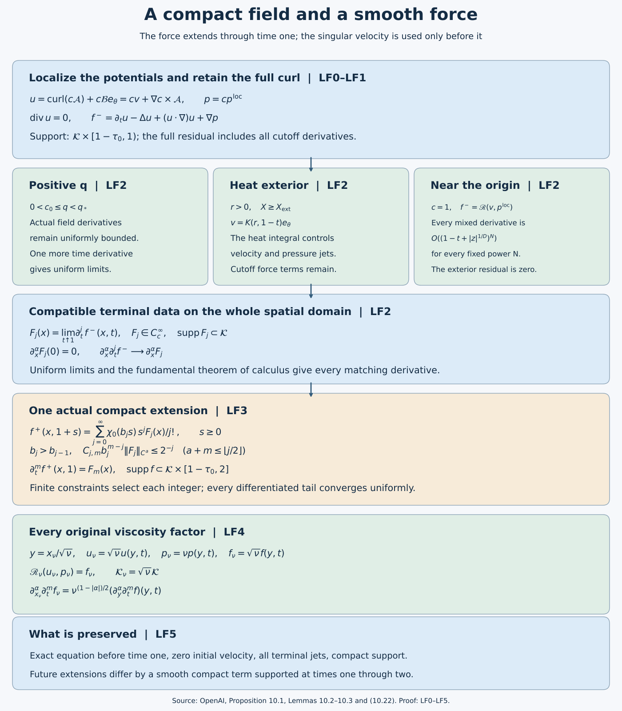
The editable figure source records the maps and proof locators. Spatial regions are schematic; the time supports and equations have their exact stated meanings.
LF0. The exact local input and a compact cutoff inside its domain
Use the actual viscosity-one fields proved in the local-field lesson, LC4–LC7:
\[ v=\operatorname{curl}\mathcal A+\mathcal B e_\theta,\qquad p^{\rm loc}, \qquad \Omega_*=\{(x,t):\tau=1-t>0,\ q<q_*\}. \tag{LF0.1} \]The scalar \(\mathcal B\) is axisymmetric. The actual Cartesian representatives, compatible one-sided derivatives for q bounded below, flat residual on every bounded profile interval, exact heat exterior, and positive inner-growth path are LC4–LC6. Keep the original \(0<h<1/100\), \(A=1/2+h\), \(D=1/2-h\), \(\tau=q(1-\eta^2)\), \(z=q^D\eta\), \(X=r^2/(2q)\), and \(L=1-2h\eta^2\).
If \(1-\eta^2\ge1/2\), then \(q\le2\tau\). Otherwise \(|\eta|>2^{-1/2}\) and \(q\le(\sqrt2|z|)^{1/D}\). Consequently the original (10.3) holds with the explicit admissible constant
\[ q\le C_0(\tau+|z|^{1/D}),\qquad C_0=\max\{2,2^{1/(2D)}\}. \tag{LF0.2} \]This estimate is uniform in r. Fix
\[ \tau_0=\frac{q_*}{8C_0}<\frac12,\qquad z_0=\left(\frac{q_*}{8C_0}\right)^D, \qquad C_0(\tau_0+z_0^{1/D})=q_*/4. \tag{LF0.3} \]Take any fixed \(r_0>0\). Use the smooth step
\[ e(s)=\begin{cases}\exp(-1/s),&s>0,\\0,&s\le0,\end{cases} \qquad \sigma(s)=\frac{e(s)}{e(s)+e(1-s)}. \tag{LF0.3a} \]The denominator is positive for every real \(s\). Each derivative of \(e\) on the positive half-line is \(e(s)\) times a polynomial in \(1/s\), and tends to zero at zero: for every integer \(n\), \(y^ne^{-y}\to0\) as \(y\to\infty\), by the exponential series with an integer power larger than \(n\). Hence \(e\) and \(\sigma\) are smooth, with \(\sigma=0\) on \(( -\infty,0]\), \(\sigma=1\) on \([1,\infty)\), and flat derivatives at both endpoints. Set
\[ \begin{split} \chi_x(x)&=\left[1-\sigma\!\left(2r^2/r_0^2-\tfrac12\right)\right] \left[1-\sigma\!\left(2z^2/z_0^2-\tfrac12\right)\right],\\ \chi_t(t)&=1-\sigma(2\tau/\tau_0-1),\qquad c(x,t)=\chi_x(x)\chi_t(t). \end{split} \tag{LF0.4} \]Thus \(\chi_x=1\) for \(r\le r_0/2,\ |z|\le z_0/2\), and its support is contained in \(r<r_0,\ |z|<z_0\). It is a smooth function of \(r^2,z\), including the Cartesian axis. The time cutoff is zero for \(\tau\ge\tau_0\) and one for \(0\le\tau\le\tau_0/2\). Its derivatives are flat at its endpoints. For \(t<1\), the support of c and all its derivatives lies in \(q\le q_*/4<q_*/2\), by LF0.2–LF0.3. Let \(\mathcal K=\operatorname{supp}\chi_x\); it is a fixed compact subset of \(\mathbb R^3\).
Define on the local domain and extend by zero elsewhere
\[ u=\operatorname{curl}(c\mathcal A)+c\mathcal B e_\theta,\qquad p=cp^{\rm loc}. \tag{LF0.5} \]There is a positive margin in q between the support and the outer boundary of \(\Omega_*\), so the zero extension is smooth. The original Cartesian axis representatives give smoothness at \(r=0\). Commuting Cartesian mixed derivatives gives zero divergence for the curl. Since c and \(\mathcal B\) are independent of θ, the divergence of the other term is \(r^{-1}\partial_\theta(c\mathcal B)=0\), with its continuous Cartesian interpretation at the axis. Hence u is exactly divergence-free.
Both u and p are smooth on \(\mathbb R^3\times[0,1)\), supported in \(\mathcal K\) at every time, and identically zero for \(0\le t\le1-\tau_0\). They agree with the original local fields whenever \(r<r_0/2,\ |z|<z_0/2,\ \tau<\tau_0/2\). This proves every assertion of Proposition 10.1 for the supplied fields.
LF1. The complete localized momentum residual
Keep the full curl correction \(a=\nabla c\times\mathcal A\), so \(u=cv+a\). For \(t<1\) set
\[ f^-=\partial_tu-\Delta u+(u\cdot\nabla)u+\nabla p. \tag{LF1.1} \]Every term is smooth before terminal time and has spatial support in \(\mathcal K\). The exact expansion is
\[ \begin{aligned} f^-={}&c\,\mathscr R(v,p^{\rm loc})+(\partial_tc-\Delta c)v\\ &-2\sum_{i=1}^3(\partial_i c)(\partial_i v) +p^{\rm loc}\nabla c+(\partial_t-\Delta)a\\ &+(c^2-c)(v\cdot\nabla)v+c(v\cdot\nabla c)v\\ &+c(v\cdot\nabla)a+(a\cdot\nabla c)v\\ &+c(a\cdot\nabla)v+(a\cdot\nabla)a . \end{aligned} \tag{LF1.2} \]To verify it, expand the time derivative and Laplacian of cv, the gradient of \(cp^{\rm loc}\), and all four products in \((cv+a)\cdot\nabla(cv+a)\). Subtract the single \(c(v\cdot\nabla)v\) already contained in \(c\mathscr R(v,p^{\rm loc})\). This leaves the coefficient \(c^2-c\), not zero. The displayed \(a\cdot\nabla c\) term is identically zero by \((\nabla c\times\mathcal A)\cdot\nabla c=0\), but it has been retained in the full expansion. No other cutoff term has been suppressed.
Taking divergence of LF1.1, using \(\operatorname{div}u=0\), gives exactly
\[ -\Delta p=\sum_{i,j=1}^3\partial_i\partial_j(u_i u_j)-\operatorname{div}f^-. \tag{LF1.3} \]The force need not be divergence-free; the target theorem imposes no such condition. The compactly supported pressure and this force satisfy the full pressure equation.
LF2. Uniform terminal limits of every force derivative
First consider a compact spatial region with q bounded below and bounded away from \(q_*\) near \(t=1\). LC5 supplies bounded derivatives of the actual \(\mathcal A,\mathcal B e_\theta,p^{\rm loc}\) of every order there. LF1.2 is a finite differential polynomial in these fields and the fixed cutoffs, so the same holds for \(f^-\). One additional time derivative gives
\[ \sup_{x\in K_0} |\partial_x^\alpha\partial_t^j f^-(x,t_2) -\partial_x^\alpha\partial_t^j f^-(x,t_1)| \le C_{\alpha,j,K_0}|t_2-t_1|. \tag{LF2.1} \]Thus every derivative is uniformly Cauchy on that compact region.
The other region away from the origin has r bounded below and q small enough that \(X\ge X_{\rm ext}\). There \(\mathcal A=0\), \(v=K(r,\tau)e_\theta\), and the exact fields are
\[ K(r,\tau)=c_\infty s^{-A}\mathcal H(2\tau/s),\quad s=r^2/2,\qquad p^{\rm loc}(r,\tau)=-\int_r^\infty K(\rho,\tau)^2\,\frac{d\rho}{\rho}. \tag{LF2.2} \]The original heat integral and its full derivative bounds were proved in PL6/LC6. In particular, for every j,
\[ |\partial_\tau^jK(r,\tau)|\le C_jr^{-1-2h-2j},\qquad \left|\partial_\tau^j(K(\rho,\tau)^2/\rho)\right| \le C_j\rho^{-3-4h-2j}. \tag{LF2.3} \]The second estimate contains every product-rule summand \(\sum_{i=0}^j\binom ji(\partial_\tau^iK)(\partial_\tau^{j-i}K)/\rho\). On a positive-radius interval the majorant is integrable from its lower endpoint to infinity. Dominated convergence gives all one-sided time derivatives of the pressure with its original integral. Each subsequent radial derivative differentiates the lower-endpoint expression; PL6.9 supplies the full radial derivatives of K, including all factors of \(\tau/r^2\). For r bounded below these give smooth Cartesian derivatives as well, since the cylindrical frame and each fixed derivative of it are bounded. All limits are uniform on compact positive-radius sets.
In this exterior \(a=0\), and LF1.2 involves just these smooth quantities and fixed cutoffs. Its full nonlinear term \((c^2-c)(v\cdot\nabla)v\) remains. It too has all uniform derivative limits. The uncut residual is exactly zero, by the swirl heat equation and centrifugal pressure cancellation proved in LC6.
These two cases cover the terminal slice away from the origin. At \(z\ne0\), \(q\ge|z|^{1/D}>0\). At \(z=0\) but \(x\ne0\), \(r>0\); choosing a small neighborhood and t sufficiently close to one gives q small by LF0.2 and hence \(X\ge X_{\rm ext}\). A finite cover therefore gives uniform convergence on every compact spatial set avoiding the origin. The support margin from LF0.3 keeps the positive-q part away from \(q_*\).
Near the origin and for t sufficiently close to one, both cutoffs equal one. Thus \(f^-=\mathscr R(v,p^{\rm loc})\). On \(X\le X_{\rm ext}\), LC4.9 gives arbitrary-order flatness; on \(X\ge X_{\rm ext}\), the residual is identically zero. With LF0.2 this proves, for every \(\alpha,j,N\) on one fixed neighborhood of (0,1),
\[ |\partial_x^\alpha\partial_t^j f^-(x,t)| \le C_{\alpha,j,N}(\tau+|z|^{1/D})^N. \tag{LF2.4} \]To obtain uniform convergence on all of \(\mathbb R^3\), fix \(\alpha,j\) and a tolerance. Choose a ball inside that neighborhood so small that its \(|z|^{1/D}\) contribution in LF2.4 is below the tolerance, then take τ small enough for its other contribution. Inside the ball, both members of a time difference are small. On the compact remainder of \(\mathcal K\), LF2.1 and the exterior argument give a uniformly Cauchy family. Outside \(\mathcal K\), all derivatives vanish. These three estimates prove the global uniform Cauchy property.
Define \(F_j(x)=\lim_{t\uparrow1}\partial_t^j f^-(x,t)\). Its support is contained in \(\mathcal K\). Passing to the uniform limit in the fundamental theorem of calculus along a spatial coordinate segment proves
\[ \lim_{t\uparrow1}\partial_x^\alpha\partial_t^j f^-(x,t) =\partial_x^\alpha F_j(x),\qquad F_j\in C_c^\infty(\mathbb R^3;\mathbb R^3),\qquad \partial_x^\alpha F_j(0)=0. \tag{LF2.5} \]The last equality follows by putting \(x=0\) in LF2.4 and taking \(\tau\downarrow0\), for each derivative separately. Passing to the time limit in the corresponding integral identity gives
\[ \partial_x^\alpha\partial_t^j f^-(x,t) =\partial_x^\alpha F_j(x) -\int_t^1\partial_x^\alpha\partial_t^{j+1}f^-(x,s)\,ds. \tag{LF2.6} \]This proves the full compatibility of the terminal jets, not just the existence of pointwise limits. It establishes Lemma 10.2 for the actual localized residual.
LF3. A compact smooth extension with every prescribed jet
Choose the original type of cutoff \(\chi_0\in C_c^\infty(\mathbb R)\), equal to one near zero and zero for arguments at least one. For definiteness, the same step gives
\[ \chi_0(s)=1-\sigma\left(\frac{4s^2-1}{3}\right). \tag{LF3.0} \]It is even, equals one on \([-1/2,1/2]\), vanishes for \(|s|\ge1\), and is smooth with flat endpoint derivatives. For \(\sigma=t-1\ge0\) use the original series
\[ f^+(x,1+\sigma)=\sum_{j=0}^\infty \chi_0(b_j\sigma)\frac{\sigma^j}{j!}F_j(x). \tag{LF3.1} \]For a spatial multi-index α and a nonnegative integer m, the exact derivative of its j-th term is
\[ \partial_x^\alpha\partial_\sigma^m \left(\chi_0(b_j\sigma)\frac{\sigma^j}{j!}F_j\right) =\sum_{\substack{0\le a\le m\\j-m+a\ge0}} \binom ma b_j^a\chi_0^{(a)}(b_j\sigma) \frac{\sigma^{j-m+a}}{(j-m+a)!}\partial_x^\alpha F_j. \tag{LF3.2} \]Terms with a negative remaining monomial degree are absent. On the support of each term \(0\le\sigma\le b_j^{-1}\). Define the finite constant
\[ C_{j,m}=\sum_{\substack{0\le a\le m\\j-m+a\ge0}} \binom ma\,\frac{\|\chi_0^{(a)}\|_\infty}{(j-m+a)!}. \]The full derivative is bounded in the global supremum norm by
\[ C_{j,m}b_j^{m-j}\|F_j\|_{C^{|\alpha|}}. \tag{LF3.3} \]Set \(b_0=1\) and retain the source's exact integer choice for \(j\ge1\):
\[ b_j=\min\left\{b\in\mathbb N:\ b>b_{j-1},\ \max_{\substack{a,m\ge0\\a+m\le\lfloor j/2\rfloor}} C_{j,m}b^{m-j}\|F_j\|_{C^a}\le2^{-j}\right\}. \tag{LF3.4} \]Every \(F_j\) norm is finite by LF2.5. The maximum has finitely many entries, and in each \(m-j<0\). Taking b sufficiently large makes all of them at most \(2^{-j}\). Thus the defining set is nonempty and its least integer exists at every stage. This constructs the original sequence from the actual jets without any coefficient-growth assumption or numerical run.
For fixed \(\alpha,m\), all sufficiently large j obey \(|\alpha|+m\le\lfloor j/2\rfloor\), so LF3.3 is at most \(2^{-j}\). The differentiated tails consequently converge uniformly, together with every fixed mixed derivative. The finitely many initial terms are smooth. At \(\sigma=0\), each fixed cutoff is constant on a neighborhood; its m-th time derivative contributes only when \(j=m\), with value \(F_m\). Uniform differentiated convergence therefore proves
\[ \partial_x^\alpha\partial_\sigma^m f^+(x,1) =\partial_x^\alpha F_m(x). \tag{LF3.5} \]Join \(f^-\) for \(t<1\) to \(f^+\) for \(t\ge1\). Equations LF2.6 and LF3.5 give matching derivatives of every order. The fundamental theorem of calculus across \(t=1\), followed by induction on derivative order, shows that the joined function is \(C^\infty\) in all space-time variables.
Every summand has spatial support in \(\mathcal K\) and vanishes for \(\sigma\ge1\), since \(b_j\ge1\). Uniform convergence of every derivative also gives the smooth zero extension at the support boundary. On the left, LF0 makes the residual zero for \(t\le1-\tau_0>0\). Hence
\[ f\in C_c^\infty(\mathbb R^3\times(0,\infty);\mathbb R^3),\qquad \operatorname{supp}f\subset\mathcal K\times[1-\tau_0,2],\qquad \mathscr R(u,p)=f\quad(0\le t<1). \tag{LF3.6} \]In particular this has the original weaker support bound \(\mathcal K\times[0,2]\). If \(\mathcal K\subset B(0,R)\) and \(M_{\alpha,m}=\|\partial_x^\alpha\partial_t^m f\|_\infty\), compact support gives, for every integer k≥0,
\[ |\partial_x^\alpha\partial_t^m f(x,t)| \le M_{\alpha,m}(3+R)^k(1+|x|+t)^{-k}. \tag{LF3.7} \]Inside the support this follows from \(1+|x|+t\le3+R\); outside it the left side is zero. This proves the force's exact regularity, support and all decay conditions in Lemma 10.3.
LF4. The construction at every original positive viscosity
Fix the prescribed \(\nu>0\). Use the original spatial map \(y=x_\nu/\sqrt\nu\), with time unchanged, and retain all potentials and coefficients:
\[ \begin{gathered} \mathcal A_\nu(x_\nu,t)=\nu\mathcal A(y,t),\qquad \mathcal B_\nu(x_\nu,t)=\sqrt\nu\mathcal B(y,t),\\ v_\nu(x_\nu,t)=\sqrt\nu v(y,t),\qquad p^{\rm loc}_\nu(x_\nu,t)=\nu p^{\rm loc}(y,t),\qquad c_\nu(x_\nu,t)=c(y,t). \end{gathered} \tag{LF4.1} \]The angular frame is unchanged by this positive radial scaling. The actual coordinates remain
\[ q_\nu-(z_\nu^2/\nu)q_\nu^{2h}=1-t,\qquad \eta_\nu=\frac{z_\nu}{\sqrt\nu q_\nu^D},\qquad X_\nu=\frac{r_\nu^2}{2\nu q_\nu}. \tag{LF4.2} \]In particular the cutoff is the explicit function
\[ \begin{aligned} c_\nu(x_\nu,t) ={}&\left[1-\sigma\left(\frac{2r_\nu^2}{\nu r_0^2}-\frac12\right)\right] \left[1-\sigma\left(\frac{2z_\nu^2}{\nu z_0^2}-\frac12\right)\right]\\ &\times[1-\sigma(2(1-t)/\tau_0-1)]. \end{aligned} \tag{LF4.3} \]Thus the spatial support is \(\mathcal K_\nu=\sqrt\nu\mathcal K\), the time support is unchanged, and (LF0.2) becomes
\[ q_\nu\le C_0\left(1-t+\nu^{-1/(2D)}|z_\nu|^{1/D}\right). \tag{LF4.4} \]The positive margin \(q_\nu\le q_*/4\) on the cutoff support follows from the same inequalities with \(|z_\nu|\le\sqrt\nu z_0\).
Keep the complete localized fields
\[ \begin{gathered} a_\nu=\nabla_{x_\nu}c_\nu\times\mathcal A_\nu =\sqrt\nu a(y,t),\\ u_\nu=\operatorname{curl}_{x_\nu}(c_\nu\mathcal A_\nu) +c_\nu\mathcal B_\nu e_\theta =c_\nu v_\nu+a_\nu=\sqrt\nu u(y,t),\\ p_\nu=c_\nu p^{\rm loc}_\nu=\nu p(y,t). \end{gathered} \tag{LF4.5} \]Every spatial derivative contributes \(\nu^{-1/2}\). Consequently all four terms of the momentum equation have factor \(\sqrt\nu\):
\[ \begin{aligned} \mathscr R_\nu(u_\nu,p_\nu) &:=\partial_tu_\nu-\nu\Delta_{x_\nu}u_\nu +(u_\nu\cdot\nabla_{x_\nu})u_\nu+\nabla_{x_\nu}p_\nu\\ &=\sqrt\nu\,\mathscr R(u,p)(y,t). \end{aligned} \tag{LF4.6} \]Divergence has factor one and remains zero. To exhibit every cutoff contribution directly in the original physical variables, write all derivatives in the next display with respect to \(x_\nu\):
\[ \begin{aligned} f^-_\nu={}&c_\nu\mathscr R_\nu(v_\nu,p^{\rm loc}_\nu) +(\partial_tc_\nu-\nu\Delta c_\nu)v_\nu\\ &-2\nu\sum_{i=1}^3(\partial_i c_\nu)(\partial_i v_\nu) +p^{\rm loc}_\nu\nabla c_\nu+(\partial_t-\nu\Delta)a_\nu\\ &+(c_\nu^2-c_\nu)(v_\nu\cdot\nabla)v_\nu +c_\nu(v_\nu\cdot\nabla c_\nu)v_\nu\\ &+c_\nu(v_\nu\cdot\nabla)a_\nu +(a_\nu\cdot\nabla c_\nu)v_\nu\\ &+c_\nu(a_\nu\cdot\nabla)v_\nu+(a_\nu\cdot\nabla)a_\nu. \end{aligned} \tag{LF4.7} \]This is the product expansion of (LF4.6), and agrees term by term with \(\sqrt\nu f^-(y,t)\). For example, the viscosity coefficient cancels the two factors \(\nu^{-1/2}\) on the product of first derivatives, leaving the velocity factor \(\sqrt\nu\). The pressure-gradient cutoff term has factors \(\nu\) and \(\nu^{-1/2}\). The curl term \(a_\nu\) retains the potential factor \(\nu\). The term containing \(a_\nu\cdot\nabla c_\nu\) is zero by the cross-product identity, and is retained in the expansion. No physical term is discarded.
Define the actual terminal data
\[ F_{j,\nu}(x_\nu)=\sqrt\nu F_j(x_\nu/\sqrt\nu),\qquad \partial_{x_\nu}^\alpha F_{j,\nu} =\nu^{(1-|\alpha|)/2}(\partial_y^\alpha F_j)(y). \tag{LF4.8} \]The same integer sequence \(b_j\) used in (LF3.4) gives
\[ f^+_\nu(x_\nu,1+s) =\sum_{j=0}^\infty\chi_0(b_js)\frac{s^j}{j!}F_{j,\nu}(x_\nu) =\sqrt\nu f^+(y,1+s),\qquad s\ge0. \tag{LF4.9} \]For each fixed spatial derivative the convergence estimate is multiplied by the fixed positive constant \(\nu^{(1-|\alpha|)/2}\), so all mixed derivatives still converge uniformly. The time derivatives at \(s=0\) are exactly \(F_{j,\nu}\). This argument uses the actual sequence and retains its original definition; it does not assume viscosity-independent derivative norms.
The joined force satisfies
\[ \begin{gathered} f_\nu\in C_c^\infty(\mathbb R^3\times(0,\infty);\mathbb R^3),\qquad \operatorname{supp}f_\nu\subset\mathcal K_\nu\times[1-\tau_0,2],\\ \mathscr R_\nu(u_\nu,p_\nu)=f_\nu\quad(0\le t<1),\qquad u_\nu(\cdot,0)=0,\\ -\Delta p_\nu=\sum_{i,j=1}^3\partial_i\partial_j(u_{\nu,i}u_{\nu,j}) -\operatorname{div}f_\nu. \end{gathered} \tag{LF4.10} \]These are the original physical equation, datum, support and pressure relation. If \(\mathcal K\subset B(0,R)\), put \(M_{\alpha,m,\nu}=\nu^{(1-|\alpha|)/2}\|\partial_y^\alpha\partial_t^m f\|_\infty\). For every integer \(k\ge0\),
\[ |\partial_{x_\nu}^\alpha\partial_t^m f_\nu(x_\nu,t)| \le M_{\alpha,m,\nu}(3+\sqrt\nu R)^k(1+|x_\nu|+t)^{-k}. \tag{LF4.11} \]Indeed \(1+|x_\nu|+t\le3+\sqrt\nu R\) on the support; elsewhere the derivative is zero. The original viscosity has not changed the singular time or the smooth force's terminal matching.
LF5. Five exercises with complete solutions
Exercise 1. Compose two localizations without losing a curl term
Let \(c,d\) be smooth axisymmetric cutoffs in the actual local domain. Apply the potential localization first with \(c\) and then with \(d\). Prove that the resulting full velocity and pressure equal the result from the single cutoff \(cd\), including every cross-product term.
Solution. Use the original viscosity \(\nu>0\), and write \(\mathcal A_\nu,\mathcal B_\nu,p^{\rm loc}_\nu,v_\nu\) for the actual fields. The first localization has potential \(c\mathcal A_\nu\), angular coefficient \(c\mathcal B_\nu\) and pressure \(cp^{\rm loc}_\nu\). Hence
\[ \begin{aligned} u_{d\circ c} &=\operatorname{curl}(dc\mathcal A_\nu)+dc\mathcal B_\nu e_\theta\\ &=d\{cv_\nu+\nabla c\times\mathcal A_\nu\} +\nabla d\times(c\mathcal A_\nu)\\ &=cdv_\nu+(d\nabla c+c\nabla d)\times\mathcal A_\nu =u_{cd},\\ p_{d\circ c}&=dc p^{\rm loc}_\nu=p_{cd}. \end{aligned} \tag{LF5.1} \]Here all curls and gradients are physical spatial derivatives. The product rule \(\nabla(cd)=d\nabla c+c\nabla d\) proves the equality, including transition regions where both derivatives can be nonzero. Both vector fields have zero divergence: the curl part has zero divergence by commuting Cartesian derivatives, and the direct angular part has divergence \(r_\nu^{-1}\partial_\theta(cd\mathcal B_\nu)=0\), with its smooth axis interpretation.
Because both velocity and pressure agree as smooth fields, substitution into every term of \(\mathscr R_\nu\) gives
\[ \mathscr R_\nu(u_{d\circ c},p_{d\circ c}) =\mathscr R_\nu(u_{cd},p_{cd}). \tag{LF5.2} \]In computing the left side by (LF4.7), the inputs for the second step are the full first localized velocity, its potential \(c\mathcal A_\nu\), its pressure and its residual. Replacing that residual by zero would not be this composition. Equations (LF5.1)–(LF5.2) prove the exact relation without such a replacement.
Exercise 2. The entire exterior force and all its terminal derivatives
Work in a neighborhood where the original exact heat exterior holds and the time cutoff is one. Set \(r=r_\nu>0\), \(z=z_\nu\), and write the actual spatial cutoff as \(c=c_\nu(r,z)\). Compute every cylindrical component of the localized force. Then give each of its time derivatives at \(t=1\).
Solution. In this neighborhood \(\mathcal A_\nu=0\), \(v_\nu=K_\nu(r,1-t)e_\theta\), and the pressure is the full centrifugal integral. Thus \(a_\nu=0\) and \(u_\nu=cK_\nu e_\theta\). The uncut heat and pressure identities are
\[ \partial_tK_\nu=\nu(\partial_r^2+r^{-1}\partial_r-r^{-2})K_\nu, \qquad \partial_r p^{\rm loc}_\nu=K_\nu^2/r, \qquad \partial_zK_\nu=\partial_zp^{\rm loc}_\nu=0. \tag{LF5.3} \]The angular convection is \(-(cK_\nu)^2e_r/r\). The scalar Laplacian of the cutoff is \(\Delta c=c_{rr}+r^{-1}c_r+c_{zz}\), while the angular vector Laplacian retains its frame term \(-r^{-2}\). Expanding the full equation gives
\[ \begin{aligned} f^-_{\nu,r}&=(c-c^2)K_\nu^2/r+p^{\rm loc}_\nu c_r,\\ f^-_{\nu,\theta}&=-\nu\{(c_{rr}+r^{-1}c_r+c_{zz})K_\nu +2c_r\partial_rK_\nu\},\\ f^-_{\nu,z}&=p^{\rm loc}_\nu c_z. \end{aligned} \tag{LF5.4} \]The terms \(c\partial_tK_\nu\) and \(\nu c(\partial_r^2+r^{-1}\partial_r-r^{-2})K_\nu\) cancel by (LF5.3). The pressure and convection leave \((c-c^2)K_\nu^2/r\), with the displayed sign. Thus the zero residual of the original exterior does not remove its cutoff force.
Use \(d_*=1+2h\), \(C_\infty=2^Ac_\infty\), and the terminal formulas proved in the preceding local-field lesson, LC8.18–LC8.21. For \(j\ge0\) define the actual terminal values
\[ S_j(r)=C_\infty4^j\nu^{1+h+j}r^{-d_*-2j}(h)_j(1+h)_j, \tag{LF5.5} \] \[ \begin{aligned} P_j(r)={}&-\frac{C_\infty^2 4^j\nu^{2+2h+j}} {(2d_*+2j)r^{2d_*+2j}}\\ &\times\sum_{i=0}^j\binom ji(h)_i(1+h)_i(h)_{j-i}(1+h)_{j-i}. \end{aligned} \tag{LF5.6} \]Here \((a)_0=1\) and \((a)_j=a(a+1)\cdots(a+j-1)\) for positive \(j\). They equal \(\partial_t^jK_\nu|_{1^-}\) and \(\partial_t^jp^{\rm loc}_\nu|_{1^-}\). In particular \(\partial_rS_j=-(d_*+2j)S_j/r\). The cutoff has no time dependence in this neighborhood. The full binomial product rule in (LF5.4) therefore gives
\[ \begin{aligned} F_{j,\nu,r}&=\frac{c-c^2}{r}\sum_{i=0}^j\binom jiS_iS_{j-i}+P_jc_r,\\ F_{j,\nu,\theta}&=-\nu\{(c_{rr}+r^{-1}c_r+c_{zz})S_j +2c_r\partial_rS_j\},\\ F_{j,\nu,z}&=P_jc_z. \end{aligned} \tag{LF5.7} \]These formulas keep every derivative, viscosity power, centrifugal sign and pressure endpoint factor. The Cartesian jets are obtained from the same components using the smooth frame at positive radius. They describe this exterior neighborhood, not the singular point or a fictitious heat formula outside its domain.
Exercise 3. An explicit finite bound for the integer cutoff choice
Prove that the original minimum in (LF3.4) can be found below a finite explicit integer, and bound every fixed differentiated tail of the force series.
Solution. For \(j\ge1\) let
\[ \begin{gathered} Q_j=\max_{\substack{a,m\ge0\\a+m\le\lfloor j/2\rfloor}} \left(2^jC_{j,m}\|F_j\|_{C^a}\right)^{1/(j-m)},\\ B_j=\max\{b_{j-1}+1,1,\lceil Q_j\rceil\}. \end{gathered} \tag{LF5.8} \]The index set is finite and nonempty, all norms are finite, and \(j-m>0\). If a norm is zero the corresponding power is zero. Since \(B_j\ge Q_j\), every inequality \(C_{j,m}B_j^{m-j}\|F_j\|_{C^a}\le2^{-j}\) holds; also \(B_j>b_{j-1}\). Thus the original integer \(b_j\) exists and \(b_j\le B_j\). This is a bound for the original minimum, not a change to its definition.
Fix a spatial multi-index \(\alpha\), an integer \(m\ge0\), and \(J\ge2(|\alpha|+m)\). For every \(j>J\), the original constraint includes \(a=|\alpha|\) and this \(m\). Equation (LF3.2) retains all differentiated cutoff terms and gives
\[ \sup_{\substack{x\in\mathbb R^3\\s\ge0}}\left| \partial_x^\alpha\partial_s^m \sum_{j>J}\chi_0(b_js)\frac{s^j}{j!}F_j(x)\right| \le\sum_{j>J}2^{-j}=2^{-J}. \tag{LF5.9} \]For the original viscosity, (LF4.8) multiplies this bound by exactly \(\nu^{(1-|\alpha|)/2}\). The derivative of the infinite sum is justified by the uniform convergence of each differentiated tail and the fundamental theorem of calculus, as in LF3. The estimate is uniform over the whole spatial domain and the whole future half-line, with no assumption on the growth of the sequence \(F_j\).
Exercise 4. The exact freedom in extending the same terminal data
Use two admissible increasing cutoff sequences for the same actual \(F_j\). Prove what their future forces have in common, derive the remainder estimate for their difference, and describe the freedom in all smooth compact extensions of the fixed past force.
Solution. Let \(f^+\) and \(\widetilde f^+\) be the two series. Their exact difference is
\[ H(x,1+s)=\sum_{j=0}^\infty \{\chi_0(\widetilde b_js)-\chi_0(b_js)\}\frac{s^j}{j!}F_j(x). \tag{LF5.10} \]Both series converge with every fixed mixed derivative by (LF3.3)–(LF3.5). They have the same jets \(F_m\), so every spatial derivative of every time derivative of \(H\) is zero at \(s=0\). Repeated integration from zero gives, for \(N\ge1\),
\[ \begin{aligned} \partial_x^\alpha\partial_s^mH(x,1+s) ={}&\frac1{(N-1)!}\int_0^s(s-a)^{N-1} \partial_x^\alpha\partial_s^{m+N}H(x,1+a)\,da,\\ \|\partial_x^\alpha\partial_s^mH(\cdot,1+s)\|_\infty \le{}&\frac{s^N}{N!}\|\partial_x^\alpha\partial_t^{m+N}H\|_\infty. \end{aligned} \tag{LF5.11} \]The global norm is finite because the difference is smooth with compact support. Extending \(H\) by zero for \(t\le1\) is smooth by the vanishing jets. Its support is contained in \(\mathcal K\times[1,2]\).
More generally define the vector space
\[ \mathcal Z_{\mathcal K}= \{H\in C_c^\infty(\mathbb R^3\times(0,\infty);\mathbb R^3): \operatorname{supp}H\subset\mathcal K\times[1,2]\}. \tag{LF5.12} \]Every member is zero for \(t<1\), and smoothness forces all its jets at \(t=1\) to be zero. If \(f\) is the force constructed in LF3, the set of smooth extensions with the same past force and support contained in \(\mathcal K\times[1-\tau_0,2]\) is exactly
\[ f+\mathcal Z_{\mathcal K}. \tag{LF5.13} \]Indeed adding a member preserves the past, terminal jets, smoothness and support. Conversely the difference of two such extensions is a member by those same properties. The freedom is nontrivial: choose a nonzero smooth vector field compactly supported in the interior of \(\mathcal K\), multiply it by a nonzero smooth function supported in \((5/4,3/2)\), and use that product as \(H\). This changes the force only after time one. It does not change the constructed solution or its equation on \([0,1)\), and makes no assertion of a velocity extension through blowup. The same proof uses \(\mathcal K_\nu\) for the original viscosity.
Exercise 5. Spatial and space-time flatness of the constructed extension
Prove that the specific series in LF4 is spatially flat at the origin for every \(t\ge1\), and that every mixed derivative of the joined force vanishes to arbitrary order at \((0,1)\). Retain the stronger estimate already obtained before terminal time.
Solution. Equation (LF2.5), with (LF4.8), gives \(\partial_{x_\nu}^\alpha F_{j,\nu}(0)=0\) for every \(\alpha,j\). Termwise differentiation of the uniformly convergent differentiated series (LF4.9) proves
\[ \partial_{x_\nu}^\alpha\partial_t^m f^+_\nu(0,t)=0 \qquad(t\ge1,\ \alpha\in\mathbb N^3,\ m\ge0). \tag{LF5.14} \]At time one these equal the derivatives from the past. Fix \(\alpha,m\), write \(g=\partial_{x_\nu}^\alpha\partial_t^m f_\nu\), and choose a convex neighborhood of \((0,1)\) with positive time. For \(w=(x_\nu,s)\), all derivatives of \(g\) at \((0,1)\) vanish. Applying one-variable Taylor's formula to \(a\mapsto g(ax_\nu,1+as)\) yields the exact remainder
\[ \begin{aligned} g(x_\nu,1+s) ={}&\frac1{(N-1)!}\int_0^1(1-a)^{N-1} D^Ng(ax_\nu,1+as)[w,\ldots,w]\,da,\\ D^Ng[w,\ldots,w] ={}&\sum_{|\beta|+j=N}\frac{N!}{\beta!j!} x_\nu^\beta s^j\partial_{x_\nu}^\beta\partial_t^j g. \end{aligned} \tag{LF5.15} \]For each fixed \(N\ge1\), all derivatives in this finite sum are bounded on a smaller compact neighborhood. If their common bound is \(M_N\), then
\[ |g(x_\nu,1+s)| \le\frac{M_N}{N!} (|x_{\nu,1}|+|x_{\nu,2}|+|x_{\nu,3}|+|s|)^N \le C_N(|x_\nu|+|s|)^N. \tag{LF5.16} \]All multi-index coefficients and the integral factor \(1/N\) are retained in deriving this bound. For \(t<1\), the previously proved, more specific estimate is still
\[ |\partial_{x_\nu}^\alpha\partial_t^m f_\nu(x_\nu,t)| \le C_{\alpha,m,N}\nu^{(1-|\alpha|)/2} \left(1-t+\nu^{-1/(2D)}|z_\nu|^{1/D}\right)^N. \tag{LF5.17} \]It follows by the original scaling from (LF2.4); its constants before the explicit viscosity factor are those of the viscosity-one fields. Estimate (LF5.16) does not replace (LF5.17).
The line property (LF5.14) belongs to this actual series, whose every coefficient is spatially flat at the origin. Arbitrary additions in \(\mathcal Z_{\mathcal K_\nu}\) need not preserve that property for \(t>1\), although they preserve every mixed jet at \((0,1)\). Neither flatness conclusion asserts that the force vanishes on a neighborhood of that point.
Sources and scope
OpenAI, Finite Time Blowup for Navier–Stokes, original 166-page paper, SHA-256 0e779481c4da40bd28d1e642e1d8ca57447d129610df28dfa5a11e9af8ae228f. Original pages 117–120 supply Proposition 10.1, Lemmas 10.2–10.3 and equations (10.1)–(10.12). Original (10.22) on page 124 gives the viscosity map used in LF4.
The supplying terminal-force proof, F0–F8, supplies the corresponding arguments. LF0–LF3 retain all arguments of F0–F3. LF4 gives the full physical localization and force extension. LF5 supplies the exact additional calculations and their proofs; no novelty is claimed. The separately proved energy, comparison, growth and periodic arguments remain available in F4–F8 and the full comparison proof, equations (1)–(64), including the analytical tools in its sections 5.1–5.3. Those arguments are supplied in the complete N7.2 lesson, EC0–EC7, including all analytical tools in EC1. The computation chapter has separate statements and proofs.
Diplomatic transcriptions preserve OpenAI's statements, formulas and irregularities. The proofs and exercises here are separate editorial exposition.
Energy, comparison and the final blowup conclusions
NS-BLOWUP N7.2. Exposition by GPT-6 Astra (OpenAI). This independent exposition is dedicated to CC0.
The preceding lesson, LF0–LF5, constructs the actual compactly supported velocity and pressure before time one and a smooth compact force through that time. The local-field lesson, PL0–PL7 and LC0–LC8, proves every local input and the growth path. This lesson completes the energy, comparison, growth, viscosity and periodic conclusions for those same fields.
We first keep the viscosity-one fields exactly as constructed, then retain every factor in the source's map to each prescribed positive viscosity. EC0 proves uniform energy and total dissipation. EC1 gives the complete comparison proof, including its pressure-gradient argument, all cutoff terms and the analytical tools it uses. EC2 supplies its actual hypotheses. EC3–EC5 prove growth, nonexistence of a global competitor, every viscosity assertion and periodization. EC6 identifies the precise formal statements and proves the required coordinate and derivative comparisons. EC7 contains five solved exercises and the consequences they establish.

The editable figure source records the equations and proof locators. The diagram describes proved implications, not numerical flow samples.
EC0. Uniform energy and total dissipation
For each T<1, u,p are smooth on \([0,T]\) with the same compact spatial support. Integration against u has no boundary term. The nonlinear term is the integral of \(\operatorname{div}(|u|^2u/2)\), pressure integrates to \(\operatorname{div}(pu)\), and the Laplacian contributes \(-\|\nabla u\|_2^2\). Thus
\[ \frac12\frac d{dt}\|u(t)\|_2^2+\|\nabla u(t)\|_2^2 =\langle f(t),u(t)\rangle. \tag{EC0.1} \]Keep \(\mathcal F(t)=\int_0^t\|f(s)\|_2\,ds\), \(0\le t\le1\). Its value at one is finite because f is smooth with fixed compact support. For δ>0, divide EC0.1 by \((\|u\|_2^2+\delta^2)^{1/2}\). The dissipation is nonnegative and Cauchy–Schwarz gives
\[ \frac d{dt}(\|u(t)\|_2^2+\delta^2)^{1/2}\le\|f(t)\|_2. \]Since u(0)=0, integration gives the upper bound \(\delta+\mathcal F(t)\). Taking δ↓0 yields \(\|u(t)\|_2\le\mathcal F(t)\). Integrate the full identity EC0.1 again to retain dissipation:
\[ \|u(t)\|_2^2+2\int_0^t\|\nabla u(s)\|_2^2\,ds \le2\int_0^t\mathcal F'(s)\mathcal F(s)\,ds =\mathcal F(t)^2. \tag{EC0.2} \]The nonnegative dissipation integrals increase to their value on [0,1), bounded by \(\mathcal F(1)^2/2\). This proves Lemma 10.4, including uniform energy and finite total dissipation, using the actual force and all spatial boundary terms. No estimate of the sum's individual high-frequency energies is needed.
EC1. The complete whole-space comparison proof
Let \(u,p\) and \(v,P\) be smooth solutions on \(\mathbb R^3\times[0,T]\) of the incompressible viscosity-one equation with the same force and the same initial velocity. Assume
\[ u,v\in L^\infty(0,T;L^2(\mathbb R^3)),\qquad u\in L^\infty(0,T;L^6(\mathbb R^3)),\qquad \|\nabla u(\,\cdot\,,t)\|_\infty\in L^1(0,T). \tag{CP1} \]Then \(u=v\) on \(\mathbb R^3\times[0,T]\). In particular, the compact spatial support assumed for the reference field in the source lemma is not needed for the comparison step.
The essential-time norm bounds hold at every individual time in the closed interval: choose interior times approaching that time outside the exceptional null set, use smooth pointwise convergence, and apply Fatou to the squared or sixth powers. This also supplies the endpoint bounds used below.
For the compactly supported reference field of the source, the expanding-cutoff error can be bounded by \(C_TR^{-4/3}\), which strengthens the displayed source bound \(C_TR^{-1}\).
EC1.1. Pressure-gradient recovery
Set
\[ w=v-u,\qquad \pi=P-p,\qquad g_{ij}=v_iv_j-u_iu_j=w_iw_j+w_iu_j+u_iw_j, \tag{CP2} \]and keep the convention
\[ (\operatorname{div}g)_i=\sum_{j=1}^3\partial_jg_{ij}. \tag{CP3} \]If
\[ M=\sup_{0\le t\le T}\|w(t)\|_2,\qquad U_2=\sup_{0\le t\le T}\|u(t)\|_2, \tag{CP4} \]then Cauchy–Schwarz, component by component, gives
\[ \|g_{ij}(t)\|_1 \le \|w_i(t)\|_2\|w_j(t)\|_2 +\|w_i(t)\|_2\|u_j(t)\|_2 +\|u_i(t)\|_2\|w_j(t)\|_2. \tag{CP5} \]Thus
\[ G:=\sup_{0\le t\le T}\sum_{i,j=1}^3\|g_{ij}(t)\|_1<\infty. \tag{CP6} \]The exact difference equation is
\[ \partial_tw+\operatorname{div}g=\Delta w-\nabla\pi, \qquad \operatorname{div}w=0. \tag{CP7} \]Use the unitary Fourier transform with derivative multiplier \(i\xi_i\), and let \(R_i\) have multiplier \(i\xi_i/|\xi|\). Define
\[ \pi_*=\sum_{i,j=1}^3R_iR_jg_{ij}. \tag{CP8} \]For every \(s>3/2\),
\[ \|\pi_*(t)\|_{H^{-s}}^2 \le (2\pi)^{-3}G^2 \int_{\mathbb R^3}(1+|\xi|^2)^{-s}\,d\xi<\infty. \tag{CP9} \]The integral is finite at the origin and has radial exponent \(2-2s<-1\) at infinity. The multiplier in (CP8) is \(-\xi_i\xi_j/|\xi|^2\), so
\[ \Delta\pi_*=-\sum_{i,j=1}^3\partial_i\partial_jg_{ij}. \tag{CP10} \]Taking divergence in (CP7) gives the same equation for \(\pi\), locally in distributions.
For \(a\in C_c^\infty(0,T)\), integration by parts in time in (CP7) yields the exact signs
\[ \int_0^T a\nabla\pi\,dt =\Delta\int_0^T aw\,dt +\int_0^T a'w\,dt -\operatorname{div}\int_0^T ag\,dt. \tag{CP11} \]The three terms on the right belong to \(H^{-2}\), \(L^2\), and \(H^{-3}\), respectively. The last inclusion follows from \(L^1\subset H^{-2}\) in three dimensions and one spatial derivative. Equation (CP9), with \(s=2\), also gives
\[ H_a:=\int_0^T a(\nabla\pi-\nabla\pi_*)\,dt\in H^{-3}(\mathbb R^3), \qquad \Delta H_a=0. \tag{CP12} \]The Fourier transform of each component of \(H_a\) is a weighted \(L^2\) function. The harmonic equation makes it vanish away from \(\{0\}\); a function supported on that measure-zero set is zero almost everywhere. Therefore \(H_a=0\). Testing against every time test function and every compact spatial test function proves
\[ \nabla\pi=\nabla\pi_* \quad\text{on }\mathbb R^3\times(0,T). \tag{CP13} \]This proves equality of pressure gradients. It neither identifies the scalar pressure gauges nor imposes a growth condition on \(P\).
EC1.2. The exact commutator and pressure-flux estimate
Choose \(\varphi\in C_c^\infty(\mathbb R^3)\) with \(0\le\varphi\le1\) and \(\varphi=1\) on the unit ball. For \(R\ge1\), retain the source definitions
\[ \varphi_R(x)=\varphi(x/R),\qquad \chi_R=\varphi_R^8, \tag{CP14} \] \[ E_R=\int_{\mathbb R^3}\chi_R|w|^2,\qquad A_R=\left(\int_{\mathbb R^3}\chi_R|\nabla w|^2\right)^{1/2},\qquad B_R=\|\varphi_R^4w\|_6. \tag{CP15} \]The homogeneous Sobolev inequality proved in EC1.5.1, with \(C_S=4\sqrt3\), and the product rule give
\[ B_R\le C_S\|\nabla(\varphi_R^4w)\|_2 \le C_S\left(A_R+4\|\nabla\varphi\|_\infty R^{-1}M\right). \tag{CP16} \]The full distributional kernel of \(R_iR_j\) is
\[ \operatorname{pv}\frac{3y_iy_j-\delta_{ij}|y|^2}{4\pi|y|^5} -\frac{\delta_{ij}}3\delta_0. \tag{CP17} \]The local term cancels in a commutator. With \(a_R=\varphi_R^4\),
\[ a_R\pi_*= \sum_{i,j}R_iR_j(a_Rg_{ij}) +\sum_{i,j}[a_R,R_iR_j]g_{ij}. \tag{CP18} \]The nonlocal kernel in (CP17) is bounded by \(\pi^{-1}|y|^{-3}\), while
\[ |a_R(x)-a_R(y)| \le \min\left\{4\|\nabla\varphi\|_\infty\frac{|x-y|}{R},1\right\}. \tag{CP19} \]Consequently each commutator is majorized by convolution with
\[ K_R(y)=C|y|^{-3}\min\{|y|/R,1\}. \tag{CP20} \]The complete radial calculation is
\[ \begin{aligned} \|K_R\|_{4/3}^{4/3} &=4\pi C^{4/3}\left[ R^{-4/3}\int_0^Rr^{-2/3}\,dr +\int_R^\infty r^{-2}\,dr\right]\\ &=16\pi C^{4/3}R^{-1}. \end{aligned} \tag{CP21} \]Young’s convolution inequality therefore gives
\[ \left\|\sum_{i,j}[a_R,R_iR_j]g_{ij}\right\|_{4/3} \le C G R^{-3/4}. \tag{CP22} \]Let
\[ U_6=\sup_{0\le t\le T}\|u(t)\|_6. \tag{CP23} \]The first sum in (CP18) satisfies
\[ \|\varphi_R^4w_iw_j\|_{3/2}\le B_RM, \tag{CP24} \] \[ \|\varphi_R^4w_iu_j\|_{3/2}\le MU_6,\qquad \|\varphi_R^4u_iw_j\|_{3/2}\le U_6M. \tag{CP25} \]The \(L^{3/2}\) bound for each double Riesz transform proved in EC1.5.3 then yields
\[ \left\|\sum_{i,j}R_iR_j(a_Rg_{ij})\right\|_{3/2} \le C M(B_R+2U_6). \tag{CP26} \]For \(g\in L^1\), identity (CP18) follows by first cutting \(g\) off smoothly, applying the identity to the compact smooth approximants, and passing to the limit in \(H^{-s}\) for the Riesz terms and in \(L^{4/3}\) for the commutators. The compact factor \(a_Rg\) is also locally in every finite \(L^p\), since the solutions are smooth. Hence \(\pi_*\) is locally integrable.
Testing (CP13) against \(a(t)\chi_Rw\) gives, for almost every \(t\),
\[ \int_{\mathbb R^3}\pi w\cdot\nabla\chi_R =\int_{\mathbb R^3}\pi_*w\cdot\nabla\chi_R. \tag{CP27} \]There is no scalar-gauge term because
\[ \operatorname{div}(\chi_Rw)=w\cdot\nabla\chi_R. \tag{CP28} \]The exact derivative
\[ \nabla\chi_R =8R^{-1}\varphi_R^7(\nabla\varphi)(x/R) \tag{CP29} \]pairs (CP18) with \(CR^{-1}\varphi_R^3w\). The required interpolations retain the cutoff powers:
\[ \|\varphi_R^3w\|_3 \le\|\varphi_R^2w\|_3 \le B_R^{1/2}M^{1/2}, \tag{CP30} \] \[ \|\varphi_R^3w\|_4 \le B_R^{3/4}M^{1/4}. \tag{CP31} \]Indeed,
\[ \varphi_R^2|w|=(\varphi_R^4|w|)^{1/2}|w|^{1/2}, \qquad \varphi_R^3|w|=(\varphi_R^4|w|)^{3/4}|w|^{1/4}, \tag{CP32} \]and Hölder gives (CP30)–(CP31). Combining (CP22), (CP26), and (CP29)–(CP31) gives the complete pressure-flux estimate
\[ \left|\int_{\mathbb R^3}\pi w\cdot\nabla\chi_R\right| \le C R^{-1}M(B_R+2U_6)B_R^{1/2}M^{1/2} +C G R^{-7/4}B_R^{3/4}M^{1/4}. \tag{CP33} \]After uniform \(L^2\) and \(L^6\) bounds are placed in \(C_T\), this is exactly the source estimate (10.19).
EC1.3. Difference energy and the stronger remainder
Pairing (CP7) with \(\chi_Rw\), with all integrals over \(\mathbb R^3\), gives
\[ \begin{aligned} \frac12E_R'+A_R^2 ={}&-\int\chi_R(w\cdot\nabla)u\cdot w +\frac12\int|w|^2\Delta\chi_R\\ &+\frac12\int|w|^2v\cdot\nabla\chi_R +\int\pi w\cdot\nabla\chi_R. \end{aligned} \tag{CP34} \]Let
\[ K(t)=\|\nabla u(t)\|_{\mathrm{op},\infty}. \tag{CP35} \]The first term on the right of (CP34) is bounded by \(K(t)E_R\). Since
\[ \Delta\varphi_R^8 =56\varphi_R^6|\nabla\varphi_R|^2 +8\varphi_R^7\Delta\varphi_R, \tag{CP36} \]the Laplacian term is bounded by \(CR^{-2}M^2\).
If \(u\) is compactly supported and \(R\) is large enough that \(\chi_R=1\) near its support, then \(v=w\) on \(\operatorname{supp}\nabla\chi_R\). The transport flux is bounded by
\[ CR^{-1}\int\varphi_R^6|w|^3 \le CR^{-1}B_R^{3/2}M^{3/2}. \tag{CP37} \]The exponent \(6\) is an inequality consequence of the actual exponent \(7\), since \(0\le\varphi_R\le1\).
For the stronger theorem, keep \(v=w+u\). The additional term obeys
\[ \begin{aligned} CR^{-1}\int\varphi_R^7|w|^2|u| &\le CR^{-1}U_6\|\varphi_R^{7/2}w\|_{12/5}^2\\ &\le CR^{-1}U_6B_R^{1/2}M^{3/2}. \end{aligned} \tag{CP38} \]The last step uses \(\varphi_R^{7/2}\le\varphi_R\) and the exact interpolation
\[ \|\varphi_Rw\|_{12/5} \le B_R^{1/4}M^{3/4}, \qquad \frac5{12}=\frac{1/4}{6}+\frac{3/4}{2}. \tag{CP39} \]For \(0<\beta<2\), \(a>0\), and \(\delta>0\), direct maximization of \(ax^\beta-\delta x^2\) over \(x\ge0\) gives
\[ ax^\beta\le\delta x^2 +\left(1-\frac\beta2\right) \left(\frac\beta2\right)^{\beta/(2-\beta)} \delta^{-\beta/(2-\beta)} a^{2/(2-\beta)}. \tag{CP40} \]Substituting (CP16) into (CP33), (CP37), and (CP38) leaves only these positive powers of \(A_R\):
\[ CR^{-1}A_R^{3/2},\qquad CR^{-1}A_R^{1/2},\qquad CR^{-7/4}A_R^{3/4}. \tag{CP41} \]Their remainders under (CP40) have powers
\[ R^{-4},\qquad R^{-4/3},\qquad R^{-14/5}, \tag{CP42} \]respectively. The terms obtained from the \(R^{-1}M\) part of (CP16), together with (CP36), have powers
\[ R^{-5/2},\qquad R^{-3/2},\qquad R^{-5/2},\qquad R^{-2}. \tag{CP43} \]Choose the finitely many \(\delta\)’s in (CP40) so that their sum is at most \(1/2\). For \(R\ge1\), equations (CP34)–(CP43) yield
\[ \frac12E_R'+\frac12A_R^2 \le K(t)E_R+C_TR^{-4/3}. \tag{CP44} \]The source’s \(C_TR^{-1}\) bound is therefore valid and non-sharp; (CP44) is the stronger bound.
If the initial velocities agree, then \(E_R(0)=0\). Gronwall’s inequality and \(K\in L^1(0,T)\) give
\[ E_R(t)\le 2C_TR^{-4/3}\int_0^t \exp\left(2\int_s^tK(a)\,da\right)\,ds. \tag{CP45} \]Every fixed spatial ball lies in the region where \(\chi_R=1\) once \(R\) is large. Letting \(R\to\infty\) in (CP45) shows that the \(L^2\) mass of \(w(t)\) on every fixed ball is zero. Smoothness gives \(w=0\) pointwise, including the time endpoints.
EC1.4. The \(L^6\) input follows from the source’s stronger regularity
If \(u(t)\in L^2\) and \(L=\|\nabla u(t)\|_{\mathrm{op},\infty}>0\), let \(a=|u(x,t)|\). On the ball of radius \(a/(2L)\) centered at \(x\),
\[ |u(y,t)|\ge a/2. \tag{CP46} \]Therefore
\[ \|u(t)\|_2^2 \ge\frac{a^2}{4}\frac{4\pi}{3}\left(\frac{a}{2L}\right)^3 =\frac{\pi a^5}{24L^3}. \tag{CP47} \]Taking the supremum over \(x\) gives
\[ \|u(t)\|_\infty \le\left(\frac{24}{\pi}\right)^{1/5} \|u(t)\|_2^{2/5}L^{3/5}. \tag{CP48} \]Also,
\[ \|u(t)\|_6 \le\|u(t)\|_\infty^{2/3}\|u(t)\|_2^{1/3}. \tag{CP49} \]If \(L=0\), the field is spatially constant and its \(L^2\) membership makes it zero. Thus the source’s smooth compactly supported reference field has the required uniform \(L^6\) bound on every interval \([0,T]\), \(T<1\).
EC1.5. Proofs of the analytical tools used above
EC1.5.1. The homogeneous Sobolev inequality on the actual cutoff field
For a scalar \(g\in C_c^1(\mathbb R^3)\), define
\[ A_1(x_2,x_3)=\int_{\mathbb R}|\partial_1g(s,x_2,x_3)|\,ds \]and define \(A_2(x_1,x_3)\), \(A_3(x_1,x_2)\) by the corresponding coordinate integrals. The fundamental theorem of calculus, starting beyond the compact support on each coordinate line, gives \(|g(x)|\le A_i\) for every i. Hence
\[ |g(x)|^{3/2}\le \{A_1(x_2,x_3)A_2(x_1,x_3)A_3(x_1,x_2)\}^{1/2}. \tag{CP50} \]Put \(B_2(x_3)=\int A_2(x_1,x_3)\,dx_1\) and \(B_3(x_2)=\int A_3(x_1,x_2)\,dx_1\). Cauchy–Schwarz first in \(x_1\), then jointly in \(x_2,x_3\), gives the complete estimate
\[ \begin{split} \int|g|^{3/2} &\le\int_{\mathbb R^2}A_1(x_2,x_3)^{1/2} B_2(x_3)^{1/2}B_3(x_2)^{1/2}\,dx_2dx_3\\ &\le\left(\int_{\mathbb R^2}A_1\right)^{1/2} \left(\int_{\mathbb R}B_2\int_{\mathbb R}B_3\right)^{1/2} =\prod_{i=1}^3\|\partial_i g\|_1^{1/2}. \end{split} \tag{CP51} \]Raise this to the power \(2/3\). The geometric mean of three nonnegative numbers is at most their sum; also \(\sum_i|\partial_i g|\le\sqrt3|\nabla g|\). Therefore
\[ \|g\|_{3/2}\le\prod_i\|\partial_i g\|_1^{1/3} \le\sqrt3\|\nabla g\|_1. \tag{CP52} \]Apply this to \(g=|b|^4\), where \(b\) is a smooth compactly supported vector field. This is a smooth polynomial in its real components. With the Euclidean norm for b and the Frobenius norm for its gradient, the chain rule gives \(|\nabla |b|^4|\le4|b|^3|\nabla b|\). Consequently
\[ \|b\|_6^4\le4\sqrt3\int |b|^3|\nabla b| \le4\sqrt3\|b\|_6^3\|\nabla b\|_2. \tag{CP53} \]For nonzero b divide by \(\|b\|_6^3\); for zero b the conclusion holds directly. Thus \(\|b\|_6\le4\sqrt3\|\nabla b\|_2\). Taking exactly \(b=\varphi_R^4w\) proves (CP16), with every cutoff derivative retained. No regularity or decay at infinity for the uncut derivatives of w was assumed.
EC1.5.2. The complete kernel and its weak estimate
Fix \(i,j\in\{1,2,3\}\) and let \(T=R_iR_j\) initially act on \(L^2(\mathbb R^3)\) by its multiplier \(-\xi_i\xi_j/|\xi|^2\). Define it arbitrarily at \(\xi=0\), a null set. Plancherel gives
\[ \|Tb\|_2\le\|b\|_2. \tag{CP54} \]Here the unitary convention is \(\widehat b(\xi)=(2\pi)^{-3/2}\int e^{-ix\cdot\xi}b(x)\,dx\). The Newton kernel has the exact heat representation
\[ G(x)=\frac1{4\pi|x|} =\int_0^\infty(4\pi s)^{-3/2}e^{-|x|^2/(4s)}\,ds. \tag{CP55} \]The substitution \(a=|x|/(2\sqrt s)\) evaluates the integral, using \(\int_0^\infty e^{-a^2}\,da=\sqrt\pi/2\). Fourier transformation of the heat kernels gives \(\widehat G(\xi)=(2\pi)^{-3/2}|\xi|^{-2}\) as a tempered distribution; the latter is locally integrable in three dimensions. The time integral can first be taken on a compact subinterval of \((0,\infty)\), then passed to the limit against Schwartz functions. Thus convolution with \(\partial_i\partial_jG\) has precisely T’s multiplier, including its sign.
For \(y\ne0\), direct differentiation gives
\[ K_{ij}(y)=\partial_i\partial_jG(y) =\frac{3y_iy_j-\delta_{ij}|y|^2}{4\pi|y|^5}, \quad |K_{ij}(y)|\le\frac1{\pi|y|^3}, \quad |\nabla K_{ij}(y)|\le\frac7{\pi|y|^4}. \tag{CP56} \]For the last bound the numerator has absolute value at most \(4|y|^2\) and gradient norm at most \(8|y|\); differentiating \(|y|^{-5}\) contributes \(20|y|^{-4}\) before division by \(4\pi\), and the differentiated numerator contributes \(8|y|^{-4}\).
To retain the distribution at zero, integrate twice by parts over \(|y|>\epsilon\) against a smooth compactly supported test function \(\psi\). The inner sphere has outward normal \(-y/|y|\). The boundary contribution containing \(G\partial_j\psi\) is \(O(\epsilon)\). The other contribution is
\[ -\frac1{4\pi}\int_{\mathbb S^2}\omega_i\omega_j \psi(\epsilon\omega)\,d\omega \longrightarrow-\frac{\delta_{ij}}3\psi(0). \tag{CP57} \]The spherical integral uses coordinate reflections for \(i\ne j\) and \(\sum_i\omega_i^2=1\) for the three equal diagonal entries. The principal value of the volume term exists: K has zero spherical mean, its product with the linear term in the Taylor expansion of \(\psi\) has odd spherical mean, and its product with the quadratic remainder is integrable at zero. Thus the complete kernel is \(\operatorname{pv}K_{ij}-(\delta_{ij}/3)\delta_0\), as in (CP17). In particular the local term is absent outside the support of the input and cancels in the commutator (CP18).
We prove a weak \(L^1\) estimate with an explicit admissible constant. Let \(b\in C_c^\infty(\mathbb R^3)\) and \(t>0\). In one fixed dyadic grid choose all maximal cubes Q for which \(|Q|^{-1}\int_Q|b|>t\). Large ancestor cubes have averages tending to zero, so every chosen cube has a maximal ancestor of this kind. The maximal cubes are disjoint. Their parents fail the strict inequality and have eight times their volume. Outside their union the shrinking dyadic averages converge to \(|b(x)|\) by continuity, apart from the null grid boundaries. These facts give
\[ \sum_Q|Q|\le\|b\|_1/t,\qquad t<|Q|^{-1}\int_Q|b|\le8t,\qquad |b|\le t\ \text{a.e. outside }\bigcup_QQ. \tag{CP58} \]Set \(b_Q=(b-b_Q^{\rm av})1_Q\), where \(b_Q^{\rm av}=|Q|^{-1}\int_Qb\), and put \(g=b-\sum_Qb_Q\). Then
\[ \int b_Q=0,\quad \sum_Q\|b_Q\|_1\le2\|b\|_1,\quad \|g\|_1\le\|b\|_1,\quad \|g\|_\infty\le8t,\quad \|g\|_2^2\le8t\|b\|_1. \tag{CP59} \]The sum of the \(b_Q\) converges in \(L^2\): disjoint supports and \(\sum_Q\|b_Q\|_2^2\le4\|b\|_2^2\) follow by Cauchy–Schwarz for each average.
Let E be the union of the concentric cubes \(6Q\), whose side lengths are six times those of Q. Then \(|E|\le216\|b\|_1/t\). If Q has center c and side length \(\ell\), \(x\notin6Q\) implies \(|x-c|\ge3\ell\), whereas \(y\in Q\) implies \(|y-c|\le\sqrt3\ell/2<|x-c|/2\). Use \(\int b_Q=0\) and (CP56) along the segment from \(x-c\) to \(x-y\). The exact off-support representation yields
\[ Tb_Q(x)=\int_Q\{K_{ij}(x-y)-K_{ij}(x-c)\}b_Q(y)\,dy, \] \[ \begin{split} \int_{(6Q)^c}|Tb_Q(x)|\,dx &\le \frac7\pi\,16\,\frac{\sqrt3\ell}2\, 4\pi\int_{3\ell}^\infty r^{-2}\,dr\,\|b_Q\|_1\\ &=\frac{224\sqrt3}{3}\|b_Q\|_1=:C_b\|b_Q\|_1. \end{split} \tag{CP60} \]The off-support formula follows first for smooth approximations to \(b_Q\), then by their \(L^1\) and \(L^2\) convergence on sets at positive distance from Q; the kernel is smooth there and T is \(L^2\)-continuous. The \(L^2\) sum of the \(Tb_Q\) and their \(L^1(E^c)\) sum represent the same distribution, so the latter bounds the actual \(T(\sum_Qb_Q)\) on \(E^c\).
If \(|Tb|>t\) outside E, either \(|Tg|>t/2\) or \(|T(\sum_Qb_Q)|>t/2\). Chebyshev, (CP54), (CP59) and (CP60) give
\[ \begin{split} |\{|Tb|>t\}| &\le216\|b\|_1/t+4t^{-2}\|g\|_2^2 +2t^{-1}C_b\sum_Q\|b_Q\|_1\\ &\le C_w\|b\|_1/t,\qquad C_w=248+\frac{896\sqrt3}{3}. \end{split} \tag{CP61} \]For \(b\in L^1\cap L^2\), approximate simultaneously in both norms by smooth compactly supported functions. The images converge in \(L^2\) and along a subsequence almost everywhere. Apply (CP61) at threshold \(t-\epsilon>0\), use Fatou for the level-set indicators at threshold t of the limit, and then let \(\epsilon\downarrow0\). This extends (CP61) to \(L^1\cap L^2\).
EC1.5.3. The exact \(L^{3/2}\) bound required by the pressure flux
For smooth compactly supported b and each \(t>0\), split \(b=b\,1_{\{|b|>t\}}+b\,1_{\{|b|\le t\}}\). Apply (CP61) to the first part and (CP54) to the second. The threshold for each image is \(t/2\), so
\[ |\{|Tb|>t\}| \le\frac{2C_w}{t}\int_{|b|>t}|b| +\frac4{t^2}\int_{|b|\le t}|b|^2. \tag{CP62} \]The layer-cake identity and Tonelli’s theorem, for \(1<p<2\), now give
\[ \begin{split} \|Tb\|_p^p &=p\int_0^\infty t^{p-1}|\{|Tb|>t\}|\,dt\\ &\le2pC_w\int |b(x)| \left(\int_0^{|b(x)|}t^{p-2}\,dt\right)\,dx\\ &\quad+4p\int |b(x)|^2 \left(\int_{|b(x)|}^\infty t^{p-3}\,dt\right)\,dx\\ &=\left(\frac{2pC_w}{p-1}+\frac{4p}{2-p}\right)\|b\|_p^p. \end{split} \tag{CP63} \]Both inner integrals converge for the displayed range of p. In particular,
\[ \|R_iR_jb\|_{3/2}\le(6C_w+12)^{2/3}\|b\|_{3/2}. \tag{CP64} \]Density extends this operator uniquely to \(L^{3/2}\). For inputs also in \(L^2\), approximation in both norms identifies it with the Fourier multiplier. For the compact smooth factors \(a_Rg_{ij}\) in (CP26), both definitions therefore agree. For the \(L^1\) approximations used in (CP18), Fourier convergence in \(H^{-s}\), \(s>3/2\), follows from the bound in (CP9), while (CP64) supplies the \(L^{3/2}\) convergence of the compact factors. Thus this proof supplies the exact operator and exponent used in the pressure argument, including compatibility with its distributional definition.
EC2. The actual whole-space comparison inputs
EC1 contains the complete comparison proof, equations (CP1)–(CP64), including its analytical tools in EC1.5. It includes pressure-gradient recovery, the exact Riesz commutator, every cutoff power, the full difference-energy identity, and an \(R^{-4/3}\) remainder. EC1.5 proves both the homogeneous Sobolev inequality and the required \(L^{3/2}\) double-Riesz bound, retaining the distributional local term and explicit admissible constants. This is classical singular-integral theory (Calderón–Zygmund theory); no novelty is claimed. The source comparison on original pages 121–123 confirms that no pressure-growth hypothesis is assumed.
For clarity, here are the actual inputs and their receiving estimates. Fix T<1 and let \(v_c,P_c\) be any smooth solution with the same force and initial velocity and with \(v_c\in L^\infty(0,T;L^2(\mathbb R^3))\). The constructed u has its \(L^\infty_tL^2_x\) bound from EC0.2. Its fixed compact support and smoothness on \(\mathcal K\times[0,T]\) give
\[ \sup_{0\le t\le T}\|u(t)\|_6<\infty,\qquad \sup_{0\le t\le T}\|\nabla u(t)\|_\infty<\infty. \tag{EC2.1} \]Thus every hypothesis of statement (CP1) is supplied. No regularity at t=1 for u is used.
Set w=v_c−u, π=P_c−p and retain all three terms
\[ g_{ij}=w_iw_j+w_i u_j+u_iw_j,\qquad \|g_{ij}\|_1\le\|w_i\|_2\|w_j\|_2+ \|w_i\|_2\|u_j\|_2+\|u_i\|_2\|w_j\|_2. \tag{EC2.2} \]These are uniformly bounded in time on [0,T]. The exact difference equation is \(\partial_tw+\operatorname{div}g=\Delta w-\nabla\pi\). With \(R_i\) having multiplier \(i\xi_i/|\xi|\), let \(\pi_*=\sum_{i,j}R_iR_jg_{ij}\). The comparison proof gives \(\pi_*\in L^\infty_tH^{-2}_x\). For a compactly supported smooth time test a(t),
\[ \int_0^T a\nabla\pi\,dt =\Delta\int_0^T aw\,dt+\int_0^T a'w\,dt -\operatorname{div}\int_0^T ag\,dt. \tag{EC2.3} \]The right side is in \(H^{-3}\); so is the time integral of \(\nabla\pi_*\). Their difference is harmonic because the two scalar pressures have the same Laplacian. Its Fourier transform is a weighted \(L^2\) function supported at \(\{0\}\), so is zero. Testing in time and space gives \(\nabla\pi=\nabla\pi_*\). This establishes the needed pressure-gradient identification without a spatial growth assumption on \(P_c\).
For the original cutoff \(\chi_R=\varphi(x/R)^8\), keep
\[ E_R=\int\chi_R|w|^2,\qquad A_R^2=\int\chi_R|\nabla w|^2,\qquad B_R=\|\varphi(x/R)^4w\|_6. \]The full comparison note proves, with constants depending on T and these supplied bounds but not R,
\[ B_R\le C(A_R+R^{-1}\|w\|_2),\qquad \left|\int\pi w\cdot\nabla\chi_R\right| \le C_T\{R^{-1}(B_R+1)B_R^{1/2}+R^{-7/4}B_R^{3/4}\}. \tag{EC2.4} \]Its commutator kernel is bounded by \(C|y|^{-3}\min\{|y|/R,1\}\), whose \(L^{4/3}\) norm is \(O(R^{-3/4})\). This is the full outer contribution; it is not discarded because the original pressure is unknown at infinity. Pairing the difference equation with \(\chi_Rw\) and retaining transport, pressure and Laplacian fluxes then gives
\[ \frac12E_R'+\frac12A_R^2 \le\|\nabla u(t)\|_\infty E_R+C_TR^{-4/3}. \tag{EC2.5} \]Equations (CP34)–(CP44) prove every term in this inequality. The Young remainders are \(R^{-4}\), \(R^{-4/3}\), \(R^{-14/5}\); all other displayed remainders decay faster. The original \(R^{-1}\) bound follows too.
Since E_R(0)=0, multiply EC2.5 by \(\exp(-2\int_0^t\|\nabla u(s)\|_\infty ds)\), integrate, and use EC2.1. This yields \(E_R(t)\le C_T'R^{-4/3}\), uniformly for \(0\le t\le T\). Every fixed spatial ball has \(\chi_R=1\) when R is sufficiently large. Letting R→∞ makes the \(L^2\) norm of w on that ball zero. Smoothness gives \(v_c=u\) pointwise on \(\mathbb R^3\times[0,T]\). Thus the actual constructed field satisfies the precise comparison conclusion of Lemma 10.5.
EC3. The original growth path and exclusion of a global competitor
Use the original Cartesian point from (10.20),
\[ x_\tau=(\sqrt{2X_{\rm in}\tau},0,0),\qquad t_\tau=1-\tau. \tag{EC3.1} \]It tends to (0,1). For sufficiently small τ, it lies where both cutoffs in LF0.4 equal one. LC6.2 then gives
\[ u_\theta(x_\tau,1-\tau) =\tau^{-A}\{e_0+O(\tau^{2h})\}\longrightarrow+\infty, \qquad e_0>0. \tag{EC3.2} \]For example, choose τ so the finite remainder bound is at most e_0/2; the component is then at least \(e_0\tau^{-A}/2\). At this point θ=0 and \(e_\theta=(0,1,0)\), so it is an actual Cartesian component of u. Hence the spatial \(L^\infty\) norm is unbounded as t↑1. The original summation cutoffs and their remainder are included in LC6.2, and every annular correction vanishes on this inner path.
Suppose a global smooth whole-space solution \(v_c,P_c\) had the same datum and force and uniformly bounded kinetic energy. For every T<1 it has the \(L^\infty_tL^2_x\) input required in EC2, so \(v_c=u\) on [0,T]. Since T is arbitrary this equality holds before time one. Smoothness of \(v_c\) bounds it on a compact neighborhood of (0,1), contradicting the component growth EC3.2. This proves precisely the global-comparison conclusion in Theorem 1.1. The force is nonzero: if f were identically zero, EC0.2 would give u=0, contradicting EC3.2.
For completeness the stated classical \(H^3\) lifespan also follows. Fixed compact support and smoothness give \(u\in C([0,T];H^3)\) for every T<1, by dominated convergence of each derivative through order three. Use the precise Fourier norm \(\|u\|_{H^3}^2=\int(1+|\xi|^2)^3|\widehat u(\xi)|^2\,d\xi\), with the Euclidean sum over vector components. The unitary Fourier formula and Cauchy–Schwarz give, for \(|\alpha|\le1\),
\[ \|\partial^\alpha u\|_\infty \le(2\pi)^{-3/2} \left(\int_{\mathbb R^3}|\xi|^{2|\alpha|}(1+|\xi|^2)^{-3}d\xi\right)^{1/2} \|u\|_{H^3}. \tag{EC3.3} \]The integrals converge at zero and at infinity: their radial powers at infinity are \(2|\alpha|-4\le-2\). Thus \(H^3\) controls both the velocity and its first derivatives. A continuation continuous in \(H^3\) through time one would make the left side with α=0 uniformly bounded near one, contrary to EC3.2. Uniqueness on shorter classical \(H^3\) intervals follows by the same difference energy calculation. The velocity bound just proved and \(w\in L^2\) place each component of \(g=v_c\otimes v_c-u\otimes u\) in \(L^2\). Thus \(\pi_*\in L^2\) by Plancherel, and the pressure-gradient recovery in EC2 remains valid. Integrate first against the compact field \(\chi_Rw\). The transport boundary error is at most \(CR^{-1}\|v_c\|_\infty\|w\|_2^2\), and the pressure boundary error is at most \(CR^{-1}\|\pi_*\|_2\|w\|_2\); both tend to zero. The Laplacian boundary error also tends to zero and the main gradient integral converges because \(w\in H^3\). The remaining term is bounded by \(\|\nabla u\|_\infty\|w\|_2^2\). The classical time regularity permits the integrated energy identity; multiplying by the same integrating factor gives w=0. This identifies the maximal interval of this classical solution as [0,1).
EC4. Every original viscosity factor
For any prescribed \(\nu>0\), retain the source map with unchanged time:
\[ u_\nu(x,t)=\sqrt\nu\,u(x/\sqrt\nu,t),\quad p_\nu(x,t)=\nu p(x/\sqrt\nu,t),\quad f_\nu(x,t)=\sqrt\nu\,f(x/\sqrt\nu,t). \tag{EC4.1} \]With y=x/√ν, the time, convection, viscosity and pressure-gradient terms all have the common factor √ν:
\[ \partial_tu_\nu+(u_\nu\cdot\nabla_x)u_\nu-\nu\Delta_xu_\nu+\nabla_xp_\nu =\sqrt\nu\{\partial_tu+(u\cdot\nabla_y)u-\Delta_yu+\nabla_yp\} =f_\nu. \tag{EC4.2} \]Divergence is unchanged by its velocity and derivative factors. The datum stays zero, and the common spatial support is \(\mathcal K_\nu=\sqrt\nu\,\mathcal K\). The force is smooth and compactly supported in \(\mathcal K_\nu\times[1-\tau_0,2]\), with
\[ \partial_x^\alpha\partial_t^m f_\nu =\nu^{(1-|\alpha|)/2} (\partial_y^\alpha\partial_t^m f)(x/\sqrt\nu,t). \tag{EC4.3} \]The energy and full dissipation retain the factors from original (10.23):
\[ \|u_\nu(t)\|_2^2=\nu^{5/2}\|u(t)\|_2^2,\qquad \nu\int_0^1\|\nabla_xu_\nu\|_2^2dt =\nu^{5/2}\int_0^1\|\nabla_yu\|_2^2dt. \tag{EC4.4} \]The growth point is √ν x_τ and its growing component is √ν times EC3.2. A hypothetical bounded-energy global competitor maps back by \(v_c(y,t)=\nu^{-1/2}v_\nu(\sqrt\nu y,t)\), \(P_c(y,t)=\nu^{-1}P_\nu(\sqrt\nu y,t)\). Its energy is \(\nu^{-5/2}\|v_\nu(t)\|_2^2\), still uniformly bounded. EC3 excludes it. This proves every quantified viscosity assertion of Theorem 1.1 without changing its original singular time.
EC5. The periodic construction with the same viscosity
Keep the original torus \(\mathbb T^3=\mathbb R^3/\mathbb Z^3\) and fundamental cube \(Q_0=(-1/2,1/2)^3\). Fix ν and choose λ>1 so large that \(\lambda^{-1}\mathcal K_\nu\) lies strictly inside Q_0. For example λ larger than \(4\sup_{x\in\mathcal K_\nu}\max_i|x_i|\) as well as one places the support in \((-1/4,1/4)^3\). Set \(t_0=1-\lambda^{-2}>0\) and retain the source scaling
\[ \begin{split} \widetilde u(x,t)&=\lambda u_\nu(\lambda x,\lambda^2(t-t_0)),\\ \widetilde p(x,t)&=\lambda^2p_\nu(\lambda x,\lambda^2(t-t_0)),\\ \widetilde f(x,t)&=\lambda^3f_\nu(\lambda x,\lambda^2(t-t_0)). \end{split} \tag{EC5.1} \]The first two fields are used for \(t_0\le t<1\), and the force for \(t\ge t_0\); extend them by zero for \(t<t_0\). Their original counterparts vanish on an initial interval, so these zero extensions are smooth. Each momentum term has factor λ³ and divergence has factor λ²; the viscosity remains ν. Original time one is reached exactly at t=1.
Periodize all three full fields:
\[ U(x,t)=\sum_{k\in\mathbb Z^3}\widetilde u(x+k,t),\quad P_{\rm per}(x,t)=\sum_{k\in\mathbb Z^3}\widetilde p(x+k,t),\quad F_{\rm per}(x,t)=\sum_{k\in\mathbb Z^3}\widetilde f(x+k,t). \tag{EC5.2} \]The translates have disjoint closed supports with a positive gap. The sums are locally finite and periodic, including their pressures and all derivatives. At any point at most one translate can be nonzero; derivatives vanish outside the same closed supports. Therefore every cross term between distinct translates is zero and
\[ (U\cdot\nabla)U=\sum_k(\widetilde u\cdot\nabla)\widetilde u(x+k,t). \tag{EC5.3} \]The periodized fields satisfy the exact Navier–Stokes equation with viscosity ν, periodic pressure and zero initial velocity.
The force has time support contained in \([t_0,1+\lambda^{-2}]\), is smooth, and satisfies every required temporal decay bound by compact support. Before time one, velocity and pressure are supported in the same fixed compact subset of the interior of Q_0. On the original path,
\[ \widetilde x_\tau=\lambda^{-1}\sqrt\nu\,x_\tau,\qquad \widetilde t_\tau=1-\lambda^{-2}\tau,\qquad U_\theta(\widetilde x_\tau,\widetilde t_\tau) =\lambda\sqrt\nu\,\tau^{-A}\{e_0+O(\tau^{2h})\}\longrightarrow+\infty. \tag{EC5.4} \]The point stays inside Q_0 near (0,1), where its zeroth translate is the only nonzero one. In particular the periodic \(L^\infty\) norm diverges. The construction also retains \(\|U(t)\|_{L^2(\mathbb T^3)}^2 =\lambda^{-1}\|u_\nu(\lambda^2(t-t_0))\|_{L^2(\mathbb R^3)}^2\) whenever \(t\ge t_0\), by the exact volume change and absence of overlapping copies.
If a global smooth periodic competitor has the same datum and force, its difference w from U on any [0,T], T<1, satisfies
\[ \frac12\frac d{dt}\|w\|_{L^2(\mathbb T^3)}^2 +\nu\|\nabla w\|_{L^2(\mathbb T^3)}^2 \le\|\nabla U\|_\infty\|w\|_{L^2(\mathbb T^3)}^2. \tag{EC5.5} \]Periodic integration removes transport and pressure boundary terms. The coefficient is bounded on the compact torus and finite time interval. The zero datum and integrating factor imply w=0. As T is arbitrary, a global competitor would coincide with U before time one, contradicting smooth boundedness near the growth path EC5.4. This proves every assertion of Corollary 10.6.
EC6. The precise formal statements and their mathematical meaning
The formal definitions and theorem declarations in this section are from the author's files at commit f9e8bc5b38b6e212696e8a30e3e91517af887bbd. The following comparisons specify their solution classes, coordinate order and derivative bounds. EC0–EC5 provide the mathematical proofs of the corresponding conclusions.
EC6.1. Whole-space and periodic solution classes
In R3/ProblemStatement.lean, space is Euclidean three-space and spacetime has time first. CandidateProperties retains the same velocity, pressure, force and compact spatial set. It requires smooth velocity and pressure on the half-open time interval, compact support of both spatial slices in that set, a globally smooth force with compact support in strictly positive time, zero initial velocity, divergence, the equation at positive times before one, uniform finite energy and unbounded speed arbitrarily close to time one. The energy definition and its explicit integrability condition are
The factor one half and the separate integrability condition are part of the definition. A totalized integral alone would not state square integrability.
GlobalFiniteEnergySolution requires smooth velocity and pressure on all nonnegative times, the same zero datum and prescribed force, the equation at positive times, divergence, and one finite energy bound for all those times. It imposes no compact support, pressure-growth, derivative-growth or energy-inequality assumption on the competitor. The declaration NavierStokesR3.theorem_1_1 in R3/Theorem.lean, line 46 has the full form
EC0–EC4 prove these properties for one and the same construction. The same source file's theorem_1_1_with_dissipation, starting at line 66, additionally states the integrability of the force norm and total dissipation and the energy inequalities proved in EC0 and EC4.
The periodic source retains every positive viscosity and singular time one. Its CandidateProperties requires the spatial support, intersected with the closed fundamental cube, to lie in a fixed compact subset of the cube's interior. It does not require a nonzero periodic lift to have compact support on all of space. Its global competitor has both periodic velocity and periodic pressure. No separate energy bound or pressure normalization is imposed. EC5 gives these exact fields, supports and comparison. The declaration periodic_corollary starts at line 155.
EC6.2. Argument order and all differential operators
The two final declarations in ComparatorSolution.lean, lines 16 and 23 use space first and curry time as a second argument. Let
\[ J:\mathbb R^3\times\mathbb R\longrightarrow\mathbb R\times\mathbb R^3, \quad J(x,t)=(t,x),\qquad g(x)(t)=f(J(x,t)). \tag{EC6.3} \]The inverse is the same coordinate interchange. For the product norm used by these product spaces,
\[ \|(x,t)\|=\max\{|x|,|t|\},\qquad \|J(x,t)\|=\max\{|t|,|x|\}=\|(x,t)\|. \tag{EC6.4} \]Thus this is an exact linear isometry, without a change of viscosity, time or spatial scale. The iterated chain rule for the linear map gives, for every integer \(m\ge0\),
\[ D^m(f\circ J)(z)[h_1,\ldots,h_m] =D^mf(Jz)[Jh_1,\ldots,Jh_m],\qquad \|D^m(f\circ J)(z)\|_{\rm op}=\|D^mf(Jz)\|_{\rm op}. \tag{EC6.5} \]For the equality of norms, one inequality uses that \(J\) is an isometry; the reverse uses its isometric inverse. For \(m=0\), the formula is equality of the values and their norms. Repeated currying and uncurrying is a bijection of the stated field spaces.
Write \(e_1,e_2,e_3\) for the standard orthonormal basis. The finite-dimensional derivative identities are
\[ \begin{aligned} \operatorname{tr}(D_xv)&=\sum_{i=1}^3(D_xv[e_i])_i =\sum_{i=1}^3\partial_i v_i,\\ D_xv[v]&=\sum_{i=1}^3v_i\partial_i v,\qquad \nabla_xp=\sum_{i=1}^3D_xp[e_i]e_i,\\ \Delta_xv&=\sum_{i=1}^3D_x^2v[e_i,e_i]. \end{aligned} \tag{EC6.6} \]The trace identity is the sum of the diagonal entries in this basis. The convection and pressure identities follow by expanding the input vector in the same basis and using linearity; differentiating each first spatial derivative in its own basis direction gives the last identity. Consequently the formal and coordinate expressions have exactly the same time derivative, convection, viscosity coefficient, pressure sign and force. No factor is absorbed into an operator.
At time zero, the comparator writes the derivative within the nonnegative half-line. A smooth function on this half-domain has a unique derivative there: a one-sided time direction and every spatial direction determine its linear differential. Equivalently the cone of increments with nonnegative time component spans the full product space; a linear map vanishing on that cone vanishes everywhere. Restricting a smooth extension therefore gives that derivative. Applying this argument inductively to the derivative fields identifies every iterated derivative within the half-domain. The same uniqueness argument applies to derivatives within the spatial-time half-space in the force conditions. All terms of the equation are continuous up to zero. Thus an equation valid at every positive time and smooth on the closed half-domain has the required equality at zero by a one-sided limit. In the constructed solution all fields already vanish on an initial time interval.
EC6.3. Full derivative decay and the energy comparison
The comparator's force definitions quantify every integer derivative order \(m\) and every real decay exponent \(K\), not just nonnegative integer exponents. We now derive exactly those conditions from the actual force.
Use the time basis vector \(e_0=(1,0)\), spatial vectors \(e_i=(0,e_i)\), and write \(h_j=\sum_{i=0}^3h_{j,i}e_i\). For a smooth vector-valued force, multilinearity gives the full finite expansion
\[ D^mf(z)[h_1,\ldots,h_m] =\sum_{i_1=0}^3\cdots\sum_{i_m=0}^3 \left(\prod_{j=1}^m h_{j,i_j}\right) \partial_{i_1}\cdots\partial_{i_m}f(z). \tag{EC6.7} \]Here \(\partial_0=\partial_t\); all other derivatives are spatial. For \(m=0\) the empty product is one and the formula has its single zeroth-order term. Every coordinate of a product-unit vector has absolute value at most one. If
\[ B_m=\max_{i_1,\ldots,i_m\in\{0,1,2,3\}} \|\partial_{i_1}\cdots\partial_{i_m}f\|_\infty, \quad B_0=\|f\|_\infty, \quad\text{then}\quad \|D^mf\|_{\mathrm{op},\infty}\le4^mB_m. \tag{EC6.8} \]Conversely each displayed mixed partial is evaluation on product-unit basis vectors, so its norm is at most the differential's operator norm. These two inequalities prove the comparison of the full derivative data; they do not replace the original mixed derivatives or their viscosity factors.
For the actual whole-space force at viscosity \(\nu\), LF4 gives support in \(\mathcal K_\nu\times[1-\tau_0,2]\). Choose \(R_\nu\) with \(\mathcal K_\nu\subset B(0,R_\nu)\), retain the finite constants \(B_{m,\nu}\) defined by (EC6.8), and set \(K_+=\max\{K,0\}\). Then
\[ \|D^mf_\nu(t,x)\|_{\rm op} \le\frac{4^mB_{m,\nu}(3+R_\nu)^{K_+}} {(1+|x|+t)^K}\qquad(t\ge0,\ K\in\mathbb R). \tag{EC6.9} \]For \(K\ge0\), the denominator's base on the support is at most \(3+R_\nu\). For \(K<0\), its reciprocal is at least one. Outside the support all the derivatives vanish. This proves every case of the real exponent. Equation (EC6.5) and the boundary derivative argument give the same statement for the curried force and its derivatives within the half-domain.
For the periodic force, every mixed derivative has a finite supremum on the closed fundamental cube and the compact time interval \([0,T_f]\), where \(T_f=1+\lambda^{-2}\). Periodicity extends this bound to all spatial points, and all derivatives vanish after \(T_f\). If \(B^{\rm per}_m\) is the maximum of those mixed derivative norms, the exact temporal bound is
\[ \|D^mF_{\rm per}(t,x)\|_{\rm op} \le\frac{4^mB^{\rm per}_m(1+T_f)^{K_+}}{(1+t)^K} \qquad(t\ge0,\ K\in\mathbb R). \tag{EC6.10} \]The same support and sign cases prove it. Zero initial velocity meets every initial derivative-decay condition and every periodicity condition directly.
The whole-space comparator uses \(\int|v|^2<E_c\), uniformly in nonnegative time, together with membership in \(L^2\). The paper record uses (EC6.1). Their exact conversion is
\[ \int|v|^2<E_c\quad\Longrightarrow\quad \mathcal E(v,t)\le\max\{0,E_c/2\},\qquad \mathcal E(v,t)\le E\quad\Longrightarrow\quad \int|v|^2<2E+1. \tag{EC6.11} \]Integrability is retained in both directions; the identity between \(L^2\) membership and integrability of the squared Euclidean norm supplies it. The coordinate interchange preserves the spatial measure at each time, so there is no Jacobian factor. The final whole-space adapter uses the same force, viscosity and zero datum. The periodic adapter does the same and retains periodic pressure. The transformations above give exact maps in both directions for the solution classes, including the boundary equation. Applying the nonexistence conclusions of EC3–EC5 to these maps yields the two final comparator statements.
EC7. Five solved exercises
Exercise 1. The actual force budget and total dissipation
Retain the original viscosity. Bound the energy and total dissipation by the actual force, and prove a necessary quadratic force budget on each positive interval before blowup.
Solution. Put
\[ E_\nu(t)=\|u_\nu(t)\|_2^2,\quad D_\nu(t)=\|\nabla u_\nu(t)\|_2^2,\quad F_\nu(t)=\int_0^t\|f_\nu(s)\|_2\,ds. \tag{EC7.1} \]The complete integration by parts in EC0, now keeping \(\nu\) on the Laplacian, gives
\[ \frac12E_\nu'(t)+\nu D_\nu(t)=\langle f_\nu,u_\nu\rangle, \qquad E_\nu(t)+2\nu\int_0^tD_\nu(s)\,ds\le F_\nu(t)^2. \tag{EC7.2} \]The square-root regularization used in EC0 proves this even at times where \(E_\nu=0\). Cauchy–Schwarz in time yields, for \(0<t<1\),
\[ \int_0^t\|f_\nu(s)\|_2^2\,ds \ge\frac{E_\nu(t)+2\nu\int_0^tD_\nu(s)\,ds}{t}. \tag{EC7.3} \]The force is smooth and compact, so both force integrals are finite. Monotone convergence of the nonnegative dissipation gives
\[ \sup_{0\le t<1}E_\nu(t)\le F_\nu(1)^2,\qquad 2\nu\int_0^1D_\nu(s)\,ds\le F_\nu(1)^2. \tag{EC7.4} \]No terminal velocity value is inserted. The growth path guarantees a nonzero velocity at some time; continuity then gives a ball with positive squared integral. Equation (EC7.3) proves a strictly positive force budget on that interval. This also excludes identically zero force without relying only on a verbal distinction between forced and unforced equations.
Exercise 2. Stability when the initial velocities differ
Keep the same force and all three comparison hypotheses in (CP1), but allow different initial velocities. Prove the resulting quantitative comparison, including a dissipation bound, at every prescribed \(\nu>0\).
Solution. First work at viscosity one with the same \(w=v-u\), \(K(t)=\|\nabla u(t)\|_{\mathrm{op},\infty}\), cutoff and all pressure terms. Nothing in (CP2)–(CP44) uses the equality of initial velocities. Define
\[ H(t)=2\int_0^tK(a)\,da,\qquad E_0=\|v(0)-u(0)\|_2^2. \tag{EC7.5} \]Multiplying (CP44) by \(2e^{-H(t)}\) and integrating gives
\[ e^{-H(t)}E_R(t)+\int_0^t e^{-H(s)}A_R(s)^2\,ds \le E_R(0)+2C_TR^{-4/3}\int_0^t e^{-H(s)}\,ds. \tag{EC7.6} \]At every spatial point \(\chi_R\to1\), with \(0\le\chi_R\le1\). Dominated convergence applies to the two fixed-time squared velocities, and Fatou applies to the nonnegative spacetime gradient integrals. Neither argument requires that the cutoffs be monotone in \(R\). Hence
\[ e^{-H(t)}\|w(t)\|_2^2+ \int_0^t e^{-H(s)}\|\nabla w(s)\|_2^2\,ds\le E_0. \tag{EC7.7} \]In particular the difference gradient is globally square-integrable in spacetime, although that was not an initial assumption. The bound holds at every time by the local smoothness and fixed-time argument used in EC1, including the endpoints.
For the physical viscosity, set \(w_\nu(x,t)=\sqrt\nu\,w(x/\sqrt\nu,t)\) and use the same transformation for the two reference fields and their common force. These are invertible maps; thus they apply to any pair of smooth solutions at viscosity \(\nu\), by first using their inverse. The spatial gradient has factor one, while the squared velocity integral has factor \(\nu^{5/2}\) and the squared gradient integral has factor \(\nu^{3/2}\). Also \(K_\nu(t)=K(t)\). Multiplying (EC7.7) by \(\nu^{5/2}\) proves
\[ \begin{aligned} e^{-H_\nu(t)}\|w_\nu(t)\|_2^2 &+\nu\int_0^t e^{-H_\nu(s)}\|\nabla w_\nu(s)\|_2^2\,ds \le\|w_\nu(0)\|_2^2,\\ H_\nu(t)&=2\int_0^t\|\nabla u_\nu(s)\|_{\mathrm{op},\infty}\,ds. \end{aligned} \tag{EC7.8} \]The \(L^2\), \(L^6\) and time-integrable gradient hypotheses are preserved by the fixed positive scaling, with their actual finite norm factors. Taking the first term alone gives \(\|w_\nu(t)\|_2\le e^{H_\nu(t)/2}\|w_\nu(0)\|_2\). Zero initial difference recovers the original uniqueness conclusion. This strengthening belongs to the editorial argument; it does not change the source lemma.
Exercise 3. Both physical rescalings, every derivative and every norm
Combine viscosity and periodic compression. Derive the full mixed derivative factors, spatial norms and energy/force identities, keeping the shifted time interval.
Solution. Let \(s=\lambda^2(t-t_0)\), \(y=\lambda x/\sqrt\nu\), with \(t_0=1-\lambda^{-2}\). Before periodization the three fields are
\[ \widetilde u=\lambda\sqrt\nu\,u(y,s),\qquad \widetilde p=\lambda^2\nu p(y,s),\qquad \widetilde f=\lambda^3\sqrt\nu\,f(y,s). \tag{EC7.9} \]For a spatial multi-index \(\alpha\) and time order \(m\), the ordinary chain rule retains every factor:
\[ \begin{aligned} \partial_x^\alpha\partial_t^m\widetilde u &=\lambda^{1+|\alpha|+2m}\nu^{(1-|\alpha|)/2} (\partial_y^\alpha\partial_s^m u)(y,s),\\ \partial_x^\alpha\partial_t^m\widetilde p &=\lambda^{2+|\alpha|+2m}\nu^{1-|\alpha|/2} (\partial_y^\alpha\partial_s^m p)(y,s),\\ \partial_x^\alpha\partial_t^m\widetilde f &=\lambda^{3+|\alpha|+2m}\nu^{(1-|\alpha|)/2} (\partial_y^\alpha\partial_s^m f)(y,s). \end{aligned} \tag{EC7.10} \]The volume form is \(dx=\nu^{3/2}\lambda^{-3}dy\). Thus, for \(1\le p_*\le\infty\), the exact three spatial norm identities at the corresponding times are
\[ \begin{aligned} \|\partial_x^\alpha\partial_t^m\widetilde u(t)\|_{p_*} &=\lambda^{1+|\alpha|+2m-3/p_*} \nu^{(1-|\alpha|)/2+3/(2p_*)} \|\partial_y^\alpha\partial_s^m u(s)\|_{p_*},\\ \|\partial_x^\alpha\partial_t^m\widetilde p(t)\|_{p_*} &=\lambda^{2+|\alpha|+2m-3/p_*} \nu^{1-|\alpha|/2+3/(2p_*)} \|\partial_y^\alpha\partial_s^m p(s)\|_{p_*},\\ \|\partial_x^\alpha\partial_t^m\widetilde f(t)\|_{p_*} &=\lambda^{3+|\alpha|+2m-3/p_*} \nu^{(1-|\alpha|)/2+3/(2p_*)} \|\partial_y^\alpha\partial_s^m f(s)\|_{p_*}. \end{aligned} \tag{EC7.11} \]These identities follow directly from (EC7.10) and the volume form; the convention \(1/\infty=0\) gives the supremum cases. On the corresponding time intervals, an \(L^{q_*}\) time norm has the additional factor \(\lambda^{-2/q_*}\), because \(dt=\lambda^{-2}ds\). The intervals \([t_0,1)\) and \([0,1)\) correspond exactly for velocity and pressure. For the complete force use \([t_0,1+\lambda^{-2}]\) and \([0,2]\), with zero extension elsewhere. Each norm identity is valid as an equality of extended nonnegative quantities; it asserts finiteness only when the corresponding original norm is finite.
Disjoint periodization preserves the spatial integral on one fundamental cube. In particular, with the original viscosity-one fields on the right,
\[ \begin{aligned} \|U(t)\|_{L^2(\mathbb T^3)}^2 &=\lambda^{-1}\nu^{5/2}\|u(s)\|_2^2,\\ \nu\int_{t_0}^1\|\nabla U(t)\|_{L^2(\mathbb T^3)}^2\,dt &=\lambda^{-1}\nu^{5/2}\int_0^1\|\nabla u(s)\|_2^2\,ds,\\ \int_0^\infty\|F_{\rm per}(t)\|_{L^2(\mathbb T^3)}\,dt &=\lambda^{-1/2}\nu^{5/4}\int_0^\infty\|f(s)\|_2\,ds,\\ \int_0^\infty\|F_{\rm per}(t)\|_{L^2(\mathbb T^3)}^2\,dt &=\lambda\nu^{5/2}\int_0^\infty\|f(s)\|_2^2\,ds. \end{aligned} \tag{EC7.12} \]For the force identities its entire spatial support, including its extension after time one, is compressed inside the cube. For all derivatives, the same disjoint supports eliminate every cross term in the spatial norms. The energy and the square of the integrated force norm have the same factor; the squared force norm integrated in time has a different factor, which is retained.
Exercise 4. Arbitrarily small integrated force at fixed viscosity and singular time
Use the actual compression to prove that the whole-space and periodic constructions can have arbitrarily small \(L^1_tL^2_x\) force while retaining singular time one and the original positive viscosity. State precisely what other bounds follow.
Solution. Fix \(\nu>0\), the actual viscosity-one construction, and \(\varepsilon>0\). Set
\[ \mathcal B_\nu=\nu^{5/4}\int_0^\infty\|f(s)\|_2\,ds. \tag{EC7.13} \]This is finite and positive by compact forcing and Exercise 1. Choose
\[ \lambda>\max\left\{1,\ 4\sup_{x\in\mathcal K_\nu}\max_i|x_i|, \ (\mathcal B_\nu/\varepsilon)^2\right\}. \tag{EC7.14} \]This ensures all support separation requirements and, by (EC7.12),
\[ \int_0^\infty\|F_{\rm per}(t)\|_2\,dt<\varepsilon, \quad \sup_{0\le t<1}\|U(t)\|_2^2<\varepsilon^2, \quad 2\nu\int_0^1\|\nabla U(t)\|_2^2\,dt<\varepsilon^2. \tag{EC7.15} \]The last two statements follow either from (EC7.12) and EC0 or from the full periodic energy identity with zero datum. Each inequality uses the force norm over all nonnegative times, which bounds the integral only up to one. Before periodization exactly the same equalities and inequalities hold on all of \(\mathbb R^3\). The zero extensions vanish near \(t_0\); the support of the force in time is more precisely
\[ \operatorname{supp}_t\widetilde f\subset \left[1-\frac{\tau_0}{\lambda^2},\ 1+\frac1{\lambda^2}\right]. \tag{EC7.16} \]The spatial support is \(\lambda^{-1}\mathcal K_\nu\). Equation (EC5.4) proves growth to infinity along the same compressed path at time one for each such finite \(\lambda\). On each interval before one, the compressed whole-space field has fixed compact support, a uniform energy bound, a finite L6 bound and bounded spatial gradient. EC1 therefore identifies any global smooth bounded-energy competitor with that field there; the same compressed growth path contradicts its smoothness at time one. Periodic uniqueness in EC5 gives the corresponding exclusion on the torus. Thus these are consequences of the actual construction, not assumptions about a small-force problem. There is no claim that all force norms or derivative bounds are small: the last line of (EC7.12) and (EC7.10) retain their positive powers of \(\lambda\). No novelty is asserted.
Exercise 5. The exact speed predicate and the stronger actual growth
Translate SpeedUnboundedAtOne and compare it with the actual growth path. Determine whether the abstract predicate alone implies that the spatial supremum tends to infinity.
Solution. Its precise quantifiers are
\[ \forall M>0\ \forall\delta>0\quad\exists t\in(0,1),\ x\in\mathbb R^3: \quad 1-\delta<t,\quad |u(x,t)|>M. \tag{EC7.17} \]For continuous spatial slices, a value strictly above \(M\) remains above \(M\) on a ball of positive measure. Thus (EC7.17) implies an arbitrarily large essential supremum in each left time neighborhood. Conversely an essential supremum strictly above \(M\) implies a point with value above \(M\); otherwise the pointwise bound would give the essential bound. These implications identify the predicate with unbounded spatial supremum in every left neighborhood.
For the actual viscosity-one solution, EC3 supplies constants \(c=e_0/2>0\) and \(\tau_*>0\) for which
\[ \|u(1-\tau)\|_\infty\ge c\tau^{-A} \qquad(0<\tau<\tau_*). \tag{EC7.18} \]Given any \(M>0\), every sufficiently small \(\tau\) satisfies this strict lower bound above \(M\). Therefore the actual spatial supremum tends to infinity, and in particular satisfies (EC7.17). The viscosity and periodic factors in EC4–EC5 give the same stronger conclusion for those exact fields.
The abstract converse fails. To see the precise logical distinction, take a smooth compactly supported scalar \(\psi\) with \(0\le\psi\le1\) and \(\psi(0)=1\), obtainable from the explicit smooth step in LF0. Set, only for this example,
\[ a(t)=\frac{e^{-1/t}\sin^2(1/(1-t))}{1-t}\quad(0<t<1),\quad a(0)=0, \qquad b(x,t)=a(t)\psi(x)e_1. \tag{EC7.19} \]The exponential has all zero derivatives at zero, and the other factors are smooth near zero, so \(b\) is smooth on \([0,1)\) with zero initial value and compact spatial support. At \(t_n=1-(n\pi)^{-1}\), for positive integers \(n\), it vanishes identically. At \(s_n=1-(\pi/2+2\pi n)^{-1}\), its value at zero has norm
\[ |b(0,s_n)|=e^{-1/s_n}(\pi/2+2\pi n)\longrightarrow\infty. \tag{EC7.20} \]Both sequences tend to one from below. This proves (EC7.17) for \(b\), while its spatial supremum does not tend to infinity because of the zero sequence. This is a test of the predicate only; no incompressibility or Navier–Stokes equation is asserted for \(b\). The actual construction has the stronger all-sufficiently-late-times lower bound (EC7.18), which is retained in the lesson even though the displayed formal predicate asks less.
Sources and scope
OpenAI, Finite Time Blowup for Navier–Stokes, original 166-page paper, SHA-256 0e779481c4da40bd28d1e642e1d8ca57447d129610df28dfa5a11e9af8ae228f. The source passages are on pages 117–126. This lesson uses Lemmas 10.4–10.5, the conclusion of Theorem 1.1 and Corollary 10.6. The Cartesian point in original (10.20) is retained exactly.
The supplying terminal proof, F0–F8, and complete comparison proof, statement and sections 1–5.3, equations (1)–(64), supply the corresponding arguments. EC0 and EC2–EC5 retain all F4–F8 arguments. EC1 retains the complete comparison calculation and its analytical tools. The stronger cutoff remainder and reference-field hypotheses are editorial consequences, with their full proofs in EC1. EC6 and EC7 give the stated additional comparisons and consequences with complete arguments; no novelty is claimed.
The classical singular-integral theory used here is Calderón–Zygmund theory. EC1.5 proves the precise Sobolev and double-Riesz bounds used here, including the local distributional term and explicit admissible constants.
The formal definitions, theorem declarations and coordinate adapters in EC6 are from the author repository at commit f9e8bc5b38b6e212696e8a30e3e91517af887bbd. They specify the formal statements compared with the mathematical proofs in EC0–EC5.
Together with the complete preceding construction, N7.1 and this lesson supply N7's whole-space and periodic argument. N8 develops separate computation theorems with their own hypotheses and proofs. Diplomatic transcriptions retain OpenAI's actual text and mathematical irregularities; the independent proofs and exercises here are separate editorial exposition.
Computation with a force that becomes stationary
NS-BLOWUP N8.1. Exposition by GPT-6 Astra (OpenAI). This independent exposition is dedicated to CC0.
The preceding lessons construct a singular solution with smooth forcing. Here we use the same forced equations for a different purpose: construct an explicit global smooth solution whose material particle records an arbitrary finite machine and input. The force becomes stationary after time one. Whether one specified particle ever reaches one fixed open set is exactly the machine’s halting question.
The construction proceeds from a finite instruction table to a reversible recorder, from its tape to two exact radix coordinates, and from each instruction to a compact divergence-free motion. A third spatial coordinate supplies the clock. The full Navier–Stokes residual then supplies the force at the prescribed viscosity. Each of these maps is proved below. No simulation or decision about whether the machine halts is needed to construct the force.
This lesson proves OpenAI’s Universal Computation with Eventually Stationary Navier–Stokes Forcing, with its original seven instruction rows, coordinate rectangles, detector and clock. ST1–ST7 contain the entire construction and theorem proof. ST8 treats the stated slow clock and its exact consequences. ST9 contains five solved exercises, including a finite-time detector tolerance and sharp time-integrability thresholds for those same clocks. The separate constructions with rapidly decreasing forcing and velocity-field detection have their own later lessons.
Fix \(\nu>0\), the flat torus \(\mathbb T^3=\mathbb R^3/\mathbb Z^3\), and
\[ P=(1/4,1/4,0),\qquad \mathcal O=\{(X,Y,Z):1/32<Y<1/8\}. \tag{ST0.1} \]Given a deterministic Turing machine and finite word, we construct a smooth force, with zero spatial mean, that is stationary for \(t\ge1\). Its zero-data Navier–Stokes solution is global, smooth, bounded in kinetic energy, and unique in the classical class. The material particle from \(P\) enters \(\mathcal O\) if and only if the machine halts. Every mixed force derivative is bounded. A finite program evaluates those derivatives and their bounds when \(\nu\) is computable; the same formulas are effective relative to a name for any other fixed positive \(\nu\).
The equation and pressure convention are
\[ U_t+(U\cdot\nabla)U=-\nabla p+\nu\Delta U+f, \qquad \nabla\cdot U=0,\quad U(0)=0,\quad\int_{\mathbb T^3}p=0. \tag{ST0.2} \]Here classical means that \(U,U_t,D_xU,D_x^2U,p,\nabla p\) are continuous on every closed finite time cylinder. All fields constructed below are smooth. Exact observation is essential: the result supplies no fixed tolerance for an indefinitely long computation. ST8 also proves two editorial consequences, retaining every coefficient: a family of slower clocks with explicit time integrability, and a strictly positive work requirement for the stationary force. Neither is a claim of novelty.
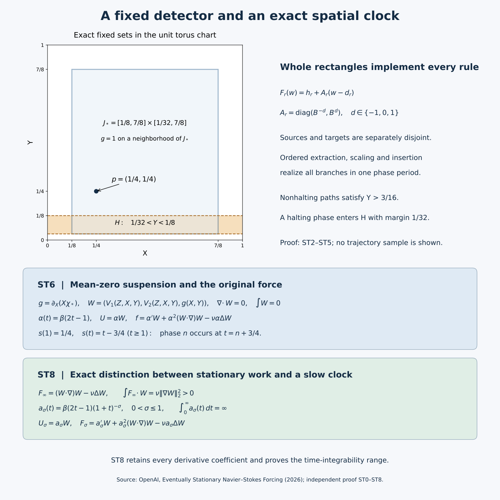
The figure generator supplies the editable diagram. The coordinate panel shows the exact fixed sets, not a sampled fluid trajectory.
ST1. Effective smooth functions and the exact fluid receiver
Retain
\[ E(t)=\begin{cases}e^{-1/t},&t>0,\\0,&t\le0,\end{cases} \qquad \beta(t)=\frac{E(t)}{E(t)+E(1-t)}. \tag{ST1.1} \]If \(E^{(j)}(t)=P_j(1/t)e^{-1/t}\) for \(t>0\), differentiation gives
\[ P_0(y)=1,\qquad P_{j+1}(y)=y^2\big(P_j(y)-P_j'(y)\big). \tag{ST1.2} \]For nonnegative integers \(m,k\), the exponential series implies \(y^me^{-y}\le(m+k)!y^{-k}\). Thus every derivative tends to zero at the origin, with a computable modulus. For a global derivative bound use \(y^me^{-y}\le m!\) term by term in the finite polynomial. At least one of \(t,1-t\) is at least \(1/2\), so the denominator in ST1.1 is at least \(e^{-2}\). Repeated quotient differentiation gives effective derivative bounds for \(\beta\), including all endpoint derivatives. It is zero on \(( -\infty,0]\), one on \([1,\infty)\), and
\[ \beta(t)+\beta(1-t)=1. \tag{ST1.3} \]Evaluation at a computable real does not require deciding whether that real equals an endpoint: use a rational enclosure and the derivative bounds to control evaluation error; near zero the preceding vanishing estimate controls the entire uncertain contribution.
For \(a<b<c<d\),
\[ \beta\!\left(\frac{t-a}{b-a}\right) \beta\!\left(\frac{d-t}{d-c}\right) \tag{ST1.4} \]is one on \([b,c]\) and zero off \((a,d)\). Products over coordinates give the required rational-box cutoffs. Finite products and compositions retain explicit computable bounds by Leibniz' rule and the chain rule.
A compactly supported smooth profile \(F_0\) on \((0,1)\), extended by zero, can be periodized effectively without taking the integer part of a computable real. Given \(|q-s|<1\) with rational \(q\), use
\[ F_{\rm per}^{(j)}(s)= \sum_{k=\lfloor q\rfloor-2}^{\lceil q\rceil+2}F_0^{(j)}(s-k). \tag{ST1.5} \]Every nonzero summand has \(k\in[s-1,s]\), which is contained in the displayed finite range. Coordinate products give the same procedure for compact spatial charts. All floors and ceilings are applied to rationals.
For any explicitly supplied smooth, divergence-free periodic velocity \(U\) vanishing initially, define
\[ \mathcal R_\nu[U]=U_t+(U\cdot\nabla)U-\nu\Delta U. \tag{ST1.6} \]Then \((U,0)\) satisfies ST0.2 by substitution. To prove uniqueness, let \((v,p)\) be another classical solution with the same force and datum and put \(w=v-U\). The exact difference equation is
\[ w_t+(v\cdot\nabla)w+(w\cdot\nabla)U-\nu\Delta w+\nabla p=0. \tag{ST1.7} \]Periodicity and zero divergence remove the integrated transport and pressure terms. Therefore
\[ \frac12\frac d{dt}\|w\|_2^2+\nu\|\nabla w\|_2^2 =-\int_{\mathbb T^3}w\cdot (w\cdot\nabla)U \le\|\nabla U\|_{\mathrm{op},\infty}\|w\|_2^2. \tag{ST1.8} \]On \([0,T]\) the coefficient is finite. Multiplication by \(\exp(-2\int_0^t\|\nabla U\|_{\mathrm{op},\infty})\) proves \(w=0\). The equation then makes \(\nabla p=0\), and the imposed mean gives \(p=0\). This proves uniqueness for every finite \(T\), hence on the whole half-line. Smooth periodic velocities are bounded and Lipschitz on each such cylinder, so their material ODEs have unique solutions on it and continue through every finite time. Finally
\[ \int\mathcal R_\nu[U]=\frac d{dt}\int U \tag{ST1.9} \]because \((U\cdot\nabla)U_i=\sum_j\partial_j(U_jU_i)\). Thus zero spatial mean of \(U\) gives zero mean of its force. This argument proves the needed comparison directly; it does not invoke a global theorem for arbitrary forcing.
ST2. The complete finite recorder and its inverse
The original machine has a tape on \(\mathbb Z\), finite alphabet \(\Gamma\), a blank symbol, one head, and moves \(-1,0,1\). The word occupies cells \(0,\ldots,r-1\); the head starts at zero. Redirect missing instructions and halting states to a single halting state \(q_{\rm H}\) with no outgoing rules, completing the table elsewhere. Add \(q_{\rm start}\): it preserves the read symbol and head and enters the old initial state. This finite transformation preserves halting, including immediate halting, while ensuring that the initialized state is nonterminal.
Let \(Q\) be the augmented state set. For each \(\tau=(q,a)\in\mathcal T=(Q\setminus\{q_{\rm H}\})\times\Gamma\), write the instruction as \((q_\tau^+,a_\tau^+,d_\tau)\). Use exactly
\[ \mathcal L=\{\bot,E\}\sqcup\mathcal T, \qquad \Sigma=\Gamma\times\{0,1\}\times\mathcal L. \tag{ST2.1} \]The three tracks hold data, a marker, and history. States are \(R_q,C_q,L_q\) for \(q\in Q\) and \(A_\tau,F_\tau\) for \(\tau\in\mathcal T\), distinguished by type and subscript. Only \(R_{q_{\rm H}}\) is the terminal state reached by an initialized computation. Initially the control is \(R_{q_{\rm start}}\), the data and head are the original input, all markers are zero, and history is \(E\) at cell 2 and \(\bot\) elsewhere. The full blank is \((\mathrm{blank},0,\bot)\).
The entire partial table, expanded over all displayed symbol choices, is
\[ \begin{array}{lll} (R_q,(a,0,\ell))&\mapsto(A_\tau,(a_\tau^+,0,\ell),d_\tau) &q\ne q_{\rm H},\ \tau=(q,a),\ \ell\ne E,\\ (A_\tau,(a,0,\ell))&\mapsto(F_\tau,(a,1,\ell),1)&\ell\ne E,\\ (F_\tau,(a,0,\ell))&\mapsto(F_\tau,(a,0,\ell),1)&\ell\ne E,\\ (F_\tau,(a,0,E))&\mapsto(C_{q_\tau^+},(a,0,\tau),1),&\\ (C_q,(a,0,\bot))&\mapsto(L_q,(a,0,E),-1),&\\ (L_q,(a,0,\ell))&\mapsto(L_q,(a,0,\ell),-1)&\ell\ne E,\\ (L_q,(a,1,\ell))&\mapsto(R_q,(a,0,\ell),0)&\ell\ne E. \end{array} \tag{ST2.2} \]At the ready checkpoint after \(n\) augmented steps, the data and head are those of the original computation, \(|h|\le n\), all markers vanish, history cells \(2,\ldots,n+1\) contain the successive instruction tags, cell \(n+2\) contains \(E\), and other history cells contain \(\bot\). This is true for \(n=0\). Row 1 executes the next data instruction and moves to \(h'=h+d_\tau\), where \(h'\le n+1<n+2\). Row 2 marks \(h'\) and starts a rightward scan. Rows 3–4 reach the finite frontier \(n+2\), replace \(E\) by \(\tau\), and move right. Row 5 writes \(E\) at \(n+3\) and turns left. Rows 6–7 find the unique mark, erase it and enter the new ready state at \(h'\). None of the forbidden symbols is read in these steps. The exact number of table transitions is
\[ 1+1+(n+1-h')+1+1+(n+2-h')+1 =4+2(n+2-h'). \tag{ST2.3} \]The invariant therefore holds at the next checkpoint. Halting of the augmented machine is exactly arrival at \(R_{q_{\rm H}}\); otherwise this finite cycle repeats indefinitely.
The map on all configurations in the table's domain is injective, not only on the initialized run. A destination \(A_\tau\) identifies the old \((q,a)\); the written history letter recovers the remaining old symbol. Into \(F_\tau\), both incoming moves are right, and the written marker distinguishes the arrival from \(A_\tau\) from its scan loop. Into \(C_q\), the right move and written tag identify \(\tau\), while the written data letter recovers the old data letter. Into \(L_q\), both moves are left, and the written history \(E\) distinguishes arrival from \(C_q\) from the loop. Into \(R_q\), only row 7 arrives and its displacement is zero. Thus the destination state fixes the incoming displacement, and that state together with the full written symbol identifies a unique expanded row and its old read symbol. The predecessor head is the new head minus this displacement. Restore the old symbol at that cell and retain every other tape cell. This gives the exact inverse on the image.
ST3. Original radix coordinates and all branch maps
Let \(K=|\Sigma|\), \(B=2K+2\), and assign distinct odd digits \(c(a)\in\{1,3,\ldots,2K-1\}\). Keep
\[ C(a_1,a_2,\ldots)=\sum_{k\ge1}c(a_k)B^{-k}, \quad I_a=\frac{c(a)+[0,1]}B, \quad I_{a,b}=\frac{c(a)+I_b}B. \tag{ST3.1} \]The code lies in \([1/(B-1),(2K-1)/(B-1)]\subset(0,1)\). Distinct first digits have gap at least \(1/B\) between their closed intervals. For a fixed first digit, distinct second digits have gap at least \(1/B^2\); different first digits retain their first-level gap. A code lies in the interior of its own first-symbol interval because its tail lies strictly between zero and one. Recovering that digit and multiplying by \(B\) after subtracting it recovers the tail, proving uniqueness of the sequence code.
For state \(i\), head \(h\), and tape \((a_k)\), use
\[ x=C(a_{h-1},a_{h-2},\ldots),\qquad y=C(a_h,a_{h+1},\ldots). \tag{ST3.2} \]The initialized codes \(x_0,y_0\) are rational: the finite nonblank prefixes are followed by constant-symbol geometric series. Let \(m\) be the number of compiled states. Count each right or stationary rule once and each left rule \(K\) times, obtaining \(N\ge1\). Set
\[ \lambda=\frac1{100(m+N+1)},\quad a_* =1/4-\lambda x_0, \quad \Psi_i(x,y)=(a_*+\lambda x,b_i+\lambda y), \tag{ST3.3} \]where
\[ b_i=\begin{cases} 1/4-\lambda y_0,&i=R_{q_{\rm start}},\\ 1/16,&i=R_{q_{\rm H}},\\ 1/3+\ell/[12(m+1)],&i\text{ is the }\ell\text{th other state}. \end{cases} \tag{ST3.4} \]The separation of the remaining state heights exceeds \(\lambda\); the initial and terminal squares lie in disjoint lower bands. All nonterminal squares satisfy \(1/4-\lambda\le Y<1/2\), and the terminal square satisfies \(1/16\le Y\le1/16+\lambda\). The initial code maps exactly to \((1/4,1/4)\).
For an expanded rule \((i,a)\mapsto(j,b,d)\), retain all three cases:
\[ \begin{array}{c|c|c|c} d&\text{domain}&(x',y')&\text{image}\\\hline 1 &[0,1]\times I_a&((c(b)+x)/B,\ By-c(a))&I_b\times[0,1]\\ 0 &[0,1]\times I_a&(x,\ y+(c(b)-c(a))/B)&[0,1]\times I_b\\ -1&I_e\times I_a&(Bx-c(e),\ c(e)/B+(c(b)+By-c(a))/B^2) &[0,1]\times I_{e,b}. \end{array} \tag{ST3.5} \]The left case is expanded over every \(e\in\Sigma\). A right move prefixes \(b\) to the left stack and removes \(a\) from the right one. A left move removes \(e\) from the left stack and prefixes \(e,b\) to the old right tail. A stationary move replaces only the first right digit. These operations prove every formula in ST3.5 directly from ST3.1; the linear parts are respectively \(\operatorname{diag}(B^{-1},B)\), identity, and \(\operatorname{diag}(B,B^{-1})\). Their determinants are one.
Apply \(\Psi_i\) to the domain and \(\Psi_j\) to its image. Enumerate the resulting actual rectangles as \(D_r,H_r\), with centers \(\mathbf d_r,\mathbf h_r\). The resulting map is exactly
\[ F_r(\mathbf w)=\mathbf h_r+A_r(\mathbf w-\mathbf d_r), \quad A_r=\operatorname{diag}(\mu_r,\mu_r^{-1}), \quad\mu_r=B^{-d}. \tag{ST3.6} \]Each side has length at most \(\lambda\). The source rectangles are pairwise disjoint: states separate squares, deterministic read symbols separate digit intervals, and the left branches have separated \(I_e\). Target states determine the common incoming displacement by ST2. Distinct incoming rules have different full written symbols. For displacements 0 and 1, these separate their \(I_b\) factors; for displacement \(-1\), the ordered pairs \((e,b)\) separate \(I_{e,b}\). Thus the targets too are pairwise disjoint. Source and target families may overlap each other; the following construction treats that possibility explicitly.
ST4. Full Hamiltonian motions and the collision check
For a slot \([s_0,s_1]\), put
\[ \theta(s)=\beta\!\left(\frac{3(s-s_0)}{s_1-s_0}-1\right). \tag{ST4.1} \]It is constant on neighborhoods of both ends. Let \(J\) be the rational swept bounding rectangle of a desired motion, disjoint from all other currently tracked rectangles and from the chart boundary. Let \(\delta\) be one third of its minimum sup-norm distance to these sets. For each coordinate interval \([a,b]\) of \(J\), use
\[ \beta\!\left(\frac{u-a+\delta}{\delta/2}\right) \beta\!\left(\frac{b+\delta-u}{\delta/2}\right). \tag{ST4.2} \]Their product \(\chi\) is one on the \(\delta/2\) coordinate enlargement of \(J\), zero outside its \(\delta\) enlargement, and zero on neighborhoods of every held rectangle. All clearances are positive rationals. For a potential \(G\), the pulse is
\[ V(s,X,Y)=\theta'(s) \big(\partial_Y(\chi G),-\partial_X(\chi G)\big). \tag{ST4.3} \]Its divergence is zero by equality of mixed derivatives. Its two component integrals vanish because each is a derivative of a compactly supported function, then periodically extended. It therefore has zero planar mean.
For translation by \(\mathbf u=(u_1,u_2)\), choose \(G=u_1Y-u_2X\). On the active plateau the exact path is \(\mathbf w+\theta(s)\mathbf u\). For reciprocal scaling about \(\boldsymbol\pi\), choose
\[ G=(\log\mu)(X-\pi_1)(Y-\pi_2),\quad \mathbf w(s)=\boldsymbol\pi+ \operatorname{diag}(\mu^{\theta(s)},\mu^{-\theta(s)})(\mathbf w-\boldsymbol\pi). \tag{ST4.4} \]Differentiation proves both ODE identities, with the signs in ST4.3 unchanged. The paths remain in the one-plateau by the definition of \(J\). ODE uniqueness identifies them with the actual pulse flow. Held rectangles remain fixed because the pulse vanishes near them.
Use the original parking centers
\[ \boldsymbol\pi_r=(1/2+r/[4(N+1)],\ 3/4),\qquad 1\le r\le N, \tag{ST4.5} \]and \(5N\) equal phase slots. First, in decreasing source horizontal-center order, move each source right to its parking column and then vertically to its center. Second, scale each parked rectangle by \(A_r\). Third, in increasing target horizontal-center order, move each parked rectangle vertically to its target height and then left to its target. Break equal centers by branch index. This is exactly \(2N+N+2N\) motions.
Here is the full clearance argument, including unequal rectangles. For a horizontal extraction, any remaining source with overlapping vertical projection has a disjoint horizontal interval. Its center is no larger than the active center; its horizontal interval therefore lies entirely to the left. Equal horizontal centers can occur only with disjoint vertical intervals. Thus no unextracted source intersects the swept box. Already parked boxes lie near \(Y=3/4\), while every source lies below \(1/2\). A vertical extraction stays in one parking column. Columns are separated by \(1/[4(N+1)]>\lambda\), and all state squares lie near \(X=1/4\), to the left of them. It therefore avoids both remaining sources and parked boxes.
During scaling, each coordinate side length varies monotonically between its initial and final lengths, each at most \(\lambda\). The swept box lies in \(\boldsymbol\pi_r+[-\lambda/2,\lambda/2]^2\); it avoids all other columns. In a vertical insertion the same column clearance applies, and all already inserted targets are near \(X=1/4\). For the final leftward move, remaining parked boxes are above all targets. An already inserted target whose vertical interval meets the current target has smaller horizontal center, and its disjoint horizontal interval lies entirely to the left of the current target. The active swept box stops at that target and therefore does not hit the earlier one. These arguments apply to closed rectangles and give strictly positive distances.
All swept boxes are contained in the open unit square; their endpoints are rational, including the bound for reciprocal scaling. Thus ST4.2 applies at every slot. Induction through the ordered motions proves that the period map sends every full \(D_r\) by exactly \(F_r\). All sources have left the state region before target insertion starts, so source–target overlaps create no simultaneous obstacles.
This equality holds on an effective positive neighborhood of each full rectangle. Minimize, over all slots and all tracked rectangles, the active path's clearance from the complement of its one-plateau and the held path's clearance from the pulse support, obtaining a positive computable lower bound \(m_0\). Let \(M_0\ge1\) bound every partial affine product along every branch, including intermediate reciprocal scalings. Such a bound is finite and computable: translations have linear part identity and all scaling parameters lie between their endpoint values. Choose rational
\[ 0<\rho<m_0/(2M_0). \tag{ST4.6} \]For an initial perturbation of norm less than \(\rho\), induction through the slots gives displacement from the corresponding tracked path at most \(M_0\rho<m_0/2\). It stays in the same active or held region and follows the same affine formula. This proves neighborhood action even at the rectangle boundaries.
ST5. Exact observations, global derivative bounds and flow estimates
Join the pulses and repeat them with phase period one. Since every pulse vanishes near its slot endpoints, all derivatives match at joints and at integers. Periodic extension of the compact chart potentials gives a smooth Hamiltonian field \(V(s,X,Y)\), compactly supported in the open square in its planar variables, with zero divergence and mean. All its derivatives have effective uniform bounds. Indeed there are finitely many slots and rational cutoffs; ST1 bounds every cutoff derivative, while the only additional constants, such as \(\log B\), are computable. No branch of the chosen execution is needed to construct these bounds or evaluate the field.
At integer phase times, ST3.5 and induction give the next compiled configuration from the initialized point \((1/4,1/4)\). The sequence code is inside the appropriate branch rectangle, including the left-symbol subdivision. Ready checkpoints recover the augmented machine. The history block begins at absolute cell 2, so the recorded tags and frontier also recover the absolute head from the two head-relative stacks when that information is required.
All tracked paths obey the original bounds
\[ 1/4-\lambda\le X\le3/4+\lambda/2, \qquad 1/16\le Y\le3/4+\lambda/2, \qquad (X,Y)\in J_*=[1/8,7/8]\times[1/32,7/8]. \tag{ST5.1} \]For a branch with nonterminal endpoints, the stronger lower bound is \(Y\ge1/4-\lambda>3/16\). Horizontal moves preserve height; vertical moves interpolate nonterminal heights and the parking height; the scaling occurs at height \(3/4\) with sides at most \(\lambda\). This proves the lower bound throughout the whole period, including intermediate and held times. A nonhalting run therefore never reaches \(H=\{1/32<Y<1/8\}\). If the run halts, an integer-phase point enters the terminal square, whose distance from both boundaries of \(H\) is at least \(1/32\), because \(\lambda<1/32\). This proves the event equivalence at all phase times. The field is globally defined after a halt; no absorbing rule is required for an event that asks whether entry occurs at least once.
Choose an effective \(L\ge1\) bounding both \(\|D_{X,Y}V\|\) and \(\|D^2_{X,Y}V\|\). For the transition map over any phase interval of length \(s\ge0\), its first variational equation and the initial identity matrix give
\[ \|D\Phi_s\|\le e^{Ls}. \tag{ST5.2} \]The second derivative initially vanishes. Its inhomogeneous term is \(D^2V[D\Phi,D\Phi]\), so variation of constants gives
\[ \|D^2\Phi_s\| \le\int_0^s e^{L(s-r)}L e^{2Lr}\,dr =e^{2Ls}-e^{Ls}. \tag{ST5.3} \]The inverse transition from initial phase \(s_0\) is the length-\(s\) flow of \(-V(s_0+s-r,\cdot)\), \(0\le r\le s\). It has the same first and second spatial derivative bounds, so ST5.2–ST5.3 apply to the inverse as well. For two lifted trajectories the difference satisfies the Lipschitz integral inequality, hence the distance is at most \(e^{Ls}\) times the initial distance. In particular an initial perturbation less than \(\eta e^{-Ls}\) stays within \(\eta\) up to phase \(s\). This is a finite-time estimate; its radius decreases with the length of computation.
ST6. The original mean-zero spatial clock and stationary force
Choose an effective cutoff \(\chi_*\), one near the exact \(J_*\) of ST5.1 and compactly supported in the open square. Periodize its compact products. Retain the source's field
\[ g(X,Y)=\partial_X(X\chi_*(X,Y)),\qquad W(X,Y,Z)=(V_1(Z,X,Y),V_2(Z,X,Y),g(X,Y)). \tag{ST6.1} \]This formula uses the chart coordinate \(X\) only inside its compact product; it therefore defines a smooth periodic function. The planar divergence of \(V\) is zero and \(\partial_Zg=0\), so \(\operatorname{div}W=0\). All component integrals vanish by the derivative representations. On a neighborhood of \(J_*\), \(g=1\). Its mean-zero compensation outside that region does not alter the tracked path.
For each computational phase interval, the path
\[ s\longmapsto\big(\Phi_s^V(1/4,1/4),\ s\bmod1\big) \tag{ST6.2} \]solves the \(W\) equation as long as the corresponding compiled segment is being followed: ST5.1 keeps the planar component where \(g=1\). The periodic smooth field has a global flow; boundedness and the uniform spatial Lipschitz bound prevent finite-time failure of its ODE. Uniqueness identifies ST6.2 with that flow, period by period. For a nonhalting run this holds at every finite phase. For a halting run it holds through terminal entry, which suffices. Thus its event at \(P\) is exactly the machine's halting event.
Now use the fixed ramp and full residual
\[ \alpha(t)=\beta(2t-1),\quad U(t,x)=\alpha(t)W(x), \tag{ST6.3} \] \[ f(t,x)=\alpha'(t)W(x)+\alpha(t)^2(W\cdot\nabla)W(x) -\nu\alpha(t)\Delta W(x),\qquad p=0. \tag{ST6.4} \]The ramp vanishes for \(t\le1/2\) and is one for \(t\ge1\). Thus the initial data are zero, every mixed force derivative is bounded, and the force is exactly stationary after one. Equation ST1.6 proves the PDE with its original \(\nu\); ST1.9 proves zero mean; ST1.8 proves uniqueness. Its energy satisfies
\[ \frac12\|U(t)\|_2^2=\frac{\alpha(t)^2}{2}\|W\|_2^2 \le\frac12\|W\|_2^2. \tag{ST6.5} \]The material curve is the autonomous \(W\) curve at
\[ s(t)=\int_0^t\alpha(r)\,dr, \quad s(1)=\frac12\int_0^1\beta(u)\,du=\frac14, \quad s(t)=t-\frac34\quad(t\ge1). \tag{ST6.6} \]The middle equality uses ST1.3. The clock is continuous, nondecreasing, finite at every finite time and onto \([0,\infty)\). Consequently the event transfers in both directions, with every positive integer phase \(n\) reached at physical time \(n+3/4\). All transitions, rational coordinates, orders, margins, cutoffs and potentials came from the finite table and word. Evaluation of ST6.4 at late time does not require computing the intervening machine run. This completes the eventually stationary theorem with all its stated assertions.
ST7. Periodic forcing, effective projection and undecidability
For the periodic alternative retain
\[ U_{\mathrm{per}}(t,X,Y,Z)=(V_1(t,X,Y),V_2(t,X,Y),0), \quad f_{\mathrm{per}}=\partial_tU_{\mathrm{per}}+(U_{\mathrm{per}}\cdot\nabla)U_{\mathrm{per}}-\nu\Delta U_{\mathrm{per}}. \tag{ST7.1} \]Because \(V\) vanishes near integer phases, the initial velocity is zero. Both fields are smooth, mean zero and period one, with bounded mixed derivatives. The solution is exactly \((U_{\mathrm{per}},0)\), unique by ST1.8. Its third particle coordinate remains zero and its first two are precisely the planar processor trajectory. ST5 proves the same fixed event. The bounded spatial and temporal periods also give a uniform kinetic-energy bound.
For either force \(F\), its solenoidal version is \(F-\nabla\phi\), where in the basis \(e^{2\pi i k\cdot x}\)
\[ \widehat\phi(k)=-\frac{i k\cdot\widehat F(k)}{2\pi|k|^2}\ (k\ne0), \qquad \widehat\phi(0)=0. \tag{ST7.2} \]Then \(\Delta\phi=\operatorname{div}F\) and the multiplier for \(\nabla\phi\) is \(kk^{\mathsf T}/|k|^2\), with norm one. For a spatial multi-index \(\mu\), set \(r=|\mu|\). Integration by parts \(r+5\) times in a coordinate with \(|k_i|\ge|k|/\sqrt3\) gives, retaining the Fourier factors,
\[ |(2\pi i k)^\mu\widehat{\partial_t^h\nabla\phi}(k)| \le (2\pi)^{-5}3^{(r+5)/2}|k|^{-5} \max_i\|\partial_t^h\partial_{x_i}^{r+5}F\|_\infty. \tag{ST7.3} \]Group lattice points by \(j=\|k\|_\infty\). There are exactly \((2j+1)^3-(2j-1)^3=24j^2+2\), and \(|k|\ge j\). Hence the total coefficient bound is finite, and the tail after \(\|k\|_\infty\le M\), for integer \(M\ge1\), is bounded by the derivative factor in ST7.3 times
\[ \sum_{j>M}(24j^2+2)j^{-5} \le 26\sum_{j>M}j^{-3}\le13M^{-2}. \tag{ST7.4} \]This proves absolute convergence of every differentiated series, with effective tails and derivative bounds. Fourier coefficients on the unit cube are evaluated by Riemann sums with the computable first derivative bounds. Thus the force and all derivatives can be evaluated effectively. The zero Fourier mode remains zero. The fixed multiplier commutes with time differentiation and preserves stationarity, periodicity and the weighted temporal estimates proved below, at the explicitly required higher spatial orders. Pressure changes to \(p-\phi\), because
\[ -\nabla(p-\phi)+(F-\nabla\phi)=-\nabla p+F. \tag{ST7.5} \]The velocity and particle event remain exactly unchanged.
Finally, a decision procedure for the fixed event on every constructed force would decide machine halting by first executing the finite compiler. Halting is undecidable: if a total algorithm \(H(e,w)\) correctly decided whether program \(e\) halts on input \(w\), construct a program \(D\) that, on input \(e\), runs forever when \(H(e,e)\) says “halts” and halts when it says “does not halt.” Applied to the code of \(D\) itself, either output contradicts the stipulated correctness of \(H\). This diagonal argument is the classical obstruction, and the proved event equivalence transfers it to the fixed fluid experiment. It is an exact decision result, not a claim about finite precision measurements.
ST8. Full slow-clock coefficients and necessary stationary work
The original slow clock is
\[ a_1(t)=\frac{\beta(2t-1)}{1+t},\quad U_1=a_1W,\quad F_1=a_1'W+a_1^2(W\cdot\nabla)W-\nu a_1\Delta W. \tag{ST8.1} \]For \(t\ge1\), \(s_1(t)=s_1(1)+\log((1+t)/2)\), which is onto. The same chain rule as ST6.6 proves the event equivalence. Derivatives of the first two force coefficients decay as \((1+t)^{-2-h}\), and those of the last as \((1+t)^{-1-h}\). The bounded initial interval contributes a finite enlarged constant. Thus every mixed derivative of velocity and force is bounded by \(C_{h,\mu}(1+t)^{-1-h}\), and its spatial supremum belongs to \(L^2_t\). This proves the paper's stated slow-clock proposition for its actual constructed clock.
There is a precise further range with the same construction. For \(0<\sigma\le1\), retain
\[ a_\sigma(t)=\beta(2t-1)(1+t)^{-\sigma}, \quad U_\sigma=a_\sigma W,\quad F_\sigma=a_\sigma'W+a_\sigma^2C-\nu a_\sigma\Delta W, \quad C=(W\cdot\nabla)W. \tag{ST8.2} \]With \((b)_0=1\) and \((b)_h=b(b+1)\cdots(b+h-1)\), every term for \(t\ge1\) is exactly
\[ \partial_t^h\partial_x^\mu U_\sigma =(-1)^h(\sigma)_h(1+t)^{-\sigma-h}\partial_x^\mu W, \tag{ST8.3} \] \[ \begin{aligned} \partial_t^h\partial_x^\mu F_\sigma ={}&(-1)^{h+1}(\sigma)_{h+1}(1+t)^{-\sigma-h-1}\partial_x^\mu W\\ &+(-1)^h(2\sigma)_h(1+t)^{-2\sigma-h}\partial_x^\mu C\\ &-\nu(-1)^h(\sigma)_h(1+t)^{-\sigma-h}\partial_x^\mu\Delta W. \end{aligned} \tag{ST8.4} \]These follow by differentiating all three separate coefficient functions; no viscous or nonlinear term is removed. The phase is
\[ s_\sigma(t)=s_\sigma(1)+ \begin{cases} \big((1+t)^{1-\sigma}-2^{1-\sigma}\big)/(1-\sigma),&0<\sigma<1,\\ \log((1+t)/2),&\sigma=1. \end{cases} \tag{ST8.5} \]It is unbounded. All finite phases are reached, so ST6's event and uniqueness proof applies to these exact fields. The coefficients and cutoff bounds give
\[ \|\partial_t^h\partial_x^\mu U_\sigma(t)\|_\infty+ \|\partial_t^h\partial_x^\mu F_\sigma(t)\|_\infty \le C_{h,\mu,\sigma,\nu}(1+t)^{-\sigma-h}. \tag{ST8.6} \]For every \(1\le q<\infty\) with \(q(\sigma+h)>1\), these supremum norms are in \(L^q(0,\infty)\); integrate the displayed power and include the compact initial interval. For \(h=0\), every \(q>1/\sigma\) is therefore available. All derivative orders are in \(L^2_t\) when \(1/2<\sigma\le1\). The projected versions retain these statements by ST7.3–ST7.4. Computable \(\sigma\) gives the same effective construction. This proves a range of integrability claims, not rapid decrease faster than every inverse power; that separate theorem requires another memory construction.
The stationary force also has a necessary nonzero work rate. For \(t\ge1\), write
\[ F_\infty=C-\nu\Delta W. \]Periodic integration gives
\[ \int F_\infty\cdot W =\int (W\cdot\nabla)(|W|^2/2)-\nu\int\Delta W\cdot W =\nu\|\nabla W\|_2^2>0. \tag{ST8.7} \]Strict positivity follows without a new dynamical assumption: if \(\nabla W=0\), smoothness makes \(W\) constant on the connected torus; zero mean makes it zero, contradicting \(g=1\) near \(J_*\). Also \(\|W\|_2>0\), so
\[ \|F_\infty\|_2\ge \frac{\nu\|\nabla W\|_2^2}{\|W\|_2}>0. \tag{ST8.8} \]The projected force has the same pairing, since \(\int\nabla\phi\cdot W=0\), so the same lower bound applies. In particular an eventually stationary force of this construction cannot have finite \(L^q_tL^2_x\) norm for any finite \(q\). This exact energy comparison explains why the slow-clock alternatives are distinct forcing constructions.
ST9. Five solved exercises
Exercise 1. Retain the infinite blank tail
An encoded half-tape consists of the finite prefix \(a_1,\ldots,a_m\) followed by the full blank symbol \(a_\square\). Give its exact rational code and the exact tail after removing the first symbol. Explain why replacing the blank tail by zero changes the encoded point.
Solution. With the original base \(B=2K+2\) and digit assignment \(c\), the geometric series gives
\[ C(a_1,\ldots,a_m,a_\square,a_\square,\ldots) =\sum_{j=1}^m c(a_j)B^{-j} +\frac{c(a_\square)B^{-m}}{B-1}. \tag{ST9.1} \]The same formula holds for \(m=0\), with an empty finite sum. The blank digit is one of the positive odd digits, so the last summand is strictly positive. It is part of the original code. In particular an entirely blank half-tape has code \(c(a_\square)/(B-1)\), not zero.
Multiplying the defining series by \(B\) and subtracting its first digit proves
\[ BC(a_1,a_2,\ldots)-c(a_1)=C(a_2,a_3,\ldots). \tag{ST9.2} \]Conversely prefixing a symbol \(b\) sends a code \(x\) to \((c(b)+x)/B\). These exact identities, with the unchanged infinite tails, give the right, left and stationary formulas in ST3.5. The finite history-marker track changes some prefix symbols but leaves a constant blank tail on each side, so the initialized codes used in ST3.3 are rational.
Exercise 2. Count the actual recorder transitions and physical time
Suppose the augmented machine reaches its terminal state after \(q\ge1\) data instructions. Bound the number of transitions of the seven-row recorder needed to reach the corresponding ready checkpoint. Translate this into a finite upper bound for the time at which the fluid particle has entered the detector.
Solution. After \(n\) augmented instructions, the original head position has absolute value at most \(n\). After the next move, \(-n-1\le h'\le n+1\). The exact transition count in ST2.3 is
\[ d_n=4+2(n+2-h'),\qquad 6\le d_n\le4n+10. \tag{ST9.3} \]Every term counts a row of the actual recorder, including both scans, writing the new frontier, erasing the marker and entering the ready state. Consequently its terminal checkpoint occurs at the integer phase
\[ M=\sum_{n=0}^{q-1}d_n,\qquad 6q\le M\le\sum_{n=0}^{q-1}(4n+10)=2q^2+8q. \tag{ST9.4} \]Each recorder transition is one full period of the planar processor. By ST6.6, physical time \(M+3/4\) realizes phase \(M\), at which the particle is in the terminal square. Thus there is a detector visit by time
\[ t\le2q^2+8q+3/4. \tag{ST9.5} \]Entry can occur during the final continuous motion, before that checkpoint; no equality for the first entry time is asserted. The initial extra state is part of the augmented machine, so immediate halting of the original machine is covered by a positive \(q\). This bound uses the number of executed instructions as a mathematical parameter; the finite force compiler does not have to determine it.
Exercise 3. Verify every term in the energy balance for a clock
Let \(a\) be a smooth scalar clock amplitude and use the unchanged mean-zero field \(W\) from ST6. Set
\[ U_a=aW,\qquad F_a=a'W+a^2(W\cdot\nabla)W-\nu a\Delta W. \tag{ST9.6} \]Prove the full energy identity and identify exactly where the derivative, nonlinear and viscous force terms enter it.
Solution. Write \(K_W=\|W\|_2^2\) and \(G_W=\|\nabla W\|_2^2\). Both are positive by ST8. Periodicity and divergence zero give
\[ \int_{\mathbb T^3}(W\cdot\nabla)W\cdot W =\frac12\int_{\mathbb T^3}\operatorname{div}(W|W|^2)=0, \qquad \int_{\mathbb T^3}\Delta W\cdot W=-G_W. \tag{ST9.7} \]The nonlinear force term is retained in the field and has zero pairing by this exact identity. Therefore
\[ \int F_a\cdot U_a=aa'K_W+\nu a^2G_W =\frac d{dt}\left(\frac{a^2K_W}{2}\right) +\nu\|\nabla U_a\|_2^2. \tag{ST9.8} \]For the original ramp, the first term supplies the changing kinetic energy and the second supplies the dissipation. After time one the first term is zero, while the work rate remains \(\nu G_W>0\). If the force is projected as in ST7, its removed gradient has zero pairing with \(U_a\); the same identity and all its coefficients survive exactly.
Exercise 4. Prove a finite-time observation tolerance
Fix an integer phase \(M\ge1\). Let the initial planar point change from \((1/4,1/4)\) to a point at Euclidean distance less than
\[ \delta_M=\frac{e^{-LM}}{64}, \tag{ST9.9} \]with the same initial third coordinate zero. When the recorder first reaches its terminal checkpoint at phase \(M\), prove that this detector observation persists under the perturbation. Also show that a nonhalting run remains outside the detector through phase \(M\). State the dependence on the time horizon precisely.
Solution. For the periodic planar field, ST5.2 and the two-trajectory estimate give distance less than \(1/64\) throughout \([0,M]\). Every unperturbed tracked path is in the rectangle from ST5.1. Its distance from the boundary of \(J_*\) is at least \(1/32\): the lower vertical margin is \(1/16-1/32\); the other margins are larger because \(\lambda<1/32\). The perturbed planar path consequently remains inside \(J_*\). Hence \(g=1\) on that path, so the spatial clock also runs at exactly unit phase speed. ODE uniqueness identifies the perturbed three-dimensional path with this planar path and the third coordinate \(s\bmod1\), through the stated horizon.
At a terminal checkpoint the unperturbed height belongs to \([1/16,1/16+\lambda]\). Its distance from each boundary of \((1/32,1/8)\) is at least \(1/32\), so the perturbation of size less than \(1/64\) preserves detector membership. For a nonhalting run the original height is at least \(1/4-\lambda>3/16\) throughout the horizon. The perturbed height is therefore greater than \(3/16-1/64=11/64>1/8\). The ramp reparametrization transfers these conclusions through physical time \(M+3/4\).
The tolerance is \(\delta_M\), which tends to zero as \(M\) increases. This proves the finite-horizon statements without asserting a single positive tolerance for every possible length of computation.
Exercise 5. Determine the exact time-integrability threshold of the slow clocks
For the fields \(U_\sigma,F_\sigma\) in ST8.2, with \(0<\sigma\le1\), integer \(h\ge0\) and \(1\le q<\infty\), prove the exact criteria
\[ \partial_t^hU_\sigma\in L^q(0,\infty;L^2(\mathbb T^3)) \quad\Longleftrightarrow\quad q(\sigma+h)>1, \tag{ST9.10} \] \[ \partial_t^hF_\sigma\in L^q(0,\infty;L^2(\mathbb T^3)) \quad\Longleftrightarrow\quad q(\sigma+h)>1. \tag{ST9.11} \]Prove the same force criterion after the projection in ST7. Keep every force coefficient.
Solution. For \(t\ge1\), ST8.3 gives the exact velocity norm
\[ \|\partial_t^hU_\sigma(t)\|_2 =(\sigma)_h(1+t)^{-\sigma-h}\sqrt{K_W}. \tag{ST9.12} \]Both constants are positive. The compact initial interval contributes a finite integral, so direct integration of \((1+t)^{-q(\sigma+h)}\) proves ST9.10, including logarithmic divergence at equality.
For the force, pair the full three-term expression ST8.4 with \(W\). The exact identities ST9.7 remove the convection pairing and retain the viscous pairing with its sign. Thus
\[ \begin{aligned} \langle\partial_t^hF_\sigma,W\rangle ={}&(-1)^{h+1}(\sigma)_{h+1}(1+t)^{-\sigma-h-1}K_W\\ &+(-1)^h(2\sigma)_h(1+t)^{-2\sigma-h}\cdot0\\ &+\nu(-1)^h(\sigma)_h(1+t)^{-\sigma-h}G_W\\ ={}&(-1)^h(\sigma)_h(1+t)^{-\sigma-h} \left(\nu G_W-\frac{(\sigma+h)K_W}{1+t}\right). \end{aligned} \tag{ST9.13} \]For
\[ t\ge T_h=\max\left\{1,\frac{2(\sigma+h)K_W}{\nu G_W}-1\right\}, \tag{ST9.14} \]the bracket is at least \(\nu G_W/2\). Cauchy–Schwarz therefore gives the lower bound
\[ \|\partial_t^hF_\sigma(t)\|_2 \ge\frac{\nu(\sigma)_hG_W}{2\sqrt{K_W}} (1+t)^{-\sigma-h}\qquad(t\ge T_h). \tag{ST9.15} \]The upper bound ST8.6 and the lower bound ST9.15 prove ST9.11, again including the critical equality. Projection preserves the upper bound by ST7.3–ST7.4. It preserves the pairing because every differentiated pressure gradient integrates to zero against divergence-free \(W\), so the same lower bound holds for the projected force. In particular none of these clocks has force in \(L^1_tL^2_x\) when \(h=0\), although all have finite \(L^q_tL^2_x\) norm for \(q>1/\sigma\).
This is an exact consequence for the specified stationary-field clocks. It makes no assertion about the different, rapidly decreasing construction or the signed velocity-detector bursts. No novelty claim is made.
Sources and proof scope
The proof above covers the original eventually stationary theorem, complete planar processor, periodic alternative, projection and stated slow clock. Its primary locators are the pinned author TeX: analytic tools, lines 191–300; recorder, 302–422; planar processor and full routing, 424–819; spatial clock and main proof, 821–908; periodic and projected forces, 910–937; slow clock and undecidability, 940–1013. No source error was established in this reading. ST8.2–ST8.8 are separate editorial consequences.
The source bibliography credits Alan Turing for undecidability, Rolf Landauer and Charles Bennett for retention of computation history, Cristopher Moore for generalized shifts, and Jean Leray for the classical difference-energy method. Their bibliographic details are retained in the author bibliography. This lesson proves the particular recorder, geometric realization and comparison it uses. Reading that bibliography does not constitute reading or validating all the cited works, nor does this lesson assert a novelty comparison with them.
The rapidly vanishing-force, velocity-field detection and companion constructions have separate hypotheses and proof dependencies. This lesson makes no validation claim for those theorems or their Lean developments. Its mathematical scope is the eventually stationary construction and the alternatives and consequences proved in ST1–ST8.
The complete supplying written proof, SC0–SC8, is retained here with lesson labels ST0–ST8. The original theorem and construction are in the cited author source, lines 1–1017. ST9.10–ST9.15 strengthen the stated sufficient time-integrability bounds to exact criteria for the specified slow-clock family; their full argument is in Exercise 5. This is separate editorial exposition, with no change to the original author text and no novelty claim.
Computation with rapidly decreasing forcing
NS-BLOWUP N8.2. Exposition by GPT-6 Astra (OpenAI). This independent exposition is dedicated to CC0.
Can a fluid carry out an unbounded computation while its velocity and force decrease faster than every inverse power of time? The constructions below answer yes. Each instruction occupies a full unit of physical time. Successive records use smaller spatial scales, so the distinguished particle can travel a finite total distance while retaining its entire computational history.
There are three memory mechanisms and four fluid experiments. Addressed compact motions give an experiment in Euclidean space and its exact torus image. Alternating memories keep the coordinate being read fixed while writing to the other coordinate. A periodic lattice stores each new instruction inside the plateau of its selector. For each experiment the lesson proves the complete field, residual force, classical uniqueness and equivalence between machine halting and entry into the fixed detector. RC9 and Exercise 4 prove that the limiting flow is an onto, volume-preserving homeomorphism with a Lipschitz inverse.
The preceding computation lesson introduces finite instructions, effective smooth functions and material-particle observations. The energy-comparison lesson supplies the course's broader energy perspective. The constructions and comparisons needed here are proved in RC0–RC9. RC11 contains five solved exercises on finite observation tolerances, the full viscosity-dependent chart force, incompressible lifting, limiting volume and the exact signal after a halt.
The source is OpenAI's Computation under Rapidly Vanishing Navier–Stokes Forcing, with the addressed, alternating and lattice constructions linked in RC10. The original domains, labels, scales, supports, pressure convention and viscosity remain explicit throughout.
RC0. The exact statements
Fix \(\nu>0\), computable for the algorithmic claims. On the indicated flat domain use
\[ \partial_tU+(U\cdot\nabla)U=-\nabla p+\nu\Delta U+f, \qquad \nabla\cdot U=0,\qquad U(0)=0. \tag{RC0.1} \]Each finite deterministic machine and finite input determine an effective force and a global smooth solution. Every mixed derivative of both velocity and force satisfies, for every nonnegative integer \(J\),
\[ \sup_{t\ge0,x}(1+t)^J \left|\partial_t^l\partial_x^\alpha U(t,x)\right|<\infty, \qquad \sup_{t\ge0,x}(1+t)^J \left|\partial_t^l\partial_x^\alpha f(t,x)\right|<\infty. \tag{RC0.2} \]The Euclidean fields have fixed compact support, so the same statements hold with \((1+t+|x|)^J\). The following events are each equivalent to machine halting:
| Construction | Domain and initial label | Fixed open detector |
|---|---|---|
| Addressed compact curls | \(\mathbb R^3,\ a_*=0\) | \(X_1<-1\) |
| Addressed chart image | \(\mathbb T^3,\ a_*=(1/2,1/4,1/2)\) | \(1/4<X_1<3/8\) |
| Alternating memories | \(\mathbb R^3,\ a_*=(-1,0,0)\) | \(X_1>0\) |
| Periodic lattice memory | \(\mathbb T^3,\ a_*=(1/4,1/2,1/2)\) | \(1/2<X_1<1\pmod1\) |
Euclidean pressure is zero. The torus residual forces have pressure zero; their solenoidal projections have pressure specified in RC1. Torus pressure has spatial mean zero. The Euclidean uniqueness class on each \([0,T]\) is
\[ U\in C([0,T];H^2)\cap C^1([0,T];L^2),\qquad p\in C([0,T];H^1),\qquad \sup_{[0,T]\times\mathbb R^3}(|U|+|\nabla U|)<\infty. \tag{RC0.3} \]In both domains a classical solution also has continuous velocity, time derivative, spatial derivatives through order two, pressure and pressure gradient on each closed finite cylinder. The competitor's gradient bound in RC0.3 can be omitted. The reference gradient bound remains.
Every transition occupies a unit physical interval after a unit loading interval. The fields evaluate a local instruction at an arbitrary spatial code; constructing them does not require running the distinguished computation.

The figure generator retains editable diagram sources. Its arrows describe proved maps, not numerical particle samples.
RC1. Smooth profiles, the full residual and uniqueness
Keep the source profiles
\[ \rho(r)=\begin{cases}e^{-1/r},&r>0,\\0,&r\le0,\end{cases} \quad H(r)=\frac{\rho(r)}{\rho(r)+\rho(1-r)}, \quad\theta(r)=H(2r-1/2). \tag{RC1.1} \]The polynomial recursion \(P_0(y)=1\), \(P_{j+1}(y)=y^2(P_j(y)-P_j'(y))\) gives \(\rho^{(j)}(r)=P_j(1/r)e^{-1/r}\) on the positive half-line. The exponential series gives \(y^me^{-y}\le(m+k)!y^{-k}\) and \(y^me^{-y}\le m!\). These prove flatness at zero, effective error estimates there and global derivative bounds. At least one of \(r,1-r\) is at least \(1/2\), so the denominator of \(H\) is at least \(e^{-2}\). Quotient differentiation gives bounds for every derivative. Thus \(H\) is zero below zero and one above one; \(\theta\) is zero through \(1/4\) and one from \(3/4\), with fixed zero collars for its derivative. Rational translates and rescalings produce all cutoffs used below.
For a smooth divergence-free reference \(U\), define the actual force
\[ \mathcal R_\nu[U]=U_t+(U\cdot\nabla)U-\nu\Delta U. \tag{RC1.2} \]Substitution proves the PDE with pressure zero. For component \(i\), every derivative is exactly
\[ \begin{aligned} \partial_t^l\partial_x^\alpha(\mathcal R_\nu[U])_i ={}&\partial_t^{l+1}\partial_x^\alpha U_i -\nu\sum_{j=1}^3\partial_t^l\partial_x^{\alpha+2e_j}U_i\\ &+\sum_{j=1}^3\sum_{h=0}^l\sum_{\gamma\le\alpha} \binom lh\binom\alpha\gamma (\partial_t^h\partial_x^\gamma U_j) (\partial_t^{l-h}\partial_x^{\alpha-\gamma+e_j}U_i). \end{aligned} \tag{RC1.3} \]Here \(\binom\alpha\gamma=\prod_j\binom{\alpha_j}{\gamma_j}\). In particular all original viscous factors and nonlinear contributions remain. Rapid bounds for \(U\) imply those for the residual: put any requested time weight on the first factor of each product and use the unweighted bound on the second. Support is preserved because differentiation and products do not enlarge the support of a smooth field. The force is affine in viscosity, with coefficient fields \(U_t+(U\cdot\nabla)U\) and \(-\Delta U\).
For completeness, compare a reference solution \((U,P)\) with a competitor \((v,p)\) for the same force and data. Set \(w=v-U,\ q=p-P\). Then
\[ w_t+(v\cdot\nabla)w+(w\cdot\nabla)U=-\nabla q+\nu\Delta w, \qquad \nabla\cdot w=0. \tag{RC1.4} \]On \(\mathbb R^3\), take a smooth compact cutoff \(0\le\zeta\le1\), equal to one on the unit ball, and \(\zeta_R(x)=\zeta(x/R)\). The exact integrated identity is
\[ \begin{aligned} \frac12\frac d{dt}\int\zeta_R|w|^2 +\nu\int\zeta_R|\nabla w|^2 ={}&-\int\zeta_R w_iw_j\partial_jU_i +\frac12\int |w|^2v\cdot\nabla\zeta_R\\ &+\int q\,w\cdot\nabla\zeta_R -\nu\int w_i\partial_jw_i\,\partial_j\zeta_R . \end{aligned} \tag{RC1.5} \]Repeated indices are summed from one to three. The last three terms have absolute bounds
\[ \frac{\|\nabla\zeta\|_\infty}{2R}\|v\|_\infty\|w\|_2^2,\qquad \frac{\|\nabla\zeta\|_\infty}{R}\|q\|_2\|w\|_2,\qquad \frac{\nu\|\nabla\zeta\|_\infty}{R}\|w\|_2\|\nabla w\|_2. \tag{RC1.6} \]The Sobolev continuity in RC0.3 bounds all these norms uniformly on a finite interval and justifies the time derivative. Integrate first in time, then let \(R\) tend to infinity. Dominated convergence applies to each remaining quadratic term; the three errors tend to zero. On the torus the same calculation has no cutoff errors. Hence in either domain
\[ \frac12\frac d{dt}\|w\|_2^2+\nu\|\nabla w\|_2^2 \le\|\nabla U\|_{\mathrm{op},\infty}\|w\|_2^2. \tag{RC1.7} \]The integrating factor \(\exp(-2\int_0^t\|\nabla U(s)\|_{\mathrm{op},\infty}\,ds)\) and zero initial difference give \(w=0\). Then \(\nabla q=0\); mean zero on the torus or \(H^1(\mathbb R^3)\) fixes \(q=0\). No bound on the competitor's gradient was used. Smooth bounded reference velocities with bounded gradient on finite cylinders have unique material paths through every finite time: local Lipschitz existence and uniqueness apply, and bounded speed prevents finite-time escape. Backward solution gives the inverse finite-time flow.
The torus projection also has a complete effective proof. For mean-zero \(g\), use the Fourier basis \(e^{2\pi i k\cdot x}\) and set
\[ \widehat\phi(k)=-\frac{ik\cdot\widehat g(k)}{2\pi|k|^2}\quad(k\ne0), \qquad \widehat\phi(0)=0. \tag{RC1.8} \]The gradient multiplier is \(kk^{\mathsf T}/|k|^2\), of operator norm one. For \(r=|\alpha|\), integrate by parts \(r+5\) times in a coordinate with \(|k_i|\ge |k|/\sqrt3\). Every differentiated gradient coefficient is bounded by
\[ (2\pi)^{-5}3^{(r+5)/2}|k|^{-5} \max_i\|\partial_t^l\partial_{x_i}^{r+5}g(t)\|_\infty. \tag{RC1.9} \]The shell \(\|k\|_\infty=j\) has \(24j^2+2\) points. The tail beyond \(M\ge1\) is bounded by the factor preceding \(|k|^{-5}\) in RC1.9 times
\[ \sum_{j>M}(24j^2+2)j^{-5}\le26\sum_{j>M}j^{-3}\le13M^{-2}. \tag{RC1.10} \]The full sum is at most \(26(1+\int_1^\infty x^{-3}dx)=39\). Thus every differentiated series converges absolutely, with effective tails; the series for \(\phi\) has an additional inverse frequency factor. Fourier coefficients are effectively integrated by Riemann sums using a bound on one more derivative. Reality follows by conjugating the coefficients.
To identify the functions, the one-dimensional Fejér kernel
\[ F_N(s)=\frac1N\left|\sum_{j=0}^{N-1}e^{2\pi ijs}\right|^2 \tag{RC1.11} \]is nonnegative, has integral one by orthogonality, and Fourier coefficients \((1-|k|/N)_+\) by expanding the square. Away from the integers, the geometric sum gives \(F_N(s)\le[N\sin^2(\pi s)]^{-1}\). Its threefold product has mass outside any fixed coordinate neighborhood of zero tending to zero: use the union of the three coordinate complements and integrate the other factors to one. Uniform continuity therefore gives uniform convergence of convolution to any continuous periodic function. A function with every Fourier coefficient zero is zero. Applying this fact after termwise differentiation proves \(\Delta\phi=\operatorname{div}g\) and uniqueness of its mean-zero solution.
Consequently the exact force and pressure map is
\[ f=g-\nabla\phi,\qquad p=P-\phi,\qquad -\nabla(P-\phi)+(g-\nabla\phi)=-\nabla P+g. \tag{RC1.12} \]Every time weight passes through the pointwise bound RC1.9–RC1.10 at the finitely many specified higher spatial orders. The velocity and event are unchanged. Conversely a competitor pressure \(q\) for \(f\) becomes \(q+\phi\) for \(g\), preserving the normalized periodic class. Projection thus also preserves uniqueness. No Euclidean compact-support assertion is made for this projection.
RC2. Addressed memory: complete finite codes and scale arithmetic
Use the original tape on \(\mathbb Z\), head initially zero and input in cells \(0,\ldots,B-1\), where \(B\) is the input length. Add a fresh terminal state for a missing transition, with no move or symbol change; terminal states have no outgoing transitions. This explicit conversion preserves halting in both directions. Number states and symbols from zero, with blank symbol zero, and retain
\[ A=2^{r_A}\ge|\Gamma|,\quad S=2^{r_Q}\ge|Q|,\quad r_A,r_Q\ge1, \quad P_n=2^{n+2}, \] \[ M_n=SP_nA^{2n+B+1}=2^{L_n},\qquad L_n=r_Q+n+2+r_A(2n+B+1). \tag{RC2.1} \]After \(n\) transitions the head \(i\) satisfies \(|i|\le n\), and the finite window \([-n,n+B]\) contains every nonblank cell. Its full code is
\[ T=\sum_{v=-n}^{n+B}\operatorname{id}(\tau(v))A^{v+n}, \qquad j=i+n,\qquad k_n=\operatorname{id}(q)+S(j+P_nT). \tag{RC2.2} \]Since \(0\le j\le2n<P_n\), the code is in \([0,M_n)\). Integer division and remainders recover the state, absolute head and every tape symbol, with blank continuation outside the window.
At every padded integer \(0\le k<M_n\), extract
\[ r=k\bmod S,\quad j=\lfloor k/S\rfloor\bmod P_n,\quad T=\lfloor k/(SP_n)\rfloor. \tag{RC2.3} \]Let \(h_n(k)=1\) exactly when \(r\) names a terminal state. If \(r\) is a valid nonterminal state, \(j\le2n\), and \(z=\lfloor T/A^j\rfloor\bmod A\) is a valid symbol, look up \((q,z)\mapsto(q',z',d)\) and define
\[ F_n(k)=\operatorname{id}(q')+ S\big(j+d+1+P_{n+1}A(T+(z'-z)A^j)\big). \tag{RC2.4} \]In all other cases put \(F_n(k)=0\). The replaced digit stays in \(\{0,\ldots,A-1\}\); the resulting tape number remains below \(A^{2n+B+1}\). Multiplication by \(A\) inserts the new left blank, and the next window also has a new right blank. The new head index is between zero and \(2n+2<P_{n+1}\). Thus \(0\le F_n(k)<M_{n+1}\) for every padded code, even when unscanned digits are not actual alphabet symbols. At a genuine nonterminal configuration \(F_n(k_n)=k_{n+1}\).
Keep exactly
\[ C=\max\{1,L_0,1+2r_A\},\quad s_n=C2^{(n+2)^2},\quad \delta_n=2^{-s_n},\quad D_n=2^{s_n},\quad b_n=\delta_{n+1}M_{n+1}. \tag{RC2.5} \]The affine formula for \(L_n\) gives \(L_n\le C(n+1)\). Also \(s_n\ge16C(n+1)\) and \(s_{n+1}/s_n=2^{2n+5}=32\,4^n\ge32(n+1)\). It follows that
\[ \sum_{n\ge0}\delta_nM_n\le\sum_{n\ge0}2^{-15(n+1)}<1, \qquad b_n\le\delta_n^{\,n+10}<\delta_n/8, \tag{RC2.6} \] \[ 0\le j<n\quad\Longrightarrow\quad M_n\mid\delta_j/\delta_n. \tag{RC2.7} \]For the small displacement, \(s_{n+1}-L_{n+1}\ge(15/16)s_{n+1}\ge30(n+1)s_n\ge(n+10)s_n\). For divisibility, \(s_n-L_n\ge(15/16)s_n\ge30s_{n-1}\ge s_j\), so the integer power \(2^{s_n-s_j}\) contains the full factor \(2^{L_n}\). The strict part of RC2.6 uses \(\delta_n\le2^{-16}\).
The intended history, only used in proving the trajectory, is
\[ y_n=\sum_{j=0}^n\delta_jk_j\in[0,1),\qquad m=y_n/\delta_n\in\{0,\ldots,D_n-1\},\qquad m\bmod M_n=k_n. \tag{RC2.8} \]Every older record remains present. RC2.7 removes it from the residue used to read the current record. The compiler does not compute this sequence.
RC3. Addressed curls, exact paths and the torus map
Set
\[ \zeta(v)=\prod_{\ell=1}^3H(16(v_\ell+1/8))H(16(1/8-v_\ell)). \tag{RC3.1} \]Its support is in \([-1/8,1/8]^3\), and it equals one on \([-1/16,1/16]^3\). For a center path \(c\) and positive scale \(\delta\), define the full vector field
\[ \mathcal V(\sigma,x)=\nabla_x\times \left[\zeta\!\left(\frac{x-c(\sigma)}{\delta}\right) \frac{\dot c(\sigma)\times(x-c(\sigma))}{2}\right]. \tag{RC3.2} \]The divergence of a curl is zero. Direct component differentiation gives \(\nabla_x\times(a\times(x-c))=2a\), so this field equals \(\dot c\) near its center. The center curve solves its ODE exactly.
During loading use \(\delta=1,\ c(t)=\theta(t)(-1,y_0,0)\). On the next slot \(t\in[1+n,2+n]\), with \(\sigma=t-1-n\), use every \(0\le m\le D_n\):
\[ \begin{aligned} k&=m\bmod M_n,&a_{n,m}&=(-1,m\delta_n,0),\\ d_{n,m}&=(-b_nh_n(k),\,\delta_{n+1}F_n(k),\,0),& c_{n,m}(\sigma)&=a_{n,m}+\theta(\sigma)d_{n,m},\\ W(t,x)&=\sum_{m=0}^{D_n}\mathcal V_{n,m}(\sigma,x). \end{aligned} \tag{RC3.3} \]Here each summand uses \(\delta=\delta_n\). Since \(|d_{n,m}|_\infty\le b_n<\delta_n/8\), its support lies inside \(|x_2-m\delta_n|<\delta_n/4\). These strips are pairwise disjoint. At every point at most one summand contributes, including its derivatives. All pieces vanish on quarter-unit time collars. Every bounded time interval meets finitely many finite sums, proving global smoothness and zero initial velocity. Loading lies within a \(1/8\)-enlargement of the segment from zero to \((-1,y_0,0)\); later centers and supports obey the same fixed interior containment
\[ \operatorname{supp} W(t)\subset\operatorname{int}K,\qquad K=[-2,1]\times[-1,2]\times[-1,1]. \tag{RC3.4} \]The derivative estimate retains the original scale factors. Put \(\bar x=(x-a_{n,m})/\delta_n,\ \eta=d_{n,m}/\delta_n,\ \xi=d_{n,m}/b_n\). The exact identity, in the original field, is
\[ \mathcal V_{n,m}(\sigma,x)= b_n\nabla_{\bar x}\times \left[\zeta(\bar x-\theta(\sigma)\eta) \frac{\theta'(\sigma)\xi\times(\bar x-\theta(\sigma)\eta)}2\right]. \tag{RC3.5} \]Both parameter vectors lie in \([-1,1]^3\). The bracket and all its derivatives have uniform compact spatial support and effective bounds over this compact parameter set. Returning each spatial derivative to \(x\) contributes exactly \(\delta_n^{-1}\). Time derivatives differentiate the fixed profile with bounded parameter \(\eta\); they have no additional inverse scale. Therefore
\[ \|\partial_t^l\partial_x^\alpha W(t)\|_\infty \le C_{l,\alpha}b_n\delta_n^{-|\alpha|}. \tag{RC3.6} \]Disjoint supports remove any factor counting addresses. RC1.3 gives the more explicit force bound, with \(k=|\alpha|\),
\[ \begin{aligned} \|\partial_t^l\partial_x^\alpha f(t)\|_\infty \le{}&C_{l+1,\alpha}b_n\delta_n^{-k} +\nu\sum_{j=1}^3C_{l,\alpha+2e_j}b_n\delta_n^{-k-2}\\ &+\sum_{j=1}^3\sum_{h=0}^l\sum_{\gamma\le\alpha} \binom lh\binom\alpha\gamma C_{h,\gamma}C_{l-h,\alpha-\gamma+e_j} b_n^2\delta_n^{-k-1}. \end{aligned} \tag{RC3.7} \]The constants bound all components. RC2.6 bounds the linear terms by powers \(\delta_n^{n+10-k}\) and \(\delta_n^{n+8-k}\), and the product by \(\delta_n^{2n+19-k}\). For \(n\ge k\) all are at most \(\delta_n\). Since \(\delta_n\le2^{-n}\) and \(1+t\le n+3\), every time weight is bounded. For an explicit tail cutoff for integer \(J\), take \(n+3\ge4J\): the successive ratio of \((n+3)^J2^{-n}\) is at most \(e^{1/4}/2<3/4\). The case \(J=0\) is immediate. The preceding finite slots and loading have effective individual bounds. This proves RC0.2 for \(W\) and its full residual. Compact support and finite-cylinder derivative bounds give every Sobolev condition in RC0.3, so RC1 proves the stated unique solution.
Loading takes the origin to \((-1,y_0,0)\) without crossing \(X_1=-1\). At time \(1+n\), before a halt, RC2.8 puts the particle exactly at \(a_{n,m}\) with residue \(k_n\). RC3.2–RC3.3 show that its entire next curve is \(c_{n,m}\), since all other supports are disjoint. For a nonterminal state the first coordinate stays exactly \(-1\) and the next memory is \(y_n+\delta_{n+1}F_n(k_n)=y_{n+1}\). In a terminal state the endpoint is \(-1-b_n<-1\). This handles immediate halting too. No intermediate false positive occurs.
For effective evaluation, a rational enclosure of time of radius less than \(1/32\) either identifies a slot or places the argument within \(1/16\) of an integer, where the field is zero. In a selected slot an enclosure of \(x_2\) of radius less than \(\delta_n/32\) either selects the nearest grid address or meets a midpoint. In the latter case the true coordinate lies within \(\delta_n/16\) of the midpoint, outside every supporting strip. Address indices outside \([0,D_n]\) contribute zero. Alternatively the finite sum can be evaluated in full. Integer arithmetic and one transition lookup at the address suffice; no actual orbit is needed. Effective derivative bounds control every requested rational error at flat boundaries.
For the source's torus corollary retain
\[ \lambda=1/8,\quad c=(1/2,1/4,1/2),\quad v(t,x)=\lambda W\!\left(t,\frac{x-c}{\lambda}\right). \tag{RC3.8} \]The image \(c+\lambda K=[1/4,5/8]\times[1/8,1/2]\times[3/8,5/8]\) lies inside the unit cube. Zero extension and periodization are smooth. If \(W=\nabla_y\times A\), the actual periodic potential is \(\lambda^2A(t,(x-c)/\lambda)\), whose curl is \(v\); hence \(v\) is mean zero. Its force at the specified original viscosity is
\[ g(t,x)= \lambda W_t(t,y)+\lambda(W\cdot\nabla_y)W(t,y) -\nu\lambda^{-1}\Delta_yW(t,y),\qquad y=(x-c)/\lambda. \tag{RC3.9} \]Thus every mixed derivative has the full factor \(\lambda^{1-|\alpha|}\) in the first two terms and \(\nu\lambda^{-1-|\alpha|}\) in the viscous term. No viscosity invariance has been assumed. The divergence-form nonlinear term, time derivative and Laplacian all have zero spatial integral. Apply RC1.8–RC1.12 to obtain the solenoidal force and pressure \(-\phi\), retaining rapid bounds.
The particle is \(c+\lambda X^W(t,0)\) through the first signal and for every nonhalting run, by the chain rule and ODE uniqueness. Its first coordinate is at least \(3/8\) during loading, exactly \(3/8\) on nonterminal slots, and \(3/8-b_n/8\in(1/4,3/8)\) at a terminal endpoint. RC2.6 and the support bounds keep the other coordinates in the same chart. This proves the precise torus event without wrapping ambiguity.
RC4. Alternating memory: complete blocks and a smooth decoder
For this separate construction retain the machine's state set \(Q\), halting subset \(H_Q\), alphabet \(\Gamma\), and input length \(N\). A missing transition enters a new halting state without moving or changing the symbol. Extend halting instructions by \((q,a)\mapsto(q,a,0)\), which freezes the halted configuration. Set
\[ b=2(1+\max(|Q|,|\Gamma|)),\qquad m=\frac{b-2}{b-1}<1,\qquad J_s=[g_s/b,(g_s+1)/b], \tag{RC4.1} \]where the state digits and symbol digits are distinct even numbers within their respective families, from \(0,2,\ldots,b-2\), and the blank symbol has digit zero. Choose smooth selectors \(\phi_s\) equal to one near \(J_s\), with disjoint supports within each family. The gaps between the closed intervals are at least \(1/b\), so rational enlargements of width less than \(1/(3b)\) and RC1.1 provide such selectors with effective derivative bounds.
Use the right-handed cyclic coordinates \((x,y,z)=(X_2,X_3,X_1)\). Let \(\xi_n,\eta_n\) be the fractional tape codes left of the head and from the head rightward, nearest symbol first. All nonblank symbols fit in
\[ K_n=N+2n+2,\qquad C_n=\frac{g_{q_n}+\xi_n+b^{-K_n}\eta_n}{b},\qquad s_n=(N+1)2^{(n+3)^2},\qquad \epsilon_n=b^{-s_n}. \tag{RC4.2} \]Indeed the head moves at most \(n\) cells and nonblank cells are either initially present or visited. Both stacks can be padded with zeros to \(K_n\) digits. Every fractional tail lies in \([0,m]\), since \(\sum_{j\ge1}(b-2)b^{-j}=m\); \(b^{1+2K_n}C_n\) is an integer.
The exact scale relations are
\[ s_n>1+2K_n,\qquad s_{n+1}/s_n=2^{2n+7},\qquad s_{n+1}>s_n+1+2K_n. \tag{RC4.3} \]For the first inequality, \(s_n\ge8(N+1)(n+1)\), whereas \(1+2K_n=2N+4n+5\); their difference is at least \(6N+4n+3\). The ratio is at least \(128\), which proves the third inequality. At time \(1+n\) the proposed histories are
\[ x_n=\sum_{\substack{0\le j\le n\\ j\ {\rm even}}}\epsilon_jC_j, \qquad y_n=\sum_{\substack{0\le j\le n\\ j\ {\rm odd}}}\epsilon_jC_j. \tag{RC4.4} \]Choose rationals \(m<a_P<b_P<1\), and extend
\[ P(v)=v-H((v-a_P)/(b_P-a_P))\quad(0\le v\le1) \tag{RC4.5} \]periodically. Near zero it is \(v\), near one it is \(v-1\), so the values and every derivative match across the join. It is smooth and bounded, and it equals the fractional part whenever that fractional part lies in \([0,m]\).
In slot \(n\), the donor \(D\) is \(x\) for even \(n\), \(y\) for odd \(n\). Define on every real donor value
\[ C=P(b^{s_n}D),\qquad B=P(b^{s_n+1+K_n}D),\qquad A=P(b^{s_n+1}D)-b^{-K_n}B. \tag{RC4.6} \]At the proposed history, an earlier block \(j<n\) has denominator \(b^{s_j+1+2K_j}\), and RC4.3 makes it an integer after multiplication by \(b^{s_n}\). The remaining fractional part is \(C_n\). Multiplication by \(b\) removes the state digit, leaving \(\xi_n+b^{-K_n}\eta_n\); this is a concatenation of allowed tape digits and lies in \([0,m]\). Multiplication by another \(b^{K_n}\) removes the finite left stack and leaves \(\eta_n\). Therefore RC4.6 gives exactly \(C=C_n,\ B=\eta_n,\ A=\xi_n\), with no discontinuous equality test.
List every table branch \(i:(q,a)\mapsto(p_i,b_i,d_i)\), including frozen halting rules; split left moves by the left-top symbol \(\ell\). Put
\[ \Psi_i(D)=\phi_q(C)\phi_a(B) \begin{cases}1,&d_i=0,1,\\\phi_\ell(A),&d_i=-1,\end{cases} \quad R=bB-g_a, \tag{RC4.7} \] \[ (T_i^1,T_i^2)= \begin{cases} ((g_{b_i}+A)/b,R),&d_i=1,\\ (A,(g_{b_i}+R)/b),&d_i=0,\\ (bA-g_\ell,(g_\ell+(g_{b_i}+R)/b)/b),&d_i=-1. \end{cases} \tag{RC4.8} \]At a true donor the state and top-symbol codes lie in their correct selector plateaus, so precisely one branch has weight one. Removing or prefixing each first base-\(b\) digit gives exactly the three displayed push/pop formulas. Their outputs are \(\xi_{n+1},\eta_{n+1}\), fitting the enlarged \(K_{n+1}\) places. Retain the full writing and signal functions
\[ \begin{aligned} L_n(D)&=\frac{\epsilon_{n+1}}b\sum_i\Psi_i(D) (g_{p_i}+T_i^1+b^{-K_{n+1}}T_i^2),\\ E_n(D)&=\epsilon_n-\epsilon_{n+1} +2\epsilon_{n+1}\sum_{q\in H_Q}\phi_q(C). \end{aligned} \tag{RC4.9} \]Thus \(L_n=\epsilon_{n+1}C_{n+1}\) at the intended donor. The old memory is retained; no disjointness of the machine's transition images is required.
RC5. Alternating curls, signal and all derivative costs
Choose a fixed compact smooth \(\chi\) equal to one near \([0,1]^2\times[-1,1]\). An explicit permissible choice is the product of \(H(2(x+1))H(2(2-x))\), the same factors for \(y\), and \(H(2(z+2))H(2(2-z))\). Its support lies in \([-1,2]^2\times[-2,2]\), and its plateau contains the required box with a positive margin.
On slot \([1+n,2+n]\), set
\[ U(t)=\theta'(t-1-n)V_n,\qquad V_n= \begin{cases} \operatorname{curl}(\chi(zL_n(x)-yE_n(x)),0,0),&n\text{ even},\\ \operatorname{curl}(0,\chi(xE_n(y)-zL_n(y)),0),&n\text{ odd}. \end{cases} \tag{RC5.1} \]On the plateau direct curl differentiation gives respectively \((0,L_n,E_n)\) and \((L_n,0,E_n)\). The donor coordinate is exactly stationary throughout its slot. For loading use
\[ d=(\epsilon_0C_0,0,1-\epsilon_0),\qquad U(t,x,y,z)=\theta'(t)\operatorname{curl} \left[\frac12\chi(x,y,z)(d\times(x,y,z))\right]. \tag{RC5.2} \]The initial point is \((x,y,z)=(0,0,-1)\). Its loading curve is \((0,0,-1)+\theta(t)d\), entirely in the plateau, ending at \((\epsilon_0C_0,0,-\epsilon_0)\).
Assuming RC4.4 at a slot start, RC4.6 and the stationary donor make \(L_n,E_n\) constant along the proposed segment. The recipient memory gains \(\theta L_n\), and the signal gains \(\theta E_n\). Both memories remain between zero and \(\sum_j\epsilon_j\le2\epsilon_0<1/4\). Indeed \(s_{j+1}-s_j\ge1\) and \(b\ge4\) give a geometric majorant with ratio at most \(1/4\). The signal increment is between zero and \(\epsilon_n+\epsilon_{n+1}\), so its total displacement is less than \(2\sum_j\epsilon_j<1/2\). All proposed segments therefore stay in the cutoff plateau, even after halting. They solve the actual ODE, and uniqueness proves the full trajectory induction.
Before the first halting slot, \(z=-\epsilon_n\) at its start and interpolates monotonically to \(-\epsilon_{n+1}\). At the first halting slot the endpoint is \(+\epsilon_{n+1}\). Loading stays negative. Since \(z=X_1\), this proves precisely the fixed open event, including immediate halting and every intermediate time.
For derivatives put \(\Lambda_n=b^{s_n+1+K_n}\). Each derivative of order \(r\) of the three decoder functions is bounded by a fixed constant times \(\Lambda_n^r\): their coefficients are bounded, and the greatest frequency is the displayed one. In a chain-rule term of total order \(r\), the orders of differentiated decoder factors sum to \(r\), so their frequency factors multiply to \(\Lambda_n^r\). The finite branch list and fixed selectors then give
\[ \|L_n/\epsilon_{n+1}\|_{C^r} +\left\|\sum_{q\in H_Q}\phi_q(C)\right\|_{C^r} \le C_r b^{r(s_n+1+K_n)}. \tag{RC5.3} \]The factors \(b^{-K_n}\) and \(b^{-K_{n+1}}\) are bounded by one. For \(E_n\), retain its constant part \(\epsilon_n-\epsilon_{n+1}\) separately from its variable part. One curl derivative and the fixed cutoff give
\[ \|V_n\|_{C^r}\le C_r' \left(b^{-s_n}+b^{-s_{n+1}+(r+1)(s_n+1+K_n)}\right). \tag{RC5.4} \]Since \(K_n+1<s_n\), the second exponent is at most \(-s_n\) whenever \(2^{2n+7}\ge2r+3\). This is an explicit finite tail threshold. Time derivatives differentiate only the fixed pulse. The zero collars give smooth gluing, and \(s_n\ge n\) makes every weighted tail bounded as in RC3. RC1.3 then proves the full force bounds, including its viscosity factors and all product terms. Fixed support gives RC0.3 and the stronger spatial weight. The cyclic coordinate permutation has determinant one; the divergence, curl construction, componentwise Laplacian and prescribed physical event retain their original orientation and meaning.
Evaluation uses the finite branch list and integer scales. The periodic \(P\) is evaluated from neighboring translates or its affine formula near an integer, without deciding a real fractional-part boundary. Certified enclosures and the zero time collars select a finite set of slots; the derivative bounds control all requested errors. Only \(C_0\) uses the initial word's actual symbols. Later formulas act on their spatial donor arguments.
RC6. Periodic lattice: complete integer codes and exact divisibility
For the third construction, add a read-only bit track with a single marked bit at the original origin. Every transition preserves and ignores that bit when choosing its instruction. A missing instruction enters a fresh halting state without moving or changing the symbol. Let \(\omega\) be the transformed input, containing the marked origin even for an empty original input; let \(\Gamma\) be this transformed alphabet, with all-blank digit zero. Set
\[ b=\max(2,|\Gamma|,|Q|),\quad d_n=|\omega|+1+2n,\quad p_n=2d_n+1,\quad P_n=b^{p_n}. \tag{RC6.1} \]Symbols and states have distinct digits within their families in \(\{0,\ldots,b-1\}\). In each head-relative stack the nearest cell is the least significant digit. All nonblank cells fit within the left and right \(d_n\)-cell stacks, whose integer codes are \(L,R\). The exact complete configuration code is
\[ c_n=L+b^{d_n}R+b^{2d_n}s,\qquad 0\le c_n<P_n. \tag{RC6.2} \]The unique origin bit recovers the head's absolute position from those relative stacks. Thus no tape information is lost.
Square brackets with a positive integer subscript denote the least nonnegative residue modulo that subscript. For every integer address \(j\), reduce \(c=[j]_{P_n}\) and extract
\[ L=[c]_{b^{d_n}},\quad R=[\lfloor c/b^{d_n}\rfloor]_{b^{d_n}},\quad s=\lfloor c/b^{2d_n}\rfloor,\quad l=[L]_b,\quad a=[R]_b. \tag{RC6.3} \]Let \(h_n(j)\) test whether \(s\) is a halting-state index. At a valid nonhalting state and valid scanned symbol, look up \((s,a)\mapsto(s',a',m)\) and use
\[ \begin{aligned} (L',R')&= \begin{cases} (a'+bL,(R-a)/b),&m=1,\\ ((L-l)/b,l+ba'+b(R-a)),&m=-1,\\ (L,R-a+a'),&m=0, \end{cases}\\ F_n(j)&=L'+b^{d_{n+1}}R'+b^{2d_{n+1}}s'. \end{aligned} \tag{RC6.4} \]Otherwise \(F_n(j)=0\). Both functions are \(P_n\)-periodic. For the left branch,
\[ R-a\le b^{d_n}-b,\qquad l+ba'+b(R-a)\le(b-1)+b(b-1)+b(b^{d_n}-b)=b^{d_n+1}-1. \tag{RC6.5} \]The other outputs also lie in \([0,b^{d_n+1})\). Since \(d_{n+1}=d_n+2\) and \(s'<b\), every padded output satisfies \(0\le F_n(j)<P_{n+1}\). The formulas remove and prefix the exact least-significant digits. In particular the left branch has the old left top, the just-written symbol and the old right tail, with both shifts retained. Hence \(F_n(j)=c_{n+1}\) whenever \(j\equiv c_n\pmod{P_n}\) at an actual nonterminal configuration.
Keep the source scales and the exceptional initial signal distance:
\[ K_n=(p_0+10)2^{n(n+1)},\quad \epsilon_n=b^{-K_n},\qquad \beta_0=1/4,\quad\beta_n=\epsilon_n\ (n\ge1). \tag{RC6.6} \]Here \(p_n=p_0+4n,\ K_{n+1}=2^{2n+2}K_n\). Starting with \(K_0=p_0+10\ge p_1\), induction gives \(K_n\ge p_{n+1}\). Indeed the next factor is at least four, whereas \(p_{n+2}=p_{n+1}+4\) and \(p_{n+1}\ge3\). For \(k<n\), \(K_n-K_k\ge K_n-K_{n-1}\ge3K_{n-1}\ge p_n\). Therefore
\[ P_n\mid\epsilon_n^{-1},\qquad P_n\mid\epsilon_k/\epsilon_n\ (k<n),\qquad P_{n+1}\epsilon_{n+1} \le\epsilon_n^{\,2^{2n+2}-1}\le\epsilon_n^3<\epsilon_n/4. \tag{RC6.7} \]The last strict inequality uses \(b\ge2,\ K_0\ge13\). Both scale sequences decrease strictly after their specified initial values; \(\epsilon_n\le2^{-n}\).
RC7. Periodic selectors, the whole particle path and incompressible lift
Put \(y_*=1/2,\ \sigma(t)=H(3t-1)\). It is zero through \(1/3\) and one from \(2/3\). Choose a smooth effective bump \(\psi=1\) on \([-1/4,1/4]\), zero outside \([-3/8,3/8]\), and set
\[ J_{n,j}(y)=\psi((y-y_*)/\epsilon_n-j). \tag{RC7.1} \]Their supports are pairwise disjoint. On planar coordinates \(\xi=(\xi_1,\xi_2)\) retain
\[ \begin{aligned} v_{\mathrm{in}}(t,\xi)&=\sigma'(t)(0,\epsilon_0c_0),\\ v_n(t,\xi)&=\sigma'(t-1-n) \begin{pmatrix} \beta_n-\beta_{n+1}+2\beta_{n+1}\sum_{j\in\mathbb Z}h_n(j)J_{n,j}(\xi_2)\\ \epsilon_{n+1}\sum_{j\in\mathbb Z}F_n(j)J_{n,j}(\xi_2) \end{pmatrix},\\ v&=v_{\mathrm{in}}+\sum_{n\ge0}v_n. \end{aligned} \tag{RC7.2} \]Translation of \(\xi_2\) by one shifts \(j\) by the integer \(\epsilon_n^{-1}\), a multiple of \(P_n\); RC6.7 and coefficient periodicity prove that \(v\) is well-defined on \(\mathbb T^2\). It is independent of \(\xi_1\). At each time only the loader or one slot is active, with fixed zero collars at the joins. Thus it is smooth and initially zero.
The real lift \(Y\) from \((1/4,y_*)\) is \((1/4,y_*+\sigma(t)\epsilon_0c_0)\) during loading. At \(t_n=1+n\), before the first halt, the exact invariant is
\[ Y_1(t_n)=1/2-\beta_n,\qquad Y_2(t_n)=y_*+\sum_{k=0}^n\epsilon_kc_k. \tag{RC7.3} \]The quotient \(j_*=(Y_2(t_n)-y_*)/\epsilon_n\) is an integer congruent to \(c_n\) modulo \(P_n\). Changing the torus lift by an integer changes \(j_*\) by a multiple of \(P_n\), so the read instruction is intrinsic to the torus. Throughout the next slot the proposed full path is
\[ \begin{aligned} Y_2(t_n+\tau)&=Y_2(t_n)+\sigma(\tau)\epsilon_{n+1}F_n(j_*),\\ Y_1(t_n+\tau)&=Y_1(t_n)+\sigma(\tau) (\beta_n-\beta_{n+1}+2\beta_{n+1}h_n(j_*)), \qquad 0\le\tau\le1. \end{aligned} \tag{RC7.4} \]Its memory displacement is less than \(\epsilon_n/4\) by RC6.7, so the whole path remains where \(J_{n,j_*}=1\) and all other selectors vanish. Differentiation proves the actual ODE; uniqueness identifies the path. For a nonterminal state it gives the next invariant and keeps the first coordinate strictly below \(1/2\). A terminal slot ends at \(1/2+\beta_{n+1}\in(1/2,1)\). Loading remains at \(1/4\), and the first coordinate cannot wrap before detection. This proves the event at every real time, not merely at the endpoints.
At most one lattice bump contributes at any spatial point. If \(k=|\alpha|\), every time derivative and spatial derivative therefore obeys
\[ \|\partial_t^r\partial_\xi^\alpha v_n\|_\infty \le C_{r,k}\left(\mathbf1_{k=0}\beta_n+ P_{n+1}\epsilon_{n+1}\epsilon_n^{-k}\right). \tag{RC7.5} \]The constant drift disappears when \(k>0\), while each bump derivative contributes its exact \(\epsilon_n^{-1}\). For \(n\ge\max(1,k)\), \(2^{2n+2}-1-k\ge1\); RC6.7 bounds the second term by \(\epsilon_n\), and the first by \(\epsilon_n\) when present. The effective exponential-tail argument of RC3 proves every polynomial time weight. There is no factor counting lattice cells. Earlier slots, including the exceptional \(\beta_0=1/4\), are finitely many bounded terms.
Choose the source's periodic function \(\eta\) with \(\eta(1/2)=0,\ \eta'(1/2)=1\): take \((z-1/2)\) times a smooth cutoff supported in \((1/2-3/16,1/2+3/16)\), equal to one near \(1/2\), and extend periodically. The full three-dimensional lift is
\[ U(t,\xi,z)= (\eta'(z)v_1(t,\xi),\eta'(z)v_2(t,\xi), -\eta(z)\operatorname{div}_\xi v(t,\xi)). \tag{RC7.6} \]Its divergence is \(\eta'\operatorname{div}_\xi v-\eta'\operatorname{div}_\xi v=0\). The first two mean integrals vanish because \(\int_{\mathbb T}\eta'=0\); the third because \(\int_{\mathbb T^2}\operatorname{div}_\xi v=0\). On \(z=1/2\) the field is exactly \((v,0)\), so ODE uniqueness makes that plane invariant. Its particle from \((1/4,1/2,1/2)\) is \((Y,1/2)\) modulo integers. This is the exact map preserving the event.
For every planar multi-index \(\alpha\) and nonnegative integer \(a\), the differentiated lift is
\[ \partial_t^r\partial_\xi^\alpha\partial_z^a U =\left( \eta^{(a+1)}\partial_t^r\partial_\xi^\alpha v_1,\, \eta^{(a+1)}\partial_t^r\partial_\xi^\alpha v_2,\, -\eta^{(a)}\sum_{j=1}^2\partial_t^r\partial_\xi^{\alpha+e_j}v_j \right). \tag{RC7.7} \]Thus at most one additional planar derivative is needed. With \(g=U_t+(U\cdot\nabla)U-\nu\Delta U\), RC1.3 requires at most three additional planar derivatives and one additional time derivative relative to a requested spatial order of the force. RC7.5 supplies all of them. The mean of \(g\) vanishes by integrating its time derivative, Laplacian and divergence-form nonlinear term. RC1 proves uniqueness and gives the effective solenoidal alternative \(f=g-\nabla\phi,\ p=-\phi\), with the same rapid bounds, velocity and event.
For finite evaluation, enclose a lift of \(\xi_2\) in a rational interval of length at most \(\epsilon_n/2\). Every potentially contributing center lies in its enlargement by \(3\epsilon_n/8\) at each end, of total length at most \(5\epsilon_n/4\). At most two lattice centers occur, so a finite candidate sum contains every nonzero term. Each coefficient uses integer arithmetic and one table lookup. The fixed time collars and RC1 profile bounds avoid real-equality tests. Only \(c_0\) uses the input symbols; subsequent fields use the table and transformed input length. This completes all claims of the periodic lattice theorem.
RC8. What the effective programs decide
All three constructions are finite algorithms for fields on every spatial argument, not recorded executions. The integer scales may be extremely large; no complexity bound is asserted. Their construction uses only the machine table, input length and initial configuration. At a queried time, certified rational enclosures select finitely many candidate slots. The addressed model selects finitely many grid cells, the alternating model evaluates a fixed branch list, and the lattice model selects at most two possible bumps. Finite differentiation and the effective tail bounds give values and constants for every specified mixed order and polynomial time weight. For a noncomputable fixed positive viscosity, these same formulas have their relative evaluation meaning given a name for that parameter.
Suppose an algorithm decided one of the fixed detector events for every force program produced by its construction. Compose the finite compiler with that algorithm. The proved event equivalence would decide machine halting. To see the contradiction directly, if a total algorithm \(H(e,w)\) decided halting, build a program \(D\) which on input \(e\) loops when \(H(e,e)\) says “halts” and halts otherwise. Applying it to its own code contradicts either possible answer. Hence each experiment is undecidable, including the two projected torus versions, which have exactly the same velocities.
The conclusion concerns exact open tests. In the addressed experiment a nonhalting particle stays on \(X_1=-1\) after loading, and a terminal slot moves it by \(b_n\). Its chart image has boundary \(3/8\) and signal \(b_n/8\). Alternating nonhalting signals approach zero from below; a first halt ends at \(+\epsilon_{n+1}\). Lattice nonhalting signals approach \(1/2\) from below; a first halt ends at \(1/2+\beta_{n+1}\). These positive signals shrink with the slot index. The proved equivalences supply no uniform positive observation margin or robustness under a fixed field perturbation.
There is no finite-time accumulation of instructions. Each step occupies its full original unit slot. The infinite information is kept in retained spatial records, and the displacement for the next write absorbs every fixed cost of differentiation.
RC9. Consequences of the actual rapid bounds
These are editorial consequences of the constructions, not replacements for source statements and not novelty claims.
First, every mixed derivative has finite time-space integrability at all finite time exponents. Let \(A_{J,l,\alpha}\) be a proved constant in RC0.2. On a fixed spatial support of volume \(V\), or on the unit torus with \(V=1\), for \(1\le p\le\infty,\ 1\le q<\infty,\ Jq>1\),
\[ \|\partial_t^l\partial_x^\alpha U\|_{L^q_tL^p_x} \le\frac{V^{1/p}A_{J,l,\alpha}}{(Jq-1)^{1/q}}. \tag{RC9.1} \]Use the separate force constant for the identical force estimate. This follows by the spatial support bound and the exact integral \(\int_0^\infty(1+t)^{-Jq}dt=(Jq-1)^{-1}\), with \(V^{1/\infty}=1\). In the addressed construction \(V=18\) is available from the original \(K\); for the explicit alternating cutoff above \(V=36\) is available. Torus projection retains all these estimates, although its force need not stay inside the chart.
Second, the actual particle maps converge uniformly at a quantitative rate, without collapsing distinct initial points. Set
\[ A_J=\sup_{t\ge0}(1+t)^J\|U(t)\|_\infty,\qquad \mathcal L=\int_0^\infty\|\nabla U(t)\|_{\mathrm{op},\infty}\,dt<\infty. \tag{RC9.2} \]For \(J>1\) and \(t\ge s\), direct integration of the trajectory equation gives
\[ \sup_a|\Phi_t(a)-\Phi_s(a)| \le\int_s^t\|U(r)\|_\infty\,dr \le\frac{A_J}{J-1}(1+s)^{1-J}. \tag{RC9.3} \]On the torus use the periodic lift with initial lift \(a\); bounded displacements make the same expression meaningful. Thus \(\Phi_\infty\) exists uniformly. For two Euclidean initial points, or their periodic lifts, the difference equation and the operator gradient bound give
\[ e^{-\mathcal L}|a-b| \le|\Phi_t(a)-\Phi_t(b)| \le e^{\mathcal L}|a-b|. \tag{RC9.4} \]For the lower bound integrate the inequality \(d|\Delta|/dt\ge-\|\nabla U\|_{\mathrm{op},\infty}|\Delta|\); finite-time uniqueness keeps a nonzero difference nonzero. Passing to the uniform limit proves the same two bounds for \(\Phi_\infty\). Periodic translation equivariance lets one take the infimum over integer translates, giving the corresponding torus distance bounds.
The limit is onto. For a Euclidean target \(x\), let \(a_t=\Phi_t^{-1}(x)\). Equation RC9.3 with \(s=0\) bounds \(|a_t-x|\) uniformly, so a sequence tending to infinite time has a convergent subsequence \(a_{t_j}\to a\). Uniform convergence and the uniform Lipschitz bound imply \(\Phi_\infty(a)=x\). On the torus compactness supplies the same subsequence. The lower bound then gives a Lipschitz inverse; hence \(\Phi_\infty\) is a homeomorphism with both Lipschitz constants at most \(e^{\mathcal L}\). In particular the limiting memory does not rely on identifying distinct initial points.
Finally, the nonhalting boundary limits and arbitrarily small halting signals are compatible with RC9.3–RC9.4. A finite path length and a limiting map with finite two-sided Lipschitz bounds do not give an algorithm for deciding equality to a detector boundary. The exact geometric and algorithmic results above coexist without assuming an unproved discontinuity of the fluid flow.
RC10. Sources and mathematical dependencies
OpenAI's Computation under Rapidly Vanishing Navier–Stokes Forcing gives the common equations and theorem statements, the addressed construction, the alternating construction, and the periodic lattice construction. RC0–RC8 give the four complete constructions and their detector equivalences. RC9 proves the time-space integrability and limiting-flow consequences for those same fields.
The analytical tools are also developed in OpenAI's A Fixed Particle Test for Computation in a Forced Viscous Flow: analytic-tools.tex and analytic-appendix.tex. RC1 proves the noncompact comparison, Fourier identification and effective projection used in this construction.
The original bibliography credits Turing's undecidability argument, Landauer and Bennett's information retention, Moore's generalized shifts, Leray's difference-energy method and earlier fluid-computation work.
RC11. Five worked exercises
Exercise 1. A finite observation tolerance
Suppose the addressed construction first encounters a terminal state in slot \(n\). Determine an error tolerance for an observation at time \(2+n\) that separates this endpoint from every nonhalting run. Give the corresponding tolerance after the original torus map. Explain precisely what happens to these tolerances when the slot number is unbounded.
Solution. At the terminal endpoint RC3 gives
\[ X_1(2+n)=-1-b_n. \tag{RC11.1} \]Every nonhalting run has \(X_1(t)\ge-1\) for all \(t\ge0\). If an observed value \(\widehat X_1\) has absolute error strictly less than \(b_n/2\), then a terminal endpoint satisfies \(\widehat X_1<-1-b_n/2\), whereas an observation of a nonhalting run satisfies \(\widehat X_1>-1-b_n/2\). Thus the displayed strict threshold separates the two cases with that certified error bound.
The chart map has first coordinate \(x_1=1/2+X_1/8\). The terminal endpoint is \(3/8-b_n/8\), while a nonhalting run stays at or above \(3/8\). An error smaller than \(b_n/16\) therefore separates the two cases by the threshold \(3/8-b_n/16\).
These are finite-time tolerances for the specified slot. RC2.6 gives \(0<b_n\le\delta_n^{n+10}\), and \(\delta_n\le2^{-n}\), so \(b_n\to0\). Consequently these estimates give no positive tolerance uniform over all slots. They do not prove that every possible observation method fails; the exact undecidability assertion is the one proved in RC8.
Exercise 2. The full energy and force under the torus chart
Use the actual chart \(c=(1/2,1/4,1/2)\), \(\lambda=1/8\) and \(v(t,x)=\lambda W(t,(x-c)/\lambda)\). Compute its kinetic energy, gradient energy and the squared norm of its residual force at the prescribed viscosity \(\nu\). Then compute exactly how the solenoidal projection changes the force norm.
Solution. The support lies strictly inside one unit cube. Integration there followed by \(x=c+\lambda y\) gives \(dx=\lambda^3dy\), and \(\partial_{x_j}v_i=\partial_{y_j}W_i\). Hence
\[ \|v(t)\|_{L^2(\mathbb T^3)}^2 =\lambda^5\|W(t)\|_{L^2(\mathbb R^3)}^2 =\frac1{32768}\|W(t)\|_2^2, \qquad \|\nabla_xv(t)\|_2^2 =\lambda^3\|\nabla_yW(t)\|_2^2 =\frac1{512}\|\nabla W(t)\|_2^2. \tag{RC11.2} \]These equalities apply at each time and, by integration, to total dissipation with its full factor \(2\nu\).
Write \(A=W_t+(W\cdot\nabla_y)W\), retaining both terms in this definition. RC3.9 is \(g=\lambda A-\nu\lambda^{-1}\Delta_yW\) in the chart. Expanding the square and retaining the cross term yields
\[ \begin{aligned} \|g(t)\|_{L^2(\mathbb T^3)}^2 ={}&\lambda^5\|A(t)\|_2^2 -2\nu\lambda^3\int_{\mathbb R^3}A(t,y)\cdot\Delta_yW(t,y)\,dy +\nu^2\lambda\|\Delta_yW(t)\|_2^2\\ ={}&\frac1{32768}\|W_t+(W\cdot\nabla_y)W\|_2^2 -\frac{\nu}{256}\int_{\mathbb R^3} \bigl(W_t+(W\cdot\nabla_y)W\bigr)\cdot\Delta_yW\,dy +\frac{\nu^2}{8}\|\Delta_yW\|_2^2. \end{aligned} \tag{RC11.3} \]No change of the prescribed viscosity is involved.
Let \(\phi\) be the mean-zero periodic solution of \(\Delta\phi=\operatorname{div}g\), and put \(f=g-\nabla\phi\). The smooth periodic field \(f\) is divergence free. Periodic integration by parts gives
\[ \int_{\mathbb T^3}f\cdot\nabla\phi =-\int_{\mathbb T^3}\phi\operatorname{div}f=0, \qquad \|f\|_2^2=\|g\|_2^2-\|\nabla\phi\|_2^2. \tag{RC11.4} \]The pressure becomes \(-\phi\), as in RC1.12. The velocity, its energy, its dissipation and its material paths are unchanged by this exact force-pressure transformation.
Exercise 3. A compressible plane inside an incompressible flow
For the periodic lattice construction, exhibit a periodic vector potential for RC7.6 and calculate the derivative of its flow on the invariant plane \(z=1/2\). Explain how the three-dimensional flow preserves volume even when its planar flow does not preserve area.
Solution. With the same \(\eta\) and planar field \(v\), set
\[ \mathcal A(t,\xi,z) =(\eta(z)v_2(t,\xi),-\eta(z)v_1(t,\xi),0). \]Direct differentiation gives
\[ \operatorname{curl}\mathcal A =(\eta'v_1,\eta'v_2,-\eta(\partial_{\xi_1}v_1+\partial_{\xi_2}v_2))=U. \tag{RC11.5} \]All factors are periodic. On the fixed neighborhood where \(\eta(z)=z-1/2\), we have \(\eta'=1\) and \(\eta''=0\). Let \(Y_t(a)\) denote the planar flow with initial point \(a\). Along \((Y_t(a),1/2)\), the full velocity derivative is the block matrix
\[ D_{(\xi,z)}U= \begin{pmatrix} D_\xi v(t,Y_t(a))&0\\ 0&-\operatorname{div}_\xi v(t,Y_t(a)) \end{pmatrix}. \tag{RC11.6} \]Indeed, the horizontal derivative in \(z\) is \(\eta''v=0\), and the vertical derivative in \(\xi\) is \(-\eta D_\xi\operatorname{div}_\xi v=0\) on that plane. Differentiating the smooth flow equation with respect to its initial point gives the linear variational equation with initial matrix the identity. Its block form and uniqueness imply
\[ D\Phi_t(a,1/2)= \begin{pmatrix} D_aY_t(a)&0\\ 0&\displaystyle\exp\!\left(-\int_0^t \operatorname{div}_\xi v(s,Y_s(a))\,ds\right) \end{pmatrix}. \tag{RC11.7} \]For the planar matrix \(B(t)=D_aY_t(a)\), the equation is \(B'=D_\xi v\,B\), \(B(0)=I_2\). Differentiating the two-column determinant by multilinearity gives \((\det B)'=(\operatorname{div}_\xi v)\det B\). Therefore
\[ \det D_aY_t(a)=\exp\!\left(\int_0^t \operatorname{div}_\xi v(s,Y_s(a))\,ds\right), \qquad \det D\Phi_t(a,1/2)=1. \tag{RC11.8} \]The vertical factor is exactly the inverse of the planar area factor. This calculation relates the two dynamics without identifying planar area preservation with three-dimensional volume preservation.
Exercise 4. The limiting flow preserves volume
Prove that the limiting homeomorphism \(\Phi_\infty\) in RC9 preserves Lebesgue measure on its original domain. Use the actual rapid bounds and the fixed compact support in the Euclidean cases.
Solution. On any finite time interval the smooth bounded velocity and its bounded derivatives give a smooth flow and a smooth backward inverse. Its derivative solves \(D\Phi_t'=DU(t,\Phi_t)D\Phi_t\), with initial derivative the identity. Multilinearity of the three-column determinant gives
\[ \frac d{dt}\det D\Phi_t(a) =(\operatorname{div}U)(t,\Phi_t(a))\det D\Phi_t(a)=0. \]Thus \(\det D\Phi_t=1\), and change of variables gives
\[ \int q(\Phi_t(a))\,da=\int q(x)\,dx \tag{RC11.9} \]for every continuous compactly supported \(q\) in Euclidean space and every continuous \(q\) on the torus.
On the torus, RC9.3 gives uniform convergence of \(\Phi_t\); uniform continuity of \(q\) and the finite volume let us pass to the limit in RC11.9. In Euclidean space, let \(K\) be the fixed support box from RC3 or RC5. Every initial point outside \(K\) remains fixed: the constant path solves the ODE there, and uniqueness identifies it. The same holds for \(\Phi_\infty\). Thus the difference \(q(\Phi_t(a))-q(a)\) is supported in \(K\). It is bounded by \(2\|q\|_\infty\), and its convergence is uniform by RC9.3 and uniform continuity of the compactly supported function \(q\). Since \(K\) has finite volume, passing to the limit gives
\[ \int q(\Phi_\infty(a))\,da=\int q(x)\,dx. \tag{RC11.10} \]To pass from these integrals to sets, define the measure \(\mu(A)=|\Phi_\infty^{-1}(A)|\). RC9 proves that \(\Phi_\infty\) is a homeomorphism, with a Lipschitz inverse. In particular the preimage of a compact set is compact, so \(\mu\) is finite on compact sets. For an open set \(O\) in Euclidean space, continuous functions with compact support in \(O\), taking values in \([0,1]\), can increase to \(1_O\): use cutoffs on successively larger balls and on points at distance at least \(1/n\) from the complement. The same distance cutoffs suffice on the compact torus. Monotone convergence and RC11.10 give \(\mu(O)=|O|\). Both measures are regular Borel measures; approximating a Borel set from outside by open sets gives equality on every Borel set. Their completions agree as well. Thus the limiting flow preserves volume. No differentiability of \(\Phi_\infty\) was assumed in this passage to the limit.
Exercise 5. The complete limiting signal after a halt
In the alternating construction, suppose the first terminal slot is \(h\). Compute the signal at every subsequent slot endpoint and its exact infinite-time limit. Compare with a run that never halts, retaining \(z=X_1\) and the original scales \(\epsilon_n\).
Solution. Before the first terminal slot, RC5 gives \(z(1+n)=-\epsilon_n\). Frozen terminal rules keep the state terminal in every slot from \(h\) onward. RC4.9 therefore gives the signal increment \(E_n=\epsilon_n+\epsilon_{n+1}\) for all \(n\ge h\). The first terminal endpoint is \(z(2+h)=\epsilon_{h+1}\). For \(n\ge h+1\), summing the later increments gives
\[ \begin{aligned} z(1+n) &=\epsilon_{h+1}+\sum_{j=h+1}^{n-1}(\epsilon_j+\epsilon_{j+1})\\ &=2\sum_{j=h+1}^{n-1}\epsilon_j+\epsilon_n. \end{aligned} \tag{RC11.11} \]The empty sum is zero, so this also includes \(n=h+1\). During slot \(n\), the signal adds exactly \(\theta(t-1-n)(\epsilon_n+\epsilon_{n+1})\). Hence it stays positive after the first terminal endpoint and has limit
\[ z_\infty=2\sum_{j=h+1}^{\infty}\epsilon_j>0, \qquad 2\epsilon_{h+1}\le z_\infty\le\frac83\epsilon_{h+1}. \tag{RC11.12} \]For the upper bound, the original scale relations give \(\epsilon_{j+1}/\epsilon_j\le1/4\); summing this geometric majorant yields \(\sum_{j=h+1}^\infty\epsilon_j\le(4/3)\epsilon_{h+1}\). The actual formula remains the full series in RC11.12.
For a nonhalting run, every slot interpolates from \(-\epsilon_n\) to \(-\epsilon_{n+1}\), so \(z(t)<0\) at every finite time and \(z_\infty=0\). The limiting map therefore retains the halting signal despite finite total path length and a smooth force decreasing faster than every inverse power of time. Its positive margin depends on the unknown first terminal slot. Convergence estimates for a real number do not decide whether that number is exactly zero; the detector equivalence and RC8 give the precise algorithmic conclusion.
Detecting computation in the velocity of a viscous fluid
NS-BLOWUP N8.3. Exposition by GPT-6 Astra (OpenAI). This independent exposition is dedicated to CC0.
The two preceding lessons observe a material particle. Here the observation is made directly on the velocity field. A planar incompressible processor transports a scalar, and that scalar becomes the third component of a three-dimensional velocity. Prescribing the horizontal residual and the scalar source gives the full force without using the unknown scalar solution.
Diffusion creates the main difficulty. On the torus, short injections and increasingly fast bursts keep one scalar peak near an exact processor orbit; heat-only intervals control the older scalar. On the expanding domain, a broad region of exact translation carries almost all of a nonnegative scalar mass along an integer address path. A moving cutoff bounds the total mass lost to diffusion at every time. These two arguments prove the fixed pointwise and integral detection events in VD0, with every viscosity factor retained.
The stationary computation lesson, ST2–ST5, proves the finite recorder and planar processor used in VD2. The rapid-forcing lesson gives the contrasting construction in which both velocity and force decrease rapidly. VD1–VD8 below contain the receiving maps, scalar existence, all quantitative estimates and both detector proofs. VD9 gives the energy and integrability consequences; VD11 contains five solved exercises on observation margins, physical viscosity, the exact stack map, scalar error norms and reading a completed configuration.
The source is OpenAI's Velocity-Field Detection of Computation in Forced Navier–Stokes Flows, with the two full constructions linked in VD10.
VD0. The two exact claims
Fix a positive computable viscosity \(\nu\). On \(\Omega=\mathbb T^3\) or \(\mathbb R^2\times\mathbb T\), with \(\mathbb T=\mathbb R/\mathbb Z\), the equation is
\[ U_t+(U\cdot\nabla)U=-\nabla p+\nu\Delta U+f, \qquad\nabla\cdot U=0,\qquad U(0)=0. \tag{VD0.1} \]Torus integration uses periods of length one. Every machine and finite input effectively give each of the following prescribed forces, with a unique global smooth solution in the class specified below. The first event is
\[ \exists t\ge0\ \exists(x,y,z)\in\mathbb T^3: \quad 1/32<y<1/8,\qquad U_3(t,x,y,z)>1/2. \tag{VD0.2} \]Its force is supported in \(K\times\mathbb T\), where \(K\subset(0,1)^2\) is compact, fixed in time and allowed to depend on the instance. Every force derivative is bounded on each finite time interval; no bound uniform over all time is asserted for this force.
The second event is
\[ \exists t\ge0:\quad \int_{\{X_2>0\}\times\mathbb T}U_3(t,X,z)\,dX\,dz>1/2. \tag{VD0.3} \]Here every mixed force derivative is globally bounded. Its horizontal support is compact on each finite interval, with no single compact support required for all time. The third velocity component is nonnegative and integrable. Each event is equivalent to the input machine halting. The observation sets and threshold are fixed independently of that input.
A classical competitor has continuous velocity, time derivative, spatial derivatives through order two, pressure and pressure gradient on each closed finite cylinder, and satisfies VD0.1 pointwise. Torus pressure is periodic with mean zero. On \(\mathbb R^2\times\mathbb T\), retain, for every finite \(T\),
\[ U\in C([0,T];H^2)\cap C^1([0,T];L^2),\qquad p\in C([0,T];H^1),\qquad \sup_{[0,T]\times\Omega}(|U|+|\nabla U|)<\infty. \tag{VD0.4} \]The noncompact pressure condition fixes the additive spatial constant. Smoothness at zero is one-sided. The construction gives pressure zero in both cases. Its force is computed from horizontal instructions and a prescribed vertical source, without using the unknown vertical velocity or first executing the selected machine.

The figure generator retains the reproducible diagram. The time bars and gate routes are labeled schematics; the proof retains their actual durations and separations.
VD1. The scalar receiver and three-dimensional comparison
For \(Y\in\mathbb T^2\) or \(\mathbb R^2\), prescribe a smooth planar divergence-free field \(a(t,Y)\) and a scalar source \(h\). Set
\[ F_i=\partial_t a_i+\sum_{j=1}^2a_j\partial_j a_i -\nu\sum_{j=1}^2\partial_j^2 a_i, \qquad f=(F_1,F_2,h), \qquad w_t+a\cdot\nabla_Yw=\nu\Delta_Yw+h. \tag{VD1.1} \]If \(a(0)=0\) and \(w(0)=0\), then \(U=(a_1,a_2,w)\), independent of \(z\), satisfies VD0.1 with \(p=0\). Indeed \(\partial_z w=0\), the divergence is \(\nabla_Y\cdot a\), and \(U\cdot\nabla=a\cdot\nabla_Y\) on every component. All factors of viscosity remain in VD1.1. For a multi-index \(\alpha\in\mathbb N^2\) and integer \(l\ge0\), the full residual derivative is
\[ \begin{aligned} \partial_t^l\partial_Y^\alpha F_i ={}&\partial_t^{l+1}\partial_Y^\alpha a_i -\nu\sum_{j=1}^2\partial_t^l\partial_Y^{\alpha+2e_j}a_i\\ &+\sum_{j=1}^2\sum_{r=0}^l\sum_{\beta\le\alpha} {l\choose r}{\alpha\choose\beta} (\partial_t^r\partial_Y^\beta a_j) (\partial_t^{l-r}\partial_Y^{\alpha-\beta+e_j}a_i). \end{aligned}\tag{VD1.2} \]Here \({\alpha\choose\beta}=\prod_j{\alpha_j\choose\beta_j}\). Thus the support and each required mixed bound follow from the actual displayed horizontal field, with the extra two spatial derivatives and viscosity retained.
Let \((v,p)\) be any competitor and let \((U,P)\) be the constructed solution with the same force and initial datum. Put \(e=v-U\), \(q=p-P\). Their exact difference equation is
\[ e_t+(v\cdot\nabla)e+(e\cdot\nabla)U=-\nabla q+\nu\Delta e, \qquad\nabla\cdot e=0. \tag{VD1.3} \]On the noncompact domain take a smooth compact horizontal cutoff \(0\le\zeta\le1\), equal to one on the unit disk, and \(\zeta_R(Y)=\zeta(Y/R)\). Integrating over both horizontal coordinates and one vertical period gives, with indices summed from one to three,
\[ \begin{aligned} \frac12\frac d{dt}\int\zeta_R|e|^2 +\nu\int\zeta_R|\nabla e|^2 ={}&-\int\zeta_Re_i e_j\partial_j U_i +\frac12\int|e|^2v\cdot\nabla\zeta_R\\ &+\int q e\cdot\nabla\zeta_R -\nu\int e_i\partial_j e_i\partial_j\zeta_R. \end{aligned}\tag{VD1.4} \]There are no vertical boundary terms. The last three terms have absolute bounds
\[ \frac{\|\nabla\zeta\|_\infty}{2R}\|v\|_\infty\|e\|_2^2, \quad\frac{\|\nabla\zeta\|_\infty}{R}\|q\|_2\|e\|_2, \quad\frac{\nu\|\nabla\zeta\|_\infty}{R}\|e\|_2\|\nabla e\|_2. \tag{VD1.5} \]The time continuity in VD0.4 bounds these on each finite interval and justifies the differentiated energy. Integrate in time before letting \(R\to\infty\). Dominated convergence applies to the remaining quadratic integrands; the three errors vanish. On the torus periodic integration gives the same result without cutoffs:
\[ \frac12\frac d{dt}\|e\|_2^2+\nu\|\nabla e\|_2^2 \le\|\nabla U\|_{\mathrm{op},\infty}\|e\|_2^2. \tag{VD1.6} \]The integrating factor \(\exp(-2\int_0^t\|\nabla U(s)\|_{\mathrm{op},\infty}\,ds)\) and zero initial difference prove \(e=0\). The equation then gives \(\nabla q=0\). Mean zero on the torus, or membership in \(H^1(\mathbb R^2\times\mathbb T)\), gives \(q=0\). The competitor's gradient bound was not used; the displayed comparison also proves uniqueness if that one requirement is dropped while the other conditions remain. The constructed reference gradient still has to be bounded on finite intervals. This argument compares all three-dimensional competitors, including those with vertical dependence.
VD2. The exact computational suppliers
The complete finite recorder and planar processor are proved in SC2–SC5 of the stationary computation construction. Their original supplier is Sections 3–4 of OpenAI's stationary-forcing paper. The following are the precise receiving maps; the complete seven-row table and its proof remain available at the first link.
The compiled alphabet consists of the data, marker and history tracks. The initial tape differs from its full blank at finitely many cells. A preliminary nonterminal instruction handles an originally halted input. The initialized run reaches its unique designated terminal state exactly when the original machine halts, and otherwise has a defined next instruction forever. On the entire domain of the partial table, the target state fixes the incoming displacement, and that state together with the full written symbol recovers the incoming rule and its old read symbol. SC2 proves this for every row, including the scan loops, and proves continuation by the history-frontier invariant. This full-domain property, rather than only injectivity along one orbit, is used in VD5.
The Hamiltonian processor \(V(s,Y)\) is smooth, one-periodic in phase, zero in neighborhoods of integer phases and supported in a compact subset of the open unit square. It is divergence free and has effective global bounds of every derivative. Its distinguished point is exactly \(p=(1/4,1/4)\). Write \(\Psi_s\) for its flow from phase zero and
\[ E=\{(x,y)\in\mathbb T^2:1/32<y<1/8\}. \tag{VD2.1} \]SC3–SC5 prove the following using the full closed branch rectangles and all intermediate parking motions. If the run halts, an integer-phase point lies in \(E\), at distance at least \(1/32\) from its boundary. If it never halts, the whole phase trajectory lies in \(3/16\le y\le7/8\). On the circle the distance of this corridor from \(E\) is at least \(1/16\). Thus no intermediate segment of a nonhalting transition can create a false entry.
There is also an exact comparison between the integer-stack coordinates used below and the processor's positional coordinates. Let \(b=|\Sigma|\), let \(d: \Sigma\to\{0,\ldots,b-1\}\) send the full blank to zero, and let the original processor use \(B=2b+2\) and distinct odd digits \(c(\alpha)\in\{1,3,\ldots,2b-1\}\). For a nonnegative integer \(x\), denote its base-\(b\) digit in place \(j\) by \(d_j(x)\), including its infinite zero tail. Define
\[ J(x)=\frac{c(\mathrm{blank})}{B-1} +\sum_{j\ge0}\frac{c(d^{-1}(d_j(x)))-c(\mathrm{blank})}{B^{j+1}}. \tag{VD2.2} \]The sum has only finitely many nonzero terms; the first term retains the full blank tail. This is exactly the fractional code of the same eventually blank stack. Its separated digit intervals recover every symbol, so the map is injective. In particular
\[ J(bx+d_\beta)=\frac{c(\beta)+J(x)}B, \qquad J(\lfloor x/b\rfloor)=BJ(x)-c(d^{-1}(d_0(x))). \tag{VD2.3} \]Applying these identities to both stacks proves that every row of VD5.1 is carried to the corresponding fractional branch in SC3.5. Composing \((J(x),J(y))\) with the original state embedding \(\Psi_i\) of SC3.3–SC3.4 gives the exact state-coordinate map. No blank contribution or state offset is removed. The two fluid constructions need different spatial realizations, but their compiled instruction maps are related by these proved identities.
VD3. Scalar existence on the two-torus
We first prove the scalar construction used by the bursts. For smooth \(a,h\) on a finite cylinder, with \(\nabla_Y\cdot a=0\), and smooth initial data, solve
\[ w_t+a\cdot\nabla_Yw=\kappa\Delta_Yw+h, \qquad\kappa>0. \tag{VD3.1} \]Let \(P_J\) project onto modes \(|k|_\infty\le J\) in the original basis \(e^{2\pi i k\cdot Y}\). The finite linear ODE is
\[ \partial_t w_J=\kappa\Delta w_J+P_J(-a\cdot\nabla w_J+h), \qquad w_J(0)=P_Jw(0). \tag{VD3.2} \]Its coefficients are smooth, so the finite system exists on the whole interval. Put \(E_m=\sum_{|\alpha|\le m}\|\partial^\alpha w_J\|_2^2\). Differentiation gives the exact commutator
\[ \partial^\alpha(a\cdot\nabla w_J)-a\cdot\nabla\partial^\alpha w_J =\sum_{j=1}^2\sum_{0<\beta\le\alpha}{\alpha\choose\beta} (\partial^\beta a_j)\partial^{\alpha-\beta+e_j}w_J. \tag{VD3.3} \]Every derivative of \(w_J\) on the right has order at most \(m\). The leading transport has zero inner product; projection drops out because \(w_J\) is in its range. With
\[ A_m(t)=\sum_{|\alpha|\le m}\sum_{j=1}^2 \sum_{0<\beta\le\alpha}{\alpha\choose\beta} \|\partial^\beta a_j(t)\|_\infty, \qquad H_m(t)=\sum_{|\alpha|\le m}\|\partial^\alpha h(t)\|_2^2, \]Cauchy–Schwarz and \(2rs\le r^2+s^2\) give
\[ E_m'+2\kappa\sum_{|\alpha|\le m}\|\nabla\partial^\alpha w_J\|_2^2 \le(2A_m+1)E_m+H_m. \tag{VD3.4} \]Multiplication by \(\exp(-\int_0^t(2A_m+1))\) bounds \(E_m\) independently of \(J\). The exact Fourier weight for this norm is \(W_m(k)=\sum_{|\alpha|\le m}(2\pi)^{2|\alpha|}k_1^{2\alpha_1}k_2^{2\alpha_2}\). For \(|\gamma|\le\ell\), Cauchy–Schwarz bounds the derivative tail by
\[ E_{\ell+2}^{1/2} \left(\sum_{|k|_\infty>K} \frac{(2\pi)^{2|\gamma|}|k_1^{\gamma_1}k_2^{\gamma_2}|^2} {W_{\ell+2}(k)}\right)^{1/2}. \tag{VD3.5} \]The shell \(|k|_\infty=j\) has \(8j\) points. Since one coordinate has absolute value \(j\), the denominator contains \((2\pi j)^{2(\ell+2)}\); the numerator is at most \((2\pi)^{2|\gamma|}j^{2|\gamma|}\). Thus the sum is bounded by an explicit constant times \(\sum_{j>K}8j^{-3}\), tending to zero. No Fourier scale factor is suppressed.
The equations uniformly bound the time derivative of each fixed coefficient. Extract coefficientwise uniformly convergent subsequences on the compact time interval and then a diagonal subsequence. VD3.5 promotes convergence to every \(C([0,T];C^\ell)\) norm. The same tail argument controls products and projections in the integrated equation. Its limit solves VD3.1 with all spatial derivatives. That equation supplies a continuous time derivative, and repeated differentiation supplies every time derivative. This proves existence up to time zero.
For comparison subtract a proposed scalar upper barrier, then a strictly positive initial gap and \(\varepsilon t\). A first zero maximum has nonnegative time derivative, zero gradient and nonpositive Laplacian, contradicting the resulting strict negative source. Let the gaps tend to zero. Applying the argument to a difference, to its negative, and to \(-w\), proves uniqueness, nonnegativity for nonnegative data and source, supremum contraction for homogeneous evolution, and the bound \(\|w(t)\|_\infty\le A(t-t_0)\) for zero initial data and source of absolute value at most \(A\). These comparisons also apply to a bounded time-dependent scalar source majorant by integrating that majorant.
VD4. The complete torus burst estimate, with physical viscosity
Use the source profiles
\[ b(r)=\begin{cases}e^{-1/r},&r>0,\\0,&r\le0,\end{cases} \qquad\theta(r)=\frac{b(r)}{b(r)+b(1-r)},\qquad g(Z)=\prod_{j=1}^2\theta(2(Z_j+1))\theta(2(1-Z_j)). \tag{VD4.1} \]The denominator is at least \(e^{-2}\). Successive derivatives of \(b\) on the positive half-line are explicit polynomials in \(1/r\) times \(e^{-1/r}\); the estimate \(s^m e^{-s}\le(m+j)!s^{-j}\) proves flatness and effective error bounds. Differentiating the quotient gives effective derivative bounds for \(\theta\), which is nondecreasing, zero below zero and one above one. Thus \(0\le g\le1\), it is one near zero and supported in \([-1,1]^2\). Choose an effective integer \(C\ge1\) bounding its first two derivative operator norms. Choose an effective integer \(L\ge1\) bounding those of \(V\), and retain
\[ R=4^L,\quad b_n=10^{-6}(2R)^{-n},\quad D_n=2Cb_n^{-2}(1+nL)R^{3n},\quad \delta_n=\frac1{100(1+D_n)},\quad t_n=2n, \qquad n\ge1. \tag{VD4.2} \]The auxiliary phase-time variable used in the original construction is \(\tau=\nu t\); physical block starts are \(t_n/\nu\), and both active durations are \(\delta_n/\nu\). Define the periodized small-square bump \(g_n(Y)=g((Y-p)/b_n)\). Its copies are disjoint and
\[ \|Dg_n\|_\infty\le Cb_n^{-1},\quad \|D^2g_n\|_\infty\le Cb_n^{-2},\quad \int g_n\le4b_n^2. \tag{VD4.3} \]Let \(V_0\) be one period of \(V\), extended by zero. Phase collars make the extension smooth. Keep the full auxiliary formulas
\[ \begin{aligned} s_n(\tau)&=n(\tau-t_n-\delta_n)/\delta_n,\\ a(\tau,Y)&=\sum_{n\ge1}\frac n{\delta_n} \sum_{j=0}^{n-1}V_0(s_n(\tau)-j,Y),\\ h(\tau,Y)&=\sum_{n\ge1}\delta_n^{-1} \theta'((\tau-t_n)/\delta_n)g_n(Y),\\ F&=a_\tau+(a\cdot\nabla_Y)a-\Delta_Ya. \end{aligned}\tag{VD4.4} \]These are locally finite smooth sums with zero endpoint derivatives. Solve \(w_\tau+a\cdot\nabla w=\Delta w+h\) by VD3. The actual physical solution and force, without dropping any viscosity factor, are
\[ U_\nu(t,Y,z)=(\nu a(\nu t,Y),w(\nu t,Y)),\qquad f_\nu(t,Y,z)=(\nu^2F(\nu t,Y),\nu h(\nu t,Y)),\qquad p=0. \tag{VD4.5} \]Substitution in VD1.1 makes each horizontal term acquire \(\nu^2\) and each vertical term \(\nu\). More generally \(\partial_t^l\partial_Y^\alpha f_{\nu,h}=\nu^{l+2}(\partial_\tau^l\partial_Y^\alpha F)(\nu t,Y)\) and \(\partial_t^l\partial_Y^\alpha f_{\nu,3}=\nu^{l+1}(\partial_\tau^l\partial_Y^\alpha h)(\nu t,Y)\). These identities prove finite-time smooth bounds at the original viscosity and preserve the threshold. The horizontal support is the union of the fixed support of \(V\) and one small square about \(p\), contained in a compact subset of the open unit square.
Nonnegativity and integrating the scalar equation give
\[ 0\le\int w(\tau,Y)\,dY\le M_0=\sum_{n\ge1}4b_n^2 =\frac{4\cdot10^{-12}}{4R^2-1}<10^{-11}. \tag{VD4.6} \]We need an all-time heat bound away from a source point. For either \((d,H)=(1/32,10^9)\) or \((1/16,10^8)\), the auxiliary torus heat kernel is
\[ K(\sigma,Z)=\frac1{4\pi\sigma}\sum_{k\in\mathbb Z^2} e^{-|Z+k|^2/(4\sigma)}. \tag{VD4.7} \]Periodized Gaussian convolution solves the heat equation and approaches smooth initial data uniformly, so VD3 uniqueness identifies the kernel. Choose \(Z\in[-1/2,1/2]^2\). The shell \(|k|_\infty=j\) has \(8j\) points and \(|Z+k|\ge j/2\). Hence
\[ \sum_k e^{-|Z+k|^2/8} \le1+8\sum_{j\ge1}j e^{-j/32} \le1+8\cdot1056<10^4. \tag{VD4.8} \]The middle estimate uses \(e^{-1/32}\le32/33\) and \(\sum_{j\ge1}jq^j=q/(1-q)^2\). If \(0<\sigma\le1\) and the torus distance of \(Z\) from zero is at least \(d\), split each exponential in VD4.7 in half. One half, together with \(\sigma^{-1}\), is at most \(8/d^2\), since \(u e^{-u}\le1\). The sum of the other halves is bounded by VD4.8. Consequently
\[ K(\sigma,Z)\le\frac{8\cdot10^4}{4\pi d^2}<H. \tag{VD4.9} \]At \(\sigma=1\), VD4.8 also bounds the kernel everywhere by \(10^4/(4\pi)<H\); supremum contraction extends that bound to \(\sigma\ge1\). Thus \(K\le H\) whenever the distance is at least \(d\) or the heat duration is at least one. The physical kernel at viscosity \(\nu\) is \(K(\nu\Delta t,Z)\), so the waiting condition is exactly \(\Delta t\ge1/\nu\).
Before every block after the first, the heat-only wait has auxiliary length \(2-2\delta_{n-1}>1\). Its old scalar is therefore at most \(HM_0\). In the first block it is zero. Split the scalar during block \(n\) into this homogeneous old contribution and a new contribution starting at zero with only the current source. The old part stays between zero and \(HM_0\).
The first and second variational equations of the processor, including the reversed-time inverse flow, give for \(0\le s\le n\)
\[ \|D\Psi_s^{\pm1}\|_\infty\le e^{Ln}\le R^n, \qquad\|D^2\Psi_s^{\pm1}\|_\infty \le\int_0^s e^{L(s-r)}L e^{2Lr}\,dr \le nLR^{3n}. \tag{VD4.10} \]The inverse is the flow of \(-V(s-r,\cdot)\) over the reversed interval, so it has the same bounds. Define the undiffused current contribution by
\[ w^0(\tau,Y)= \begin{cases} \theta((\tau-t_n)/\delta_n)g_n(Y),&t_n\le\tau\le t_n+\delta_n,\\ g_n(\Psi_{s_n(\tau)}^{-1}(Y)),&t_n+\delta_n\le\tau\le t_n+2\delta_n. \end{cases}\tag{VD4.11} \]Flat endpoints and phase collars give smooth joining. Direct differentiation gives \(w^0_\tau+a\cdot\nabla w^0=h\). The Hessian chain rule costs \(Cb_n^{-2}R^{2n}+Cb_n^{-1}nLR^{3n}\); taking the two-dimensional trace costs at most two. Because \(b_n<1\), this bounds \(\|\Delta w^0\|_\infty\) by \(D_n\), also during injection. The difference between the new diffusive scalar and VD4.11 has source \(\Delta w^0\), hence
\[ \|w^{\mathrm{new}}-w^0\|_\infty \le2\delta_nD_n<1/50<1/16. \tag{VD4.12} \]Equivalently, in physical time its source is \(\nu\Delta w^0\) for at most \(2\delta_n/\nu\), giving exactly the same error. This checks the diffusion scale against the actual viscosity.
If \(\Psi_k(p)\in E\) at an integer \(k\), choose \(n\ge\max(1,k)\). At phase \(s_n=k\), the reference height at that point is one. The old contribution is nonnegative, so the actual height is greater than \(15/16\). If the complete processor orbit stays at distance at least \(2d\) from \(E\), the reference support stays within
\[ \sqrt2\,b_n R^n=\sqrt2\,10^{-6}2^{-n}<1/32\le d \tag{VD4.13} \]of its center and therefore at distance at least \(d\) from \(E\). During active intervals its reference vanishes on \(E\), so \(w\le HM_0+1/16\) there. During the wait, heat evolution of the reference contributes at most \(H\int g_n\), and its error remains below \(1/16\). Thus at every physical time in a nonhalting run,
\[ w|_E\le2HM_0+1/16<1/2. \tag{VD4.14} \]For the larger \(H=10^9\), the right side is less than \(1/50+1/16<1/2\); the smaller choice also works. Before the first block the scalar is zero. Endpoint continuity covers every join. VD2 supplies \(d=1/32\), proving exactly VD0.2. The source's second choice also applies to a nonhalting corridor \(1/8<x<3/8\) and target \(2/3<x<5/6\), since their infimum circle separation is \(\min(2/3-3/8,1+1/8-5/6)=7/24>1/4\). This arithmetic checks that specialization without claiming to validate a different companion processor.
For effective evaluation at computable \(\tau\), take rational \(q\) with \(|q-\tau|\le1\) and use only \(n\le\max(1,\lceil(q+1)/2\rceil)\). All later summands and derivatives vanish. Each retained term uses finitely many translates of \(V_0\); smooth endpoint estimates from VD4.1 handle uncertain equalities without a discontinuous comparison. The same finite sums and derivative bounds evaluate all force derivatives. The scalar is not an input to this prescription. VD3 and VD1 give existence and uniqueness on each finite interval and hence globally.
VD5. Integer addresses and the expanding translation field
Use the compiled table of VD2, now with states \(i=1,\ldots,N\), alphabet size \(b\), and digits \(d_\alpha\). A nonnegative integer encodes a stack least significant digit first, with its zero tail interpreted as full blanks. Let \(x\) encode cells strictly left of the head, nearest first, and \(y\) the head cell and cells to its right. For a rule reading \(\alpha\), writing \(\beta\) and entering \(i'\), the exact updates are
\[ \begin{array}{c|cc} &x'&y'\\\hline \mathsf R&bx+d_\beta&\lfloor y/b\rfloor\\ \mathsf N&x&y-d_\alpha+d_\beta\\ \mathsf L&\lfloor x/b\rfloor&d_\gamma+bd_\beta+b^2\lfloor y/b\rfloor, \quad d_\gamma=x\bmod b. \end{array}\tag{VD5.1} \]The target state determines the row. Its written symbol is the lowest digit of \(x'\) in the right row, the lowest digit of \(y'\) in the stationary row, and the second lowest digit of \(y'\) in the left row. The compiler then recovers the unique old state and read symbol. The three inverse formulas are
\[ \begin{aligned} \mathsf R:&\quad(x,y)=((x'-d_\beta)/b,\ by'+d_\alpha),\\ \mathsf N:&\quad(x,y)=(x',\ y'-d_\beta+d_\alpha),\\ \mathsf L:&\quad(x,y)=(bx'+d_\gamma,\ b\lfloor y'/b^2\rfloor+d_\alpha), \quad d_\gamma=y'\bmod b. \end{aligned}\tag{VD5.2} \]This proves injectivity on every defined address, not only the selected run. Choose \(m\ge1\) so both initial stacks are smaller than \(b^m\), and retain
\[ B_n=b^{m+n},\quad K_n=NB_n^2=K_0D^n,\quad D=b^2, \qquad k=1+x+B_ny+B_n^2(i-1). \tag{VD5.3} \]For \(0\le x,y<B_n\), the address is in \(\{1,\ldots,K_n\}\) and integer division recovers all three entries. Every defined target lies at level \(n+1\). The largest expression is bounded by \((b-1)+b(b-1)+b^2(B_n/b-1)=bB_n-1\); the other stack bounds follow directly from VD5.1. Distinct defined source addresses therefore have distinct target addresses \(k'\).
Keep all source scales, including their dependence on the original viscosity:
\[ \begin{aligned} C_*&=3000,&\Lambda&=4D,& R_0&=1024C_*(1+\nu)\Lambda(K_0D+2),\\ R_n&=R_0\Lambda^n,&S_n&=16R_n,& T_n&=S_{n+1}(K_{n+1}+2),\\ t_0&=1,&t_{n+1}&=t_n+T_n. \end{aligned}\tag{VD5.4} \]Let \(s_i=1\) for the terminal state and \(-1\) otherwise, and \(p_{n,k}=(S_nk,s_iS_n)\). The known initial address has center \(p_*\) on the negative row. For a defined source \(k\) with target \(k'\) in state \(i'\), set
\[ \Theta(r)=\theta(2r-1/2),\quad Y_k=-(k+2)S_n,\quad \theta_j(t)=\Theta(3(t-t_n)/T_n-(j-1)),\quad j=1,2,3. \tag{VD5.5} \]The exact center path is
\[ \begin{aligned} c_1&=(1-\theta_2)S_nk+\theta_2S_{n+1}k',\\ c_2&=-(1-\theta_1)S_n+(\theta_1-\theta_3)Y_k +\theta_3s_{i'}S_{n+1}. \end{aligned}\tag{VD5.6} \]The three active derivative supports are successive disjoint slots. In the first, different centers are separated in their source first coordinates by at least \(S_n\). In the second, the private heights differ by at least \(S_n\). In the third, injectivity separates target first coordinates by at least \(S_{n+1}\). These separations persist through the stationary collars. For a nonterminal target, all vertical path segments have \(c_2\le-S_n\).
For \(\xi=X-c(t)\), \(G=\dot c\), and \(\chi(z)=\prod_{j=1}^2\theta(z_j+3)\theta(3-z_j)\), install
\[ W_{n,k}(t,X)=(\partial_{X_2},-\partial_{X_1}) \left[\chi(\xi/R_n)(G_1\xi_2-G_2\xi_1)\right]. \tag{VD5.7} \]It is divergence free, equals \(G\) on \(|\xi|_\infty\le2R_n\), and vanishes outside \(|\xi|_\infty<3R_n\). The supports of simultaneously installed gates are disjoint since \(16R_n>6R_n\). Sum over every defined source at level \(n\) on its stage, and put \(W=0\) on \([0,1]\). The endpoint collars make this a globally smooth field. Since \(t_n\ge n+1\), only finitely many levels occur on a finite time interval, each with finitely many gates and a compact swept support.
There is no factor counting addresses in a supremum derivative bound. To check all derivative orders explicitly, write VD5.7 as \(A((X-c)/R_n)\dot c\), with
\[ A(z)=\begin{pmatrix} \chi+z_2\partial_2\chi&-z_1\partial_2\chi\\ -z_2\partial_1\chi&\chi+z_1\partial_1\chi \end{pmatrix}. \tag{VD5.8} \]Each path coefficient has absolute value at most \(2T_n\); more precisely the three changing coefficients in VD5.6 have bounds \(T_n,T_n,2T_n\). Hence, for \(j\ge1\),
\[ |c^{(j)}|\le C_jT_n^{1-j},\qquad C_j=4\cdot3^j\|\Theta^{(j)}\|_\infty. \tag{VD5.9} \]For integers \(l\ge0\), let \(\Pi(r)\) be the set of partitions of \(\{1,\ldots,r\}\), including the empty partition when \(r=0\). The full time and space chain rule is
\[ \begin{aligned} \partial_t^l\partial_X^\alpha W_{n,k} =R_n^{-|\alpha|}\sum_{j=0}^l{l\choose j} \sum_{\pi\in\Pi(l-j)} D^{|\pi|}(\partial^\alpha A)(\xi/R_n) \left[\left(-\frac{c^{(|B|)}}{R_n}\right)_{B\in\pi}\right] c^{(j+1)}. \end{aligned}\tag{VD5.10} \]The empty brackets mean the matrix itself. Each summand is bounded by
\[ {l\choose j}\|D^{|\pi|}\partial^\alpha A\|_\infty C_{j+1}\prod_{B\in\pi}C_{|B|}\, R_n^{-|\alpha|-|\pi|}T_n^{|\pi|-l}. \tag{VD5.11} \]Both scale exponents are nonpositive, since \(|\pi|\le l-j\), and \(R_n,T_n\ge1\). The finite sum of these bounds is independent of the stage and address. At any point at most one gate contributes, so it bounds every mixed derivative of the actual \(W\). VD1.2 now supplies globally bounded derivatives of its horizontal residual, with every nonlinear factor and \(\nu\) retained.
VD6. The scalar on the unbounded horizontal domain
Prescribe, independently of the unknown scalar,
\[ \begin{aligned} G(X)&=\prod_{j=1}^2\theta'(X_j-(p_*)_j+1/2),\qquad g(t,X)=\theta'(t)G(X),\\ f_h&=W_t+(W\cdot\nabla_X)W-\nu\Delta_XW,\qquad f=(f_h,g),\\ \rho_t+W\cdot\nabla_X\rho&=\nu\Delta_X\rho+g,\qquad\rho(0)=0. \end{aligned}\tag{VD6.1} \]Here \(g\ge0\), its support has \(0\le t\le1\) and \(|X-p_*|_\infty\le1/2\), and \(\int G=1\), so \(\int g(t)=\theta'(t)\). All force derivatives are globally bounded, and their horizontal support is compact on each finite interval.
For \(s>0\), keep the physical heat kernel
\[ H_s(X)=(4\pi\nu s)^{-1}e^{-|X|^2/(4\nu s)},\quad \|H_s\|_1=1,\quad \|\partial_jH_s\|_1=(\pi\nu s)^{-1/2}. \tag{VD6.2} \]The last identity follows by integrating \(|X_j|H_s/(2\nu s)\); its one-dimensional Gaussian absolute first moment is \(2\sqrt{\nu s/\pi}\). With \(\nabla_X\cdot W=0\), the mild equation is
\[ \rho(t)=\int_0^tH_{t-r}*g(r)\,dr -\sum_{j=1}^2\int_0^t(\partial_jH_{t-r})*(W_j(r)\rho(r))\,dr. \tag{VD6.3} \]For \(a\ge0\), let \(E_a\) consist of \(C^a\) functions with every derivative through order \(a\) in \(C_0(\mathbb R^2)\cap L^1\), with norm
\[ \|v\|_{E_a}=\sum_{|\alpha|\le a} (\|\partial^\alpha v\|_\infty+\|\partial^\alpha v\|_1). \tag{VD6.4} \]This is complete: a Cauchy sequence has uniformly convergent continuous derivatives and convergent \(L^1\) derivatives; distributional testing identifies these limits and gives the stated classical derivatives. Heat convolution contracts each derivative norm and is strongly continuous, by translation continuity in \(C_0\) and \(L^1\) and the Gaussian approximate identity. Products by \(W_j\) are bounded on \(E_a\): the product rule gives an effective bound from the finite sum of \({\alpha\choose\beta}\|\partial^\beta W_j\|_\infty\) over \(\beta\le\alpha\), \(|\alpha|\le a\). Denote a common upper bound by \(M_a\). It can be uniform in time by VD5.11. Higher time derivative bounds imply operator-norm continuity in time on finite intervals.
On an interval of length \(h\), the second term of VD6.3 has operator norm at most
\[ q=\frac{4M_a}{\sqrt{\pi\nu}}\sqrt h. \tag{VD6.5} \]Choose \(h\) so \(q\le1/2\). The convergent Neumann series solves the equation in \(C_tE_a\). The integrable \((t-r)^{-1/2}\) bound also proves continuity at the upper endpoints. On the next interval add the heat evolution of the previous endpoint value; the same bound applies. Finitely many steps cover each finite \([0,T]\). Uniqueness in \(E_0\) identifies the solutions for different \(a\), proving all spatial regularity.
Set \(F=g-\nabla_X\cdot(W\rho)\). It is continuous into every \(E_a\). For \(v\in E_{a+2}\), \(d(H_s*v)/ds=\nu H_s*\Delta v\), continuously through \(s=0\) in \(E_a\). Applying this to \(\rho=\int H_{t-r}*F(r)\,dr\) gives \(\rho_t=F+\nu\Delta\rho\) in every \(E_a\). Repeated time differentiation proves that every mixed derivative is continuous into \(C_0\cap L^1\), including at zero.
All terms of VD6.3 are absolutely integrable. Since \(\int\partial_jH_s=0\),
\[ \mathcal M(t)=\int\rho(t,X)\,dX=\theta(t)\le1. \tag{VD6.6} \]For positivity use \(\rho+\varepsilon(1+t)\). On a finite time interval, continuity into \(C_0\) implies uniform spatial decay: the compact image of the time interval is covered by finitely many small supremum balls, each centered at a function decaying at infinity. Thus this perturbed function is positive outside a fixed compact set and initially positive. At a first zero minimum inside it, its time derivative is nonpositive, its gradient zero and its Laplacian nonnegative, contradicting source \(g+\varepsilon>0\). Let \(\varepsilon\to0\). This proves \(\rho\ge0\).
Now \(U=(W,\rho)\), \(p=0\), satisfies VD0.1 by VD1.1. For every derivative, \(\|v\|_2^2\le\|v\|_1\|v\|_\infty\), also applied to differences at two times, gives \(L^2\) continuity from the established \(E_a\) continuity. Spatial derivatives through order two and the time derivative therefore give exactly VD0.4. The horizontal field has a common compact support on every finite interval. The scalar need not have compact support; its proved tails supply the required spaces. VD1 proves uniqueness in the complete three-dimensional class.
VD7. The moving cutoff and every-time detection
Only for the proof of the event equivalence, follow the initialized run. During loading let \(c(t)=p_*\); then concatenate the installed paths VD5.6 until the first terminal endpoint, if any. The integer-stack bounds ensure every required gate exists, and the compiler ensures continuation for a nonhalting run. Adjacent centers and stationary collars agree.
Use the original \(C^2\) cutoff polynomial, extended by zero to the left and one to the right:
\[ \begin{aligned} P(s)&=10s^3-15s^4+6s^5\quad(0\le s\le1),\\ A_*(s)&=P(2(1+s))P(2(1-s)),\\ \varphi_R(a)&=A_*(a_1/R)A_*(a_2/R). \end{aligned} \tag{VD7.1} \]The endpoint first and second derivatives vanish, \(P'=30s^2(1-s)^2\ge0\), and the coefficient bound gives \(|P''|\le360\). The transition intervals of the two factors in \(A_*\) are disjoint; the other factor is one on either transition. Thus \(|A_*''|\le1440\),
\[ 0\le\varphi_R\le1,\quad \varphi_R=1\text{ on }|a|_\infty\le R/2,\quad \varphi_R=0\text{ on }|a|_\infty\ge R,\quad \|\Delta\varphi_R\|_\infty\le2880R^{-2}\le C_*R^{-2}. \tag{VD7.2} \]Use \(R_0\) during loading and \(R_n\) in stage \(n\), and set \(\mathcal I(t)=\int\varphi_R(X-c(t))\rho(t,X)\,dX\). The compact \(C^2\) cutoff and proved scalar regularity justify differentiation and integration by parts:
\[ \begin{aligned} \mathcal I'(t)={}&\int\big[(W(t,X)-\dot c(t))\cdot\nabla\varphi_R(X-c(t)) +\nu\Delta\varphi_R(X-c(t))\big]\rho(t,X)\,dX\\ &+\int\varphi_R(X-c(t))g(t,X)\,dX. \end{aligned} \tag{VD7.3} \]The transport term is exactly zero: the cutoff derivative is supported where the installed field equals \(\dot c\); during loading both vanish. Positivity and mass at most one bound the diffusion term below by \(-\nu C_*R^{-2}\). The loading source lies in the cutoff's one-plateau because \(R_0\ge1\), and contributes \(\mathcal M'\). After time one it is zero.
At a stage join the center is unchanged and \(R_{n+1}\ge2R_n\); the new cutoff is one on the entire support of the preceding one. Hence the weighted mass cannot decrease at the radius change. Starting with zero, integrating VD7.3 gives at all times through the first halt
\[ \mathcal I(t)\ge\mathcal M(t)-\delta,\qquad \delta=\nu C_*\left(R_0^{-2}+\sum_{n\ge0}\frac{T_n}{R_n^2}\right). \tag{VD7.4} \]Retaining both summands from the address count, the exact series is
\[ \begin{aligned} \frac{T_n}{R_n^2} &=\frac{16\Lambda}{R_0} \left[K_0D(D/\Lambda)^n+2\Lambda^{-n}\right],\\ \delta&=\frac{\nu C_*}{R_0^2} +\frac{16\nu C_*\Lambda}{R_0} \left[\frac{4K_0D}{3}+\frac{2\Lambda}{\Lambda-1}\right]. \end{aligned}\tag{VD7.5} \]Since \(D/\Lambda=1/4\) and \(\Lambda\ge4\), both geometric sums are at most \(4/3\). The chosen original \(R_0\) therefore gives
\[ \nu C_*\sum_n\frac{T_n}{R_n^2} \le\frac{\nu}{1+\nu}\frac{64}{3\cdot1024}<1/48, \qquad \frac{\nu C_*}{R_0^2} \le\frac{\nu}{1024^2C_*(1+\nu)^2}<1/48. \tag{VD7.6} \]Thus \(\delta<1/24\). These are symbolic bounds on the exact scales, requiring no trajectory simulation or numerical quadrature.
If there is no halt, the loading center and every selected transition lie at or below \(-S_n=-16R_n\). The cutoff is entirely in \(X_2<0\), so at every time
\[ \int_{X_2>0}\rho\le\mathcal M-\mathcal I\le\delta<1/24. \tag{VD7.7} \]At a terminal arrival of level \(n\), its center height is \(S_n=16R_n\). The preceding cutoff radius is at most \(R_n\), so its entire support lies in \(X_2>0\), and its mass is at least \(1-\delta>23/24\). The arrival time is finite. This includes an originally halted input because the compiled initial state is nonterminal. No statement about mass after the first terminal arrival is needed. The vertical period has length one, so these are exactly the integrals in VD0.3. The threshold \(1/2\) separates the two cases.
At any completed nonterminal level, the correct address square of radius \(R_n\) contains mass greater than \(23/24\). Every other address square is disjoint and can contain less than \(1/24\), because total mass is one. At a terminal level the arriving smaller cutoff gives the same conclusion for the larger address square. Thus the original construction also detects each completed configuration uniquely by its mass, with all address coordinates retained.
VD8. Effective force and scalar evaluation
The finite table, both initial stacks and the single-rule maps determine all addresses and scales. On \([0,T]\), choose an integer \(Q>T\); since \(t_n\ge n+1\), only \(0\le n<Q\) can contribute. Evaluate the finite sum over every defined address at these levels, extending each gate by zero through its collars. Uncertain comparison with a computable switching time causes no problem because the endpoint functions are flat and have the effective derivative bounds in VD4.1. Thus the force and every mixed derivative have finite evaluation programs and computable bounds. No selected execution is used to decide which gates to install.
For completeness the noncompact scalar also has an effective finite-time representation including its tails. On a step satisfying VD6.5, write the mild equation as \(\rho=y+B\rho\), where \(y\) includes the heat evolution of the previous datum and the source term. Then
\[ \left\|\rho-\sum_{j=0}^N B^jy\right\|_{C_tE_a} \le\frac{q^{N+1}}{1-q}\|y\|_{C_tE_a}. \tag{VD8.1} \]An initial-data error \(\varepsilon_0\) and equation error \(\varepsilon_1\) change the solution by at most \((\varepsilon_0+\varepsilon_1)/(1-q)\). These estimates give finite backwards error budgets for all steps covering \([0,T]\).
Here is the tail construction needed to use those norms on an unbounded domain. Every source and product \(W_jv\) has known compact support on \([0,T]\). In a derivative-kernel integral split the lag at \(\eta>0\). For \(\|v\|_{C_tE_a}\le A\), its short-lag part has norm at most \(4M_aA\sqrt{\eta}/\sqrt{\pi\nu}\). For lags in \([\eta,T]\), every Gaussian derivative is an explicit polynomial times that Gaussian, with computable supremum and \(L^1\) tails uniform on the interval. Convolving with data of known compact support and bounded \(E_a\) norm gives a computable tail outside that support radius plus a chosen radius. For the source term, heat convolution has norm one and the short-lag contribution is bounded by its duration times the source norm.
At a restart, keep the previous approximant and its certified \(E_a\) error. Its derivative tails permit multiplication by a smooth cutoff equal to one on a large ball: the product rule bounds the lost tail and every cutoff-derivative contribution. Heat convolution contracts that error; the retained compact datum has Gaussian tails uniformly for lag from zero through the new step. Starting from zero, induction supplies both supremum and \(L^1\) tails for every finite approximant. On the remaining compact space-time sets, finite derivative bounds give effective integration error; a uniform spatial error bounds its \(L^1\) contribution by the retained area times that error. Time derivatives follow from VD6.1. This proves the source's stronger scalar computability assertion without using it to define the force.
Finally, an algorithm deciding either event for every produced force would decide whether any machine halts on its input by composing it with the finite construction. If a total halting decider existed, the program that halts exactly when that decider says its own code does not halt would contradict either answer. This proves the decision obstruction for both exact force families. The strict signal margins above are estimates for those exact forces; no stability under replacing the force by a finite-precision description has been assumed.
VD9. Further consequences in the original variables
The following consequences are editorial, with no novelty claim. First, the preceding bounded-force construction also has globally bounded velocity, and its vertical component has a global energy and dissipation bound. Let \(G_* =\|G\|_\infty\). Scalar comparison, justified by the same compact-at-infinity argument as in VD6, with the time-dependent barrier \(G_*\theta(t)\), gives
\[ 0\le\rho(t,X)\le G_*\theta(t)\le G_*. \tag{VD9.1} \]VD5.11 supplies a uniform bound for \(W\), so \(U=(W,\rho)\) is uniformly bounded pointwise. This does not assert a uniform horizontal \(L^2\) bound on the expanding support.
The \(E_a\) regularity just proved justifies the scalar energy identity by spatial cutoffs and passage to the limit, with vanishing transport and viscous boundary errors bounded by the same \(R^{-1}\) estimates as in VD1. Since \(\int g(t)=\theta'(t)\), positivity and VD9.1 give, for every finite \(t\),
\[ \begin{aligned} \|\rho(t)\|_2^2+2\nu\int_0^t\|\nabla_X\rho(s)\|_2^2\,ds &=2\int_0^t\int\rho g\,dX\,ds\\ &\le2G_*\int_0^t\theta(s)\theta'(s)\,ds =G_*\theta(t)^2\le G_*. \end{aligned}\tag{VD9.2} \]Monotone convergence in the nonnegative dissipation integral yields the same finite upper bound through infinite time. This exact vertical-energy estimate is compatible with the expanding horizontal geometry and makes no claim about the total kinetic energy of \(U\).
Second, the torus scalar also stays uniformly bounded, although its horizontal bursts need not. The new scalar has supremum at most one: during injection compare with the injected fraction, and during stirring and waiting use homogeneous contraction. The old part is at most \(HM_0\), so
\[ 0\le U_{\nu,3}(t,Y,z)\le1+HM_0. \tag{VD9.3} \]Its nonzero retained mass prevents finite time-integrability of that velocity component over the entire half-line. Indeed, after the first injection, its mass is at least \(m_1=\int g_1>0\), since \(g_1=1\) on a nonempty open square. On the unit torus, Hölder gives \(\|U_{\nu,3}(t)\|_{L^p}\ge m_1\) for every \(1\le p\le\infty\). Therefore \(\|U_{\nu,3}\|_{L^q_tL^p_x}=\infty\) for every finite \(q\ge1\). This is an exact distinction from the earlier rapidly vanishing velocity family, not an obstruction to either detection theorem.
VD10. Sources and mathematical dependencies
OpenAI's Velocity-Field Detection of Computation in Forced Navier–Stokes Flows contains the common theorem statements and scalar receiver, the compact torus construction, and the bounded-force construction on the expanding domain. VD1 proves the full three-dimensional comparison; VD3–VD4 prove scalar existence, heat estimates and torus detection at the prescribed viscosity; VD5–VD8 prove integer-address transport, scalar tails, the moving-cutoff estimate and the expanding-domain detector equivalence. VD9 derives the stated velocity and scalar bounds.
The finite recorder and planar processor are proved in SC2–SC5 of the stationary computation construction. VD2 supplies their exact receiving maps. The original bibliography credits Turing, Landauer, Bennett, Moore, Leray, Aronson and earlier fluid-computation works. The two theorems here concern the specified torus processor and expanding address construction.
VD11. Five worked exercises
Exercise 1. Thresholds and observation errors
Find an interval of thresholds that can replace \(1/2\) in each of VD0.2 and VD0.3. Give a positive error tolerance for the observed scalar that works uniformly over all machine inputs. Distinguish an error in reading the exact solution from a change to its prescribed force.
Solution. Use the torus estimates with \(H=10^9\). VD4.6 gives \(M_0<10^{-11}\), so VD4.14 implies, at every time and every point of the observation strip in a nonhalting run,
\[ w<\frac1{50}+\frac1{16}=\frac{33}{400}. \tag{VD11.1} \]At the point and time supplied by a halting run, VD4 gives \(w>15/16\). Thus every threshold \(\vartheta\) with
\[ \frac{33}{400}<\vartheta<\frac{15}{16} \tag{VD11.2} \]has the same event equivalence. At threshold \(1/2\), a reading \(\widehat w\) satisfying \(|\widehat w-w|<167/400\) at each observed point cannot give a false positive in a nonhalting run, since \(33/400+167/400=1/2\). At the halting witness it is greater than \(15/16-167/400=13/25>1/2\).
For the expanding-domain construction, write \(m_+(t)=\int_{\{X_2>0\}\times\mathbb T}U_3\). VD7 gives \(m_+<1/24\) throughout a nonhalting run and \(m_+>23/24\) at the first terminal arrival. Every threshold in \((1/24,23/24)\) therefore works. At threshold \(1/2\), an absolute reading error less than \(11/24\) preserves both strict inequalities.
These statements concern readings of the exact solutions. They do not estimate the change in a solution when the force changes. Nor does an unknown finite observation horizon decide the absence of every future event. The event still quantifies over all time, and VD8 proves its undecidability for the specified effective force families.
Exercise 2. Energy and duration at the prescribed viscosity
Retain the exact map \(\tau=\nu t\) and the fields in VD4.5. Express their kinetic energy, force norm and time-integrated dissipation in terms of the auxiliary fields \(a,w,F,h\). Compute the injected vertical mass in one physical burst.
Solution. The vertical period and both horizontal periods have length one. The horizontal and vertical components are orthogonal in the Euclidean norm, so at \(\tau=\nu t\),
\[ \begin{aligned} \|U_\nu(t)\|_{L^2(\mathbb T^3)}^2 &=\nu^2\|a(\tau)\|_{L^2(\mathbb T^2)}^2 +\|w(\tau)\|_{L^2(\mathbb T^2)}^2,\\ \|f_\nu(t)\|_{L^2(\mathbb T^3)}^2 &=\nu^4\|F(\tau)\|_{L^2(\mathbb T^2)}^2 +\nu^2\|h(\tau)\|_{L^2(\mathbb T^2)}^2. \end{aligned} \tag{VD11.3} \]There are no vertical derivatives. The substitution \(d\tau=\nu\,dt\) therefore gives the full dissipation identity
\[ 2\nu\int_0^T\|\nabla U_\nu(t)\|_2^2\,dt =2\int_0^{\nu T} \left(\nu^2\|\nabla_Ya(\tau)\|_2^2 +\|\nabla_Yw(\tau)\|_2^2\right)\,d\tau. \tag{VD11.4} \]In particular, this construction does not scale all three velocity components by the same factor.
During the injection in block \(n\), the physical third force component is
\[ f_{\nu,3}(t,Y) =\frac{\nu}{\delta_n} \theta'\!\left(\frac{\nu t-t_n}{\delta_n}\right)g_n(Y), \qquad \frac{t_n}{\nu}\le t\le\frac{t_n+\delta_n}{\nu}. \tag{VD11.5} \]With \(r=(\nu t-t_n)/\delta_n\), its time integral at fixed \(Y\) is exactly \(g_n(Y)\), because \(\theta(1)-\theta(0)=1\). Its total injected mass is consequently \(\int_{\mathbb T^2}g_n\), independent of \(\nu\). The subsequent stirring duration is also \(\delta_n/\nu\); multiplying this time by the vertical diffusion coefficient \(\nu\) gives the same auxiliary diffusion duration \(\delta_n\). These identities account for the viscosity independence of the detection estimates while preserving the original physical force and time.
Exercise 3. Integer stacks and the full blank tail
Take an alphabet of size \(b=3\), digits \(d=0,1,2\), \(B=2b+2=8\), and odd fractional digits \(c(d)=2d+1\). Compute \(J(5)\). Starting from \(x=y=5\), compute the stack pair after each possible displacement of a rule that reads digit two and writes digit one. Compare every result with the fractional-stack formulas, retaining the infinite blank tail.
Solution. Here \(c(\mathrm{blank})=1\). The base-three expansion of five has lowest digits \(2,1\) and all later digits zero, so VD2.2 gives
\[ J(5)=\frac17+\frac{5-1}{8}+\frac{3-1}{8^2} =\frac{151}{224}. \tag{VD11.6} \]The \(1/7\) term is the sum of all the blank fractional digits before the finite replacements. Omitting it changes the represented stack.
For each displacement, provided that rule belongs to the instruction table, VD5.1 gives respectively
\[ \begin{aligned} \mathsf R:&\quad(x',y')=(3\cdot5+1,\lfloor5/3\rfloor)=(16,1),\\ \mathsf N:&\quad(x',y')=(5,5-2+1)=(5,4),\\ \mathsf L:&\quad(x',y')=(\lfloor5/3\rfloor,2+3\cdot1+9\lfloor5/3\rfloor)=(1,14). \end{aligned} \tag{VD11.7} \]These are the three algebraic alternatives, not three simultaneous rules for the same state. Applying VD2.3 and the unchanged digit values gives
\[ \begin{aligned} J(16)&=\frac{3+J(5)}8=\frac{823}{1792},\\ J(1)&=8J(5)-5=\frac{11}{28},\\ J(4)&=J(5)+\frac{3-5}{8}=\frac{95}{224},\\ J(14)&=\frac{5}{8}+\frac{3}{8^2}+\frac{J(1)}{8^2} =\frac{1215}{1792}. \end{aligned} \tag{VD11.8} \]Thus the right move pushes the written digit on the left stack and pops the read digit from the right stack; the stationary move changes only that first right digit; and the left move pops the left stack and places its old first digit, the written digit and the old right tail in precisely that order. The full state-coordinate map also retains the target state and its embedding \(\Psi_{i'}\) from VD2; this exercise changes neither of them.
Exercise 4. Scalar stability and the norm needed for mass observations
On a finite time interval, let two scalars in the regularity class of VD6 solve the scalar equation with the same prescribed horizontal field \(W\), the same viscosity \(\nu\), and possibly different initial data and sources. Prove an energy estimate for their difference. Determine what it implies for a bounded observation square and why it does not alone control the integral over the entire upper half-plane.
Solution. Let \(e=\widetilde\rho-\rho\), let \(r=\widetilde g-g\), and suppose \(r\) is continuous into \(L^2\). The difference equation is
\[ e_t+W\cdot\nabla e=\nu\Delta e+r. \tag{VD11.9} \]Spatial cutoffs followed by passage to infinity are justified by the stated regularity, boundedness of \(W\) on the finite interval and the \(L^2\) integrability of \(e,\nabla e\). Incompressibility removes the transport term. Thus
\[ \frac d{dt}\|e(t)\|_2^2+2\nu\|\nabla e(t)\|_2^2 =2\langle e(t),r(t)\rangle. \tag{VD11.10} \]For \(\varepsilon>0\), differentiation of \((\|e(t)\|_2^2+\varepsilon^2)^{1/2}\), Cauchy–Schwarz and nonnegativity of the dissipation give an upper derivative bound \(\|r(t)\|_2\). Integrating and letting \(\varepsilon\downarrow0\) proves
\[ \|e(t)\|_2\le A(t):=\|e(0)\|_2+\int_0^t\|r(s)\|_2\,ds. \tag{VD11.11} \]Integrating VD11.10 and then using \(A'=\|r\|_2\) gives the stronger cumulative estimate
\[ \|e(t)\|_2^2+2\nu\int_0^t\|\nabla e(s)\|_2^2\,ds \le\|e(0)\|_2^2+2\int_0^tA(s)A'(s)\,ds=A(t)^2. \tag{VD11.12} \]An address square \(Q=\{|X-p_{n,k}|_\infty<R_n\}\) has area \(4R_n^2\). Cauchy–Schwarz therefore bounds its scalar mass error by \(2R_nA(t)\); the third period has length one and adds no factor.
For the unbounded upper half-plane there is no finite area factor. To see the actual failure of such a norm bound, take a nonnegative smooth \(\psi\) of compact support in \(\{X_2>1\}\) with integral one, and retain the explicit family
\[ e_R(X)=R^{-2}\psi(X/R),\qquad R>0. \tag{VD11.13} \]The substitution \(X=RY\), with Jacobian \(R^2\), gives \(\int_{X_2>0}e_R=1\) but \(\|e_R\|_2=R^{-1}\|\psi\|_2\to0\). Thus small global \(L^2\) error alone does not control the unbounded mass observation. VD6–VD8 supply the additional \(L^1\) information and tails for the actual construction.
Exercise 5. Reading a completed configuration from its mass
At a completed level \(n\), show how finitely many mass readings identify the unique encoded configuration. Allow an absolute error less than \(1/4\) in each reading. Explain why this finite procedure is consistent with the undecidable event in VD0.3.
Solution. The level has exactly \(K_n=NB_n^2\) address squares of radius \(R_n\), centered at the original \(p_{n,k}\). Distinct first coordinates differ by at least \(S_n=16R_n\), so the squares are disjoint. The completed level occurs after loading, when the total scalar mass is one. VD7 puts more than \(23/24\) in the correct square. Positivity and total mass one imply that each other square has mass less than \(1/24\).
An approximate reading of the correct mass is greater than \(23/24-1/4=17/24>1/2\). Every other reading is less than \(1/24+1/4=7/24<1/2\). Thus testing the finite list for the unique value exceeding \(1/2\) identifies its address \(k\).
To recover its complete state and stacks, put \(q=k-1\) and perform the original integer divisions:
\[ i=1+\left\lfloor\frac q{B_n^2}\right\rfloor,\qquad y=\left\lfloor\frac{q-B_n^2(i-1)}{B_n}\right\rfloor,\qquad x=q-B_n^2(i-1)-B_ny. \tag{VD11.14} \]The ranges \(0\le x,y<B_n\) and \(1\le i\le N\) follow from \(0\le q<NB_n^2\). Base-\(b\) digits recover both stacks with their full blank tails. The selected run is always defined until it halts, by the recorder invariant in VD2, so this argument applies at every such completed level, including the first terminal arrival.
There are finitely many readings for a specified level, and VD8 gives finite-time scalar approximations with \(L^1\) error control. This does not supply a finite bound on the first terminal level. Reading arbitrarily many finite nonterminal configurations therefore does not decide whether a terminal one will ever occur. The finite reconstruction and the infinite-time event theorem are consistent.